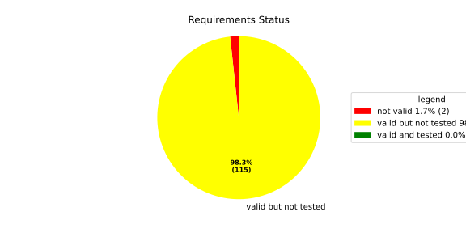
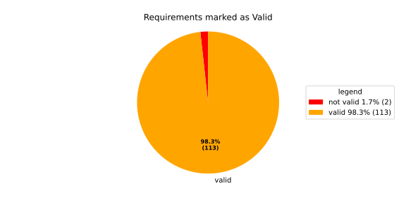
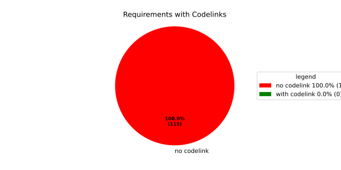

Verification Statistics#
Overview#

In Detail#


No needs passed the filters
Failed Tests
Hint: This table should be empty. Before a PR can be merged all tests have to be successful.
No needs passed the filters
Skipped / Disabled Tests
No needs passed the filters
All passed Tests#
No needs passed the filters
Details About Testcases#
No needs passed the filters
No needs passed the filters
Test Log Files#
tests-report/tests/integration/process_simple_rep_failure/process_simple_rep_failure/test.log
exec ${PAGER:-/usr/bin/less} "$0" || exit 1
Executing tests from //tests/integration/process_simple_rep_failure:process_simple_rep_failure
-----------------------------------------------------------------------------
============================= test session starts ==============================
platform linux -- Python 3.12.12, pytest-9.0.3, pluggy-1.5.0
rootdir: /home/runner/.bazel/sandbox/processwrapper-sandbox/938/execroot/_main/bazel-out/k8-fastbuild/bin/tests/integration/process_simple_rep_failure/process_simple_rep_failure.runfiles/score_itf+
configfile: pytest.ini
collected 1 item
../score_itf+::test_recovery_action_simple_rep_failure
-------------------------------- live log setup --------------------------------
[2026-06-22 05:33:14.898] [INFO] [score.itf.plugins.docker] Executing custom image bootstrap command: tests/utils/environments/x86_64-linux/x86_64-linux.sh
[2026-06-22 05:33:15.076] [DEBUG] [docker.utils.config] Trying paths: ['/home/runner/.docker/config.json', '/home/runner/.dockercfg']
[2026-06-22 05:33:15.076] [DEBUG] [docker.utils.config] Found file at path: /home/runner/.docker/config.json
[2026-06-22 05:33:15.076] [DEBUG] [docker.auth] Found 'auths' section
[2026-06-22 05:33:15.077] [DEBUG] [docker.auth] Found entry (registry='https://index.docker.io/v1/', username='githubactions')
[2026-06-22 05:33:15.085] [DEBUG] [urllib3.connectionpool] http://localhost:None "GET /version HTTP/1.1" 200 823
[2026-06-22 05:33:15.100] [DEBUG] [urllib3.connectionpool] http://localhost:None "POST /v1.48/containers/create HTTP/1.1" 201 88
[2026-06-22 05:33:15.101] [DEBUG] [urllib3.connectionpool] http://localhost:None "GET /v1.48/containers/c9dbc5b088125483bbb5f68492d09f31a361094357c4d772ea95f675fafaab64/json HTTP/1.1" 200 None
[2026-06-22 05:33:15.243] [DEBUG] [urllib3.connectionpool] http://localhost:None "POST /v1.48/containers/c9dbc5b088125483bbb5f68492d09f31a361094357c4d772ea95f675fafaab64/start HTTP/1.1" 204 0
[2026-06-22 05:33:15.244] [DEBUG] [docker.utils.config] Trying paths: ['/home/runner/.docker/config.json', '/home/runner/.dockercfg']
[2026-06-22 05:33:15.244] [DEBUG] [docker.utils.config] Found file at path: /home/runner/.docker/config.json
[2026-06-22 05:33:15.244] [DEBUG] [docker.auth] Found 'auths' section
[2026-06-22 05:33:15.244] [DEBUG] [docker.auth] Found entry (registry='https://index.docker.io/v1/', username='githubactions')
[2026-06-22 05:33:15.252] [DEBUG] [urllib3.connectionpool] http://localhost:None "GET /version HTTP/1.1" 200 823
[2026-06-22 05:33:15.432] [INFO] [tests.utils.testing_utils.setup_test] Test case setup finished
-------------------------------- live log call ---------------------------------
[2026-06-22 05:33:15.559] [INFO] [launch_manager] 2026/06/22 05:33:15.6395552 1489137 000 ECU1 LM LM log debug verbose 1 Launch Manager Started !!!!
[2026-06-22 05:33:15.559] [INFO] [launch_manager] 2026/06/22 05:33:15.6395553 1489139 000 ECU1 LM LM log debug verbose 1 Loading LCM Configurations...
[2026-06-22 05:33:15.559] [INFO] [launch_manager] 2026/06/22 05:33:15.6395553 1489140 000 ECU1 LM LM log debug verbose 1 ECUCFG_ENV_VAR_ROOTFOLDER set successfully
[2026-06-22 05:33:15.559] [INFO] [launch_manager] 2026/06/22 05:33:15.6395553 1489141 000 ECU1 LM LM log debug verbose 5 FlatBufferParser::getModeGroupPgName: MainPG ( IdentifierHash: 18079021346025578134 )
[2026-06-22 05:33:15.559] [INFO] [launch_manager] 2026/06/22 05:33:15.6395553 1489141 000 ECU1 LM LM log debug verbose 5 FlatBufferParser::getModeGroupPgStateName: MainPG/Startup ( IdentifierHash: 10504605499600661529 )
[2026-06-22 05:33:15.560] [INFO] [launch_manager] 2026/06/22 05:33:15.6395553 1489141 000 ECU1 LM LM log debug verbose 5 FlatBufferParser::getModeGroupPgStateName: MainPG/run_target_app_does_report_krunning_in_time ( IdentifierHash: 11934981641920773349 )
[2026-06-22 05:33:15.560] [INFO] [launch_manager] 2026/06/22 05:33:15.6395553 1489142 000 ECU1 LM LM log debug verbose 5 FlatBufferParser::getModeGroupPgStateName: MainPG/run_target_app_does_not_report_krunning_in_time ( IdentifierHash: 7672161913816744053 )
[2026-06-22 05:33:15.560] [INFO] [launch_manager] 2026/06/22 05:33:15.6395553 1489142 000 ECU1 LM LM log debug verbose 5 FlatBufferParser::getModeGroupPgStateName: MainPG/Off ( IdentifierHash: 15281793077830264047 )
[2026-06-22 05:33:15.560] [INFO] [launch_manager] 2026/06/22 05:33:15.6395553 1489142 000 ECU1 LM LM log debug verbose 5 FlatBufferParser::getModeGroupPgStateName: MainPG/fallback_run_target ( IdentifierHash: 4059409696722237352 )
[2026-06-22 05:33:15.560] [INFO] [launch_manager] 2026/06/22 05:33:15.6395553 1489143 000 ECU1 LM LM log debug verbose 4 parseProcessConfigurations: Process index: 0 executable_path_: /tmp/tests/process_simple_rep_failure/control_client_mock
[2026-06-22 05:33:15.561] [INFO] [launch_manager] 2026/06/22 05:33:15.6395553 1489143 000 ECU1 LM LM log debug verbose 3 Process control_client_mock is Reporting execution state
[2026-06-22 05:33:15.561] [INFO] [launch_manager] 2026/06/22 05:33:15.6395553 1489143 000 ECU1 LM LM log debug verbose 1 Process is STATE_MANAGEMENT function Cluster Affiliation
[2026-06-22 05:33:15.562] [INFO] [launch_manager] 2026/06/22 05:33:15.6395553 1489144 000 ECU1 LM LM log debug verbose 3 Process control_client_mock is Self terminating
[2026-06-22 05:33:15.563] [INFO] [launch_manager] 2026/06/22 05:33:15.6395553 1489144 000 ECU1 LM LM log debug verbose 4 ParseProcessProcessGroup: id:::pg_name_: MainPG , pg_state_name_: MainPG/Startup
[2026-06-22 05:33:15.565] [INFO] [launch_manager] 2026/06/22 05:33:15.6395553 1489144 000 ECU1 LM LM log debug verbose 4 ParseProcessProcessGroup: id:::pg_name_: MainPG , pg_state_name_: MainPG/run_target_app_does_report_krunning_in_time
[2026-06-22 05:33:15.566] [INFO] [launch_manager] 2026/06/22 05:33:15.6395553 1489144 000 ECU1 LM LM log debug verbose 4 ParseProcessProcessGroup: id:::pg_name_: MainPG , pg_state_name_: MainPG/run_target_app_does_not_report_krunning_in_time
[2026-06-22 05:33:15.569] [INFO] [launch_manager] 2026/06/22 05:33:15.6395553 1489145 000 ECU1 LM LM log debug verbose 4 ParseProcessProcessGroup: id:::pg_name_: MainPG , pg_state_name_: MainPG/fallback_run_target
[2026-06-22 05:33:15.570] [INFO] [launch_manager] 2026/06/22 05:33:15.6395553 1489145 000 ECU1 LM LM log debug verbose 4 parseProcessConfigurations: Process index: 1 executable_path_: /tmp/tests/process_simple_rep_failure/process_simple_reporting
[2026-06-22 05:33:15.572] [INFO] [launch_manager] 2026/06/22 05:33:15.6395553 1489145 000 ECU1 LM LM log debug verbose 3 Process component_does_report_krunning_in_time is Reporting execution state
[2026-06-22 05:33:15.572] [INFO] [launch_manager] 2026/06/22 05:33:15.6395553 1489146 000 ECU1 LM LM log debug verbose 1 Process is NOT associated with any function Cluster Affiliation
[2026-06-22 05:33:15.572] [INFO] [launch_manager] 2026/06/22 05:33:15.6395553 1489146 000 ECU1 LM LM log debug verbose 3 Process component_does_report_krunning_in_time is Self terminating
[2026-06-22 05:33:15.572] [INFO] [launch_manager] 2026/06/22 05:33:15.6395554 1489146 000 ECU1 LM LM log debug verbose 4 ParseProcessProcessGroup: id:::pg_name_: MainPG , pg_state_name_: MainPG/run_target_app_does_report_krunning_in_time
[2026-06-22 05:33:15.572] [INFO] [launch_manager] 2026/06/22 05:33:15.6395554 1489146 000 ECU1 LM LM log debug verbose 4 parseProcessConfigurations: Process index: 2 executable_path_: /tmp/tests/process_simple_rep_failure/process_simple_reporting
[2026-06-22 05:33:15.572] [INFO] [launch_manager] 2026/06/22 05:33:15.6395554 1489146 000 ECU1 LM LM log debug verbose 3 Process component_does_not_report_krunning_in_time is Reporting execution state
[2026-06-22 05:33:15.572] [INFO] [launch_manager] 2026/06/22 05:33:15.6395554 1489147 000 ECU1 LM LM log debug verbose 1 Process is NOT associated with any function Cluster Affiliation
[2026-06-22 05:33:15.573] [INFO] [launch_manager] 2026/06/22 05:33:15.6395554 1489147 000 ECU1 LM LM log debug verbose 3 Process component_does_not_report_krunning_in_time is Self terminating
[2026-06-22 05:33:15.573] [INFO] [launch_manager] 2026/06/22 05:33:15.6395554 1489147 000 ECU1 LM LM log debug verbose 4 ParseProcessProcessGroup: id:::pg_name_: MainPG , pg_state_name_: MainPG/run_target_app_does_not_report_krunning_in_time
[2026-06-22 05:33:15.573] [INFO] [launch_manager] 2026/06/22 05:33:15.6395554 1489147 000 ECU1 LM LM log debug verbose 4 parseProcessConfigurations: Process index: 3 executable_path_: /tmp/tests/process_simple_rep_failure/verification_process
[2026-06-22 05:33:15.573] [INFO] [launch_manager] 2026/06/22 05:33:15.6395554 1489148 000 ECU1 LM LM log debug verbose 3 Process verification_component is NOT Reporting execution state
[2026-06-22 05:33:15.573] [INFO] [launch_manager] 2026/06/22 05:33:15.6395554 1489148 000 ECU1 LM LM log debug verbose 1 Process is NOT associated with any function Cluster Affiliation
[2026-06-22 05:33:15.573] [INFO] [launch_manager] 2026/06/22 05:33:15.6395554 1489148 000 ECU1 LM LM log debug verbose 3 Process verification_component is Self terminating
[2026-06-22 05:33:15.573] [INFO] [launch_manager] 2026/06/22 05:33:15.6395554 1489148 000 ECU1 LM LM log debug verbose 4 ParseProcessProcessGroup: id:::pg_name_: MainPG , pg_state_name_: MainPG/fallback_run_target
[2026-06-22 05:33:15.573] [INFO] [launch_manager] 2026/06/22 05:33:15.6395554 1489149 000 ECU1 LM LM log debug verbose 3 Loading SWCL Nr. 0 Succeeded
[2026-06-22 05:33:15.573] [INFO] [launch_manager] 2026/06/22 05:33:15.6395554 1489149 000 ECU1 LM LM log debug verbose 2 1 process group(s)
[2026-06-22 05:33:15.573] [INFO] [launch_manager] 2026/06/22 05:33:15.6395554 1489149 000 ECU1 LM LM log debug verbose 3 Creating graph with 4 nodes
[2026-06-22 05:33:15.573] [INFO] [launch_manager] 2026/06/22 05:33:15.6395554 1489149 000 ECU1 LM LM log debug verbose 1 Process groups initialized successfully
[2026-06-22 05:33:15.573] [INFO] [launch_manager] 2026/06/22 05:33:15.6395554 1489149 000 ECU1 LM LM log debug verbose 1 Process Group initialization done
[2026-06-22 05:33:15.573] [INFO] [launch_manager] 2026/06/22 05:33:15.6395554 1489150 000 ECU1 LM LM log debug verbose 3 Creating Safe Process Map with 4 entries
[2026-06-22 05:33:15.573] [INFO] [launch_manager] 2026/06/22 05:33:15.6395554 1489150 000 ECU1 LM LM log debug verbose 2 Creating job queue with capacity 1024
[2026-06-22 05:33:15.574] [INFO] [launch_manager] 2026/06/22 05:33:15.6395554 1489150 000 ECU1 LM LM log debug verbose 1 Creating worker threads...
[2026-06-22 05:33:15.574] [INFO] [launch_manager] 2026/06/22 05:33:15.6395555 1489162 000 ECU1 LM LM log debug verbose 7 Process group index 0 (with name MainPG ) has 4 processes
[2026-06-22 05:33:15.574] [INFO] [launch_manager] 2026/06/22 05:33:15.6395555 1489163 000 ECU1 LM LM log debug verbose 2 Creating process node with id: 0
[2026-06-22 05:33:15.574] [INFO] [launch_manager] 2026/06/22 05:33:15.6395555 1489163 000 ECU1 LM LM log debug verbose 5 Process 0 has 0 start dependencies
[2026-06-22 05:33:15.574] [INFO] [launch_manager] 2026/06/22 05:33:15.6395555 1489163 000 ECU1 LM LM log debug verbose 2 Creating process node with id: 1
[2026-06-22 05:33:15.574] [INFO] [launch_manager] 2026/06/22 05:33:15.6395555 1489163 000 ECU1 LM LM log debug verbose 5 Process 1 has 0 start dependencies
[2026-06-22 05:33:15.574] [INFO] [launch_manager] 2026/06/22 05:33:15.6395555 1489164 000 ECU1 LM LM log debug verbose 2 Creating process node with id: 2
[2026-06-22 05:33:15.574] [INFO] [launch_manager] 2026/06/22 05:33:15.6395555 1489164 000 ECU1 LM LM log debug verbose 5 Process 2 has 0 start dependencies
[2026-06-22 05:33:15.574] [INFO] [launch_manager] 2026/06/22 05:33:15.6395555 1489164 000 ECU1 LM LM log debug verbose 2 Creating process node with id: 3
[2026-06-22 05:33:15.574] [INFO] [launch_manager] 2026/06/22 05:33:15.6395555 1489164 000 ECU1 LM LM log debug verbose 5 Process 3 has 0 start dependencies
[2026-06-22 05:33:15.574] [INFO] [launch_manager] 2026/06/22 05:33:15.6395555 1489164 000 ECU1 LM LM log debug verbose 3 Created 4 process nodes
[2026-06-22 05:33:15.574] [INFO] [launch_manager] 2026/06/22 05:33:15.6395555 1489164 000 ECU1 LM LM log debug verbose 2 Creating successor lists for process group MainPG
[2026-06-22 05:33:15.574] [INFO] [launch_manager] 2026/06/22 05:33:15.6395555 1489165 000 ECU1 LM LM log debug verbose 1 Graphs initialized
[2026-06-22 05:33:15.574] [INFO] [launch_manager] 2026/06/22 05:33:15.6395556 1489166 000 ECU1 LM Fcty log info verbose 2 Factory for FlatCfg MachineConfig: Loading of HM Machine Configuration succeeded.
[2026-06-22 05:33:15.574] [INFO] [launch_manager] 2026/06/22 05:33:15.6395556 1489167 000 ECU1 LM Fcty log debug verbose 3 Factory for FlatCfg MachineConfig: Alive Supervision buffer size: 100
[2026-06-22 05:33:15.575] [INFO] [launch_manager] 2026/06/22 05:33:15.6395556 1489167 000 ECU1 LM Fcty log debug verbose 3 Factory for FlatCfg MachineConfig: Monitor buffer size: 512
[2026-06-22 05:33:15.575] [INFO] [launch_manager] 2026/06/22 05:33:15.6395556 1489167 000 ECU1 LM Fcty log debug verbose 4 Factory for FlatCfg MachineConfig: Periodicity: 50000000 ns
[2026-06-22 05:33:15.575] [INFO] [launch_manager] 2026/06/22 05:33:15.6395556 1489167 000 ECU1 LM Fcty log debug verbose 3 Factory for FlatCfg MachineConfig: Configured watchdogs: 0
[2026-06-22 05:33:15.575] [INFO] [launch_manager] 2026/06/22 05:33:15.6395556 1489167 000 ECU1 LM Fcty log warn verbose 2 Factory for FlatCfg MachineConfig: No watchdog configured
[2026-06-22 05:33:15.575] [INFO] [launch_manager] 2026/06/22 05:33:15.6395556 1489168 000 ECU1 LM Fcty log debug verbose 2 Software Cluster Handler starts constructing workers: MainCluster
[2026-06-22 05:33:15.575] [INFO] [launch_manager] 2026/06/22 05:33:15.6395556 1489168 000 ECU1 LM Fcty log debug verbose 3 Factory for FlatCfg AR24-11: Successfully created Process States: control_client_mock
[2026-06-22 05:33:15.575] [INFO] [launch_manager] 2026/06/22 05:33:15.6395556 1489169 000 ECU1 LM Fcty log debug verbose 3 Factory for FlatCfg AR24-11: Number of constructed Process States: 1
[2026-06-22 05:33:15.575] [INFO] [launch_manager] 2026/06/22 05:33:15.6395556 1489169 000 ECU1 LM Fcty log debug verbose 3 Factory for FlatCfg AR24-11: Successfully created Monitor interface IPC with path: lifecycle_health_control_client_mock
[2026-06-22 05:33:15.575] [INFO] [launch_manager] 2026/06/22 05:33:15.6395556 1489170 000 ECU1 LM Fcty log debug verbose 3 Factory for FlatCfg AR24-11: Number of constructed Monitor interface IPCs: 1
[2026-06-22 05:33:15.575] [INFO] [launch_manager] 2026/06/22 05:33:15.6395556 1489170 000 ECU1 LM Fcty log debug verbose 3 Factory for FlatCfg AR24-11: Successfully created MonitorInterface: /lifecycle_health_control_client_mock
[2026-06-22 05:33:15.575] [INFO] [launch_manager] 2026/06/22 05:33:15.6395556 1489170 000 ECU1 LM Fcty log debug verbose 3 Factory for FlatCfg AR24-11: Number of constructed Monitor interfaces: 1
[2026-06-22 05:33:15.575] [INFO] [launch_manager] 2026/06/22 05:33:15.6395556 1489171 000 ECU1 LM Fcty log debug verbose 3 Factory for FlatCfg AR24-11: Successfully created supervision checkpoint: control_client_mock_checkpoint
[2026-06-22 05:33:15.575] [INFO] [launch_manager] 2026/06/22 05:33:15.6395556 1489171 000 ECU1 LM Fcty log debug verbose 3 Factory for FlatCfg AR24-11: Number of constructed supervision checkpoints: 1
[2026-06-22 05:33:15.576] [INFO] [launch_manager] 2026/06/22 05:33:15.6395556 1489171 000 ECU1 LM Fcty log debug verbose 3 Factory for FlatCfg AR24-11: Successfully created alive supervision worker object: control_client_mock_alive_supervision
[2026-06-22 05:33:15.576] [INFO] [launch_manager] 2026/06/22 05:33:15.6395556 1489171 000 ECU1 LM Fcty log debug verbose 3 Factory for FlatCfg AR24-11: Number of constructed alive supervisions: 1
[2026-06-22 05:33:15.576] [INFO] [launch_manager] 2026/06/22 05:33:15.6395556 1489172 000 ECU1 LM Fcty log info verbose 2 Phm Daemon: The (configured) periodicity in [ns] is set to: 50000000
[2026-06-22 05:33:15.576] [INFO] [launch_manager] 2026/06/22 05:33:15.6395556 1489172 000 ECU1 LM Fcty log debug verbose 2 Phm Daemon: The accuracy of the monotonic system clock in [ns] is: 1
[2026-06-22 05:33:15.576] [INFO] [launch_manager] 2026/06/22 05:33:15.6395556 1489172 000 ECU1 LM Fcty log debug verbose 3 HealthMonitor: Initialization took 0 ms
[2026-06-22 05:33:15.576] [INFO] [launch_manager] 2026/06/22 05:33:15.6395556 1489173 000 ECU1 LM LM log info verbose 1 LCM started successfully
[2026-06-22 05:33:15.576] [INFO] [launch_manager] 2026/06/22 05:33:15.6395556 1489173 000 ECU1 LM LM log debug verbose 3 clock() at run(): 37.804000 ms
[2026-06-22 05:33:15.576] [INFO] [launch_manager] 2026/06/22 05:33:15.6395556 1489174 000 ECU1 LM LM log debug verbose 1 =============STARTING MAINPG STARTUP STATE============
[2026-06-22 05:33:15.576] [INFO] [launch_manager] 2026/06/22 05:33:15.6395556 1489174 000 ECU1 LM LM log debug verbose 9 Graph::setState changes from kSuccess to kInTransition for PG 0 ( MainPG )
[2026-06-22 05:33:15.576] [INFO] [launch_manager] 2026/06/22 05:33:15.6395556 1489174 000 ECU1 LM LM log debug verbose 2 Stop Dependencies: 0
[2026-06-22 05:33:15.576] [INFO] [launch_manager] 2026/06/22 05:33:15.6395556 1489174 000 ECU1 LM LM log debug verbose 2 Stop Dependencies: 0
[2026-06-22 05:33:15.576] [INFO] [launch_manager] 2026/06/22 05:33:15.6395556 1489175 000 ECU1 LM LM log debug verbose 2 Stop Dependencies: 0
[2026-06-22 05:33:15.576] [INFO] [launch_manager] 2026/06/22 05:33:15.6395556 1489175 000 ECU1 LM LM log debug verbose 2 Stop Dependencies: 0
[2026-06-22 05:33:15.576] [INFO] [launch_manager] 2026/06/22 05:33:15.6395556 1489175 000 ECU1 LM LM log debug verbose 2 Start Dependencies: 0
[2026-06-22 05:33:15.576] [INFO] [launch_manager] 2026/06/22 05:33:15.6395556 1489175 000 ECU1 LM LM log debug verbose 2 Start Dependencies: 0
[2026-06-22 05:33:15.576] [INFO] [launch_manager] 2026/06/22 05:33:15.6395556 1489175 000 ECU1 LM LM log debug verbose 2 Start Dependencies: 0
[2026-06-22 05:33:15.577] [INFO] [launch_manager] 2026/06/22 05:33:15.6395556 1489175 000 ECU1 LM LM log debug verbose 2 Start Dependencies: 0
[2026-06-22 05:33:15.577] [INFO] [launch_manager] 2026/06/22 05:33:15.6395557 1489176 000 ECU1 LM LM log debug verbose 6 Starting process 0 ( control_client_mock ) from executable /tmp/tests/process_simple_rep_failure/control_client_mock
[2026-06-22 05:33:15.577] [INFO] [launch_manager] 2026/06/22 05:33:15.6395557 1489177 000 ECU1 LM LM log debug verbose 3 Initialize the control client for control_client_mock process
[2026-06-22 05:33:15.577] [INFO] [launch_manager] 2026/06/22 05:33:15.6395557 1489178 000 ECU1 LM LM log debug verbose 1
[2026-06-22 05:33:15.577] [INFO] [launch_manager] ControlClientChannel initialized
[2026-06-22 05:33:15.577] [INFO] [launch_manager] 2026/06/22 05:33:15.6395557 1489183 000 ECU1 LM LM log debug verbose 4
[2026-06-22 05:33:15.577] [INFO] [launch_manager] startProcess pid 68 received for process: control_client_mock
[2026-06-22 05:33:15.577] [INFO] [launch_manager] 2026/06/22 05:33:15.6395557 1489185 000 ECU1 LM LM log debug verbose 1 ControlClientChannel obtained from sync.
[2026-06-22 05:33:15.578] [INFO] [launch_manager] [==========] Running 1 test from 1 test suite.
[2026-06-22 05:33:15.578] [INFO] [launch_manager] [----------] Global test environment set-up.
[2026-06-22 05:33:15.578] [INFO] [launch_manager] [----------] 1 test from RecoveryActionSimpleRepFailure
[2026-06-22 05:33:15.578] [INFO] [launch_manager] [ RUN ] RecoveryActionSimpleRepFailure.ControlClientMock
[2026-06-22 05:33:15.578] [INFO] [launch_manager] [ STEP ] Report running from ControlClientMock
[2026-06-22 05:33:15.578] [INFO] [launch_manager] [ END STEP ] Report running from ControlClientMock
[2026-06-22 05:33:15.578] [INFO] [launch_manager] [ STEP ] Activate RunTarget run_target_app_does_report_krunning_in_time
[2026-06-22 05:33:15.578] [INFO] [launch_manager] 2026/06/22 05:33:15.6395563 1489244 000 ECU1 LM LM log debug verbose 1 Request sent. Waiting for acknowledgment...
[2026-06-22 05:33:15.578] [INFO] [launch_manager] 2026/06/22 05:33:15.6395564 1489249 000 ECU1 LM LM log debug verbose 8
[2026-06-22 05:33:15.578] [INFO] [launch_manager] Got kRunning for pid 68 ( control_client_mock ) process 0 of group MainPG
[2026-06-22 05:33:15.578] [INFO] [launch_manager] 2026/06/22 05:33:15.6395564 1489250 000 ECU1 LM LM log debug verbose 7
[2026-06-22 05:33:15.579] [INFO] [launch_manager] startProcess for MainPG process 0 ( control_client_mock ) done
[2026-06-22 05:33:15.579] [INFO] [launch_manager] 2026/06/22 05:33:15.6395564 1489251 000 ECU1 LM LM log debug verbose 1
[2026-06-22 05:33:15.579] [INFO] [launch_manager] Control Client handler nudged
[2026-06-22 05:33:15.579] [INFO] [launch_manager] 2026/06/22 05:33:15.6395564 1489253 000 ECU1 LM LM log debug verbose 3
[2026-06-22 05:33:15.579] [INFO] [launch_manager] clock() at successful initial state transition: 39.165000 ms
[2026-06-22 05:33:15.579] [INFO] [launch_manager] 2026/06/22 05:33:15.6395564 1489254 000 ECU1 LM LM log debug verbose 9 Graph::setState changes from kInTransition to kSuccess for PG 0 ( MainPG )
[2026-06-22 05:33:15.579] [INFO] [launch_manager] 2026/06/22 05:33:15.6395564 1489254 000 ECU1 LM LM log info verbose 7 Completed the request for PG MainPG to State MainPG/Startup in 7 ms
[2026-06-22 05:33:15.579] [INFO] [launch_manager] 2026/06/22 05:33:15.6395564 1489255 000 ECU1 LM LM log debug verbose 1
[2026-06-22 05:33:15.579] [INFO] [launch_manager] Control Client handler nudged
[2026-06-22 05:33:15.579] [INFO] [launch_manager] 2026/06/22 05:33:15.6395565 1489259 000 ECU1 LM LM log debug verbose 8
[2026-06-22 05:33:15.580] [INFO] [launch_manager] ProcessGroupManager::ControlClientHandler: got request kSetStateRequest ( 16 ) re state MainPG/run_target_app_does_report_krunning_in_time of PG MainPG
[2026-06-22 05:33:15.580] [INFO] [launch_manager] 2026/06/22 05:33:15.6395565 1489261 000 ECU1 LM LM log debug verbose 6
[2026-06-22 05:33:15.580] [INFO] [launch_manager] Pending state for process group MainPG changed from to MainPG/run_target_app_does_report_krunning_in_time
[2026-06-22 05:33:15.580] [INFO] [launch_manager] 2026/06/22 05:33:15.6395565 1489262 000 ECU1 LM LM log debug verbose 1
[2026-06-22 05:33:15.580] [INFO] [launch_manager] Request acknowledged.
[2026-06-22 05:33:15.580] [INFO] [launch_manager] 2026/06/22 05:33:15.6395565 1489264 000 ECU1 LM LM log debug verbose 6
[2026-06-22 05:33:15.580] [INFO] [launch_manager] Pending state for process group MainPG changed from MainPG/run_target_app_does_report_krunning_in_time to
[2026-06-22 05:33:15.580] [INFO] [launch_manager] 2026/06/22 05:33:15.6395565 1489265 000 ECU1 LM LM log debug verbose 4
[2026-06-22 05:33:15.580] [INFO] [launch_manager] Start transition to MainPG/run_target_app_does_report_krunning_in_time for PG MainPG
[2026-06-22 05:33:15.580] [INFO] [launch_manager] 2026/06/22 05:33:15.6395565 1489265 000 ECU1 LM LM log debug verbose 1 Request acknowledged.
[2026-06-22 05:33:15.580] [INFO] [launch_manager] 2026/06/22 05:33:15.6395565 1489266 000 ECU1 LM LM log debug verbose 9
[2026-06-22 05:33:15.580] [INFO] [launch_manager] Graph::setState changes from kSuccess to kInTransition for PG 0 ( MainPG )
[2026-06-22 05:33:15.581] [INFO] [launch_manager] 2026/06/22 05:33:15.6395566 1489267 000 ECU1 LM LM log debug verbose 2 Stop Dependencies: 0
[2026-06-22 05:33:15.581] [INFO] [launch_manager] 2026/06/22 05:33:15.6395566 1489267 000 ECU1 LM LM log debug verbose 2
[2026-06-22 05:33:15.581] [INFO] [launch_manager] Stop Dependencies: 0
[2026-06-22 05:33:15.581] [INFO] [launch_manager] 2026/06/22 05:33:15.6395566 1489269 000 ECU1 LM LM log debug verbose 2
[2026-06-22 05:33:15.581] [INFO] [launch_manager] Stop Dependencies: 0
[2026-06-22 05:33:15.581] [INFO] [launch_manager] 2026/06/22 05:33:15.6395566 1489269 000 ECU1 LM LM log debug verbose 2 Stop Dependencies: 0
[2026-06-22 05:33:15.581] [INFO] [launch_manager] 2026/06/22 05:33:15.6395566 1489270 000 ECU1 LM LM log debug verbose 2 Start Dependencies: 0
[2026-06-22 05:33:15.581] [INFO] [launch_manager] 2026/06/22 05:33:15.6395566 1489271 000 ECU1 LM LM log debug verbose 2
[2026-06-22 05:33:15.581] [INFO] [launch_manager] Start Dependencies: 0
[2026-06-22 05:33:15.581] [INFO] [launch_manager] 2026/06/22 05:33:15.6395566 1489272 000 ECU1 LM LM log debug verbose 2
[2026-06-22 05:33:15.582] [INFO] [launch_manager] Start Dependencies: 0
[2026-06-22 05:33:15.582] [INFO] [launch_manager] 2026/06/22 05:33:15.6395566 1489273 000 ECU1 LM LM log debug verbose 2
[2026-06-22 05:33:15.582] [INFO] [launch_manager] Start Dependencies: 0
[2026-06-22 05:33:15.582] [INFO] [launch_manager] 2026/06/22 05:33:15.6395567 1489279 000 ECU1 LM LM log debug verbose 6
[2026-06-22 05:33:15.582] [INFO] [launch_manager] Starting process 1 ( component_does_report_krunning_in_time ) from executable /tmp/tests/process_simple_rep_failure/process_simple_reporting
[2026-06-22 05:33:15.582] [INFO] [launch_manager] 2026/06/22 05:33:15.6395569 1489297 000 ECU1 LM LM log debug verbose 4
[2026-06-22 05:33:15.582] [INFO] [launch_manager] startProcess pid 70 received for process: component_does_report_krunning_in_time
[2026-06-22 05:33:15.582] [INFO] [launch_manager] [==========] Running 1 test from 1 test suite.
[2026-06-22 05:33:15.582] [INFO] [launch_manager] [----------] Global test environment set-up.
[2026-06-22 05:33:15.582] [INFO] [launch_manager] [----------] 1 test from ProcessSimpleRepFailure
[2026-06-22 05:33:15.582] [INFO] [launch_manager] [ RUN ] ProcessSimpleRepFailure.ProcessSimpleReporting
[2026-06-22 05:33:15.582] [INFO] [launch_manager] [ STEP ] Check args
[2026-06-22 05:33:15.582] [INFO] [launch_manager] [ END STEP ] Check args
[2026-06-22 05:33:15.583] [INFO] [launch_manager] [ STEP ] Report running from ProcessSimpleReporting
[2026-06-22 05:33:15.608] [INFO] [launch_manager] 2026/06/22 05:33:15.6395607 1489683 000 ECU1 LM Sprv log debug verbose 6 Process with Id control_client_mock changed state PG MainPG/Startup PS 1
[2026-06-22 05:33:15.608] [INFO] [launch_manager] 2026/06/22 05:33:15.6395607 1489685 000 ECU1 LM Sprv log debug verbose 6 Process with Id control_client_mock changed state PG MainPG/Startup PS 2
[2026-06-22 05:33:15.608] [INFO] [launch_manager] 2026/06/22 05:33:15.6395608 1489686 000 ECU1 LM Sprv log debug verbose 6 Process with Id component_does_report_krunning_in_time changed state PG MainPG/run_target_app_does_report_krunning_in_time PS 1
[2026-06-22 05:33:15.609] [INFO] [launch_manager] 2026/06/22 05:33:15.6395608 1489687 000 ECU1 LM Sprv log info verbose 3
[2026-06-22 05:33:15.609] [INFO] [launch_manager] Alive Supervision ( control_client_mock_alive_supervision ) switched to OK.
[2026-06-22 05:33:15.622] [DEBUG] [tests.utils.testing_utils.run_until_file_deployed] Waiting for /tmp/tests/test_end
[2026-06-22 05:33:16.073] [INFO] [launch_manager] [ END STEP ] Report running from ProcessSimpleReporting
[2026-06-22 05:33:16.074] [INFO] [launch_manager] [ OK ] ProcessSimpleRepFailure.ProcessSimpleReporting (502 ms)
[2026-06-22 05:33:16.074] [INFO] [launch_manager] [----------] 1 test from ProcessSimpleRepFailure (502 ms total)
[2026-06-22 05:33:16.074] [INFO] [launch_manager] [----------] Global test environment tear-down
[2026-06-22 05:33:16.074] [INFO] [launch_manager] [==========] 1 test from 1 test suite ran. (502 ms total)
[2026-06-22 05:33:16.074] [INFO] [launch_manager] [ PASSED ] 1 test.
[2026-06-22 05:33:16.074] [INFO] [launch_manager] 2026/06/22 05:33:16.6396073 1494341 000 ECU1 LM LM log debug verbose 12 Child process 1 of MainPG pid 70 ( component_does_report_krunning_in_time ) for node True terminated with status 0
[2026-06-22 05:33:16.074] [INFO] [launch_manager] 2026/06/22 05:33:16.6396073 1494342 000 ECU1 LM LM log debug verbose 8 Got kRunning for pid 70 ( component_does_report_krunning_in_time ) process 1 of group MainPG
[2026-06-22 05:33:16.074] [INFO] [launch_manager] 2026/06/22 05:33:16.6396073 1494342 000 ECU1 LM LM log debug verbose 7 startProcess for MainPG process 1 ( component_does_report_krunning_in_time ) done
[2026-06-22 05:33:16.074] [INFO] [launch_manager] 2026/06/22 05:33:16.6396073 1494343 000 ECU1 LM LM log debug verbose 9 Graph::setState changes from kInTransition to kSuccess for PG 0 ( MainPG )
[2026-06-22 05:33:16.075] [INFO] [launch_manager] 2026/06/22 05:33:16.6396073 1494343 000 ECU1 LM LM log info verbose 7 Completed the request for PG MainPG to State MainPG/run_target_app_does_report_krunning_in_time in 508 ms
[2026-06-22 05:33:16.075] [INFO] [launch_manager] 2026/06/22 05:33:16.6396073 1494343 000 ECU1 LM LM log debug verbose 1 Control Client handler nudged
[2026-06-22 05:33:16.075] [INFO] [launch_manager] 2026/06/22 05:33:16.6396074 1494349 000 ECU1 LM LM log debug verbose 8 ProcessGroupManager::ControlClientHandler: Sending kSetStateSuccess ( 20 ) re state MainPG/run_target_app_does_report_krunning_in_time of PG MainPG
[2026-06-22 05:33:16.075] [INFO] [launch_manager] 2026/06/22 05:33:16.6396074 1494349 000 ECU1 LM LM log debug verbose 1 Response sent.
[2026-06-22 05:33:16.107] [INFO] [launch_manager] 2026/06/22 05:33:16.6396106 1494674 000 ECU1 LM Sprv log debug verbose 6 Process with Id component_does_report_krunning_in_time changed state PG MainPG/run_target_app_does_report_krunning_in_time PS 4
[2026-06-22 05:33:16.161] [INFO] [launch_manager] 2026/06/22 05:33:16.6396161 1495217 000 ECU1 LM LM log debug verbose 1 Response retrieved.
[2026-06-22 05:33:16.161] [INFO] [launch_manager] [ END STEP ] Activate RunTarget run_target_app_does_report_krunning_in_time
[2026-06-22 05:33:16.189] [DEBUG] [tests.utils.testing_utils.run_until_file_deployed] Waiting for /tmp/tests/test_end
[2026-06-22 05:33:16.863] [DEBUG] [tests.utils.testing_utils.run_until_file_deployed] Waiting for /tmp/tests/test_end
[2026-06-22 05:33:17.163] [INFO] [launch_manager] [ STEP ] Verify fallback run target has not been activated
[2026-06-22 05:33:17.164] [INFO] [launch_manager] [ END STEP ] Verify fallback run target has not been activated
[2026-06-22 05:33:17.164] [INFO] [launch_manager] [ STEP ] Activate RunTarget run_target_app_does_not_report_krunning_in_time
[2026-06-22 05:33:17.164] [INFO] [launch_manager] 2026/06/22 05:33:17.6397161 1505224 000 ECU1 LM LM log debug verbose 1
[2026-06-22 05:33:17.164] [INFO] [launch_manager] Request sent. Waiting for acknowledgment...
[2026-06-22 05:33:17.165] [INFO] [launch_manager] 2026/06/22 05:33:17.6397162 1505229 000 ECU1 LM LM log debug verbose 8 ProcessGroupManager::ControlClientHandler: got request kSetStateRequest ( 16 ) re state MainPG/run_target_app_does_not_report_krunning_in_time of PG MainPG
[2026-06-22 05:33:17.165] [INFO] [launch_manager] 2026/06/22 05:33:17.6397162 1505229 000 ECU1 LM LM log debug verbose 6 Pending state for process group MainPG changed from to MainPG/run_target_app_does_not_report_krunning_in_time
[2026-06-22 05:33:17.165] [INFO] [launch_manager] 2026/06/22 05:33:17.6397162 1505229 000 ECU1 LM LM log debug verbose 1 Request acknowledged.
[2026-06-22 05:33:17.165] [INFO] [launch_manager] 2026/06/22 05:33:17.6397162 1505230 000 ECU1 LM LM log debug verbose 6 Pending state for process group MainPG changed from MainPG/run_target_app_does_not_report_krunning_in_time to
[2026-06-22 05:33:17.165] [INFO] [launch_manager] 2026/06/22 05:33:17.6397162 1505230 000 ECU1 LM LM log debug verbose 4 Start transition to MainPG/run_target_app_does_not_report_krunning_in_time for PG MainPG
[2026-06-22 05:33:17.165] [INFO] [launch_manager] 2026/06/22 05:33:17.6397162 1505230 000 ECU1 LM LM log debug verbose 9 Graph::setState changes from kSuccess to kInTransition for PG 0 ( MainPG )
[2026-06-22 05:33:17.165] [INFO] [launch_manager] 2026/06/22 05:33:17.6397162 1505231 000 ECU1 LM LM log debug verbose 2 Stop Dependencies: 0
[2026-06-22 05:33:17.165] [INFO] [launch_manager] 2026/06/22 05:33:17.6397162 1505231 000 ECU1 LM LM log debug verbose 2 Stop Dependencies: 0
[2026-06-22 05:33:17.166] [INFO] [launch_manager] 2026/06/22 05:33:17.6397162 1505231 000 ECU1 LM LM log debug verbose 2 Stop Dependencies: 0
[2026-06-22 05:33:17.166] [INFO] [launch_manager] 2026/06/22 05:33:17.6397162 1505231 000 ECU1 LM LM log debug verbose 2 Stop Dependencies: 0
[2026-06-22 05:33:17.166] [INFO] [launch_manager] 2026/06/22 05:33:17.6397162 1505231 000 ECU1 LM LM log debug verbose 2 Start Dependencies: 0
[2026-06-22 05:33:17.166] [INFO] [launch_manager] 2026/06/22 05:33:17.6397162 1505232 000 ECU1 LM LM log debug verbose 2 Start Dependencies: 0
[2026-06-22 05:33:17.166] [INFO] [launch_manager] 2026/06/22 05:33:17.6397162 1505232 000 ECU1 LM LM log debug verbose 2 Start Dependencies: 0
[2026-06-22 05:33:17.167] [INFO] [launch_manager] 2026/06/22 05:33:17.6397162 1505232 000 ECU1 LM LM log debug verbose 2 Start Dependencies: 0
[2026-06-22 05:33:17.167] [INFO] [launch_manager] 2026/06/22 05:33:17.6397162 1505233 000 ECU1 LM LM log debug verbose 6 Starting process 2 ( component_does_not_report_krunning_in_time ) from executable /tmp/tests/process_simple_rep_failure/process_simple_reporting
[2026-06-22 05:33:17.167] [INFO] [launch_manager] 2026/06/22 05:33:17.6397163 1505239 000 ECU1 LM LM log debug verbose 4 startProcess pid 89 received for process: component_does_not_report_krunning_in_time
[2026-06-22 05:33:17.167] [INFO] [launch_manager] 2026/06/22 05:33:17.6397163 1505241 000 ECU1 LM LM log debug verbose 1 Request acknowledged.
[2026-06-22 05:33:17.167] [INFO] [launch_manager] [==========] Running 1 test from 1 test suite.
[2026-06-22 05:33:17.168] [INFO] [launch_manager] [----------] Global test environment set-up.
[2026-06-22 05:33:17.168] [INFO] [launch_manager] [----------] 1 test from ProcessSimpleRepFailure
[2026-06-22 05:33:17.168] [INFO] [launch_manager] [ RUN ] ProcessSimpleRepFailure.ProcessSimpleReporting
[2026-06-22 05:33:17.168] [INFO] [launch_manager] [ STEP ] Check args
[2026-06-22 05:33:17.168] [INFO] [launch_manager] [ END STEP ] Check args
[2026-06-22 05:33:17.168] [INFO] [launch_manager] [ STEP ] Report running from ProcessSimpleReporting
[2026-06-22 05:33:17.208] [INFO] [launch_manager] 2026/06/22 05:33:17.6397206 1505674 000 ECU1 LM Sprv log debug verbose 6
[2026-06-22 05:33:17.208] [INFO] [launch_manager] Process with Id component_does_not_report_krunning_in_time changed state PG MainPG/run_target_app_does_not_report_krunning_in_time PS 1
[2026-06-22 05:33:17.428] [DEBUG] [tests.utils.testing_utils.run_until_file_deployed] Waiting for /tmp/tests/test_end
[2026-06-22 05:33:17.980] [DEBUG] [tests.utils.testing_utils.run_until_file_deployed] Waiting for /tmp/tests/test_end
[2026-06-22 05:33:18.217] [INFO] [launch_manager] 2026/06/22 05:33:18.6398217 1515779 000 ECU1 LM LM log error verbose 1 Semaphore timedWait or post failed: Unable to wait or post on semaphores within the specified timeout.
[2026-06-22 05:33:18.217] [INFO] [launch_manager] 2026/06/22 05:33:18.6398217 1515779 000 ECU1 LM LM log warn verbose 5 Got kRunning timeout for process 2 ( component_does_not_report_krunning_in_time )
[2026-06-22 05:33:18.217] [INFO] [launch_manager] 2026/06/22 05:33:18.6398217 1515780 000 ECU1 LM LM log debug verbose 5 terminating process 2 ( component_does_not_report_krunning_in_time )
[2026-06-22 05:33:18.218] [INFO] [launch_manager] 2026/06/22 05:33:18.6398217 1515780 000 ECU1 LM LM log debug verbose 9 Requesting termination of process 2 of MainPG pid 89 ( component_does_not_report_krunning_in_time )
[2026-06-22 05:33:18.218] [INFO] [launch_manager] 2026/06/22 05:33:18.6398217 1515780 000 ECU1 LM LM log debug verbose 2 Request termination received for 89
[2026-06-22 05:33:18.257] [INFO] [launch_manager] 2026/06/22 05:33:18.6398256 1516174 000 ECU1 LM Sprv log debug verbose 6 Process with Id component_does_not_report_krunning_in_time changed state PG MainPG/run_target_app_does_not_report_krunning_in_time PS 3
[2026-06-22 05:33:18.542] [DEBUG] [tests.utils.testing_utils.run_until_file_deployed] Waiting for /tmp/tests/test_end
[2026-06-22 05:33:19.099] [DEBUG] [tests.utils.testing_utils.run_until_file_deployed] Waiting for /tmp/tests/test_end
[2026-06-22 05:33:19.266] [INFO] [launch_manager] 2026/06/22 05:33:19.6399266 1526271 000 ECU1 LM LM log warn verbose 5 Process 2 ( component_does_not_report_krunning_in_time ) did not respond to SIGTERM, sending SIGKILL
[2026-06-22 05:33:19.266] [INFO] [launch_manager] 2026/06/22 05:33:19.6399266 1526271 000 ECU1 LM LM log debug verbose 2 Forced termination received for pid 89
[2026-06-22 05:33:19.267] [INFO] [launch_manager] 2026/06/22 05:33:19.6399266 1526275 000 ECU1 LM LM log debug verbose 12 Child process 2 of MainPG pid 89 ( component_does_not_report_krunning_in_time ) for node True terminated with status 9
[2026-06-22 05:33:19.267] [INFO] [launch_manager] 2026/06/22 05:33:19.6399267 1526276 000 ECU1 LM LM log warn verbose 7 unexpected termination of process 2 pid 89 ( component_does_not_report_krunning_in_time )
[2026-06-22 05:33:19.267] [INFO] [launch_manager] 2026/06/22 05:33:19.6399267 1526276 000 ECU1 LM LM log debug verbose 9 Graph::setState changes from kInTransition to kAborting for PG 0 ( MainPG )
[2026-06-22 05:33:19.268] [INFO] [launch_manager] 2026/06/22 05:33:19.6399268 1526293 000 ECU1 LM LM log debug verbose 7 terminateProcess for MainPG process 2 ( component_does_not_report_krunning_in_time ) done
[2026-06-22 05:33:19.268] [INFO] [launch_manager] 2026/06/22 05:33:19.6399268 1526293 000 ECU1 LM LM log debug verbose 7
[2026-06-22 05:33:19.269] [INFO] [launch_manager] startProcess for MainPG process 2 ( component_does_not_report_krunning_in_time ) done
[2026-06-22 05:33:19.269] [INFO] [launch_manager] 2026/06/22 05:33:19.6399268 1526294 000 ECU1 LM LM log debug verbose 9 Graph::setState changes from kAborting to kUndefinedState for PG 0 ( MainPG )
[2026-06-22 05:33:19.269] [INFO] [launch_manager] 2026/06/22 05:33:19.6399268 1526295 000 ECU1 LM LM log debug verbose 1 Control Client handler nudged
[2026-06-22 05:33:19.269] [INFO] [launch_manager] 2026/06/22 05:33:19.6399269 1526300 000 ECU1 LM LM log debug verbose 8 ProcessGroupManager::ControlClientHandler: Sending kFailedUnexpectedTerminationOnEnter ( 23 ) re state MainPG/run_target_app_does_not_report_krunning_in_time of PG MainPG
[2026-06-22 05:33:19.269] [INFO] [launch_manager] 2026/06/22 05:33:19.6399269 1526300 000 ECU1 LM LM log debug verbose 1 Response sent.
[2026-06-22 05:33:19.269] [INFO] [launch_manager] 2026/06/22 05:33:19.6399269 1526301 000 ECU1 LM LM log warn verbose 3 Problem discovered in PG MainPG Activating Recovery state.
[2026-06-22 05:33:19.269] [INFO] [launch_manager] 2026/06/22 05:33:19.6399269 1526301 000 ECU1 LM LM log debug verbose 9 Graph::setState changes from kUndefinedState to kInTransition for PG 0 ( MainPG )
[2026-06-22 05:33:19.269] [INFO] [launch_manager] 2026/06/22 05:33:19.6399269 1526301 000 ECU1 LM LM log debug verbose 2 Stop Dependencies: 0
[2026-06-22 05:33:19.269] [INFO] [launch_manager] 2026/06/22 05:33:19.6399269 1526301 000 ECU1 LM LM log debug verbose 2 Stop Dependencies: 0
[2026-06-22 05:33:19.270] [INFO] [launch_manager] 2026/06/22 05:33:19.6399269 1526302 000 ECU1 LM LM log debug verbose 2 Stop Dependencies: 0
[2026-06-22 05:33:19.270] [INFO] [launch_manager] 2026/06/22 05:33:19.6399269 1526302 000 ECU1 LM LM log debug verbose 2 Stop Dependencies: 0
[2026-06-22 05:33:19.270] [INFO] [launch_manager] 2026/06/22 05:33:19.6399269 1526302 000 ECU1 LM LM log debug verbose 2 Start Dependencies: 0
[2026-06-22 05:33:19.270] [INFO] [launch_manager] 2026/06/22 05:33:19.6399269 1526302 000 ECU1 LM LM log debug verbose 2 Start Dependencies: 0
[2026-06-22 05:33:19.270] [INFO] [launch_manager] 2026/06/22 05:33:19.6399269 1526302 000 ECU1 LM LM log debug verbose 2 Start Dependencies: 0
[2026-06-22 05:33:19.270] [INFO] [launch_manager] 2026/06/22 05:33:19.6399269 1526302 000 ECU1 LM LM log debug verbose 2 Start Dependencies: 0
[2026-06-22 05:33:19.270] [INFO] [launch_manager] 2026/06/22 05:33:19.6399269 1526303 000 ECU1 LM LM log debug verbose 6 Starting process 3 ( verification_component ) from executable /tmp/tests/process_simple_rep_failure/verification_process
[2026-06-22 05:33:19.270] [INFO] [launch_manager] 2026/06/22 05:33:19.6399270 1526308 000 ECU1 LM LM log debug verbose 4 startProcess pid 113 received for process: verification_component
[2026-06-22 05:33:19.270] [INFO] [launch_manager] 2026/06/22 05:33:19.6399270 1526309 000 ECU1 LM LM log debug verbose 8 Considered kRunning for Non Reporting Process pid 113 ( verification_component ) process 3 of group MainPG
[2026-06-22 05:33:19.270] [INFO] [launch_manager] 2026/06/22 05:33:19.6399270 1526309 000 ECU1 LM LM log debug verbose 7 startProcess for MainPG process 3 ( verification_component ) done
[2026-06-22 05:33:19.270] [INFO] [launch_manager] 2026/06/22 05:33:19.6399270 1526309 000 ECU1 LM LM log debug verbose 9 Graph::setState changes from kInTransition to kSuccess for PG 0 ( MainPG )
[2026-06-22 05:33:19.270] [INFO] [launch_manager] 2026/06/22 05:33:19.6399270 1526309 000 ECU1 LM LM log info verbose 7 Completed the request for PG MainPG to State MainPG/fallback_run_target in 0 ms
[2026-06-22 05:33:19.270] [INFO] [launch_manager] 2026/06/22 05:33:19.6399270 1526310 000 ECU1 LM LM log debug verbose 1 Control Client handler nudged
[2026-06-22 05:33:19.271] [INFO] [launch_manager] 2026/06/22 05:33:19.6399271 1526324 000 ECU1 LM LM log debug verbose 8 ProcessGroupManager::ControlClientHandler: Sending kSetStateSuccess ( 20 ) re state MainPG/fallback_run_target of PG MainPG
[2026-06-22 05:33:19.272] [INFO] [launch_manager] 2026/06/22 05:33:19.6399271 1526324 000 ECU1 LM LM log debug verbose 1 Failed to send response: response is not empty.
[2026-06-22 05:33:19.272] [INFO] [launch_manager] 2026/06/22 05:33:19.6399271 1526324 000 ECU1 LM LM log debug verbose 1 Control Client handler nudged
[2026-06-22 05:33:19.272] [INFO] [launch_manager] 2026/06/22 05:33:19.6399271 1526325 000 ECU1 LM LM log debug verbose 8
[2026-06-22 05:33:19.272] [INFO] [launch_manager] ProcessGroupManager::ControlClientHandler: Sending kSetStateSuccess ( 20 ) re state MainPG/fallback_run_target of PG MainPG
[2026-06-22 05:33:19.272] [INFO] [launch_manager] 2026/06/22 05:33:19.6399272 1526326 000 ECU1 LM LM log debug verbose 12 Child process 3 of MainPG pid 113 ( verification_component ) for node True terminated with status 0
[2026-06-22 05:33:19.272] [INFO] [launch_manager] 2026/06/22 05:33:19.6399272 1526326 000 ECU1 LM LM log debug verbose 1 Failed to send response: response is not empty.
[2026-06-22 05:33:19.272] [INFO] [launch_manager] 2026/06/22 05:33:19.6399272 1526327 000 ECU1 LM LM log debug verbose 1 Control Client handler nudged
[2026-06-22 05:33:19.272] [INFO] [launch_manager] 2026/06/22 05:33:19.6399272 1526327 000 ECU1 LM LM log debug verbose 8 ProcessGroupManager::ControlClientHandler: Sending kSetStateSuccess ( 20 ) re state MainPG/fallback_run_target of PG MainPG
[2026-06-22 05:33:19.272] [INFO] [launch_manager] 2026/06/22 05:33:19.6399272 1526327 000 ECU1 LM LM log debug verbose 1 Failed to send response: response is not empty.
[2026-06-22 05:33:19.272] [INFO] [launch_manager] 2026/06/22 05:33:19.6399272 1526327 000 ECU1 LM LM log debug verbose 1 Control Client handler nudged
[2026-06-22 05:33:19.273] [INFO] [launch_manager] 2026/06/22 05:33:19.6399272 1526328 000 ECU1 LM LM log debug verbose 8 ProcessGroupManager::ControlClientHandler: Sending kSetStateSuccess ( 20 ) re state MainPG/fallback_run_target of PG MainPG
[2026-06-22 05:33:19.273] [INFO] [launch_manager] 2026/06/22 05:33:19.6399272 1526328 000 ECU1 LM LM log debug verbose 1 Failed to send response: response is not empty.
[2026-06-22 05:33:19.273] [INFO] [launch_manager] 2026/06/22 05:33:19.6399272 1526328 000 ECU1 LM LM log debug verbose 1 Control Client handler nudged
[2026-06-22 05:33:19.273] [INFO] [launch_manager] 2026/06/22 05:33:19.6399272 1526328 000 ECU1 LM LM log debug verbose 8 ProcessGroupManager::ControlClientHandler: Sending kSetStateSuccess ( 20 ) re state MainPG/fallback_run_target of PG MainPG
[2026-06-22 05:33:19.273] [INFO] [launch_manager] 2026/06/22 05:33:19.6399272 1526328 000 ECU1 LM LM log debug verbose 1 Failed to send response: response is not empty.
[2026-06-22 05:33:19.273] [INFO] [launch_manager] 2026/06/22 05:33:19.6399272 1526329 000 ECU1 LM LM log debug verbose 1 Control Client handler nudged
[2026-06-22 05:33:19.273] [INFO] [launch_manager] 2026/06/22 05:33:19.6399272 1526329 000 ECU1 LM LM log debug verbose 8 ProcessGroupManager::ControlClientHandler: Sending kSetStateSuccess ( 20 ) re state MainPG/fallback_run_target of PG MainPG
[2026-06-22 05:33:19.273] [INFO] [launch_manager] 2026/06/22 05:33:19.6399272 1526329 000 ECU1 LM LM log debug verbose 1 Failed to send response: response is not empty.
[2026-06-22 05:33:19.273] [INFO] [launch_manager] 2026/06/22 05:33:19.6399272 1526329 000 ECU1 LM LM log debug verbose 1 Control Client handler nudged
[2026-06-22 05:33:19.273] [INFO] [launch_manager] 2026/06/22 05:33:19.6399272 1526329 000 ECU1 LM LM log debug verbose 8 ProcessGroupManager::ControlClientHandler: Sending kSetStateSuccess ( 20 ) re state MainPG/fallback_run_target of PG MainPG
[2026-06-22 05:33:19.273] [INFO] [launch_manager] 2026/06/22 05:33:19.6399272 1526330 000 ECU1 LM LM log debug verbose 1 Failed to send response: response is not empty.
[2026-06-22 05:33:19.273] [INFO] [launch_manager] 2026/06/22 05:33:19.6399272 1526330 000 ECU1 LM LM log debug verbose 1 Control Client handler nudged
[2026-06-22 05:33:19.273] [INFO] [launch_manager] 2026/06/22 05:33:19.6399272 1526330 000 ECU1 LM LM log debug verbose 8 ProcessGroupManager::ControlClientHandler: Sending kSetStateSuccess ( 20 ) re state MainPG/fallback_run_target of PG MainPG
[2026-06-22 05:33:19.273] [INFO] [launch_manager] 2026/06/22 05:33:19.6399272 1526331 000 ECU1 LM LM log debug verbose 1 Failed to send response: response is not empty.
[2026-06-22 05:33:19.274] [INFO] [launch_manager] 2026/06/22 05:33:19.6399272 1526331 000 ECU1 LM LM log debug verbose 1
[2026-06-22 05:33:19.274] [INFO] [launch_manager] Control Client handler nudged
[2026-06-22 05:33:19.274] [INFO] [launch_manager] 2026/06/22 05:33:19.6399272 1526331 000 ECU1 LM LM log debug verbose 8 ProcessGroupManager::ControlClientHandler: Sending kSetStateSuccess ( 20 ) re state MainPG/fallback_run_target of PG MainPG
[2026-06-22 05:33:19.274] [INFO] [launch_manager] 2026/06/22 05:33:19.6399272 1526332 000 ECU1 LM LM log debug verbose 1 Failed to send response: response is not empty.
[2026-06-22 05:33:19.274] [INFO] [launch_manager] 2026/06/22 05:33:19.6399272 1526332 000 ECU1 LM LM log debug verbose 1 Control Client handler nudged
[2026-06-22 05:33:19.274] [INFO] [launch_manager] 2026/06/22 05:33:19.6399272 1526332 000 ECU1 LM LM log debug verbose 8
[2026-06-22 05:33:19.274] [INFO] [launch_manager] ProcessGroupManager::ControlClientHandler: Sending kSetStateSuccess ( 20 ) re state MainPG/fallback_run_target of PG MainPG
[2026-06-22 05:33:19.274] [INFO] [launch_manager] 2026/06/22 05:33:19.6399272 1526333 000 ECU1 LM LM log debug verbose 1 Failed to send response: response is not empty.
[2026-06-22 05:33:19.274] [INFO] [launch_manager] 2026/06/22 05:33:19.6399272 1526333 000 ECU1 LM LM log debug verbose 1 Control Client handler nudged
[2026-06-22 05:33:19.274] [INFO] [launch_manager] 2026/06/22 05:33:19.6399272 1526334 000 ECU1 LM LM log debug verbose 8
[2026-06-22 05:33:19.274] [INFO] [launch_manager] ProcessGroupManager::ControlClientHandler: Sending kSetStateSuccess ( 20 ) re state MainPG/fallback_run_target of PG MainPG
[2026-06-22 05:33:19.274] [INFO] [launch_manager] 2026/06/22 05:33:19.6399272 1526335 000 ECU1 LM LM log debug verbose 1
[2026-06-22 05:33:19.274] [INFO] [launch_manager] Failed to send response: response is not empty.
[2026-06-22 05:33:19.275] [INFO] [launch_manager] 2026/06/22 05:33:19.6399272 1526336 000 ECU1 LM LM log debug verbose 1
[2026-06-22 05:33:19.275] [INFO] [launch_manager] Control Client handler nudged
[2026-06-22 05:33:19.275] [INFO] [launch_manager] 2026/06/22 05:33:19.6399273 1526337 000 ECU1 LM LM log debug verbose 8 ProcessGroupManager::ControlClientHandler: Sending kSetStateSuccess ( 20 ) re state MainPG/fallback_run_target of PG MainPG
[2026-06-22 05:33:19.275] [INFO] [launch_manager] 2026/06/22 05:33:19.6399273 1526337 000 ECU1 LM LM log debug verbose 1
[2026-06-22 05:33:19.275] [INFO] [launch_manager] Failed to send response: response is not empty.
[2026-06-22 05:33:19.275] [INFO] [launch_manager] 2026/06/22 05:33:19.6399273 1526338 000 ECU1 LM LM log debug verbose 1
[2026-06-22 05:33:19.275] [INFO] [launch_manager] Control Client handler nudged
[2026-06-22 05:33:19.275] [INFO] [launch_manager] 2026/06/22 05:33:19.6399273 1526340 000 ECU1 LM LM log debug verbose 8
[2026-06-22 05:33:19.275] [INFO] [launch_manager] ProcessGroupManager::ControlClientHandler: Sending kSetStateSuccess ( 20 ) re state MainPG/fallback_run_target of PG MainPG
[2026-06-22 05:33:19.275] [INFO] [launch_manager] 2026/06/22 05:33:19.6399273 1526341 000 ECU1 LM LM log debug verbose 1 Failed to send response: response is not empty.
[2026-06-22 05:33:19.275] [INFO] [launch_manager] 2026/06/22 05:33:19.6399273 1526341 000 ECU1 LM LM log debug verbose 1 Control Client handler nudged
[2026-06-22 05:33:19.275] [INFO] [launch_manager] 2026/06/22 05:33:19.6399273 1526342 000 ECU1 LM LM log debug verbose 8 ProcessGroupManager::ControlClientHandler: Sending kSetStateSuccess ( 20 ) re state MainPG/fallback_run_target of PG MainPG
[2026-06-22 05:33:19.276] [INFO] [launch_manager] 2026/06/22 05:33:19.6399273 1526342 000 ECU1 LM LM log debug verbose 1 Failed to send response: response is not empty.
[2026-06-22 05:33:19.276] [INFO] [launch_manager] 2026/06/22 05:33:19.6399273 1526342 000 ECU1 LM LM log debug verbose 1 Control Client handler nudged
[2026-06-22 05:33:19.276] [INFO] [launch_manager] 2026/06/22 05:33:19.6399273 1526342 000 ECU1 LM LM log debug verbose 8
[2026-06-22 05:33:19.276] [INFO] [launch_manager] ProcessGroupManager::ControlClientHandler: Sending kSetStateSuccess ( 20 ) re state MainPG/fallback_run_target of PG MainPG
[2026-06-22 05:33:19.276] [INFO] [launch_manager] 2026/06/22 05:33:19.6399273 1526343 000 ECU1 LM LM log debug verbose 1
[2026-06-22 05:33:19.276] [INFO] [launch_manager] Failed to send response: response is not empty.
[2026-06-22 05:33:19.276] [INFO] [launch_manager] 2026/06/22 05:33:19.6399273 1526344 000 ECU1 LM LM log debug verbose 1
[2026-06-22 05:33:19.276] [INFO] [launch_manager] Control Client handler nudged
[2026-06-22 05:33:19.276] [INFO] [launch_manager] 2026/06/22 05:33:19.6399273 1526346 000 ECU1 LM LM log debug verbose 8
[2026-06-22 05:33:19.276] [INFO] [launch_manager] ProcessGroupManager::ControlClientHandler: Sending kSetStateSuccess ( 20 ) re state MainPG/fallback_run_target of PG MainPG
[2026-06-22 05:33:19.276] [INFO] [launch_manager] 2026/06/22 05:33:19.6399274 1526347 000 ECU1 LM LM log debug verbose 1 Failed to send response: response is not empty.
[2026-06-22 05:33:19.276] [INFO] [launch_manager] 2026/06/22 05:33:19.6399274 1526347 000 ECU1 LM LM log debug verbose 1 Control Client handler nudged
[2026-06-22 05:33:19.277] [INFO] [launch_manager] 2026/06/22 05:33:19.6399274 1526348 000 ECU1 LM LM log debug verbose 8
[2026-06-22 05:33:19.277] [INFO] [launch_manager] ProcessGroupManager::ControlClientHandler: Sending kSetStateSuccess ( 20 ) re state MainPG/fallback_run_target of PG MainPG
[2026-06-22 05:33:19.277] [INFO] [launch_manager] 2026/06/22 05:33:19.6399274 1526349 000 ECU1 LM LM log debug verbose 1 Failed to send response: response is not empty.
[2026-06-22 05:33:19.277] [INFO] [launch_manager] 2026/06/22 05:33:19.6399274 1526350 000 ECU1 LM LM log debug verbose 1 Control Client handler nudged
[2026-06-22 05:33:19.277] [INFO] [launch_manager] 2026/06/22 05:33:19.6399274 1526351 000 ECU1 LM LM log debug verbose 8
[2026-06-22 05:33:19.277] [INFO] [launch_manager] ProcessGroupManager::ControlClientHandler: Sending kSetStateSuccess ( 20 ) re state MainPG/fallback_run_target of PG MainPG
[2026-06-22 05:33:19.277] [INFO] [launch_manager] 2026/06/22 05:33:19.6399274 1526352 000 ECU1 LM LM log debug verbose 1
[2026-06-22 05:33:19.277] [INFO] [launch_manager] Failed to send response: response is not empty.
[2026-06-22 05:33:19.277] [INFO] [launch_manager] 2026/06/22 05:33:19.6399274 1526354 000 ECU1 LM LM log debug verbose 1 Control Client handler nudged
[2026-06-22 05:33:19.277] [INFO] [launch_manager] 2026/06/22 05:33:19.6399274 1526354 000 ECU1 LM LM log debug verbose 8 ProcessGroupManager::ControlClientHandler: Sending kSetStateSuccess ( 20 ) re state MainPG/fallback_run_target of PG MainPG
[2026-06-22 05:33:19.277] [INFO] [launch_manager] 2026/06/22 05:33:19.6399274 1526354 000 ECU1 LM LM log debug verbose 1
[2026-06-22 05:33:19.278] [INFO] [launch_manager] Failed to send response: response is not empty.
[2026-06-22 05:33:19.278] [INFO] [launch_manager] 2026/06/22 05:33:19.6399274 1526355 000 ECU1 LM LM log debug verbose 1
[2026-06-22 05:33:19.278] [INFO] [launch_manager] Control Client handler nudged
[2026-06-22 05:33:19.278] [INFO] [launch_manager] 2026/06/22 05:33:19.6399275 1526356 000 ECU1 LM LM log debug verbose 8
[2026-06-22 05:33:19.278] [INFO] [launch_manager] ProcessGroupManager::ControlClientHandler: Sending kSetStateSuccess ( 20 ) re state MainPG/fallback_run_target of PG MainPG
[2026-06-22 05:33:19.278] [INFO] [launch_manager] 2026/06/22 05:33:19.6399275 1526357 000 ECU1 LM LM log debug verbose 1
[2026-06-22 05:33:19.278] [INFO] [launch_manager] Failed to send response: response is not empty.
[2026-06-22 05:33:19.278] [INFO] [launch_manager] 2026/06/22 05:33:19.6399275 1526359 000 ECU1 LM LM log debug verbose 1 Control Client handler nudged
[2026-06-22 05:33:19.278] [INFO] [launch_manager] 2026/06/22 05:33:19.6399275 1526359 000 ECU1 LM LM log debug verbose 8
[2026-06-22 05:33:19.278] [INFO] [launch_manager] ProcessGroupManager::ControlClientHandler: Sending kSetStateSuccess ( 20 ) re state MainPG/fallback_run_target of PG MainPG
[2026-06-22 05:33:19.278] [INFO] [launch_manager] 2026/06/22 05:33:19.6399275 1526360 000 ECU1 LM LM log debug verbose 1 Failed to send response: response is not empty.
[2026-06-22 05:33:19.278] [INFO] [launch_manager] 2026/06/22 05:33:19.6399275 1526361 000 ECU1 LM LM log debug verbose 1 Control Client handler nudged
[2026-06-22 05:33:19.278] [INFO] [launch_manager] 2026/06/22 05:33:19.6399275 1526361 000 ECU1 LM LM log debug verbose 8 ProcessGroupManager::ControlClientHandler: Sending kSetStateSuccess ( 20 ) re state MainPG/fallback_run_target of PG MainPG
[2026-06-22 05:33:19.278] [INFO] [launch_manager] 2026/06/22 05:33:19.6399275 1526361 000 ECU1 LM LM log debug verbose 1 Failed to send response: response is not empty.
[2026-06-22 05:33:19.278] [INFO] [launch_manager] 2026/06/22 05:33:19.6399275 1526361 000 ECU1 LM LM log debug verbose 1 Control Client handler nudged
[2026-06-22 05:33:19.278] [INFO] [launch_manager] 2026/06/22 05:33:19.6399275 1526362 000 ECU1 LM LM log debug verbose 8 ProcessGroupManager::ControlClientHandler: Sending kSetStateSuccess ( 20 ) re state MainPG/fallback_run_target of PG MainPG
[2026-06-22 05:33:19.278] [INFO] [launch_manager] 2026/06/22 05:33:19.6399275 1526362 000 ECU1 LM LM log debug verbose 1 Failed to send response: response is not empty.
[2026-06-22 05:33:19.278] [INFO] [launch_manager] 2026/06/22 05:33:19.6399275 1526362 000 ECU1 LM LM log debug verbose 1 Control Client handler nudged
[2026-06-22 05:33:19.278] [INFO] [launch_manager] 2026/06/22 05:33:19.6399275 1526362 000 ECU1 LM LM log debug verbose 8 ProcessGroupManager::ControlClientHandler: Sending kSetStateSuccess ( 20 ) re state MainPG/fallback_run_target of PG MainPG
[2026-06-22 05:33:19.278] [INFO] [launch_manager] 2026/06/22 05:33:19.6399275 1526363 000 ECU1 LM LM log debug verbose 1 Failed to send response: response is not empty.
[2026-06-22 05:33:19.278] [INFO] [launch_manager] 2026/06/22 05:33:19.6399275 1526363 000 ECU1 LM LM log debug verbose 1 Control Client handler nudged
[2026-06-22 05:33:19.279] [INFO] [launch_manager] 2026/06/22 05:33:19.6399275 1526363 000 ECU1 LM LM log debug verbose 8 ProcessGroupManager::ControlClientHandler: Sending kSetStateSuccess ( 20 ) re state MainPG/fallback_run_target of PG MainPG
[2026-06-22 05:33:19.279] [INFO] [launch_manager] 2026/06/22 05:33:19.6399275 1526363 000 ECU1 LM LM log debug verbose 1 Failed to send response: response is not empty.
[2026-06-22 05:33:19.279] [INFO] [launch_manager] 2026/06/22 05:33:19.6399275 1526363 000 ECU1 LM LM log debug verbose 1 Control Client handler nudged
[2026-06-22 05:33:19.279] [INFO] [launch_manager] 2026/06/22 05:33:19.6399275 1526364 000 ECU1 LM LM log debug verbose 8 ProcessGroupManager::ControlClientHandler: Sending kSetStateSuccess ( 20 ) re state MainPG/fallback_run_target of PG MainPG
[2026-06-22 05:33:19.279] [INFO] [launch_manager] 2026/06/22 05:33:19.6399275 1526364 000 ECU1 LM LM log debug verbose 1 Failed to send response: response is not empty.
[2026-06-22 05:33:19.279] [INFO] [launch_manager] 2026/06/22 05:33:19.6399275 1526364 000 ECU1 LM LM log debug verbose 1 Control Client handler nudged
[2026-06-22 05:33:19.279] [INFO] [launch_manager] 2026/06/22 05:33:19.6399275 1526364 000 ECU1 LM LM log debug verbose 8 ProcessGroupManager::ControlClientHandler: Sending kSetStateSuccess ( 20 ) re state MainPG/fallback_run_target of PG MainPG
[2026-06-22 05:33:19.279] [INFO] [launch_manager] 2026/06/22 05:33:19.6399275 1526365 000 ECU1 LM LM log debug verbose 1 Failed to send response: response is not empty.
[2026-06-22 05:33:19.279] [INFO] [launch_manager] 2026/06/22 05:33:19.6399275 1526365 000 ECU1 LM LM log debug verbose 1 Control Client handler nudged
[2026-06-22 05:33:19.279] [INFO] [launch_manager] 2026/06/22 05:33:19.6399275 1526365 000 ECU1 LM LM log debug verbose 8 ProcessGroupManager::ControlClientHandler: Sending kSetStateSuccess ( 20 ) re state MainPG/fallback_run_target of PG MainPG
[2026-06-22 05:33:19.279] [INFO] [launch_manager] 2026/06/22 05:33:19.6399275 1526365 000 ECU1 LM LM log debug verbose 1 Failed to send response: response is not empty.
[2026-06-22 05:33:19.279] [INFO] [launch_manager] 2026/06/22 05:33:19.6399275 1526365 000 ECU1 LM LM log debug verbose 1 Control Client handler nudged
[2026-06-22 05:33:19.279] [INFO] [launch_manager] 2026/06/22 05:33:19.6399275 1526366 000 ECU1 LM LM log debug verbose 8 ProcessGroupManager::ControlClientHandler: Sending kSetStateSuccess ( 20 ) re state MainPG/fallback_run_target of PG MainPG
[2026-06-22 05:33:19.279] [INFO] [launch_manager] 2026/06/22 05:33:19.6399275 1526366 000 ECU1 LM LM log debug verbose 1 Failed to send response: response is not empty.
[2026-06-22 05:33:19.279] [INFO] [launch_manager] 2026/06/22 05:33:19.6399276 1526366 000 ECU1 LM LM log debug verbose 1 Control Client handler nudged
[2026-06-22 05:33:19.279] [INFO] [launch_manager] 2026/06/22 05:33:19.6399276 1526366 000 ECU1 LM LM log debug verbose 8 ProcessGroupManager::ControlClientHandler: Sending kSetStateSuccess ( 20 ) re state MainPG/fallback_run_target of PG MainPG
[2026-06-22 05:33:19.279] [INFO] [launch_manager] 2026/06/22 05:33:19.6399276 1526366 000 ECU1 LM LM log debug verbose 1 Failed to send response: response is not empty.
[2026-06-22 05:33:19.279] [INFO] [launch_manager] 2026/06/22 05:33:19.6399276 1526367 000 ECU1 LM LM log debug verbose 1 Control Client handler nudged
[2026-06-22 05:33:19.279] [INFO] [launch_manager] 2026/06/22 05:33:19.6399276 1526367 000 ECU1 LM LM log debug verbose 8 ProcessGroupManager::ControlClientHandler: Sending kSetStateSuccess ( 20 ) re state MainPG/fallback_run_target of PG MainPG
[2026-06-22 05:33:19.279] [INFO] [launch_manager] 2026/06/22 05:33:19.6399276 1526367 000 ECU1 LM LM log debug verbose 1 Failed to send response: response is not empty.
[2026-06-22 05:33:19.279] [INFO] [launch_manager] 2026/06/22 05:33:19.6399276 1526367 000 ECU1 LM LM log debug verbose 1 Control Client handler nudged
[2026-06-22 05:33:19.279] [INFO] [launch_manager] 2026/06/22 05:33:19.6399276 1526368 000 ECU1 LM LM log debug verbose 8 ProcessGroupManager::ControlClientHandler: Sending kSetStateSuccess ( 20 ) re state MainPG/fallback_run_target of PG MainPG
[2026-06-22 05:33:19.279] [INFO] [launch_manager] 2026/06/22 05:33:19.6399276 1526368 000 ECU1 LM LM log debug verbose 1 Failed to send response: response is not empty.
[2026-06-22 05:33:19.279] [INFO] [launch_manager] 2026/06/22 05:33:19.6399276 1526368 000 ECU1 LM LM log debug verbose 1 Control Client handler nudged
[2026-06-22 05:33:19.280] [INFO] [launch_manager] 2026/06/22 05:33:19.6399276 1526368 000 ECU1 LM LM log debug verbose 8
[2026-06-22 05:33:19.280] [INFO] [launch_manager] ProcessGroupManager::ControlClientHandler: Sending kSetStateSuccess ( 20 ) re state MainPG/fallback_run_target of PG MainPG
[2026-06-22 05:33:19.280] [INFO] [launch_manager] 2026/06/22 05:33:19.6399276 1526369 000 ECU1 LM LM log debug verbose 1
[2026-06-22 05:33:19.280] [INFO] [launch_manager] Failed to send response: response is not empty.
[2026-06-22 05:33:19.280] [INFO] [launch_manager] 2026/06/22 05:33:19.6399276 1526370 000 ECU1 LM LM log debug verbose 1 Control Client handler nudged
[2026-06-22 05:33:19.280] [INFO] [launch_manager] 2026/06/22 05:33:19.6399276 1526370 000 ECU1 LM LM log debug verbose 8
[2026-06-22 05:33:19.280] [INFO] [launch_manager] ProcessGroupManager::ControlClientHandler: Sending kSetStateSuccess ( 20 ) re state MainPG/fallback_run_target of PG MainPG
[2026-06-22 05:33:19.280] [INFO] [launch_manager] 2026/06/22 05:33:19.6399276 1526371 000 ECU1 LM LM log debug verbose 1
[2026-06-22 05:33:19.280] [INFO] [launch_manager] Failed to send response: response is not empty.
[2026-06-22 05:33:19.280] [INFO] [launch_manager] 2026/06/22 05:33:19.6399276 1526372 000 ECU1 LM LM log debug verbose 1 Control Client handler nudged
[2026-06-22 05:33:19.280] [INFO] [launch_manager] 2026/06/22 05:33:19.6399276 1526372 000 ECU1 LM LM log debug verbose 8 ProcessGroupManager::ControlClientHandler: Sending kSetStateSuccess ( 20 ) re state MainPG/fallback_run_target of PG MainPG
[2026-06-22 05:33:19.280] [INFO] [launch_manager] 2026/06/22 05:33:19.6399276 1526372 000 ECU1 LM LM log debug verbose 1 Failed to send response: response is not empty.
[2026-06-22 05:33:19.280] [INFO] [launch_manager] 2026/06/22 05:33:19.6399276 1526373 000 ECU1 LM LM log debug verbose 1 Control Client handler nudged
[2026-06-22 05:33:19.280] [INFO] [launch_manager] 2026/06/22 05:33:19.6399276 1526374 000 ECU1 LM LM log debug verbose 8 ProcessGroupManager::ControlClientHandler: Sending kSetStateSuccess ( 20 ) re state MainPG/fallback_run_target of PG MainPG
[2026-06-22 05:33:19.280] [INFO] [launch_manager] 2026/06/22 05:33:19.6399276 1526374 000 ECU1 LM LM log debug verbose 1
[2026-06-22 05:33:19.281] [INFO] [launch_manager] Failed to send response: response is not empty.
[2026-06-22 05:33:19.281] [INFO] [launch_manager] 2026/06/22 05:33:19.6399276 1526375 000 ECU1 LM LM log debug verbose 1 Control Client handler nudged
[2026-06-22 05:33:19.281] [INFO] [launch_manager] 2026/06/22 05:33:19.6399276 1526375 000 ECU1 LM LM log debug verbose 8
[2026-06-22 05:33:19.281] [INFO] [launch_manager] ProcessGroupManager::ControlClientHandler: Sending kSetStateSuccess ( 20 ) re state MainPG/fallback_run_target of PG MainPG
[2026-06-22 05:33:19.281] [INFO] [launch_manager] 2026/06/22 05:33:19.6399276 1526376 000 ECU1 LM LM log debug verbose 1
[2026-06-22 05:33:19.281] [INFO] [launch_manager] Failed to send response: response is not empty.
[2026-06-22 05:33:19.281] [INFO] [launch_manager] 2026/06/22 05:33:19.6399277 1526376 000 ECU1 LM LM log debug verbose 1
[2026-06-22 05:33:19.281] [INFO] [launch_manager] Control Client handler nudged
[2026-06-22 05:33:19.281] [INFO] [launch_manager] 2026/06/22 05:33:19.6399277 1526378 000 ECU1 LM LM log debug verbose 8 ProcessGroupManager::ControlClientHandler: Sending kSetStateSuccess ( 20 ) re state MainPG/fallback_run_target of PG MainPG
[2026-06-22 05:33:19.281] [INFO] [launch_manager] 2026/06/22 05:33:19.6399277 1526378 000 ECU1 LM LM log debug verbose 1 Failed to send response: response is not empty.
[2026-06-22 05:33:19.281] [INFO] [launch_manager] 2026/06/22 05:33:19.6399277 1526379 000 ECU1 LM LM log debug verbose 1
[2026-06-22 05:33:19.281] [INFO] [launch_manager] Control Client handler nudged
[2026-06-22 05:33:19.281] [INFO] [launch_manager] 2026/06/22 05:33:19.6399277 1526379 000 ECU1 LM LM log debug verbose 8
[2026-06-22 05:33:19.281] [INFO] [launch_manager] ProcessGroupManager::ControlClientHandler: Sending kSetStateSuccess ( 20 ) re state MainPG/fallback_run_target of PG MainPG
[2026-06-22 05:33:19.281] [INFO] [launch_manager] 2026/06/22 05:33:19.6399277 1526380 000 ECU1 LM LM log debug verbose 1 Failed to send response: response is not empty.
[2026-06-22 05:33:19.281] [INFO] [launch_manager] 2026/06/22 05:33:19.6399277 1526381 000 ECU1 LM LM log debug verbose 1
[2026-06-22 05:33:19.282] [INFO] [launch_manager] Control Client handler nudged
[2026-06-22 05:33:19.282] [INFO] [launch_manager] 2026/06/22 05:33:19.6399277 1526382 000 ECU1 LM LM log debug verbose 8 ProcessGroupManager::ControlClientHandler: Sending kSetStateSuccess ( 20 ) re state MainPG/fallback_run_target of PG MainPG
[2026-06-22 05:33:19.282] [INFO] [launch_manager] 2026/06/22 05:33:19.6399277 1526383 000 ECU1 LM LM log debug verbose 1 Failed to send response: response is not empty.
[2026-06-22 05:33:19.282] [INFO] [launch_manager] 2026/06/22 05:33:19.6399277 1526383 000 ECU1 LM LM log debug verbose 1 Control Client handler nudged
[2026-06-22 05:33:19.282] [INFO] [launch_manager] 2026/06/22 05:33:19.6399277 1526383 000 ECU1 LM LM log debug verbose 8 ProcessGroupManager::ControlClientHandler: Sending kSetStateSuccess ( 20 ) re state MainPG/fallback_run_target of PG MainPG
[2026-06-22 05:33:19.282] [INFO] [launch_manager] 2026/06/22 05:33:19.6399277 1526383 000 ECU1 LM LM log debug verbose 1 Failed to send response: response is not empty.
[2026-06-22 05:33:19.282] [INFO] [launch_manager] 2026/06/22 05:33:19.6399277 1526384 000 ECU1 LM LM log debug verbose 1 Control Client handler nudged
[2026-06-22 05:33:19.282] [INFO] [launch_manager] 2026/06/22 05:33:19.6399277 1526384 000 ECU1 LM LM log debug verbose 8 ProcessGroupManager::ControlClientHandler: Sending kSetStateSuccess ( 20 ) re state MainPG/fallback_run_target of PG MainPG
[2026-06-22 05:33:19.282] [INFO] [launch_manager] 2026/06/22 05:33:19.6399277 1526384 000 ECU1 LM LM log debug verbose 1 Response sent.
[2026-06-22 05:33:19.282] [INFO] [launch_manager] 2026/06/22 05:33:19.6399277 1526385 000 ECU1 LM LM log debug verbose 1 Response retrieved.
[2026-06-22 05:33:19.282] [INFO] [launch_manager] [ END STEP ] Activate RunTarget run_target_app_does_not_report_krunning_in_time
[2026-06-22 05:33:19.307] [INFO] [launch_manager] 2026/06/22 05:33:19.6399306 1526674 000 ECU1 LM Sprv log debug verbose 6 Process with Id component_does_not_report_krunning_in_time changed state PG MainPG/run_target_app_does_not_report_krunning_in_time PS 4
[2026-06-22 05:33:19.378] [INFO] [launch_manager] 2026/06/22 05:33:19.6399378 1527386 000 ECU1 LM LM log debug verbose 1 Response retrieved.
[2026-06-22 05:33:19.650] [DEBUG] [tests.utils.testing_utils.run_until_file_deployed] Waiting for /tmp/tests/test_end
[2026-06-22 05:33:20.196] [DEBUG] [tests.utils.testing_utils.run_until_file_deployed] Waiting for /tmp/tests/test_end
[2026-06-22 05:33:20.278] [INFO] [launch_manager] [ STEP ] Verify fallback run target was activated
[2026-06-22 05:33:20.278] [INFO] [launch_manager] [ END STEP ] Verify fallback run target was activated
[2026-06-22 05:33:20.278] [INFO] [launch_manager] [ STEP ] Activate RunTarget Off
[2026-06-22 05:33:20.278] [INFO] [launch_manager] 2026/06/22 05:33:20.6400278 1536387 000 ECU1 LM LM log debug verbose 1 Request sent. Waiting for acknowledgment...
[2026-06-22 05:33:20.279] [INFO] [launch_manager] 2026/06/22 05:33:20.6400278 1536395 000 ECU1 LM LM log debug verbose 8 ProcessGroupManager::ControlClientHandler: got request kSetStateRequest ( 16 ) re state MainPG/Off of PG MainPG
[2026-06-22 05:33:20.279] [INFO] [launch_manager] 2026/06/22 05:33:20.6400278 1536396 000 ECU1 LM LM log debug verbose 6 Pending state for process group MainPG changed from to MainPG/Off
[2026-06-22 05:33:20.279] [INFO] [launch_manager] 2026/06/22 05:33:20.6400278 1536396 000 ECU1 LM LM log debug verbose 1 Request acknowledged.
[2026-06-22 05:33:20.279] [INFO] [launch_manager] 2026/06/22 05:33:20.6400279 1536396 000 ECU1 LM LM log debug verbose 6 Pending state for process group MainPG changed from MainPG/Off to
[2026-06-22 05:33:20.279] [INFO] [launch_manager] 2026/06/22 05:33:20.6400279 1536396 000 ECU1 LM LM log debug verbose 4 Start transition to MainPG/Off for PG MainPG
[2026-06-22 05:33:20.279] [INFO] [launch_manager] 2026/06/22 05:33:20.6400279 1536397 000 ECU1 LM LM log debug verbose 9 Graph::setState changes from kSuccess to kInTransition for PG 0 ( MainPG )
[2026-06-22 05:33:20.279] [INFO] [launch_manager] 2026/06/22 05:33:20.6400279 1536397 000 ECU1 LM LM log debug verbose 2 Stop Dependencies: 0
[2026-06-22 05:33:20.279] [INFO] [launch_manager] 2026/06/22 05:33:20.6400279 1536397 000 ECU1 LM LM log debug verbose 2 Stop Dependencies: 0
[2026-06-22 05:33:20.279] [INFO] [launch_manager] 2026/06/22 05:33:20.6400279 1536397 000 ECU1 LM LM log debug verbose 2 Stop Dependencies: 0
[2026-06-22 05:33:20.279] [INFO] [launch_manager] 2026/06/22 05:33:20.6400279 1536397 000 ECU1 LM LM log debug verbose 2 Stop Dependencies: 0
[2026-06-22 05:33:20.279] [INFO] [launch_manager] 2026/06/22 05:33:20.6400279 1536399 000 ECU1 LM LM log debug verbose 5 terminating process 0 ( control_client_mock )
[2026-06-22 05:33:20.279] [INFO] [launch_manager] 2026/06/22 05:33:20.6400279 1536399 000 ECU1 LM LM log debug verbose 1 Request acknowledged.
[2026-06-22 05:33:20.279] [INFO] [launch_manager] [ END STEP ] Activate RunTarget Off
[2026-06-22 05:33:20.279] [INFO] [launch_manager] 2026/06/22 05:33:20.6400279 1536399 000 ECU1 LM LM log debug verbose 9 Requesting termination of process 0 of MainPG pid 68 ( control_client_mock )
[2026-06-22 05:33:20.279] [INFO] [launch_manager] 2026/06/22 05:33:20.6400279 1536399 000 ECU1 LM LM log debug verbose 2 Request termination received for 68
[2026-06-22 05:33:20.306] [INFO] [launch_manager] 2026/06/22 05:33:20.6400306 1536673 000 ECU1 LM Sprv log debug verbose 6 Process with Id control_client_mock changed state PG MainPG/Off PS 3
[2026-06-22 05:33:20.307] [INFO] [launch_manager] 2026/06/22 05:33:20.6400306 1536674 000 ECU1 LM Sprv log debug verbose 3 Alive Supervision ( control_client_mock_alive_supervision ) switched to DEACTIVATED.
[2026-06-22 05:33:20.379] [INFO] [launch_manager] [ OK ] RecoveryActionSimpleRepFailure.ControlClientMock (4819 ms)
[2026-06-22 05:33:20.379] [INFO] [launch_manager] [----------] 1 test from RecoveryActionSimpleRepFailure (4819 ms total)
[2026-06-22 05:33:20.379] [INFO] [launch_manager] [----------] Global test environment tear-down
[2026-06-22 05:33:20.379] [INFO] [launch_manager] [==========] 1 test from 1 test suite ran. (4819 ms total)
[2026-06-22 05:33:20.379] [INFO] [launch_manager] [ PASSED ] 1 test.
[2026-06-22 05:33:20.380] [INFO] [launch_manager] 2026/06/22 05:33:20.6400380 1537407 000 ECU1 LM LM log debug verbose 12 Child process 0 of MainPG pid 68 ( control_client_mock ) for node True terminated with status 0
[2026-06-22 05:33:20.380] [INFO] [launch_manager] 2026/06/22 05:33:20.6400380 1537411 000 ECU1 LM LM log debug verbose 5 Queuing jobs after regular termination of process wait 0 ( control_client_mock )
[2026-06-22 05:33:20.380] [INFO] [launch_manager] 2026/06/22 05:33:20.6400380 1537411 000 ECU1 LM LM log debug verbose 7 terminateProcess for MainPG process 0 ( control_client_mock ) done
[2026-06-22 05:33:20.380] [INFO] [launch_manager] 2026/06/22 05:33:20.6400380 1537412 000 ECU1 LM LM log debug verbose 2 Start Dependencies: 0
[2026-06-22 05:33:20.380] [INFO] [launch_manager] 2026/06/22 05:33:20.6400380 1537412 000 ECU1 LM LM log debug verbose 2 Start Dependencies: 0
[2026-06-22 05:33:20.380] [INFO] [launch_manager] 2026/06/22 05:33:20.6400380 1537412 000 ECU1 LM LM log debug verbose 2 Start Dependencies: 0
[2026-06-22 05:33:20.381] [INFO] [launch_manager] 2026/06/22 05:33:20.6400380 1537412 000 ECU1 LM LM log debug verbose 2 Start Dependencies: 0
[2026-06-22 05:33:20.381] [INFO] [launch_manager] 2026/06/22 05:33:20.6400380 1537412 000 ECU1 LM LM log debug verbose 9 Graph::setState changes from kInTransition to kSuccess for PG 0 ( MainPG )
[2026-06-22 05:33:20.381] [INFO] [launch_manager] 2026/06/22 05:33:20.6400380 1537413 000 ECU1 LM LM log info verbose 7 Completed the request for PG MainPG to State MainPG/Off in 101 ms
[2026-06-22 05:33:20.381] [INFO] [launch_manager] 2026/06/22 05:33:20.6400380 1537413 000 ECU1 LM LM log debug verbose 1 Control Client handler nudged
[2026-06-22 05:33:20.406] [INFO] [launch_manager] 2026/06/22 05:33:20.6400406 1537674 000 ECU1 LM Sprv log debug verbose 6 Process with Id control_client_mock changed state PG MainPG/Off PS 4
[2026-06-22 05:33:20.797] [INFO] [launch_manager] 2026/06/22 05:33:20.6400797 1541581 000 ECU1 LM LM log debug verbose 1 Cancel all process group transitions
[2026-06-22 05:33:20.797] [INFO] [launch_manager] 2026/06/22 05:33:20.6400797 1541581 000 ECU1 LM LM log debug verbose 9 Graph::setState changes from kSuccess to kUndefinedState for PG 0 ( MainPG )
[2026-06-22 05:33:20.798] [INFO] [launch_manager] 2026/06/22 05:33:20.6400797 1541582 000 ECU1 LM LM log debug verbose 1 Wait for process group cancellations
[2026-06-22 05:33:20.798] [INFO] [launch_manager] 2026/06/22 05:33:20.6400797 1541582 000 ECU1 LM LM log debug verbose 1 Start transitioning process groups to Off state
[2026-06-22 05:33:20.798] [INFO] [launch_manager] 2026/06/22 05:33:20.6400797 1541582 000 ECU1 LM LM log debug verbose 9 Graph::setState changes from kUndefinedState to kInTransition for PG 0 ( MainPG )
[2026-06-22 05:33:20.798] [INFO] [launch_manager] 2026/06/22 05:33:20.6400797 1541582 000 ECU1 LM LM log debug verbose 2
[2026-06-22 05:33:20.798] [INFO] [launch_manager] Stop Dependencies: 0
[2026-06-22 05:33:20.798] [INFO] [launch_manager] 2026/06/22 05:33:20.6400797 1541583 000 ECU1 LM LM log debug verbose 2 Stop Dependencies: 0
[2026-06-22 05:33:20.798] [INFO] [launch_manager] 2026/06/22 05:33:20.6400797 1541583 000 ECU1 LM LM log debug verbose 2 Stop Dependencies: 0
[2026-06-22 05:33:20.798] [INFO] [launch_manager] 2026/06/22 05:33:20.6400797 1541583 000 ECU1 LM LM log debug verbose 2 Stop Dependencies: 0
[2026-06-22 05:33:20.798] [INFO] [launch_manager] 2026/06/22 05:33:20.6400797 1541583 000 ECU1 LM LM log debug verbose 2 Start Dependencies: 0
[2026-06-22 05:33:20.798] [INFO] [launch_manager] 2026/06/22 05:33:20.6400797 1541583 000 ECU1 LM LM log debug verbose 2 Start Dependencies: 0
[2026-06-22 05:33:20.798] [INFO] [launch_manager] 2026/06/22 05:33:20.6400797 1541584 000 ECU1 LM LM log debug verbose 2 Start Dependencies: 0
[2026-06-22 05:33:20.798] [INFO] [launch_manager] 2026/06/22 05:33:20.6400797 1541584 000 ECU1 LM LM log debug verbose 2 Start Dependencies: 0
[2026-06-22 05:33:20.798] [INFO] [launch_manager] 2026/06/22 05:33:20.6400797 1541584 000 ECU1 LM LM log debug verbose 9 Graph::setState changes from kInTransition to kSuccess for PG 0 ( MainPG )
[2026-06-22 05:33:20.798] [INFO] [launch_manager] 2026/06/22 05:33:20.6400797 1541584 000 ECU1 LM LM log info verbose 7 Completed the request for PG MainPG to State MainPG/Off in 0 ms
[2026-06-22 05:33:20.798] [INFO] [launch_manager] 2026/06/22 05:33:20.6400797 1541585 000 ECU1 LM LM log debug verbose 1 Control Client handler nudged
[2026-06-22 05:33:20.798] [INFO] [launch_manager] 2026/06/22 05:33:20.6400797 1541585 000 ECU1 LM LM log debug verbose 1 Wait for all process groups to complete the transition
[2026-06-22 05:33:20.880] [INFO] [launch_manager] 2026/06/22 05:33:20.6400880 1542412 000 ECU1 LM LM log debug verbose 1 LCM run successfully
[2026-06-22 05:33:20.906] [INFO] [launch_manager] 2026/06/22 05:33:20.6400906 1542674 000 ECU1 LM Fcty log info verbose 1 Phm Daemon: Received termination request - shutting down
[2026-06-22 05:33:20.908] [INFO] [launch_manager] 2026/06/22 05:33:20.6400907 1542685 000 ECU1 LM LM log debug verbose 1 Graph destroyed
[2026-06-22 05:33:20.908] [INFO] [launch_manager] 2026/06/22 05:33:20.6400907 1542685 000 ECU1 LM LM log info verbose 2 Launch Manager completed with exit code value: 0
PASSED [100%]
- generated xml file: /home/runner/.bazel/sandbox/processwrapper-sandbox/938/execroot/_main/bazel-out/k8-fastbuild/testlogs/tests/integration/process_simple_rep_failure/process_simple_rep_failure/test.xml -
============================== 1 passed in 6.64s ===============================
tests-report/tests/integration/process_complex_rep_failure/process_complex_rep_failure/test.log
exec ${PAGER:-/usr/bin/less} "$0" || exit 1
Executing tests from //tests/integration/process_complex_rep_failure:process_complex_rep_failure
-----------------------------------------------------------------------------
============================= test session starts ==============================
platform linux -- Python 3.12.12, pytest-9.0.3, pluggy-1.5.0
rootdir: /home/runner/.bazel/sandbox/processwrapper-sandbox/937/execroot/_main/bazel-out/k8-fastbuild/bin/tests/integration/process_complex_rep_failure/process_complex_rep_failure.runfiles/score_itf+
configfile: pytest.ini
collected 1 item
../score_itf+::test_recovery_action_complex_rep_failure
-------------------------------- live log setup --------------------------------
[2026-06-22 05:33:05.168] [INFO] [score.itf.plugins.docker] Executing custom image bootstrap command: tests/utils/environments/x86_64-linux/x86_64-linux.sh
[2026-06-22 05:33:09.591] [DEBUG] [docker.utils.config] Trying paths: ['/home/runner/.docker/config.json', '/home/runner/.dockercfg']
[2026-06-22 05:33:09.592] [DEBUG] [docker.utils.config] Found file at path: /home/runner/.docker/config.json
[2026-06-22 05:33:09.592] [DEBUG] [docker.auth] Found 'auths' section
[2026-06-22 05:33:09.592] [DEBUG] [docker.auth] Found entry (registry='https://index.docker.io/v1/', username='githubactions')
[2026-06-22 05:33:09.602] [DEBUG] [urllib3.connectionpool] http://localhost:None "GET /version HTTP/1.1" 200 823
[2026-06-22 05:33:09.620] [DEBUG] [urllib3.connectionpool] http://localhost:None "POST /v1.48/containers/create HTTP/1.1" 201 88
[2026-06-22 05:33:09.621] [DEBUG] [urllib3.connectionpool] http://localhost:None "GET /v1.48/containers/e0d0a4bb059d4d6258c88ea8f519df662fc43afdce97ac0c5593a4e515c6d1cb/json HTTP/1.1" 200 None
[2026-06-22 05:33:09.869] [DEBUG] [urllib3.connectionpool] http://localhost:None "POST /v1.48/containers/e0d0a4bb059d4d6258c88ea8f519df662fc43afdce97ac0c5593a4e515c6d1cb/start HTTP/1.1" 204 0
[2026-06-22 05:33:09.870] [DEBUG] [docker.utils.config] Trying paths: ['/home/runner/.docker/config.json', '/home/runner/.dockercfg']
[2026-06-22 05:33:09.870] [DEBUG] [docker.utils.config] Found file at path: /home/runner/.docker/config.json
[2026-06-22 05:33:09.870] [DEBUG] [docker.auth] Found 'auths' section
[2026-06-22 05:33:09.870] [DEBUG] [docker.auth] Found entry (registry='https://index.docker.io/v1/', username='githubactions')
[2026-06-22 05:33:09.899] [DEBUG] [urllib3.connectionpool] http://localhost:None "GET /version HTTP/1.1" 200 823
[2026-06-22 05:33:10.120] [INFO] [tests.utils.testing_utils.setup_test] Test case setup finished
-------------------------------- live log call ---------------------------------
[2026-06-22 05:33:10.246] [INFO] [launch_manager] 2026/06/22 05:33:10.6390241 1436019 000 ECU1 LM LM log debug verbose 1 Launch Manager Started !!!!
[2026-06-22 05:33:10.246] [INFO] [launch_manager] 2026/06/22 05:33:10.6390241 1436023 000 ECU1 LM LM log debug verbose 1 Loading LCM Configurations...
[2026-06-22 05:33:10.246] [INFO] [launch_manager] 2026/06/22 05:33:10.6390241 1436024 000 ECU1 LM LM log debug verbose 1 ECUCFG_ENV_VAR_ROOTFOLDER set successfully
[2026-06-22 05:33:10.246] [INFO] [launch_manager] 2026/06/22 05:33:10.6390242 1436026 000 ECU1 LM LM log debug verbose 5 FlatBufferParser::getModeGroupPgName: MainPG ( IdentifierHash: 18079021346025578134 )
[2026-06-22 05:33:10.246] [INFO] [launch_manager] 2026/06/22 05:33:10.6390242 1436026 000 ECU1 LM LM log debug verbose 5 FlatBufferParser::getModeGroupPgStateName: MainPG/Startup ( IdentifierHash: 10504605499600661529 )
[2026-06-22 05:33:10.246] [INFO] [launch_manager] 2026/06/22 05:33:10.6390242 1436027 000 ECU1 LM LM log debug verbose 5 FlatBufferParser::getModeGroupPgStateName: MainPG/run_target_app_does_report_krunning_in_time ( IdentifierHash: 11934981641920773349 )
[2026-06-22 05:33:10.246] [INFO] [launch_manager] 2026/06/22 05:33:10.6390242 1436027 000 ECU1 LM LM log debug verbose 5 FlatBufferParser::getModeGroupPgStateName: MainPG/run_target_app_does_not_report_krunning_in_time ( IdentifierHash: 7672161913816744053 )
[2026-06-22 05:33:10.246] [INFO] [launch_manager] 2026/06/22 05:33:10.6390242 1436028 000 ECU1 LM LM log debug verbose 5 FlatBufferParser::getModeGroupPgStateName: MainPG/Off ( IdentifierHash: 15281793077830264047 )
[2026-06-22 05:33:10.247] [INFO] [launch_manager] 2026/06/22 05:33:10.6390242 1436028 000 ECU1 LM LM log debug verbose 5 FlatBufferParser::getModeGroupPgStateName: MainPG/fallback_run_target ( IdentifierHash: 4059409696722237352 )
[2026-06-22 05:33:10.247] [INFO] [launch_manager] 2026/06/22 05:33:10.6390242 1436030 000 ECU1 LM LM log debug verbose 4 parseProcessConfigurations: Process index: 0 executable_path_: /tmp/tests/process_complex_rep_failure/control_client_mock
[2026-06-22 05:33:10.247] [INFO] [launch_manager] 2026/06/22 05:33:10.6390242 1436030 000 ECU1 LM LM log debug verbose 3 Process control_client_mock is Reporting execution state
[2026-06-22 05:33:10.247] [INFO] [launch_manager] 2026/06/22 05:33:10.6390242 1436031 000 ECU1 LM LM log debug verbose 1 Process is STATE_MANAGEMENT function Cluster Affiliation
[2026-06-22 05:33:10.247] [INFO] [launch_manager] 2026/06/22 05:33:10.6390242 1436032 000 ECU1 LM LM log debug verbose 3 Process control_client_mock is Self terminating
[2026-06-22 05:33:10.247] [INFO] [launch_manager] 2026/06/22 05:33:10.6390242 1436032 000 ECU1 LM LM log debug verbose 4 ParseProcessProcessGroup: id:::pg_name_: MainPG , pg_state_name_: MainPG/Startup
[2026-06-22 05:33:10.247] [INFO] [launch_manager] 2026/06/22 05:33:10.6390242 1436033 000 ECU1 LM LM log debug verbose 4
[2026-06-22 05:33:10.247] [INFO] [launch_manager] ParseProcessProcessGroup: id:::pg_name_: MainPG , pg_state_name_: MainPG/run_target_app_does_report_krunning_in_time
[2026-06-22 05:33:10.247] [INFO] [launch_manager] 2026/06/22 05:33:10.6390242 1436033 000 ECU1 LM LM log debug verbose 4 ParseProcessProcessGroup: id:::pg_name_: MainPG , pg_state_name_: MainPG/run_target_app_does_not_report_krunning_in_time
[2026-06-22 05:33:10.247] [INFO] [launch_manager] 2026/06/22 05:33:10.6390242 1436034 000 ECU1 LM LM log debug verbose 4
[2026-06-22 05:33:10.248] [INFO] [launch_manager] ParseProcessProcessGroup: id:::pg_name_: MainPG , pg_state_name_: MainPG/fallback_run_target
[2026-06-22 05:33:10.248] [INFO] [launch_manager] 2026/06/22 05:33:10.6390242 1436035 000 ECU1 LM LM log debug verbose 4 parseProcessConfigurations: Process index: 1 executable_path_: /tmp/tests/process_complex_rep_failure/complex_reporting_process
[2026-06-22 05:33:10.248] [INFO] [launch_manager] 2026/06/22 05:33:10.6390243 1436036 000 ECU1 LM LM log debug verbose 3 Process component_does_report_krunning_in_time is Reporting execution state
[2026-06-22 05:33:10.249] [INFO] [launch_manager] 2026/06/22 05:33:10.6390243 1436037 000 ECU1 LM LM log debug verbose 1 Process is NOT associated with any function Cluster Affiliation
[2026-06-22 05:33:10.249] [INFO] [launch_manager] 2026/06/22 05:33:10.6390243 1436037 000 ECU1 LM LM log debug verbose 3 Process component_does_report_krunning_in_time is Self terminating
[2026-06-22 05:33:10.249] [INFO] [launch_manager] 2026/06/22 05:33:10.6390243 1436038 000 ECU1 LM LM log debug verbose 4 ParseProcessProcessGroup: id:::pg_name_: MainPG , pg_state_name_: MainPG/run_target_app_does_report_krunning_in_time
[2026-06-22 05:33:10.249] [INFO] [launch_manager] 2026/06/22 05:33:10.6390243 1436039 000 ECU1 LM LM log debug verbose 4 parseProcessConfigurations: Process index: 2 executable_path_: /tmp/tests/process_complex_rep_failure/complex_reporting_process
[2026-06-22 05:33:10.249] [INFO] [launch_manager] 2026/06/22 05:33:10.6390243 1436039 000 ECU1 LM LM log debug verbose 3 Process component_does_not_report_krunning_in_time is Reporting execution state
[2026-06-22 05:33:10.249] [INFO] [launch_manager] 2026/06/22 05:33:10.6390243 1436039 000 ECU1 LM LM log debug verbose 1
[2026-06-22 05:33:10.249] [INFO] [launch_manager] Process is NOT associated with any function Cluster Affiliation
[2026-06-22 05:33:10.249] [INFO] [launch_manager] 2026/06/22 05:33:10.6390243 1436041 000 ECU1 LM LM log debug verbose 3 Process component_does_not_report_krunning_in_time is Self terminating
[2026-06-22 05:33:10.249] [INFO] [launch_manager] 2026/06/22 05:33:10.6390243 1436041 000 ECU1 LM LM log debug verbose 4 ParseProcessProcessGroup: id:::pg_name_: MainPG , pg_state_name_: MainPG/run_target_app_does_not_report_krunning_in_time
[2026-06-22 05:33:10.249] [INFO] [launch_manager] 2026/06/22 05:33:10.6390243 1436043 000 ECU1 LM LM log debug verbose 4
[2026-06-22 05:33:10.250] [INFO] [launch_manager] parseProcessConfigurations: Process index: 3 executable_path_: /tmp/tests/process_complex_rep_failure/verification_process
[2026-06-22 05:33:10.250] [INFO] [launch_manager] 2026/06/22 05:33:10.6390243 1436043 000 ECU1 LM LM log debug verbose 3 Process verification_component is NOT Reporting execution state
[2026-06-22 05:33:10.250] [INFO] [launch_manager] 2026/06/22 05:33:10.6390243 1436043 000 ECU1 LM LM log debug verbose 1 Process is NOT associated with any function Cluster Affiliation
[2026-06-22 05:33:10.250] [INFO] [launch_manager] 2026/06/22 05:33:10.6390243 1436044 000 ECU1 LM LM log debug verbose 3
[2026-06-22 05:33:10.250] [INFO] [launch_manager] Process verification_component is Self terminating
[2026-06-22 05:33:10.250] [INFO] [launch_manager] 2026/06/22 05:33:10.6390243 1436045 000 ECU1 LM LM log debug verbose 4 ParseProcessProcessGroup: id:::pg_name_: MainPG , pg_state_name_: MainPG/fallback_run_target
[2026-06-22 05:33:10.251] [INFO] [launch_manager] 2026/06/22 05:33:10.6390243 1436045 000 ECU1 LM LM log debug verbose 3
[2026-06-22 05:33:10.251] [INFO] [launch_manager] Loading SWCL Nr. 0 Succeeded
[2026-06-22 05:33:10.251] [INFO] [launch_manager] 2026/06/22 05:33:10.6390244 1436046 000 ECU1 LM LM log debug verbose 2 1 process group(s)
[2026-06-22 05:33:10.251] [INFO] [launch_manager] 2026/06/22 05:33:10.6390244 1436046 000 ECU1 LM LM log debug verbose 3 Creating graph with 4 nodes
[2026-06-22 05:33:10.251] [INFO] [launch_manager] 2026/06/22 05:33:10.6390244 1436047 000 ECU1 LM LM log debug verbose 1 Process groups initialized successfully
[2026-06-22 05:33:10.251] [INFO] [launch_manager] 2026/06/22 05:33:10.6390244 1436047 000 ECU1 LM LM log debug verbose 1
[2026-06-22 05:33:10.253] [INFO] [launch_manager] Process Group initialization done
[2026-06-22 05:33:10.254] [INFO] [launch_manager] 2026/06/22 05:33:10.6390244 1436048 000 ECU1 LM LM log debug verbose 3 Creating Safe Process Map with 4 entries
[2026-06-22 05:33:10.254] [INFO] [launch_manager] 2026/06/22 05:33:10.6390244 1436048 000 ECU1 LM LM log debug verbose 2 Creating job queue with capacity 1024
[2026-06-22 05:33:10.255] [INFO] [launch_manager] 2026/06/22 05:33:10.6390244 1436049 000 ECU1 LM LM log debug verbose 1 Creating worker threads...
[2026-06-22 05:33:10.255] [INFO] [launch_manager] 2026/06/22 05:33:10.6390245 1436065 000 ECU1 LM LM log debug verbose 7
[2026-06-22 05:33:10.255] [INFO] [launch_manager] Process group index 0 (with name MainPG ) has 4 processes
[2026-06-22 05:33:10.255] [INFO] [launch_manager] 2026/06/22 05:33:10.6390245 1436065 000 ECU1 LM LM log debug verbose 2 Creating process node with id: 0
[2026-06-22 05:33:10.255] [INFO] [launch_manager] 2026/06/22 05:33:10.6390245 1436066 000 ECU1 LM LM log debug verbose 5 Process 0 has 0 start dependencies
[2026-06-22 05:33:10.255] [INFO] [launch_manager] 2026/06/22 05:33:10.6390246 1436066 000 ECU1 LM LM log debug verbose 2 Creating process node with id: 1
[2026-06-22 05:33:10.255] [INFO] [launch_manager] 2026/06/22 05:33:10.6390246 1436066 000 ECU1 LM LM log debug verbose 5 Process 1 has 0 start dependencies
[2026-06-22 05:33:10.255] [INFO] [launch_manager] 2026/06/22 05:33:10.6390246 1436066 000 ECU1 LM LM log debug verbose 2 Creating process node with id: 2
[2026-06-22 05:33:10.255] [INFO] [launch_manager] 2026/06/22 05:33:10.6390246 1436067 000 ECU1 LM LM log debug verbose 5 Process 2 has 0 start dependencies
[2026-06-22 05:33:10.256] [INFO] [launch_manager] 2026/06/22 05:33:10.6390246 1436068 000 ECU1 LM LM log debug verbose 2 Creating process node with id: 3
[2026-06-22 05:33:10.256] [INFO] [launch_manager] 2026/06/22 05:33:10.6390246 1436068 000 ECU1 LM LM log debug verbose 5 Process 3 has 0 start dependencies
[2026-06-22 05:33:10.256] [INFO] [launch_manager] 2026/06/22 05:33:10.6390246 1436068 000 ECU1 LM LM log debug verbose 3 Created 4 process nodes
[2026-06-22 05:33:10.256] [INFO] [launch_manager] 2026/06/22 05:33:10.6390246 1436068 000 ECU1 LM LM log debug verbose 2 Creating successor lists for process group MainPG
[2026-06-22 05:33:10.256] [INFO] [launch_manager] 2026/06/22 05:33:10.6390246 1436068 000 ECU1 LM LM log debug verbose 1 Graphs initialized
[2026-06-22 05:33:10.256] [INFO] [launch_manager] 2026/06/22 05:33:10.6390246 1436071 000 ECU1 LM Fcty log info verbose 2 Factory for FlatCfg MachineConfig: Loading of HM Machine Configuration succeeded.
[2026-06-22 05:33:10.256] [INFO] [launch_manager] 2026/06/22 05:33:10.6390246 1436071 000 ECU1 LM Fcty log debug verbose 3 Factory for FlatCfg MachineConfig: Alive Supervision buffer size: 100
[2026-06-22 05:33:10.256] [INFO] [launch_manager] 2026/06/22 05:33:10.6390246 1436071 000 ECU1 LM Fcty log debug verbose 3 Factory for FlatCfg MachineConfig: Monitor buffer size: 512
[2026-06-22 05:33:10.256] [INFO] [launch_manager] 2026/06/22 05:33:10.6390246 1436072 000 ECU1 LM Fcty log debug verbose 4 Factory for FlatCfg MachineConfig: Periodicity: 50000000 ns
[2026-06-22 05:33:10.256] [INFO] [launch_manager] 2026/06/22 05:33:10.6390246 1436072 000 ECU1 LM Fcty log debug verbose 3 Factory for FlatCfg MachineConfig: Configured watchdogs: 0
[2026-06-22 05:33:10.256] [INFO] [launch_manager] 2026/06/22 05:33:10.6390246 1436072 000 ECU1 LM Fcty log warn verbose 2 Factory for FlatCfg MachineConfig: No watchdog configured
[2026-06-22 05:33:10.256] [INFO] [launch_manager] 2026/06/22 05:33:10.6390246 1436073 000 ECU1 LM Fcty log debug verbose 2 Software Cluster Handler starts constructing workers: MainCluster
[2026-06-22 05:33:10.256] [INFO] [launch_manager] 2026/06/22 05:33:10.6390246 1436073 000 ECU1 LM Fcty log debug verbose 3 Factory for FlatCfg AR24-11: Successfully created Process States: control_client_mock
[2026-06-22 05:33:10.256] [INFO] [launch_manager] 2026/06/22 05:33:10.6390246 1436073 000 ECU1 LM Fcty log debug verbose 3 Factory for FlatCfg AR24-11: Number of constructed Process States: 1
[2026-06-22 05:33:10.256] [INFO] [launch_manager] 2026/06/22 05:33:10.6390246 1436074 000 ECU1 LM Fcty log debug verbose 3 Factory for FlatCfg AR24-11: Successfully created Monitor interface IPC with path: lifecycle_health_control_client_mock
[2026-06-22 05:33:10.256] [INFO] [launch_manager] 2026/06/22 05:33:10.6390246 1436074 000 ECU1 LM Fcty log debug verbose 3 Factory for FlatCfg AR24-11: Number of constructed Monitor interface IPCs: 1
[2026-06-22 05:33:10.256] [INFO] [launch_manager] 2026/06/22 05:33:10.6390247 1436076 000 ECU1 LM Fcty log debug verbose 3 Factory for FlatCfg AR24-11: Successfully created MonitorInterface: /lifecycle_health_control_client_mock
[2026-06-22 05:33:10.256] [INFO] [launch_manager] 2026/06/22 05:33:10.6390247 1436077 000 ECU1 LM Fcty log debug verbose 3 Factory for FlatCfg AR24-11: Number of constructed Monitor interfaces: 1
[2026-06-22 05:33:10.257] [INFO] [launch_manager] 2026/06/22 05:33:10.6390247 1436077 000 ECU1 LM Fcty log debug verbose 3 Factory for FlatCfg AR24-11: Successfully created supervision checkpoint: control_client_mock_checkpoint
[2026-06-22 05:33:10.257] [INFO] [launch_manager] 2026/06/22 05:33:10.6390247 1436078 000 ECU1 LM Fcty log debug verbose 3 Factory for FlatCfg AR24-11: Number of constructed supervision checkpoints: 1
[2026-06-22 05:33:10.257] [INFO] [launch_manager] 2026/06/22 05:33:10.6390247 1436078 000 ECU1 LM Fcty log debug verbose 3 Factory for FlatCfg AR24-11: Successfully created alive supervision worker object: control_client_mock_alive_supervision
[2026-06-22 05:33:10.257] [INFO] [launch_manager] 2026/06/22 05:33:10.6390247 1436078 000 ECU1 LM Fcty log debug verbose 3 Factory for FlatCfg AR24-11: Number of constructed alive supervisions: 1
[2026-06-22 05:33:10.257] [INFO] [launch_manager] 2026/06/22 05:33:10.6390247 1436078 000 ECU1 LM Fcty log info verbose 2 Phm Daemon: The (configured) periodicity in [ns] is set to: 50000000
[2026-06-22 05:33:10.257] [INFO] [launch_manager] 2026/06/22 05:33:10.6390247 1436079 000 ECU1 LM Fcty log debug verbose 2 Phm Daemon: The accuracy of the monotonic system clock in [ns] is: 1
[2026-06-22 05:33:10.257] [INFO] [launch_manager] 2026/06/22 05:33:10.6390247 1436079 000 ECU1 LM Fcty log debug verbose 3 HealthMonitor: Initialization took 0 ms
[2026-06-22 05:33:10.257] [INFO] [launch_manager] 2026/06/22 05:33:10.6390247 1436080 000 ECU1 LM LM log info verbose 1 LCM started successfully
[2026-06-22 05:33:10.257] [INFO] [launch_manager] 2026/06/22 05:33:10.6390247 1436081 000 ECU1 LM LM log debug verbose 3 clock() at run(): 36.401000 ms
[2026-06-22 05:33:10.257] [INFO] [launch_manager] 2026/06/22 05:33:10.6390247 1436082 000 ECU1 LM LM log debug verbose 1 =============STARTING MAINPG STARTUP STATE============
[2026-06-22 05:33:10.257] [INFO] [launch_manager] 2026/06/22 05:33:10.6390247 1436083 000 ECU1 LM LM log debug verbose 9 Graph::setState changes from kSuccess to kInTransition for PG 0 ( MainPG )
[2026-06-22 05:33:10.257] [INFO] [launch_manager] 2026/06/22 05:33:10.6390247 1436083 000 ECU1 LM LM log debug verbose 2 Stop Dependencies: 0
[2026-06-22 05:33:10.257] [INFO] [launch_manager] 2026/06/22 05:33:10.6390247 1436083 000 ECU1 LM LM log debug verbose 2 Stop Dependencies: 0
[2026-06-22 05:33:10.257] [INFO] [launch_manager] 2026/06/22 05:33:10.6390247 1436083 000 ECU1 LM LM log debug verbose 2 Stop Dependencies: 0
[2026-06-22 05:33:10.257] [INFO] [launch_manager] 2026/06/22 05:33:10.6390247 1436084 000 ECU1 LM LM log debug verbose 2 Stop Dependencies: 0
[2026-06-22 05:33:10.257] [INFO] [launch_manager] 2026/06/22 05:33:10.6390247 1436084 000 ECU1 LM LM log debug verbose 2 Start Dependencies: 0
[2026-06-22 05:33:10.257] [INFO] [launch_manager] 2026/06/22 05:33:10.6390247 1436085 000 ECU1 LM LM log debug verbose 2 Start Dependencies: 0
[2026-06-22 05:33:10.257] [INFO] [launch_manager] 2026/06/22 05:33:10.6390248 1436088 000 ECU1 LM LM log debug verbose 2 Start Dependencies: 0
[2026-06-22 05:33:10.258] [INFO] [launch_manager] 2026/06/22 05:33:10.6390248 1436088 000 ECU1 LM LM log debug verbose 2 Start Dependencies: 0
[2026-06-22 05:33:10.258] [INFO] [launch_manager] 2026/06/22 05:33:10.6390248 1436089 000 ECU1 LM LM log debug verbose 6 Starting process 0 ( control_client_mock ) from executable /tmp/tests/process_complex_rep_failure/control_client_mock
[2026-06-22 05:33:10.258] [INFO] [launch_manager] 2026/06/22 05:33:10.6390248 1436098 000 ECU1 LM LM log debug verbose 3 Initialize the control client for control_client_mock process
[2026-06-22 05:33:10.258] [INFO] [launch_manager] 2026/06/22 05:33:10.6390249 1436098 000 ECU1 LM LM log debug verbose 1 ControlClientChannel initialized
[2026-06-22 05:33:10.274] [INFO] [launch_manager] 2026/06/22 05:33:10.6390274 1436347 000 ECU1 LM LM log debug verbose 4 startProcess pid 68 received for process: control_client_mock
[2026-06-22 05:33:10.274] [INFO] [launch_manager] 2026/06/22 05:33:10.6390274 1436347 000 ECU1 LM LM log debug verbose 1 ControlClientChannel obtained from sync.
[2026-06-22 05:33:10.292] [INFO] [launch_manager] [==========] Running 1 test from 1 test suite.
[2026-06-22 05:33:10.303] [INFO] [launch_manager] 2026/06/22 05:33:10.6390297 1436581 000 ECU1 LM Sprv log debug verbose 6 Process with Id control_client_mock changed state PG MainPG/Startup PS 1
[2026-06-22 05:33:10.304] [INFO] [launch_manager] [----------] Global test environment set-up.
[2026-06-22 05:33:10.304] [INFO] [launch_manager] [----------] 1 test from RecoveryActionComplexRepFailure
[2026-06-22 05:33:10.304] [INFO] [launch_manager] [ RUN ] RecoveryActionComplexRepFailure.ControlClientMock
[2026-06-22 05:33:10.304] [INFO] [launch_manager] [ STEP ] Report running from ControlClientMock
[2026-06-22 05:33:10.316] [INFO] [launch_manager] [ END STEP ] Report running from ControlClientMock
[2026-06-22 05:33:10.316] [INFO] [launch_manager] [ STEP ] Activate RunTarget run_target_app_does_report_krunning_in_time
[2026-06-22 05:33:10.316] [INFO] [launch_manager] 2026/06/22 05:33:10.6390306 1436674 000 ECU1 LM LM log debug verbose 8 Got kRunning for pid 68 ( control_client_mock ) process 0 of group MainPG
[2026-06-22 05:33:10.316] [INFO] [launch_manager] 2026/06/22 05:33:10.6390306 1436674 000 ECU1 LM LM log debug verbose 7 startProcess for MainPG process 0 ( control_client_mock ) done
[2026-06-22 05:33:10.316] [INFO] [launch_manager] 2026/06/22 05:33:10.6390306 1436675 000 ECU1 LM LM log debug verbose 1 Control Client handler nudged
[2026-06-22 05:33:10.316] [INFO] [launch_manager] 2026/06/22 05:33:10.6390306 1436675 000 ECU1 LM LM log debug verbose 3 clock() at successful initial state transition: 38.402000 ms
[2026-06-22 05:33:10.316] [INFO] [launch_manager] 2026/06/22 05:33:10.6390306 1436675 000 ECU1 LM LM log debug verbose 9 Graph::setState changes from kInTransition to kSuccess for PG 0 ( MainPG )
[2026-06-22 05:33:10.321] [INFO] [launch_manager] 2026/06/22 05:33:10.6390306 1436676 000 ECU1 LM LM log info verbose 7 Completed the request for PG MainPG to State MainPG/Startup in 59 ms
[2026-06-22 05:33:10.321] [INFO] [launch_manager] 2026/06/22 05:33:10.6390306 1436676 000 ECU1 LM LM log debug verbose 1 Request sent. Waiting for acknowledgment...
[2026-06-22 05:33:10.321] [INFO] [launch_manager] 2026/06/22 05:33:10.6390306 1436676 000 ECU1 LM LM log debug verbose 1 Control Client handler nudged
[2026-06-22 05:33:10.322] [INFO] [launch_manager] 2026/06/22 05:33:10.6390307 1436678 000 ECU1 LM LM log debug verbose 8 ProcessGroupManager::ControlClientHandler: got request kSetStateRequest ( 16 ) re state MainPG/run_target_app_does_report_krunning_in_time of PG MainPG
[2026-06-22 05:33:10.322] [INFO] [launch_manager] 2026/06/22 05:33:10.6390307 1436678 000 ECU1 LM LM log debug verbose 6 Pending state for process group MainPG changed from to MainPG/run_target_app_does_report_krunning_in_time
[2026-06-22 05:33:10.322] [INFO] [launch_manager] 2026/06/22 05:33:10.6390307 1436679 000 ECU1 LM LM log debug verbose 1 Request acknowledged.
[2026-06-22 05:33:10.322] [INFO] [launch_manager] 2026/06/22 05:33:10.6390307 1436679 000 ECU1 LM LM log debug verbose 6 Pending state for process group MainPG changed from MainPG/run_target_app_does_report_krunning_in_time to
[2026-06-22 05:33:10.322] [INFO] [launch_manager] 2026/06/22 05:33:10.6390307 1436679 000 ECU1 LM LM log debug verbose 4 Start transition to MainPG/run_target_app_does_report_krunning_in_time for PG MainPG
[2026-06-22 05:33:10.322] [INFO] [launch_manager] 2026/06/22 05:33:10.6390307 1436679 000 ECU1 LM LM log debug verbose 9 Graph::setState changes from kSuccess to kInTransition for PG 0 ( MainPG )
[2026-06-22 05:33:10.322] [INFO] [launch_manager] 2026/06/22 05:33:10.6390308 1436693 000 ECU1 LM LM log debug verbose 1 Request acknowledged.
[2026-06-22 05:33:10.323] [INFO] [launch_manager] 2026/06/22 05:33:10.6390309 1436700 000 ECU1 LM LM log debug verbose 2 Stop Dependencies: 0
[2026-06-22 05:33:10.323] [INFO] [launch_manager] 2026/06/22 05:33:10.6390309 1436701 000 ECU1 LM LM log debug verbose 2 Stop Dependencies: 0
[2026-06-22 05:33:10.323] [INFO] [launch_manager] 2026/06/22 05:33:10.6390309 1436701 000 ECU1 LM LM log debug verbose 2 Stop Dependencies: 0
[2026-06-22 05:33:10.323] [INFO] [launch_manager] 2026/06/22 05:33:10.6390309 1436701 000 ECU1 LM LM log debug verbose 2 Stop Dependencies: 0
[2026-06-22 05:33:10.323] [INFO] [launch_manager] 2026/06/22 05:33:10.6390309 1436701 000 ECU1 LM LM log debug verbose 2 Start Dependencies: 0
[2026-06-22 05:33:10.323] [INFO] [launch_manager] 2026/06/22 05:33:10.6390309 1436701 000 ECU1 LM LM log debug verbose 2 Start Dependencies: 0
[2026-06-22 05:33:10.323] [INFO] [launch_manager] 2026/06/22 05:33:10.6390309 1436701 000 ECU1 LM LM log debug verbose 2 Start Dependencies: 0
[2026-06-22 05:33:10.323] [INFO] [launch_manager] 2026/06/22 05:33:10.6390309 1436702 000 ECU1 LM LM log debug verbose 2 Start Dependencies: 0
[2026-06-22 05:33:10.325] [DEBUG] [tests.utils.testing_utils.run_until_file_deployed] Waiting for /tmp/tests/test_end
[2026-06-22 05:33:10.333] [INFO] [launch_manager] 2026/06/22 05:33:10.6390333 1436938 000 ECU1 LM LM log debug verbose 6
[2026-06-22 05:33:10.333] [INFO] [launch_manager] Starting process 1 ( component_does_report_krunning_in_time ) from executable /tmp/tests/process_complex_rep_failure/complex_reporting_process
[2026-06-22 05:33:10.334] [INFO] [launch_manager] 2026/06/22 05:33:10.6390334 1436952 000 ECU1 LM LM log debug verbose 4
[2026-06-22 05:33:10.336] [INFO] [launch_manager] startProcess pid 75 received for process: component_does_report_krunning_in_time
[2026-06-22 05:33:10.339] [INFO] [launch_manager] [==========] Running 1 test from 1 test suite.
[2026-06-22 05:33:10.339] [INFO] [launch_manager] [----------] Global test environment set-up.
[2026-06-22 05:33:10.339] [INFO] [launch_manager] [----------] 1 test from ComplexReportingProcess
[2026-06-22 05:33:10.339] [INFO] [launch_manager] [ RUN ] ComplexReportingProcess.ReportsRunning
[2026-06-22 05:33:10.340] [INFO] [launch_manager] [ STEP ] Check args
[2026-06-22 05:33:10.340] [INFO] [launch_manager] [ END STEP ] Check args
[2026-06-22 05:33:10.340] [INFO] [launch_manager] [ STEP ] Report running from ProcessComplexReporting
[2026-06-22 05:33:10.348] [INFO] [launch_manager] 2026/06/22 05:33:10.6390347 1437081 000 ECU1 LM Sprv log debug verbose 6 Process with Id control_client_mock changed state PG MainPG/Startup PS 2
[2026-06-22 05:33:10.348] [INFO] [launch_manager] 2026/06/22 05:33:10.6390347 1437082 000 ECU1 LM Sprv log debug verbose 6 Process with Id component_does_report_krunning_in_time changed state PG MainPG/run_target_app_does_report_krunning_in_time PS 1
[2026-06-22 05:33:10.348] [INFO] [launch_manager] 2026/06/22 05:33:10.6390347 1437082 000 ECU1 LM Sprv log info verbose 3 Alive Supervision ( control_client_mock_alive_supervision ) switched to OK.
[2026-06-22 05:33:10.841] [INFO] [launch_manager] 2026/06/22 05:33:10.6390841 1442023 000 ECU1 LM DFLT log info verbose 1 Initializing LifeCycleManager
[2026-06-22 05:33:10.842] [INFO] [launch_manager] 2026/06/22 05:33:10.6390841 1442024 000 ECU1 LM DFLT log info verbose 1 LifeCycleManager started
[2026-06-22 05:33:10.842] [INFO] [launch_manager] 2026/06/22 05:33:10.6390841 1442025 000 ECU1 LM DFLT log info verbose 1 Signal handler started
[2026-06-22 05:33:10.842] [INFO] [launch_manager] 2026/06/22 05:33:10.6390842 1442032 000 ECU1 LM DFLT log info verbose 1
[2026-06-22 05:33:10.843] [INFO] [launch_manager] Running Application
[2026-06-22 05:33:10.843] [INFO] [launch_manager] 2026/06/22 05:33:10.6390843 1442041 000 ECU1 LM DFLT log info verbose 1 Reporting kRunning to Launch Manager
[2026-06-22 05:33:10.846] [INFO] [launch_manager] 2026/06/22 05:33:10.6390845 1442066 000 ECU1 LM DFLT log info verbose 1 Shutting down Application
[2026-06-22 05:33:10.846] [INFO] [launch_manager] 2026/06/22 05:33:10.6390846 1442066 000 ECU1 LM DFLT log info verbose 4 Application /tmp/tests/process_complex_rep_failure/complex_reporting_process run finished with 0
[2026-06-22 05:33:10.846] [INFO] [launch_manager] 2026/06/22 05:33:10.6390846 1442066 000 ECU1 LM DFLT log info verbose 1 Signal SIGTERM received, requesting to stop the app
[2026-06-22 05:33:10.847] [INFO] [launch_manager] 2026/06/22 05:33:10.6390846 1442072 000 ECU1 LM LM log debug verbose 8 Got kRunning for pid 75 ( component_does_report_krunning_in_time ) process 1 of group MainPG
[2026-06-22 05:33:10.847] [INFO] [launch_manager] [ END STEP ] Report running from ProcessComplexReporting
[2026-06-22 05:33:10.847] [INFO] [launch_manager] [ OK ] ComplexReportingProcess.ReportsRunning (506 ms)
[2026-06-22 05:33:10.847] [INFO] [launch_manager] [----------] 1 test from ComplexReportingProcess (506 ms total)
[2026-06-22 05:33:10.847] [INFO] [launch_manager] [----------] Global test environment tear-down
[2026-06-22 05:33:10.847] [INFO] [launch_manager] 2026/06/22 05:33:10.6390846 1442073 000 ECU1 LM LM log debug verbose 7 startProcess for MainPG process 1 ( component_does_report_krunning_in_time ) done
[2026-06-22 05:33:10.848] [INFO] [launch_manager] 2026/06/22 05:33:10.6390846 1442073 000 ECU1 LM LM log debug verbose 9 Graph::setState changes from kInTransition to kSuccess for PG 0 ( MainPG )
[2026-06-22 05:33:10.848] [INFO] [launch_manager] 2026/06/22 05:33:10.6390846 1442074 000 ECU1 LM LM log info verbose 7 Completed the request for PG MainPG to State MainPG/run_target_app_does_report_krunning_in_time in 539 ms
[2026-06-22 05:33:10.848] [INFO] [launch_manager] 2026/06/22 05:33:10.6390846 1442074 000 ECU1 LM LM log debug verbose 1 Control Client handler nudged
[2026-06-22 05:33:10.848] [INFO] [launch_manager] [==========] 1 test from 1 test suite ran. (507 ms total)
[2026-06-22 05:33:10.848] [INFO] [launch_manager] [ PASSED ] 1 test.
[2026-06-22 05:33:10.848] [INFO] [launch_manager] 2026/06/22 05:33:10.6390848 1442089 000 ECU1 LM Sprv log debug verbose 6 Process with Id component_does_report_krunning_in_time changed state PG MainPG/run_target_app_does_report_krunning_in_time PS 2
[2026-06-22 05:33:10.849] [INFO] [launch_manager] 2026/06/22 05:33:10.6390848 1442091 000 ECU1 LM LM log debug verbose 12 Child process 1 of MainPG pid 75 ( component_does_report_krunning_in_time ) for node True terminated with status 0
[2026-06-22 05:33:10.849] [INFO] [launch_manager] 2026/06/22 05:33:10.6390848 1442092 000 ECU1 LM LM log debug verbose 8 ProcessGroupManager::ControlClientHandler: Sending kSetStateSuccess ( 20 ) re state MainPG/run_target_app_does_report_krunning_in_time of PG MainPG
[2026-06-22 05:33:10.849] [INFO] [launch_manager] 2026/06/22 05:33:10.6390848 1442092 000 ECU1 LM LM log debug verbose 1 Response sent.
[2026-06-22 05:33:10.893] [DEBUG] [tests.utils.testing_utils.run_until_file_deployed] Waiting for /tmp/tests/test_end
[2026-06-22 05:33:10.901] [INFO] [launch_manager] 2026/06/22 05:33:10.6390899 1442601 000 ECU1 LM Sprv log debug verbose 6 Process with Id component_does_report_krunning_in_time changed state PG MainPG/run_target_app_does_report_krunning_in_time PS 4
[2026-06-22 05:33:10.945] [INFO] [launch_manager] 2026/06/22 05:33:10.6390945 1443061 000 ECU1 LM LM log debug verbose 1 Response retrieved.
[2026-06-22 05:33:10.948] [INFO] [launch_manager] [ END STEP ] Activate RunTarget run_target_app_does_report_krunning_in_time
[2026-06-22 05:33:11.454] [DEBUG] [tests.utils.testing_utils.run_until_file_deployed] Waiting for /tmp/tests/test_end
[2026-06-22 05:33:11.948] [INFO] [launch_manager] [ STEP ] Verify fallback run target has not been activated
[2026-06-22 05:33:11.949] [INFO] [launch_manager] [ END STEP ] Verify fallback run target has not been activated
[2026-06-22 05:33:11.949] [INFO] [launch_manager] [ STEP ] Activate RunTarget run_target_app_does_not_report_krunning_in_time
[2026-06-22 05:33:11.949] [INFO] [launch_manager] 2026/06/22 05:33:11.6391948 1453092 000 ECU1 LM LM log debug verbose 1 Request sent. Waiting for acknowledgment...
[2026-06-22 05:33:11.950] [INFO] [launch_manager] 2026/06/22 05:33:11.6391950 1453112 000 ECU1 LM LM log debug verbose 8 ProcessGroupManager::ControlClientHandler: got request kSetStateRequest ( 16 ) re state MainPG/run_target_app_does_not_report_krunning_in_time of PG MainPG
[2026-06-22 05:33:11.951] [INFO] [launch_manager] 2026/06/22 05:33:11.6391950 1453112 000 ECU1 LM LM log debug verbose 6 Pending state for process group MainPG changed from to MainPG/run_target_app_does_not_report_krunning_in_time
[2026-06-22 05:33:11.951] [INFO] [launch_manager] 2026/06/22 05:33:11.6391950 1453112 000 ECU1 LM LM log debug verbose 1 Request acknowledged.
[2026-06-22 05:33:11.951] [INFO] [launch_manager] 2026/06/22 05:33:11.6391950 1453113 000 ECU1 LM LM log debug verbose 6 Pending state for process group MainPG changed from MainPG/run_target_app_does_not_report_krunning_in_time to
[2026-06-22 05:33:11.951] [INFO] [launch_manager] 2026/06/22 05:33:11.6391950 1453113 000 ECU1 LM LM log debug verbose 4 Start transition to MainPG/run_target_app_does_not_report_krunning_in_time for PG MainPG
[2026-06-22 05:33:11.951] [INFO] [launch_manager] 2026/06/22 05:33:11.6391950 1453113 000 ECU1 LM LM log debug verbose 9 Graph::setState changes from kSuccess to kInTransition for PG 0 ( MainPG )
[2026-06-22 05:33:11.957] [INFO] [launch_manager] 2026/06/22 05:33:11.6391950 1453113 000 ECU1 LM LM log debug verbose 2 Stop Dependencies: 0
[2026-06-22 05:33:11.957] [INFO] [launch_manager] 2026/06/22 05:33:11.6391950 1453114 000 ECU1 LM LM log debug verbose 2 Stop Dependencies: 0
[2026-06-22 05:33:11.958] [INFO] [launch_manager] 2026/06/22 05:33:11.6391950 1453114 000 ECU1 LM LM log debug verbose 2 Stop Dependencies: 0
[2026-06-22 05:33:11.958] [INFO] [launch_manager] 2026/06/22 05:33:11.6391950 1453114 000 ECU1 LM LM log debug verbose 2 Stop Dependencies: 0
[2026-06-22 05:33:11.958] [INFO] [launch_manager] 2026/06/22 05:33:11.6391950 1453114 000 ECU1 LM LM log debug verbose 2 Start Dependencies: 0
[2026-06-22 05:33:11.958] [INFO] [launch_manager] 2026/06/22 05:33:11.6391950 1453114 000 ECU1 LM LM log debug verbose 2 Start Dependencies: 0
[2026-06-22 05:33:11.958] [INFO] [launch_manager] 2026/06/22 05:33:11.6391950 1453115 000 ECU1 LM LM log debug verbose 2 Start Dependencies: 0
[2026-06-22 05:33:11.958] [INFO] [launch_manager] 2026/06/22 05:33:11.6391950 1453115 000 ECU1 LM LM log debug verbose 2 Start Dependencies: 0
[2026-06-22 05:33:11.958] [INFO] [launch_manager] 2026/06/22 05:33:11.6391950 1453116 000 ECU1 LM LM log debug verbose 6 Starting process 2 ( component_does_not_report_krunning_in_time ) from executable /tmp/tests/process_complex_rep_failure/complex_reporting_process
[2026-06-22 05:33:11.958] [INFO] [launch_manager] 2026/06/22 05:33:11.6391951 1453123 000 ECU1 LM LM log debug verbose 4 startProcess pid 89 received for process: component_does_not_report_krunning_in_time
[2026-06-22 05:33:11.960] [INFO] [launch_manager] 2026/06/22 05:33:11.6391958 1453193 000 ECU1 LM LM log debug verbose 1 Request acknowledged.
[2026-06-22 05:33:11.960] [INFO] [launch_manager] [==========] Running 1 test from 1 test suite.
[2026-06-22 05:33:11.960] [INFO] [launch_manager] [----------] Global test environment set-up.
[2026-06-22 05:33:11.961] [INFO] [launch_manager] [----------] 1 test from ComplexReportingProcess
[2026-06-22 05:33:11.961] [INFO] [launch_manager] [ RUN ] ComplexReportingProcess.ReportsRunning
[2026-06-22 05:33:11.961] [INFO] [launch_manager] [ STEP ] Check args
[2026-06-22 05:33:11.961] [INFO] [launch_manager] [ END STEP ] Check args
[2026-06-22 05:33:11.961] [INFO] [launch_manager] [ STEP ] Report running from ProcessComplexReporting
[2026-06-22 05:33:11.997] [INFO] [launch_manager] 2026/06/22 05:33:11.6391997 1453582 000 ECU1 LM Sprv log debug verbose 6 Process with Id component_does_not_report_krunning_in_time changed state PG MainPG/run_target_app_does_not_report_krunning_in_time PS 1
[2026-06-22 05:33:12.070] [DEBUG] [tests.utils.testing_utils.run_until_file_deployed] Waiting for /tmp/tests/test_end
[2026-06-22 05:33:12.698] [DEBUG] [tests.utils.testing_utils.run_until_file_deployed] Waiting for /tmp/tests/test_end
[2026-06-22 05:33:13.008] [INFO] [launch_manager] 2026/06/22 05:33:13.6393008 1463687 000 ECU1 LM LM log error verbose 1 Semaphore timedWait or post failed: Unable to wait or post on semaphores within the specified timeout.
[2026-06-22 05:33:13.008] [INFO] [launch_manager] 2026/06/22 05:33:13.6393008 1463688 000 ECU1 LM LM log warn verbose 5 Got kRunning timeout for process 2 ( component_does_not_report_krunning_in_time )
[2026-06-22 05:33:13.008] [INFO] [launch_manager] 2026/06/22 05:33:13.6393008 1463688 000 ECU1 LM LM log debug verbose 5 terminating process 2 ( component_does_not_report_krunning_in_time )
[2026-06-22 05:33:13.008] [INFO] [launch_manager] 2026/06/22 05:33:13.6393008 1463689 000 ECU1 LM LM log debug verbose 9 Requesting termination of process 2 of MainPG pid 89 ( component_does_not_report_krunning_in_time )
[2026-06-22 05:33:13.008] [INFO] [launch_manager] 2026/06/22 05:33:13.6393008 1463689 000 ECU1 LM LM log debug verbose 2 Request termination received for 89
[2026-06-22 05:33:13.047] [INFO] [launch_manager] 2026/06/22 05:33:13.6393047 1464081 000 ECU1 LM Sprv log debug verbose 6 Process with Id component_does_not_report_krunning_in_time changed state PG MainPG/run_target_app_does_not_report_krunning_in_time PS 3
[2026-06-22 05:33:13.280] [DEBUG] [tests.utils.testing_utils.run_until_file_deployed] Waiting for /tmp/tests/test_end
[2026-06-22 05:33:13.464] [INFO] [launch_manager] 2026/06/22 05:33:13.6393463 1468245 000 ECU1 LM DFLT log info verbose 1 Initializing LifeCycleManager
[2026-06-22 05:33:13.465] [INFO] [launch_manager] 2026/06/22 05:33:13.6393464 1468246 000 ECU1 LM DFLT log info verbose 1 LifeCycleManager started
[2026-06-22 05:33:13.465] [INFO] [launch_manager] 2026/06/22 05:33:13.6393464 1468247 000 ECU1 LM DFLT log info verbose 1 Running Application
[2026-06-22 05:33:13.466] [INFO] [launch_manager] 2026/06/22 05:33:13.6393464 1468247 000 ECU1 LM DFLT log info verbose 1 Signal handler started
[2026-06-22 05:33:13.466] [INFO] [launch_manager] 2026/06/22 05:33:13.6393464 1468253 000 ECU1 LM DFLT log info verbose 1 Reporting kRunning to Launch Manager
[2026-06-22 05:33:13.847] [DEBUG] [tests.utils.testing_utils.run_until_file_deployed] Waiting for /tmp/tests/test_end
[2026-06-22 05:33:14.076] [INFO] [launch_manager] 2026/06/22 05:33:14.6394075 1474365 000 ECU1 LM LM log warn verbose 5 Process 2 ( component_does_not_report_krunning_in_time ) did not respond to SIGTERM, sending SIGKILL
[2026-06-22 05:33:14.077] [INFO] [launch_manager] 2026/06/22 05:33:14.6394076 1474366 000 ECU1 LM LM log debug verbose 2
[2026-06-22 05:33:14.077] [INFO] [launch_manager] Forced termination received for pid 89
[2026-06-22 05:33:14.077] [INFO] [launch_manager] 2026/06/22 05:33:14.6394076 1474374 000 ECU1 LM LM log debug verbose 12 Child process 2 of MainPG pid 89 ( component_does_not_report_krunning_in_time ) for node True terminated with status 9
[2026-06-22 05:33:14.077] [INFO] [launch_manager] 2026/06/22 05:33:14.6394076 1474374 000 ECU1 LM LM log warn verbose 7
[2026-06-22 05:33:14.077] [INFO] [launch_manager] unexpected termination of process 2 pid 89 ( component_does_not_report_krunning_in_time )
[2026-06-22 05:33:14.077] [INFO] [launch_manager] 2026/06/22 05:33:14.6394076 1474375 000 ECU1 LM LM log debug verbose 9 Graph::setState changes from kInTransition to kAborting for PG 0 ( MainPG )
[2026-06-22 05:33:14.078] [INFO] [launch_manager] 2026/06/22 05:33:14.6394078 1474388 000 ECU1 LM LM log debug verbose 7 terminateProcess for MainPG process 2 ( component_does_not_report_krunning_in_time ) done
[2026-06-22 05:33:14.078] [INFO] [launch_manager] 2026/06/22 05:33:14.6394078 1474389 000 ECU1 LM LM log debug verbose 7 startProcess for MainPG process 2 ( component_does_not_report_krunning_in_time ) done
[2026-06-22 05:33:14.078] [INFO] [launch_manager] 2026/06/22 05:33:14.6394078 1474389 000 ECU1 LM LM log debug verbose 9 Graph::setState changes from kAborting to kUndefinedState for PG 0 ( MainPG )
[2026-06-22 05:33:14.079] [INFO] [launch_manager] 2026/06/22 05:33:14.6394078 1474390 000 ECU1 LM LM log debug verbose 1
[2026-06-22 05:33:14.079] [INFO] [launch_manager] Control Client handler nudged
[2026-06-22 05:33:14.081] [INFO] [launch_manager] 2026/06/22 05:33:14.6394080 1474407 000 ECU1 LM LM log debug verbose 8 ProcessGroupManager::ControlClientHandler: Sending kFailedUnexpectedTerminationOnEnter ( 23 ) re state MainPG/run_target_app_does_not_report_krunning_in_time of PG MainPG
[2026-06-22 05:33:14.081] [INFO] [launch_manager] 2026/06/22 05:33:14.6394080 1474407 000 ECU1 LM LM log debug verbose 1 Response sent.
[2026-06-22 05:33:14.081] [INFO] [launch_manager] 2026/06/22 05:33:14.6394080 1474407 000 ECU1 LM LM log warn verbose 3 Problem discovered in PG MainPG Activating Recovery state.
[2026-06-22 05:33:14.081] [INFO] [launch_manager] 2026/06/22 05:33:14.6394080 1474408 000 ECU1 LM LM log debug verbose 9 Graph::setState changes from kUndefinedState to kInTransition for PG 0 ( MainPG )
[2026-06-22 05:33:14.081] [INFO] [launch_manager] 2026/06/22 05:33:14.6394080 1474408 000 ECU1 LM LM log debug verbose 2 Stop Dependencies: 0
[2026-06-22 05:33:14.081] [INFO] [launch_manager] 2026/06/22 05:33:14.6394080 1474408 000 ECU1 LM LM log debug verbose 2 Stop Dependencies: 0
[2026-06-22 05:33:14.081] [INFO] [launch_manager] 2026/06/22 05:33:14.6394080 1474408 000 ECU1 LM LM log debug verbose 2 Stop Dependencies: 0
[2026-06-22 05:33:14.081] [INFO] [launch_manager] 2026/06/22 05:33:14.6394080 1474408 000 ECU1 LM LM log debug verbose 2 Stop Dependencies: 0
[2026-06-22 05:33:14.081] [INFO] [launch_manager] 2026/06/22 05:33:14.6394080 1474409 000 ECU1 LM LM log debug verbose 2 Start Dependencies: 0
[2026-06-22 05:33:14.082] [INFO] [launch_manager] 2026/06/22 05:33:14.6394080 1474409 000 ECU1 LM LM log debug verbose 2 Start Dependencies: 0
[2026-06-22 05:33:14.082] [INFO] [launch_manager] 2026/06/22 05:33:14.6394080 1474409 000 ECU1 LM LM log debug verbose 2 Start Dependencies: 0
[2026-06-22 05:33:14.082] [INFO] [launch_manager] 2026/06/22 05:33:14.6394080 1474409 000 ECU1 LM LM log debug verbose 2 Start Dependencies: 0
[2026-06-22 05:33:14.082] [INFO] [launch_manager] 2026/06/22 05:33:14.6394080 1474411 000 ECU1 LM LM log debug verbose 6
[2026-06-22 05:33:14.082] [INFO] [launch_manager] Starting process 3 ( verification_component ) from executable /tmp/tests/process_complex_rep_failure/verification_process
[2026-06-22 05:33:14.082] [INFO] [launch_manager] 2026/06/22 05:33:14.6394081 1474419 000 ECU1 LM LM log debug verbose 4
[2026-06-22 05:33:14.083] [INFO] [launch_manager] startProcess pid 115 received for process: verification_component
[2026-06-22 05:33:14.083] [INFO] [launch_manager] 2026/06/22 05:33:14.6394082 1474432 000 ECU1 LM LM log debug verbose 8 Considered kRunning for Non Reporting Process pid 115 ( verification_component ) process 3 of group MainPG
[2026-06-22 05:33:14.083] [INFO] [launch_manager] 2026/06/22 05:33:14.6394082 1474434 000 ECU1 LM LM log debug verbose 7 startProcess for MainPG process 3 ( verification_component ) done
[2026-06-22 05:33:14.083] [INFO] [launch_manager] 2026/06/22 05:33:14.6394082 1474434 000 ECU1 LM LM log debug verbose 9 Graph::setState changes from kInTransition to kSuccess for PG 0 ( MainPG )
[2026-06-22 05:33:14.083] [INFO] [launch_manager] 2026/06/22 05:33:14.6394082 1474435 000 ECU1 LM LM log info verbose 7 Completed the request for PG MainPG to State MainPG/fallback_run_target in 2 ms
[2026-06-22 05:33:14.083] [INFO] [launch_manager] 2026/06/22 05:33:14.6394082 1474435 000 ECU1 LM LM log debug verbose 1 Control Client handler nudged
[2026-06-22 05:33:14.084] [INFO] [launch_manager] 2026/06/22 05:33:14.6394084 1474448 000 ECU1 LM LM log debug verbose 12 Child process 3 of MainPG pid 115 ( verification_component ) for node True terminated with status 0
[2026-06-22 05:33:14.086] [INFO] [launch_manager] 2026/06/22 05:33:14.6394084 1474454 000 ECU1 LM LM log debug verbose 8 ProcessGroupManager::ControlClientHandler: Sending kSetStateSuccess ( 20 ) re state MainPG/fallback_run_target of PG MainPG
[2026-06-22 05:33:14.086] [INFO] [launch_manager] 2026/06/22 05:33:14.6394084 1474455 000 ECU1 LM LM log debug verbose 1 Failed to send response: response is not empty.
[2026-06-22 05:33:14.086] [INFO] [launch_manager] 2026/06/22 05:33:14.6394084 1474455 000 ECU1 LM LM log debug verbose 1 Control Client handler nudged
[2026-06-22 05:33:14.086] [INFO] [launch_manager] 2026/06/22 05:33:14.6394084 1474455 000 ECU1 LM LM log debug verbose 8 ProcessGroupManager::ControlClientHandler: Sending kSetStateSuccess ( 20 ) re state MainPG/fallback_run_target of PG MainPG
[2026-06-22 05:33:14.086] [INFO] [launch_manager] 2026/06/22 05:33:14.6394084 1474455 000 ECU1 LM LM log debug verbose 1 Failed to send response: response is not empty.
[2026-06-22 05:33:14.086] [INFO] [launch_manager] 2026/06/22 05:33:14.6394084 1474455 000 ECU1 LM LM log debug verbose 1 Control Client handler nudged
[2026-06-22 05:33:14.086] [INFO] [launch_manager] 2026/06/22 05:33:14.6394084 1474456 000 ECU1 LM LM log debug verbose 8 ProcessGroupManager::ControlClientHandler: Sending kSetStateSuccess ( 20 ) re state MainPG/fallback_run_target of PG MainPG
[2026-06-22 05:33:14.087] [INFO] [launch_manager] 2026/06/22 05:33:14.6394084 1474456 000 ECU1 LM LM log debug verbose 1 Failed to send response: response is not empty.
[2026-06-22 05:33:14.087] [INFO] [launch_manager] 2026/06/22 05:33:14.6394085 1474456 000 ECU1 LM LM log debug verbose 1 Control Client handler nudged
[2026-06-22 05:33:14.087] [INFO] [launch_manager] 2026/06/22 05:33:14.6394085 1474456 000 ECU1 LM LM log debug verbose 8 ProcessGroupManager::ControlClientHandler: Sending kSetStateSuccess ( 20 ) re state MainPG/fallback_run_target of PG MainPG
[2026-06-22 05:33:14.087] [INFO] [launch_manager] 2026/06/22 05:33:14.6394085 1474456 000 ECU1 LM LM log debug verbose 1 Failed to send response: response is not empty.
[2026-06-22 05:33:14.087] [INFO] [launch_manager] 2026/06/22 05:33:14.6394085 1474456 000 ECU1 LM LM log debug verbose 1 Control Client handler nudged
[2026-06-22 05:33:14.087] [INFO] [launch_manager] 2026/06/22 05:33:14.6394085 1474457 000 ECU1 LM LM log debug verbose 8 ProcessGroupManager::ControlClientHandler: Sending kSetStateSuccess ( 20 ) re state MainPG/fallback_run_target of PG MainPG
[2026-06-22 05:33:14.087] [INFO] [launch_manager] 2026/06/22 05:33:14.6394085 1474457 000 ECU1 LM LM log debug verbose 1 Failed to send response: response is not empty.
[2026-06-22 05:33:14.087] [INFO] [launch_manager] 2026/06/22 05:33:14.6394085 1474457 000 ECU1 LM LM log debug verbose 1 Control Client handler nudged
[2026-06-22 05:33:14.087] [INFO] [launch_manager] 2026/06/22 05:33:14.6394085 1474457 000 ECU1 LM LM log debug verbose 8 ProcessGroupManager::ControlClientHandler: Sending kSetStateSuccess ( 20 ) re state MainPG/fallback_run_target of PG MainPG
[2026-06-22 05:33:14.087] [INFO] [launch_manager] 2026/06/22 05:33:14.6394085 1474457 000 ECU1 LM LM log debug verbose 1 Failed to send response: response is not empty.
[2026-06-22 05:33:14.087] [INFO] [launch_manager] 2026/06/22 05:33:14.6394085 1474457 000 ECU1 LM LM log debug verbose 1 Control Client handler nudged
[2026-06-22 05:33:14.087] [INFO] [launch_manager] 2026/06/22 05:33:14.6394085 1474458 000 ECU1 LM LM log debug verbose 8 ProcessGroupManager::ControlClientHandler: Sending kSetStateSuccess ( 20 ) re state MainPG/fallback_run_target of PG MainPG
[2026-06-22 05:33:14.087] [INFO] [launch_manager] 2026/06/22 05:33:14.6394085 1474458 000 ECU1 LM LM log debug verbose 1 Failed to send response: response is not empty.
[2026-06-22 05:33:14.087] [INFO] [launch_manager] 2026/06/22 05:33:14.6394085 1474458 000 ECU1 LM LM log debug verbose 1 Control Client handler nudged
[2026-06-22 05:33:14.087] [INFO] [launch_manager] 2026/06/22 05:33:14.6394085 1474458 000 ECU1 LM LM log debug verbose 8 ProcessGroupManager::ControlClientHandler: Sending kSetStateSuccess ( 20 ) re state MainPG/fallback_run_target of PG MainPG
[2026-06-22 05:33:14.087] [INFO] [launch_manager] 2026/06/22 05:33:14.6394085 1474458 000 ECU1 LM LM log debug verbose 1 Failed to send response: response is not empty.
[2026-06-22 05:33:14.087] [INFO] [launch_manager] 2026/06/22 05:33:14.6394085 1474458 000 ECU1 LM LM log debug verbose 1 Control Client handler nudged
[2026-06-22 05:33:14.087] [INFO] [launch_manager] 2026/06/22 05:33:14.6394085 1474459 000 ECU1 LM LM log debug verbose 8 ProcessGroupManager::ControlClientHandler: Sending kSetStateSuccess ( 20 ) re state MainPG/fallback_run_target of PG MainPG
[2026-06-22 05:33:14.087] [INFO] [launch_manager] 2026/06/22 05:33:14.6394085 1474459 000 ECU1 LM LM log debug verbose 1 Failed to send response: response is not empty.
[2026-06-22 05:33:14.087] [INFO] [launch_manager] 2026/06/22 05:33:14.6394085 1474459 000 ECU1 LM LM log debug verbose 1 Control Client handler nudged
[2026-06-22 05:33:14.088] [INFO] [launch_manager] 2026/06/22 05:33:14.6394085 1474459 000 ECU1 LM LM log debug verbose 8 ProcessGroupManager::ControlClientHandler: Sending kSetStateSuccess ( 20 ) re state MainPG/fallback_run_target of PG MainPG
[2026-06-22 05:33:14.088] [INFO] [launch_manager] 2026/06/22 05:33:14.6394085 1474459 000 ECU1 LM LM log debug verbose 1 Failed to send response: response is not empty.
[2026-06-22 05:33:14.088] [INFO] [launch_manager] 2026/06/22 05:33:14.6394085 1474460 000 ECU1 LM LM log debug verbose 1 Control Client handler nudged
[2026-06-22 05:33:14.088] [INFO] [launch_manager] 2026/06/22 05:33:14.6394085 1474460 000 ECU1 LM LM log debug verbose 8 ProcessGroupManager::ControlClientHandler: Sending kSetStateSuccess ( 20 ) re state MainPG/fallback_run_target of PG MainPG
[2026-06-22 05:33:14.088] [INFO] [launch_manager] 2026/06/22 05:33:14.6394085 1474460 000 ECU1 LM LM log debug verbose 1 Failed to send response: response is not empty.
[2026-06-22 05:33:14.088] [INFO] [launch_manager] 2026/06/22 05:33:14.6394085 1474461 000 ECU1 LM LM log debug verbose 1 Control Client handler nudged
[2026-06-22 05:33:14.089] [INFO] [launch_manager] 2026/06/22 05:33:14.6394085 1474461 000 ECU1 LM LM log debug verbose 8 ProcessGroupManager::ControlClientHandler: Sending kSetStateSuccess ( 20 ) re state MainPG/fallback_run_target of PG MainPG
[2026-06-22 05:33:14.089] [INFO] [launch_manager] 2026/06/22 05:33:14.6394085 1474461 000 ECU1 LM LM log debug verbose 1 Failed to send response: response is not empty.
[2026-06-22 05:33:14.089] [INFO] [launch_manager] 2026/06/22 05:33:14.6394085 1474461 000 ECU1 LM LM log debug verbose 1 Control Client handler nudged
[2026-06-22 05:33:14.089] [INFO] [launch_manager] 2026/06/22 05:33:14.6394085 1474461 000 ECU1 LM LM log debug verbose 8 ProcessGroupManager::ControlClientHandler: Sending kSetStateSuccess ( 20 ) re state MainPG/fallback_run_target of PG MainPG
[2026-06-22 05:33:14.089] [INFO] [launch_manager] 2026/06/22 05:33:14.6394085 1474462 000 ECU1 LM LM log debug verbose 1 Failed to send response: response is not empty.
[2026-06-22 05:33:14.089] [INFO] [launch_manager] 2026/06/22 05:33:14.6394085 1474462 000 ECU1 LM LM log debug verbose 1 Control Client handler nudged
[2026-06-22 05:33:14.089] [INFO] [launch_manager] 2026/06/22 05:33:14.6394085 1474462 000 ECU1 LM LM log debug verbose 8 ProcessGroupManager::ControlClientHandler: Sending kSetStateSuccess ( 20 ) re state MainPG/fallback_run_target of PG MainPG
[2026-06-22 05:33:14.090] [INFO] [launch_manager] 2026/06/22 05:33:14.6394085 1474462 000 ECU1 LM LM log debug verbose 1 Failed to send response: response is not empty.
[2026-06-22 05:33:14.090] [INFO] [launch_manager] 2026/06/22 05:33:14.6394085 1474462 000 ECU1 LM LM log debug verbose 1 Control Client handler nudged
[2026-06-22 05:33:14.090] [INFO] [launch_manager] 2026/06/22 05:33:14.6394085 1474463 000 ECU1 LM LM log debug verbose 8 ProcessGroupManager::ControlClientHandler: Sending kSetStateSuccess ( 20 ) re state MainPG/fallback_run_target of PG MainPG
[2026-06-22 05:33:14.090] [INFO] [launch_manager] 2026/06/22 05:33:14.6394085 1474463 000 ECU1 LM LM log debug verbose 1 Failed to send response: response is not empty.
[2026-06-22 05:33:14.090] [INFO] [launch_manager] 2026/06/22 05:33:14.6394085 1474463 000 ECU1 LM LM log debug verbose 1 Control Client handler nudged
[2026-06-22 05:33:14.090] [INFO] [launch_manager] 2026/06/22 05:33:14.6394085 1474463 000 ECU1 LM LM log debug verbose 8 ProcessGroupManager::ControlClientHandler: Sending kSetStateSuccess ( 20 ) re state MainPG/fallback_run_target of PG MainPG
[2026-06-22 05:33:14.090] [INFO] [launch_manager] 2026/06/22 05:33:14.6394085 1474463 000 ECU1 LM LM log debug verbose 1 Failed to send response: response is not empty.
[2026-06-22 05:33:14.090] [INFO] [launch_manager] 2026/06/22 05:33:14.6394085 1474463 000 ECU1 LM LM log debug verbose 1 Control Client handler nudged
[2026-06-22 05:33:14.091] [INFO] [launch_manager] 2026/06/22 05:33:14.6394085 1474464 000 ECU1 LM LM log debug verbose 8 ProcessGroupManager::ControlClientHandler: Sending kSetStateSuccess ( 20 ) re state MainPG/fallback_run_target of PG MainPG
[2026-06-22 05:33:14.091] [INFO] [launch_manager] 2026/06/22 05:33:14.6394085 1474464 000 ECU1 LM LM log debug verbose 1 Failed to send response: response is not empty.
[2026-06-22 05:33:14.091] [INFO] [launch_manager] 2026/06/22 05:33:14.6394085 1474464 000 ECU1 LM LM log debug verbose 1 Control Client handler nudged
[2026-06-22 05:33:14.091] [INFO] [launch_manager] 2026/06/22 05:33:14.6394085 1474464 000 ECU1 LM LM log debug verbose 8 ProcessGroupManager::ControlClientHandler: Sending kSetStateSuccess ( 20 ) re state MainPG/fallback_run_target of PG MainPG
[2026-06-22 05:33:14.091] [INFO] [launch_manager] 2026/06/22 05:33:14.6394085 1474464 000 ECU1 LM LM log debug verbose 1 Failed to send response: response is not empty.
[2026-06-22 05:33:14.091] [INFO] [launch_manager] 2026/06/22 05:33:14.6394085 1474465 000 ECU1 LM LM log debug verbose 1 Control Client handler nudged
[2026-06-22 05:33:14.091] [INFO] [launch_manager] 2026/06/22 05:33:14.6394085 1474465 000 ECU1 LM LM log debug verbose 8 ProcessGroupManager::ControlClientHandler: Sending kSetStateSuccess ( 20 ) re state MainPG/fallback_run_target of PG MainPG
[2026-06-22 05:33:14.091] [INFO] [launch_manager] 2026/06/22 05:33:14.6394085 1474465 000 ECU1 LM LM log debug verbose 1 Failed to send response: response is not empty.
[2026-06-22 05:33:14.094] [INFO] [launch_manager] 2026/06/22 05:33:14.6394085 1474465 000 ECU1 LM LM log debug verbose 1 Control Client handler nudged
[2026-06-22 05:33:14.095] [INFO] [launch_manager] 2026/06/22 05:33:14.6394085 1474466 000 ECU1 LM LM log debug verbose 8 ProcessGroupManager::ControlClientHandler: Sending kSetStateSuccess ( 20 ) re state MainPG/fallback_run_target of PG MainPG
[2026-06-22 05:33:14.096] [INFO] [launch_manager] 2026/06/22 05:33:14.6394085 1474466 000 ECU1 LM LM log debug verbose 1 Failed to send response: response is not empty.
[2026-06-22 05:33:14.096] [INFO] [launch_manager] 2026/06/22 05:33:14.6394086 1474466 000 ECU1 LM LM log debug verbose 1 Control Client handler nudged
[2026-06-22 05:33:14.096] [INFO] [launch_manager] 2026/06/22 05:33:14.6394086 1474466 000 ECU1 LM LM log debug verbose 8 ProcessGroupManager::ControlClientHandler: Sending kSetStateSuccess ( 20 ) re state MainPG/fallback_run_target of PG MainPG
[2026-06-22 05:33:14.096] [INFO] [launch_manager] 2026/06/22 05:33:14.6394086 1474466 000 ECU1 LM LM log debug verbose 1 Failed to send response: response is not empty.
[2026-06-22 05:33:14.096] [INFO] [launch_manager] 2026/06/22 05:33:14.6394086 1474466 000 ECU1 LM LM log debug verbose 1 Control Client handler nudged
[2026-06-22 05:33:14.096] [INFO] [launch_manager] 2026/06/22 05:33:14.6394086 1474467 000 ECU1 LM LM log debug verbose 8 ProcessGroupManager::ControlClientHandler: Sending kSetStateSuccess ( 20 ) re state MainPG/fallback_run_target of PG MainPG
[2026-06-22 05:33:14.097] [INFO] [launch_manager] 2026/06/22 05:33:14.6394086 1474467 000 ECU1 LM LM log debug verbose 1 Failed to send response: response is not empty.
[2026-06-22 05:33:14.097] [INFO] [launch_manager] 2026/06/22 05:33:14.6394086 1474467 000 ECU1 LM LM log debug verbose 1 Control Client handler nudged
[2026-06-22 05:33:14.097] [INFO] [launch_manager] 2026/06/22 05:33:14.6394086 1474467 000 ECU1 LM LM log debug verbose 8 ProcessGroupManager::ControlClientHandler: Sending kSetStateSuccess ( 20 ) re state MainPG/fallback_run_target of PG MainPG
[2026-06-22 05:33:14.097] [INFO] [launch_manager] 2026/06/22 05:33:14.6394086 1474467 000 ECU1 LM LM log debug verbose 1 Failed to send response: response is not empty.
[2026-06-22 05:33:14.097] [INFO] [launch_manager] 2026/06/22 05:33:14.6394086 1474468 000 ECU1 LM LM log debug verbose 1 Control Client handler nudged
[2026-06-22 05:33:14.097] [INFO] [launch_manager] 2026/06/22 05:33:14.6394086 1474468 000 ECU1 LM LM log debug verbose 8 ProcessGroupManager::ControlClientHandler: Sending kSetStateSuccess ( 20 ) re state MainPG/fallback_run_target of PG MainPG
[2026-06-22 05:33:14.098] [INFO] [launch_manager] 2026/06/22 05:33:14.6394086 1474468 000 ECU1 LM LM log debug verbose 1 Failed to send response: response is not empty.
[2026-06-22 05:33:14.098] [INFO] [launch_manager] 2026/06/22 05:33:14.6394086 1474468 000 ECU1 LM LM log debug verbose 1 Control Client handler nudged
[2026-06-22 05:33:14.098] [INFO] [launch_manager] 2026/06/22 05:33:14.6394086 1474468 000 ECU1 LM LM log debug verbose 8 ProcessGroupManager::ControlClientHandler: Sending kSetStateSuccess ( 20 ) re state MainPG/fallback_run_target of PG MainPG
[2026-06-22 05:33:14.098] [INFO] [launch_manager] 2026/06/22 05:33:14.6394086 1474469 000 ECU1 LM LM log debug verbose 1 Failed to send response: response is not empty.
[2026-06-22 05:33:14.098] [INFO] [launch_manager] 2026/06/22 05:33:14.6394086 1474469 000 ECU1 LM LM log debug verbose 1 Control Client handler nudged
[2026-06-22 05:33:14.098] [INFO] [launch_manager] 2026/06/22 05:33:14.6394086 1474469 000 ECU1 LM LM log debug verbose 8 ProcessGroupManager::ControlClientHandler: Sending kSetStateSuccess ( 20 ) re state MainPG/fallback_run_target of PG MainPG
[2026-06-22 05:33:14.098] [INFO] [launch_manager] 2026/06/22 05:33:14.6394086 1474469 000 ECU1 LM LM log debug verbose 1 Failed to send response: response is not empty.
[2026-06-22 05:33:14.098] [INFO] [launch_manager] 2026/06/22 05:33:14.6394086 1474469 000 ECU1 LM LM log debug verbose 1
[2026-06-22 05:33:14.098] [INFO] [launch_manager] Control Client handler nudged
[2026-06-22 05:33:14.098] [INFO] [launch_manager] 2026/06/22 05:33:14.6394088 1474490 000 ECU1 LM LM log debug verbose 8 ProcessGroupManager::ControlClientHandler: Sending kSetStateSuccess ( 20 ) re state MainPG/fallback_run_target of PG MainPG
[2026-06-22 05:33:14.098] [INFO] [launch_manager] 2026/06/22 05:33:14.6394088 1474491 000 ECU1 LM LM log debug verbose 1 Failed to send response: response is not empty.
[2026-06-22 05:33:14.098] [INFO] [launch_manager] 2026/06/22 05:33:14.6394088 1474491 000 ECU1 LM LM log debug verbose 1 Control Client handler nudged
[2026-06-22 05:33:14.098] [INFO] [launch_manager] 2026/06/22 05:33:14.6394088 1474491 000 ECU1 LM LM log debug verbose 8 ProcessGroupManager::ControlClientHandler: Sending kSetStateSuccess ( 20 ) re state MainPG/fallback_run_target of PG MainPG
[2026-06-22 05:33:14.098] [INFO] [launch_manager] 2026/06/22 05:33:14.6394088 1474491 000 ECU1 LM LM log debug verbose 1 Failed to send response: response is not empty.
[2026-06-22 05:33:14.099] [INFO] [launch_manager] 2026/06/22 05:33:14.6394088 1474491 000 ECU1 LM LM log debug verbose 1 Control Client handler nudged
[2026-06-22 05:33:14.099] [INFO] [launch_manager] 2026/06/22 05:33:14.6394088 1474492 000 ECU1 LM LM log debug verbose 8 ProcessGroupManager::ControlClientHandler: Sending kSetStateSuccess ( 20 ) re state MainPG/fallback_run_target of PG MainPG
[2026-06-22 05:33:14.099] [INFO] [launch_manager] 2026/06/22 05:33:14.6394088 1474492 000 ECU1 LM LM log debug verbose 1 Failed to send response: response is not empty.
[2026-06-22 05:33:14.099] [INFO] [launch_manager] 2026/06/22 05:33:14.6394088 1474492 000 ECU1 LM LM log debug verbose 1 Control Client handler nudged
[2026-06-22 05:33:14.099] [INFO] [launch_manager] 2026/06/22 05:33:14.6394088 1474492 000 ECU1 LM LM log debug verbose 8 ProcessGroupManager::ControlClientHandler: Sending kSetStateSuccess ( 20 ) re state MainPG/fallback_run_target of PG MainPG
[2026-06-22 05:33:14.099] [INFO] [launch_manager] 2026/06/22 05:33:14.6394088 1474492 000 ECU1 LM LM log debug verbose 1 Failed to send response: response is not empty.
[2026-06-22 05:33:14.099] [INFO] [launch_manager] 2026/06/22 05:33:14.6394088 1474493 000 ECU1 LM LM log debug verbose 1 Control Client handler nudged
[2026-06-22 05:33:14.099] [INFO] [launch_manager] 2026/06/22 05:33:14.6394088 1474493 000 ECU1 LM LM log debug verbose 8 ProcessGroupManager::ControlClientHandler: Sending kSetStateSuccess ( 20 ) re state MainPG/fallback_run_target of PG MainPG
[2026-06-22 05:33:14.099] [INFO] [launch_manager] 2026/06/22 05:33:14.6394088 1474493 000 ECU1 LM LM log debug verbose 1 Failed to send response: response is not empty.
[2026-06-22 05:33:14.099] [INFO] [launch_manager] 2026/06/22 05:33:14.6394088 1474493 000 ECU1 LM LM log debug verbose 1 Control Client handler nudged
[2026-06-22 05:33:14.099] [INFO] [launch_manager] 2026/06/22 05:33:14.6394088 1474493 000 ECU1 LM LM log debug verbose 8 ProcessGroupManager::ControlClientHandler: Sending kSetStateSuccess ( 20 ) re state MainPG/fallback_run_target of PG MainPG
[2026-06-22 05:33:14.099] [INFO] [launch_manager] 2026/06/22 05:33:14.6394088 1474494 000 ECU1 LM LM log debug verbose 1 Failed to send response: response is not empty.
[2026-06-22 05:33:14.099] [INFO] [launch_manager] 2026/06/22 05:33:14.6394088 1474494 000 ECU1 LM LM log debug verbose 1 Control Client handler nudged
[2026-06-22 05:33:14.099] [INFO] [launch_manager] 2026/06/22 05:33:14.6394088 1474494 000 ECU1 LM LM log debug verbose 8 ProcessGroupManager::ControlClientHandler: Sending kSetStateSuccess ( 20 ) re state MainPG/fallback_run_target of PG MainPG
[2026-06-22 05:33:14.099] [INFO] [launch_manager] 2026/06/22 05:33:14.6394088 1474494 000 ECU1 LM LM log debug verbose 1 Failed to send response: response is not empty.
[2026-06-22 05:33:14.099] [INFO] [launch_manager] 2026/06/22 05:33:14.6394088 1474494 000 ECU1 LM LM log debug verbose 1 Control Client handler nudged
[2026-06-22 05:33:14.099] [INFO] [launch_manager] 2026/06/22 05:33:14.6394088 1474495 000 ECU1 LM LM log debug verbose 8 ProcessGroupManager::ControlClientHandler: Sending kSetStateSuccess ( 20 ) re state MainPG/fallback_run_target of PG MainPG
[2026-06-22 05:33:14.099] [INFO] [launch_manager] 2026/06/22 05:33:14.6394088 1474495 000 ECU1 LM LM log debug verbose 1 Failed to send response: response is not empty.
[2026-06-22 05:33:14.100] [INFO] [launch_manager] 2026/06/22 05:33:14.6394088 1474495 000 ECU1 LM LM log debug verbose 1 Control Client handler nudged
[2026-06-22 05:33:14.100] [INFO] [launch_manager] 2026/06/22 05:33:14.6394088 1474495 000 ECU1 LM LM log debug verbose 8 ProcessGroupManager::ControlClientHandler: Sending kSetStateSuccess ( 20 ) re state MainPG/fallback_run_target of PG MainPG
[2026-06-22 05:33:14.100] [INFO] [launch_manager] 2026/06/22 05:33:14.6394088 1474495 000 ECU1 LM LM log debug verbose 1 Failed to send response: response is not empty.
[2026-06-22 05:33:14.100] [INFO] [launch_manager] 2026/06/22 05:33:14.6394088 1474496 000 ECU1 LM LM log debug verbose 1 Control Client handler nudged
[2026-06-22 05:33:14.100] [INFO] [launch_manager] 2026/06/22 05:33:14.6394088 1474496 000 ECU1 LM LM log debug verbose 8 ProcessGroupManager::ControlClientHandler: Sending kSetStateSuccess ( 20 ) re state MainPG/fallback_run_target of PG MainPG
[2026-06-22 05:33:14.100] [INFO] [launch_manager] 2026/06/22 05:33:14.6394089 1474496 000 ECU1 LM LM log debug verbose 1 Failed to send response: response is not empty.
[2026-06-22 05:33:14.100] [INFO] [launch_manager] 2026/06/22 05:33:14.6394089 1474496 000 ECU1 LM LM log debug verbose 1 Control Client handler nudged
[2026-06-22 05:33:14.100] [INFO] [launch_manager] 2026/06/22 05:33:14.6394089 1474496 000 ECU1 LM LM log debug verbose 8 ProcessGroupManager::ControlClientHandler: Sending kSetStateSuccess ( 20 ) re state MainPG/fallback_run_target of PG MainPG
[2026-06-22 05:33:14.100] [INFO] [launch_manager] 2026/06/22 05:33:14.6394089 1474496 000 ECU1 LM LM log debug verbose 1 Failed to send response: response is not empty.
[2026-06-22 05:33:14.100] [INFO] [launch_manager] 2026/06/22 05:33:14.6394089 1474497 000 ECU1 LM LM log debug verbose 1 Control Client handler nudged
[2026-06-22 05:33:14.100] [INFO] [launch_manager] 2026/06/22 05:33:14.6394089 1474497 000 ECU1 LM LM log debug verbose 8 ProcessGroupManager::ControlClientHandler: Sending kSetStateSuccess ( 20 ) re state MainPG/fallback_run_target of PG MainPG
[2026-06-22 05:33:14.100] [INFO] [launch_manager] 2026/06/22 05:33:14.6394089 1474497 000 ECU1 LM LM log debug verbose 1 Failed to send response: response is not empty.
[2026-06-22 05:33:14.100] [INFO] [launch_manager] 2026/06/22 05:33:14.6394089 1474497 000 ECU1 LM LM log debug verbose 1 Control Client handler nudged
[2026-06-22 05:33:14.100] [INFO] [launch_manager] 2026/06/22 05:33:14.6394089 1474497 000 ECU1 LM LM log debug verbose 8 ProcessGroupManager::ControlClientHandler: Sending kSetStateSuccess ( 20 ) re state MainPG/fallback_run_target of PG MainPG
[2026-06-22 05:33:14.100] [INFO] [launch_manager] 2026/06/22 05:33:14.6394089 1474498 000 ECU1 LM LM log debug verbose 1 Failed to send response: response is not empty.
[2026-06-22 05:33:14.100] [INFO] [launch_manager] 2026/06/22 05:33:14.6394089 1474498 000 ECU1 LM LM log debug verbose 1 Control Client handler nudged
[2026-06-22 05:33:14.100] [INFO] [launch_manager] 2026/06/22 05:33:14.6394089 1474498 000 ECU1 LM LM log debug verbose 8 ProcessGroupManager::ControlClientHandler: Sending kSetStateSuccess ( 20 ) re state MainPG/fallback_run_target of PG MainPG
[2026-06-22 05:33:14.100] [INFO] [launch_manager] 2026/06/22 05:33:14.6394089 1474498 000 ECU1 LM LM log debug verbose 1 Failed to send response: response is not empty.
[2026-06-22 05:33:14.100] [INFO] [launch_manager] 2026/06/22 05:33:14.6394089 1474498 000 ECU1 LM LM log debug verbose 1 Control Client handler nudged
[2026-06-22 05:33:14.101] [INFO] [launch_manager] 2026/06/22 05:33:14.6394089 1474498 000 ECU1 LM LM log debug verbose 8 ProcessGroupManager::ControlClientHandler: Sending kSetStateSuccess ( 20 ) re state MainPG/fallback_run_target of PG MainPG
[2026-06-22 05:33:14.101] [INFO] [launch_manager] 2026/06/22 05:33:14.6394089 1474498 000 ECU1 LM LM log debug verbose 1 Failed to send response: response is not empty.
[2026-06-22 05:33:14.101] [INFO] [launch_manager] 2026/06/22 05:33:14.6394089 1474499 000 ECU1 LM LM log debug verbose 1 Control Client handler nudged
[2026-06-22 05:33:14.101] [INFO] [launch_manager] 2026/06/22 05:33:14.6394089 1474499 000 ECU1 LM LM log debug verbose 8 ProcessGroupManager::ControlClientHandler: Sending kSetStateSuccess ( 20 ) re state MainPG/fallback_run_target of PG MainPG
[2026-06-22 05:33:14.101] [INFO] [launch_manager] 2026/06/22 05:33:14.6394089 1474499 000 ECU1 LM LM log debug verbose 1 Failed to send response: response is not empty.
[2026-06-22 05:33:14.101] [INFO] [launch_manager] 2026/06/22 05:33:14.6394089 1474499 000 ECU1 LM LM log debug verbose 1 Control Client handler nudged
[2026-06-22 05:33:14.101] [INFO] [launch_manager] 2026/06/22 05:33:14.6394089 1474499 000 ECU1 LM LM log debug verbose 8 ProcessGroupManager::ControlClientHandler: Sending kSetStateSuccess ( 20 ) re state MainPG/fallback_run_target of PG MainPG
[2026-06-22 05:33:14.101] [INFO] [launch_manager] 2026/06/22 05:33:14.6394089 1474499 000 ECU1 LM LM log debug verbose 1 Failed to send response: response is not empty.
[2026-06-22 05:33:14.101] [INFO] [launch_manager] 2026/06/22 05:33:14.6394089 1474500 000 ECU1 LM LM log debug verbose 1 Control Client handler nudged
[2026-06-22 05:33:14.102] [INFO] [launch_manager] 2026/06/22 05:33:14.6394089 1474501 000 ECU1 LM LM log debug verbose 8 ProcessGroupManager::ControlClientHandler: Sending kSetStateSuccess ( 20 ) re state MainPG/fallback_run_target of PG MainPG
[2026-06-22 05:33:14.102] [INFO] [launch_manager] 2026/06/22 05:33:14.6394089 1474501 000 ECU1 LM LM log debug verbose 1 Failed to send response: response is not empty.
[2026-06-22 05:33:14.102] [INFO] [launch_manager] 2026/06/22 05:33:14.6394089 1474501 000 ECU1 LM LM log debug verbose 1 Control Client handler nudged
[2026-06-22 05:33:14.103] [INFO] [launch_manager] 2026/06/22 05:33:14.6394089 1474502 000 ECU1 LM LM log debug verbose 8 ProcessGroupManager::ControlClientHandler: Sending kSetStateSuccess ( 20 ) re state MainPG/fallback_run_target of PG MainPG
[2026-06-22 05:33:14.103] [INFO] [launch_manager] 2026/06/22 05:33:14.6394089 1474502 000 ECU1 LM LM log debug verbose 1 Failed to send response: response is not empty.
[2026-06-22 05:33:14.104] [INFO] [launch_manager] 2026/06/22 05:33:14.6394089 1474502 000 ECU1 LM LM log debug verbose 1 Control Client handler nudged
[2026-06-22 05:33:14.104] [INFO] [launch_manager] 2026/06/22 05:33:14.6394089 1474502 000 ECU1 LM LM log debug verbose 8 ProcessGroupManager::ControlClientHandler: Sending kSetStateSuccess ( 20 ) re state MainPG/fallback_run_target of PG MainPG
[2026-06-22 05:33:14.104] [INFO] [launch_manager] 2026/06/22 05:33:14.6394089 1474502 000 ECU1 LM LM log debug verbose 1 Failed to send response: response is not empty.
[2026-06-22 05:33:14.105] [INFO] [launch_manager] 2026/06/22 05:33:14.6394089 1474503 000 ECU1 LM LM log debug verbose 1 Control Client handler nudged
[2026-06-22 05:33:14.105] [INFO] [launch_manager] 2026/06/22 05:33:14.6394089 1474503 000 ECU1 LM LM log debug verbose 8 ProcessGroupManager::ControlClientHandler: Sending kSetStateSuccess ( 20 ) re state MainPG/fallback_run_target of PG MainPG
[2026-06-22 05:33:14.105] [INFO] [launch_manager] 2026/06/22 05:33:14.6394089 1474503 000 ECU1 LM LM log debug verbose 1 Failed to send response: response is not empty.
[2026-06-22 05:33:14.105] [INFO] [launch_manager] 2026/06/22 05:33:14.6394089 1474503 000 ECU1 LM LM log debug verbose 1 Control Client handler nudged
[2026-06-22 05:33:14.105] [INFO] [launch_manager] 2026/06/22 05:33:14.6394089 1474504 000 ECU1 LM LM log debug verbose 8 ProcessGroupManager::ControlClientHandler: Sending kSetStateSuccess ( 20 ) re state MainPG/fallback_run_target of PG MainPG
[2026-06-22 05:33:14.105] [INFO] [launch_manager] 2026/06/22 05:33:14.6394089 1474504 000 ECU1 LM LM log debug verbose 1 Failed to send response: response is not empty.
[2026-06-22 05:33:14.105] [INFO] [launch_manager] 2026/06/22 05:33:14.6394089 1474504 000 ECU1 LM LM log debug verbose 1 Control Client handler nudged
[2026-06-22 05:33:14.105] [INFO] [launch_manager] 2026/06/22 05:33:14.6394089 1474504 000 ECU1 LM LM log debug verbose 8 ProcessGroupManager::ControlClientHandler: Sending kSetStateSuccess ( 20 ) re state MainPG/fallback_run_target of PG MainPG
[2026-06-22 05:33:14.106] [INFO] [launch_manager] 2026/06/22 05:33:14.6394089 1474504 000 ECU1 LM LM log debug verbose 1 Failed to send response: response is not empty.
[2026-06-22 05:33:14.106] [INFO] [launch_manager] 2026/06/22 05:33:14.6394089 1474505 000 ECU1 LM LM log debug verbose 1 Control Client handler nudged
[2026-06-22 05:33:14.106] [INFO] [launch_manager] 2026/06/22 05:33:14.6394089 1474505 000 ECU1 LM LM log debug verbose 8 ProcessGroupManager::ControlClientHandler: Sending kSetStateSuccess ( 20 ) re state MainPG/fallback_run_target of PG MainPG
[2026-06-22 05:33:14.106] [INFO] [launch_manager] 2026/06/22 05:33:14.6394089 1474505 000 ECU1 LM LM log debug verbose 1 Failed to send response: response is not empty.
[2026-06-22 05:33:14.107] [INFO] [launch_manager] 2026/06/22 05:33:14.6394089 1474505 000 ECU1 LM LM log debug verbose 1 Control Client handler nudged
[2026-06-22 05:33:14.107] [INFO] [launch_manager] 2026/06/22 05:33:14.6394089 1474506 000 ECU1 LM LM log debug verbose 8 ProcessGroupManager::ControlClientHandler: Sending kSetStateSuccess ( 20 ) re state MainPG/fallback_run_target of PG MainPG
[2026-06-22 05:33:14.107] [INFO] [launch_manager] 2026/06/22 05:33:14.6394090 1474506 000 ECU1 LM LM log debug verbose 1 Failed to send response: response is not empty.
[2026-06-22 05:33:14.107] [INFO] [launch_manager] 2026/06/22 05:33:14.6394090 1474506 000 ECU1 LM LM log debug verbose 1 Control Client handler nudged
[2026-06-22 05:33:14.107] [INFO] [launch_manager] 2026/06/22 05:33:14.6394090 1474506 000 ECU1 LM LM log debug verbose 8 ProcessGroupManager::ControlClientHandler: Sending kSetStateSuccess ( 20 ) re state MainPG/fallback_run_target of PG MainPG
[2026-06-22 05:33:14.107] [INFO] [launch_manager] 2026/06/22 05:33:14.6394090 1474506 000 ECU1 LM LM log debug verbose 1 Failed to send response: response is not empty.
[2026-06-22 05:33:14.107] [INFO] [launch_manager] 2026/06/22 05:33:14.6394090 1474507 000 ECU1 LM LM log debug verbose 1 Control Client handler nudged
[2026-06-22 05:33:14.107] [INFO] [launch_manager] 2026/06/22 05:33:14.6394090 1474507 000 ECU1 LM LM log debug verbose 8 ProcessGroupManager::ControlClientHandler: Sending kSetStateSuccess ( 20 ) re state MainPG/fallback_run_target of PG MainPG
[2026-06-22 05:33:14.107] [INFO] [launch_manager] 2026/06/22 05:33:14.6394090 1474507 000 ECU1 LM LM log debug verbose 1 Failed to send response: response is not empty.
[2026-06-22 05:33:14.107] [INFO] [launch_manager] 2026/06/22 05:33:14.6394090 1474507 000 ECU1 LM LM log debug verbose 1 Control Client handler nudged
[2026-06-22 05:33:14.107] [INFO] [launch_manager] 2026/06/22 05:33:14.6394090 1474507 000 ECU1 LM LM log debug verbose 8 ProcessGroupManager::ControlClientHandler: Sending kSetStateSuccess ( 20 ) re state MainPG/fallback_run_target of PG MainPG
[2026-06-22 05:33:14.107] [INFO] [launch_manager] 2026/06/22 05:33:14.6394090 1474508 000 ECU1 LM LM log debug verbose 1 Failed to send response: response is not empty.
[2026-06-22 05:33:14.107] [INFO] [launch_manager] 2026/06/22 05:33:14.6394090 1474508 000 ECU1 LM LM log debug verbose 1 Control Client handler nudged
[2026-06-22 05:33:14.107] [INFO] [launch_manager] 2026/06/22 05:33:14.6394090 1474508 000 ECU1 LM LM log debug verbose 8 ProcessGroupManager::ControlClientHandler: Sending kSetStateSuccess ( 20 ) re state MainPG/fallback_run_target of PG MainPG
[2026-06-22 05:33:14.107] [INFO] [launch_manager] 2026/06/22 05:33:14.6394090 1474508 000 ECU1 LM LM log debug verbose 1 Failed to send response: response is not empty.
[2026-06-22 05:33:14.107] [INFO] [launch_manager] 2026/06/22 05:33:14.6394090 1474508 000 ECU1 LM LM log debug verbose 1 Control Client handler nudged
[2026-06-22 05:33:14.107] [INFO] [launch_manager] 2026/06/22 05:33:14.6394090 1474509 000 ECU1 LM LM log debug verbose 8 ProcessGroupManager::ControlClientHandler: Sending kSetStateSuccess ( 20 ) re state MainPG/fallback_run_target of PG MainPG
[2026-06-22 05:33:14.108] [INFO] [launch_manager] 2026/06/22 05:33:14.6394090 1474509 000 ECU1 LM LM log debug verbose 1 Failed to send response: response is not empty.
[2026-06-22 05:33:14.108] [INFO] [launch_manager] 2026/06/22 05:33:14.6394090 1474509 000 ECU1 LM LM log debug verbose 1 Control Client handler nudged
[2026-06-22 05:33:14.108] [INFO] [launch_manager] 2026/06/22 05:33:14.6394090 1474509 000 ECU1 LM LM log debug verbose 8 ProcessGroupManager::ControlClientHandler: Sending kSetStateSuccess ( 20 ) re state MainPG/fallback_run_target of PG MainPG
[2026-06-22 05:33:14.108] [INFO] [launch_manager] 2026/06/22 05:33:14.6394090 1474509 000 ECU1 LM LM log debug verbose 1 Failed to send response: response is not empty.
[2026-06-22 05:33:14.108] [INFO] [launch_manager] 2026/06/22 05:33:14.6394090 1474510 000 ECU1 LM LM log debug verbose 1 Control Client handler nudged
[2026-06-22 05:33:14.108] [INFO] [launch_manager] 2026/06/22 05:33:14.6394090 1474510 000 ECU1 LM LM log debug verbose 8 ProcessGroupManager::ControlClientHandler: Sending kSetStateSuccess ( 20 ) re state MainPG/fallback_run_target of PG MainPG
[2026-06-22 05:33:14.108] [INFO] [launch_manager] 2026/06/22 05:33:14.6394090 1474510 000 ECU1 LM LM log debug verbose 1 Failed to send response: response is not empty.
[2026-06-22 05:33:14.108] [INFO] [launch_manager] 2026/06/22 05:33:14.6394090 1474510 000 ECU1 LM LM log debug verbose 1 Control Client handler nudged
[2026-06-22 05:33:14.108] [INFO] [launch_manager] 2026/06/22 05:33:14.6394090 1474511 000 ECU1 LM LM log debug verbose 8 ProcessGroupManager::ControlClientHandler: Sending kSetStateSuccess ( 20 ) re state MainPG/fallback_run_target of PG MainPG
[2026-06-22 05:33:14.108] [INFO] [launch_manager] 2026/06/22 05:33:14.6394090 1474511 000 ECU1 LM LM log debug verbose 1 Failed to send response: response is not empty.
[2026-06-22 05:33:14.108] [INFO] [launch_manager] 2026/06/22 05:33:14.6394090 1474511 000 ECU1 LM LM log debug verbose 1 Control Client handler nudged
[2026-06-22 05:33:14.108] [INFO] [launch_manager] 2026/06/22 05:33:14.6394090 1474511 000 ECU1 LM LM log debug verbose 8 ProcessGroupManager::ControlClientHandler: Sending kSetStateSuccess ( 20 ) re state MainPG/fallback_run_target of PG MainPG
[2026-06-22 05:33:14.108] [INFO] [launch_manager] 2026/06/22 05:33:14.6394090 1474511 000 ECU1 LM LM log debug verbose 1 Failed to send response: response is not empty.
[2026-06-22 05:33:14.108] [INFO] [launch_manager] 2026/06/22 05:33:14.6394090 1474512 000 ECU1 LM LM log debug verbose 1 Control Client handler nudged
[2026-06-22 05:33:14.108] [INFO] [launch_manager] 2026/06/22 05:33:14.6394090 1474512 000 ECU1 LM LM log debug verbose 8 ProcessGroupManager::ControlClientHandler: Sending kSetStateSuccess ( 20 ) re state MainPG/fallback_run_target of PG MainPG
[2026-06-22 05:33:14.108] [INFO] [launch_manager] 2026/06/22 05:33:14.6394090 1474512 000 ECU1 LM LM log debug verbose 1 Failed to send response: response is not empty.
[2026-06-22 05:33:14.108] [INFO] [launch_manager] 2026/06/22 05:33:14.6394090 1474512 000 ECU1 LM LM log debug verbose 1 Control Client handler nudged
[2026-06-22 05:33:14.108] [INFO] [launch_manager] 2026/06/22 05:33:14.6394090 1474512 000 ECU1 LM LM log debug verbose 8 ProcessGroupManager::ControlClientHandler: Sending kSetStateSuccess ( 20 ) re state MainPG/fallback_run_target of PG MainPG
[2026-06-22 05:33:14.108] [INFO] [launch_manager] 2026/06/22 05:33:14.6394090 1474513 000 ECU1 LM LM log debug verbose 1 Failed to send response: response is not empty.
[2026-06-22 05:33:14.109] [INFO] [launch_manager] 2026/06/22 05:33:14.6394090 1474513 000 ECU1 LM LM log debug verbose 1 Control Client handler nudged
[2026-06-22 05:33:14.109] [INFO] [launch_manager] 2026/06/22 05:33:14.6394090 1474513 000 ECU1 LM LM log debug verbose 8 ProcessGroupManager::ControlClientHandler: Sending kSetStateSuccess ( 20 ) re state MainPG/fallback_run_target of PG MainPG
[2026-06-22 05:33:14.109] [INFO] [launch_manager] 2026/06/22 05:33:14.6394090 1474513 000 ECU1 LM LM log debug verbose 1 Failed to send response: response is not empty.
[2026-06-22 05:33:14.109] [INFO] [launch_manager] 2026/06/22 05:33:14.6394090 1474513 000 ECU1 LM LM log debug verbose 1 Control Client handler nudged
[2026-06-22 05:33:14.109] [INFO] [launch_manager] 2026/06/22 05:33:14.6394090 1474514 000 ECU1 LM LM log debug verbose 8 ProcessGroupManager::ControlClientHandler: Sending kSetStateSuccess ( 20 ) re state MainPG/fallback_run_target of PG MainPG
[2026-06-22 05:33:14.109] [INFO] [launch_manager] 2026/06/22 05:33:14.6394090 1474514 000 ECU1 LM LM log debug verbose 1 Failed to send response: response is not empty.
[2026-06-22 05:33:14.109] [INFO] [launch_manager] 2026/06/22 05:33:14.6394090 1474514 000 ECU1 LM LM log debug verbose 1 Control Client handler nudged
[2026-06-22 05:33:14.109] [INFO] [launch_manager] 2026/06/22 05:33:14.6394090 1474515 000 ECU1 LM LM log debug verbose 8 ProcessGroupManager::ControlClientHandler: Sending kSetStateSuccess ( 20 ) re state MainPG/fallback_run_target of PG MainPG
[2026-06-22 05:33:14.109] [INFO] [launch_manager] 2026/06/22 05:33:14.6394090 1474515 000 ECU1 LM LM log debug verbose 1 Failed to send response: response is not empty.
[2026-06-22 05:33:14.109] [INFO] [launch_manager] 2026/06/22 05:33:14.6394090 1474515 000 ECU1 LM LM log debug verbose 1 Control Client handler nudged
[2026-06-22 05:33:14.109] [INFO] [launch_manager] 2026/06/22 05:33:14.6394090 1474515 000 ECU1 LM LM log debug verbose 8 ProcessGroupManager::ControlClientHandler: Sending kSetStateSuccess ( 20 ) re state MainPG/fallback_run_target of PG MainPG
[2026-06-22 05:33:14.109] [INFO] [launch_manager] 2026/06/22 05:33:14.6394090 1474516 000 ECU1 LM LM log debug verbose 1 Failed to send response: response is not empty.
[2026-06-22 05:33:14.110] [INFO] [launch_manager] 2026/06/22 05:33:14.6394090 1474516 000 ECU1 LM LM log debug verbose 1 Control Client handler nudged
[2026-06-22 05:33:14.110] [INFO] [launch_manager] 2026/06/22 05:33:14.6394091 1474516 000 ECU1 LM LM log debug verbose 8 ProcessGroupManager::ControlClientHandler: Sending kSetStateSuccess ( 20 ) re state MainPG/fallback_run_target of PG MainPG
[2026-06-22 05:33:14.110] [INFO] [launch_manager] 2026/06/22 05:33:14.6394091 1474516 000 ECU1 LM LM log debug verbose 1 Failed to send response: response is not empty.
[2026-06-22 05:33:14.110] [INFO] [launch_manager] 2026/06/22 05:33:14.6394091 1474516 000 ECU1 LM LM log debug verbose 1 Control Client handler nudged
[2026-06-22 05:33:14.110] [INFO] [launch_manager] 2026/06/22 05:33:14.6394091 1474517 000 ECU1 LM LM log debug verbose 8 ProcessGroupManager::ControlClientHandler: Sending kSetStateSuccess ( 20 ) re state MainPG/fallback_run_target of PG MainPG
[2026-06-22 05:33:14.110] [INFO] [launch_manager] 2026/06/22 05:33:14.6394091 1474517 000 ECU1 LM LM log debug verbose 1 Failed to send response: response is not empty.
[2026-06-22 05:33:14.110] [INFO] [launch_manager] 2026/06/22 05:33:14.6394091 1474517 000 ECU1 LM LM log debug verbose 1 Control Client handler nudged
[2026-06-22 05:33:14.110] [INFO] [launch_manager] 2026/06/22 05:33:14.6394091 1474517 000 ECU1 LM LM log debug verbose 8 ProcessGroupManager::ControlClientHandler: Sending kSetStateSuccess ( 20 ) re state MainPG/fallback_run_target of PG MainPG
[2026-06-22 05:33:14.111] [INFO] [launch_manager] 2026/06/22 05:33:14.6394091 1474518 000 ECU1 LM LM log debug verbose 1 Failed to send response: response is not empty.
[2026-06-22 05:33:14.111] [INFO] [launch_manager] 2026/06/22 05:33:14.6394091 1474518 000 ECU1 LM LM log debug verbose 1 Control Client handler nudged
[2026-06-22 05:33:14.111] [INFO] [launch_manager] 2026/06/22 05:33:14.6394091 1474518 000 ECU1 LM LM log debug verbose 8 ProcessGroupManager::ControlClientHandler: Sending kSetStateSuccess ( 20 ) re state MainPG/fallback_run_target of PG MainPG
[2026-06-22 05:33:14.111] [INFO] [launch_manager] 2026/06/22 05:33:14.6394091 1474518 000 ECU1 LM LM log debug verbose 1 Failed to send response: response is not empty.
[2026-06-22 05:33:14.111] [INFO] [launch_manager] 2026/06/22 05:33:14.6394091 1474518 000 ECU1 LM LM log debug verbose 1 Control Client handler nudged
[2026-06-22 05:33:14.111] [INFO] [launch_manager] 2026/06/22 05:33:14.6394091 1474519 000 ECU1 LM LM log debug verbose 8 ProcessGroupManager::ControlClientHandler: Sending kSetStateSuccess ( 20 ) re state MainPG/fallback_run_target of PG MainPG
[2026-06-22 05:33:14.112] [INFO] [launch_manager] 2026/06/22 05:33:14.6394091 1474519 000 ECU1 LM LM log debug verbose 1 Failed to send response: response is not empty.
[2026-06-22 05:33:14.112] [INFO] [launch_manager] 2026/06/22 05:33:14.6394091 1474519 000 ECU1 LM LM log debug verbose 1 Control Client handler nudged
[2026-06-22 05:33:14.113] [INFO] [launch_manager] 2026/06/22 05:33:14.6394091 1474519 000 ECU1 LM LM log debug verbose 8 ProcessGroupManager::ControlClientHandler: Sending kSetStateSuccess ( 20 ) re state MainPG/fallback_run_target of PG MainPG
[2026-06-22 05:33:14.113] [INFO] [launch_manager] 2026/06/22 05:33:14.6394091 1474520 000 ECU1 LM LM log debug verbose 1 Failed to send response: response is not empty.
[2026-06-22 05:33:14.113] [INFO] [launch_manager] 2026/06/22 05:33:14.6394091 1474521 000 ECU1 LM LM log debug verbose 1 Control Client handler nudged
[2026-06-22 05:33:14.114] [INFO] [launch_manager] 2026/06/22 05:33:14.6394091 1474522 000 ECU1 LM LM log debug verbose 8
[2026-06-22 05:33:14.115] [INFO] [launch_manager] ProcessGroupManager::ControlClientHandler: Sending kSetStateSuccess ( 20 ) re state MainPG/fallback_run_target of PG MainPG
[2026-06-22 05:33:14.115] [INFO] [launch_manager] 2026/06/22 05:33:14.6394091 1474522 000 ECU1 LM LM log debug verbose 1 Failed to send response: response is not empty.
[2026-06-22 05:33:14.115] [INFO] [launch_manager] 2026/06/22 05:33:14.6394091 1474523 000 ECU1 LM LM log debug verbose 1
[2026-06-22 05:33:14.115] [INFO] [launch_manager] Control Client handler nudged
[2026-06-22 05:33:14.115] [INFO] [launch_manager] 2026/06/22 05:33:14.6394091 1474523 000 ECU1 LM LM log debug verbose 8
[2026-06-22 05:33:14.115] [INFO] [launch_manager] ProcessGroupManager::ControlClientHandler: Sending kSetStateSuccess ( 20 ) re state MainPG/fallback_run_target of PG MainPG
[2026-06-22 05:33:14.116] [INFO] [launch_manager] 2026/06/22 05:33:14.6394091 1474524 000 ECU1 LM LM log debug verbose 1 Failed to send response: response is not empty.
[2026-06-22 05:33:14.116] [INFO] [launch_manager] 2026/06/22 05:33:14.6394091 1474525 000 ECU1 LM LM log debug verbose 1 Control Client handler nudged
[2026-06-22 05:33:14.116] [INFO] [launch_manager] 2026/06/22 05:33:14.6394091 1474525 000 ECU1 LM LM log debug verbose 8
[2026-06-22 05:33:14.116] [INFO] [launch_manager] ProcessGroupManager::ControlClientHandler: Sending kSetStateSuccess ( 20 ) re state MainPG/fallback_run_target of PG MainPG
[2026-06-22 05:33:14.116] [INFO] [launch_manager] 2026/06/22 05:33:14.6394092 1474526 000 ECU1 LM LM log debug verbose 1
[2026-06-22 05:33:14.117] [INFO] [launch_manager] Failed to send response: response is not empty.
[2026-06-22 05:33:14.117] [INFO] [launch_manager] 2026/06/22 05:33:14.6394092 1474527 000 ECU1 LM LM log debug verbose 1
[2026-06-22 05:33:14.117] [INFO] [launch_manager] Control Client handler nudged
[2026-06-22 05:33:14.117] [INFO] [launch_manager] 2026/06/22 05:33:14.6394092 1474527 000 ECU1 LM LM log debug verbose 8 ProcessGroupManager::ControlClientHandler: Sending kSetStateSuccess ( 20 ) re state MainPG/fallback_run_target of PG MainPG
[2026-06-22 05:33:14.117] [INFO] [launch_manager] 2026/06/22 05:33:14.6394092 1474528 000 ECU1 LM LM log debug verbose 1
[2026-06-22 05:33:14.118] [INFO] [launch_manager] Failed to send response: response is not empty.
[2026-06-22 05:33:14.118] [INFO] [launch_manager] 2026/06/22 05:33:14.6394092 1474529 000 ECU1 LM LM log debug verbose 1 Control Client handler nudged
[2026-06-22 05:33:14.118] [INFO] [launch_manager] 2026/06/22 05:33:14.6394092 1474529 000 ECU1 LM LM log debug verbose 8 ProcessGroupManager::ControlClientHandler: Sending kSetStateSuccess ( 20 ) re state MainPG/fallback_run_target of PG MainPG
[2026-06-22 05:33:14.118] [INFO] [launch_manager] 2026/06/22 05:33:14.6394092 1474530 000 ECU1 LM LM log debug verbose 1
[2026-06-22 05:33:14.118] [INFO] [launch_manager] Failed to send response: response is not empty.
[2026-06-22 05:33:14.119] [INFO] [launch_manager] 2026/06/22 05:33:14.6394092 1474531 000 ECU1 LM LM log debug verbose 1 Control Client handler nudged
[2026-06-22 05:33:14.119] [INFO] [launch_manager] 2026/06/22 05:33:14.6394092 1474531 000 ECU1 LM LM log debug verbose 8
[2026-06-22 05:33:14.119] [INFO] [launch_manager] ProcessGroupManager::ControlClientHandler: Sending kSetStateSuccess ( 20 ) re state MainPG/fallback_run_target of PG MainPG
[2026-06-22 05:33:14.119] [INFO] [launch_manager] 2026/06/22 05:33:14.6394092 1474532 000 ECU1 LM LM log debug verbose 1
[2026-06-22 05:33:14.120] [INFO] [launch_manager] Failed to send response: response is not empty.
[2026-06-22 05:33:14.120] [INFO] [launch_manager] 2026/06/22 05:33:14.6394092 1474533 000 ECU1 LM LM log debug verbose 1 Control Client handler nudged
[2026-06-22 05:33:14.120] [INFO] [launch_manager] 2026/06/22 05:33:14.6394092 1474533 000 ECU1 LM LM log debug verbose 8
[2026-06-22 05:33:14.120] [INFO] [launch_manager] ProcessGroupManager::ControlClientHandler: Sending kSetStateSuccess ( 20 ) re state MainPG/fallback_run_target of PG MainPG
[2026-06-22 05:33:14.120] [INFO] [launch_manager] 2026/06/22 05:33:14.6394092 1474534 000 ECU1 LM LM log debug verbose 1
[2026-06-22 05:33:14.121] [INFO] [launch_manager] Failed to send response: response is not empty.
[2026-06-22 05:33:14.121] [INFO] [launch_manager] 2026/06/22 05:33:14.6394092 1474535 000 ECU1 LM LM log debug verbose 1 Control Client handler nudged
[2026-06-22 05:33:14.121] [INFO] [launch_manager] 2026/06/22 05:33:14.6394092 1474535 000 ECU1 LM LM log debug verbose 8
[2026-06-22 05:33:14.121] [INFO] [launch_manager] ProcessGroupManager::ControlClientHandler: Sending kSetStateSuccess ( 20 ) re state MainPG/fallback_run_target of PG MainPG
[2026-06-22 05:33:14.121] [INFO] [launch_manager] 2026/06/22 05:33:14.6394093 1474536 000 ECU1 LM LM log debug verbose 1
[2026-06-22 05:33:14.122] [INFO] [launch_manager] Failed to send response: response is not empty.
[2026-06-22 05:33:14.122] [INFO] [launch_manager] 2026/06/22 05:33:14.6394093 1474537 000 ECU1 LM LM log debug verbose 1
[2026-06-22 05:33:14.122] [INFO] [launch_manager] Control Client handler nudged
[2026-06-22 05:33:14.122] [INFO] [launch_manager] 2026/06/22 05:33:14.6394093 1474537 000 ECU1 LM LM log debug verbose 8
[2026-06-22 05:33:14.122] [INFO] [launch_manager] ProcessGroupManager::ControlClientHandler: Sending kSetStateSuccess ( 20 ) re state MainPG/fallback_run_target of PG MainPG
[2026-06-22 05:33:14.122] [INFO] [launch_manager] 2026/06/22 05:33:14.6394093 1474538 000 ECU1 LM LM log debug verbose 1
[2026-06-22 05:33:14.122] [INFO] [launch_manager] Failed to send response: response is not empty.
[2026-06-22 05:33:14.122] [INFO] [launch_manager] 2026/06/22 05:33:14.6394093 1474538 000 ECU1 LM LM log debug verbose 1 Control Client handler nudged
[2026-06-22 05:33:14.123] [INFO] [launch_manager] 2026/06/22 05:33:14.6394093 1474539 000 ECU1 LM LM log debug verbose 8
[2026-06-22 05:33:14.123] [INFO] [launch_manager] ProcessGroupManager::ControlClientHandler: Sending kSetStateSuccess ( 20 ) re state MainPG/fallback_run_target of PG MainPG
[2026-06-22 05:33:14.123] [INFO] [launch_manager] 2026/06/22 05:33:14.6394093 1474540 000 ECU1 LM LM log debug verbose 1
[2026-06-22 05:33:14.123] [INFO] [launch_manager] Failed to send response: response is not empty.
[2026-06-22 05:33:14.123] [INFO] [launch_manager] 2026/06/22 05:33:14.6394093 1474541 000 ECU1 LM LM log debug verbose 1
[2026-06-22 05:33:14.123] [INFO] [launch_manager] Control Client handler nudged
[2026-06-22 05:33:14.123] [INFO] [launch_manager] 2026/06/22 05:33:14.6394093 1474541 000 ECU1 LM LM log debug verbose 8
[2026-06-22 05:33:14.123] [INFO] [launch_manager] ProcessGroupManager::ControlClientHandler: Sending kSetStateSuccess ( 20 ) re state MainPG/fallback_run_target of PG MainPG
[2026-06-22 05:33:14.123] [INFO] [launch_manager] 2026/06/22 05:33:14.6394093 1474542 000 ECU1 LM LM log debug verbose 1
[2026-06-22 05:33:14.123] [INFO] [launch_manager] Failed to send response: response is not empty.
[2026-06-22 05:33:14.124] [INFO] [launch_manager] 2026/06/22 05:33:14.6394093 1474542 000 ECU1 LM LM log debug verbose 1
[2026-06-22 05:33:14.124] [INFO] [launch_manager] Control Client handler nudged
[2026-06-22 05:33:14.124] [INFO] [launch_manager] 2026/06/22 05:33:14.6394093 1474543 000 ECU1 LM LM log debug verbose 8
[2026-06-22 05:33:14.124] [INFO] [launch_manager] ProcessGroupManager::ControlClientHandler: Sending kSetStateSuccess ( 20 ) re state MainPG/fallback_run_target of PG MainPG
[2026-06-22 05:33:14.124] [INFO] [launch_manager] 2026/06/22 05:33:14.6394093 1474544 000 ECU1 LM LM log debug verbose 1 Failed to send response: response is not empty.
[2026-06-22 05:33:14.124] [INFO] [launch_manager] 2026/06/22 05:33:14.6394093 1474544 000 ECU1 LM LM log debug verbose 1 Control Client handler nudged
[2026-06-22 05:33:14.124] [INFO] [launch_manager] 2026/06/22 05:33:14.6394093 1474545 000 ECU1 LM LM log debug verbose 8
[2026-06-22 05:33:14.124] [INFO] [launch_manager] ProcessGroupManager::ControlClientHandler: Sending kSetStateSuccess ( 20 ) re state MainPG/fallback_run_target of PG MainPG
[2026-06-22 05:33:14.124] [INFO] [launch_manager] 2026/06/22 05:33:14.6394093 1474546 000 ECU1 LM LM log debug verbose 1
[2026-06-22 05:33:14.124] [INFO] [launch_manager] Failed to send response: response is not empty.
[2026-06-22 05:33:14.124] [INFO] [launch_manager] 2026/06/22 05:33:14.6394094 1474546 000 ECU1 LM LM log debug verbose 1 Control Client handler nudged
[2026-06-22 05:33:14.124] [INFO] [launch_manager] 2026/06/22 05:33:14.6394094 1474547 000 ECU1 LM LM log debug verbose 8
[2026-06-22 05:33:14.124] [INFO] [launch_manager] ProcessGroupManager::ControlClientHandler: Sending kSetStateSuccess ( 20 ) re state MainPG/fallback_run_target of PG MainPG
[2026-06-22 05:33:14.125] [INFO] [launch_manager] 2026/06/22 05:33:14.6394094 1474548 000 ECU1 LM LM log debug verbose 1
[2026-06-22 05:33:14.125] [INFO] [launch_manager] Failed to send response: response is not empty.
[2026-06-22 05:33:14.125] [INFO] [launch_manager] 2026/06/22 05:33:14.6394094 1474548 000 ECU1 LM LM log debug verbose 1 Control Client handler nudged
[2026-06-22 05:33:14.125] [INFO] [launch_manager] 2026/06/22 05:33:14.6394094 1474549 000 ECU1 LM LM log debug verbose 8
[2026-06-22 05:33:14.125] [INFO] [launch_manager] ProcessGroupManager::ControlClientHandler: Sending kSetStateSuccess ( 20 ) re state MainPG/fallback_run_target of PG MainPG
[2026-06-22 05:33:14.125] [INFO] [launch_manager] 2026/06/22 05:33:14.6394094 1474550 000 ECU1 LM LM log debug verbose 1 Failed to send response: response is not empty.
[2026-06-22 05:33:14.125] [INFO] [launch_manager] 2026/06/22 05:33:14.6394094 1474550 000 ECU1 LM LM log debug verbose 1
[2026-06-22 05:33:14.125] [INFO] [launch_manager] Control Client handler nudged
[2026-06-22 05:33:14.126] [INFO] [launch_manager] 2026/06/22 05:33:14.6394094 1474551 000 ECU1 LM LM log debug verbose 8 ProcessGroupManager::ControlClientHandler: Sending kSetStateSuccess ( 20 ) re state MainPG/fallback_run_target of PG MainPG
[2026-06-22 05:33:14.126] [INFO] [launch_manager] 2026/06/22 05:33:14.6394094 1474552 000 ECU1 LM LM log debug verbose 1
[2026-06-22 05:33:14.126] [INFO] [launch_manager] Failed to send response: response is not empty.
[2026-06-22 05:33:14.126] [INFO] [launch_manager] 2026/06/22 05:33:14.6394094 1474552 000 ECU1 LM LM log debug verbose 1
[2026-06-22 05:33:14.126] [INFO] [launch_manager] Control Client handler nudged
[2026-06-22 05:33:14.127] [INFO] [launch_manager] 2026/06/22 05:33:14.6394094 1474553 000 ECU1 LM LM log debug verbose 8 ProcessGroupManager::ControlClientHandler: Sending kSetStateSuccess ( 20 ) re state MainPG/fallback_run_target of PG MainPG
[2026-06-22 05:33:14.127] [INFO] [launch_manager] 2026/06/22 05:33:14.6394094 1474554 000 ECU1 LM LM log debug verbose 1
[2026-06-22 05:33:14.127] [INFO] [launch_manager] Failed to send response: response is not empty.
[2026-06-22 05:33:14.127] [INFO] [launch_manager] 2026/06/22 05:33:14.6394094 1474554 000 ECU1 LM LM log debug verbose 1 Control Client handler nudged
[2026-06-22 05:33:14.127] [INFO] [launch_manager] 2026/06/22 05:33:14.6394094 1474555 000 ECU1 LM LM log debug verbose 8 ProcessGroupManager::ControlClientHandler: Sending kSetStateSuccess ( 20 ) re state MainPG/fallback_run_target of PG MainPG
[2026-06-22 05:33:14.127] [INFO] [launch_manager] 2026/06/22 05:33:14.6394094 1474555 000 ECU1 LM LM log debug verbose 1 Failed to send response: response is not empty.
[2026-06-22 05:33:14.128] [INFO] [launch_manager] 2026/06/22 05:33:14.6394095 1474556 000 ECU1 LM LM log debug verbose 1
[2026-06-22 05:33:14.128] [INFO] [launch_manager] Control Client handler nudged
[2026-06-22 05:33:14.128] [INFO] [launch_manager] 2026/06/22 05:33:14.6394095 1474557 000 ECU1 LM LM log debug verbose 8 ProcessGroupManager::ControlClientHandler: Sending kSetStateSuccess ( 20 ) re state MainPG/fallback_run_target of PG MainPG
[2026-06-22 05:33:14.128] [INFO] [launch_manager] 2026/06/22 05:33:14.6394095 1474557 000 ECU1 LM LM log debug verbose 1
[2026-06-22 05:33:14.128] [INFO] [launch_manager] Failed to send response: response is not empty.
[2026-06-22 05:33:14.128] [INFO] [launch_manager] 2026/06/22 05:33:14.6394095 1474558 000 ECU1 LM LM log debug verbose 1
[2026-06-22 05:33:14.129] [INFO] [launch_manager] Control Client handler nudged
[2026-06-22 05:33:14.129] [INFO] [launch_manager] 2026/06/22 05:33:14.6394095 1474559 000 ECU1 LM LM log debug verbose 8 ProcessGroupManager::ControlClientHandler: Sending kSetStateSuccess ( 20 ) re state MainPG/fallback_run_target of PG MainPG
[2026-06-22 05:33:14.129] [INFO] [launch_manager] 2026/06/22 05:33:14.6394095 1474559 000 ECU1 LM LM log debug verbose 1
[2026-06-22 05:33:14.129] [INFO] [launch_manager] Failed to send response: response is not empty.
[2026-06-22 05:33:14.129] [INFO] [launch_manager] 2026/06/22 05:33:14.6394095 1474560 000 ECU1 LM LM log debug verbose 1
[2026-06-22 05:33:14.129] [INFO] [launch_manager] Control Client handler nudged
[2026-06-22 05:33:14.129] [INFO] [launch_manager] 2026/06/22 05:33:14.6394095 1474561 000 ECU1 LM LM log debug verbose 8 ProcessGroupManager::ControlClientHandler: Sending kSetStateSuccess ( 20 ) re state MainPG/fallback_run_target of PG MainPG
[2026-06-22 05:33:14.129] [INFO] [launch_manager] 2026/06/22 05:33:14.6394095 1474562 000 ECU1 LM LM log debug verbose 1
[2026-06-22 05:33:14.130] [INFO] [launch_manager] Failed to send response: response is not empty.
[2026-06-22 05:33:14.130] [INFO] [launch_manager] 2026/06/22 05:33:14.6394095 1474562 000 ECU1 LM LM log debug verbose 1 Control Client handler nudged
[2026-06-22 05:33:14.130] [INFO] [launch_manager] 2026/06/22 05:33:14.6394095 1474563 000 ECU1 LM LM log debug verbose 8 ProcessGroupManager::ControlClientHandler: Sending kSetStateSuccess ( 20 ) re state MainPG/fallback_run_target of PG MainPG
[2026-06-22 05:33:14.130] [INFO] [launch_manager] 2026/06/22 05:33:14.6394095 1474563 000 ECU1 LM LM log debug verbose 1
[2026-06-22 05:33:14.130] [INFO] [launch_manager] Failed to send response: response is not empty.
[2026-06-22 05:33:14.130] [INFO] [launch_manager] 2026/06/22 05:33:14.6394095 1474564 000 ECU1 LM LM log debug verbose 1
[2026-06-22 05:33:14.130] [INFO] [launch_manager] Control Client handler nudged
[2026-06-22 05:33:14.130] [INFO] [launch_manager] 2026/06/22 05:33:14.6394095 1474565 000 ECU1 LM LM log debug verbose 8 ProcessGroupManager::ControlClientHandler: Sending kSetStateSuccess ( 20 ) re state MainPG/fallback_run_target of PG MainPG
[2026-06-22 05:33:14.130] [INFO] [launch_manager] 2026/06/22 05:33:14.6394095 1474565 000 ECU1 LM LM log debug verbose 1
[2026-06-22 05:33:14.130] [INFO] [launch_manager] Failed to send response: response is not empty.
[2026-06-22 05:33:14.131] [INFO] [launch_manager] 2026/06/22 05:33:14.6394095 1474566 000 ECU1 LM LM log debug verbose 1 Control Client handler nudged
[2026-06-22 05:33:14.131] [INFO] [launch_manager] 2026/06/22 05:33:14.6394096 1474566 000 ECU1 LM LM log debug verbose 8 ProcessGroupManager::ControlClientHandler: Sending kSetStateSuccess ( 20 ) re state MainPG/fallback_run_target of PG MainPG
[2026-06-22 05:33:14.131] [INFO] [launch_manager] 2026/06/22 05:33:14.6394096 1474566 000 ECU1 LM LM log debug verbose 1 Failed to send response: response is not empty.
[2026-06-22 05:33:14.131] [INFO] [launch_manager] 2026/06/22 05:33:14.6394096 1474566 000 ECU1 LM LM log debug verbose 1 Control Client handler nudged
[2026-06-22 05:33:14.131] [INFO] [launch_manager] 2026/06/22 05:33:14.6394096 1474567 000 ECU1 LM LM log debug verbose 8 ProcessGroupManager::ControlClientHandler: Sending kSetStateSuccess ( 20 ) re state MainPG/fallback_run_target of PG MainPG
[2026-06-22 05:33:14.131] [INFO] [launch_manager] 2026/06/22 05:33:14.6394096 1474567 000 ECU1 LM LM log debug verbose 1 Failed to send response: response is not empty.
[2026-06-22 05:33:14.131] [INFO] [launch_manager] 2026/06/22 05:33:14.6394096 1474567 000 ECU1 LM LM log debug verbose 1 Control Client handler nudged
[2026-06-22 05:33:14.131] [INFO] [launch_manager] 2026/06/22 05:33:14.6394096 1474567 000 ECU1 LM LM log debug verbose 8 ProcessGroupManager::ControlClientHandler: Sending kSetStateSuccess ( 20 ) re state MainPG/fallback_run_target of PG MainPG
[2026-06-22 05:33:14.131] [INFO] [launch_manager] 2026/06/22 05:33:14.6394096 1474567 000 ECU1 LM LM log debug verbose 1 Failed to send response: response is not empty.
[2026-06-22 05:33:14.131] [INFO] [launch_manager] 2026/06/22 05:33:14.6394096 1474568 000 ECU1 LM LM log debug verbose 1 Control Client handler nudged
[2026-06-22 05:33:14.131] [INFO] [launch_manager] 2026/06/22 05:33:14.6394096 1474568 000 ECU1 LM LM log debug verbose 8 ProcessGroupManager::ControlClientHandler: Sending kSetStateSuccess ( 20 ) re state MainPG/fallback_run_target of PG MainPG
[2026-06-22 05:33:14.131] [INFO] [launch_manager] 2026/06/22 05:33:14.6394096 1474568 000 ECU1 LM LM log debug verbose 1 Failed to send response: response is not empty.
[2026-06-22 05:33:14.131] [INFO] [launch_manager] 2026/06/22 05:33:14.6394096 1474568 000 ECU1 LM LM log debug verbose 1 Control Client handler nudged
[2026-06-22 05:33:14.131] [INFO] [launch_manager] 2026/06/22 05:33:14.6394096 1474569 000 ECU1 LM LM log debug verbose 8 ProcessGroupManager::ControlClientHandler: Sending kSetStateSuccess ( 20 ) re state MainPG/fallback_run_target of PG MainPG
[2026-06-22 05:33:14.131] [INFO] [launch_manager] 2026/06/22 05:33:14.6394096 1474569 000 ECU1 LM LM log debug verbose 1 Failed to send response: response is not empty.
[2026-06-22 05:33:14.131] [INFO] [launch_manager] 2026/06/22 05:33:14.6394096 1474569 000 ECU1 LM LM log debug verbose 1 Control Client handler nudged
[2026-06-22 05:33:14.131] [INFO] [launch_manager] 2026/06/22 05:33:14.6394096 1474569 000 ECU1 LM LM log debug verbose 8 ProcessGroupManager::ControlClientHandler: Sending kSetStateSuccess ( 20 ) re state MainPG/fallback_run_target of PG MainPG
[2026-06-22 05:33:14.131] [INFO] [launch_manager] 2026/06/22 05:33:14.6394096 1474569 000 ECU1 LM LM log debug verbose 1 Failed to send response: response is not empty.
[2026-06-22 05:33:14.132] [INFO] [launch_manager] 2026/06/22 05:33:14.6394096 1474570 000 ECU1 LM LM log debug verbose 1 Control Client handler nudged
[2026-06-22 05:33:14.132] [INFO] [launch_manager] 2026/06/22 05:33:14.6394096 1474571 000 ECU1 LM LM log debug verbose 8 ProcessGroupManager::ControlClientHandler: Sending kSetStateSuccess ( 20 ) re state MainPG/fallback_run_target of PG MainPG
[2026-06-22 05:33:14.132] [INFO] [launch_manager] 2026/06/22 05:33:14.6394096 1474572 000 ECU1 LM LM log debug verbose 1
[2026-06-22 05:33:14.132] [INFO] [launch_manager] Failed to send response: response is not empty.
[2026-06-22 05:33:14.132] [INFO] [launch_manager] 2026/06/22 05:33:14.6394096 1474572 000 ECU1 LM LM log debug verbose 1 Control Client handler nudged
[2026-06-22 05:33:14.132] [INFO] [launch_manager] 2026/06/22 05:33:14.6394096 1474573 000 ECU1 LM LM log debug verbose 8 ProcessGroupManager::ControlClientHandler: Sending kSetStateSuccess ( 20 ) re state MainPG/fallback_run_target of PG MainPG
[2026-06-22 05:33:14.132] [INFO] [launch_manager] 2026/06/22 05:33:14.6394096 1474574 000 ECU1 LM LM log debug verbose 1
[2026-06-22 05:33:14.132] [INFO] [launch_manager] Failed to send response: response is not empty.
[2026-06-22 05:33:14.133] [INFO] [launch_manager] 2026/06/22 05:33:14.6394096 1474574 000 ECU1 LM LM log debug verbose 1 Control Client handler nudged
[2026-06-22 05:33:14.133] [INFO] [launch_manager] 2026/06/22 05:33:14.6394096 1474575 000 ECU1 LM LM log debug verbose 8 ProcessGroupManager::ControlClientHandler: Sending kSetStateSuccess ( 20 ) re state MainPG/fallback_run_target of PG MainPG
[2026-06-22 05:33:14.133] [INFO] [launch_manager] 2026/06/22 05:33:14.6394096 1474576 000 ECU1 LM LM log debug verbose 1
[2026-06-22 05:33:14.133] [INFO] [launch_manager] Failed to send response: response is not empty.
[2026-06-22 05:33:14.133] [INFO] [launch_manager] 2026/06/22 05:33:14.6394097 1474576 000 ECU1 LM LM log debug verbose 1 Control Client handler nudged
[2026-06-22 05:33:14.133] [INFO] [launch_manager] 2026/06/22 05:33:14.6394097 1474577 000 ECU1 LM LM log debug verbose 8 ProcessGroupManager::ControlClientHandler: Sending kSetStateSuccess ( 20 ) re state MainPG/fallback_run_target of PG MainPG
[2026-06-22 05:33:14.134] [INFO] [launch_manager] 2026/06/22 05:33:14.6394097 1474578 000 ECU1 LM LM log debug verbose 1
[2026-06-22 05:33:14.134] [INFO] [launch_manager] Failed to send response: response is not empty.
[2026-06-22 05:33:14.134] [INFO] [launch_manager] 2026/06/22 05:33:14.6394097 1474578 000 ECU1 LM LM log debug verbose 1 Control Client handler nudged
[2026-06-22 05:33:14.134] [INFO] [launch_manager] 2026/06/22 05:33:14.6394097 1474579 000 ECU1 LM LM log debug verbose 8
[2026-06-22 05:33:14.134] [INFO] [launch_manager] ProcessGroupManager::ControlClientHandler: Sending kSetStateSuccess ( 20 ) re state MainPG/fallback_run_target of PG MainPG
[2026-06-22 05:33:14.135] [INFO] [launch_manager] 2026/06/22 05:33:14.6394097 1474580 000 ECU1 LM LM log debug verbose 1 Failed to send response: response is not empty.
[2026-06-22 05:33:14.135] [INFO] [launch_manager] 2026/06/22 05:33:14.6394097 1474580 000 ECU1 LM LM log debug verbose 1
[2026-06-22 05:33:14.135] [INFO] [launch_manager] Control Client handler nudged
[2026-06-22 05:33:14.135] [INFO] [launch_manager] 2026/06/22 05:33:14.6394097 1474581 000 ECU1 LM LM log debug verbose 8 ProcessGroupManager::ControlClientHandler: Sending kSetStateSuccess ( 20 ) re state MainPG/fallback_run_target of PG MainPG
[2026-06-22 05:33:14.135] [INFO] [launch_manager] 2026/06/22 05:33:14.6394097 1474582 000 ECU1 LM Sprv log debug verbose 6 Process with Id component_does_not_report_krunning_in_time changed state PG MainPG/run_target_app_does_not_report_krunning_in_time PS 4
[2026-06-22 05:33:14.136] [INFO] [launch_manager] 2026/06/22 05:33:14.6394097 1474582 000 ECU1 LM LM log debug verbose 1 Failed to send response: response is not empty.
[2026-06-22 05:33:14.136] [INFO] [launch_manager] 2026/06/22 05:33:14.6394097 1474583 000 ECU1 LM LM log debug verbose 1 Control Client handler nudged
[2026-06-22 05:33:14.136] [INFO] [launch_manager] 2026/06/22 05:33:14.6394097 1474583 000 ECU1 LM LM log debug verbose 8 ProcessGroupManager::ControlClientHandler: Sending kSetStateSuccess ( 20 ) re state MainPG/fallback_run_target of PG MainPG
[2026-06-22 05:33:14.136] [INFO] [launch_manager] 2026/06/22 05:33:14.6394097 1474583 000 ECU1 LM LM log debug verbose 1 Failed to send response: response is not empty.
[2026-06-22 05:33:14.136] [INFO] [launch_manager] 2026/06/22 05:33:14.6394097 1474583 000 ECU1 LM LM log debug verbose 1 Control Client handler nudged
[2026-06-22 05:33:14.136] [INFO] [launch_manager] 2026/06/22 05:33:14.6394097 1474584 000 ECU1 LM LM log debug verbose 8 ProcessGroupManager::ControlClientHandler: Sending kSetStateSuccess ( 20 ) re state MainPG/fallback_run_target of PG MainPG
[2026-06-22 05:33:14.136] [INFO] [launch_manager] 2026/06/22 05:33:14.6394097 1474584 000 ECU1 LM LM log debug verbose 1 Failed to send response: response is not empty.
[2026-06-22 05:33:14.136] [INFO] [launch_manager] 2026/06/22 05:33:14.6394097 1474584 000 ECU1 LM LM log debug verbose 1 Control Client handler nudged
[2026-06-22 05:33:14.136] [INFO] [launch_manager] 2026/06/22 05:33:14.6394097 1474584 000 ECU1 LM LM log debug verbose 8 ProcessGroupManager::ControlClientHandler: Sending kSetStateSuccess ( 20 ) re state MainPG/fallback_run_target of PG MainPG
[2026-06-22 05:33:14.136] [INFO] [launch_manager] 2026/06/22 05:33:14.6394097 1474585 000 ECU1 LM LM log debug verbose 1 Failed to send response: response is not empty.
[2026-06-22 05:33:14.136] [INFO] [launch_manager] 2026/06/22 05:33:14.6394097 1474585 000 ECU1 LM LM log debug verbose 1 Control Client handler nudged
[2026-06-22 05:33:14.136] [INFO] [launch_manager] 2026/06/22 05:33:14.6394097 1474585 000 ECU1 LM LM log debug verbose 8 ProcessGroupManager::ControlClientHandler: Sending kSetStateSuccess ( 20 ) re state MainPG/fallback_run_target of PG MainPG
[2026-06-22 05:33:14.136] [INFO] [launch_manager] 2026/06/22 05:33:14.6394097 1474585 000 ECU1 LM LM log debug verbose 1 Failed to send response: response is not empty.
[2026-06-22 05:33:14.136] [INFO] [launch_manager] 2026/06/22 05:33:14.6394097 1474585 000 ECU1 LM LM log debug verbose 1 Control Client handler nudged
[2026-06-22 05:33:14.137] [INFO] [launch_manager] 2026/06/22 05:33:14.6394097 1474586 000 ECU1 LM LM log debug verbose 8 ProcessGroupManager::ControlClientHandler: Sending kSetStateSuccess ( 20 ) re state MainPG/fallback_run_target of PG MainPG
[2026-06-22 05:33:14.137] [INFO] [launch_manager] 2026/06/22 05:33:14.6394097 1474586 000 ECU1 LM LM log debug verbose 1 Failed to send response: response is not empty.
[2026-06-22 05:33:14.137] [INFO] [launch_manager] 2026/06/22 05:33:14.6394098 1474586 000 ECU1 LM LM log debug verbose 1 Control Client handler nudged
[2026-06-22 05:33:14.137] [INFO] [launch_manager] 2026/06/22 05:33:14.6394098 1474586 000 ECU1 LM LM log debug verbose 8 ProcessGroupManager::ControlClientHandler: Sending kSetStateSuccess ( 20 ) re state MainPG/fallback_run_target of PG MainPG
[2026-06-22 05:33:14.137] [INFO] [launch_manager] 2026/06/22 05:33:14.6394098 1474586 000 ECU1 LM LM log debug verbose 1 Failed to send response: response is not empty.
[2026-06-22 05:33:14.137] [INFO] [launch_manager] 2026/06/22 05:33:14.6394098 1474587 000 ECU1 LM LM log debug verbose 1 Control Client handler nudged
[2026-06-22 05:33:14.137] [INFO] [launch_manager] 2026/06/22 05:33:14.6394098 1474587 000 ECU1 LM LM log debug verbose 8 ProcessGroupManager::ControlClientHandler: Sending kSetStateSuccess ( 20 ) re state MainPG/fallback_run_target of PG MainPG
[2026-06-22 05:33:14.137] [INFO] [launch_manager] 2026/06/22 05:33:14.6394098 1474587 000 ECU1 LM LM log debug verbose 1 Failed to send response: response is not empty.
[2026-06-22 05:33:14.137] [INFO] [launch_manager] 2026/06/22 05:33:14.6394098 1474587 000 ECU1 LM LM log debug verbose 1 Control Client handler nudged
[2026-06-22 05:33:14.137] [INFO] [launch_manager] 2026/06/22 05:33:14.6394098 1474587 000 ECU1 LM LM log debug verbose 8 ProcessGroupManager::ControlClientHandler: Sending kSetStateSuccess ( 20 ) re state MainPG/fallback_run_target of PG MainPG
[2026-06-22 05:33:14.137] [INFO] [launch_manager] 2026/06/22 05:33:14.6394098 1474588 000 ECU1 LM LM log debug verbose 1 Failed to send response: response is not empty.
[2026-06-22 05:33:14.138] [INFO] [launch_manager] 2026/06/22 05:33:14.6394098 1474588 000 ECU1 LM LM log debug verbose 1 Control Client handler nudged
[2026-06-22 05:33:14.138] [INFO] [launch_manager] 2026/06/22 05:33:14.6394098 1474588 000 ECU1 LM LM log debug verbose 8 ProcessGroupManager::ControlClientHandler: Sending kSetStateSuccess ( 20 ) re state MainPG/fallback_run_target of PG MainPG
[2026-06-22 05:33:14.138] [INFO] [launch_manager] 2026/06/22 05:33:14.6394098 1474588 000 ECU1 LM LM log debug verbose 1 Failed to send response: response is not empty.
[2026-06-22 05:33:14.138] [INFO] [launch_manager] 2026/06/22 05:33:14.6394098 1474588 000 ECU1 LM LM log debug verbose 1 Control Client handler nudged
[2026-06-22 05:33:14.138] [INFO] [launch_manager] 2026/06/22 05:33:14.6394098 1474589 000 ECU1 LM LM log debug verbose 8 ProcessGroupManager::ControlClientHandler: Sending kSetStateSuccess ( 20 ) re state MainPG/fallback_run_target of PG MainPG
[2026-06-22 05:33:14.138] [INFO] [launch_manager] 2026/06/22 05:33:14.6394098 1474589 000 ECU1 LM LM log debug verbose 1 Failed to send response: response is not empty.
[2026-06-22 05:33:14.138] [INFO] [launch_manager] 2026/06/22 05:33:14.6394098 1474589 000 ECU1 LM LM log debug verbose 1 Control Client handler nudged
[2026-06-22 05:33:14.139] [INFO] [launch_manager] 2026/06/22 05:33:14.6394098 1474589 000 ECU1 LM LM log debug verbose 8 ProcessGroupManager::ControlClientHandler: Sending kSetStateSuccess ( 20 ) re state MainPG/fallback_run_target of PG MainPG
[2026-06-22 05:33:14.139] [INFO] [launch_manager] 2026/06/22 05:33:14.6394098 1474590 000 ECU1 LM LM log debug verbose 1 Failed to send response: response is not empty.
[2026-06-22 05:33:14.139] [INFO] [launch_manager] 2026/06/22 05:33:14.6394098 1474590 000 ECU1 LM LM log debug verbose 1 Control Client handler nudged
[2026-06-22 05:33:14.139] [INFO] [launch_manager] 2026/06/22 05:33:14.6394098 1474590 000 ECU1 LM LM log debug verbose 8 ProcessGroupManager::ControlClientHandler: Sending kSetStateSuccess ( 20 ) re state MainPG/fallback_run_target of PG MainPG
[2026-06-22 05:33:14.139] [INFO] [launch_manager] 2026/06/22 05:33:14.6394098 1474591 000 ECU1 LM LM log debug verbose 1 Failed to send response: response is not empty.
[2026-06-22 05:33:14.139] [INFO] [launch_manager] 2026/06/22 05:33:14.6394098 1474591 000 ECU1 LM LM log debug verbose 1 Control Client handler nudged
[2026-06-22 05:33:14.139] [INFO] [launch_manager] 2026/06/22 05:33:14.6394098 1474591 000 ECU1 LM LM log debug verbose 8 ProcessGroupManager::ControlClientHandler: Sending kSetStateSuccess ( 20 ) re state MainPG/fallback_run_target of PG MainPG
[2026-06-22 05:33:14.139] [INFO] [launch_manager] 2026/06/22 05:33:14.6394098 1474591 000 ECU1 LM LM log debug verbose 1 Failed to send response: response is not empty.
[2026-06-22 05:33:14.139] [INFO] [launch_manager] 2026/06/22 05:33:14.6394098 1474591 000 ECU1 LM LM log debug verbose 1 Control Client handler nudged
[2026-06-22 05:33:14.139] [INFO] [launch_manager] 2026/06/22 05:33:14.6394098 1474592 000 ECU1 LM LM log debug verbose 8 ProcessGroupManager::ControlClientHandler: Sending kSetStateSuccess ( 20 ) re state MainPG/fallback_run_target of PG MainPG
[2026-06-22 05:33:14.139] [INFO] [launch_manager] 2026/06/22 05:33:14.6394098 1474592 000 ECU1 LM LM log debug verbose 1 Failed to send response: response is not empty.
[2026-06-22 05:33:14.140] [INFO] [launch_manager] 2026/06/22 05:33:14.6394098 1474592 000 ECU1 LM LM log debug verbose 1 Control Client handler nudged
[2026-06-22 05:33:14.140] [INFO] [launch_manager] 2026/06/22 05:33:14.6394098 1474592 000 ECU1 LM LM log debug verbose 8 ProcessGroupManager::ControlClientHandler: Sending kSetStateSuccess ( 20 ) re state MainPG/fallback_run_target of PG MainPG
[2026-06-22 05:33:14.140] [INFO] [launch_manager] 2026/06/22 05:33:14.6394098 1474593 000 ECU1 LM LM log debug verbose 1 Failed to send response: response is not empty.
[2026-06-22 05:33:14.140] [INFO] [launch_manager] 2026/06/22 05:33:14.6394098 1474593 000 ECU1 LM LM log debug verbose 1 Control Client handler nudged
[2026-06-22 05:33:14.140] [INFO] [launch_manager] 2026/06/22 05:33:14.6394098 1474593 000 ECU1 LM LM log debug verbose 8 ProcessGroupManager::ControlClientHandler: Sending kSetStateSuccess ( 20 ) re state MainPG/fallback_run_target of PG MainPG
[2026-06-22 05:33:14.140] [INFO] [launch_manager] 2026/06/22 05:33:14.6394098 1474593 000 ECU1 LM LM log debug verbose 1 Failed to send response: response is not empty.
[2026-06-22 05:33:14.140] [INFO] [launch_manager] 2026/06/22 05:33:14.6394098 1474593 000 ECU1 LM LM log debug verbose 1 Control Client handler nudged
[2026-06-22 05:33:14.140] [INFO] [launch_manager] 2026/06/22 05:33:14.6394098 1474594 000 ECU1 LM LM log debug verbose 8 ProcessGroupManager::ControlClientHandler: Sending kSetStateSuccess ( 20 ) re state MainPG/fallback_run_target of PG MainPG
[2026-06-22 05:33:14.140] [INFO] [launch_manager] 2026/06/22 05:33:14.6394098 1474594 000 ECU1 LM LM log debug verbose 1 Failed to send response: response is not empty.
[2026-06-22 05:33:14.140] [INFO] [launch_manager] 2026/06/22 05:33:14.6394098 1474594 000 ECU1 LM LM log debug verbose 1 Control Client handler nudged
[2026-06-22 05:33:14.140] [INFO] [launch_manager] 2026/06/22 05:33:14.6394098 1474594 000 ECU1 LM LM log debug verbose 8 ProcessGroupManager::ControlClientHandler: Sending kSetStateSuccess ( 20 ) re state MainPG/fallback_run_target of PG MainPG
[2026-06-22 05:33:14.140] [INFO] [launch_manager] 2026/06/22 05:33:14.6394098 1474594 000 ECU1 LM LM log debug verbose 1 Failed to send response: response is not empty.
[2026-06-22 05:33:14.140] [INFO] [launch_manager] 2026/06/22 05:33:14.6394098 1474595 000 ECU1 LM LM log debug verbose 1 Control Client handler nudged
[2026-06-22 05:33:14.140] [INFO] [launch_manager] 2026/06/22 05:33:14.6394098 1474595 000 ECU1 LM LM log debug verbose 8 ProcessGroupManager::ControlClientHandler: Sending kSetStateSuccess ( 20 ) re state MainPG/fallback_run_target of PG MainPG
[2026-06-22 05:33:14.140] [INFO] [launch_manager] 2026/06/22 05:33:14.6394098 1474595 000 ECU1 LM LM log debug verbose 1 Failed to send response: response is not empty.
[2026-06-22 05:33:14.140] [INFO] [launch_manager] 2026/06/22 05:33:14.6394098 1474595 000 ECU1 LM LM log debug verbose 1 Control Client handler nudged
[2026-06-22 05:33:14.140] [INFO] [launch_manager] 2026/06/22 05:33:14.6394098 1474596 000 ECU1 LM LM log debug verbose 8 ProcessGroupManager::ControlClientHandler: Sending kSetStateSuccess ( 20 ) re state MainPG/fallback_run_target of PG MainPG
[2026-06-22 05:33:14.140] [INFO] [launch_manager] 2026/06/22 05:33:14.6394098 1474596 000 ECU1 LM LM log debug verbose 1 Failed to send response: response is not empty.
[2026-06-22 05:33:14.140] [INFO] [launch_manager] 2026/06/22 05:33:14.6394099 1474596 000 ECU1 LM LM log debug verbose 1 Control Client handler nudged
[2026-06-22 05:33:14.141] [INFO] [launch_manager] 2026/06/22 05:33:14.6394099 1474596 000 ECU1 LM LM log debug verbose 8 ProcessGroupManager::ControlClientHandler: Sending kSetStateSuccess ( 20 ) re state MainPG/fallback_run_target of PG MainPG
[2026-06-22 05:33:14.141] [INFO] [launch_manager] 2026/06/22 05:33:14.6394099 1474596 000 ECU1 LM LM log debug verbose 1 Failed to send response: response is not empty.
[2026-06-22 05:33:14.141] [INFO] [launch_manager] 2026/06/22 05:33:14.6394099 1474597 000 ECU1 LM LM log debug verbose 1 Control Client handler nudged
[2026-06-22 05:33:14.141] [INFO] [launch_manager] 2026/06/22 05:33:14.6394099 1474597 000 ECU1 LM LM log debug verbose 8 ProcessGroupManager::ControlClientHandler: Sending kSetStateSuccess ( 20 ) re state MainPG/fallback_run_target of PG MainPG
[2026-06-22 05:33:14.141] [INFO] [launch_manager] 2026/06/22 05:33:14.6394099 1474597 000 ECU1 LM LM log debug verbose 1 Failed to send response: response is not empty.
[2026-06-22 05:33:14.141] [INFO] [launch_manager] 2026/06/22 05:33:14.6394099 1474597 000 ECU1 LM LM log debug verbose 1 Control Client handler nudged
[2026-06-22 05:33:14.141] [INFO] [launch_manager] 2026/06/22 05:33:14.6394099 1474598 000 ECU1 LM LM log debug verbose 8 ProcessGroupManager::ControlClientHandler: Sending kSetStateSuccess ( 20 ) re state MainPG/fallback_run_target of PG MainPG
[2026-06-22 05:33:14.141] [INFO] [launch_manager] 2026/06/22 05:33:14.6394099 1474598 000 ECU1 LM LM log debug verbose 1 Failed to send response: response is not empty.
[2026-06-22 05:33:14.141] [INFO] [launch_manager] 2026/06/22 05:33:14.6394099 1474598 000 ECU1 LM LM log debug verbose 1 Control Client handler nudged
[2026-06-22 05:33:14.141] [INFO] [launch_manager] 2026/06/22 05:33:14.6394099 1474598 000 ECU1 LM LM log debug verbose 8 ProcessGroupManager::ControlClientHandler: Sending kSetStateSuccess ( 20 ) re state MainPG/fallback_run_target of PG MainPG
[2026-06-22 05:33:14.141] [INFO] [launch_manager] 2026/06/22 05:33:14.6394099 1474598 000 ECU1 LM LM log debug verbose 1 Failed to send response: response is not empty.
[2026-06-22 05:33:14.141] [INFO] [launch_manager] 2026/06/22 05:33:14.6394099 1474599 000 ECU1 LM LM log debug verbose 1 Control Client handler nudged
[2026-06-22 05:33:14.142] [INFO] [launch_manager] 2026/06/22 05:33:14.6394099 1474599 000 ECU1 LM LM log debug verbose 8 ProcessGroupManager::ControlClientHandler: Sending kSetStateSuccess ( 20 ) re state MainPG/fallback_run_target of PG MainPG
[2026-06-22 05:33:14.142] [INFO] [launch_manager] 2026/06/22 05:33:14.6394099 1474599 000 ECU1 LM LM log debug verbose 1 Failed to send response: response is not empty.
[2026-06-22 05:33:14.142] [INFO] [launch_manager] 2026/06/22 05:33:14.6394099 1474599 000 ECU1 LM LM log debug verbose 1 Control Client handler nudged
[2026-06-22 05:33:14.142] [INFO] [launch_manager] 2026/06/22 05:33:14.6394099 1474600 000 ECU1 LM LM log debug verbose 8 ProcessGroupManager::ControlClientHandler: Sending kSetStateSuccess ( 20 ) re state MainPG/fallback_run_target of PG MainPG
[2026-06-22 05:33:14.142] [INFO] [launch_manager] 2026/06/22 05:33:14.6394099 1474600 000 ECU1 LM LM log debug verbose 1 Failed to send response: response is not empty.
[2026-06-22 05:33:14.142] [INFO] [launch_manager] 2026/06/22 05:33:14.6394099 1474600 000 ECU1 LM LM log debug verbose 1 Control Client handler nudged
[2026-06-22 05:33:14.142] [INFO] [launch_manager] 2026/06/22 05:33:14.6394099 1474600 000 ECU1 LM LM log debug verbose 8 ProcessGroupManager::ControlClientHandler: Sending kSetStateSuccess ( 20 ) re state MainPG/fallback_run_target of PG MainPG
[2026-06-22 05:33:14.143] [INFO] [launch_manager] 2026/06/22 05:33:14.6394099 1474601 000 ECU1 LM LM log debug verbose 1 Failed to send response: response is not empty.
[2026-06-22 05:33:14.143] [INFO] [launch_manager] 2026/06/22 05:33:14.6394099 1474601 000 ECU1 LM LM log debug verbose 1 Control Client handler nudged
[2026-06-22 05:33:14.143] [INFO] [launch_manager] 2026/06/22 05:33:14.6394099 1474601 000 ECU1 LM LM log debug verbose 8 ProcessGroupManager::ControlClientHandler: Sending kSetStateSuccess ( 20 ) re state MainPG/fallback_run_target of PG MainPG
[2026-06-22 05:33:14.143] [INFO] [launch_manager] 2026/06/22 05:33:14.6394099 1474601 000 ECU1 LM LM log debug verbose 1 Failed to send response: response is not empty.
[2026-06-22 05:33:14.143] [INFO] [launch_manager] 2026/06/22 05:33:14.6394099 1474602 000 ECU1 LM LM log debug verbose 1 Control Client handler nudged
[2026-06-22 05:33:14.143] [INFO] [launch_manager] 2026/06/22 05:33:14.6394099 1474602 000 ECU1 LM LM log debug verbose 8 ProcessGroupManager::ControlClientHandler: Sending kSetStateSuccess ( 20 ) re state MainPG/fallback_run_target of PG MainPG
[2026-06-22 05:33:14.143] [INFO] [launch_manager] 2026/06/22 05:33:14.6394099 1474602 000 ECU1 LM LM log debug verbose 1 Failed to send response: response is not empty.
[2026-06-22 05:33:14.144] [INFO] [launch_manager] 2026/06/22 05:33:14.6394099 1474602 000 ECU1 LM LM log debug verbose 1 Control Client handler nudged
[2026-06-22 05:33:14.144] [INFO] [launch_manager] 2026/06/22 05:33:14.6394099 1474603 000 ECU1 LM LM log debug verbose 8 ProcessGroupManager::ControlClientHandler: Sending kSetStateSuccess ( 20 ) re state MainPG/fallback_run_target of PG MainPG
[2026-06-22 05:33:14.144] [INFO] [launch_manager] 2026/06/22 05:33:14.6394099 1474603 000 ECU1 LM LM log debug verbose 1 Failed to send response: response is not empty.
[2026-06-22 05:33:14.144] [INFO] [launch_manager] 2026/06/22 05:33:14.6394099 1474603 000 ECU1 LM LM log debug verbose 1 Control Client handler nudged
[2026-06-22 05:33:14.144] [INFO] [launch_manager] 2026/06/22 05:33:14.6394099 1474603 000 ECU1 LM LM log debug verbose 8 ProcessGroupManager::ControlClientHandler: Sending kSetStateSuccess ( 20 ) re state MainPG/fallback_run_target of PG MainPG
[2026-06-22 05:33:14.144] [INFO] [launch_manager] 2026/06/22 05:33:14.6394099 1474603 000 ECU1 LM LM log debug verbose 1 Failed to send response: response is not empty.
[2026-06-22 05:33:14.144] [INFO] [launch_manager] 2026/06/22 05:33:14.6394099 1474604 000 ECU1 LM LM log debug verbose 1 Control Client handler nudged
[2026-06-22 05:33:14.144] [INFO] [launch_manager] 2026/06/22 05:33:14.6394099 1474604 000 ECU1 LM LM log debug verbose 8 ProcessGroupManager::ControlClientHandler: Sending kSetStateSuccess ( 20 ) re state MainPG/fallback_run_target of PG MainPG
[2026-06-22 05:33:14.144] [INFO] [launch_manager] 2026/06/22 05:33:14.6394099 1474604 000 ECU1 LM LM log debug verbose 1 Failed to send response: response is not empty.
[2026-06-22 05:33:14.144] [INFO] [launch_manager] 2026/06/22 05:33:14.6394099 1474604 000 ECU1 LM LM log debug verbose 1 Control Client handler nudged
[2026-06-22 05:33:14.144] [INFO] [launch_manager] 2026/06/22 05:33:14.6394099 1474605 000 ECU1 LM LM log debug verbose 8 ProcessGroupManager::ControlClientHandler: Sending kSetStateSuccess ( 20 ) re state MainPG/fallback_run_target of PG MainPG
[2026-06-22 05:33:14.145] [INFO] [launch_manager] 2026/06/22 05:33:14.6394099 1474605 000 ECU1 LM LM log debug verbose 1 Failed to send response: response is not empty.
[2026-06-22 05:33:14.145] [INFO] [launch_manager] 2026/06/22 05:33:14.6394099 1474605 000 ECU1 LM LM log debug verbose 1 Control Client handler nudged
[2026-06-22 05:33:14.145] [INFO] [launch_manager] 2026/06/22 05:33:14.6394099 1474605 000 ECU1 LM LM log debug verbose 8 ProcessGroupManager::ControlClientHandler: Sending kSetStateSuccess ( 20 ) re state MainPG/fallback_run_target of PG MainPG
[2026-06-22 05:33:14.145] [INFO] [launch_manager] 2026/06/22 05:33:14.6394099 1474605 000 ECU1 LM LM log debug verbose 1 Failed to send response: response is not empty.
[2026-06-22 05:33:14.145] [INFO] [launch_manager] 2026/06/22 05:33:14.6394099 1474606 000 ECU1 LM LM log debug verbose 1 Control Client handler nudged
[2026-06-22 05:33:14.145] [INFO] [launch_manager] 2026/06/22 05:33:14.6394100 1474606 000 ECU1 LM LM log debug verbose 8 ProcessGroupManager::ControlClientHandler: Sending kSetStateSuccess ( 20 ) re state MainPG/fallback_run_target of PG MainPG
[2026-06-22 05:33:14.145] [INFO] [launch_manager] 2026/06/22 05:33:14.6394100 1474606 000 ECU1 LM LM log debug verbose 1 Failed to send response: response is not empty.
[2026-06-22 05:33:14.145] [INFO] [launch_manager] 2026/06/22 05:33:14.6394100 1474606 000 ECU1 LM LM log debug verbose 1 Control Client handler nudged
[2026-06-22 05:33:14.145] [INFO] [launch_manager] 2026/06/22 05:33:14.6394100 1474607 000 ECU1 LM LM log debug verbose 8 ProcessGroupManager::ControlClientHandler: Sending kSetStateSuccess ( 20 ) re state MainPG/fallback_run_target of PG MainPG
[2026-06-22 05:33:14.145] [INFO] [launch_manager] 2026/06/22 05:33:14.6394100 1474607 000 ECU1 LM LM log debug verbose 1 Failed to send response: response is not empty.
[2026-06-22 05:33:14.145] [INFO] [launch_manager] 2026/06/22 05:33:14.6394100 1474607 000 ECU1 LM LM log debug verbose 1 Control Client handler nudged
[2026-06-22 05:33:14.145] [INFO] [launch_manager] 2026/06/22 05:33:14.6394100 1474607 000 ECU1 LM LM log debug verbose 8 ProcessGroupManager::ControlClientHandler: Sending kSetStateSuccess ( 20 ) re state MainPG/fallback_run_target of PG MainPG
[2026-06-22 05:33:14.146] [INFO] [launch_manager] 2026/06/22 05:33:14.6394100 1474607 000 ECU1 LM LM log debug verbose 1 Failed to send response: response is not empty.
[2026-06-22 05:33:14.146] [INFO] [launch_manager] 2026/06/22 05:33:14.6394100 1474608 000 ECU1 LM LM log debug verbose 1 Control Client handler nudged
[2026-06-22 05:33:14.146] [INFO] [launch_manager] 2026/06/22 05:33:14.6394100 1474608 000 ECU1 LM LM log debug verbose 8 ProcessGroupManager::ControlClientHandler: Sending kSetStateSuccess ( 20 ) re state MainPG/fallback_run_target of PG MainPG
[2026-06-22 05:33:14.146] [INFO] [launch_manager] 2026/06/22 05:33:14.6394100 1474608 000 ECU1 LM LM log debug verbose 1 Failed to send response: response is not empty.
[2026-06-22 05:33:14.146] [INFO] [launch_manager] 2026/06/22 05:33:14.6394100 1474608 000 ECU1 LM LM log debug verbose 1 Control Client handler nudged
[2026-06-22 05:33:14.146] [INFO] [launch_manager] 2026/06/22 05:33:14.6394100 1474608 000 ECU1 LM LM log debug verbose 8 ProcessGroupManager::ControlClientHandler: Sending kSetStateSuccess ( 20 ) re state MainPG/fallback_run_target of PG MainPG
[2026-06-22 05:33:14.146] [INFO] [launch_manager] 2026/06/22 05:33:14.6394100 1474609 000 ECU1 LM LM log debug verbose 1 Failed to send response: response is not empty.
[2026-06-22 05:33:14.146] [INFO] [launch_manager] 2026/06/22 05:33:14.6394100 1474609 000 ECU1 LM LM log debug verbose 1 Control Client handler nudged
[2026-06-22 05:33:14.146] [INFO] [launch_manager] 2026/06/22 05:33:14.6394100 1474609 000 ECU1 LM LM log debug verbose 8 ProcessGroupManager::ControlClientHandler: Sending kSetStateSuccess ( 20 ) re state MainPG/fallback_run_target of PG MainPG
[2026-06-22 05:33:14.146] [INFO] [launch_manager] 2026/06/22 05:33:14.6394100 1474609 000 ECU1 LM LM log debug verbose 1 Failed to send response: response is not empty.
[2026-06-22 05:33:14.146] [INFO] [launch_manager] 2026/06/22 05:33:14.6394101 1474620 000 ECU1 LM LM log debug verbose 1
[2026-06-22 05:33:14.147] [INFO] [launch_manager] Control Client handler nudged
[2026-06-22 05:33:14.147] [INFO] [launch_manager] 2026/06/22 05:33:14.6394101 1474621 000 ECU1 LM LM log debug verbose 8
[2026-06-22 05:33:14.147] [INFO] [launch_manager] ProcessGroupManager::ControlClientHandler: Sending kSetStateSuccess ( 20 ) re state MainPG/fallback_run_target of PG MainPG
[2026-06-22 05:33:14.147] [INFO] [launch_manager] 2026/06/22 05:33:14.6394101 1474622 000 ECU1 LM LM log debug verbose 1 Failed to send response: response is not empty.
[2026-06-22 05:33:14.147] [INFO] [launch_manager] 2026/06/22 05:33:14.6394101 1474622 000 ECU1 LM LM log debug verbose 1
[2026-06-22 05:33:14.147] [INFO] [launch_manager] Control Client handler nudged
[2026-06-22 05:33:14.147] [INFO] [launch_manager] 2026/06/22 05:33:14.6394101 1474623 000 ECU1 LM LM log debug verbose 8 ProcessGroupManager::ControlClientHandler: Sending kSetStateSuccess ( 20 ) re state MainPG/fallback_run_target of PG MainPG
[2026-06-22 05:33:14.147] [INFO] [launch_manager] 2026/06/22 05:33:14.6394101 1474624 000 ECU1 LM LM log debug verbose 1 Failed to send response: response is not empty.
[2026-06-22 05:33:14.147] [INFO] [launch_manager] 2026/06/22 05:33:14.6394101 1474624 000 ECU1 LM LM log debug verbose 1
[2026-06-22 05:33:14.147] [INFO] [launch_manager] Control Client handler nudged
[2026-06-22 05:33:14.147] [INFO] [launch_manager] 2026/06/22 05:33:14.6394101 1474625 000 ECU1 LM LM log debug verbose 8 ProcessGroupManager::ControlClientHandler: Sending kSetStateSuccess ( 20 ) re state MainPG/fallback_run_target of PG MainPG
[2026-06-22 05:33:14.147] [INFO] [launch_manager] 2026/06/22 05:33:14.6394101 1474626 000 ECU1 LM LM log debug verbose 1
[2026-06-22 05:33:14.147] [INFO] [launch_manager] Failed to send response: response is not empty.
[2026-06-22 05:33:14.148] [INFO] [launch_manager] 2026/06/22 05:33:14.6394102 1474626 000 ECU1 LM LM log debug verbose 1 Control Client handler nudged
[2026-06-22 05:33:14.148] [INFO] [launch_manager] 2026/06/22 05:33:14.6394102 1474627 000 ECU1 LM LM log debug verbose 8 ProcessGroupManager::ControlClientHandler: Sending kSetStateSuccess ( 20 ) re state MainPG/fallback_run_target of PG MainPG
[2026-06-22 05:33:14.148] [INFO] [launch_manager] 2026/06/22 05:33:14.6394102 1474628 000 ECU1 LM LM log debug verbose 1
[2026-06-22 05:33:14.148] [INFO] [launch_manager] Failed to send response: response is not empty.
[2026-06-22 05:33:14.148] [INFO] [launch_manager] 2026/06/22 05:33:14.6394102 1474628 000 ECU1 LM LM log debug verbose 1 Control Client handler nudged
[2026-06-22 05:33:14.148] [INFO] [launch_manager] 2026/06/22 05:33:14.6394102 1474629 000 ECU1 LM LM log debug verbose 8 ProcessGroupManager::ControlClientHandler: Sending kSetStateSuccess ( 20 ) re state MainPG/fallback_run_target of PG MainPG
[2026-06-22 05:33:14.148] [INFO] [launch_manager] 2026/06/22 05:33:14.6394102 1474630 000 ECU1 LM LM log debug verbose 1 Failed to send response: response is not empty.
[2026-06-22 05:33:14.148] [INFO] [launch_manager] 2026/06/22 05:33:14.6394102 1474631 000 ECU1 LM LM log debug verbose 1
[2026-06-22 05:33:14.149] [INFO] [launch_manager] Control Client handler nudged
[2026-06-22 05:33:14.149] [INFO] [launch_manager] 2026/06/22 05:33:14.6394102 1474631 000 ECU1 LM LM log debug verbose 8 ProcessGroupManager::ControlClientHandler: Sending kSetStateSuccess ( 20 ) re state MainPG/fallback_run_target of PG MainPG
[2026-06-22 05:33:14.149] [INFO] [launch_manager] 2026/06/22 05:33:14.6394102 1474632 000 ECU1 LM LM log debug verbose 1
[2026-06-22 05:33:14.149] [INFO] [launch_manager] Failed to send response: response is not empty.
[2026-06-22 05:33:14.149] [INFO] [launch_manager] 2026/06/22 05:33:14.6394102 1474633 000 ECU1 LM LM log debug verbose 1
[2026-06-22 05:33:14.149] [INFO] [launch_manager] Control Client handler nudged
[2026-06-22 05:33:14.150] [INFO] [launch_manager] 2026/06/22 05:33:14.6394102 1474633 000 ECU1 LM LM log debug verbose 8
[2026-06-22 05:33:14.150] [INFO] [launch_manager] ProcessGroupManager::ControlClientHandler: Sending kSetStateSuccess ( 20 ) re state MainPG/fallback_run_target of PG MainPG
[2026-06-22 05:33:14.150] [INFO] [launch_manager] 2026/06/22 05:33:14.6394102 1474634 000 ECU1 LM LM log debug verbose 1 Failed to send response: response is not empty.
[2026-06-22 05:33:14.150] [INFO] [launch_manager] 2026/06/22 05:33:14.6394102 1474635 000 ECU1 LM LM log debug verbose 1 Control Client handler nudged
[2026-06-22 05:33:14.150] [INFO] [launch_manager] 2026/06/22 05:33:14.6394102 1474635 000 ECU1 LM LM log debug verbose 8 ProcessGroupManager::ControlClientHandler: Sending kSetStateSuccess ( 20 ) re state MainPG/fallback_run_target of PG MainPG
[2026-06-22 05:33:14.151] [INFO] [launch_manager] 2026/06/22 05:33:14.6394103 1474636 000 ECU1 LM LM log debug verbose 1
[2026-06-22 05:33:14.151] [INFO] [launch_manager] Failed to send response: response is not empty.
[2026-06-22 05:33:14.151] [INFO] [launch_manager] 2026/06/22 05:33:14.6394103 1474637 000 ECU1 LM LM log debug verbose 1 Control Client handler nudged
[2026-06-22 05:33:14.152] [INFO] [launch_manager] 2026/06/22 05:33:14.6394103 1474637 000 ECU1 LM LM log debug verbose 8 ProcessGroupManager::ControlClientHandler: Sending kSetStateSuccess ( 20 ) re state MainPG/fallback_run_target of PG MainPG
[2026-06-22 05:33:14.152] [INFO] [launch_manager] 2026/06/22 05:33:14.6394103 1474638 000 ECU1 LM LM log debug verbose 1 Failed to send response: response is not empty.
[2026-06-22 05:33:14.152] [INFO] [launch_manager] 2026/06/22 05:33:14.6394103 1474639 000 ECU1 LM LM log debug verbose 1
[2026-06-22 05:33:14.152] [INFO] [launch_manager] Control Client handler nudged
[2026-06-22 05:33:14.152] [INFO] [launch_manager] 2026/06/22 05:33:14.6394103 1474639 000 ECU1 LM LM log debug verbose 8 ProcessGroupManager::ControlClientHandler: Sending kSetStateSuccess ( 20 ) re state MainPG/fallback_run_target of PG MainPG
[2026-06-22 05:33:14.152] [INFO] [launch_manager] 2026/06/22 05:33:14.6394103 1474640 000 ECU1 LM LM log debug verbose 1
[2026-06-22 05:33:14.152] [INFO] [launch_manager] Failed to send response: response is not empty.
[2026-06-22 05:33:14.153] [INFO] [launch_manager] 2026/06/22 05:33:14.6394103 1474641 000 ECU1 LM LM log debug verbose 1
[2026-06-22 05:33:14.153] [INFO] [launch_manager] Control Client handler nudged
[2026-06-22 05:33:14.153] [INFO] [launch_manager] 2026/06/22 05:33:14.6394103 1474642 000 ECU1 LM LM log debug verbose 8 ProcessGroupManager::ControlClientHandler: Sending kSetStateSuccess ( 20 ) re state MainPG/fallback_run_target of PG MainPG
[2026-06-22 05:33:14.153] [INFO] [launch_manager] 2026/06/22 05:33:14.6394103 1474642 000 ECU1 LM LM log debug verbose 1
[2026-06-22 05:33:14.153] [INFO] [launch_manager] Failed to send response: response is not empty.
[2026-06-22 05:33:14.153] [INFO] [launch_manager] 2026/06/22 05:33:14.6394103 1474643 000 ECU1 LM LM log debug verbose 1 Control Client handler nudged
[2026-06-22 05:33:14.153] [INFO] [launch_manager] 2026/06/22 05:33:14.6394103 1474644 000 ECU1 LM LM log debug verbose 8 ProcessGroupManager::ControlClientHandler: Sending kSetStateSuccess ( 20 ) re state MainPG/fallback_run_target of PG MainPG
[2026-06-22 05:33:14.153] [INFO] [launch_manager] 2026/06/22 05:33:14.6394103 1474644 000 ECU1 LM LM log debug verbose 1
[2026-06-22 05:33:14.153] [INFO] [launch_manager] Failed to send response: response is not empty.
[2026-06-22 05:33:14.154] [INFO] [launch_manager] 2026/06/22 05:33:14.6394103 1474645 000 ECU1 LM LM log debug verbose 1 Control Client handler nudged
[2026-06-22 05:33:14.154] [INFO] [launch_manager] 2026/06/22 05:33:14.6394103 1474646 000 ECU1 LM LM log debug verbose 8 ProcessGroupManager::ControlClientHandler: Sending kSetStateSuccess ( 20 ) re state MainPG/fallback_run_target of PG MainPG
[2026-06-22 05:33:14.154] [INFO] [launch_manager] 2026/06/22 05:33:14.6394104 1474646 000 ECU1 LM LM log debug verbose 1 Failed to send response: response is not empty.
[2026-06-22 05:33:14.154] [INFO] [launch_manager] 2026/06/22 05:33:14.6394104 1474647 000 ECU1 LM LM log debug verbose 1
[2026-06-22 05:33:14.154] [INFO] [launch_manager] Control Client handler nudged
[2026-06-22 05:33:14.155] [INFO] [launch_manager] 2026/06/22 05:33:14.6394104 1474647 000 ECU1 LM LM log debug verbose 8 ProcessGroupManager::ControlClientHandler: Sending kSetStateSuccess ( 20 ) re state MainPG/fallback_run_target of PG MainPG
[2026-06-22 05:33:14.155] [INFO] [launch_manager] 2026/06/22 05:33:14.6394104 1474648 000 ECU1 LM LM log debug verbose 1
[2026-06-22 05:33:14.155] [INFO] [launch_manager] Failed to send response: response is not empty.
[2026-06-22 05:33:14.155] [INFO] [launch_manager] 2026/06/22 05:33:14.6394104 1474649 000 ECU1 LM LM log debug verbose 1
[2026-06-22 05:33:14.155] [INFO] [launch_manager] Control Client handler nudged
[2026-06-22 05:33:14.155] [INFO] [launch_manager] 2026/06/22 05:33:14.6394104 1474649 000 ECU1 LM LM log debug verbose 8 ProcessGroupManager::ControlClientHandler: Sending kSetStateSuccess ( 20 ) re state MainPG/fallback_run_target of PG MainPG
[2026-06-22 05:33:14.155] [INFO] [launch_manager] 2026/06/22 05:33:14.6394104 1474650 000 ECU1 LM LM log debug verbose 1
[2026-06-22 05:33:14.155] [INFO] [launch_manager] Failed to send response: response is not empty.
[2026-06-22 05:33:14.155] [INFO] [launch_manager] 2026/06/22 05:33:14.6394104 1474651 000 ECU1 LM LM log debug verbose 1 Control Client handler nudged
[2026-06-22 05:33:14.155] [INFO] [launch_manager] 2026/06/22 05:33:14.6394104 1474652 000 ECU1 LM LM log debug verbose 8 ProcessGroupManager::ControlClientHandler: Sending kSetStateSuccess ( 20 ) re state MainPG/fallback_run_target of PG MainPG
[2026-06-22 05:33:14.155] [INFO] [launch_manager] 2026/06/22 05:33:14.6394104 1474652 000 ECU1 LM LM log debug verbose 1
[2026-06-22 05:33:14.155] [INFO] [launch_manager] Failed to send response: response is not empty.
[2026-06-22 05:33:14.155] [INFO] [launch_manager] 2026/06/22 05:33:14.6394104 1474653 000 ECU1 LM LM log debug verbose 1 Control Client handler nudged
[2026-06-22 05:33:14.156] [INFO] [launch_manager] 2026/06/22 05:33:14.6394104 1474654 000 ECU1 LM LM log debug verbose 8 ProcessGroupManager::ControlClientHandler: Sending kSetStateSuccess ( 20 ) re state MainPG/fallback_run_target of PG MainPG
[2026-06-22 05:33:14.156] [INFO] [launch_manager] 2026/06/22 05:33:14.6394104 1474654 000 ECU1 LM LM log debug verbose 1 Failed to send response: response is not empty.
[2026-06-22 05:33:14.156] [INFO] [launch_manager] 2026/06/22 05:33:14.6394104 1474655 000 ECU1 LM LM log debug verbose 1
[2026-06-22 05:33:14.156] [INFO] [launch_manager] Control Client handler nudged
[2026-06-22 05:33:14.156] [INFO] [launch_manager] 2026/06/22 05:33:14.6394104 1474656 000 ECU1 LM LM log debug verbose 8 ProcessGroupManager::ControlClientHandler: Sending kSetStateSuccess ( 20 ) re state MainPG/fallback_run_target of PG MainPG
[2026-06-22 05:33:14.156] [INFO] [launch_manager] 2026/06/22 05:33:14.6394105 1474656 000 ECU1 LM LM log debug verbose 1
[2026-06-22 05:33:14.156] [INFO] [launch_manager] Failed to send response: response is not empty.
[2026-06-22 05:33:14.156] [INFO] [launch_manager] 2026/06/22 05:33:14.6394105 1474662 000 ECU1 LM LM log debug verbose 1 Control Client handler nudged
[2026-06-22 05:33:14.157] [INFO] [launch_manager] 2026/06/22 05:33:14.6394105 1474663 000 ECU1 LM LM log debug verbose 8 ProcessGroupManager::ControlClientHandler: Sending kSetStateSuccess ( 20 ) re state MainPG/fallback_run_target of PG MainPG
[2026-06-22 05:33:14.157] [INFO] [launch_manager] 2026/06/22 05:33:14.6394105 1474664 000 ECU1 LM LM log debug verbose 1
[2026-06-22 05:33:14.157] [INFO] [launch_manager] Failed to send response: response is not empty.
[2026-06-22 05:33:14.157] [INFO] [launch_manager] 2026/06/22 05:33:14.6394105 1474664 000 ECU1 LM LM log debug verbose 1 Control Client handler nudged
[2026-06-22 05:33:14.157] [INFO] [launch_manager] 2026/06/22 05:33:14.6394105 1474665 000 ECU1 LM LM log debug verbose 8 ProcessGroupManager::ControlClientHandler: Sending kSetStateSuccess ( 20 ) re state MainPG/fallback_run_target of PG MainPG
[2026-06-22 05:33:14.158] [INFO] [launch_manager] 2026/06/22 05:33:14.6394105 1474666 000 ECU1 LM LM log debug verbose 1 Failed to send response: response is not empty.
[2026-06-22 05:33:14.158] [INFO] [launch_manager] 2026/06/22 05:33:14.6394106 1474666 000 ECU1 LM LM log debug verbose 1
[2026-06-22 05:33:14.158] [INFO] [launch_manager] Control Client handler nudged
[2026-06-22 05:33:14.158] [INFO] [launch_manager] 2026/06/22 05:33:14.6394106 1474667 000 ECU1 LM LM log debug verbose 8 ProcessGroupManager::ControlClientHandler: Sending kSetStateSuccess ( 20 ) re state MainPG/fallback_run_target of PG MainPG
[2026-06-22 05:33:14.158] [INFO] [launch_manager] 2026/06/22 05:33:14.6394106 1474668 000 ECU1 LM LM log debug verbose 1
[2026-06-22 05:33:14.158] [INFO] [launch_manager] Failed to send response: response is not empty.
[2026-06-22 05:33:14.158] [INFO] [launch_manager] 2026/06/22 05:33:14.6394106 1474668 000 ECU1 LM LM log debug verbose 1
[2026-06-22 05:33:14.159] [INFO] [launch_manager] Control Client handler nudged
[2026-06-22 05:33:14.159] [INFO] [launch_manager] 2026/06/22 05:33:14.6394106 1474669 000 ECU1 LM LM log debug verbose 8
[2026-06-22 05:33:14.159] [INFO] [launch_manager] ProcessGroupManager::ControlClientHandler: Sending kSetStateSuccess ( 20 ) re state MainPG/fallback_run_target of PG MainPG
[2026-06-22 05:33:14.159] [INFO] [launch_manager] 2026/06/22 05:33:14.6394106 1474670 000 ECU1 LM LM log debug verbose 1
[2026-06-22 05:33:14.159] [INFO] [launch_manager] Failed to send response: response is not empty.
[2026-06-22 05:33:14.159] [INFO] [launch_manager] 2026/06/22 05:33:14.6394106 1474670 000 ECU1 LM LM log debug verbose 1
[2026-06-22 05:33:14.159] [INFO] [launch_manager] Control Client handler nudged
[2026-06-22 05:33:14.159] [INFO] [launch_manager] 2026/06/22 05:33:14.6394106 1474671 000 ECU1 LM LM log debug verbose 8 ProcessGroupManager::ControlClientHandler: Sending kSetStateSuccess ( 20 ) re state MainPG/fallback_run_target of PG MainPG
[2026-06-22 05:33:14.159] [INFO] [launch_manager] 2026/06/22 05:33:14.6394106 1474672 000 ECU1 LM LM log debug verbose 1 Failed to send response: response is not empty.
[2026-06-22 05:33:14.159] [INFO] [launch_manager] 2026/06/22 05:33:14.6394106 1474673 000 ECU1 LM LM log debug verbose 1 Control Client handler nudged
[2026-06-22 05:33:14.159] [INFO] [launch_manager] 2026/06/22 05:33:14.6394106 1474673 000 ECU1 LM LM log debug verbose 8 ProcessGroupManager::ControlClientHandler: Sending kSetStateSuccess ( 20 ) re state MainPG/fallback_run_target of PG MainPG
[2026-06-22 05:33:14.159] [INFO] [launch_manager] 2026/06/22 05:33:14.6394106 1474674 000 ECU1 LM LM log debug verbose 1 Failed to send response: response is not empty.
[2026-06-22 05:33:14.159] [INFO] [launch_manager] 2026/06/22 05:33:14.6394106 1474675 000 ECU1 LM LM log debug verbose 1 Control Client handler nudged
[2026-06-22 05:33:14.160] [INFO] [launch_manager] 2026/06/22 05:33:14.6394106 1474675 000 ECU1 LM LM log debug verbose 8 ProcessGroupManager::ControlClientHandler: Sending kSetStateSuccess ( 20 ) re state MainPG/fallback_run_target of PG MainPG
[2026-06-22 05:33:14.160] [INFO] [launch_manager] 2026/06/22 05:33:14.6394106 1474676 000 ECU1 LM LM log debug verbose 1 Failed to send response: response is not empty.
[2026-06-22 05:33:14.160] [INFO] [launch_manager] 2026/06/22 05:33:14.6394106 1474676 000 ECU1 LM LM log debug verbose 1 Control Client handler nudged
[2026-06-22 05:33:14.160] [INFO] [launch_manager] 2026/06/22 05:33:14.6394107 1474676 000 ECU1 LM LM log debug verbose 8 ProcessGroupManager::ControlClientHandler: Sending kSetStateSuccess ( 20 ) re state MainPG/fallback_run_target of PG MainPG
[2026-06-22 05:33:14.160] [INFO] [launch_manager] 2026/06/22 05:33:14.6394107 1474676 000 ECU1 LM LM log debug verbose 1 Failed to send response: response is not empty.
[2026-06-22 05:33:14.160] [INFO] [launch_manager] 2026/06/22 05:33:14.6394107 1474676 000 ECU1 LM LM log debug verbose 1 Control Client handler nudged
[2026-06-22 05:33:14.160] [INFO] [launch_manager] 2026/06/22 05:33:14.6394107 1474677 000 ECU1 LM LM log debug verbose 8 ProcessGroupManager::ControlClientHandler: Sending kSetStateSuccess ( 20 ) re state MainPG/fallback_run_target of PG MainPG
[2026-06-22 05:33:14.160] [INFO] [launch_manager] 2026/06/22 05:33:14.6394107 1474677 000 ECU1 LM LM log debug verbose 1 Failed to send response: response is not empty.
[2026-06-22 05:33:14.160] [INFO] [launch_manager] 2026/06/22 05:33:14.6394107 1474677 000 ECU1 LM LM log debug verbose 1 Control Client handler nudged
[2026-06-22 05:33:14.161] [INFO] [launch_manager] 2026/06/22 05:33:14.6394107 1474677 000 ECU1 LM LM log debug verbose 8 ProcessGroupManager::ControlClientHandler: Sending kSetStateSuccess ( 20 ) re state MainPG/fallback_run_target of PG MainPG
[2026-06-22 05:33:14.161] [INFO] [launch_manager] 2026/06/22 05:33:14.6394107 1474678 000 ECU1 LM LM log debug verbose 1 Failed to send response: response is not empty.
[2026-06-22 05:33:14.161] [INFO] [launch_manager] 2026/06/22 05:33:14.6394107 1474678 000 ECU1 LM LM log debug verbose 1 Control Client handler nudged
[2026-06-22 05:33:14.161] [INFO] [launch_manager] 2026/06/22 05:33:14.6394107 1474678 000 ECU1 LM LM log debug verbose 8 ProcessGroupManager::ControlClientHandler: Sending kSetStateSuccess ( 20 ) re state MainPG/fallback_run_target of PG MainPG
[2026-06-22 05:33:14.161] [INFO] [launch_manager] 2026/06/22 05:33:14.6394107 1474678 000 ECU1 LM LM log debug verbose 1 Failed to send response: response is not empty.
[2026-06-22 05:33:14.161] [INFO] [launch_manager] 2026/06/22 05:33:14.6394107 1474678 000 ECU1 LM LM log debug verbose 1 Control Client handler nudged
[2026-06-22 05:33:14.161] [INFO] [launch_manager] 2026/06/22 05:33:14.6394107 1474679 000 ECU1 LM LM log debug verbose 8 ProcessGroupManager::ControlClientHandler: Sending kSetStateSuccess ( 20 ) re state MainPG/fallback_run_target of PG MainPG
[2026-06-22 05:33:14.161] [INFO] [launch_manager] 2026/06/22 05:33:14.6394107 1474679 000 ECU1 LM LM log debug verbose 1 Failed to send response: response is not empty.
[2026-06-22 05:33:14.162] [INFO] [launch_manager] 2026/06/22 05:33:14.6394107 1474679 000 ECU1 LM LM log debug verbose 1 Control Client handler nudged
[2026-06-22 05:33:14.162] [INFO] [launch_manager] 2026/06/22 05:33:14.6394107 1474679 000 ECU1 LM LM log debug verbose 8 ProcessGroupManager::ControlClientHandler: Sending kSetStateSuccess ( 20 ) re state MainPG/fallback_run_target of PG MainPG
[2026-06-22 05:33:14.162] [INFO] [launch_manager] 2026/06/22 05:33:14.6394107 1474680 000 ECU1 LM LM log debug verbose 1 Failed to send response: response is not empty.
[2026-06-22 05:33:14.162] [INFO] [launch_manager] 2026/06/22 05:33:14.6394107 1474680 000 ECU1 LM LM log debug verbose 1 Control Client handler nudged
[2026-06-22 05:33:14.162] [INFO] [launch_manager] 2026/06/22 05:33:14.6394107 1474680 000 ECU1 LM LM log debug verbose 8 ProcessGroupManager::ControlClientHandler: Sending kSetStateSuccess ( 20 ) re state MainPG/fallback_run_target of PG MainPG
[2026-06-22 05:33:14.162] [INFO] [launch_manager] 2026/06/22 05:33:14.6394107 1474680 000 ECU1 LM LM log debug verbose 1 Failed to send response: response is not empty.
[2026-06-22 05:33:14.162] [INFO] [launch_manager] 2026/06/22 05:33:14.6394107 1474681 000 ECU1 LM LM log debug verbose 1 Control Client handler nudged
[2026-06-22 05:33:14.162] [INFO] [launch_manager] 2026/06/22 05:33:14.6394107 1474681 000 ECU1 LM LM log debug verbose 8 ProcessGroupManager::ControlClientHandler: Sending kSetStateSuccess ( 20 ) re state MainPG/fallback_run_target of PG MainPG
[2026-06-22 05:33:14.162] [INFO] [launch_manager] 2026/06/22 05:33:14.6394107 1474681 000 ECU1 LM LM log debug verbose 1 Failed to send response: response is not empty.
[2026-06-22 05:33:14.162] [INFO] [launch_manager] 2026/06/22 05:33:14.6394107 1474681 000 ECU1 LM LM log debug verbose 1 Control Client handler nudged
[2026-06-22 05:33:14.162] [INFO] [launch_manager] 2026/06/22 05:33:14.6394107 1474682 000 ECU1 LM LM log debug verbose 8 ProcessGroupManager::ControlClientHandler: Sending kSetStateSuccess ( 20 ) re state MainPG/fallback_run_target of PG MainPG
[2026-06-22 05:33:14.162] [INFO] [launch_manager] 2026/06/22 05:33:14.6394107 1474682 000 ECU1 LM LM log debug verbose 1 Failed to send response: response is not empty.
[2026-06-22 05:33:14.162] [INFO] [launch_manager] 2026/06/22 05:33:14.6394107 1474682 000 ECU1 LM LM log debug verbose 1 Control Client handler nudged
[2026-06-22 05:33:14.162] [INFO] [launch_manager] 2026/06/22 05:33:14.6394107 1474682 000 ECU1 LM LM log debug verbose 8 ProcessGroupManager::ControlClientHandler: Sending kSetStateSuccess ( 20 ) re state MainPG/fallback_run_target of PG MainPG
[2026-06-22 05:33:14.162] [INFO] [launch_manager] 2026/06/22 05:33:14.6394107 1474682 000 ECU1 LM LM log debug verbose 1 Failed to send response: response is not empty.
[2026-06-22 05:33:14.163] [INFO] [launch_manager] 2026/06/22 05:33:14.6394107 1474683 000 ECU1 LM LM log debug verbose 1 Control Client handler nudged
[2026-06-22 05:33:14.163] [INFO] [launch_manager] 2026/06/22 05:33:14.6394107 1474683 000 ECU1 LM LM log debug verbose 8 ProcessGroupManager::ControlClientHandler: Sending kSetStateSuccess ( 20 ) re state MainPG/fallback_run_target of PG MainPG
[2026-06-22 05:33:14.163] [INFO] [launch_manager] 2026/06/22 05:33:14.6394107 1474683 000 ECU1 LM LM log debug verbose 1 Failed to send response: response is not empty.
[2026-06-22 05:33:14.163] [INFO] [launch_manager] 2026/06/22 05:33:14.6394107 1474683 000 ECU1 LM LM log debug verbose 1 Control Client handler nudged
[2026-06-22 05:33:14.163] [INFO] [launch_manager] 2026/06/22 05:33:14.6394107 1474684 000 ECU1 LM LM log debug verbose 8 ProcessGroupManager::ControlClientHandler: Sending kSetStateSuccess ( 20 ) re state MainPG/fallback_run_target of PG MainPG
[2026-06-22 05:33:14.163] [INFO] [launch_manager] 2026/06/22 05:33:14.6394107 1474684 000 ECU1 LM LM log debug verbose 1 Failed to send response: response is not empty.
[2026-06-22 05:33:14.163] [INFO] [launch_manager] 2026/06/22 05:33:14.6394107 1474684 000 ECU1 LM LM log debug verbose 1 Control Client handler nudged
[2026-06-22 05:33:14.163] [INFO] [launch_manager] 2026/06/22 05:33:14.6394107 1474684 000 ECU1 LM LM log debug verbose 8 ProcessGroupManager::ControlClientHandler: Sending kSetStateSuccess ( 20 ) re state MainPG/fallback_run_target of PG MainPG
[2026-06-22 05:33:14.163] [INFO] [launch_manager] 2026/06/22 05:33:14.6394107 1474684 000 ECU1 LM LM log debug verbose 1 Failed to send response: response is not empty.
[2026-06-22 05:33:14.163] [INFO] [launch_manager] 2026/06/22 05:33:14.6394107 1474685 000 ECU1 LM LM log debug verbose 1 Control Client handler nudged
[2026-06-22 05:33:14.163] [INFO] [launch_manager] 2026/06/22 05:33:14.6394107 1474685 000 ECU1 LM LM log debug verbose 8 ProcessGroupManager::ControlClientHandler: Sending kSetStateSuccess ( 20 ) re state MainPG/fallback_run_target of PG MainPG
[2026-06-22 05:33:14.163] [INFO] [launch_manager] 2026/06/22 05:33:14.6394107 1474685 000 ECU1 LM LM log debug verbose 1 Failed to send response: response is not empty.
[2026-06-22 05:33:14.163] [INFO] [launch_manager] 2026/06/22 05:33:14.6394107 1474685 000 ECU1 LM LM log debug verbose 1 Control Client handler nudged
[2026-06-22 05:33:14.163] [INFO] [launch_manager] 2026/06/22 05:33:14.6394107 1474686 000 ECU1 LM LM log debug verbose 8 ProcessGroupManager::ControlClientHandler: Sending kSetStateSuccess ( 20 ) re state MainPG/fallback_run_target of PG MainPG
[2026-06-22 05:33:14.163] [INFO] [launch_manager] 2026/06/22 05:33:14.6394108 1474686 000 ECU1 LM LM log debug verbose 1 Failed to send response: response is not empty.
[2026-06-22 05:33:14.163] [INFO] [launch_manager] 2026/06/22 05:33:14.6394108 1474686 000 ECU1 LM LM log debug verbose 1 Control Client handler nudged
[2026-06-22 05:33:14.163] [INFO] [launch_manager] 2026/06/22 05:33:14.6394108 1474686 000 ECU1 LM LM log debug verbose 8 ProcessGroupManager::ControlClientHandler: Sending kSetStateSuccess ( 20 ) re state MainPG/fallback_run_target of PG MainPG
[2026-06-22 05:33:14.163] [INFO] [launch_manager] 2026/06/22 05:33:14.6394108 1474687 000 ECU1 LM LM log debug verbose 1 Failed to send response: response is not empty.
[2026-06-22 05:33:14.163] [INFO] [launch_manager] 2026/06/22 05:33:14.6394108 1474687 000 ECU1 LM LM log debug verbose 1 Control Client handler nudged
[2026-06-22 05:33:14.163] [INFO] [launch_manager] 2026/06/22 05:33:14.6394108 1474687 000 ECU1 LM LM log debug verbose 8 ProcessGroupManager::ControlClientHandler: Sending kSetStateSuccess ( 20 ) re state MainPG/fallback_run_target of PG MainPG
[2026-06-22 05:33:14.163] [INFO] [launch_manager] 2026/06/22 05:33:14.6394108 1474687 000 ECU1 LM LM log debug verbose 1 Failed to send response: response is not empty.
[2026-06-22 05:33:14.163] [INFO] [launch_manager] 2026/06/22 05:33:14.6394108 1474687 000 ECU1 LM LM log debug verbose 1 Control Client handler nudged
[2026-06-22 05:33:14.163] [INFO] [launch_manager] 2026/06/22 05:33:14.6394108 1474688 000 ECU1 LM LM log debug verbose 8 ProcessGroupManager::ControlClientHandler: Sending kSetStateSuccess ( 20 ) re state MainPG/fallback_run_target of PG MainPG
[2026-06-22 05:33:14.164] [INFO] [launch_manager] 2026/06/22 05:33:14.6394108 1474688 000 ECU1 LM LM log debug verbose 1 Failed to send response: response is not empty.
[2026-06-22 05:33:14.164] [INFO] [launch_manager] 2026/06/22 05:33:14.6394108 1474688 000 ECU1 LM LM log debug verbose 1 Control Client handler nudged
[2026-06-22 05:33:14.164] [INFO] [launch_manager] 2026/06/22 05:33:14.6394108 1474688 000 ECU1 LM LM log debug verbose 8 ProcessGroupManager::ControlClientHandler: Sending kSetStateSuccess ( 20 ) re state MainPG/fallback_run_target of PG MainPG
[2026-06-22 05:33:14.164] [INFO] [launch_manager] 2026/06/22 05:33:14.6394108 1474689 000 ECU1 LM LM log debug verbose 1 Failed to send response: response is not empty.
[2026-06-22 05:33:14.164] [INFO] [launch_manager] 2026/06/22 05:33:14.6394108 1474689 000 ECU1 LM LM log debug verbose 1 Control Client handler nudged
[2026-06-22 05:33:14.164] [INFO] [launch_manager] 2026/06/22 05:33:14.6394108 1474689 000 ECU1 LM LM log debug verbose 8 ProcessGroupManager::ControlClientHandler: Sending kSetStateSuccess ( 20 ) re state MainPG/fallback_run_target of PG MainPG
[2026-06-22 05:33:14.164] [INFO] [launch_manager] 2026/06/22 05:33:14.6394108 1474689 000 ECU1 LM LM log debug verbose 1 Failed to send response: response is not empty.
[2026-06-22 05:33:14.164] [INFO] [launch_manager] 2026/06/22 05:33:14.6394108 1474689 000 ECU1 LM LM log debug verbose 1 Control Client handler nudged
[2026-06-22 05:33:14.164] [INFO] [launch_manager] 2026/06/22 05:33:14.6394108 1474690 000 ECU1 LM LM log debug verbose 8 ProcessGroupManager::ControlClientHandler: Sending kSetStateSuccess ( 20 ) re state MainPG/fallback_run_target of PG MainPG
[2026-06-22 05:33:14.164] [INFO] [launch_manager] 2026/06/22 05:33:14.6394108 1474690 000 ECU1 LM LM log debug verbose 1 Failed to send response: response is not empty.
[2026-06-22 05:33:14.164] [INFO] [launch_manager] 2026/06/22 05:33:14.6394108 1474690 000 ECU1 LM LM log debug verbose 1 Control Client handler nudged
[2026-06-22 05:33:14.164] [INFO] [launch_manager] 2026/06/22 05:33:14.6394108 1474691 000 ECU1 LM LM log debug verbose 8 ProcessGroupManager::ControlClientHandler: Sending kSetStateSuccess ( 20 ) re state MainPG/fallback_run_target of PG MainPG
[2026-06-22 05:33:14.164] [INFO] [launch_manager] 2026/06/22 05:33:14.6394108 1474691 000 ECU1 LM LM log debug verbose 1 Failed to send response: response is not empty.
[2026-06-22 05:33:14.164] [INFO] [launch_manager] 2026/06/22 05:33:14.6394108 1474691 000 ECU1 LM LM log debug verbose 1 Control Client handler nudged
[2026-06-22 05:33:14.164] [INFO] [launch_manager] 2026/06/22 05:33:14.6394108 1474691 000 ECU1 LM LM log debug verbose 8 ProcessGroupManager::ControlClientHandler: Sending kSetStateSuccess ( 20 ) re state MainPG/fallback_run_target of PG MainPG
[2026-06-22 05:33:14.164] [INFO] [launch_manager] 2026/06/22 05:33:14.6394108 1474692 000 ECU1 LM LM log debug verbose 1 Failed to send response: response is not empty.
[2026-06-22 05:33:14.164] [INFO] [launch_manager] 2026/06/22 05:33:14.6394108 1474692 000 ECU1 LM LM log debug verbose 1 Control Client handler nudged
[2026-06-22 05:33:14.164] [INFO] [launch_manager] 2026/06/22 05:33:14.6394108 1474692 000 ECU1 LM LM log debug verbose 8 ProcessGroupManager::ControlClientHandler: Sending kSetStateSuccess ( 20 ) re state MainPG/fallback_run_target of PG MainPG
[2026-06-22 05:33:14.164] [INFO] [launch_manager] 2026/06/22 05:33:14.6394108 1474692 000 ECU1 LM LM log debug verbose 1 Failed to send response: response is not empty.
[2026-06-22 05:33:14.165] [INFO] [launch_manager] 2026/06/22 05:33:14.6394108 1474692 000 ECU1 LM LM log debug verbose 1 Control Client handler nudged
[2026-06-22 05:33:14.165] [INFO] [launch_manager] 2026/06/22 05:33:14.6394108 1474693 000 ECU1 LM LM log debug verbose 8 ProcessGroupManager::ControlClientHandler: Sending kSetStateSuccess ( 20 ) re state MainPG/fallback_run_target of PG MainPG
[2026-06-22 05:33:14.165] [INFO] [launch_manager] 2026/06/22 05:33:14.6394108 1474693 000 ECU1 LM LM log debug verbose 1 Failed to send response: response is not empty.
[2026-06-22 05:33:14.165] [INFO] [launch_manager] 2026/06/22 05:33:14.6394108 1474693 000 ECU1 LM LM log debug verbose 1 Control Client handler nudged
[2026-06-22 05:33:14.165] [INFO] [launch_manager] 2026/06/22 05:33:14.6394108 1474693 000 ECU1 LM LM log debug verbose 8 ProcessGroupManager::ControlClientHandler: Sending kSetStateSuccess ( 20 ) re state MainPG/fallback_run_target of PG MainPG
[2026-06-22 05:33:14.165] [INFO] [launch_manager] 2026/06/22 05:33:14.6394108 1474694 000 ECU1 LM LM log debug verbose 1 Failed to send response: response is not empty.
[2026-06-22 05:33:14.165] [INFO] [launch_manager] 2026/06/22 05:33:14.6394108 1474694 000 ECU1 LM LM log debug verbose 1 Control Client handler nudged
[2026-06-22 05:33:14.165] [INFO] [launch_manager] 2026/06/22 05:33:14.6394108 1474694 000 ECU1 LM LM log debug verbose 8 ProcessGroupManager::ControlClientHandler: Sending kSetStateSuccess ( 20 ) re state MainPG/fallback_run_target of PG MainPG
[2026-06-22 05:33:14.165] [INFO] [launch_manager] 2026/06/22 05:33:14.6394108 1474694 000 ECU1 LM LM log debug verbose 1 Failed to send response: response is not empty.
[2026-06-22 05:33:14.165] [INFO] [launch_manager] 2026/06/22 05:33:14.6394108 1474694 000 ECU1 LM LM log debug verbose 1 Control Client handler nudged
[2026-06-22 05:33:14.165] [INFO] [launch_manager] 2026/06/22 05:33:14.6394108 1474695 000 ECU1 LM LM log debug verbose 8 ProcessGroupManager::ControlClientHandler: Sending kSetStateSuccess ( 20 ) re state MainPG/fallback_run_target of PG MainPG
[2026-06-22 05:33:14.165] [INFO] [launch_manager] 2026/06/22 05:33:14.6394108 1474695 000 ECU1 LM LM log debug verbose 1 Failed to send response: response is not empty.
[2026-06-22 05:33:14.165] [INFO] [launch_manager] 2026/06/22 05:33:14.6394108 1474695 000 ECU1 LM LM log debug verbose 1 Control Client handler nudged
[2026-06-22 05:33:14.165] [INFO] [launch_manager] 2026/06/22 05:33:14.6394108 1474695 000 ECU1 LM LM log debug verbose 8 ProcessGroupManager::ControlClientHandler: Sending kSetStateSuccess ( 20 ) re state MainPG/fallback_run_target of PG MainPG
[2026-06-22 05:33:14.165] [INFO] [launch_manager] 2026/06/22 05:33:14.6394108 1474696 000 ECU1 LM LM log debug verbose 1 Failed to send response: response is not empty.
[2026-06-22 05:33:14.165] [INFO] [launch_manager] 2026/06/22 05:33:14.6394108 1474696 000 ECU1 LM LM log debug verbose 1 Control Client handler nudged
[2026-06-22 05:33:14.165] [INFO] [launch_manager] 2026/06/22 05:33:14.6394109 1474696 000 ECU1 LM LM log debug verbose 8 ProcessGroupManager::ControlClientHandler: Sending kSetStateSuccess ( 20 ) re state MainPG/fallback_run_target of PG MainPG
[2026-06-22 05:33:14.165] [INFO] [launch_manager] 2026/06/22 05:33:14.6394109 1474696 000 ECU1 LM LM log debug verbose 1 Failed to send response: response is not empty.
[2026-06-22 05:33:14.165] [INFO] [launch_manager] 2026/06/22 05:33:14.6394109 1474696 000 ECU1 LM LM log debug verbose 1 Control Client handler nudged
[2026-06-22 05:33:14.166] [INFO] [launch_manager] 2026/06/22 05:33:14.6394109 1474697 000 ECU1 LM LM log debug verbose 8 ProcessGroupManager::ControlClientHandler: Sending kSetStateSuccess ( 20 ) re state MainPG/fallback_run_target of PG MainPG
[2026-06-22 05:33:14.166] [INFO] [launch_manager] 2026/06/22 05:33:14.6394109 1474697 000 ECU1 LM LM log debug verbose 1 Failed to send response: response is not empty.
[2026-06-22 05:33:14.166] [INFO] [launch_manager] 2026/06/22 05:33:14.6394109 1474697 000 ECU1 LM LM log debug verbose 1 Control Client handler nudged
[2026-06-22 05:33:14.166] [INFO] [launch_manager] 2026/06/22 05:33:14.6394109 1474697 000 ECU1 LM LM log debug verbose 8 ProcessGroupManager::ControlClientHandler: Sending kSetStateSuccess ( 20 ) re state MainPG/fallback_run_target of PG MainPG
[2026-06-22 05:33:14.166] [INFO] [launch_manager] 2026/06/22 05:33:14.6394109 1474698 000 ECU1 LM LM log debug verbose 1 Failed to send response: response is not empty.
[2026-06-22 05:33:14.166] [INFO] [launch_manager] 2026/06/22 05:33:14.6394109 1474698 000 ECU1 LM LM log debug verbose 1 Control Client handler nudged
[2026-06-22 05:33:14.166] [INFO] [launch_manager] 2026/06/22 05:33:14.6394109 1474698 000 ECU1 LM LM log debug verbose 8 ProcessGroupManager::ControlClientHandler: Sending kSetStateSuccess ( 20 ) re state MainPG/fallback_run_target of PG MainPG
[2026-06-22 05:33:14.168] [INFO] [launch_manager] 2026/06/22 05:33:14.6394109 1474698 000 ECU1 LM LM log debug verbose 1 Failed to send response: response is not empty.
[2026-06-22 05:33:14.168] [INFO] [launch_manager] 2026/06/22 05:33:14.6394109 1474698 000 ECU1 LM LM log debug verbose 1 Control Client handler nudged
[2026-06-22 05:33:14.168] [INFO] [launch_manager] 2026/06/22 05:33:14.6394109 1474699 000 ECU1 LM LM log debug verbose 8 ProcessGroupManager::ControlClientHandler: Sending kSetStateSuccess ( 20 ) re state MainPG/fallback_run_target of PG MainPG
[2026-06-22 05:33:14.168] [INFO] [launch_manager] 2026/06/22 05:33:14.6394109 1474699 000 ECU1 LM LM log debug verbose 1 Failed to send response: response is not empty.
[2026-06-22 05:33:14.168] [INFO] [launch_manager] 2026/06/22 05:33:14.6394109 1474699 000 ECU1 LM LM log debug verbose 1 Control Client handler nudged
[2026-06-22 05:33:14.168] [INFO] [launch_manager] 2026/06/22 05:33:14.6394109 1474699 000 ECU1 LM LM log debug verbose 8 ProcessGroupManager::ControlClientHandler: Sending kSetStateSuccess ( 20 ) re state MainPG/fallback_run_target of PG MainPG
[2026-06-22 05:33:14.168] [INFO] [launch_manager] 2026/06/22 05:33:14.6394109 1474700 000 ECU1 LM LM log debug verbose 1 Failed to send response: response is not empty.
[2026-06-22 05:33:14.168] [INFO] [launch_manager] 2026/06/22 05:33:14.6394109 1474701 000 ECU1 LM LM log debug verbose 1 Control Client handler nudged
[2026-06-22 05:33:14.169] [INFO] [launch_manager] 2026/06/22 05:33:14.6394109 1474702 000 ECU1 LM LM log debug verbose 8 ProcessGroupManager::ControlClientHandler: Sending kSetStateSuccess ( 20 ) re state MainPG/fallback_run_target of PG MainPG
[2026-06-22 05:33:14.169] [INFO] [launch_manager] 2026/06/22 05:33:14.6394109 1474702 000 ECU1 LM LM log debug verbose 1 Failed to send response: response is not empty.
[2026-06-22 05:33:14.169] [INFO] [launch_manager] 2026/06/22 05:33:14.6394109 1474703 000 ECU1 LM LM log debug verbose 1 Control Client handler nudged
[2026-06-22 05:33:14.169] [INFO] [launch_manager] 2026/06/22 05:33:14.6394109 1474704 000 ECU1 LM LM log debug verbose 8 ProcessGroupManager::ControlClientHandler: Sending kSetStateSuccess ( 20 ) re state MainPG/fallback_run_target of PG MainPG
[2026-06-22 05:33:14.169] [INFO] [launch_manager] 2026/06/22 05:33:14.6394109 1474705 000 ECU1 LM LM log debug verbose 1 Failed to send response: response is not empty.
[2026-06-22 05:33:14.169] [INFO] [launch_manager] 2026/06/22 05:33:14.6394109 1474706 000 ECU1 LM LM log debug verbose 1 Control Client handler nudged
[2026-06-22 05:33:14.169] [INFO] [launch_manager] 2026/06/22 05:33:14.6394110 1474707 000 ECU1 LM LM log debug verbose 8 ProcessGroupManager::ControlClientHandler: Sending kSetStateSuccess ( 20 ) re state MainPG/fallback_run_target of PG MainPG
[2026-06-22 05:33:14.169] [INFO] [launch_manager] 2026/06/22 05:33:14.6394110 1474707 000 ECU1 LM LM log debug verbose 1 Failed to send response: response is not empty.
[2026-06-22 05:33:14.169] [INFO] [launch_manager] 2026/06/22 05:33:14.6394110 1474708 000 ECU1 LM LM log debug verbose 1 Control Client handler nudged
[2026-06-22 05:33:14.169] [INFO] [launch_manager] 2026/06/22 05:33:14.6394110 1474709 000 ECU1 LM LM log debug verbose 8 ProcessGroupManager::ControlClientHandler: Sending kSetStateSuccess ( 20 ) re state MainPG/fallback_run_target of PG MainPG
[2026-06-22 05:33:14.169] [INFO] [launch_manager] 2026/06/22 05:33:14.6394110 1474710 000 ECU1 LM LM log debug verbose 1 Failed to send response: response is not empty.
[2026-06-22 05:33:14.169] [INFO] [launch_manager] 2026/06/22 05:33:14.6394110 1474711 000 ECU1 LM LM log debug verbose 1 Control Client handler nudged
[2026-06-22 05:33:14.169] [INFO] [launch_manager] 2026/06/22 05:33:14.6394110 1474712 000 ECU1 LM LM log debug verbose 8 ProcessGroupManager::ControlClientHandler: Sending kSetStateSuccess ( 20 ) re state MainPG/fallback_run_target of PG MainPG
[2026-06-22 05:33:14.169] [INFO] [launch_manager] 2026/06/22 05:33:14.6394110 1474712 000 ECU1 LM LM log debug verbose 1 Failed to send response: response is not empty.
[2026-06-22 05:33:14.171] [INFO] [launch_manager] 2026/06/22 05:33:14.6394110 1474713 000 ECU1 LM LM log debug verbose 1 Control Client handler nudged
[2026-06-22 05:33:14.171] [INFO] [launch_manager] 2026/06/22 05:33:14.6394110 1474714 000 ECU1 LM LM log debug verbose 8 ProcessGroupManager::ControlClientHandler: Sending kSetStateSuccess ( 20 ) re state MainPG/fallback_run_target of PG MainPG
[2026-06-22 05:33:14.171] [INFO] [launch_manager] 2026/06/22 05:33:14.6394110 1474715 000 ECU1 LM LM log debug verbose 1 Failed to send response: response is not empty.
[2026-06-22 05:33:14.171] [INFO] [launch_manager] 2026/06/22 05:33:14.6394110 1474715 000 ECU1 LM LM log debug verbose 1 Control Client handler nudged
[2026-06-22 05:33:14.171] [INFO] [launch_manager] 2026/06/22 05:33:14.6394111 1474716 000 ECU1 LM LM log debug verbose 8 ProcessGroupManager::ControlClientHandler: Sending kSetStateSuccess ( 20 ) re state MainPG/fallback_run_target of PG MainPG
[2026-06-22 05:33:14.171] [INFO] [launch_manager] 2026/06/22 05:33:14.6394111 1474717 000 ECU1 LM LM log debug verbose 1 Failed to send response: response is not empty.
[2026-06-22 05:33:14.171] [INFO] [launch_manager] 2026/06/22 05:33:14.6394111 1474717 000 ECU1 LM LM log debug verbose 1 Control Client handler nudged
[2026-06-22 05:33:14.171] [INFO] [launch_manager] 2026/06/22 05:33:14.6394111 1474718 000 ECU1 LM LM log debug verbose 8 ProcessGroupManager::ControlClientHandler: Sending kSetStateSuccess ( 20 ) re state MainPG/fallback_run_target of PG MainPG
[2026-06-22 05:33:14.171] [INFO] [launch_manager] 2026/06/22 05:33:14.6394111 1474719 000 ECU1 LM LM log debug verbose 1 Failed to send response: response is not empty.
[2026-06-22 05:33:14.172] [INFO] [launch_manager] 2026/06/22 05:33:14.6394111 1474720 000 ECU1 LM LM log debug verbose 1 Control Client handler nudged
[2026-06-22 05:33:14.172] [INFO] [launch_manager] 2026/06/22 05:33:14.6394111 1474721 000 ECU1 LM LM log debug verbose 8 ProcessGroupManager::ControlClientHandler: Sending kSetStateSuccess ( 20 ) re state MainPG/fallback_run_target of PG MainPG
[2026-06-22 05:33:14.172] [INFO] [launch_manager] 2026/06/22 05:33:14.6394111 1474721 000 ECU1 LM LM log debug verbose 1 Failed to send response: response is not empty.
[2026-06-22 05:33:14.172] [INFO] [launch_manager] 2026/06/22 05:33:14.6394111 1474722 000 ECU1 LM LM log debug verbose 1 Control Client handler nudged
[2026-06-22 05:33:14.172] [INFO] [launch_manager] 2026/06/22 05:33:14.6394111 1474723 000 ECU1 LM LM log debug verbose 8 ProcessGroupManager::ControlClientHandler: Sending kSetStateSuccess ( 20 ) re state MainPG/fallback_run_target of PG MainPG
[2026-06-22 05:33:14.172] [INFO] [launch_manager] 2026/06/22 05:33:14.6394111 1474724 000 ECU1 LM LM log debug verbose 1 Failed to send response: response is not empty.
[2026-06-22 05:33:14.172] [INFO] [launch_manager] 2026/06/22 05:33:14.6394111 1474724 000 ECU1 LM LM log debug verbose 1 Control Client handler nudged
[2026-06-22 05:33:14.175] [INFO] [launch_manager] 2026/06/22 05:33:14.6394111 1474725 000 ECU1 LM LM log debug verbose 8 ProcessGroupManager::ControlClientHandler: Sending kSetStateSuccess ( 20 ) re state MainPG/fallback_run_target of PG MainPG
[2026-06-22 05:33:14.175] [INFO] [launch_manager] 2026/06/22 05:33:14.6394112 1474726 000 ECU1 LM LM log debug verbose 1 Failed to send response: response is not empty.
[2026-06-22 05:33:14.175] [INFO] [launch_manager] 2026/06/22 05:33:14.6394112 1474727 000 ECU1 LM LM log debug verbose 1 Control Client handler nudged
[2026-06-22 05:33:14.175] [INFO] [launch_manager] 2026/06/22 05:33:14.6394112 1474728 000 ECU1 LM LM log debug verbose 8 ProcessGroupManager::ControlClientHandler: Sending kSetStateSuccess ( 20 ) re state MainPG/fallback_run_target of PG MainPG
[2026-06-22 05:33:14.175] [INFO] [launch_manager] 2026/06/22 05:33:14.6394112 1474728 000 ECU1 LM LM log debug verbose 1 Failed to send response: response is not empty.
[2026-06-22 05:33:14.175] [INFO] [launch_manager] 2026/06/22 05:33:14.6394112 1474729 000 ECU1 LM LM log debug verbose 1 Control Client handler nudged
[2026-06-22 05:33:14.175] [INFO] [launch_manager] 2026/06/22 05:33:14.6394112 1474730 000 ECU1 LM LM log debug verbose 8 ProcessGroupManager::ControlClientHandler: Sending kSetStateSuccess ( 20 ) re state MainPG/fallback_run_target of PG MainPG
[2026-06-22 05:33:14.175] [INFO] [launch_manager] 2026/06/22 05:33:14.6394112 1474731 000 ECU1 LM LM log debug verbose 1 Failed to send response: response is not empty.
[2026-06-22 05:33:14.175] [INFO] [launch_manager] 2026/06/22 05:33:14.6394112 1474731 000 ECU1 LM LM log debug verbose 1 Control Client handler nudged
[2026-06-22 05:33:14.176] [INFO] [launch_manager] 2026/06/22 05:33:14.6394112 1474732 000 ECU1 LM LM log debug verbose 8 ProcessGroupManager::ControlClientHandler: Sending kSetStateSuccess ( 20 ) re state MainPG/fallback_run_target of PG MainPG
[2026-06-22 05:33:14.176] [INFO] [launch_manager] 2026/06/22 05:33:14.6394112 1474733 000 ECU1 LM LM log debug verbose 1 Failed to send response: response is not empty.
[2026-06-22 05:33:14.176] [INFO] [launch_manager] 2026/06/22 05:33:14.6394112 1474733 000 ECU1 LM LM log debug verbose 1 Control Client handler nudged
[2026-06-22 05:33:14.176] [INFO] [launch_manager] 2026/06/22 05:33:14.6394112 1474734 000 ECU1 LM LM log debug verbose 8 ProcessGroupManager::ControlClientHandler: Sending kSetStateSuccess ( 20 ) re state MainPG/fallback_run_target of PG MainPG
[2026-06-22 05:33:14.176] [INFO] [launch_manager] 2026/06/22 05:33:14.6394112 1474735 000 ECU1 LM LM log debug verbose 1 Failed to send response: response is not empty.
[2026-06-22 05:33:14.176] [INFO] [launch_manager] 2026/06/22 05:33:14.6394112 1474736 000 ECU1 LM LM log debug verbose 1 Control Client handler nudged
[2026-06-22 05:33:14.176] [INFO] [launch_manager] 2026/06/22 05:33:14.6394113 1474736 000 ECU1 LM LM log debug verbose 8 ProcessGroupManager::ControlClientHandler: Sending kSetStateSuccess ( 20 ) re state MainPG/fallback_run_target of PG MainPG
[2026-06-22 05:33:14.176] [INFO] [launch_manager] 2026/06/22 05:33:14.6394113 1474737 000 ECU1 LM LM log debug verbose 1 Failed to send response: response is not empty.
[2026-06-22 05:33:14.176] [INFO] [launch_manager] 2026/06/22 05:33:14.6394113 1474738 000 ECU1 LM LM log debug verbose 1 Control Client handler nudged
[2026-06-22 05:33:14.176] [INFO] [launch_manager] 2026/06/22 05:33:14.6394113 1474739 000 ECU1 LM LM log debug verbose 8 ProcessGroupManager::ControlClientHandler: Sending kSetStateSuccess ( 20 ) re state MainPG/fallback_run_target of PG MainPG
[2026-06-22 05:33:14.176] [INFO] [launch_manager] 2026/06/22 05:33:14.6394113 1474739 000 ECU1 LM LM log debug verbose 1 Failed to send response: response is not empty.
[2026-06-22 05:33:14.176] [INFO] [launch_manager] 2026/06/22 05:33:14.6394113 1474740 000 ECU1 LM LM log debug verbose 1 Control Client handler nudged
[2026-06-22 05:33:14.176] [INFO] [launch_manager] 2026/06/22 05:33:14.6394113 1474741 000 ECU1 LM LM log debug verbose 8 ProcessGroupManager::ControlClientHandler: Sending kSetStateSuccess ( 20 ) re state MainPG/fallback_run_target of PG MainPG
[2026-06-22 05:33:14.176] [INFO] [launch_manager] 2026/06/22 05:33:14.6394113 1474742 000 ECU1 LM LM log debug verbose 1 Failed to send response: response is not empty.
[2026-06-22 05:33:14.176] [INFO] [launch_manager] 2026/06/22 05:33:14.6394113 1474743 000 ECU1 LM LM log debug verbose 1 Control Client handler nudged
[2026-06-22 05:33:14.176] [INFO] [launch_manager] 2026/06/22 05:33:14.6394113 1474743 000 ECU1 LM LM log debug verbose 8 ProcessGroupManager::ControlClientHandler: Sending kSetStateSuccess ( 20 ) re state MainPG/fallback_run_target of PG MainPG
[2026-06-22 05:33:14.176] [INFO] [launch_manager] 2026/06/22 05:33:14.6394113 1474744 000 ECU1 LM LM log debug verbose 1 Failed to send response: response is not empty.
[2026-06-22 05:33:14.177] [INFO] [launch_manager] 2026/06/22 05:33:14.6394113 1474745 000 ECU1 LM LM log debug verbose 1 Control Client handler nudged
[2026-06-22 05:33:14.177] [INFO] [launch_manager] 2026/06/22 05:33:14.6394113 1474746 000 ECU1 LM LM log debug verbose 8 ProcessGroupManager::ControlClientHandler: Sending kSetStateSuccess ( 20 ) re state MainPG/fallback_run_target of PG MainPG
[2026-06-22 05:33:14.177] [INFO] [launch_manager] 2026/06/22 05:33:14.6394114 1474746 000 ECU1 LM LM log debug verbose 1 Failed to send response: response is not empty.
[2026-06-22 05:33:14.177] [INFO] [launch_manager] 2026/06/22 05:33:14.6394114 1474747 000 ECU1 LM LM log debug verbose 1 Control Client handler nudged
[2026-06-22 05:33:14.177] [INFO] [launch_manager] 2026/06/22 05:33:14.6394114 1474748 000 ECU1 LM LM log debug verbose 8 ProcessGroupManager::ControlClientHandler: Sending kSetStateSuccess ( 20 ) re state MainPG/fallback_run_target of PG MainPG
[2026-06-22 05:33:14.177] [INFO] [launch_manager] 2026/06/22 05:33:14.6394114 1474748 000 ECU1 LM LM log debug verbose 1 Failed to send response: response is not empty.
[2026-06-22 05:33:14.177] [INFO] [launch_manager] 2026/06/22 05:33:14.6394114 1474749 000 ECU1 LM LM log debug verbose 1 Control Client handler nudged
[2026-06-22 05:33:14.177] [INFO] [launch_manager] 2026/06/22 05:33:14.6394114 1474750 000 ECU1 LM LM log debug verbose 8 ProcessGroupManager::ControlClientHandler: Sending kSetStateSuccess ( 20 ) re state MainPG/fallback_run_target of PG MainPG
[2026-06-22 05:33:14.177] [INFO] [launch_manager] 2026/06/22 05:33:14.6394114 1474751 000 ECU1 LM LM log debug verbose 1 Failed to send response: response is not empty.
[2026-06-22 05:33:14.177] [INFO] [launch_manager] 2026/06/22 05:33:14.6394114 1474751 000 ECU1 LM LM log debug verbose 1 Control Client handler nudged
[2026-06-22 05:33:14.177] [INFO] [launch_manager] 2026/06/22 05:33:14.6394114 1474752 000 ECU1 LM LM log debug verbose 8 ProcessGroupManager::ControlClientHandler: Sending kSetStateSuccess ( 20 ) re state MainPG/fallback_run_target of PG MainPG
[2026-06-22 05:33:14.177] [INFO] [launch_manager] 2026/06/22 05:33:14.6394114 1474753 000 ECU1 LM LM log debug verbose 1 Failed to send response: response is not empty.
[2026-06-22 05:33:14.177] [INFO] [launch_manager] 2026/06/22 05:33:14.6394114 1474753 000 ECU1 LM LM log debug verbose 1 Control Client handler nudged
[2026-06-22 05:33:14.177] [INFO] [launch_manager] 2026/06/22 05:33:14.6394114 1474754 000 ECU1 LM LM log debug verbose 8 ProcessGroupManager::ControlClientHandler: Sending kSetStateSuccess ( 20 ) re state MainPG/fallback_run_target of PG MainPG
[2026-06-22 05:33:14.177] [INFO] [launch_manager] 2026/06/22 05:33:14.6394114 1474755 000 ECU1 LM LM log debug verbose 1 Failed to send response: response is not empty.
[2026-06-22 05:33:14.177] [INFO] [launch_manager] 2026/06/22 05:33:14.6394114 1474755 000 ECU1 LM LM log debug verbose 1 Control Client handler nudged
[2026-06-22 05:33:14.177] [INFO] [launch_manager] 2026/06/22 05:33:14.6394114 1474756 000 ECU1 LM LM log debug verbose 8 ProcessGroupManager::ControlClientHandler: Sending kSetStateSuccess ( 20 ) re state MainPG/fallback_run_target of PG MainPG
[2026-06-22 05:33:14.177] [INFO] [launch_manager] 2026/06/22 05:33:14.6394114 1474756 000 ECU1 LM LM log debug verbose 1 Failed to send response: response is not empty.
[2026-06-22 05:33:14.178] [INFO] [launch_manager] 2026/06/22 05:33:14.6394115 1474756 000 ECU1 LM LM log debug verbose 1 Control Client handler nudged
[2026-06-22 05:33:14.178] [INFO] [launch_manager] 2026/06/22 05:33:14.6394115 1474756 000 ECU1 LM LM log debug verbose 8 ProcessGroupManager::ControlClientHandler: Sending kSetStateSuccess ( 20 ) re state MainPG/fallback_run_target of PG MainPG
[2026-06-22 05:33:14.178] [INFO] [launch_manager] 2026/06/22 05:33:14.6394115 1474756 000 ECU1 LM LM log debug verbose 1 Failed to send response: response is not empty.
[2026-06-22 05:33:14.178] [INFO] [launch_manager] 2026/06/22 05:33:14.6394115 1474756 000 ECU1 LM LM log debug verbose 1 Control Client handler nudged
[2026-06-22 05:33:14.178] [INFO] [launch_manager] 2026/06/22 05:33:14.6394115 1474757 000 ECU1 LM LM log debug verbose 8 ProcessGroupManager::ControlClientHandler: Sending kSetStateSuccess ( 20 ) re state MainPG/fallback_run_target of PG MainPG
[2026-06-22 05:33:14.178] [INFO] [launch_manager] 2026/06/22 05:33:14.6394115 1474757 000 ECU1 LM LM log debug verbose 1 Failed to send response: response is not empty.
[2026-06-22 05:33:14.178] [INFO] [launch_manager] 2026/06/22 05:33:14.6394115 1474757 000 ECU1 LM LM log debug verbose 1 Control Client handler nudged
[2026-06-22 05:33:14.181] [INFO] [launch_manager] 2026/06/22 05:33:14.6394115 1474757 000 ECU1 LM LM log debug verbose 8 ProcessGroupManager::ControlClientHandler: Sending kSetStateSuccess ( 20 ) re state MainPG/fallback_run_target of PG MainPG
[2026-06-22 05:33:14.181] [INFO] [launch_manager] 2026/06/22 05:33:14.6394115 1474757 000 ECU1 LM LM log debug verbose 1 Failed to send response: response is not empty.
[2026-06-22 05:33:14.181] [INFO] [launch_manager] 2026/06/22 05:33:14.6394115 1474758 000 ECU1 LM LM log debug verbose 1 Control Client handler nudged
[2026-06-22 05:33:14.181] [INFO] [launch_manager] 2026/06/22 05:33:14.6394115 1474758 000 ECU1 LM LM log debug verbose 8 ProcessGroupManager::ControlClientHandler: Sending kSetStateSuccess ( 20 ) re state MainPG/fallback_run_target of PG MainPG
[2026-06-22 05:33:14.181] [INFO] [launch_manager] 2026/06/22 05:33:14.6394115 1474758 000 ECU1 LM LM log debug verbose 1 Failed to send response: response is not empty.
[2026-06-22 05:33:14.181] [INFO] [launch_manager] 2026/06/22 05:33:14.6394115 1474758 000 ECU1 LM LM log debug verbose 1 Control Client handler nudged
[2026-06-22 05:33:14.181] [INFO] [launch_manager] 2026/06/22 05:33:14.6394115 1474758 000 ECU1 LM LM log debug verbose 8 ProcessGroupManager::ControlClientHandler: Sending kSetStateSuccess ( 20 ) re state MainPG/fallback_run_target of PG MainPG
[2026-06-22 05:33:14.181] [INFO] [launch_manager] 2026/06/22 05:33:14.6394115 1474759 000 ECU1 LM LM log debug verbose 1 Failed to send response: response is not empty.
[2026-06-22 05:33:14.181] [INFO] [launch_manager] 2026/06/22 05:33:14.6394115 1474759 000 ECU1 LM LM log debug verbose 1 Control Client handler nudged
[2026-06-22 05:33:14.182] [INFO] [launch_manager] 2026/06/22 05:33:14.6394115 1474759 000 ECU1 LM LM log debug verbose 8 ProcessGroupManager::ControlClientHandler: Sending kSetStateSuccess ( 20 ) re state MainPG/fallback_run_target of PG MainPG
[2026-06-22 05:33:14.182] [INFO] [launch_manager] 2026/06/22 05:33:14.6394115 1474759 000 ECU1 LM LM log debug verbose 1 Failed to send response: response is not empty.
[2026-06-22 05:33:14.182] [INFO] [launch_manager] 2026/06/22 05:33:14.6394115 1474759 000 ECU1 LM LM log debug verbose 1 Control Client handler nudged
[2026-06-22 05:33:14.182] [INFO] [launch_manager] 2026/06/22 05:33:14.6394115 1474760 000 ECU1 LM LM log debug verbose 8 ProcessGroupManager::ControlClientHandler: Sending kSetStateSuccess ( 20 ) re state MainPG/fallback_run_target of PG MainPG
[2026-06-22 05:33:14.182] [INFO] [launch_manager] 2026/06/22 05:33:14.6394115 1474760 000 ECU1 LM LM log debug verbose 1 Failed to send response: response is not empty.
[2026-06-22 05:33:14.182] [INFO] [launch_manager] 2026/06/22 05:33:14.6394115 1474760 000 ECU1 LM LM log debug verbose 1 Control Client handler nudged
[2026-06-22 05:33:14.182] [INFO] [launch_manager] 2026/06/22 05:33:14.6394115 1474760 000 ECU1 LM LM log debug verbose 8 ProcessGroupManager::ControlClientHandler: Sending kSetStateSuccess ( 20 ) re state MainPG/fallback_run_target of PG MainPG
[2026-06-22 05:33:14.182] [INFO] [launch_manager] 2026/06/22 05:33:14.6394115 1474761 000 ECU1 LM LM log debug verbose 1 Failed to send response: response is not empty.
[2026-06-22 05:33:14.182] [INFO] [launch_manager] 2026/06/22 05:33:14.6394115 1474761 000 ECU1 LM LM log debug verbose 1 Control Client handler nudged
[2026-06-22 05:33:14.182] [INFO] [launch_manager] 2026/06/22 05:33:14.6394115 1474761 000 ECU1 LM LM log debug verbose 8 ProcessGroupManager::ControlClientHandler: Sending kSetStateSuccess ( 20 ) re state MainPG/fallback_run_target of PG MainPG
[2026-06-22 05:33:14.182] [INFO] [launch_manager] 2026/06/22 05:33:14.6394115 1474761 000 ECU1 LM LM log debug verbose 1 Failed to send response: response is not empty.
[2026-06-22 05:33:14.182] [INFO] [launch_manager] 2026/06/22 05:33:14.6394115 1474761 000 ECU1 LM LM log debug verbose 1 Control Client handler nudged
[2026-06-22 05:33:14.182] [INFO] [launch_manager] 2026/06/22 05:33:14.6394115 1474762 000 ECU1 LM LM log debug verbose 8 ProcessGroupManager::ControlClientHandler: Sending kSetStateSuccess ( 20 ) re state MainPG/fallback_run_target of PG MainPG
[2026-06-22 05:33:14.182] [INFO] [launch_manager] 2026/06/22 05:33:14.6394115 1474762 000 ECU1 LM LM log debug verbose 1 Failed to send response: response is not empty.
[2026-06-22 05:33:14.182] [INFO] [launch_manager] 2026/06/22 05:33:14.6394115 1474762 000 ECU1 LM LM log debug verbose 1 Control Client handler nudged
[2026-06-22 05:33:14.182] [INFO] [launch_manager] 2026/06/22 05:33:14.6394115 1474762 000 ECU1 LM LM log debug verbose 8 ProcessGroupManager::ControlClientHandler: Sending kSetStateSuccess ( 20 ) re state MainPG/fallback_run_target of PG MainPG
[2026-06-22 05:33:14.182] [INFO] [launch_manager] 2026/06/22 05:33:14.6394115 1474763 000 ECU1 LM LM log debug verbose 1 Failed to send response: response is not empty.
[2026-06-22 05:33:14.182] [INFO] [launch_manager] 2026/06/22 05:33:14.6394115 1474763 000 ECU1 LM LM log debug verbose 1 Control Client handler nudged
[2026-06-22 05:33:14.183] [INFO] [launch_manager] 2026/06/22 05:33:14.6394115 1474763 000 ECU1 LM LM log debug verbose 8 ProcessGroupManager::ControlClientHandler: Sending kSetStateSuccess ( 20 ) re state MainPG/fallback_run_target of PG MainPG
[2026-06-22 05:33:14.183] [INFO] [launch_manager] 2026/06/22 05:33:14.6394115 1474763 000 ECU1 LM LM log debug verbose 1 Failed to send response: response is not empty.
[2026-06-22 05:33:14.183] [INFO] [launch_manager] 2026/06/22 05:33:14.6394115 1474763 000 ECU1 LM LM log debug verbose 1 Control Client handler nudged
[2026-06-22 05:33:14.183] [INFO] [launch_manager] 2026/06/22 05:33:14.6394115 1474764 000 ECU1 LM LM log debug verbose 8 ProcessGroupManager::ControlClientHandler: Sending kSetStateSuccess ( 20 ) re state MainPG/fallback_run_target of PG MainPG
[2026-06-22 05:33:14.183] [INFO] [launch_manager] 2026/06/22 05:33:14.6394115 1474764 000 ECU1 LM LM log debug verbose 1 Failed to send response: response is not empty.
[2026-06-22 05:33:14.183] [INFO] [launch_manager] 2026/06/22 05:33:14.6394115 1474764 000 ECU1 LM LM log debug verbose 1 Control Client handler nudged
[2026-06-22 05:33:14.183] [INFO] [launch_manager] 2026/06/22 05:33:14.6394115 1474764 000 ECU1 LM LM log debug verbose 8 ProcessGroupManager::ControlClientHandler: Sending kSetStateSuccess ( 20 ) re state MainPG/fallback_run_target of PG MainPG
[2026-06-22 05:33:14.183] [INFO] [launch_manager] 2026/06/22 05:33:14.6394115 1474764 000 ECU1 LM LM log debug verbose 1 Failed to send response: response is not empty.
[2026-06-22 05:33:14.183] [INFO] [launch_manager] 2026/06/22 05:33:14.6394115 1474765 000 ECU1 LM LM log debug verbose 1 Control Client handler nudged
[2026-06-22 05:33:14.183] [INFO] [launch_manager] 2026/06/22 05:33:14.6394115 1474765 000 ECU1 LM LM log debug verbose 8 ProcessGroupManager::ControlClientHandler: Sending kSetStateSuccess ( 20 ) re state MainPG/fallback_run_target of PG MainPG
[2026-06-22 05:33:14.183] [INFO] [launch_manager] 2026/06/22 05:33:14.6394115 1474765 000 ECU1 LM LM log debug verbose 1 Failed to send response: response is not empty.
[2026-06-22 05:33:14.183] [INFO] [launch_manager] 2026/06/22 05:33:14.6394115 1474765 000 ECU1 LM LM log debug verbose 1 Control Client handler nudged
[2026-06-22 05:33:14.183] [INFO] [launch_manager] 2026/06/22 05:33:14.6394115 1474766 000 ECU1 LM LM log debug verbose 8 ProcessGroupManager::ControlClientHandler: Sending kSetStateSu
[2026-06-22 05:33:14.183] [INFO] [launch_manager] ccess ( 20 ) re state MainPG/fallback_run_target of PG MainPG
[2026-06-22 05:33:14.183] [INFO] [launch_manager] 2026/06/22 05:33:14.6394115 1474766 000 ECU1 LM LM log debug verbose 1 Failed to send response: response is not empty.
[2026-06-22 05:33:14.183] [INFO] [launch_manager] 2026/06/22 05:33:14.6394116 1474766 000 ECU1 LM LM log debug verbose 1 Control Client handler nudged
[2026-06-22 05:33:14.184] [INFO] [launch_manager] 2026/06/22 05:33:14.6394116 1474766 000 ECU1 LM LM log debug verbose 8 ProcessGroupManager::ControlClientHandler: Sending kSetStateSuccess ( 20 ) re state MainPG/fallback_run_target of PG MainPG
[2026-06-22 05:33:14.184] [INFO] [launch_manager] 2026/06/22 05:33:14.6394116 1474766 000 ECU1 LM LM log debug verbose 1 Failed to send response: response is not empty.
[2026-06-22 05:33:14.184] [INFO] [launch_manager] 2026/06/22 05:33:14.6394116 1474767 000 ECU1 LM LM log debug verbose 1 Control Client handler nudged
[2026-06-22 05:33:14.184] [INFO] [launch_manager] 2026/06/22 05:33:14.6394116 1474767 000 ECU1 LM LM log debug verbose 8 ProcessGroupManager::ControlClientHandler: Sending kSetStateSuccess ( 20 ) re state MainPG/fallback_run_target of PG MainPG
[2026-06-22 05:33:14.184] [INFO] [launch_manager] 2026/06/22 05:33:14.6394116 1474767 000 ECU1 LM LM log debug verbose 1 Failed to send response: response is not empty.
[2026-06-22 05:33:14.184] [INFO] [launch_manager] 2026/06/22 05:33:14.6394116 1474767 000 ECU1 LM LM log debug verbose 1 Control Client handler nudged
[2026-06-22 05:33:14.184] [INFO] [launch_manager] 2026/06/22 05:33:14.6394116 1474768 000 ECU1 LM LM log debug verbose 8 ProcessGroupManager::ControlClientHandler: Sending kSetStateSuccess ( 20 ) re state MainPG/fallback_run_target of PG MainPG
[2026-06-22 05:33:14.187] [INFO] [launch_manager] 2026/06/22 05:33:14.6394116 1474768 000 ECU1 LM LM log debug verbose 1 Failed to send response: response is not empty.
[2026-06-22 05:33:14.187] [INFO] [launch_manager] 2026/06/22 05:33:14.6394116 1474768 000 ECU1 LM LM log debug verbose 1 Control Client handler nudged
[2026-06-22 05:33:14.187] [INFO] [launch_manager] 2026/06/22 05:33:14.6394116 1474768 000 ECU1 LM LM log debug verbose 8 ProcessGroupManager::ControlClientHandler: Sending kSetStateSuccess ( 20 ) re state MainPG/fallback_run_target of PG MainPG
[2026-06-22 05:33:14.187] [INFO] [launch_manager] 2026/06/22 05:33:14.6394116 1474768 000 ECU1 LM LM log debug verbose 1 Failed to send response: response is not empty.
[2026-06-22 05:33:14.187] [INFO] [launch_manager] 2026/06/22 05:33:14.6394116 1474769 000 ECU1 LM LM log debug verbose 1 Control Client handler nudged
[2026-06-22 05:33:14.187] [INFO] [launch_manager] 2026/06/22 05:33:14.6394116 1474769 000 ECU1 LM LM log debug verbose 8 ProcessGroupManager::ControlClientHandler: Sending kSetStateSuccess ( 20 ) re state MainPG/fallback_run_target of PG MainPG
[2026-06-22 05:33:14.187] [INFO] [launch_manager] 2026/06/22 05:33:14.6394116 1474769 000 ECU1 LM LM log debug verbose 1 Failed to send response: response is not empty.
[2026-06-22 05:33:14.187] [INFO] [launch_manager] 2026/06/22 05:33:14.6394116 1474769 000 ECU1 LM LM log debug verbose 1 Control Client handler nudged
[2026-06-22 05:33:14.187] [INFO] [launch_manager] 2026/06/22 05:33:14.6394116 1474770 000 ECU1 LM LM log debug verbose 8 ProcessGroupManager::ControlClientHandler: Sending kSetStateSuccess ( 20 ) re state MainPG/fallback_run_target of PG MainPG
[2026-06-22 05:33:14.187] [INFO] [launch_manager] 2026/06/22 05:33:14.6394116 1474770 000 ECU1 LM LM log debug verbose 1 Failed to send response: response is not empty.
[2026-06-22 05:33:14.187] [INFO] [launch_manager] 2026/06/22 05:33:14.6394116 1474770 000 ECU1 LM LM log debug verbose 1 Control Client handler nudged
[2026-06-22 05:33:14.187] [INFO] [launch_manager] 2026/06/22 05:33:14.6394116 1474770 000 ECU1 LM LM log debug verbose 8 ProcessGroupManager::ControlClientHandler: Sending kSetStateSuccess ( 20 ) re state MainPG/fallback_run_target of PG MainPG
[2026-06-22 05:33:14.187] [INFO] [launch_manager] 2026/06/22 05:33:14.6394116 1474771 000 ECU1 LM LM log debug verbose 1 Failed to send response: response is not empty.
[2026-06-22 05:33:14.188] [INFO] [launch_manager] 2026/06/22 05:33:14.6394116 1474771 000 ECU1 LM LM log debug verbose 1 Control Client handler nudged
[2026-06-22 05:33:14.188] [INFO] [launch_manager] 2026/06/22 05:33:14.6394116 1474771 000 ECU1 LM LM log debug verbose 8 ProcessGroupManager::ControlClientHandler: Sending kSetStateSuccess ( 20 ) re state MainPG/fallback_run_target of PG MainPG
[2026-06-22 05:33:14.188] [INFO] [launch_manager] 2026/06/22 05:33:14.6394116 1474771 000 ECU1 LM LM log debug verbose 1 Failed to send response: response is not empty.
[2026-06-22 05:33:14.188] [INFO] [launch_manager] 2026/06/22 05:33:14.6394116 1474771 000 ECU1 LM LM log debug verbose 1 Control Client handler nudged
[2026-06-22 05:33:14.188] [INFO] [launch_manager] 2026/06/22 05:33:14.6394116 1474771 000 ECU1 LM LM log debug verbose 8 ProcessGroupManager::ControlClientHandler: Sending kSetStateSuccess ( 20 ) re state MainPG/fallback_run_target of PG MainPG
[2026-06-22 05:33:14.188] [INFO] [launch_manager] 2026/06/22 05:33:14.6394116 1474772 000 ECU1 LM LM log debug verbose 1 Failed to send response: response is not empty.
[2026-06-22 05:33:14.188] [INFO] [launch_manager] 2026/06/22 05:33:14.6394116 1474772 000 ECU1 LM LM log debug verbose 1 Control Client handler nudged
[2026-06-22 05:33:14.188] [INFO] [launch_manager] 2026/06/22 05:33:14.6394116 1474772 000 ECU1 LM LM log debug verbose 8 ProcessGroupManager::ControlClientHandler: Sending kSetStateSuccess ( 20 ) re state MainPG/fallback_run_target of PG MainPG
[2026-06-22 05:33:14.188] [INFO] [launch_manager] 2026/06/22 05:33:14.6394116 1474772 000 ECU1 LM LM log debug verbose 1 Failed to send response: response is not empty.
[2026-06-22 05:33:14.188] [INFO] [launch_manager] 2026/06/22 05:33:14.6394116 1474772 000 ECU1 LM LM log debug verbose 1 Control Client handler nudged
[2026-06-22 05:33:14.188] [INFO] [launch_manager] 2026/06/22 05:33:14.6394116 1474773 000 ECU1 LM LM log debug verbose 8 ProcessGroupManager::ControlClientHandler: Sending kSetStateSuccess ( 20 ) re state MainPG/fallback_run_target of PG MainPG
[2026-06-22 05:33:14.188] [INFO] [launch_manager] 2026/06/22 05:33:14.6394116 1474773 000 ECU1 LM LM log debug verbose 1 Failed to send response: response is not empty.
[2026-06-22 05:33:14.188] [INFO] [launch_manager] 2026/06/22 05:33:14.6394116 1474773 000 ECU1 LM LM log debug verbose 1 Control Client handler nudged
[2026-06-22 05:33:14.188] [INFO] [launch_manager] 2026/06/22 05:33:14.6394116 1474773 000 ECU1 LM LM log debug verbose 8 ProcessGroupManager::ControlClientHandler: Sending kSetStateSuccess ( 20 ) re state MainPG/fallback_run_target of PG MainPG
[2026-06-22 05:33:14.188] [INFO] [launch_manager] 2026/06/22 05:33:14.6394116 1474773 000 ECU1 LM LM log debug verbose 1 Failed to send response: response is not empty.
[2026-06-22 05:33:14.188] [INFO] [launch_manager] 2026/06/22 05:33:14.6394116 1474774 000 ECU1 LM LM log debug verbose 1 Control Client handler nudged
[2026-06-22 05:33:14.188] [INFO] [launch_manager] 2026/06/22 05:33:14.6394116 1474774 000 ECU1 LM LM log debug verbose 8 ProcessGroupManager::ControlClientHandler: Sending kSetStateSuccess ( 20 ) re state MainPG/fallback_run_target of PG MainPG
[2026-06-22 05:33:14.188] [INFO] [launch_manager] 2026/06/22 05:33:14.6394116 1474774 000 ECU1 LM LM log debug verbose 1 Failed to send response: response is not empty.
[2026-06-22 05:33:14.188] [INFO] [launch_manager] 2026/06/22 05:33:14.6394116 1474774 000 ECU1 LM LM log debug verbose 1 Control Client handler nudged
[2026-06-22 05:33:14.188] [INFO] [launch_manager] 2026/06/22 05:33:14.6394116 1474774 000 ECU1 LM LM log debug verbose 8 ProcessGroupManager::ControlClientHandler: Sending kSetStateSuccess ( 20 ) re state MainPG/fallback_run_target of PG MainPG
[2026-06-22 05:33:14.188] [INFO] [launch_manager] 2026/06/22 05:33:14.6394116 1474775 000 ECU1 LM LM log debug verbose 1 Failed to send response: response is not empty.
[2026-06-22 05:33:14.188] [INFO] [launch_manager] 2026/06/22 05:33:14.6394116 1474775 000 ECU1 LM LM log debug verbose 1 Control Client handler nudged
[2026-06-22 05:33:14.189] [INFO] [launch_manager] 2026/06/22 05:33:14.6394116 1474775 000 ECU1 LM LM log debug verbose 8 ProcessGroupManager::ControlClientHandler: Sending kSetStateSuccess ( 20 ) re state MainPG/fallback_run_target of PG MainPG
[2026-06-22 05:33:14.189] [INFO] [launch_manager] 2026/06/22 05:33:14.6394116 1474775 000 ECU1 LM LM log debug verbose 1 Failed to send response: response is not empty.
[2026-06-22 05:33:14.189] [INFO] [launch_manager] 2026/06/22 05:33:14.6394116 1474775 000 ECU1 LM LM log debug verbose 1 Control Client handler nudged
[2026-06-22 05:33:14.189] [INFO] [launch_manager] 2026/06/22 05:33:14.6394116 1474776 000 ECU1 LM LM log debug verbose 8 ProcessGroupManager::ControlClientHandler: Sending kSetStateSuccess ( 20 ) re state MainPG/fallback_run_target of PG MainPG
[2026-06-22 05:33:14.189] [INFO] [launch_manager] 2026/06/22 05:33:14.6394116 1474776 000 ECU1 LM LM log debug verbose 1 Failed to send response: response is not empty.
[2026-06-22 05:33:14.189] [INFO] [launch_manager] 2026/06/22 05:33:14.6394116 1474776 000 ECU1 LM LM log debug verbose 1 Control Client handler nudged
[2026-06-22 05:33:14.189] [INFO] [launch_manager] 2026/06/22 05:33:14.6394117 1474776 000 ECU1 LM LM log debug verbose 8 ProcessGroupManager::ControlClientHandler: Sending kSetStateSuccess ( 20 ) re state MainPG/fallback_run_target of PG MainPG
[2026-06-22 05:33:14.189] [INFO] [launch_manager] 2026/06/22 05:33:14.6394117 1474776 000 ECU1 LM LM log debug verbose 1 Failed to send response: response is not empty.
[2026-06-22 05:33:14.189] [INFO] [launch_manager] 2026/06/22 05:33:14.6394117 1474776 000 ECU1 LM LM log debug verbose 1 Control Client handler nudged
[2026-06-22 05:33:14.189] [INFO] [launch_manager] 2026/06/22 05:33:14.6394117 1474777 000 ECU1 LM LM log debug verbose 8 ProcessGroupManager::ControlClientHandler: Sending kSetStateSuccess ( 20 ) re state MainPG/fallback_run_target of PG MainPG
[2026-06-22 05:33:14.189] [INFO] [launch_manager] 2026/06/22 05:33:14.6394117 1474777 000 ECU1 LM LM log debug verbose 1 Failed to send response: response is not empty.
[2026-06-22 05:33:14.189] [INFO] [launch_manager] 2026/06/22 05:33:14.6394117 1474777 000 ECU1 LM LM log debug verbose 1 Control Client handler nudged
[2026-06-22 05:33:14.189] [INFO] [launch_manager] 2026/06/22 05:33:14.6394117 1474777 000 ECU1 LM LM log debug verbose 8 ProcessGroupManager::ControlClientHandler: Sending kSetStateSuccess ( 20 ) re state MainPG/fallback_run_target of PG MainPG
[2026-06-22 05:33:14.189] [INFO] [launch_manager] 2026/06/22 05:33:14.6394117 1474778 000 ECU1 LM LM log debug verbose 1 Failed to send response: response is not empty.
[2026-06-22 05:33:14.189] [INFO] [launch_manager] 2026/06/22 05:33:14.6394117 1474778 000 ECU1 LM LM log debug verbose 1 Control Client handler nudged
[2026-06-22 05:33:14.189] [INFO] [launch_manager] 2026/06/22 05:33:14.6394117 1474778 000 ECU1 LM LM log debug verbose 8 ProcessGroupManager::ControlClientHandler: Sending kSetStateSuccess ( 20 ) re state MainPG/fallback_run_target of PG MainPG
[2026-06-22 05:33:14.189] [INFO] [launch_manager] 2026/06/22 05:33:14.6394117 1474778 000 ECU1 LM LM log debug verbose 1 Failed to send response: response is not empty.
[2026-06-22 05:33:14.189] [INFO] [launch_manager] 2026/06/22 05:33:14.6394117 1474778 000 ECU1 LM LM log debug verbose 1 Control Client handler nudged
[2026-06-22 05:33:14.189] [INFO] [launch_manager] 2026/06/22 05:33:14.6394117 1474779 000 ECU1 LM LM log debug verbose 8 ProcessGroupManager::ControlClientHandler: Sending kSetStateSuccess ( 20 ) re state MainPG/fallback_run_target of PG MainPG
[2026-06-22 05:33:14.189] [INFO] [launch_manager] 2026/06/22 05:33:14.6394117 1474779 000 ECU1 LM LM log debug verbose 1 Failed to send response: response is not empty.
[2026-06-22 05:33:14.190] [INFO] [launch_manager] 2026/06/22 05:33:14.6394117 1474779 000 ECU1 LM LM log debug verbose 1 Control Client handler nudged
[2026-06-22 05:33:14.190] [INFO] [launch_manager] 2026/06/22 05:33:14.6394117 1474779 000 ECU1 LM LM log debug verbose 8 ProcessGroupManager::ControlClientHandler: Sending kSetStateSuccess ( 20 ) re state MainPG/fallback_run_target of PG MainPG
[2026-06-22 05:33:14.190] [INFO] [launch_manager] 2026/06/22 05:33:14.6394117 1474779 000 ECU1 LM LM log debug verbose 1 Failed to send response: response is not empty.
[2026-06-22 05:33:14.190] [INFO] [launch_manager] 2026/06/22 05:33:14.6394117 1474781 000 ECU1 LM LM log debug verbose 1 Control Client handler nudged
[2026-06-22 05:33:14.190] [INFO] [launch_manager] 2026/06/22 05:33:14.6394117 1474782 000 ECU1 LM LM log debug verbose 8 ProcessGroupManager::ControlClientHandler: Sending kSetStateSuccess ( 20 ) re state MainPG/fallback_run_target of PG MainPG
[2026-06-22 05:33:14.190] [INFO] [launch_manager] 2026/06/22 05:33:14.6394117 1474782 000 ECU1 LM LM log debug verbose 1 Failed to send response: response is not empty.
[2026-06-22 05:33:14.190] [INFO] [launch_manager] 2026/06/22 05:33:14.6394117 1474783 000 ECU1 LM LM log debug verbose 1 Control Client handler nudged
[2026-06-22 05:33:14.190] [INFO] [launch_manager] 2026/06/22 05:33:14.6394117 1474784 000 ECU1 LM LM log debug verbose 8 ProcessGroupManager::ControlClientHandler: Sending kSetStateSuccess ( 20 ) re state MainPG/fallback_run_target of PG MainPG
[2026-06-22 05:33:14.190] [INFO] [launch_manager] 2026/06/22 05:33:14.6394117 1474784 000 ECU1 LM LM log debug verbose 1 Failed to send response: response is not empty.
[2026-06-22 05:33:14.190] [INFO] [launch_manager] 2026/06/22 05:33:14.6394117 1474785 000 ECU1 LM LM log debug verbose 1 Control Client handler nudged
[2026-06-22 05:33:14.190] [INFO] [launch_manager] 2026/06/22 05:33:14.6394118 1474786 000 ECU1 LM LM log debug verbose 8 ProcessGroupManager::ControlClientHandler: Sending kSetStateSuccess ( 20 ) re state MainPG/fallback_run_target of PG MainPG
[2026-06-22 05:33:14.190] [INFO] [launch_manager] 2026/06/22 05:33:14.6394118 1474787 000 ECU1 LM LM log debug verbose 1 Failed to send response: response is not empty.
[2026-06-22 05:33:14.190] [INFO] [launch_manager] 2026/06/22 05:33:14.6394118 1474787 000 ECU1 LM LM log debug verbose 1 Control Client handler nudged
[2026-06-22 05:33:14.190] [INFO] [launch_manager] 2026/06/22 05:33:14.6394118 1474788 000 ECU1 LM LM log debug verbose 8 ProcessGroupManager::ControlClientHandler: Sending kSetStateSuccess ( 20 ) re state MainPG/fallback_run_target of PG MainPG
[2026-06-22 05:33:14.190] [INFO] [launch_manager] 2026/06/22 05:33:14.6394118 1474789 000 ECU1 LM LM log debug verbose 1 Failed to send response: response is not empty.
[2026-06-22 05:33:14.190] [INFO] [launch_manager] 2026/06/22 05:33:14.6394118 1474789 000 ECU1 LM LM log debug verbose 1 Control Client handler nudged
[2026-06-22 05:33:14.190] [INFO] [launch_manager] 2026/06/22 05:33:14.6394118 1474790 000 ECU1 LM LM log debug verbose 8 ProcessGroupManager::ControlClientHandler: Sending kSetStateSuccess ( 20 ) re state MainPG/fallback_run_target of PG MainPG
[2026-06-22 05:33:14.190] [INFO] [launch_manager] 2026/06/22 05:33:14.6394118 1474791 000 ECU1 LM LM log debug verbose 1 Failed to send response: response is not empty.
[2026-06-22 05:33:14.190] [INFO] [launch_manager] 2026/06/22 05:33:14.6394118 1474792 000 ECU1 LM LM log debug verbose 1 Control Client handler nudged
[2026-06-22 05:33:14.190] [INFO] [launch_manager] 2026/06/22 05:33:14.6394118 1474793 000 ECU1 LM LM log debug verbose 8 ProcessGroupManager::ControlClientHandler: Sending kSetStateSuccess ( 20 ) re state MainPG/fallback_run_target of PG MainPG
[2026-06-22 05:33:14.191] [INFO] [launch_manager] 2026/06/22 05:33:14.6394118 1474793 000 ECU1 LM LM log debug verbose 1 Failed to send response: response is not empty.
[2026-06-22 05:33:14.191] [INFO] [launch_manager] 2026/06/22 05:33:14.6394118 1474794 000 ECU1 LM LM log debug verbose 1 Control Client handler nudged
[2026-06-22 05:33:14.191] [INFO] [launch_manager] 2026/06/22 05:33:14.6394118 1474795 000 ECU1 LM LM log debug verbose 8 ProcessGroupManager::ControlClientHandler: Sending kSetStateSuccess ( 20 ) re state MainPG/fallback_run_target of PG MainPG
[2026-06-22 05:33:14.191] [INFO] [launch_manager] 2026/06/22 05:33:14.6394118 1474796 000 ECU1 LM LM log debug verbose 1 Failed to send response: response is not empty.
[2026-06-22 05:33:14.191] [INFO] [launch_manager] 2026/06/22 05:33:14.6394119 1474796 000 ECU1 LM LM log debug verbose 1 Control Client handler nudged
[2026-06-22 05:33:14.191] [INFO] [launch_manager] 2026/06/22 05:33:14.6394119 1474797 000 ECU1 LM LM log debug verbose 8 ProcessGroupManager::ControlClientHandler: Sending kSetStateSuccess ( 20 ) re state MainPG/fallback_run_target of PG MainPG
[2026-06-22 05:33:14.191] [INFO] [launch_manager] 2026/06/22 05:33:14.6394119 1474798 000 ECU1 LM LM log debug verbose 1 Failed to send response: response is not empty.
[2026-06-22 05:33:14.191] [INFO] [launch_manager] 2026/06/22 05:33:14.6394119 1474799 000 ECU1 LM LM log debug verbose 1 Control Client handler nudged
[2026-06-22 05:33:14.191] [INFO] [launch_manager] 2026/06/22 05:33:14.6394119 1474799 000 ECU1 LM LM log debug verbose 8 ProcessGroupManager::ControlClientHandler: Sending kSetStateSuccess ( 20 ) re state MainPG/fallback_run_target of PG MainPG
[2026-06-22 05:33:14.191] [INFO] [launch_manager] 2026/06/22 05:33:14.6394119 1474800 000 ECU1 LM LM log debug verbose 1 Failed to send response: response is not empty.
[2026-06-22 05:33:14.191] [INFO] [launch_manager] 2026/06/22 05:33:14.6394119 1474801 000 ECU1 LM LM log debug verbose 1 Control Client handler nudged
[2026-06-22 05:33:14.191] [INFO] [launch_manager] 2026/06/22 05:33:14.6394119 1474801 000 ECU1 LM LM log debug verbose 8 ProcessGroupManager::ControlClientHandler: Sending kSetStateSuccess ( 20 ) re state MainPG/fallback_run_target of PG MainPG
[2026-06-22 05:33:14.191] [INFO] [launch_manager] 2026/06/22 05:33:14.6394119 1474802 000 ECU1 LM LM log debug verbose 1 Failed to send response: response is not empty.
[2026-06-22 05:33:14.191] [INFO] [launch_manager] 2026/06/22 05:33:14.6394119 1474803 000 ECU1 LM LM log debug verbose 1 Control Client handler nudged
[2026-06-22 05:33:14.191] [INFO] [launch_manager] 2026/06/22 05:33:14.6394119 1474804 000 ECU1 LM LM log debug verbose 8 ProcessGroupManager::ControlClientHandler: Sending kSetStateSuccess ( 20 ) re state MainPG/fallback_run_target of PG MainPG
[2026-06-22 05:33:14.191] [INFO] [launch_manager] 2026/06/22 05:33:14.6394119 1474804 000 ECU1 LM LM log debug verbose 1 Failed to send response: response is not empty.
[2026-06-22 05:33:14.191] [INFO] [launch_manager] 2026/06/22 05:33:14.6394119 1474805 000 ECU1 LM LM log debug verbose 1 Control Client handler nudged
[2026-06-22 05:33:14.191] [INFO] [launch_manager] 2026/06/22 05:33:14.6394120 1474806 000 ECU1 LM LM log debug verbose 8 ProcessGroupManager::ControlClientHandler: Sending kSetStateSuccess ( 20 ) re state MainPG/fallback_run_target of PG MainPG
[2026-06-22 05:33:14.191] [INFO] [launch_manager] 2026/06/22 05:33:14.6394120 1474807 000 ECU1 LM LM log debug verbose 1 Failed to send response: response is not empty.
[2026-06-22 05:33:14.192] [INFO] [launch_manager] 2026/06/22 05:33:14.6394120 1474807 000 ECU1 LM LM log debug verbose 1 Control Client handler nudged
[2026-06-22 05:33:14.192] [INFO] [launch_manager] 2026/06/22 05:33:14.6394120 1474808 000 ECU1 LM LM log debug verbose 8 ProcessGroupManager::ControlClientHandler: Sending kSetStateSuccess ( 20 ) re state MainPG/fallback_run_target of PG MainPG
[2026-06-22 05:33:14.192] [INFO] [launch_manager] 2026/06/22 05:33:14.6394120 1474809 000 ECU1 LM LM log debug verbose 1 Failed to send response: response is not empty.
[2026-06-22 05:33:14.192] [INFO] [launch_manager] 2026/06/22 05:33:14.6394120 1474809 000 ECU1 LM LM log debug verbose 1 Control Client handler nudged
[2026-06-22 05:33:14.192] [INFO] [launch_manager] 2026/06/22 05:33:14.6394120 1474810 000 ECU1 LM LM log debug verbose 8 ProcessGroupManager::ControlClientHandler: Sending kSetStateSuccess ( 20 ) re state MainPG/fallback_run_target of PG MainPG
[2026-06-22 05:33:14.192] [INFO] [launch_manager] 2026/06/22 05:33:14.6394120 1474811 000 ECU1 LM LM log debug verbose 1 Failed to send response: response is not empty.
[2026-06-22 05:33:14.192] [INFO] [launch_manager] 2026/06/22 05:33:14.6394120 1474812 000 ECU1 LM LM log debug verbose 1 Control Client handler nudged
[2026-06-22 05:33:14.192] [INFO] [launch_manager] 2026/06/22 05:33:14.6394120 1474812 000 ECU1 LM LM log debug verbose 8 ProcessGroupManager::ControlClientHandler: Sending kSetStateSuccess ( 20 ) re state MainPG/fallback_run_target of PG MainPG
[2026-06-22 05:33:14.192] [INFO] [launch_manager] 2026/06/22 05:33:14.6394120 1474813 000 ECU1 LM LM log debug verbose 1 Failed to send response: response is not empty.
[2026-06-22 05:33:14.192] [INFO] [launch_manager] 2026/06/22 05:33:14.6394120 1474814 000 ECU1 LM LM log debug verbose 1 Control Client handler nudged
[2026-06-22 05:33:14.192] [INFO] [launch_manager] 2026/06/22 05:33:14.6394120 1474815 000 ECU1 LM LM log debug verbose 8 ProcessGroupManager::ControlClientHandler: Sending kSetStateSuccess ( 20 ) re state MainPG/fallback_run_target of PG MainPG
[2026-06-22 05:33:14.192] [INFO] [launch_manager] 2026/06/22 05:33:14.6394120 1474815 000 ECU1 LM LM log debug verbose 1 Failed to send response: response is not empty.
[2026-06-22 05:33:14.192] [INFO] [launch_manager] 2026/06/22 05:33:14.6394120 1474816 000 ECU1 LM LM log debug verbose 1 Control Client handler nudged
[2026-06-22 05:33:14.192] [INFO] [launch_manager] 2026/06/22 05:33:14.6394121 1474817 000 ECU1 LM LM log debug verbose 8 ProcessGroupManager::ControlClientHandler: Sending kSetStateSuccess ( 20 ) re state MainPG/fallback_run_target of PG MainPG
[2026-06-22 05:33:14.192] [INFO] [launch_manager] 2026/06/22 05:33:14.6394121 1474817 000 ECU1 LM LM log debug verbose 1 Failed to send response: response is not empty.
[2026-06-22 05:33:14.192] [INFO] [launch_manager] 2026/06/22 05:33:14.6394121 1474818 000 ECU1 LM LM log debug verbose 1 Control Client handler nudged
[2026-06-22 05:33:14.193] [INFO] [launch_manager] 2026/06/22 05:33:14.6394121 1474819 000 ECU1 LM LM log debug verbose 8 ProcessGroupManager::ControlClientHandler: Sending kSetStateSuccess ( 20 ) re state MainPG/fallback_run_target of PG MainPG
[2026-06-22 05:33:14.193] [INFO] [launch_manager] 2026/06/22 05:33:14.6394121 1474819 000 ECU1 LM LM log debug verbose 1 Failed to send response: response is not empty.
[2026-06-22 05:33:14.193] [INFO] [launch_manager] 2026/06/22 05:33:14.6394121 1474820 000 ECU1 LM LM log debug verbose 1 Control Client handler nudged
[2026-06-22 05:33:14.193] [INFO] [launch_manager] 2026/06/22 05:33:14.6394121 1474821 000 ECU1 LM LM log debug verbose 8 ProcessGroupManager::ControlClientHandler: Sending kSetStateSuccess ( 20 ) re state MainPG/fallback_run_target of PG MainPG
[2026-06-22 05:33:14.193] [INFO] [launch_manager] 2026/06/22 05:33:14.6394121 1474822 000 ECU1 LM LM log debug verbose 1 Failed to send response: response is not empty.
[2026-06-22 05:33:14.193] [INFO] [launch_manager] 2026/06/22 05:33:14.6394121 1474823 000 ECU1 LM LM log debug verbose 1 Control Client handler nudged
[2026-06-22 05:33:14.193] [INFO] [launch_manager] 2026/06/22 05:33:14.6394121 1474823 000 ECU1 LM LM log debug verbose 8 ProcessGroupManager::ControlClientHandler: Sending kSetStateSuccess ( 20 ) re state MainPG/fallback_run_target of PG MainPG
[2026-06-22 05:33:14.193] [INFO] [launch_manager] 2026/06/22 05:33:14.6394121 1474824 000 ECU1 LM LM log debug verbose 1 Failed to send response: response is not empty.
[2026-06-22 05:33:14.193] [INFO] [launch_manager] 2026/06/22 05:33:14.6394121 1474825 000 ECU1 LM LM log debug verbose 1 Control Client handler nudged
[2026-06-22 05:33:14.193] [INFO] [launch_manager] 2026/06/22 05:33:14.6394121 1474825 000 ECU1 LM LM log debug verbose 8 ProcessGroupManager::ControlClientHandler: Sending kSetStateSuccess ( 20 ) re state MainPG/fallback_run_target of PG MainPG
[2026-06-22 05:33:14.193] [INFO] [launch_manager] 2026/06/22 05:33:14.6394121 1474826 000 ECU1 LM LM log debug verbose 1 Failed to send response: response is not empty.
[2026-06-22 05:33:14.193] [INFO] [launch_manager] 2026/06/22 05:33:14.6394121 1474826 000 ECU1 LM LM log debug verbose 1 Control Client handler nudged
[2026-06-22 05:33:14.193] [INFO] [launch_manager] 2026/06/22 05:33:14.6394122 1474826 000 ECU1 LM LM log debug verbose 8 ProcessGroupManager::ControlClientHandler: Sending kSetStateSuccess ( 20 ) re state MainPG/fallback_run_target of PG MainPG
[2026-06-22 05:33:14.193] [INFO] [launch_manager] 2026/06/22 05:33:14.6394122 1474826 000 ECU1 LM LM log debug verbose 1 Failed to send response: response is not empty.
[2026-06-22 05:33:14.193] [INFO] [launch_manager] 2026/06/22 05:33:14.6394122 1474826 000 ECU1 LM LM log debug verbose 1 Control Client handler nudged
[2026-06-22 05:33:14.193] [INFO] [launch_manager] 2026/06/22 05:33:14.6394122 1474827 000 ECU1 LM LM log debug verbose 8 ProcessGroupManager::ControlClientHandler: Sending kSetStateSuccess ( 20 ) re state MainPG/fallback_run_target of PG MainPG
[2026-06-22 05:33:14.193] [INFO] [launch_manager] 2026/06/22 05:33:14.6394122 1474827 000 ECU1 LM LM log debug verbose 1 Failed to send response: response is not empty.
[2026-06-22 05:33:14.193] [INFO] [launch_manager] 2026/06/22 05:33:14.6394122 1474827 000 ECU1 LM LM log debug verbose 1 Control Client handler nudged
[2026-06-22 05:33:14.193] [INFO] [launch_manager] 2026/06/22 05:33:14.6394122 1474827 000 ECU1 LM LM log debug verbose 8 ProcessGroupManager::ControlClientHandler: Sending kSetStateSuccess ( 20 ) re state MainPG/fallback_run_target of PG MainPG
[2026-06-22 05:33:14.194] [INFO] [launch_manager] 2026/06/22 05:33:14.6394122 1474828 000 ECU1 LM LM log debug verbose 1 Failed to send response: response is not empty.
[2026-06-22 05:33:14.194] [INFO] [launch_manager] 2026/06/22 05:33:14.6394122 1474828 000 ECU1 LM LM log debug verbose 1 Control Client handler nudged
[2026-06-22 05:33:14.194] [INFO] [launch_manager] 2026/06/22 05:33:14.6394122 1474828 000 ECU1 LM LM log debug verbose 8 ProcessGroupManager::ControlClientHandler: Sending kSetStateSuccess ( 20 ) re state MainPG/fallback_run_target of PG MainPG
[2026-06-22 05:33:14.194] [INFO] [launch_manager] 2026/06/22 05:33:14.6394122 1474828 000 ECU1 LM LM log debug verbose 1 Failed to send response: response is not empty.
[2026-06-22 05:33:14.194] [INFO] [launch_manager] 2026/06/22 05:33:14.6394122 1474828 000 ECU1 LM LM log debug verbose 1 Control Client handler nudged
[2026-06-22 05:33:14.194] [INFO] [launch_manager] 2026/06/22 05:33:14.6394122 1474829 000 ECU1 LM LM log debug verbose 8 ProcessGroupManager::ControlClientHandler: Sending kSetStateSuccess ( 20 ) re state MainPG/fallback_run_target of PG MainPG
[2026-06-22 05:33:14.194] [INFO] [launch_manager] 2026/06/22 05:33:14.6394122 1474829 000 ECU1 LM LM log debug verbose 1 Failed to send response: response is not empty.
[2026-06-22 05:33:14.194] [INFO] [launch_manager] 2026/06/22 05:33:14.6394122 1474829 000 ECU1 LM LM log debug verbose 1 Control Client handler nudged
[2026-06-22 05:33:14.194] [INFO] [launch_manager] 2026/06/22 05:33:14.6394122 1474829 000 ECU1 LM LM log debug verbose 8 ProcessGroupManager::ControlClientHandler: Sending kSetStateSuccess ( 20 ) re state MainPG/fallback_run_target of PG MainPG
[2026-06-22 05:33:14.194] [INFO] [launch_manager] 2026/06/22 05:33:14.6394122 1474830 000 ECU1 LM LM log debug verbose 1 Failed to send response: response is not empty.
[2026-06-22 05:33:14.194] [INFO] [launch_manager] 2026/06/22 05:33:14.6394122 1474831 000 ECU1 LM LM log debug verbose 1 Control Client handler nudged
[2026-06-22 05:33:14.194] [INFO] [launch_manager] 2026/06/22 05:33:14.6394122 1474832 000 ECU1 LM LM log debug verbose 8 ProcessGroupManager::ControlClientHandler: Sending kSetStateSuccess ( 20 ) re state MainPG/fallback_run_target of PG MainPG
[2026-06-22 05:33:14.194] [INFO] [launch_manager] 2026/06/22 05:33:14.6394122 1474832 000 ECU1 LM LM log debug verbose 1 Failed to send response: response is not empty.
[2026-06-22 05:33:14.194] [INFO] [launch_manager] 2026/06/22 05:33:14.6394122 1474833 000 ECU1 LM LM log debug verbose 1 Control Client handler nudged
[2026-06-22 05:33:14.194] [INFO] [launch_manager] 2026/06/22 05:33:14.6394122 1474834 000 ECU1 LM LM log debug verbose 8 ProcessGroupManager::ControlClientHandler: Sending kSetStateSuccess ( 20 ) re state MainPG/fallback_run_target of PG MainPG
[2026-06-22 05:33:14.194] [INFO] [launch_manager] 2026/06/22 05:33:14.6394122 1474835 000 ECU1 LM LM log debug verbose 1 Failed to send response: response is not empty.
[2026-06-22 05:33:14.194] [INFO] [launch_manager] 2026/06/22 05:33:14.6394122 1474835 000 ECU1 LM LM log debug verbose 1 Control Client handler nudged
[2026-06-22 05:33:14.194] [INFO] [launch_manager] 2026/06/22 05:33:14.6394123 1474836 000 ECU1 LM LM log debug verbose 8 ProcessGroupManager::ControlClientHandler: Sending kSetStateSuccess ( 20 ) re state MainPG/fallback_run_target of PG MainPG
[2026-06-22 05:33:14.194] [INFO] [launch_manager] 2026/06/22 05:33:14.6394123 1474837 000 ECU1 LM LM log debug verbose 1 Failed to send response: response is not empty.
[2026-06-22 05:33:14.194] [INFO] [launch_manager] 2026/06/22 05:33:14.6394123 1474838 000 ECU1 LM LM log debug verbose 1 Control Client handler nudged
[2026-06-22 05:33:14.194] [INFO] [launch_manager] 2026/06/22 05:33:14.6394123 1474838 000 ECU1 LM LM log debug verbose 8 ProcessGroupManager::ControlClientHandler: Sending kSetStateSuccess ( 20 ) re state MainPG/fallback_run_target of PG MainPG
[2026-06-22 05:33:14.194] [INFO] [launch_manager] 2026/06/22 05:33:14.6394123 1474839 000 ECU1 LM LM log debug verbose 1 Failed to send response: response is not empty.
[2026-06-22 05:33:14.194] [INFO] [launch_manager] 2026/06/22 05:33:14.6394123 1474840 000 ECU1 LM LM log debug verbose 1 Control Client handler nudged
[2026-06-22 05:33:14.194] [INFO] [launch_manager] 2026/06/22 05:33:14.6394123 1474840 000 ECU1 LM LM log debug verbose 8 ProcessGroupManager::ControlClientHandler: Sending kSetStateSuccess ( 20 ) re state MainPG/fallback_run_target of PG MainPG
[2026-06-22 05:33:14.194] [INFO] [launch_manager] 2026/06/22 05:33:14.6394123 1474841 000 ECU1 LM LM log debug verbose 1 Failed to send response: response is not empty.
[2026-06-22 05:33:14.195] [INFO] [launch_manager] 2026/06/22 05:33:14.6394123 1474841 000 ECU1 LM LM log debug verbose 1 Control Client handler nudged
[2026-06-22 05:33:14.195] [INFO] [launch_manager] 2026/06/22 05:33:14.6394123 1474841 000 ECU1 LM LM log debug verbose 8 ProcessGroupManager::ControlClientHandler: Sending kSetStateSuccess ( 20 ) re state MainPG/fallback_run_target of PG MainPG
[2026-06-22 05:33:14.195] [INFO] [launch_manager] 2026/06/22 05:33:14.6394123 1474841 000 ECU1 LM LM log debug verbose 1 Failed to send response: response is not empty.
[2026-06-22 05:33:14.195] [INFO] [launch_manager] 2026/06/22 05:33:14.6394123 1474841 000 ECU1 LM LM log debug verbose 1 Control Client handler nudged
[2026-06-22 05:33:14.195] [INFO] [launch_manager] 2026/06/22 05:33:14.6394123 1474842 000 ECU1 LM LM log debug verbose 8 ProcessGroupManager::ControlClientHandler: Sending kSetStateSuccess ( 20 ) re state MainPG/fallback_run_target of PG MainPG
[2026-06-22 05:33:14.195] [INFO] [launch_manager] 2026/06/22 05:33:14.6394123 1474842 000 ECU1 LM LM log debug verbose 1 Failed to send response: response is not empty.
[2026-06-22 05:33:14.195] [INFO] [launch_manager] 2026/06/22 05:33:14.6394123 1474842 000 ECU1 LM LM log debug verbose 1 Control Client handler nudged
[2026-06-22 05:33:14.195] [INFO] [launch_manager] 2026/06/22 05:33:14.6394123 1474842 000 ECU1 LM LM log debug verbose 8 ProcessGroupManager::ControlClientHandler: Sending kSetStateSuccess ( 20 ) re state MainPG/fallback_run_target of PG MainPG
[2026-06-22 05:33:14.195] [INFO] [launch_manager] 2026/06/22 05:33:14.6394123 1474843 000 ECU1 LM LM log debug verbose 1 Failed to send response: response is not empty.
[2026-06-22 05:33:14.195] [INFO] [launch_manager] 2026/06/22 05:33:14.6394123 1474843 000 ECU1 LM LM log debug verbose 1 Control Client handler nudged
[2026-06-22 05:33:14.195] [INFO] [launch_manager] 2026/06/22 05:33:14.6394123 1474843 000 ECU1 LM LM log debug verbose 8 ProcessGroupManager::ControlClientHandler: Sending kSetStateSuccess ( 20 ) re state MainPG/fallback_run_target of PG MainPG
[2026-06-22 05:33:14.195] [INFO] [launch_manager] 2026/06/22 05:33:14.6394123 1474843 000 ECU1 LM LM log debug verbose 1 Failed to send response: response is not empty.
[2026-06-22 05:33:14.195] [INFO] [launch_manager] 2026/06/22 05:33:14.6394123 1474843 000 ECU1 LM LM log debug verbose 1 Control Client handler nudged
[2026-06-22 05:33:14.195] [INFO] [launch_manager] 2026/06/22 05:33:14.6394123 1474844 000 ECU1 LM LM log debug verbose 8 ProcessGroupManager::ControlClientHandler: Sending kSetStateSuccess ( 20 ) re state MainPG/fallback_run_target of PG MainPG
[2026-06-22 05:33:14.195] [INFO] [launch_manager] 2026/06/22 05:33:14.6394123 1474844 000 ECU1 LM LM log debug verbose 1 Failed to send response: response is not empty.
[2026-06-22 05:33:14.195] [INFO] [launch_manager] 2026/06/22 05:33:14.6394123 1474844 000 ECU1 LM LM log debug verbose 1 Control Client handler nudged
[2026-06-22 05:33:14.195] [INFO] [launch_manager] 2026/06/22 05:33:14.6394123 1474844 000 ECU1 LM LM log debug verbose 8 ProcessGroupManager::ControlClientHandler: Sending kSetStateSuccess ( 20 ) re state MainPG/fallback_run_target of PG MainPG
[2026-06-22 05:33:14.195] [INFO] [launch_manager] 2026/06/22 05:33:14.6394123 1474845 000 ECU1 LM LM log debug verbose 1 Failed to send response: response is not empty.
[2026-06-22 05:33:14.195] [INFO] [launch_manager] 2026/06/22 05:33:14.6394123 1474845 000 ECU1 LM LM log debug verbose 1 Control Client handler nudged
[2026-06-22 05:33:14.195] [INFO] [launch_manager] 2026/06/22 05:33:14.6394123 1474845 000 ECU1 LM LM log debug verbose 8 ProcessGroupManager::ControlClientHandler: Sending kSetStateSuccess ( 20 ) re state MainPG/fallback_run_target of PG MainPG
[2026-06-22 05:33:14.195] [INFO] [launch_manager] 2026/06/22 05:33:14.6394123 1474845 000 ECU1 LM LM log debug verbose 1 Failed to send response: response is not empty.
[2026-06-22 05:33:14.195] [INFO] [launch_manager] 2026/06/22 05:33:14.6394123 1474845 000 ECU1 LM LM log debug verbose 1 Control Client handler nudged
[2026-06-22 05:33:14.195] [INFO] [launch_manager] 2026/06/22 05:33:14.6394123 1474846 000 ECU1 LM LM log debug verbose 8 ProcessGroupManager::ControlClientHandler: Sending kSetStateSuccess ( 20 ) re state MainPG/fallback_run_target of PG MainPG
[2026-06-22 05:33:14.195] [INFO] [launch_manager] 2026/06/22 05:33:14.6394124 1474846 000 ECU1 LM LM log debug verbose 1 Failed to send response: response is not empty.
[2026-06-22 05:33:14.195] [INFO] [launch_manager] 2026/06/22 05:33:14.6394124 1474846 000 ECU1 LM LM log debug verbose 1 Control Client handler nudged
[2026-06-22 05:33:14.195] [INFO] [launch_manager] 2026/06/22 05:33:14.6394124 1474846 000 ECU1 LM LM log debug verbose 8 ProcessGroupManager::ControlClientHandler: Sending kSetStateSuccess ( 20 ) re state MainPG/fallback_run_target of PG MainPG
[2026-06-22 05:33:14.195] [INFO] [launch_manager] 2026/06/22 05:33:14.6394124 1474847 000 ECU1 LM LM log debug verbose 1 Failed to send response: response is not empty.
[2026-06-22 05:33:14.195] [INFO] [launch_manager] 2026/06/22 05:33:14.6394124 1474847 000 ECU1 LM LM log debug verbose 1 Control Client handler nudged
[2026-06-22 05:33:14.195] [INFO] [launch_manager] 2026/06/22 05:33:14.6394124 1474847 000 ECU1 LM LM log debug verbose 8 ProcessGroupManager::ControlClientHandler: Sending kSetStateSuccess ( 20 ) re state MainPG/fallback_run_target of PG MainPG
[2026-06-22 05:33:14.196] [INFO] [launch_manager] 2026/06/22 05:33:14.6394124 1474847 000 ECU1 LM LM log debug verbose 1 Failed to send response: response is not empty.
[2026-06-22 05:33:14.196] [INFO] [launch_manager] 2026/06/22 05:33:14.6394124 1474847 000 ECU1 LM LM log debug verbose 1 Control Client handler nudged
[2026-06-22 05:33:14.196] [INFO] [launch_manager] 2026/06/22 05:33:14.6394124 1474848 000 ECU1 LM LM log debug verbose 8 ProcessGroupManager::ControlClientHandler: Sending kSetStateSuccess ( 20 ) re state MainPG/fallback_run_target of PG MainPG
[2026-06-22 05:33:14.196] [INFO] [launch_manager] 2026/06/22 05:33:14.6394124 1474848 000 ECU1 LM LM log debug verbose 1 Failed to send response: response is not empty.
[2026-06-22 05:33:14.196] [INFO] [launch_manager] 2026/06/22 05:33:14.6394124 1474848 000 ECU1 LM LM log debug verbose 1 Control Client handler nudged
[2026-06-22 05:33:14.196] [INFO] [launch_manager] 2026/06/22 05:33:14.6394124 1474848 000 ECU1 LM LM log debug verbose 8 ProcessGroupManager::ControlClientHandler: Sending kSetStateSuccess ( 20 ) re state MainPG/fallback_run_target of PG MainPG
[2026-06-22 05:33:14.196] [INFO] [launch_manager] 2026/06/22 05:33:14.6394124 1474849 000 ECU1 LM LM log debug verbose 1 Failed to send response: response is not empty.
[2026-06-22 05:33:14.196] [INFO] [launch_manager] 2026/06/22 05:33:14.6394124 1474849 000 ECU1 LM LM log debug verbose 1 Control Client handler nudged
[2026-06-22 05:33:14.196] [INFO] [launch_manager] 2026/06/22 05:33:14.6394124 1474849 000 ECU1 LM LM log debug verbose 8 ProcessGroupManager::ControlClientHandler: Sending kSetStateSuccess ( 20 ) re state MainPG/fallback_run_target of PG MainPG
[2026-06-22 05:33:14.196] [INFO] [launch_manager] 2026/06/22 05:33:14.6394124 1474849 000 ECU1 LM LM log debug verbose 1 Failed to send response: response is not empty.
[2026-06-22 05:33:14.196] [INFO] [launch_manager] 2026/06/22 05:33:14.6394124 1474849 000 ECU1 LM LM log debug verbose 1 Control Client handler nudged
[2026-06-22 05:33:14.196] [INFO] [launch_manager] 2026/06/22 05:33:14.6394124 1474850 000 ECU1 LM LM log debug verbose 8 ProcessGroupManager::ControlClientHandler: Sending kSetStateSuccess ( 20 ) re state MainPG/fallback_run_target of PG MainPG
[2026-06-22 05:33:14.196] [INFO] [launch_manager] 2026/06/22 05:33:14.6394124 1474850 000 ECU1 LM LM log debug verbose 1 Failed to send response: response is not empty.
[2026-06-22 05:33:14.196] [INFO] [launch_manager] 2026/06/22 05:33:14.6394124 1474850 000 ECU1 LM LM log debug verbose 1 Control Client handler nudged
[2026-06-22 05:33:14.196] [INFO] [launch_manager] 2026/06/22 05:33:14.6394124 1474851 000 ECU1 LM LM log debug verbose 8 ProcessGroupManager::ControlClientHandler: Sending kSetStateSuccess ( 20 ) re state MainPG/fallback_run_target of PG MainPG
[2026-06-22 05:33:14.196] [INFO] [launch_manager] 2026/06/22 05:33:14.6394124 1474851 000 ECU1 LM LM log debug verbose 1 Failed to send response: response is not empty.
[2026-06-22 05:33:14.196] [INFO] [launch_manager] 2026/06/22 05:33:14.6394124 1474851 000 ECU1 LM LM log debug verbose 1 Control Client handler nudged
[2026-06-22 05:33:14.196] [INFO] [launch_manager] 2026/06/22 05:33:14.6394124 1474851 000 ECU1 LM LM log debug verbose 8 ProcessGroupManager::ControlClientHandler: Sending kSetStateSuccess ( 20 ) re state MainPG/fallback_run_target of PG MainPG
[2026-06-22 05:33:14.196] [INFO] [launch_manager] 2026/06/22 05:33:14.6394124 1474851 000 ECU1 LM LM log debug verbose 1 Failed to send response: response is not empty.
[2026-06-22 05:33:14.196] [INFO] [launch_manager] 2026/06/22 05:33:14.6394124 1474852 000 ECU1 LM LM log debug verbose 1 Control Client handler nudged
[2026-06-22 05:33:14.196] [INFO] [launch_manager] 2026/06/22 05:33:14.6394124 1474852 000 ECU1 LM LM log debug verbose 8 ProcessGroupManager::ControlClientHandler: Sending kSetStateSuccess ( 20 ) re state MainPG/fallback_run_target of PG MainPG
[2026-06-22 05:33:14.196] [INFO] [launch_manager] 2026/06/22 05:33:14.6394124 1474852 000 ECU1 LM LM log debug verbose 1 Failed to send response: response is not empty.
[2026-06-22 05:33:14.196] [INFO] [launch_manager] 2026/06/22 05:33:14.6394124 1474852 000 ECU1 LM LM log debug verbose 1 Control Client handler nudged
[2026-06-22 05:33:14.196] [INFO] [launch_manager] 2026/06/22 05:33:14.6394124 1474852 000 ECU1 LM LM log debug verbose 8 ProcessGroupManager::ControlClientHandler: Sending kSetStateSuccess ( 20 ) re state MainPG/fallback_run_target of PG MainPG
[2026-06-22 05:33:14.196] [INFO] [launch_manager] 2026/06/22 05:33:14.6394124 1474853 000 ECU1 LM LM log debug verbose 1 Failed to send response: response is not empty.
[2026-06-22 05:33:14.196] [INFO] [launch_manager] 2026/06/22 05:33:14.6394124 1474853 000 ECU1 LM LM log debug verbose 1 Control Client handler nudged
[2026-06-22 05:33:14.196] [INFO] [launch_manager] 2026/06/22 05:33:14.6394124 1474853 000 ECU1 LM LM log debug verbose 8 ProcessGroupManager::ControlClientHandler: Sending kSetStateSuccess ( 20 ) re state MainPG/fallback_run_target of PG MainPG
[2026-06-22 05:33:14.196] [INFO] [launch_manager] 2026/06/22 05:33:14.6394124 1474853 000 ECU1 LM LM log debug verbose 1 Failed to send response: response is not empty.
[2026-06-22 05:33:14.196] [INFO] [launch_manager] 2026/06/22 05:33:14.6394124 1474854 000 ECU1 LM LM log debug verbose 1 Control Client handler nudged
[2026-06-22 05:33:14.197] [INFO] [launch_manager] 2026/06/22 05:33:14.6394124 1474854 000 ECU1 LM LM log debug verbose 8 ProcessGroupManager::ControlClientHandler: Sending kSetStateSuccess ( 20 ) re state MainPG/fallback_run_target of PG MainPG
[2026-06-22 05:33:14.197] [INFO] [launch_manager] 2026/06/22 05:33:14.6394124 1474854 000 ECU1 LM LM log debug verbose 1 Failed to send response: response is not empty.
[2026-06-22 05:33:14.197] [INFO] [launch_manager] 2026/06/22 05:33:14.6394124 1474854 000 ECU1 LM LM log debug verbose 1 Control Client handler nudged
[2026-06-22 05:33:14.197] [INFO] [launch_manager] 2026/06/22 05:33:14.6394124 1474855 000 ECU1 LM LM log debug verbose 8 ProcessGroupManager::ControlClientHandler: Sending kSetStateSuccess ( 20 ) re state MainPG/fallback_run_target of PG MainPG
[2026-06-22 05:33:14.197] [INFO] [launch_manager] 2026/06/22 05:33:14.6394124 1474855 000 ECU1 LM LM log debug verbose 1 Failed to send response: response is not empty.
[2026-06-22 05:33:14.197] [INFO] [launch_manager] 2026/06/22 05:33:14.6394124 1474855 000 ECU1 LM LM log debug verbose 1 Control Client handler nudged
[2026-06-22 05:33:14.197] [INFO] [launch_manager] 2026/06/22 05:33:14.6394124 1474855 000 ECU1 LM LM log debug verbose 8 ProcessGroupManager::ControlClientHandler: Sending kSetStateSuccess ( 20 ) re state MainPG/fallback_run_target of PG MainPG
[2026-06-22 05:33:14.197] [INFO] [launch_manager] 2026/06/22 05:33:14.6394124 1474855 000 ECU1 LM LM log debug verbose 1 Failed to send response: response is not empty.
[2026-06-22 05:33:14.197] [INFO] [launch_manager] 2026/06/22 05:33:14.6394124 1474856 000 ECU1 LM LM log debug verbose 1 Control Client handler nudged
[2026-06-22 05:33:14.197] [INFO] [launch_manager] 2026/06/22 05:33:14.6394124 1474856 000 ECU1 LM LM log debug verbose 8 ProcessGroupManager::ControlClientHandler: Sending kSetStateSuccess ( 20 ) re state MainPG/fallback_run_target of PG MainPG
[2026-06-22 05:33:14.197] [INFO] [launch_manager] 2026/06/22 05:33:14.6394125 1474856 000 ECU1 LM LM log debug verbose 1 Failed to send response: response is not empty.
[2026-06-22 05:33:14.197] [INFO] [launch_manager] 2026/06/22 05:33:14.6394125 1474856 000 ECU1 LM LM log debug verbose 1 Control Client handler nudged
[2026-06-22 05:33:14.197] [INFO] [launch_manager] 2026/06/22 05:33:14.6394125 1474856 000 ECU1 LM LM log debug verbose 8 ProcessGroupManager::ControlClientHandler: Sending kSetStateSuccess ( 20 ) re state MainPG/fallback_run_target of PG MainPG
[2026-06-22 05:33:14.197] [INFO] [launch_manager] 2026/06/22 05:33:14.6394125 1474857 000 ECU1 LM LM log debug verbose 1 Failed to send response: respo
[2026-06-22 05:33:14.197] [INFO] [launch_manager] nse is not empty.
[2026-06-22 05:33:14.197] [INFO] [launch_manager] 2026/06/22 05:33:14.6394125 1474857 000 ECU1 LM LM log debug verbose 1 Control Client handler nudged
[2026-06-22 05:33:14.197] [INFO] [launch_manager] 2026/06/22 05:33:14.6394125 1474857 000 ECU1 LM LM log debug verbose 8 ProcessGroupManager::ControlClientHandler: Sending kSetStateSuccess ( 20 ) re state MainPG/fallback_run_target of PG MainPG
[2026-06-22 05:33:14.197] [INFO] [launch_manager] 2026/06/22 05:33:14.6394125 1474857 000 ECU1 LM LM log debug verbose 1 Failed to send response: response is not empty.
[2026-06-22 05:33:14.197] [INFO] [launch_manager] 2026/06/22 05:33:14.6394125 1474857 000 ECU1 LM LM log debug verbose 1 Control Client handler nudged
[2026-06-22 05:33:14.197] [INFO] [launch_manager] 2026/06/22 05:33:14.6394125 1474858 000 ECU1 LM LM log debug verbose 8 ProcessGroupManager::ControlClientHandler: Sending kSetStateSuccess ( 20 ) re state MainPG/fallback_run_target of PG MainPG
[2026-06-22 05:33:14.198] [INFO] [launch_manager] 2026/06/22 05:33:14.6394125 1474858 000 ECU1 LM LM log debug verbose 1 Failed to send response: response is not empty.
[2026-06-22 05:33:14.198] [INFO] [launch_manager] 2026/06/22 05:33:14.6394125 1474858 000 ECU1 LM LM log debug verbose 1 Control Client handler nudged
[2026-06-22 05:33:14.198] [INFO] [launch_manager] 2026/06/22 05:33:14.6394125 1474859 000 ECU1 LM LM log debug verbose 8 ProcessGroupManager::ControlClientHandler: Sending kSetStateSuccess ( 20 ) re state MainPG/fallback_run_target of PG MainPG
[2026-06-22 05:33:14.198] [INFO] [launch_manager] 2026/06/22 05:33:14.6394125 1474859 000 ECU1 LM LM log debug verbose 1 Failed to send response: response is not empty.
[2026-06-22 05:33:14.198] [INFO] [launch_manager] 2026/06/22 05:33:14.6394125 1474859 000 ECU1 LM LM log debug verbose 1 Control Client handler nudged
[2026-06-22 05:33:14.198] [INFO] [launch_manager] 2026/06/22 05:33:14.6394125 1474859 000 ECU1 LM LM log debug verbose 8 ProcessGroupManager::ControlClientHandler: Sending kSetStateSuccess ( 20 ) re state MainPG/fallback_run_target of PG MainPG
[2026-06-22 05:33:14.198] [INFO] [launch_manager] 2026/06/22 05:33:14.6394125 1474859 000 ECU1 LM LM log debug verbose 1 Failed to send response: response is not empty.
[2026-06-22 05:33:14.198] [INFO] [launch_manager] 2026/06/22 05:33:14.6394125 1474860 000 ECU1 LM LM log debug verbose 1 Control Client handler nudged
[2026-06-22 05:33:14.198] [INFO] [launch_manager] 2026/06/22 05:33:14.6394125 1474861 000 ECU1 LM LM log debug verbose 8 ProcessGroupManager::ControlClientHandler: Sending kSetStateSuccess ( 20 ) re state MainPG/fallback_run_target of PG MainPG
[2026-06-22 05:33:14.198] [INFO] [launch_manager] 2026/06/22 05:33:14.6394125 1474862 000 ECU1 LM LM log debug verbose 1 Failed to send response: response is not empty.
[2026-06-22 05:33:14.198] [INFO] [launch_manager] 2026/06/22 05:33:14.6394125 1474862 000 ECU1 LM LM log debug verbose 1 Control Client handler nudged
[2026-06-22 05:33:14.198] [INFO] [launch_manager] 2026/06/22 05:33:14.6394125 1474863 000 ECU1 LM LM log debug verbose 8 ProcessGroupManager::ControlClientHandler: Sending kSetStateSuccess ( 20 ) re state MainPG/fallback_run_target of PG MainPG
[2026-06-22 05:33:14.198] [INFO] [launch_manager] 2026/06/22 05:33:14.6394125 1474864 000 ECU1 LM LM log debug verbose 1 Failed to send response: response is not empty.
[2026-06-22 05:33:14.198] [INFO] [launch_manager] 2026/06/22 05:33:14.6394125 1474865 000 ECU1 LM LM log debug verbose 1 Control Client handler nudged
[2026-06-22 05:33:14.198] [INFO] [launch_manager] 2026/06/22 05:33:14.6394125 1474866 000 ECU1 LM LM log debug verbose 8 ProcessGroupManager::ControlClientHandler: Sending kSetStateSuccess ( 20 ) re state MainPG/fallback_run_target of PG MainPG
[2026-06-22 05:33:14.198] [INFO] [launch_manager] 2026/06/22 05:33:14.6394126 1474866 000 ECU1 LM LM log debug verbose 1 Failed to send response: response is not empty.
[2026-06-22 05:33:14.198] [INFO] [launch_manager] 2026/06/22 05:33:14.6394126 1474867 000 ECU1 LM LM log debug verbose 1 Control Client handler nudged
[2026-06-22 05:33:14.198] [INFO] [launch_manager] 2026/06/22 05:33:14.6394126 1474868 000 ECU1 LM LM log debug verbose 8 ProcessGroupManager::ControlClientHandler: Sending kSetStateSuccess ( 20 ) re state MainPG/fallback_run_target of PG MainPG
[2026-06-22 05:33:14.199] [INFO] [launch_manager] 2026/06/22 05:33:14.6394126 1474869 000 ECU1 LM LM log debug verbose 1 Failed to send response: response is not empty.
[2026-06-22 05:33:14.199] [INFO] [launch_manager] 2026/06/22 05:33:14.6394126 1474869 000 ECU1 LM LM log debug verbose 1 Control Client handler nudged
[2026-06-22 05:33:14.199] [INFO] [launch_manager] 2026/06/22 05:33:14.6394126 1474870 000 ECU1 LM LM log debug verbose 8 ProcessGroupManager::ControlClientHandler: Sending kSetStateSuccess ( 20 ) re state MainPG/fallback_run_target of PG MainPG
[2026-06-22 05:33:14.199] [INFO] [launch_manager] 2026/06/22 05:33:14.6394126 1474871 000 ECU1 LM LM log debug verbose 1 Failed to send response: response is not empty.
[2026-06-22 05:33:14.199] [INFO] [launch_manager] 2026/06/22 05:33:14.6394126 1474872 000 ECU1 LM LM log debug verbose 1 Control Client handler nudged
[2026-06-22 05:33:14.199] [INFO] [launch_manager] 2026/06/22 05:33:14.6394126 1474873 000 ECU1 LM LM log debug verbose 8 ProcessGroupManager::ControlClientHandler: Sending kSetStateSuccess ( 20 ) re state MainPG/fallback_run_target of PG MainPG
[2026-06-22 05:33:14.199] [INFO] [launch_manager] 2026/06/22 05:33:14.6394126 1474873 000 ECU1 LM LM log debug verbose 1 Failed to send response: response is not empty.
[2026-06-22 05:33:14.199] [INFO] [launch_manager] 2026/06/22 05:33:14.6394126 1474874 000 ECU1 LM LM log debug verbose 1 Control Client handler nudged
[2026-06-22 05:33:14.199] [INFO] [launch_manager] 2026/06/22 05:33:14.6394126 1474875 000 ECU1 LM LM log debug verbose 8 ProcessGroupManager::ControlClientHandler: Sending kSetStateSuccess ( 20 ) re state MainPG/fallback_run_target of PG MainPG
[2026-06-22 05:33:14.199] [INFO] [launch_manager] 2026/06/22 05:33:14.6394126 1474875 000 ECU1 LM LM log debug verbose 1 Failed to send response: response is not empty.
[2026-06-22 05:33:14.199] [INFO] [launch_manager] 2026/06/22 05:33:14.6394127 1474876 000 ECU1 LM LM log debug verbose 1 Control Client handler nudged
[2026-06-22 05:33:14.199] [INFO] [launch_manager] 2026/06/22 05:33:14.6394127 1474877 000 ECU1 LM LM log debug verbose 8 ProcessGroupManager::ControlClientHandler: Sending kSetStateSuccess ( 20 ) re state MainPG/fallback_run_target of PG MainPG
[2026-06-22 05:33:14.199] [INFO] [launch_manager] 2026/06/22 05:33:14.6394127 1474878 000 ECU1 LM LM log debug verbose 1 Failed to send response: response is not empty.
[2026-06-22 05:33:14.199] [INFO] [launch_manager] 2026/06/22 05:33:14.6394127 1474878 000 ECU1 LM LM log debug verbose 1 Control Client handler nudged
[2026-06-22 05:33:14.199] [INFO] [launch_manager] 2026/06/22 05:33:14.6394127 1474879 000 ECU1 LM LM log debug verbose 8 ProcessGroupManager::ControlClientHandler: Sending kSetStateSuccess ( 20 ) re state MainPG/fallback_run_target of PG MainPG
[2026-06-22 05:33:14.199] [INFO] [launch_manager] 2026/06/22 05:33:14.6394127 1474880 000 ECU1 LM LM log debug verbose 1 Failed to send response: response is not empty.
[2026-06-22 05:33:14.199] [INFO] [launch_manager] 2026/06/22 05:33:14.6394127 1474881 000 ECU1 LM LM log debug verbose 1 Control Client handler nudged
[2026-06-22 05:33:14.199] [INFO] [launch_manager] 2026/06/22 05:33:14.6394127 1474882 000 ECU1 LM LM log debug verbose 8 ProcessGroupManager::ControlClientHandler: Sending kSetStateSuccess ( 20 ) re state MainPG/fallback_run_target of PG MainPG
[2026-06-22 05:33:14.199] [INFO] [launch_manager] 2026/06/22 05:33:14.6394127 1474882 000 ECU1 LM LM log debug verbose 1 Failed to send response: response is not empty.
[2026-06-22 05:33:14.200] [INFO] [launch_manager] 2026/06/22 05:33:14.6394127 1474883 000 ECU1 LM LM log debug verbose 1 Control Client handler nudged
[2026-06-22 05:33:14.200] [INFO] [launch_manager] 2026/06/22 05:33:14.6394127 1474884 000 ECU1 LM LM log debug verbose 8 ProcessGroupManager::ControlClientHandler: Sending kSetStateSuccess ( 20 ) re state MainPG/fallback_run_target of PG MainPG
[2026-06-22 05:33:14.200] [INFO] [launch_manager] 2026/06/22 05:33:14.6394127 1474885 000 ECU1 LM LM log debug verbose 1 Failed to send response: response is not empty.
[2026-06-22 05:33:14.200] [INFO] [launch_manager] 2026/06/22 05:33:14.6394127 1474885 000 ECU1 LM LM log debug verbose 1 Control Client handler nudged
[2026-06-22 05:33:14.200] [INFO] [launch_manager] 2026/06/22 05:33:14.6394128 1474886 000 ECU1 LM LM log debug verbose 8 ProcessGroupManager::ControlClientHandler: Sending kSetStateSuccess ( 20 ) re state MainPG/fallback_run_target of PG MainPG
[2026-06-22 05:33:14.200] [INFO] [launch_manager] 2026/06/22 05:33:14.6394128 1474887 000 ECU1 LM LM log debug verbose 1 Failed to send response: response is not empty.
[2026-06-22 05:33:14.200] [INFO] [launch_manager] 2026/06/22 05:33:14.6394128 1474887 000 ECU1 LM LM log debug verbose 1 Control Client handler nudged
[2026-06-22 05:33:14.200] [INFO] [launch_manager] 2026/06/22 05:33:14.6394128 1474888 000 ECU1 LM LM log debug verbose 8 ProcessGroupManager::ControlClientHandler: Sending kSetStateSuccess ( 20 ) re state MainPG/fallback_run_target of PG MainPG
[2026-06-22 05:33:14.200] [INFO] [launch_manager] 2026/06/22 05:33:14.6394128 1474889 000 ECU1 LM LM log debug verbose 1 Failed to send response: response is not empty.
[2026-06-22 05:33:14.200] [INFO] [launch_manager] 2026/06/22 05:33:14.6394128 1474890 000 ECU1 LM LM log debug verbose 1 Control Client handler nudged
[2026-06-22 05:33:14.200] [INFO] [launch_manager] 2026/06/22 05:33:14.6394128 1474891 000 ECU1 LM LM log debug verbose 8 ProcessGroupManager::ControlClientHandler: Sending kSetStateSuccess ( 20 ) re state MainPG/fallback_run_target of PG MainPG
[2026-06-22 05:33:14.200] [INFO] [launch_manager] 2026/06/22 05:33:14.6394128 1474891 000 ECU1 LM LM log debug verbose 1 Failed to send response: response is not empty.
[2026-06-22 05:33:14.200] [INFO] [launch_manager] 2026/06/22 05:33:14.6394128 1474892 000 ECU1 LM LM log debug verbose 1 Control Client handler nudged
[2026-06-22 05:33:14.200] [INFO] [launch_manager] 2026/06/22 05:33:14.6394128 1474893 000 ECU1 LM LM log debug verbose 8 ProcessGroupManager::ControlClientHandler: Sending kSetStateSuccess ( 20 ) re state MainPG/fallback_run_target of PG MainPG
[2026-06-22 05:33:14.200] [INFO] [launch_manager] 2026/06/22 05:33:14.6394128 1474893 000 ECU1 LM LM log debug verbose 1 Failed to send response: response is not empty.
[2026-06-22 05:33:14.200] [INFO] [launch_manager] 2026/06/22 05:33:14.6394128 1474894 000 ECU1 LM LM log debug verbose 1 Control Client handler nudged
[2026-06-22 05:33:14.200] [INFO] [launch_manager] 2026/06/22 05:33:14.6394128 1474895 000 ECU1 LM LM log debug verbose 8 ProcessGroupManager::ControlClientHandler: Sending kSetStateSuccess ( 20 ) re state MainPG/fallback_run_target of PG MainPG
[2026-06-22 05:33:14.200] [INFO] [launch_manager] 2026/06/22 05:33:14.6394128 1474895 000 ECU1 LM LM log debug verbose 1 Failed to send response: response is not empty.
[2026-06-22 05:33:14.200] [INFO] [launch_manager] 2026/06/22 05:33:14.6394128 1474895 000 ECU1 LM LM log debug verbose 1 Control Client handler nudged
[2026-06-22 05:33:14.200] [INFO] [launch_manager] 2026/06/22 05:33:14.6394128 1474895 000 ECU1 LM LM log debug verbose 8 ProcessGroupManager::ControlClientHandler: Sending kSetStateSuccess ( 20 ) re state MainPG/fallback_run_target of PG MainPG
[2026-06-22 05:33:14.201] [INFO] [launch_manager] 2026/06/22 05:33:14.6394128 1474896 000 ECU1 LM LM log debug verbose 1 Failed to send response: response is not empty.
[2026-06-22 05:33:14.201] [INFO] [launch_manager] 2026/06/22 05:33:14.6394128 1474896 000 ECU1 LM LM log debug verbose 1 Control Client handler nudged
[2026-06-22 05:33:14.201] [INFO] [launch_manager] 2026/06/22 05:33:14.6394129 1474896 000 ECU1 LM LM log debug verbose 8 ProcessGroupManager::ControlClientHandler: Sending kSetStateSuccess ( 20 ) re state MainPG/fallback_run_target of PG MainPG
[2026-06-22 05:33:14.201] [INFO] [launch_manager] 2026/06/22 05:33:14.6394129 1474896 000 ECU1 LM LM log debug verbose 1 Failed to send response: response is not empty.
[2026-06-22 05:33:14.201] [INFO] [launch_manager] 2026/06/22 05:33:14.6394129 1474896 000 ECU1 LM LM log debug verbose 1 Control Client handler nudged
[2026-06-22 05:33:14.201] [INFO] [launch_manager] 2026/06/22 05:33:14.6394129 1474897 000 ECU1 LM LM log debug verbose 8 ProcessGroupManager::ControlClientHandler: Sending kSetStateSuccess ( 20 ) re state MainPG/fallback_run_target of PG MainPG
[2026-06-22 05:33:14.201] [INFO] [launch_manager] 2026/06/22 05:33:14.6394129 1474897 000 ECU1 LM LM log debug verbose 1 Failed to send response: response is not empty.
[2026-06-22 05:33:14.201] [INFO] [launch_manager] 2026/06/22 05:33:14.6394129 1474897 000 ECU1 LM LM log debug verbose 1 Control Client handler nudged
[2026-06-22 05:33:14.201] [INFO] [launch_manager] 2026/06/22 05:33:14.6394129 1474897 000 ECU1 LM LM log debug verbose 8 ProcessGroupManager::ControlClientHandler: Sending kSetStateSuccess ( 20 ) re state MainPG/fallback_run_target of PG MainPG
[2026-06-22 05:33:14.201] [INFO] [launch_manager] 2026/06/22 05:33:14.6394129 1474898 000 ECU1 LM LM log debug verbose 1 Failed to send response: response is not empty.
[2026-06-22 05:33:14.201] [INFO] [launch_manager] 2026/06/22 05:33:14.6394129 1474898 000 ECU1 LM LM log debug verbose 1 Control Client handler nudged
[2026-06-22 05:33:14.201] [INFO] [launch_manager] 2026/06/22 05:33:14.6394129 1474898 000 ECU1 LM LM log debug verbose 8 ProcessGroupManager::ControlClientHandler: Sending kSetStateSuccess ( 20 ) re state MainPG/fallback_run_target of PG MainPG
[2026-06-22 05:33:14.201] [INFO] [launch_manager] 2026/06/22 05:33:14.6394129 1474898 000 ECU1 LM LM log debug verbose 1 Failed to send response: response is not empty.
[2026-06-22 05:33:14.201] [INFO] [launch_manager] 2026/06/22 05:33:14.6394129 1474898 000 ECU1 LM LM log debug verbose 1 Control Client handler nudged
[2026-06-22 05:33:14.201] [INFO] [launch_manager] 2026/06/22 05:33:14.6394129 1474899 000 ECU1 LM LM log debug verbose 8 ProcessGroupManager::ControlClientHandler: Sending kSetStateSuccess ( 20 ) re state MainPG/fallback_run_target of PG MainPG
[2026-06-22 05:33:14.201] [INFO] [launch_manager] 2026/06/22 05:33:14.6394129 1474899 000 ECU1 LM LM log debug verbose 1 Failed to send response: response is not empty.
[2026-06-22 05:33:14.201] [INFO] [launch_manager] 2026/06/22 05:33:14.6394129 1474899 000 ECU1 LM LM log debug verbose 1 Control Client handler nudged
[2026-06-22 05:33:14.201] [INFO] [launch_manager] 2026/06/22 05:33:14.6394129 1474899 000 ECU1 LM LM log debug verbose 8 ProcessGroupManager::ControlClientHandler: Sending kSetStateSuccess ( 20 ) re state MainPG/fallback_run_target of PG MainPG
[2026-06-22 05:33:14.201] [INFO] [launch_manager] 2026/06/22 05:33:14.6394129 1474900 000 ECU1 LM LM log debug verbose 1 Failed to send response: response is not empty.
[2026-06-22 05:33:14.201] [INFO] [launch_manager] 2026/06/22 05:33:14.6394129 1474901 000 ECU1 LM LM log debug verbose 1 Control Client handler nudged
[2026-06-22 05:33:14.202] [INFO] [launch_manager] 2026/06/22 05:33:14.6394129 1474902 000 ECU1 LM LM log debug verbose 8 ProcessGroupManager::ControlClientHandler: Sending kSetStateSuccess ( 20 ) re state MainPG/fallback_run_target of PG MainPG
[2026-06-22 05:33:14.202] [INFO] [launch_manager] 2026/06/22 05:33:14.6394129 1474902 000 ECU1 LM LM log debug verbose 1 Failed to send response: response is not empty.
[2026-06-22 05:33:14.202] [INFO] [launch_manager] 2026/06/22 05:33:14.6394129 1474903 000 ECU1 LM LM log debug verbose 1 Control Client handler nudged
[2026-06-22 05:33:14.202] [INFO] [launch_manager] 2026/06/22 05:33:14.6394129 1474904 000 ECU1 LM LM log debug verbose 8 ProcessGroupManager::ControlClientHandler: Sending kSetStateSuccess ( 20 ) re state MainPG/fallback_run_target of PG MainPG
[2026-06-22 05:33:14.202] [INFO] [launch_manager] 2026/06/22 05:33:14.6394129 1474905 000 ECU1 LM LM log debug verbose 1 Failed to send response: response is not empty.
[2026-06-22 05:33:14.202] [INFO] [launch_manager] 2026/06/22 05:33:14.6394129 1474905 000 ECU1 LM LM log debug verbose 1 Control Client handler nudged
[2026-06-22 05:33:14.202] [INFO] [launch_manager] 2026/06/22 05:33:14.6394130 1474906 000 ECU1 LM LM log debug verbose 8 ProcessGroupManager::ControlClientHandler: Sending kSetStateSuccess ( 20 ) re state MainPG/fallback_run_target of PG MainPG
[2026-06-22 05:33:14.202] [INFO] [launch_manager] 2026/06/22 05:33:14.6394130 1474907 000 ECU1 LM LM log debug verbose 1 Failed to send response: response is not empty.
[2026-06-22 05:33:14.202] [INFO] [launch_manager] 2026/06/22 05:33:14.6394130 1474907 000 ECU1 LM LM log debug verbose 1 Control Client handler nudged
[2026-06-22 05:33:14.202] [INFO] [launch_manager] 2026/06/22 05:33:14.6394130 1474908 000 ECU1 LM LM log debug verbose 8 ProcessGroupManager::ControlClientHandler: Sending kSetStateSuccess ( 20 ) re state MainPG/fallback_run_target of PG MainPG
[2026-06-22 05:33:14.202] [INFO] [launch_manager] 2026/06/22 05:33:14.6394130 1474909 000 ECU1 LM LM log debug verbose 1 Failed to send response: response is not empty.
[2026-06-22 05:33:14.202] [INFO] [launch_manager] 2026/06/22 05:33:14.6394130 1474909 000 ECU1 LM LM log debug verbose 1 Control Client handler nudged
[2026-06-22 05:33:14.202] [INFO] [launch_manager] 2026/06/22 05:33:14.6394130 1474910 000 ECU1 LM LM log debug verbose 8 ProcessGroupManager::ControlClientHandler: Sending kSetStateSuccess ( 20 ) re state MainPG/fallback_run_target of PG MainPG
[2026-06-22 05:33:14.202] [INFO] [launch_manager] 2026/06/22 05:33:14.6394130 1474910 000 ECU1 LM LM log debug verbose 1 Failed to send response: response is not empty.
[2026-06-22 05:33:14.202] [INFO] [launch_manager] 2026/06/22 05:33:14.6394130 1474910 000 ECU1 LM LM log debug verbose 1 Control Client handler nudged
[2026-06-22 05:33:14.202] [INFO] [launch_manager] 2026/06/22 05:33:14.6394130 1474910 000 ECU1 LM LM log debug verbose 8 ProcessGroupManager::ControlClientHandler: Sending kSetStateSuccess ( 20 ) re state MainPG/fallback_run_target of PG MainPG
[2026-06-22 05:33:14.202] [INFO] [launch_manager] 2026/06/22 05:33:14.6394130 1474911 000 ECU1 LM LM log debug verbose 1 Failed to send response: response is not empty.
[2026-06-22 05:33:14.202] [INFO] [launch_manager] 2026/06/22 05:33:14.6394130 1474911 000 ECU1 LM LM log debug verbose 1 Control Client handler nudged
[2026-06-22 05:33:14.202] [INFO] [launch_manager] 2026/06/22 05:33:14.6394130 1474911 000 ECU1 LM LM log debug verbose 8 ProcessGroupManager::ControlClientHandler: Sending kSetStateSuccess ( 20 ) re state MainPG/fallback_run_target of PG MainPG
[2026-06-22 05:33:14.203] [INFO] [launch_manager] 2026/06/22 05:33:14.6394130 1474911 000 ECU1 LM LM log debug verbose 1 Failed to send response: response is not empty.
[2026-06-22 05:33:14.203] [INFO] [launch_manager] 2026/06/22 05:33:14.6394130 1474911 000 ECU1 LM LM log debug verbose 1 Control Client handler nudged
[2026-06-22 05:33:14.203] [INFO] [launch_manager] 2026/06/22 05:33:14.6394130 1474912 000 ECU1 LM LM log debug verbose 8 ProcessGroupManager::ControlClientHandler: Sending kSetStateSuccess ( 20 ) re state MainPG/fallback_run_target of PG MainPG
[2026-06-22 05:33:14.203] [INFO] [launch_manager] 2026/06/22 05:33:14.6394130 1474912 000 ECU1 LM LM log debug verbose 1 Failed to send response: response is not empty.
[2026-06-22 05:33:14.203] [INFO] [launch_manager] 2026/06/22 05:33:14.6394130 1474912 000 ECU1 LM LM log debug verbose 1 Control Client handler nudged
[2026-06-22 05:33:14.203] [INFO] [launch_manager] 2026/06/22 05:33:14.6394130 1474912 000 ECU1 LM LM log debug verbose 8 ProcessGroupManager::ControlClientHandler: Sending kSetStateSuccess ( 20 ) re state MainPG/fallback_run_target of PG MainPG
[2026-06-22 05:33:14.203] [INFO] [launch_manager] 2026/06/22 05:33:14.6394130 1474913 000 ECU1 LM LM log debug verbose 1 Failed to send response: response is not empty.
[2026-06-22 05:33:14.203] [INFO] [launch_manager] 2026/06/22 05:33:14.6394130 1474913 000 ECU1 LM LM log debug verbose 1 Control Client handler nudged
[2026-06-22 05:33:14.203] [INFO] [launch_manager] 2026/06/22 05:33:14.6394130 1474913 000 ECU1 LM LM log debug verbose 8 ProcessGroupManager::ControlClientHandler: Sending kSetStateSuccess ( 20 ) re state MainPG/fallback_run_target of PG MainPG
[2026-06-22 05:33:14.203] [INFO] [launch_manager] 2026/06/22 05:33:14.6394130 1474913 000 ECU1 LM LM log debug verbose 1 Failed to send response: response is not empty.
[2026-06-22 05:33:14.203] [INFO] [launch_manager] 2026/06/22 05:33:14.6394130 1474913 000 ECU1 LM LM log debug verbose 1 Control Client handler nudged
[2026-06-22 05:33:14.203] [INFO] [launch_manager] 2026/06/22 05:33:14.6394130 1474914 000 ECU1 LM LM log debug verbose 8 ProcessGroupManager::ControlClientHandler: Sending kSetStateSuccess ( 20 ) re state MainPG/fallback_run_target of PG MainPG
[2026-06-22 05:33:14.203] [INFO] [launch_manager] 2026/06/22 05:33:14.6394130 1474914 000 ECU1 LM LM log debug verbose 1 Failed to send response: response is not empty.
[2026-06-22 05:33:14.203] [INFO] [launch_manager] 2026/06/22 05:33:14.6394130 1474914 000 ECU1 LM LM log debug verbose 1 Control Client handler nudged
[2026-06-22 05:33:14.203] [INFO] [launch_manager] 2026/06/22 05:33:14.6394130 1474914 000 ECU1 LM LM log debug verbose 8 ProcessGroupManager::ControlClientHandler: Sending kSetStateSuccess ( 20 ) re state MainPG/fallback_run_target of PG MainPG
[2026-06-22 05:33:14.203] [INFO] [launch_manager] 2026/06/22 05:33:14.6394130 1474915 000 ECU1 LM LM log debug verbose 1 Failed to send response: response is not empty.
[2026-06-22 05:33:14.203] [INFO] [launch_manager] 2026/06/22 05:33:14.6394130 1474915 000 ECU1 LM LM log debug verbose 1 Control Client handler nudged
[2026-06-22 05:33:14.203] [INFO] [launch_manager] 2026/06/22 05:33:14.6394130 1474915 000 ECU1 LM LM log debug verbose 8 ProcessGroupManager::ControlClientHandler: Sending kSetStateSuccess ( 20 ) re state MainPG/fallback_run_target of PG MainPG
[2026-06-22 05:33:14.203] [INFO] [launch_manager] 2026/06/22 05:33:14.6394130 1474915 000 ECU1 LM LM log debug verbose 1 Failed to send response: response is not empty.
[2026-06-22 05:33:14.204] [INFO] [launch_manager] 2026/06/22 05:33:14.6394130 1474915 000 ECU1 LM LM log debug verbose 1 Control Client handler nudged
[2026-06-22 05:33:14.204] [INFO] [launch_manager] 2026/06/22 05:33:14.6394130 1474916 000 ECU1 LM LM log debug verbose 8 ProcessGroupManager::ControlClientHandler: Sending kSetStateSuccess ( 20 ) re state MainPG/fallback_run_target of PG MainPG
[2026-06-22 05:33:14.204] [INFO] [launch_manager] 2026/06/22 05:33:14.6394130 1474916 000 ECU1 LM LM log debug verbose 1 Failed to send response: response is not empty.
[2026-06-22 05:33:14.204] [INFO] [launch_manager] 2026/06/22 05:33:14.6394131 1474916 000 ECU1 LM LM log debug verbose 1 Control Client handler nudged
[2026-06-22 05:33:14.204] [INFO] [launch_manager] 2026/06/22 05:33:14.6394131 1474916 000 ECU1 LM LM log debug verbose 8 ProcessGroupManager::ControlClientHandler: Sending kSetStateSuccess ( 20 ) re state MainPG/fallback_run_target of PG MainPG
[2026-06-22 05:33:14.204] [INFO] [launch_manager] 2026/06/22 05:33:14.6394131 1474916 000 ECU1 LM LM log debug verbose 1 Failed to send response: response is not empty.
[2026-06-22 05:33:14.204] [INFO] [launch_manager] 2026/06/22 05:33:14.6394131 1474917 000 ECU1 LM LM log debug verbose 1 Control Client handler nudged
[2026-06-22 05:33:14.204] [INFO] [launch_manager] 2026/06/22 05:33:14.6394131 1474917 000 ECU1 LM LM log debug verbose 8 ProcessGroupManager::ControlClientHandler: Sending kSetStateSuccess ( 20 ) re state MainPG/fallback_run_target of PG MainPG
[2026-06-22 05:33:14.204] [INFO] [launch_manager] 2026/06/22 05:33:14.6394131 1474917 000 ECU1 LM LM log debug verbose 1 Failed to send response: response is not empty.
[2026-06-22 05:33:14.204] [INFO] [launch_manager] 2026/06/22 05:33:14.6394131 1474917 000 ECU1 LM LM log debug verbose 1 Control Client handler nudged
[2026-06-22 05:33:14.204] [INFO] [launch_manager] 2026/06/22 05:33:14.6394131 1474918 000 ECU1 LM LM log debug verbose 8 ProcessGroupManager::ControlClientHandler: Sending kSetStateSuccess ( 20 ) re state MainPG/fallback_run_target of PG MainPG
[2026-06-22 05:33:14.204] [INFO] [launch_manager] 2026/06/22 05:33:14.6394131 1474918 000 ECU1 LM LM log debug verbose 1 Failed to send response: response is not empty.
[2026-06-22 05:33:14.204] [INFO] [launch_manager] 2026/06/22 05:33:14.6394131 1474918 000 ECU1 LM LM log debug verbose 1 Control Client handler nudged
[2026-06-22 05:33:14.204] [INFO] [launch_manager] 2026/06/22 05:33:14.6394131 1474918 000 ECU1 LM LM log debug verbose 8 ProcessGroupManager::ControlClientHandler: Sending kSetStateSuccess ( 20 ) re state MainPG/fallback_run_target of PG MainPG
[2026-06-22 05:33:14.204] [INFO] [launch_manager] 2026/06/22 05:33:14.6394131 1474918 000 ECU1 LM LM log debug verbose 1 Failed to send response: response is not empty.
[2026-06-22 05:33:14.204] [INFO] [launch_manager] 2026/06/22 05:33:14.6394131 1474919 000 ECU1 LM LM log debug verbose 1 Control Client handler nudged
[2026-06-22 05:33:14.204] [INFO] [launch_manager] 2026/06/22 05:33:14.6394131 1474919 000 ECU1 LM LM log debug verbose 8 ProcessGroupManager::ControlClientHandler: Sending kSetStateSuccess ( 20 ) re state MainPG/fallback_run_target of PG MainPG
[2026-06-22 05:33:14.204] [INFO] [launch_manager] 2026/06/22 05:33:14.6394131 1474919 000 ECU1 LM LM log debug verbose 1 Failed to send response: response is not empty.
[2026-06-22 05:33:14.204] [INFO] [launch_manager] 2026/06/22 05:33:14.6394131 1474919 000 ECU1 LM LM log debug verbose 1 Control Client handler nudged
[2026-06-22 05:33:14.204] [INFO] [launch_manager] 2026/06/22 05:33:14.6394131 1474920 000 ECU1 LM LM log debug verbose 8 ProcessGroupManager::ControlClientHandler: Sending kSetStateSuccess ( 20 ) re state MainPG/fallback_run_target of PG MainPG
[2026-06-22 05:33:14.205] [INFO] [launch_manager] 2026/06/22 05:33:14.6394131 1474920 000 ECU1 LM LM log debug verbose 1 Failed to send response: response is not empty.
[2026-06-22 05:33:14.205] [INFO] [launch_manager] 2026/06/22 05:33:14.6394131 1474920 000 ECU1 LM LM log debug verbose 1 Control Client handler nudged
[2026-06-22 05:33:14.205] [INFO] [launch_manager] 2026/06/22 05:33:14.6394131 1474920 000 ECU1 LM LM log debug verbose 8 ProcessGroupManager::ControlClientHandler: Sending kSetStateSuccess ( 20 ) re state MainPG/fallback_run_target of PG MainPG
[2026-06-22 05:33:14.205] [INFO] [launch_manager] 2026/06/22 05:33:14.6394131 1474921 000 ECU1 LM LM log debug verbose 1 Failed to send response: response is not empty.
[2026-06-22 05:33:14.205] [INFO] [launch_manager] 2026/06/22 05:33:14.6394131 1474921 000 ECU1 LM LM log debug verbose 1 Control Client handler nudged
[2026-06-22 05:33:14.205] [INFO] [launch_manager] 2026/06/22 05:33:14.6394131 1474921 000 ECU1 LM LM log debug verbose 8 ProcessGroupManager::ControlClientHandler: Sending kSetStateSuccess ( 20 ) re state MainPG/fallback_run_target of PG MainPG
[2026-06-22 05:33:14.205] [INFO] [launch_manager] 2026/06/22 05:33:14.6394131 1474921 000 ECU1 LM LM log debug verbose 1 Failed to send response: response is not empty.
[2026-06-22 05:33:14.205] [INFO] [launch_manager] 2026/06/22 05:33:14.6394131 1474921 000 ECU1 LM LM log debug verbose 1 Control Client handler nudged
[2026-06-22 05:33:14.205] [INFO] [launch_manager] 2026/06/22 05:33:14.6394131 1474922 000 ECU1 LM LM log debug verbose 8 ProcessGroupManager::ControlClientHandler: Sending kSetStateSuccess ( 20 ) re state MainPG/fallback_run_target of PG MainPG
[2026-06-22 05:33:14.205] [INFO] [launch_manager] 2026/06/22 05:33:14.6394131 1474922 000 ECU1 LM LM log debug verbose 1 Failed to send response: response is not empty.
[2026-06-22 05:33:14.205] [INFO] [launch_manager] 2026/06/22 05:33:14.6394131 1474922 000 ECU1 LM LM log debug verbose 1 Control Client handler nudged
[2026-06-22 05:33:14.205] [INFO] [launch_manager] 2026/06/22 05:33:14.6394131 1474922 000 ECU1 LM LM log debug verbose 8 ProcessGroupManager::ControlClientHandler: Sending kSetStateSuccess ( 20 ) re state MainPG/fallback_run_target of PG MainPG
[2026-06-22 05:33:14.205] [INFO] [launch_manager] 2026/06/22 05:33:14.6394131 1474923 000 ECU1 LM LM log debug verbose 1 Failed to send response: response is not empty.
[2026-06-22 05:33:14.205] [INFO] [launch_manager] 2026/06/22 05:33:14.6394131 1474923 000 ECU1 LM LM log debug verbose 1 Control Client handler nudged
[2026-06-22 05:33:14.205] [INFO] [launch_manager] 2026/06/22 05:33:14.6394131 1474923 000 ECU1 LM LM log debug verbose 8 ProcessGroupManager::ControlClientHandler: Sending kSetStateSuccess ( 20 ) re state MainPG/fallback_run_target of PG MainPG
[2026-06-22 05:33:14.205] [INFO] [launch_manager] 2026/06/22 05:33:14.6394131 1474923 000 ECU1 LM LM log debug verbose 1 Failed to send response: response is not empty.
[2026-06-22 05:33:14.205] [INFO] [launch_manager] 2026/06/22 05:33:14.6394131 1474923 000 ECU1 LM LM log debug verbose 1 Control Client handler nudged
[2026-06-22 05:33:14.205] [INFO] [launch_manager] 2026/06/22 05:33:14.6394131 1474924 000 ECU1 LM LM log debug verbose 8 ProcessGroupManager::ControlClientHandler: Sending kSetStateSuccess ( 20 ) re state MainPG/fallback_run_target of PG MainPG
[2026-06-22 05:33:14.205] [INFO] [launch_manager] 2026/06/22 05:33:14.6394131 1474924 000 ECU1 LM LM log debug verbose 1 Failed to send response: response is not empty.
[2026-06-22 05:33:14.206] [INFO] [launch_manager] 2026/06/22 05:33:14.6394131 1474924 000 ECU1 LM LM log debug verbose 1 Control Client handler nudged
[2026-06-22 05:33:14.206] [INFO] [launch_manager] 2026/06/22 05:33:14.6394131 1474924 000 ECU1 LM LM log debug verbose 8 ProcessGroupManager::ControlClientHandler: Sending kSetStateSuccess ( 20 ) re state MainPG/fallback_run_target of PG MainPG
[2026-06-22 05:33:14.206] [INFO] [launch_manager] 2026/06/22 05:33:14.6394131 1474925 000 ECU1 LM LM log debug verbose 1 Failed to send response: response is not empty.
[2026-06-22 05:33:14.206] [INFO] [launch_manager] 2026/06/22 05:33:14.6394131 1474925 000 ECU1 LM LM log debug verbose 1 Control Client handler nudged
[2026-06-22 05:33:14.206] [INFO] [launch_manager] 2026/06/22 05:33:14.6394131 1474925 000 ECU1 LM LM log debug verbose 8 ProcessGroupManager::ControlClientHandler: Sending kSetStateSuccess ( 20 ) re state MainPG/fallback_run_target of PG MainPG
[2026-06-22 05:33:14.206] [INFO] [launch_manager] 2026/06/22 05:33:14.6394131 1474925 000 ECU1 LM LM log debug verbose 1 Failed to send response: response is not empty.
[2026-06-22 05:33:14.206] [INFO] [launch_manager] 2026/06/22 05:33:14.6394131 1474925 000 ECU1 LM LM log debug verbose 1 Control Client handler nudged
[2026-06-22 05:33:14.206] [INFO] [launch_manager] 2026/06/22 05:33:14.6394131 1474926 000 ECU1 LM LM log debug verbose 8 ProcessGroupManager::ControlClientHandler: Sending kSetStateSuccess ( 20 ) re state MainPG/fallback_run_target of PG MainPG
[2026-06-22 05:33:14.206] [INFO] [launch_manager] 2026/06/22 05:33:14.6394132 1474926 000 ECU1 LM LM log debug verbose 1 Failed to send response: response is not empty.
[2026-06-22 05:33:14.206] [INFO] [launch_manager] 2026/06/22 05:33:14.6394132 1474926 000 ECU1 LM LM log debug verbose 1 Control Client handler nudged
[2026-06-22 05:33:14.206] [INFO] [launch_manager] 2026/06/22 05:33:14.6394132 1474926 000 ECU1 LM LM log debug verbose 8 ProcessGroupManager::ControlClientHandler: Sending kSetStateSuccess ( 20 ) re state MainPG/fallback_run_target of PG MainPG
[2026-06-22 05:33:14.206] [INFO] [launch_manager] 2026/06/22 05:33:14.6394132 1474927 000 ECU1 LM LM log debug verbose 1 Failed to send response: response is not empty.
[2026-06-22 05:33:14.206] [INFO] [launch_manager] 2026/06/22 05:33:14.6394132 1474927 000 ECU1 LM LM log debug verbose 1 Control Client handler nudged
[2026-06-22 05:33:14.206] [INFO] [launch_manager] 2026/06/22 05:33:14.6394132 1474927 000 ECU1 LM LM log debug verbose 8 ProcessGroupManager::ControlClientHandler: Sending kSetStateSuccess ( 20 ) re state MainPG/fallback_run_target of PG MainPG
[2026-06-22 05:33:14.206] [INFO] [launch_manager] 2026/06/22 05:33:14.6394132 1474927 000 ECU1 LM LM log debug verbose 1 Failed to send response: response is not empty.
[2026-06-22 05:33:14.206] [INFO] [launch_manager] 2026/06/22 05:33:14.6394132 1474927 000 ECU1 LM LM log debug verbose 1 Control Client handler nudged
[2026-06-22 05:33:14.206] [INFO] [launch_manager] 2026/06/22 05:33:14.6394132 1474928 000 ECU1 LM LM log debug verbose 8 ProcessGroupManager::ControlClientHandler: Sending kSetStateSuccess ( 20 ) re state MainPG/fallback_run_target of PG MainPG
[2026-06-22 05:33:14.206] [INFO] [launch_manager] 2026/06/22 05:33:14.6394132 1474928 000 ECU1 LM LM log debug verbose 1 Failed to send response: response is not empty.
[2026-06-22 05:33:14.207] [INFO] [launch_manager] 2026/06/22 05:33:14.6394132 1474928 000 ECU1 LM LM log debug verbose 1 Control Client handler nudged
[2026-06-22 05:33:14.207] [INFO] [launch_manager] 2026/06/22 05:33:14.6394132 1474928 000 ECU1 LM LM log debug verbose 8 ProcessGroupManager::ControlClientHandler: Sending kSetStateSuccess ( 20 ) re state MainPG/fallback_run_target of PG MainPG
[2026-06-22 05:33:14.207] [INFO] [launch_manager] 2026/06/22 05:33:14.6394132 1474929 000 ECU1 LM LM log debug verbose 1 Failed to send response: response is not empty.
[2026-06-22 05:33:14.207] [INFO] [launch_manager] 2026/06/22 05:33:14.6394132 1474929 000 ECU1 LM LM log debug verbose 1 Control Client handler nudged
[2026-06-22 05:33:14.207] [INFO] [launch_manager] 2026/06/22 05:33:14.6394132 1474929 000 ECU1 LM LM log debug verbose 8 ProcessGroupManager::ControlClientHandler: Sending kSetStateSuccess ( 20 ) re state MainPG/fallback_run_target of PG MainPG
[2026-06-22 05:33:14.207] [INFO] [launch_manager] 2026/06/22 05:33:14.6394132 1474929 000 ECU1 LM LM log debug verbose 1 Failed to send response: response is not empty.
[2026-06-22 05:33:14.207] [INFO] [launch_manager] 2026/06/22 05:33:14.6394132 1474929 000 ECU1 LM LM log debug verbose 1 Control Client handler nudged
[2026-06-22 05:33:14.207] [INFO] [launch_manager] 2026/06/22 05:33:14.6394132 1474930 000 ECU1 LM LM log debug verbose 8 ProcessGroupManager::ControlClientHandler: Sending kSetStateSuccess ( 20 ) re state MainPG/fallback_run_target of PG MainPG
[2026-06-22 05:33:14.207] [INFO] [launch_manager] 2026/06/22 05:33:14.6394132 1474931 000 ECU1 LM LM log debug verbose 1 Failed to send response: response is not empty.
[2026-06-22 05:33:14.207] [INFO] [launch_manager] 2026/06/22 05:33:14.6394132 1474932 000 ECU1 LM LM log debug verbose 1 Control Client handler nudged
[2026-06-22 05:33:14.207] [INFO] [launch_manager] 2026/06/22 05:33:14.6394132 1474933 000 ECU1 LM LM log debug verbose 8 ProcessGroupManager::ControlClientHandler: Sending kSetStateSuccess ( 20 ) re state MainPG/fallback_run_target of PG MainPG
[2026-06-22 05:33:14.207] [INFO] [launch_manager] 2026/06/22 05:33:14.6394132 1474933 000 ECU1 LM LM log debug verbose 1 Failed to send response: response is not empty.
[2026-06-22 05:33:14.207] [INFO] [launch_manager] 2026/06/22 05:33:14.6394132 1474934 000 ECU1 LM LM log debug verbose 1 Control Client handler nudged
[2026-06-22 05:33:14.207] [INFO] [launch_manager] 2026/06/22 05:33:14.6394132 1474935 000 ECU1 LM LM log debug verbose 8 ProcessGroupManager::ControlClientHandler: Sending kSetStateSuccess ( 20 ) re state MainPG/fallback_run_target of PG MainPG
[2026-06-22 05:33:14.207] [INFO] [launch_manager] 2026/06/22 05:33:14.6394132 1474935 000 ECU1 LM LM log debug verbose 1 Failed to send response: response is not empty.
[2026-06-22 05:33:14.207] [INFO] [launch_manager] 2026/06/22 05:33:14.6394133 1474936 000 ECU1 LM LM log debug verbose 1 Control Client handler nudged
[2026-06-22 05:33:14.207] [INFO] [launch_manager] 2026/06/22 05:33:14.6394133 1474937 000 ECU1 LM LM log debug verbose 8 ProcessGroupManager::ControlClientHandler: Sending kSetStateSuccess ( 20 ) re state MainPG/fallback_run_target of PG MainPG
[2026-06-22 05:33:14.207] [INFO] [launch_manager] 2026/06/22 05:33:14.6394133 1474938 000 ECU1 LM LM log debug verbose 1 Failed to send response: response is not empty.
[2026-06-22 05:33:14.207] [INFO] [launch_manager] 2026/06/22 05:33:14.6394133 1474938 000 ECU1 LM LM log debug verbose 1 Control Client handler nudged
[2026-06-22 05:33:14.208] [INFO] [launch_manager] 2026/06/22 05:33:14.6394133 1474939 000 ECU1 LM LM log debug verbose 8 ProcessGroupManager::ControlClientHandler: Sending kSetStateSuccess ( 20 ) re state MainPG/fallback_run_target of PG MainPG
[2026-06-22 05:33:14.208] [INFO] [launch_manager] 2026/06/22 05:33:14.6394133 1474940 000 ECU1 LM LM log debug verbose 1 Failed to send response: response is not empty.
[2026-06-22 05:33:14.208] [INFO] [launch_manager] 2026/06/22 05:33:14.6394133 1474941 000 ECU1 LM LM log debug verbose 1 Control Client handler nudged
[2026-06-22 05:33:14.208] [INFO] [launch_manager] 2026/06/22 05:33:14.6394133 1474941 000 ECU1 LM LM log debug verbose 8 ProcessGroupManager::ControlClientHandler: Sending kSetStateSuccess ( 20 ) re state MainPG/fallback_run_target of PG MainPG
[2026-06-22 05:33:14.208] [INFO] [launch_manager] 2026/06/22 05:33:14.6394133 1474942 000 ECU1 LM LM log debug verbose 1 Failed to send response: response is not empty.
[2026-06-22 05:33:14.208] [INFO] [launch_manager] 2026/06/22 05:33:14.6394133 1474943 000 ECU1 LM LM log debug verbose 1 Control Client handler nudged
[2026-06-22 05:33:14.208] [INFO] [launch_manager] 2026/06/22 05:33:14.6394133 1474944 000 ECU1 LM LM log debug verbose 8 ProcessGroupManager::ControlClientHandler: Sending kSetStateSuccess ( 20 ) re state MainPG/fallback_run_target of PG MainPG
[2026-06-22 05:33:14.208] [INFO] [launch_manager] 2026/06/22 05:33:14.6394133 1474944 000 ECU1 LM LM log debug verbose 1 Failed to send response: response is not empty.
[2026-06-22 05:33:14.208] [INFO] [launch_manager] 2026/06/22 05:33:14.6394133 1474945 000 ECU1 LM LM log debug verbose 1 Control Client handler nudged
[2026-06-22 05:33:14.208] [INFO] [launch_manager] 2026/06/22 05:33:14.6394133 1474946 000 ECU1 LM LM log debug verbose 8 ProcessGroupManager::ControlClientHandler: Sending kSetStateSuccess ( 20 ) re state MainPG/fallback_run_target of PG MainPG
[2026-06-22 05:33:14.208] [INFO] [launch_manager] 2026/06/22 05:33:14.6394134 1474946 000 ECU1 LM LM log debug verbose 1 Failed to send response: response is not empty.
[2026-06-22 05:33:14.208] [INFO] [launch_manager] 2026/06/22 05:33:14.6394134 1474947 000 ECU1 LM LM log debug verbose 1 Control Client handler nudged
[2026-06-22 05:33:14.208] [INFO] [launch_manager] 2026/06/22 05:33:14.6394134 1474948 000 ECU1 LM LM log debug verbose 8 ProcessGroupManager::ControlClientHandler: Sending kSetStateSuccess ( 20 ) re state MainPG/fallback_run_target of PG MainPG
[2026-06-22 05:33:14.208] [INFO] [launch_manager] 2026/06/22 05:33:14.6394134 1474949 000 ECU1 LM LM log debug verbose 1 Failed to send response: response is not empty.
[2026-06-22 05:33:14.208] [INFO] [launch_manager] 2026/06/22 05:33:14.6394134 1474949 000 ECU1 LM LM log debug verbose 1 Control Client handler nudged
[2026-06-22 05:33:14.208] [INFO] [launch_manager] 2026/06/22 05:33:14.6394134 1474950 000 ECU1 LM LM log debug verbose 8 ProcessGroupManager::ControlClientHandler: Sending kSetStateSuccess ( 20 ) re state MainPG/fallback_run_target of PG MainPG
[2026-06-22 05:33:14.208] [INFO] [launch_manager] 2026/06/22 05:33:14.6394134 1474951 000 ECU1 LM LM log debug verbose 1 Failed to send response: response is not empty.
[2026-06-22 05:33:14.208] [INFO] [launch_manager] 2026/06/22 05:33:14.6394134 1474952 000 ECU1 LM LM log debug verbose 1 Control Client handler nudged
[2026-06-22 05:33:14.208] [INFO] [launch_manager] 2026/06/22 05:33:14.6394134 1474952 000 ECU1 LM LM log debug verbose 8 ProcessGroupManager::ControlClientHandler: Sending kSetStateSuccess ( 20 ) re state MainPG/fallback_run_target of PG MainPG
[2026-06-22 05:33:14.209] [INFO] [launch_manager] 2026/06/22 05:33:14.6394134 1474953 000 ECU1 LM LM log debug verbose 1 Failed to send response: response is not empty.
[2026-06-22 05:33:14.209] [INFO] [launch_manager] 2026/06/22 05:33:14.6394134 1474954 000 ECU1 LM LM log debug verbose 1 Control Client handler nudged
[2026-06-22 05:33:14.209] [INFO] [launch_manager] 2026/06/22 05:33:14.6394134 1474955 000 ECU1 LM LM log debug verbose 8 ProcessGroupManager::ControlClientHandler: Sending kSetStateSuccess ( 20 ) re state MainPG/fallback_run_target of PG MainPG
[2026-06-22 05:33:14.209] [INFO] [launch_manager] 2026/06/22 05:33:14.6394134 1474955 000 ECU1 LM LM log debug verbose 1 Failed to send response: response is not empty.
[2026-06-22 05:33:14.209] [INFO] [launch_manager] 2026/06/22 05:33:14.6394135 1474956 000 ECU1 LM LM log debug verbose 1 Control Client handler nudged
[2026-06-22 05:33:14.209] [INFO] [launch_manager] 2026/06/22 05:33:14.6394135 1474957 000 ECU1 LM LM log debug verbose 8 ProcessGroupManager::ControlClientHandler: Sending kSetStateSuccess ( 20 ) re state MainPG/fallback_run_target of PG MainPG
[2026-06-22 05:33:14.209] [INFO] [launch_manager] 2026/06/22 05:33:14.6394135 1474958 000 ECU1 LM LM log debug verbose 1 Failed to send response: response is not empty.
[2026-06-22 05:33:14.209] [INFO] [launch_manager] 2026/06/22 05:33:14.6394135 1474958 000 ECU1 LM LM log debug verbose 1 Control Client handler nudged
[2026-06-22 05:33:14.209] [INFO] [launch_manager] 2026/06/22 05:33:14.6394135 1474959 000 ECU1 LM LM log debug verbose 8 ProcessGroupManager::ControlClientHandler: Sending kSetStateSuccess ( 20 ) re state MainPG/fallback_run_target of PG MainPG
[2026-06-22 05:33:14.209] [INFO] [launch_manager] 2026/06/22 05:33:14.6394135 1474960 000 ECU1 LM LM log debug verbose 1 Failed to send response: response is not empty.
[2026-06-22 05:33:14.209] [INFO] [launch_manager] 2026/06/22 05:33:14.6394135 1474961 000 ECU1 LM LM log debug verbose 1 Control Client handler nudged
[2026-06-22 05:33:14.209] [INFO] [launch_manager] 2026/06/22 05:33:14.6394135 1474962 000 ECU1 LM LM log debug verbose 8 ProcessGroupManager::ControlClientHandler: Sending kSetStateSuccess ( 20 ) re state MainPG/fallback_run_target of PG MainPG
[2026-06-22 05:33:14.209] [INFO] [launch_manager] 2026/06/22 05:33:14.6394135 1474962 000 ECU1 LM LM log debug verbose 1 Failed to send response: response is not empty.
[2026-06-22 05:33:14.209] [INFO] [launch_manager] 2026/06/22 05:33:14.6394135 1474963 000 ECU1 LM LM log debug verbose 1 Control Client handler nudged
[2026-06-22 05:33:14.209] [INFO] [launch_manager] 2026/06/22 05:33:14.6394135 1474964 000 ECU1 LM LM log debug verbose 8 ProcessGroupManager::ControlClientHandler: Sending kSetStateSuccess ( 20 ) re state MainPG/fallback_run_target of PG MainPG
[2026-06-22 05:33:14.209] [INFO] [launch_manager] 2026/06/22 05:33:14.6394135 1474965 000 ECU1 LM LM log debug verbose 1 Failed to send response: response is not empty.
[2026-06-22 05:33:14.209] [INFO] [launch_manager] 2026/06/22 05:33:14.6394135 1474965 000 ECU1 LM LM log debug verbose 1 Control Client handler nudged
[2026-06-22 05:33:14.210] [INFO] [launch_manager] 2026/06/22 05:33:14.6394136 1474966 000 ECU1 LM LM log debug verbose 8 ProcessGroupManager::ControlClientHandler: Sending kSetStateSuccess ( 20 ) re state MainPG/fallback_run_target of PG MainPG
[2026-06-22 05:33:14.210] [INFO] [launch_manager] 2026/06/22 05:33:14.6394136 1474967 000 ECU1 LM LM log debug verbose 1 Failed to send response: response is not empty.
[2026-06-22 05:33:14.210] [INFO] [launch_manager] 2026/06/22 05:33:14.6394136 1474967 000 ECU1 LM LM log debug verbose 1 Control Client handler nudged
[2026-06-22 05:33:14.210] [INFO] [launch_manager] 2026/06/22 05:33:14.6394136 1474967 000 ECU
[2026-06-22 05:33:14.210] [INFO] [launch_manager] 1 LM LM log debug verbose 8 ProcessGroupManager::ControlClientHandler: Sending kSetStateSuccess ( 20 ) re state MainPG/fallback_run_target of PG MainPG
[2026-06-22 05:33:14.210] [INFO] [launch_manager] 2026/06/22 05:33:14.6394136 1474968 000 ECU1 LM LM log debug verbose 1 Failed to send response: response is not empty.
[2026-06-22 05:33:14.210] [INFO] [launch_manager] 2026/06/22 05:33:14.6394136 1474968 000 ECU1 LM LM log debug verbose 1 Control Client handler nudged
[2026-06-22 05:33:14.210] [INFO] [launch_manager] 2026/06/22 05:33:14.6394136 1474968 000 ECU1 LM LM log debug verbose 8 ProcessGroupManager::ControlClientHandler: Sending kSetStateSuccess ( 20 ) re state MainPG/fallback_run_target of PG MainPG
[2026-06-22 05:33:14.210] [INFO] [launch_manager] 2026/06/22 05:33:14.6394136 1474968 000 ECU1 LM LM log debug verbose 1 Failed to send response: response is not empty.
[2026-06-22 05:33:14.210] [INFO] [launch_manager] 2026/06/22 05:33:14.6394136 1474968 000 ECU1 LM LM log debug verbose 1 Control Client handler nudged
[2026-06-22 05:33:14.210] [INFO] [launch_manager] 2026/06/22 05:33:14.6394136 1474969 000 ECU1 LM LM log debug verbose 8 ProcessGroupManager::ControlClientHandler: Sending kSetStateSuccess ( 20 ) re state MainPG/fallback_run_target of PG MainPG
[2026-06-22 05:33:14.210] [INFO] [launch_manager] 2026/06/22 05:33:14.6394136 1474969 000 ECU1 LM LM log debug verbose 1 Failed to send response: response is not empty.
[2026-06-22 05:33:14.210] [INFO] [launch_manager] 2026/06/22 05:33:14.6394136 1474969 000 ECU1 LM LM log debug verbose 1 Control Client handler nudged
[2026-06-22 05:33:14.210] [INFO] [launch_manager] 2026/06/22 05:33:14.6394136 1474969 000 ECU1 LM LM log debug verbose 8 ProcessGroupManager::ControlClientHandler: Sending kSetStateSuccess ( 20 ) re state MainPG/fallback_run_target of PG MainPG
[2026-06-22 05:33:14.211] [INFO] [launch_manager] 2026/06/22 05:33:14.6394136 1474969 000 ECU1 LM LM log debug verbose 1 Failed to send response: response is not empty.
[2026-06-22 05:33:14.211] [INFO] [launch_manager] 2026/06/22 05:33:14.6394136 1474970 000 ECU1 LM LM log debug verbose 1 Control Client handler nudged
[2026-06-22 05:33:14.211] [INFO] [launch_manager] 2026/06/22 05:33:14.6394136 1474970 000 ECU1 LM LM log debug verbose 8 ProcessGroupManager::ControlClientHandler: Sending kSetStateSuccess ( 20 ) re state MainPG/fallback_run_target of PG MainPG
[2026-06-22 05:33:14.211] [INFO] [launch_manager] 2026/06/22 05:33:14.6394136 1474970 000 ECU1 LM LM log debug verbose 1 Failed to send response: response is not empty.
[2026-06-22 05:33:14.211] [INFO] [launch_manager] 2026/06/22 05:33:14.6394136 1474971 000 ECU1 LM LM log debug verbose 1 Control Client handler nudged
[2026-06-22 05:33:14.211] [INFO] [launch_manager] 2026/06/22 05:33:14.6394136 1474971 000 ECU1 LM LM log debug verbose 8 ProcessGroupManager::ControlClientHandler: Sending kSetStateSuccess ( 20 ) re state MainPG/fallback_run_target of PG MainPG
[2026-06-22 05:33:14.211] [INFO] [launch_manager] 2026/06/22 05:33:14.6394136 1474971 000 ECU1 LM LM log debug verbose 1 Failed to send response: response is not empty.
[2026-06-22 05:33:14.211] [INFO] [launch_manager] 2026/06/22 05:33:14.6394136 1474971 000 ECU1 LM LM log debug verbose 1 Control Client handler nudged
[2026-06-22 05:33:14.211] [INFO] [launch_manager] 2026/06/22 05:33:14.6394136 1474971 000 ECU1 LM LM log debug verbose 8 ProcessGroupManager::ControlClientHandler: Sending kSetStateSuccess ( 20 ) re state MainPG/fallback_run_target of PG MainPG
[2026-06-22 05:33:14.211] [INFO] [launch_manager] 2026/06/22 05:33:14.6394136 1474972 000 ECU1 LM LM log debug verbose 1 Failed to send response: response is not empty.
[2026-06-22 05:33:14.211] [INFO] [launch_manager] 2026/06/22 05:33:14.6394136 1474972 000 ECU1 LM LM log debug verbose 1 Control Client handler nudged
[2026-06-22 05:33:14.211] [INFO] [launch_manager] 2026/06/22 05:33:14.6394136 1474972 000 ECU1 LM LM log debug verbose 8 ProcessGroupManager::ControlClientHandler: Sending kSetStateSuccess ( 20 ) re state MainPG/fallback_run_target of PG MainPG
[2026-06-22 05:33:14.211] [INFO] [launch_manager] 2026/06/22 05:33:14.6394136 1474972 000 ECU1 LM LM log debug verbose 1 Failed to send response: response is not empty.
[2026-06-22 05:33:14.211] [INFO] [launch_manager] 2026/06/22 05:33:14.6394136 1474973 000 ECU1 LM LM log debug verbose 1 Control Client handler nudged
[2026-06-22 05:33:14.211] [INFO] [launch_manager] 2026/06/22 05:33:14.6394136 1474973 000 ECU1 LM LM log debug verbose 8 ProcessGroupManager::ControlClientHandler: Sending kSetStateSuccess ( 20 ) re state MainPG/fallback_run_target of PG MainPG
[2026-06-22 05:33:14.211] [INFO] [launch_manager] 2026/06/22 05:33:14.6394136 1474973 000 ECU1 LM LM log debug verbose 1 Failed to send response: response is not empty.
[2026-06-22 05:33:14.211] [INFO] [launch_manager] 2026/06/22 05:33:14.6394136 1474973 000 ECU1 LM LM log debug verbose 1 Control Client handler nudged
[2026-06-22 05:33:14.211] [INFO] [launch_manager] 2026/06/22 05:33:14.6394136 1474973 000 ECU1 LM LM log debug verbose 8 ProcessGroupManager::ControlClientHandler: Sending kSetStateSuccess ( 20 ) re state MainPG/fallback_run_target of PG MainPG
[2026-06-22 05:33:14.211] [INFO] [launch_manager] 2026/06/22 05:33:14.6394136 1474974 000 ECU1 LM LM log debug verbose 1 Failed to send response: response is not empty.
[2026-06-22 05:33:14.212] [INFO] [launch_manager] 2026/06/22 05:33:14.6394136 1474974 000 ECU1 LM LM log debug verbose 1 Control Client handler nudged
[2026-06-22 05:33:14.212] [INFO] [launch_manager] 2026/06/22 05:33:14.6394136 1474974 000 ECU1 LM LM log debug verbose 8 ProcessGroupManager::ControlClientHandler: Sending kSetStateSuccess ( 20 ) re state MainPG/fallback_run_target of PG MainPG
[2026-06-22 05:33:14.212] [INFO] [launch_manager] 2026/06/22 05:33:14.6394136 1474974 000 ECU1 LM LM log debug verbose 1 Failed to send response: response is not empty.
[2026-06-22 05:33:14.212] [INFO] [launch_manager] 2026/06/22 05:33:14.6394136 1474974 000 ECU1 LM LM log debug verbose 1 Control Client handler nudged
[2026-06-22 05:33:14.212] [INFO] [launch_manager] 2026/06/22 05:33:14.6394136 1474975 000 ECU1 LM LM log debug verbose 8 ProcessGroupManager::ControlClientHandler: Sending kSetStateSuccess ( 20 ) re state MainPG/fallback_run_target of PG MainPG
[2026-06-22 05:33:14.212] [INFO] [launch_manager] 2026/06/22 05:33:14.6394136 1474975 000 ECU1 LM LM log debug verbose 1 Failed to send response: response is not empty.
[2026-06-22 05:33:14.212] [INFO] [launch_manager] 2026/06/22 05:33:14.6394136 1474975 000 ECU1 LM LM log debug verbose 1 Control Client handler nudged
[2026-06-22 05:33:14.212] [INFO] [launch_manager] 2026/06/22 05:33:14.6394136 1474975 000 ECU1 LM LM log debug verbose 8 ProcessGroupManager::ControlClientHandler: Sending kSetStateSuccess ( 20 ) re state MainPG/fallback_run_target of PG MainPG
[2026-06-22 05:33:14.212] [INFO] [launch_manager] 2026/06/22 05:33:14.6394136 1474975 000 ECU1 LM LM log debug verbose 1 Failed to send response: response is not empty.
[2026-06-22 05:33:14.212] [INFO] [launch_manager] 2026/06/22 05:33:14.6394136 1474976 000 ECU1 LM LM log debug verbose 1 Control Client handler nudged
[2026-06-22 05:33:14.212] [INFO] [launch_manager] 2026/06/22 05:33:14.6394137 1474976 000 ECU1 LM LM log debug verbose 8 ProcessGroupManager::ControlClientHandler: Sending kSetStateSuccess ( 20 ) re state MainPG/fallback_run_target of PG MainPG
[2026-06-22 05:33:14.212] [INFO] [launch_manager] 2026/06/22 05:33:14.6394137 1474976 000 ECU1 LM LM log debug verbose 1 Failed to send response: response is not empty.
[2026-06-22 05:33:14.212] [INFO] [launch_manager] 2026/06/22 05:33:14.6394137 1474976 000 ECU1 LM LM log debug verbose 1 Control Client handler nudged
[2026-06-22 05:33:14.212] [INFO] [launch_manager] 2026/06/22 05:33:14.6394137 1474977 000 ECU1 LM LM log debug verbose 8 ProcessGroupManager::ControlClientHandler: Sending kSetStateSuccess ( 20 ) re state MainPG/fallback_run_target of PG MainPG
[2026-06-22 05:33:14.212] [INFO] [launch_manager] 2026/06/22 05:33:14.6394137 1474977 000 ECU1 LM LM log debug verbose 1 Failed to send response: response is not empty.
[2026-06-22 05:33:14.212] [INFO] [launch_manager] 2026/06/22 05:33:14.6394137 1474977 000 ECU1 LM LM log debug verbose 1 Control Client handler nudged
[2026-06-22 05:33:14.212] [INFO] [launch_manager] 2026/06/22 05:33:14.6394137 1474977 000 ECU1 LM LM log debug verbose 8 ProcessGroupManager::ControlClientHandler: Sending kSetStateSuccess ( 20 ) re state MainPG/fallback_run_target of PG MainPG
[2026-06-22 05:33:14.212] [INFO] [launch_manager] 2026/06/22 05:33:14.6394137 1474977 000 ECU1 LM LM log debug verbose 1 Failed to send response: response is not empty.
[2026-06-22 05:33:14.212] [INFO] [launch_manager] 2026/06/22 05:33:14.6394137 1474978 000 ECU1 LM LM log debug verbose 1 Control Client handler nudged
[2026-06-22 05:33:14.213] [INFO] [launch_manager] 2026/06/22 05:33:14.6394137 1474978 000 ECU1 LM LM log debug verbose 8 ProcessGroupManager::ControlClientHandler: Sending kSetStateSuccess ( 20 ) re state MainPG/fallback_run_target of PG MainPG
[2026-06-22 05:33:14.213] [INFO] [launch_manager] 2026/06/22 05:33:14.6394137 1474978 000 ECU1 LM LM log debug verbose 1 Failed to send response: response is not empty.
[2026-06-22 05:33:14.213] [INFO] [launch_manager] 2026/06/22 05:33:14.6394137 1474978 000 ECU1 LM LM log debug verbose 1 Control Client handler nudged
[2026-06-22 05:33:14.213] [INFO] [launch_manager] 2026/06/22 05:33:14.6394137 1474979 000 ECU1 LM LM log debug verbose 8 ProcessGroupManager::ControlClientHandler: Sending kSetStateSuccess ( 20 ) re state MainPG/fallback_run_target of PG MainPG
[2026-06-22 05:33:14.213] [INFO] [launch_manager] 2026/06/22 05:33:14.6394137 1474979 000 ECU1 LM LM log debug verbose 1 Failed to send response: response is not empty.
[2026-06-22 05:33:14.213] [INFO] [launch_manager] 2026/06/22 05:33:14.6394137 1474979 000 ECU1 LM LM log debug verbose 1 Control Client handler nudged
[2026-06-22 05:33:14.213] [INFO] [launch_manager] 2026/06/22 05:33:14.6394137 1474979 000 ECU1 LM LM log debug verbose 8 ProcessGroupManager::ControlClientHandler: Sending kSetStateSuccess ( 20 ) re state MainPG/fallback_run_target of PG MainPG
[2026-06-22 05:33:14.213] [INFO] [launch_manager] 2026/06/22 05:33:14.6394137 1474979 000 ECU1 LM LM log debug verbose 1 Failed to send response: response is not empty.
[2026-06-22 05:33:14.213] [INFO] [launch_manager] 2026/06/22 05:33:14.6394137 1474981 000 ECU1 LM LM log debug verbose 1 Control Client handler nudged
[2026-06-22 05:33:14.213] [INFO] [launch_manager] 2026/06/22 05:33:14.6394137 1474982 000 ECU1 LM LM log debug verbose 8 ProcessGroupManager::ControlClientHandler: Sending kSetStateSuccess ( 20 ) re state MainPG/fallback_run_target of PG MainPG
[2026-06-22 05:33:14.213] [INFO] [launch_manager] 2026/06/22 05:33:14.6394137 1474982 000 ECU1 LM LM log debug verbose 1 Failed to send response: response is not empty.
[2026-06-22 05:33:14.213] [INFO] [launch_manager] 2026/06/22 05:33:14.6394137 1474983 000 ECU1 LM LM log debug verbose 1 Control Client handler nudged
[2026-06-22 05:33:14.213] [INFO] [launch_manager] 2026/06/22 05:33:14.6394137 1474984 000 ECU1 LM LM log debug verbose 8 ProcessGroupManager::ControlClientHandler: Sending kSetStateSuccess ( 20 ) re state MainPG/fallback_run_target of PG MainPG
[2026-06-22 05:33:14.213] [INFO] [launch_manager] 2026/06/22 05:33:14.6394137 1474984 000 ECU1 LM LM log debug verbose 1 Failed to send response: response is not empty.
[2026-06-22 05:33:14.213] [INFO] [launch_manager] 2026/06/22 05:33:14.6394137 1474985 000 ECU1 LM LM log debug verbose 1 Control Client handler nudged
[2026-06-22 05:33:14.213] [INFO] [launch_manager] 2026/06/22 05:33:14.6394137 1474986 000 ECU1 LM LM log debug verbose 8 ProcessGroupManager::ControlClientHandler: Sending kSetStateSuccess ( 20 ) re state MainPG/fallback_run_target of PG MainPG
[2026-06-22 05:33:14.213] [INFO] [launch_manager] 2026/06/22 05:33:14.6394138 1474987 000 ECU1 LM LM log debug verbose 1 Failed to send response: response is not empty.
[2026-06-22 05:33:14.213] [INFO] [launch_manager] 2026/06/22 05:33:14.6394138 1474987 000 ECU1 LM LM log debug verbose 1 Control Client handler nudged
[2026-06-22 05:33:14.213] [INFO] [launch_manager] 2026/06/22 05:33:14.6394138 1474988 000 ECU1 LM LM log debug verbose 8 ProcessGroupManager::ControlClientHandler: Sending kSetStateSuccess ( 20 ) re state MainPG/fallback_run_target of PG MainPG
[2026-06-22 05:33:14.214] [INFO] [launch_manager] 2026/06/22 05:33:14.6394138 1474989 000 ECU1 LM LM log debug verbose 1 Failed to send response: response is not empty.
[2026-06-22 05:33:14.214] [INFO] [launch_manager] 2026/06/22 05:33:14.6394138 1474989 000 ECU1 LM LM log debug verbose 1 Control Client handler nudged
[2026-06-22 05:33:14.214] [INFO] [launch_manager] 2026/06/22 05:33:14.6394138 1474990 000 ECU1 LM LM log debug verbose 8 ProcessGroupManager::ControlClientHandler: Sending kSetStateSuccess ( 20 ) re state MainPG/fallback_run_target of PG MainPG
[2026-06-22 05:33:14.214] [INFO] [launch_manager] 2026/06/22 05:33:14.6394138 1474991 000 ECU1 LM LM log debug verbose 1 Failed to send response: response is not empty.
[2026-06-22 05:33:14.214] [INFO] [launch_manager] 2026/06/22 05:33:14.6394138 1474992 000 ECU1 LM LM log debug verbose 1 Control Client handler nudged
[2026-06-22 05:33:14.214] [INFO] [launch_manager] 2026/06/22 05:33:14.6394138 1474993 000 ECU1 LM LM log debug verbose 8 ProcessGroupManager::ControlClientHandler: Sending kSetStateSuccess ( 20 ) re state MainPG/fallback_run_target of PG MainPG
[2026-06-22 05:33:14.214] [INFO] [launch_manager] 2026/06/22 05:33:14.6394138 1474993 000 ECU1 LM LM log debug verbose 1 Failed to send response: response is not empty.
[2026-06-22 05:33:14.214] [INFO] [launch_manager] 2026/06/22 05:33:14.6394138 1474994 000 ECU1 LM LM log debug verbose 1 Control Client handler nudged
[2026-06-22 05:33:14.214] [INFO] [launch_manager] 2026/06/22 05:33:14.6394138 1474995 000 ECU1 LM LM log debug verbose 8 ProcessGroupManager::ControlClientHandler: Sending kSetStateSuccess ( 20 ) re state MainPG/fallback_run_target of PG MainPG
[2026-06-22 05:33:14.214] [INFO] [launch_manager] 2026/06/22 05:33:14.6394138 1474996 000 ECU1 LM LM log debug verbose 1 Failed to send response: response is not empty.
[2026-06-22 05:33:14.214] [INFO] [launch_manager] 2026/06/22 05:33:14.6394139 1474996 000 ECU1 LM LM log debug verbose 1 Control Client handler nudged
[2026-06-22 05:33:14.214] [INFO] [launch_manager] 2026/06/22 05:33:14.6394139 1474997 000 ECU1 LM LM log debug verbose 8 ProcessGroupManager::ControlClientHandler: Sending kSetStateSuccess ( 20 ) re state MainPG/fallback_run_target of PG MainPG
[2026-06-22 05:33:14.214] [INFO] [launch_manager] 2026/06/22 05:33:14.6394139 1474998 000 ECU1 LM LM log debug verbose 1 Failed to send response: response is not empty.
[2026-06-22 05:33:14.214] [INFO] [launch_manager] 2026/06/22 05:33:14.6394139 1474998 000 ECU1 LM LM log debug verbose 1 Control Client handler nudged
[2026-06-22 05:33:14.214] [INFO] [launch_manager] 2026/06/22 05:33:14.6394139 1474999 000 ECU1 LM LM log debug verbose 8 ProcessGroupManager::ControlClientHandler: Sending kSetStateSuccess ( 20 ) re state MainPG/fallback_run_target of PG MainPG
[2026-06-22 05:33:14.214] [INFO] [launch_manager] 2026/06/22 05:33:14.6394139 1475000 000 ECU1 LM LM log debug verbose 1 Failed to send response: response is not empty.
[2026-06-22 05:33:14.214] [INFO] [launch_manager] 2026/06/22 05:33:14.6394139 1475001 000 ECU1 LM LM log debug verbose 1 Control Client handler nudged
[2026-06-22 05:33:14.214] [INFO] [launch_manager] 2026/06/22 05:33:14.6394139 1475001 000 ECU1 LM LM log debug verbose 8 ProcessGroupManager::ControlClientHandler: Sending kSetStateSuccess ( 20 ) re state MainPG/fallback_run_target of PG MainPG
[2026-06-22 05:33:14.214] [INFO] [launch_manager] 2026/06/22 05:33:14.6394139 1475002 000 ECU1 LM LM log debug verbose 1 Failed to send response: response is not empty.
[2026-06-22 05:33:14.215] [INFO] [launch_manager] 2026/06/22 05:33:14.6394139 1475003 000 ECU1 LM LM log debug verbose 1 Control Client handler nudged
[2026-06-22 05:33:14.215] [INFO] [launch_manager] 2026/06/22 05:33:14.6394139 1475003 000 ECU1 LM LM log debug verbose 8 ProcessGroupManager::ControlClientHandler: Sending kSetStateSuccess ( 20 ) re state MainPG/fallback_run_target of PG MainPG
[2026-06-22 05:33:14.215] [INFO] [launch_manager] 2026/06/22 05:33:14.6394139 1475003 000 ECU1 LM LM log debug verbose 1 Failed to send response: response is not empty.
[2026-06-22 05:33:14.215] [INFO] [launch_manager] 2026/06/22 05:33:14.6394139 1475003 000 ECU1 LM LM log debug verbose 1 Control Client handler nudged
[2026-06-22 05:33:14.215] [INFO] [launch_manager] 2026/06/22 05:33:14.6394139 1475004 000 ECU1 LM LM log debug verbose 8 ProcessGroupManager::ControlClientHandler: Sending kSetStateSuccess ( 20 ) re state MainPG/fallback_run_target of PG MainPG
[2026-06-22 05:33:14.215] [INFO] [launch_manager] 2026/06/22 05:33:14.6394139 1475004 000 ECU1 LM LM log debug verbose 1 Failed to send response: response is not empty.
[2026-06-22 05:33:14.215] [INFO] [launch_manager] 2026/06/22 05:33:14.6394139 1475004 000 ECU1 LM LM log debug verbose 1 Control Client handler nudged
[2026-06-22 05:33:14.215] [INFO] [launch_manager] 2026/06/22 05:33:14.6394139 1475004 000 ECU1 LM LM log debug verbose 8 ProcessGroupManager::ControlClientHandler: Sending kSetStateSuccess ( 20 ) re state MainPG/fallback_run_target of PG MainPG
[2026-06-22 05:33:14.215] [INFO] [launch_manager] 2026/06/22 05:33:14.6394139 1475004 000 ECU1 LM LM log debug verbose 1 Failed to send response: response is not empty.
[2026-06-22 05:33:14.215] [INFO] [launch_manager] 2026/06/22 05:33:14.6394139 1475005 000 ECU1 LM LM log debug verbose 1 Control Client handler nudged
[2026-06-22 05:33:14.215] [INFO] [launch_manager] 2026/06/22 05:33:14.6394139 1475005 000 ECU1 LM LM log debug verbose 8 ProcessGroupManager::ControlClientHandler: Sending kSetStateSuccess ( 20 ) re state MainPG/fallback_run_target of PG MainPG
[2026-06-22 05:33:14.215] [INFO] [launch_manager] 2026/06/22 05:33:14.6394139 1475005 000 ECU1 LM LM log debug verbose 1 Failed to send response: response is not empty.
[2026-06-22 05:33:14.215] [INFO] [launch_manager] 2026/06/22 05:33:14.6394139 1475005 000 ECU1 LM LM log debug verbose 1 Control Client handler nudged
[2026-06-22 05:33:14.215] [INFO] [launch_manager] 2026/06/22 05:33:14.6394139 1475005 000 ECU1 LM LM log debug verbose 8 ProcessGroupManager::ControlClientHandler: Sending kSetStateSuccess ( 20 ) re state MainPG/fallback_run_target of PG MainPG
[2026-06-22 05:33:14.215] [INFO] [launch_manager] 2026/06/22 05:33:14.6394139 1475006 000 ECU1 LM LM log debug verbose 1 Failed to send response: response is not empty.
[2026-06-22 05:33:14.215] [INFO] [launch_manager] 2026/06/22 05:33:14.6394140 1475006 000 ECU1 LM LM log debug verbose 1 Control Client handler nudged
[2026-06-22 05:33:14.215] [INFO] [launch_manager] 2026/06/22 05:33:14.6394140 1475006 000 ECU1 LM LM log debug verbose 8 ProcessGroupManager::ControlClientHandler: Sending kSetStateSuccess ( 20 ) re state MainPG/fallback_run_target of PG MainPG
[2026-06-22 05:33:14.215] [INFO] [launch_manager] 2026/06/22 05:33:14.6394140 1475006 000 ECU1 LM LM log debug verbose 1 Failed to send response: response is not empty.
[2026-06-22 05:33:14.215] [INFO] [launch_manager] 2026/06/22 05:33:14.6394140 1475007 000 ECU1 LM LM log debug verbose 1 Control Client handler nudged
[2026-06-22 05:33:14.216] [INFO] [launch_manager] 2026/06/22 05:33:14.6394140 1475007 000 ECU1 LM LM log debug verbose 8 ProcessGroupManager::ControlClientHandler: Sending kSetStateSuccess ( 20 ) re state MainPG/fallback_run_target of PG MainPG
[2026-06-22 05:33:14.216] [INFO] [launch_manager] 2026/06/22 05:33:14.6394140 1475007 000 ECU1 LM LM log debug verbose 1 Failed to send response: response is not empty.
[2026-06-22 05:33:14.216] [INFO] [launch_manager] 2026/06/22 05:33:14.6394140 1475007 000 ECU1 LM LM log debug verbose 1 Control Client handler nudged
[2026-06-22 05:33:14.216] [INFO] [launch_manager] 2026/06/22 05:33:14.6394140 1475007 000 ECU1 LM LM log debug verbose 8 ProcessGroupManager::ControlClientHandler: Sending kSetStateSuccess ( 20 ) re state MainPG/fallback_run_target of PG MainPG
[2026-06-22 05:33:14.216] [INFO] [launch_manager] 2026/06/22 05:33:14.6394140 1475008 000 ECU1 LM LM log debug verbose 1 Failed to send response: response is not empty.
[2026-06-22 05:33:14.216] [INFO] [launch_manager] 2026/06/22 05:33:14.6394140 1475008 000 ECU1 LM LM log debug verbose 1 Control Client handler nudged
[2026-06-22 05:33:14.216] [INFO] [launch_manager] 2026/06/22 05:33:14.6394140 1475008 000 ECU1 LM LM log debug verbose 8 ProcessGroupManager::ControlClientHandler: Sending kSetStateSuccess ( 20 ) re state MainPG/fallback_run_target of PG MainPG
[2026-06-22 05:33:14.216] [INFO] [launch_manager] 2026/06/22 05:33:14.6394140 1475008 000 ECU1 LM LM log debug verbose 1 Failed to send response: response is not empty.
[2026-06-22 05:33:14.216] [INFO] [launch_manager] 2026/06/22 05:33:14.6394140 1475009 000 ECU1 LM LM log debug verbose 1 Control Client handler nudged
[2026-06-22 05:33:14.216] [INFO] [launch_manager] 2026/06/22 05:33:14.6394140 1475009 000 ECU1 LM LM log debug verbose 8 ProcessGroupManager::ControlClientHandler: Sending kSetStateSuccess ( 20 ) re state MainPG/fallback_run_target of PG MainPG
[2026-06-22 05:33:14.216] [INFO] [launch_manager] 2026/06/22 05:33:14.6394140 1475009 000 ECU1 LM LM log debug verbose 1 Failed to send response: response is not empty.
[2026-06-22 05:33:14.216] [INFO] [launch_manager] 2026/06/22 05:33:14.6394140 1475009 000 ECU1 LM LM log debug verbose 1 Control Client handler nudged
[2026-06-22 05:33:14.216] [INFO] [launch_manager] 2026/06/22 05:33:14.6394140 1475009 000 ECU1 LM LM log debug verbose 8 ProcessGroupManager::ControlClientHandler: Sending kSetStateSuccess ( 20 ) re state MainPG/fallback_run_target of PG MainPG
[2026-06-22 05:33:14.216] [INFO] [launch_manager] 2026/06/22 05:33:14.6394140 1475010 000 ECU1 LM LM log debug verbose 1 Failed to send response: response is not empty.
[2026-06-22 05:33:14.216] [INFO] [launch_manager] 2026/06/22 05:33:14.6394140 1475010 000 ECU1 LM LM log debug verbose 1 Control Client handler nudged
[2026-06-22 05:33:14.216] [INFO] [launch_manager] 2026/06/22 05:33:14.6394140 1475010 000 ECU1 LM LM log debug verbose 8 ProcessGroupManager::ControlClientHandler: Sending kSetStateSuccess ( 20 ) re state MainPG/fallback_run_target of PG MainPG
[2026-06-22 05:33:14.216] [INFO] [launch_manager] 2026/06/22 05:33:14.6394140 1475011 000 ECU1 LM LM log debug verbose 1 Failed to send response: response is not empty.
[2026-06-22 05:33:14.216] [INFO] [launch_manager] 2026/06/22 05:33:14.6394140 1475011 000 ECU1 LM LM log debug verbose 1 Control Client handler nudged
[2026-06-22 05:33:14.216] [INFO] [launch_manager] 2026/06/22 05:33:14.6394140 1475011 000 ECU1 LM LM log debug verbose 8 ProcessGroupManager::ControlClientHandler: Sending kSetStateSuccess ( 20 ) re state MainPG/fallback_run_target of PG MainPG
[2026-06-22 05:33:14.217] [INFO] [launch_manager] 2026/06/22 05:33:14.6394140 1475011 000 ECU1 LM LM log debug verbose 1 Failed to send response: response is not empty.
[2026-06-22 05:33:14.217] [INFO] [launch_manager] 2026/06/22 05:33:14.6394140 1475011 000 ECU1 LM LM log debug verbose 1 Control Client handler nudged
[2026-06-22 05:33:14.217] [INFO] [launch_manager] 2026/06/22 05:33:14.6394140 1475012 000 ECU1 LM LM log debug verbose 8 ProcessGroupManager::ControlClientHandler: Sending kSetStateSuccess ( 20 ) re state MainPG/fallback_run_target of PG MainPG
[2026-06-22 05:33:14.217] [INFO] [launch_manager] 2026/06/22 05:33:14.6394140 1475012 000 ECU1 LM LM log debug verbose 1 Failed to send response: response is not empty.
[2026-06-22 05:33:14.217] [INFO] [launch_manager] 2026/06/22 05:33:14.6394140 1475012 000 ECU1 LM LM log debug verbose 1 Control Client handler nudged
[2026-06-22 05:33:14.217] [INFO] [launch_manager] 2026/06/22 05:33:14.6394140 1475012 000 ECU1 LM LM log debug verbose 8 ProcessGroupManager::ControlClientHandler: Sending kSetStateSuccess ( 20 ) re state MainPG/fallback_run_target of PG MainPG
[2026-06-22 05:33:14.217] [INFO] [launch_manager] 2026/06/22 05:33:14.6394140 1475013 000 ECU1 LM LM log debug verbose 1 Failed to send response: response is not empty.
[2026-06-22 05:33:14.217] [INFO] [launch_manager] 2026/06/22 05:33:14.6394140 1475013 000 ECU1 LM LM log debug verbose 1 Control Client handler nudged
[2026-06-22 05:33:14.217] [INFO] [launch_manager] 2026/06/22 05:33:14.6394140 1475013 000 ECU1 LM LM log debug verbose 8 ProcessGroupManager::ControlClientHandler: Sending kSetStateSuccess ( 20 ) re state MainPG/fallback_run_target of PG MainPG
[2026-06-22 05:33:14.217] [INFO] [launch_manager] 2026/06/22 05:33:14.6394140 1475013 000 ECU1 LM LM log debug verbose 1 Failed to send response: response is not empty.
[2026-06-22 05:33:14.217] [INFO] [launch_manager] 2026/06/22 05:33:14.6394140 1475013 000 ECU1 LM LM log debug verbose 1 Control Client handler nudged
[2026-06-22 05:33:14.217] [INFO] [launch_manager] 2026/06/22 05:33:14.6394140 1475014 000 ECU1 LM LM log debug verbose 8 ProcessGroupManager::ControlClientHandler: Sending kSetStateSuccess ( 20 ) re state MainPG/fallback_run_target of PG MainPG
[2026-06-22 05:33:14.217] [INFO] [launch_manager] 2026/06/22 05:33:14.6394140 1475014 000 ECU1 LM LM log debug verbose 1 Failed to send response: response is not empty.
[2026-06-22 05:33:14.217] [INFO] [launch_manager] 2026/06/22 05:33:14.6394140 1475014 000 ECU1 LM LM log debug verbose 1 Control Client handler nudged
[2026-06-22 05:33:14.217] [INFO] [launch_manager] 2026/06/22 05:33:14.6394140 1475014 000 ECU1 LM LM log debug verbose 8 ProcessGroupManager::ControlClientHandler: Sending kSetStateSuccess ( 20 ) re state MainPG/fallback_run_target of PG MainPG
[2026-06-22 05:33:14.217] [INFO] [launch_manager] 2026/06/22 05:33:14.6394140 1475015 000 ECU1 LM LM log debug verbose 1 Failed to send response: response is not empty.
[2026-06-22 05:33:14.217] [INFO] [launch_manager] 2026/06/22 05:33:14.6394140 1475015 000 ECU1 LM LM log debug verbose 1 Control Client handler nudged
[2026-06-22 05:33:14.217] [INFO] [launch_manager] 2026/06/22 05:33:14.6394140 1475015 000 ECU1 LM LM log debug verbose 8 ProcessGroupManager::ControlClientHandler: Sending kSetStateSuccess ( 20 ) re state MainPG/fallback_run_target of PG MainPG
[2026-06-22 05:33:14.218] [INFO] [launch_manager] 2026/06/22 05:33:14.6394140 1475015 000 ECU1 LM LM log debug verbose 1 Failed to send response: response is not empty.
[2026-06-22 05:33:14.218] [INFO] [launch_manager] 2026/06/22 05:33:14.6394140 1475015 000 ECU1 LM LM log debug verbose 1 Control Client handler nudged
[2026-06-22 05:33:14.218] [INFO] [launch_manager] 2026/06/22 05:33:14.6394140 1475016 000 ECU1 LM LM log debug verbose 8 ProcessGroupManager::ControlClientHandler: Sending kSetStateSuccess ( 20 ) re state MainPG/fallback_run_target of PG MainPG
[2026-06-22 05:33:14.218] [INFO] [launch_manager] 2026/06/22 05:33:14.6394141 1475016 000 ECU1 LM LM log debug verbose 1 Failed to send response: response is not empty.
[2026-06-22 05:33:14.218] [INFO] [launch_manager] 2026/06/22 05:33:14.6394141 1475016 000 ECU1 LM LM log debug verbose 1 Control Client handler nudged
[2026-06-22 05:33:14.218] [INFO] [launch_manager] 2026/06/22 05:33:14.6394141 1475016 000 ECU1 LM LM log debug verbose 8 ProcessGroupManager::ControlClientHandler: Sending kSetStateSuccess ( 20 ) re state MainPG/fallback_run_target of PG MainPG
[2026-06-22 05:33:14.218] [INFO] [launch_manager] 2026/06/22 05:33:14.6394141 1475017 000 ECU1 LM LM log debug verbose 1 Failed to send response: response is not empty.
[2026-06-22 05:33:14.218] [INFO] [launch_manager] 2026/06/22 05:33:14.6394141 1475017 000 ECU1 LM LM log debug verbose 1 Control Client handler nudged
[2026-06-22 05:33:14.218] [INFO] [launch_manager] 2026/06/22 05:33:14.6394141 1475017 000 ECU1 LM LM log debug verbose 8 ProcessGroupManager::ControlClientHandler: Sending kSetStateSuccess ( 20 ) re state MainPG/fallback_run_target of PG MainPG
[2026-06-22 05:33:14.218] [INFO] [launch_manager] 2026/06/22 05:33:14.6394141 1475017 000 ECU1 LM LM log debug verbose 1 Failed to send response: response is not empty.
[2026-06-22 05:33:14.218] [INFO] [launch_manager] 2026/06/22 05:33:14.6394141 1475017 000 ECU1 LM LM log debug verbose 1 Control Client handler nudged
[2026-06-22 05:33:14.218] [INFO] [launch_manager] 2026/06/22 05:33:14.6394141 1475018 000 ECU1 LM LM log debug verbose 8 ProcessGroupManager::ControlClientHandler: Sending kSetStateSuccess ( 20 ) re state MainPG/fallback_run_target of PG MainPG
[2026-06-22 05:33:14.218] [INFO] [launch_manager] 2026/06/22 05:33:14.6394141 1475018 000 ECU1 LM LM log debug verbose 1 Failed to send response: response is not empty.
[2026-06-22 05:33:14.218] [INFO] [launch_manager] 2026/06/22 05:33:14.6394141 1475018 000 ECU1 LM LM log debug verbose 1 Control Client handler nudged
[2026-06-22 05:33:14.218] [INFO] [launch_manager] 2026/06/22 05:33:14.6394141 1475018 000 ECU1 LM LM log debug verbose 8 ProcessGroupManager::ControlClientHandler: Sending kSetStateSuccess ( 20 ) re state MainPG/fallback_run_target of PG MainPG
[2026-06-22 05:33:14.218] [INFO] [launch_manager] 2026/06/22 05:33:14.6394141 1475019 000 ECU1 LM LM log debug verbose 1 Failed to send response: response is not empty.
[2026-06-22 05:33:14.218] [INFO] [launch_manager] 2026/06/22 05:33:14.6394141 1475019 000 ECU1 LM LM log debug verbose 1 Control Client handler nudged
[2026-06-22 05:33:14.218] [INFO] [launch_manager] 2026/06/22 05:33:14.6394141 1475019 000 ECU1 LM LM log debug verbose 8 ProcessGroupManager::ControlClientHandler: Sending kSetStateSuccess ( 20 ) re state MainPG/fallback_run_target of PG MainPG
[2026-06-22 05:33:14.218] [INFO] [launch_manager] 2026/06/22 05:33:14.6394141 1475019 000 ECU1 LM LM log debug verbose 1 Failed to send response: response is not empty.
[2026-06-22 05:33:14.219] [INFO] [launch_manager] 2026/06/22 05:33:14.6394141 1475019 000 ECU1 LM LM log debug verbose 1 Control Client handler nudged
[2026-06-22 05:33:14.219] [INFO] [launch_manager] 2026/06/22 05:33:14.6394141 1475020 000 ECU1 LM LM log debug verbose 8 ProcessGroupManager::ControlClientHandler: Sending kSetStateSuccess ( 20 ) re state MainPG/fallback_run_target of PG MainPG
[2026-06-22 05:33:14.219] [INFO] [launch_manager] 2026/06/22 05:33:14.6394141 1475021 000 ECU1 LM LM log debug verbose 1 Failed to send response: response is not empty.
[2026-06-22 05:33:14.219] [INFO] [launch_manager] 2026/06/22 05:33:14.6394141 1475022 000 ECU1 LM LM log debug verbose 1 Control Client handler nudged
[2026-06-22 05:33:14.219] [INFO] [launch_manager] 2026/06/22 05:33:14.6394141 1475023 000 ECU1 LM LM log debug verbose 8 ProcessGroupManager::ControlClientHandler: Sending kSetStateSuccess ( 20 ) re state MainPG/fallback_run_target of PG MainPG
[2026-06-22 05:33:14.219] [INFO] [launch_manager] 2026/06/22 05:33:14.6394141 1475023 000 ECU1 LM LM log debug verbose 1 Failed to send response: response is not empty.
[2026-06-22 05:33:14.219] [INFO] [launch_manager] 2026/06/22 05:33:14.6394141 1475024 000 ECU1 LM LM log debug verbose 1 Control Client handler nudged
[2026-06-22 05:33:14.219] [INFO] [launch_manager] 2026/06/22 05:33:14.6394141 1475025 000 ECU1 LM LM log debug verbose 8 ProcessGroupManager::ControlClientHandler: Sending kSetStateSuccess ( 20 ) re state MainPG/fallback_run_target of PG MainPG
[2026-06-22 05:33:14.219] [INFO] [launch_manager] 2026/06/22 05:33:14.6394141 1475026 000 ECU1 LM LM log debug verbose 1 Failed to send response: response is not empty.
[2026-06-22 05:33:14.219] [INFO] [launch_manager] 2026/06/22 05:33:14.6394142 1475026 000 ECU1 LM LM log debug verbose 1 Control Client handler nudged
[2026-06-22 05:33:14.219] [INFO] [launch_manager] 2026/06/22 05:33:14.6394142 1475027 000 ECU1 LM LM log debug verbose 8 ProcessGroupManager::ControlClientHandler: Sending kSetStateSuccess ( 20 ) re state MainPG/fallback_run_target of PG MainPG
[2026-06-22 05:33:14.219] [INFO] [launch_manager] 2026/06/22 05:33:14.6394142 1475028 000 ECU1 LM LM log debug verbose 1 Failed to send response: response is not empty.
[2026-06-22 05:33:14.219] [INFO] [launch_manager] 2026/06/22 05:33:14.6394142 1475028 000 ECU1 LM LM log debug verbose 1 Control Client handler nudged
[2026-06-22 05:33:14.219] [INFO] [launch_manager] 2026/06/22 05:33:14.6394142 1475029 000 ECU1 LM LM log debug verbose 8 ProcessGroupManager::ControlClientHandler: Sending kSetStateSuccess ( 20 ) re state MainPG/fallback_run_target of PG MainPG
[2026-06-22 05:33:14.219] [INFO] [launch_manager] 2026/06/22 05:33:14.6394142 1475030 000 ECU1 LM LM log debug verbose 1 Failed to send response: response is not empty.
[2026-06-22 05:33:14.219] [INFO] [launch_manager] 2026/06/22 05:33:14.6394142 1475031 000 ECU1 LM LM log debug verbose 1 Control Client handler nudged
[2026-06-22 05:33:14.219] [INFO] [launch_manager] 2026/06/22 05:33:14.6394142 1475032 000 ECU1 LM LM log debug verbose 8 ProcessGroupManager::ControlClientHandler: Sending kSetStateSuccess ( 20 ) re state MainPG/fallback_run_target of PG MainPG
[2026-06-22 05:33:14.219] [INFO] [launch_manager] 2026/06/22 05:33:14.6394142 1475032 000 ECU1 LM LM log debug verbose 1 Failed to send response: response is not empty.
[2026-06-22 05:33:14.219] [INFO] [launch_manager] 2026/06/22 05:33:14.6394142 1475033 000 ECU1 LM LM log debug verbose 1 Control Client handler nudged
[2026-06-22 05:33:14.220] [INFO] [launch_manager] 2026/06/22 05:33:14.6394142 1475034 000 ECU1 LM LM log debug verbose 8 ProcessGroupManager::ControlClientHandler: Sending kSetStateSuccess ( 20 ) re state MainPG/fallback_run_target of PG MainPG
[2026-06-22 05:33:14.220] [INFO] [launch_manager] 2026/06/22 05:33:14.6394142 1475035 000 ECU1 LM LM log debug verbose 1 Failed to send response: response is not empty.
[2026-06-22 05:33:14.220] [INFO] [launch_manager] 2026/06/22 05:33:14.6394142 1475035 000 ECU1 LM LM log debug verbose 1 Control Client handler nudged
[2026-06-22 05:33:14.220] [INFO] [launch_manager] 2026/06/22 05:33:14.6394143 1475036 000 ECU1 LM LM log debug verbose 8 ProcessGroupManager::ControlClientHandler: Sending kSetStateSuccess ( 20 ) re state MainPG/fallback_run_target of PG MainPG
[2026-06-22 05:33:14.220] [INFO] [launch_manager] 2026/06/22 05:33:14.6394143 1475037 000 ECU1 LM LM log debug verbose 1 Failed to send response: response is not empty.
[2026-06-22 05:33:14.220] [INFO] [launch_manager] 2026/06/22 05:33:14.6394143 1475038 000 ECU1 LM LM log debug verbose 1 Control Client handler nudged
[2026-06-22 05:33:14.220] [INFO] [launch_manager] 2026/06/22 05:33:14.6394143 1475039 000 ECU1 LM LM log debug verbose 8 ProcessGroupManager::ControlClientHandler: Sending kSetStateSuccess ( 20 ) re state MainPG/fallback_run_target of PG MainPG
[2026-06-22 05:33:14.220] [INFO] [launch_manager] 2026/06/22 05:33:14.6394143 1475040 000 ECU1 LM LM log debug verbose 1 Failed to send response: response is not empty.
[2026-06-22 05:33:14.220] [INFO] [launch_manager] 2026/06/22 05:33:14.6394143 1475041 000 ECU1 LM LM log debug verbose 1 Control Client handler nudged
[2026-06-22 05:33:14.220] [INFO] [launch_manager] 2026/06/22 05:33:14.6394143 1475042 000 ECU1 LM LM log debug verbose 8 ProcessGroupManager::ControlClientHandler: Sending kSetStateSuccess ( 20 ) re state MainPG/fallback_run_target of PG MainPG
[2026-06-22 05:33:14.220] [INFO] [launch_manager] 2026/06/22 05:33:14.6394143 1475042 000 ECU1 LM LM log debug verbose 1 Failed to send response: response is not empty.
[2026-06-22 05:33:14.220] [INFO] [launch_manager] 2026/06/22 05:33:14.6394143 1475043 000 ECU1 LM LM log debug verbose 1 Control Client handler nudged
[2026-06-22 05:33:14.220] [INFO] [launch_manager] 2026/06/22 05:33:14.6394143 1475044 000 ECU1 LM LM log debug verbose 8 ProcessGroupManager::ControlClientHandler: Sending kSetStateSuccess ( 20 ) re state MainPG/fallback_run_target of PG MainPG
[2026-06-22 05:33:14.220] [INFO] [launch_manager] 2026/06/22 05:33:14.6394143 1475044 000 ECU1 LM LM log debug verbose 1 Failed to send response: response is not empty.
[2026-06-22 05:33:14.220] [INFO] [launch_manager] 2026/06/22 05:33:14.6394143 1475045 000 ECU1 LM LM log debug verbose 1 Control Client handler nudged
[2026-06-22 05:33:14.220] [INFO] [launch_manager] 2026/06/22 05:33:14.6394144 1475046 000 ECU1 LM LM log debug verbose 8 ProcessGroupManager::ControlClientHandler: Sending kSetStateSuccess ( 20 ) re state MainPG/fallback_run_target of PG MainPG
[2026-06-22 05:33:14.220] [INFO] [launch_manager] 2026/06/22 05:33:14.6394144 1475047 000 ECU1 LM LM log debug verbose 1 Failed to send response: response is not empty.
[2026-06-22 05:33:14.220] [INFO] [launch_manager] 2026/06/22 05:33:14.6394144 1475047 000 ECU1 LM LM log debug verbose 1 Control Client handler nudged
[2026-06-22 05:33:14.221] [INFO] [launch_manager] 2026/06/22 05:33:14.6394144 1475048 000 ECU1 LM LM log debug verbose 8 ProcessGroupManager::ControlClientHandler: Sending kSetStateSuccess ( 20 ) re state MainPG/fallback_run_target of PG MainPG
[2026-06-22 05:33:14.221] [INFO] [launch_manager] 2026/06/22 05:33:14.6394144 1475049 000 ECU1 LM LM log debug verbose 1 Failed to send response: response is not empty.
[2026-06-22 05:33:14.221] [INFO] [launch_manager] 2026/06/22 05:33:14.6394144 1475049 000 ECU1 LM LM log debug verbose 1 Control Client handler nudged
[2026-06-22 05:33:14.221] [INFO] [launch_manager] 2026/06/22 05:33:14.6394144 1475050 000 ECU1 LM LM log debug verbose 8 ProcessGroupManager::ControlClientHandler: Sending kSetStateSuccess ( 20 ) re state MainPG/fallback_run_target of PG MainPG
[2026-06-22 05:33:14.221] [INFO] [launch_manager] 2026/06/22 05:33:14.6394144 1475051 000 ECU1 LM LM log debug verbose 1 Failed to send response: response is not empty.
[2026-06-22 05:33:14.221] [INFO] [launch_manager] 2026/06/22 05:33:14.6394144 1475052 000 ECU1 LM LM log debug verbose 1 Control Client handler nudged
[2026-06-22 05:33:14.221] [INFO] [launch_manager] 2026/06/22 05:33:14.6394144 1475053 000 ECU1 LM LM log debug verbose 8 ProcessGroupManager::ControlClientHandler: Sending kSetStateSuccess ( 20 ) re state MainPG/fallback_run_target of PG MainPG
[2026-06-22 05:33:14.221] [INFO] [launch_manager] 2026/06/22 05:33:14.6394144 1475053 000 ECU1 LM LM log debug verbose 1 Failed to send response: response is not empty.
[2026-06-22 05:33:14.221] [INFO] [launch_manager] 2026/06/22 05:33:14.6394144 1475053 000 ECU1 LM LM log debug verbose 1 Control Client handler nudged
[2026-06-22 05:33:14.221] [INFO] [launch_manager] 2026/06/22 05:33:14.6394144 1475054 000 ECU1 LM LM log debug verbose 8 ProcessGroupManager::ControlClientHandler: Sending kSetStateSuccess ( 20 ) re state MainPG/fallback_run_target of PG MainPG
[2026-06-22 05:33:14.221] [INFO] [launch_manager] 2026/06/22 05:33:14.6394144 1475054 000 ECU1 LM LM log debug verbose 1 Failed to send response: response is not empty.
[2026-06-22 05:33:14.221] [INFO] [launch_manager] 2026/06/22 05:33:14.6394144 1475054 000 ECU1 LM LM log debug verbose 1 Control Client handler nudged
[2026-06-22 05:33:14.221] [INFO] [launch_manager] 2026/06/22 05:33:14.6394144 1475054 000 ECU1 LM LM log debug verbose 8 ProcessGroupManager::ControlClientHandler: Sending kSetStateSuccess ( 20 ) re state MainPG/fallback_run_target of PG MainPG
[2026-06-22 05:33:14.221] [INFO] [launch_manager] 2026/06/22 05:33:14.6394144 1475055 000 ECU1 LM LM log debug verbose 1 Failed to send response: response is not empty.
[2026-06-22 05:33:14.221] [INFO] [launch_manager] 2026/06/22 05:33:14.6394144 1475055 000 ECU1 LM LM log debug verbose 1 Control Client handler nudged
[2026-06-22 05:33:14.221] [INFO] [launch_manager] 2026/06/22 05:33:14.6394144 1475055 000 ECU1 LM LM log debug verbose 8 ProcessGroupManager::ControlClientHandler: Sending kSetStateSuccess ( 20 ) re state MainPG/fallback_run_target of PG MainPG
[2026-06-22 05:33:14.221] [INFO] [launch_manager] 2026/06/22 05:33:14.6394144 1475055 000 ECU1 LM LM log debug verbose 1 Failed to send response: response is not empty.
[2026-06-22 05:33:14.221] [INFO] [launch_manager] 2026/06/22 05:33:14.6394144 1475055 000 ECU1 LM LM log debug verbose 1 Control Client handler nudged
[2026-06-22 05:33:14.221] [INFO] [launch_manager] 2026/06/22 05:33:14.6394144 1475056 000 ECU1 LM LM log debug verbose 8 ProcessGroupManager::ControlClientHandler: Sending kSetStateSuccess ( 20 ) re state MainPG/fallback_run_target of PG MainPG
[2026-06-22 05:33:14.222] [INFO] [launch_manager] 2026/06/22 05:33:14.6394145 1475056 000 ECU1 LM LM log debug verbose 1 Failed to send response: response is not empty.
[2026-06-22 05:33:14.222] [INFO] [launch_manager] 2026/06/22 05:33:14.6394145 1475056 000 ECU1 LM LM log debug verbose 1 Control Client handler nudged
[2026-06-22 05:33:14.222] [INFO] [launch_manager] 2026/06/22 05:33:14.6394145 1475056 000 ECU1 LM LM log debug verbose 8 ProcessGroupManager::ControlClientHandler: Sending kSetStateSuccess ( 20 ) re state MainPG/fallback_run_target of PG MainPG
[2026-06-22 05:33:14.222] [INFO] [launch_manager] 2026/06/22 05:33:14.6394145 1475057 000 ECU1 LM LM log debug verbose 1 Failed to send response: response is not empty.
[2026-06-22 05:33:14.222] [INFO] [launch_manager] 2026/06/22 05:33:14.6394145 1475057 000 ECU1 LM LM log debug verbose 1 Control Client handler nudged
[2026-06-22 05:33:14.222] [INFO] [launch_manager] 2026/06/22 05:33:14.6394145 1475057 000 ECU1 LM LM log debug verbose 8 ProcessGroupManager::ControlClientHandler: Sending kSetStateSuccess ( 20 ) re state MainPG/fallback_run_target of PG MainPG
[2026-06-22 05:33:14.222] [INFO] [launch_manager] 2026/06/22 05:33:14.6394145 1475057 000 ECU1 LM LM log debug verbose 1 Failed to send response: response is not empty.
[2026-06-22 05:33:14.222] [INFO] [launch_manager] 2026/06/22 05:33:14.6394145 1475057 000 ECU1 LM LM log debug verbose 1 Control Client handler nudged
[2026-06-22 05:33:14.222] [INFO] [launch_manager] 2026/06/22 05:33:14.6394145 1475058 000 ECU1 LM LM log debug verbose 8 ProcessGroupManager::ControlClientHandler: Sending kSetStateSuccess ( 20 ) re state MainPG/fallback_run_target of PG MainPG
[2026-06-22 05:33:14.222] [INFO] [launch_manager] 2026/06/22 05:33:14.6394145 1475058 000 ECU1 LM LM log debug verbose 1 Failed to send response: response is not empty.
[2026-06-22 05:33:14.222] [INFO] [launch_manager] 2026/06/22 05:33:14.6394145 1475058 000 ECU1 LM LM log debug verbose 1 Control Client handler nudged
[2026-06-22 05:33:14.222] [INFO] [launch_manager] 2026/06/22 05:33:14.6394145 1475058 000 ECU1 LM LM log debug verbose 8 ProcessGroupManager::ControlClientHandler: Sending kSetStateSuccess ( 20 ) re state MainPG/fallback_run_target of PG MainPG
[2026-06-22 05:33:14.222] [INFO] [launch_manager] 2026/06/22 05:33:14.6394145 1475059 000 ECU1 LM LM log debug verbose 1 Failed to send response: response is not empty.
[2026-06-22 05:33:14.222] [INFO] [launch_manager] 2026/06/22 05:33:14.6394145 1475059 000 ECU1 LM LM log debug verbose 1 Control Client handler nudged
[2026-06-22 05:33:14.222] [INFO] [launch_manager] 2026/06/22 05:33:14.6394145 1475059 000 ECU1 LM LM log debug verbose 8 ProcessGroupManager::ControlClientHandler: Sending kSetStateSuccess ( 20 ) re state MainPG/fallback_run_target of PG MainPG
[2026-06-22 05:33:14.222] [INFO] [launch_manager] 2026/06/22 05:33:14.6394145 1475059 000 ECU1 LM LM log debug verbose 1 Failed to send response: response is not empty.
[2026-06-22 05:33:14.222] [INFO] [launch_manager] 2026/06/22 05:33:14.6394145 1475060 000 ECU1 LM LM log debug verbose 1 Control Client handler nudged
[2026-06-22 05:33:14.222] [INFO] [launch_manager] 2026/06/22 05:33:14.6394145 1475061 000 ECU1 LM LM log debug verbose 8 ProcessGroupManager::ControlClientHandler: Sending kSetStateSuccess ( 20 ) re state MainPG/fallback_run_target of PG MainPG
[2026-06-22 05:33:14.222] [INFO] [launch_manager] 2026/06/22
[2026-06-22 05:33:14.223] [INFO] [launch_manager] 05:33:14.6394145 1475062 000 ECU1 LM LM log debug verbose 1 Failed to send response: response is not empty.
[2026-06-22 05:33:14.223] [INFO] [launch_manager] 2026/06/22 05:33:14.6394145 1475062 000 ECU1 LM LM log debug verbose 1 Control Client handler nudged
[2026-06-22 05:33:14.223] [INFO] [launch_manager] 2026/06/22 05:33:14.6394145 1475063 000 ECU1 LM LM log debug verbose 8 ProcessGroupManager::ControlClientHandler: Sending kSetStateSuccess ( 20 ) re state MainPG/fallback_run_target of PG MainPG
[2026-06-22 05:33:14.223] [INFO] [launch_manager] 2026/06/22 05:33:14.6394145 1475064 000 ECU1 LM LM log debug verbose 1 Failed to send response: response is not empty.
[2026-06-22 05:33:14.223] [INFO] [launch_manager] 2026/06/22 05:33:14.6394145 1475064 000 ECU1 LM LM log debug verbose 1 Control Client handler nudged
[2026-06-22 05:33:14.223] [INFO] [launch_manager] 2026/06/22 05:33:14.6394145 1475065 000 ECU1 LM LM log debug verbose 8 ProcessGroupManager::ControlClientHandler: Sending kSetStateSuccess ( 20 ) re state MainPG/fallback_run_target of PG MainPG
[2026-06-22 05:33:14.223] [INFO] [launch_manager] 2026/06/22 05:33:14.6394145 1475066 000 ECU1 LM LM log debug verbose 1 Failed to send response: response is not empty.
[2026-06-22 05:33:14.223] [INFO] [launch_manager] 2026/06/22 05:33:14.6394146 1475067 000 ECU1 LM LM log debug verbose 1 Control Client handler nudged
[2026-06-22 05:33:14.223] [INFO] [launch_manager] 2026/06/22 05:33:14.6394146 1475067 000 ECU1 LM LM log debug verbose 8 ProcessGroupManager::ControlClientHandler: Sending kSetStateSuccess ( 20 ) re state MainPG/fallback_run_target of PG MainPG
[2026-06-22 05:33:14.223] [INFO] [launch_manager] 2026/06/22 05:33:14.6394146 1475068 000 ECU1 LM LM log debug verbose 1 Failed to send response: response is not empty.
[2026-06-22 05:33:14.223] [INFO] [launch_manager] 2026/06/22 05:33:14.6394146 1475069 000 ECU1 LM LM log debug verbose 1 Control Client handler nudged
[2026-06-22 05:33:14.223] [INFO] [launch_manager] 2026/06/22 05:33:14.6394146 1475070 000 ECU1 LM LM log debug verbose 8 ProcessGroupManager::ControlClientHandler: Sending kSetStateSuccess ( 20 ) re state MainPG/fallback_run_target of PG MainPG
[2026-06-22 05:33:14.223] [INFO] [launch_manager] 2026/06/22 05:33:14.6394146 1475071 000 ECU1 LM LM log debug verbose 1 Failed to send response: response is not empty.
[2026-06-22 05:33:14.223] [INFO] [launch_manager] 2026/06/22 05:33:14.6394146 1475071 000 ECU1 LM LM log debug verbose 1 Control Client handler nudged
[2026-06-22 05:33:14.223] [INFO] [launch_manager] 2026/06/22 05:33:14.6394146 1475072 000 ECU1 LM LM log debug verbose 8 ProcessGroupManager::ControlClientHandler: Sending kSetStateSuccess ( 20 ) re state MainPG/fallback_run_target of PG MainPG
[2026-06-22 05:33:14.224] [INFO] [launch_manager] 2026/06/22 05:33:14.6394146 1475072 000 ECU1 LM LM log debug verbose 1 Failed to send response: response is not empty.
[2026-06-22 05:33:14.224] [INFO] [launch_manager] 2026/06/22 05:33:14.6394146 1475072 000 ECU1 LM LM log debug verbose 1 Control Client handler nudged
[2026-06-22 05:33:14.224] [INFO] [launch_manager] 2026/06/22 05:33:14.6394146 1475073 000 ECU1 LM LM log debug verbose 8 ProcessGroupManager::ControlClientHandler: Sending kSetStateSuccess ( 20 ) re state MainPG/fallback_run_target of PG MainPG
[2026-06-22 05:33:14.224] [INFO] [launch_manager] 2026/06/22 05:33:14.6394146 1475073 000 ECU1 LM LM log debug verbose 1 Failed to send response: response is not empty.
[2026-06-22 05:33:14.224] [INFO] [launch_manager] 2026/06/22 05:33:14.6394146 1475073 000 ECU1 LM LM log debug verbose 1 Control Client handler nudged
[2026-06-22 05:33:14.224] [INFO] [launch_manager] 2026/06/22 05:33:14.6394146 1475073 000 ECU1 LM LM log debug verbose 8 ProcessGroupManager::ControlClientHandler: Sending kSetStateSuccess ( 20 ) re state MainPG/fallback_run_target of PG MainPG
[2026-06-22 05:33:14.224] [INFO] [launch_manager] 2026/06/22 05:33:14.6394146 1475073 000 ECU1 LM LM log debug verbose 1 Failed to send response: response is not empty.
[2026-06-22 05:33:14.224] [INFO] [launch_manager] 2026/06/22 05:33:14.6394146 1475074 000 ECU1 LM LM log debug verbose 1 Control Client handler nudged
[2026-06-22 05:33:14.224] [INFO] [launch_manager] 2026/06/22 05:33:14.6394146 1475074 000 ECU1 LM LM log debug verbose 8 ProcessGroupManager::ControlClientHandler: Sending kSetStateSuccess ( 20 ) re state MainPG/fallback_run_target of PG MainPG
[2026-06-22 05:33:14.224] [INFO] [launch_manager] 2026/06/22 05:33:14.6394146 1475074 000 ECU1 LM LM log debug verbose 1 Failed to send response: response is not empty.
[2026-06-22 05:33:14.224] [INFO] [launch_manager] 2026/06/22 05:33:14.6394146 1475074 000 ECU1 LM LM log debug verbose 1 Control Client handler nudged
[2026-06-22 05:33:14.224] [INFO] [launch_manager] 2026/06/22 05:33:14.6394146 1475075 000 ECU1 LM LM log debug verbose 8 ProcessGroupManager::ControlClientHandler: Sending kSetStateSuccess ( 20 ) re state MainPG/fallback_run_target of PG MainPG
[2026-06-22 05:33:14.224] [INFO] [launch_manager] 2026/06/22 05:33:14.6394146 1475075 000 ECU1 LM LM log debug verbose 1 Failed to send response: response is not empty.
[2026-06-22 05:33:14.224] [INFO] [launch_manager] 2026/06/22 05:33:14.6394146 1475075 000 ECU1 LM LM log debug verbose 1 Control Client handler nudged
[2026-06-22 05:33:14.224] [INFO] [launch_manager] 2026/06/22 05:33:14.6394146 1475075 000 ECU1 LM LM log debug verbose 8 ProcessGroupManager::ControlClientHandler: Sending kSetStateSuccess ( 20 ) re state MainPG/fallback_run_target of PG MainPG
[2026-06-22 05:33:14.224] [INFO] [launch_manager] 2026/06/22 05:33:14.6394146 1475075 000 ECU1 LM LM log debug verbose 1 Failed to send response: response is not empty.
[2026-06-22 05:33:14.224] [INFO] [launch_manager] 2026/06/22 05:33:14.6394146 1475076 000 ECU1 LM LM log debug verbose 1 Control Client handler nudged
[2026-06-22 05:33:14.224] [INFO] [launch_manager] 2026/06/22 05:33:14.6394146 1475076 000 ECU1 LM LM log debug verbose 8 ProcessGroupManager::ControlClientHandler: Sending kSetStateSuccess ( 20 ) re state MainPG/fallback_run_target of PG MainPG
[2026-06-22 05:33:14.225] [INFO] [launch_manager] 2026/06/22 05:33:14.6394147 1475076 000 ECU1 LM LM log debug verbose 1 Failed to send response: response is not empty.
[2026-06-22 05:33:14.225] [INFO] [launch_manager] 2026/06/22 05:33:14.6394147 1475076 000 ECU1 LM LM log debug verbose 1 Control Client handler nudged
[2026-06-22 05:33:14.225] [INFO] [launch_manager] 2026/06/22 05:33:14.6394147 1475076 000 ECU1 LM LM log debug verbose 8 ProcessGroupManager::ControlClientHandler: Sending kSetStateSuccess ( 20 ) re state MainPG/fallback_run_target of PG MainPG
[2026-06-22 05:33:14.225] [INFO] [launch_manager] 2026/06/22 05:33:14.6394147 1475077 000 ECU1 LM LM log debug verbose 1 Failed to send response: response is not empty.
[2026-06-22 05:33:14.225] [INFO] [launch_manager] 2026/06/22 05:33:14.6394147 1475077 000 ECU1 LM LM log debug verbose 1 Control Client handler nudged
[2026-06-22 05:33:14.225] [INFO] [launch_manager] 2026/06/22 05:33:14.6394147 1475077 000 ECU1 LM LM log debug verbose 8 ProcessGroupManager::ControlClientHandler: Sending kSetStateSuccess ( 20 ) re state MainPG/fallback_run_target of PG MainPG
[2026-06-22 05:33:14.225] [INFO] [launch_manager] 2026/06/22 05:33:14.6394147 1475077 000 ECU1 LM LM log debug verbose 1 Failed to send response: response is not empty.
[2026-06-22 05:33:14.225] [INFO] [launch_manager] 2026/06/22 05:33:14.6394147 1475077 000 ECU1 LM LM log debug verbose 1 Control Client handler nudged
[2026-06-22 05:33:14.225] [INFO] [launch_manager] 2026/06/22 05:33:14.6394147 1475078 000 ECU1 LM LM log debug verbose 8 ProcessGroupManager::ControlClientHandler: Sending kSetStateSuccess ( 20 ) re state MainPG/fallback_run_target of PG MainPG
[2026-06-22 05:33:14.225] [INFO] [launch_manager] 2026/06/22 05:33:14.6394147 1475078 000 ECU1 LM LM log debug verbose 1 Failed to send response: response is not empty.
[2026-06-22 05:33:14.225] [INFO] [launch_manager] 2026/06/22 05:33:14.6394147 1475078 000 ECU1 LM LM log debug verbose 1 Control Client handler nudged
[2026-06-22 05:33:14.225] [INFO] [launch_manager] 2026/06/22 05:33:14.6394147 1475078 000 ECU1 LM LM log debug verbose 8 ProcessGroupManager::ControlClientHandler: Sending kSetStateSuccess ( 20 ) re state MainPG/fallback_run_target of PG MainPG
[2026-06-22 05:33:14.225] [INFO] [launch_manager] 2026/06/22 05:33:14.6394147 1475079 000 ECU1 LM LM log debug verbose 1 Failed to send response: response is not empty.
[2026-06-22 05:33:14.225] [INFO] [launch_manager] 2026/06/22 05:33:14.6394147 1475079 000 ECU1 LM LM log debug verbose 1 Control Client handler nudged
[2026-06-22 05:33:14.225] [INFO] [launch_manager] 2026/06/22 05:33:14.6394147 1475079 000 ECU1 LM LM log debug verbose 8 ProcessGroupManager::ControlClientHandler: Sending kSetStateSuccess ( 20 ) re state MainPG/fallback_run_target of PG MainPG
[2026-06-22 05:33:14.225] [INFO] [launch_manager] 2026/06/22 05:33:14.6394147 1475079 000 ECU1 LM LM log debug verbose 1 Failed to send response: response is not empty.
[2026-06-22 05:33:14.225] [INFO] [launch_manager] 2026/06/22 05:33:14.6394147 1475079 000 ECU1 LM LM log debug verbose 1 Control Client handler nudged
[2026-06-22 05:33:14.225] [INFO] [launch_manager] 2026/06/22 05:33:14.6394147 1475080 000 ECU1 LM LM log debug verbose 8 ProcessGroupManager::ControlClientHandler: Sending kSetStateSuccess ( 20 ) re state MainPG/fallback_run_target of PG MainPG
[2026-06-22 05:33:14.226] [INFO] [launch_manager] 2026/06/22 05:33:14.6394147 1475080 000 ECU1 LM LM log debug verbose 1 Failed to send response: response is not empty.
[2026-06-22 05:33:14.226] [INFO] [launch_manager] 2026/06/22 05:33:14.6394147 1475080 000 ECU1 LM LM log debug verbose 1 Control Client handler nudged
[2026-06-22 05:33:14.226] [INFO] [launch_manager] 2026/06/22 05:33:14.6394147 1475081 000 ECU1 LM LM log debug verbose 8 ProcessGroupManager::ControlClientHandler: Sending kSetStateSuccess ( 20 ) re state MainPG/fallback_run_target of PG MainPG
[2026-06-22 05:33:14.226] [INFO] [launch_manager] 2026/06/22 05:33:14.6394147 1475081 000 ECU1 LM LM log debug verbose 1 Failed to send response: response is not empty.
[2026-06-22 05:33:14.226] [INFO] [launch_manager] 2026/06/22 05:33:14.6394147 1475081 000 ECU1 LM LM log debug verbose 1 Control Client handler nudged
[2026-06-22 05:33:14.226] [INFO] [launch_manager] 2026/06/22 05:33:14.6394147 1475081 000 ECU1 LM LM log debug verbose 8 ProcessGroupManager::ControlClientHandler: Sending kSetStateSuccess ( 20 ) re state MainPG/fallback_run_target of PG MainPG
[2026-06-22 05:33:14.226] [INFO] [launch_manager] 2026/06/22 05:33:14.6394147 1475081 000 ECU1 LM LM log debug verbose 1 Failed to send response: response is not empty.
[2026-06-22 05:33:14.226] [INFO] [launch_manager] 2026/06/22 05:33:14.6394147 1475082 000 ECU1 LM LM log debug verbose 1 Control Client handler nudged
[2026-06-22 05:33:14.226] [INFO] [launch_manager] 2026/06/22 05:33:14.6394147 1475082 000 ECU1 LM LM log debug verbose 8 ProcessGroupManager::ControlClientHandler: Sending kSetStateSuccess ( 20 ) re state MainPG/fallback_run_target of PG MainPG
[2026-06-22 05:33:14.226] [INFO] [launch_manager] 2026/06/22 05:33:14.6394147 1475082 000 ECU1 LM LM log debug verbose 1 Failed to send response: response is not empty.
[2026-06-22 05:33:14.226] [INFO] [launch_manager] 2026/06/22 05:33:14.6394147 1475082 000 ECU1 LM LM log debug verbose 1 Control Client handler nudged
[2026-06-22 05:33:14.226] [INFO] [launch_manager] 2026/06/22 05:33:14.6394147 1475083 000 ECU1 LM LM log debug verbose 8 ProcessGroupManager::ControlClientHandler: Sending kSetStateSuccess ( 20 ) re state MainPG/fallback_run_target of PG MainPG
[2026-06-22 05:33:14.226] [INFO] [launch_manager] 2026/06/22 05:33:14.6394147 1475083 000 ECU1 LM LM log debug verbose 1 Failed to send response: response is not empty.
[2026-06-22 05:33:14.226] [INFO] [launch_manager] 2026/06/22 05:33:14.6394147 1475083 000 ECU1 LM LM log debug verbose 1 Control Client handler nudged
[2026-06-22 05:33:14.226] [INFO] [launch_manager] 2026/06/22 05:33:14.6394147 1475083 000 ECU1 LM LM log debug verbose 8 ProcessGroupManager::ControlClientHandler: Sending kSetStateSuccess ( 20 ) re state MainPG/fallback_run_target of PG MainPG
[2026-06-22 05:33:14.226] [INFO] [launch_manager] 2026/06/22 05:33:14.6394147 1475083 000 ECU1 LM LM log debug verbose 1 Failed to send response: response is not empty.
[2026-06-22 05:33:14.226] [INFO] [launch_manager] 2026/06/22 05:33:14.6394147 1475084 000 ECU1 LM LM log debug verbose 1 Control Client handler nudged
[2026-06-22 05:33:14.226] [INFO] [launch_manager] 2026/06/22 05:33:14.6394147 1475084 000 ECU1 LM LM log debug verbose 8 ProcessGroupManager::ControlClientHandler: Sending kSetStateSuccess ( 20 ) re state MainPG/fallback_run_target of PG MainPG
[2026-06-22 05:33:14.226] [INFO] [launch_manager] 2026/06/22 05:33:14.6394147 1475084 000 ECU1 LM LM log debug verbose 1 Failed to send response: response is not empty.
[2026-06-22 05:33:14.227] [INFO] [launch_manager] 2026/06/22 05:33:14.6394147 1475084 000 ECU1 LM LM log debug verbose 1 Control Client handler nudged
[2026-06-22 05:33:14.227] [INFO] [launch_manager] 2026/06/22 05:33:14.6394147 1475085 000 ECU1 LM LM log debug verbose 8 ProcessGroupManager::ControlClientHandler: Sending kSetStateSuccess ( 20 ) re state MainPG/fallback_run_target of PG MainPG
[2026-06-22 05:33:14.227] [INFO] [launch_manager] 2026/06/22 05:33:14.6394147 1475085 000 ECU1 LM LM log debug verbose 1 Failed to send response: response is not empty.
[2026-06-22 05:33:14.227] [INFO] [launch_manager] 2026/06/22 05:33:14.6394147 1475085 000 ECU1 LM LM log debug verbose 1 Control Client handler nudged
[2026-06-22 05:33:14.227] [INFO] [launch_manager] 2026/06/22 05:33:14.6394147 1475085 000 ECU1 LM LM log debug verbose 8 ProcessGroupManager::ControlClientHandler: Sending kSetStateSuccess ( 20 ) re state MainPG/fallback_run_target of PG MainPG
[2026-06-22 05:33:14.227] [INFO] [launch_manager] 2026/06/22 05:33:14.6394147 1475085 000 ECU1 LM LM log debug verbose 1 Failed to send response: response is not empty.
[2026-06-22 05:33:14.227] [INFO] [launch_manager] 2026/06/22 05:33:14.6394147 1475086 000 ECU1 LM LM log debug verbose 1 Control Client handler nudged
[2026-06-22 05:33:14.227] [INFO] [launch_manager] 2026/06/22 05:33:14.6394148 1475086 000 ECU1 LM LM log debug verbose 8 ProcessGroupManager::ControlClientHandler: Sending kSetStateSuccess ( 20 ) re state MainPG/fallback_run_target of PG MainPG
[2026-06-22 05:33:14.227] [INFO] [launch_manager] 2026/06/22 05:33:14.6394148 1475086 000 ECU1 LM LM log debug verbose 1 Failed to send response: response is not empty.
[2026-06-22 05:33:14.227] [INFO] [launch_manager] 2026/06/22 05:33:14.6394148 1475086 000 ECU1 LM LM log debug verbose 1 Control Client handler nudged
[2026-06-22 05:33:14.227] [INFO] [launch_manager] 2026/06/22 05:33:14.6394148 1475087 000 ECU1 LM LM log debug verbose 8 ProcessGroupManager::ControlClientHandler: Sending kSetStateSuccess ( 20 ) re state MainPG/fallback_run_target of PG MainPG
[2026-06-22 05:33:14.227] [INFO] [launch_manager] 2026/06/22 05:33:14.6394148 1475087 000 ECU1 LM LM log debug verbose 1 Failed to send response: response is not empty.
[2026-06-22 05:33:14.227] [INFO] [launch_manager] 2026/06/22 05:33:14.6394148 1475087 000 ECU1 LM LM log debug verbose 1 Control Client handler nudged
[2026-06-22 05:33:14.227] [INFO] [launch_manager] 2026/06/22 05:33:14.6394148 1475087 000 ECU1 LM LM log debug verbose 8 ProcessGroupManager::ControlClientHandler: Sending kSetStateSuccess ( 20 ) re state MainPG/fallback_run_target of PG MainPG
[2026-06-22 05:33:14.227] [INFO] [launch_manager] 2026/06/22 05:33:14.6394148 1475087 000 ECU1 LM LM log debug verbose 1 Failed to send response: response is not empty.
[2026-06-22 05:33:14.227] [INFO] [launch_manager] 2026/06/22 05:33:14.6394148 1475088 000 ECU1 LM LM log debug verbose 1 Control Client handler nudged
[2026-06-22 05:33:14.227] [INFO] [launch_manager] 2026/06/22 05:33:14.6394148 1475088 000 ECU1 LM LM log debug verbose 8 ProcessGroupManager::ControlClientHandler: Sending kSetStateSuccess ( 20 ) re state MainPG/fallback_run_target of PG MainPG
[2026-06-22 05:33:14.227] [INFO] [launch_manager] 2026/06/22 05:33:14.6394148 1475088 000 ECU1 LM LM log debug verbose 1 Failed to send response: response is not empty.
[2026-06-22 05:33:14.227] [INFO] [launch_manager] 2026/06/22 05:33:14.6394148 1475088 000 ECU1 LM LM log debug verbose 1 Control Client handler nudged
[2026-06-22 05:33:14.227] [INFO] [launch_manager] 2026/06/22 05:33:14.6394148 1475089 000 ECU1 LM LM log debug verbose 8 ProcessGroupManager::ControlClientHandler: Sending kSetStateSuccess ( 20 ) re state MainPG/fallback_run_target of PG MainPG
[2026-06-22 05:33:14.228] [INFO] [launch_manager] 2026/06/22 05:33:14.6394148 1475089 000 ECU1 LM LM log debug verbose 1 Failed to send response: response is not empty.
[2026-06-22 05:33:14.228] [INFO] [launch_manager] 2026/06/22 05:33:14.6394148 1475089 000 ECU1 LM LM log debug verbose 1 Control Client handler nudged
[2026-06-22 05:33:14.228] [INFO] [launch_manager] 2026/06/22 05:33:14.6394148 1475089 000 ECU1 LM LM log debug verbose 8 ProcessGroupManager::ControlClientHandler: Sending kSetStateSuccess ( 20 ) re state MainPG/fallback_run_target of PG MainPG
[2026-06-22 05:33:14.228] [INFO] [launch_manager] 2026/06/22 05:33:14.6394148 1475089 000 ECU1 LM LM log debug verbose 1 Failed to send response: response is not empty.
[2026-06-22 05:33:14.228] [INFO] [launch_manager] 2026/06/22 05:33:14.6394148 1475091 000 ECU1 LM LM log debug verbose 1 Control Client handler nudged
[2026-06-22 05:33:14.228] [INFO] [launch_manager] 2026/06/22 05:33:14.6394148 1475092 000 ECU1 LM LM log debug verbose 8 ProcessGroupManager::ControlClientHandler: Sending kSetStateSuccess ( 20 ) re state MainPG/fallback_run_target of PG MainPG
[2026-06-22 05:33:14.228] [INFO] [launch_manager] 2026/06/22 05:33:14.6394148 1475092 000 ECU1 LM LM log debug verbose 1 Failed to send response: response is not empty.
[2026-06-22 05:33:14.228] [INFO] [launch_manager] 2026/06/22 05:33:14.6394148 1475093 000 ECU1 LM LM log debug verbose 1 Control Client handler nudged
[2026-06-22 05:33:14.228] [INFO] [launch_manager] 2026/06/22 05:33:14.6394148 1475094 000 ECU1 LM LM log debug verbose 8 ProcessGroupManager::ControlClientHandler: Sending kSetStateSuccess ( 20 ) re state MainPG/fallback_run_target of PG MainPG
[2026-06-22 05:33:14.228] [INFO] [launch_manager] 2026/06/22 05:33:14.6394148 1475094 000 ECU1 LM LM log debug verbose 1 Failed to send response: response is not empty.
[2026-06-22 05:33:14.228] [INFO] [launch_manager] 2026/06/22 05:33:14.6394148 1475095 000 ECU1 LM LM log debug verbose 1 Control Client handler nudged
[2026-06-22 05:33:14.228] [INFO] [launch_manager] 2026/06/22 05:33:14.6394148 1475096 000 ECU1 LM LM log debug verbose 8 ProcessGroupManager::ControlClientHandler: Sending kSetStateSuccess ( 20 ) re state MainPG/fallback_run_target of PG MainPG
[2026-06-22 05:33:14.228] [INFO] [launch_manager] 2026/06/22 05:33:14.6394149 1475096 000 ECU1 LM LM log debug verbose 1 Failed to send response: response is not empty.
[2026-06-22 05:33:14.228] [INFO] [launch_manager] 2026/06/22 05:33:14.6394149 1475097 000 ECU1 LM LM log debug verbose 1 Control Client handler nudged
[2026-06-22 05:33:14.228] [INFO] [launch_manager] 2026/06/22 05:33:14.6394149 1475098 000 ECU1 LM LM log debug verbose 8 ProcessGroupManager::ControlClientHandler: Sending kSetStateSuccess ( 20 ) re state MainPG/fallback_run_target of PG MainPG
[2026-06-22 05:33:14.228] [INFO] [launch_manager] 2026/06/22 05:33:14.6394149 1475099 000 ECU1 LM LM log debug verbose 1 Failed to send response: response is not empty.
[2026-06-22 05:33:14.228] [INFO] [launch_manager] 2026/06/22 05:33:14.6394149 1475099 000 ECU1 LM LM log debug verbose 1 Control Client handler nudged
[2026-06-22 05:33:14.228] [INFO] [launch_manager] 2026/06/22 05:33:14.6394149 1475100 000 ECU1 LM LM log debug verbose 8 ProcessGroupManager::ControlClientHandler: Sending kSetStateSuccess ( 20 ) re state MainPG/fallback_run_target of PG MainPG
[2026-06-22 05:33:14.228] [INFO] [launch_manager] 2026/06/22 05:33:14.6394149 1475101 000 ECU1 LM LM log debug verbose 1 Failed to send response: response is not empty.
[2026-06-22 05:33:14.229] [INFO] [launch_manager] 2026/06/22 05:33:14.6394149 1475102 000 ECU1 LM LM log debug verbose 1 Control Client handler nudged
[2026-06-22 05:33:14.229] [INFO] [launch_manager] 2026/06/22 05:33:14.6394149 1475102 000 ECU1 LM LM log debug verbose 8 ProcessGroupManager::ControlClientHandler: Sending kSetStateSuccess ( 20 ) re state MainPG/fallback_run_target of PG MainPG
[2026-06-22 05:33:14.229] [INFO] [launch_manager] 2026/06/22 05:33:14.6394149 1475103 000 ECU1 LM LM log debug verbose 1 Failed to send response: response is not empty.
[2026-06-22 05:33:14.229] [INFO] [launch_manager] 2026/06/22 05:33:14.6394149 1475104 000 ECU1 LM LM log debug verbose 1 Control Client handler nudged
[2026-06-22 05:33:14.229] [INFO] [launch_manager] 2026/06/22 05:33:14.6394149 1475104 000 ECU1 LM LM log debug verbose 8 ProcessGroupManager::ControlClientHandler: Sending kSetStateSuccess ( 20 ) re state MainPG/fallback_run_target of PG MainPG
[2026-06-22 05:33:14.229] [INFO] [launch_manager] 2026/06/22 05:33:14.6394149 1475105 000 ECU1 LM LM log debug verbose 1 Failed to send response: response is not empty.
[2026-06-22 05:33:14.229] [INFO] [launch_manager] 2026/06/22 05:33:14.6394149 1475106 000 ECU1 LM LM log debug verbose 1 Control Client handler nudged
[2026-06-22 05:33:14.229] [INFO] [launch_manager] 2026/06/22 05:33:14.6394150 1475107 000 ECU1 LM LM log debug verbose 8 ProcessGroupManager::ControlClientHandler: Sending kSetStateSuccess ( 20 ) re state MainPG/fallback_run_target of PG MainPG
[2026-06-22 05:33:14.229] [INFO] [launch_manager] 2026/06/22 05:33:14.6394150 1475107 000 ECU1 LM LM log debug verbose 1 Failed to send response: response is not empty.
[2026-06-22 05:33:14.229] [INFO] [launch_manager] 2026/06/22 05:33:14.6394150 1475108 000 ECU1 LM LM log debug verbose 1 Control Client handler nudged
[2026-06-22 05:33:14.229] [INFO] [launch_manager] 2026/06/22 05:33:14.6394150 1475109 000 ECU1 LM LM log debug verbose 8 ProcessGroupManager::ControlClientHandler: Sending kSetStateSuccess ( 20 ) re state MainPG/fallback_run_target of PG MainPG
[2026-06-22 05:33:14.229] [INFO] [launch_manager] 2026/06/22 05:33:14.6394150 1475109 000 ECU1 LM LM log debug verbose 1 Failed to send response: response is not empty.
[2026-06-22 05:33:14.229] [INFO] [launch_manager] 2026/06/22 05:33:14.6394150 1475110 000 ECU1 LM LM log debug verbose 1 Control Client handler nudged
[2026-06-22 05:33:14.229] [INFO] [launch_manager] 2026/06/22 05:33:14.6394150 1475111 000 ECU1 LM LM log debug verbose 8 ProcessGroupManager::ControlClientHandler: Sending kSetStateSuccess ( 20 ) re state MainPG/fallback_run_target of PG MainPG
[2026-06-22 05:33:14.229] [INFO] [launch_manager] 2026/06/22 05:33:14.6394150 1475112 000 ECU1 LM LM log debug verbose 1 Failed to send response: response is not empty.
[2026-06-22 05:33:14.229] [INFO] [launch_manager] 2026/06/22 05:33:14.6394150 1475112 000 ECU1 LM LM log debug verbose 1 Control Client handler nudged
[2026-06-22 05:33:14.229] [INFO] [launch_manager] 2026/06/22 05:33:14.6394150 1475113 000 ECU1 LM LM log debug verbose 8 ProcessGroupManager::ControlClientHandler: Sending kSetStateSuccess ( 20 ) re state MainPG/fallback_run_target of PG MainPG
[2026-06-22 05:33:14.230] [INFO] [launch_manager] 2026/06/22 05:33:14.6394150 1475114 000 ECU1 LM LM log debug verbose 1 Failed to send response: response is not empty.
[2026-06-22 05:33:14.230] [INFO] [launch_manager] 2026/06/22 05:33:14.6394150 1475114 000 ECU1 LM LM log debug verbose 1 Control Client handler nudged
[2026-06-22 05:33:14.230] [INFO] [launch_manager] 2026/06/22 05:33:14.6394150 1475115 000 ECU1 LM LM log debug verbose 8 ProcessGroupManager::ControlClientHandler: Sending kSetStateSuccess ( 20 ) re state MainPG/fallback_run_target of PG MainPG
[2026-06-22 05:33:14.230] [INFO] [launch_manager] 2026/06/22 05:33:14.6394150 1475116 000 ECU1 LM LM log debug verbose 1
[2026-06-22 05:33:14.230] [INFO] [launch_manager] Failed to send response: response is not empty.
[2026-06-22 05:33:14.230] [INFO] [launch_manager] 2026/06/22 05:33:14.6394151 1475116 000 ECU1 LM LM log debug verbose 1
[2026-06-22 05:33:14.230] [INFO] [launch_manager] Control Client handler nudged
[2026-06-22 05:33:14.230] [INFO] [launch_manager] 2026/06/22 05:33:14.6394151 1475117 000 ECU1 LM LM log debug verbose 8 ProcessGroupManager::ControlClientHandler: Sending kSetStateSuccess ( 20 ) re state MainPG/fallback_run_target of PG MainPG
[2026-06-22 05:33:14.230] [INFO] [launch_manager] 2026/06/22 05:33:14.6394151 1475117 000 ECU1 LM LM log debug verbose 1
[2026-06-22 05:33:14.230] [INFO] [launch_manager] Failed to send response: response is not empty.
[2026-06-22 05:33:14.231] [INFO] [launch_manager] 2026/06/22 05:33:14.6394151 1475118 000 ECU1 LM LM log debug verbose 1 Control Client handler nudged
[2026-06-22 05:33:14.231] [INFO] [launch_manager] 2026/06/22 05:33:14.6394151 1475119 000 ECU1 LM LM log debug verbose 8 ProcessGroupManager::ControlClientHandler: Sending kSetStateSuccess ( 20 ) re state MainPG/fallback_run_target of PG MainPG
[2026-06-22 05:33:14.231] [INFO] [launch_manager] 2026/06/22 05:33:14.6394151 1475120 000 ECU1 LM LM log debug verbose 1 Failed to send response: response is not empty.
[2026-06-22 05:33:14.231] [INFO] [launch_manager] 2026/06/22 05:33:14.6394151 1475120 000 ECU1 LM LM log debug verbose 1 Control Client handler nudged
[2026-06-22 05:33:14.231] [INFO] [launch_manager] 2026/06/22 05:33:14.6394151 1475121 000 ECU1 LM LM log debug verbose 8 ProcessGroupManager::ControlClientHandler: Sending kSetStateSuccess ( 20 ) re state MainPG/fallback_run_target of PG MainPG
[2026-06-22 05:33:14.231] [INFO] [launch_manager] 2026/06/22 05:33:14.6394151 1475122 000 ECU1 LM LM log debug verbose 1 Failed to send response: response is not empty.
[2026-06-22 05:33:14.231] [INFO] [launch_manager] 2026/06/22 05:33:14.6394151 1475122 000 ECU1 LM LM log debug verbose 1 Control Client handler nudged
[2026-06-22 05:33:14.231] [INFO] [launch_manager] 2026/06/22 05:33:14.6394151 1475123 000 ECU1 LM LM log debug verbose 8 ProcessGroupManager::ControlClientHandler: Sending kSetStateSuccess ( 20 ) re state MainPG/fallback_run_target of PG MainPG
[2026-06-22 05:33:14.231] [INFO] [launch_manager] 2026/06/22 05:33:14.6394151 1475124 000 ECU1 LM LM log debug verbose 1 Failed to send response: response is not empty.
[2026-06-22 05:33:14.231] [INFO] [launch_manager] 2026/06/22 05:33:14.6394151 1475125 000 ECU1 LM LM log debug verbose 1 Control Client handler nudged
[2026-06-22 05:33:14.231] [INFO] [launch_manager] 2026/06/22 05:33:14.6394151 1475125 000 ECU1 LM LM log debug verbose 8 ProcessGroupManager::ControlClientHandler: Sending kSetStateSuccess ( 20 ) re state MainPG/fallback_run_target of PG MainPG
[2026-06-22 05:33:14.231] [INFO] [launch_manager] 2026/06/22 05:33:14.6394152 1475126 000 ECU1 LM LM log debug verbose 1 Failed to send response: response is not empty.
[2026-06-22 05:33:14.231] [INFO] [launch_manager] 2026/06/22 05:33:14.6394152 1475127 000 ECU1 LM LM log debug verbose 1 Control Client handler nudged
[2026-06-22 05:33:14.231] [INFO] [launch_manager] 2026/06/22 05:33:14.6394152 1475127 000 ECU1 LM LM log debug verbose 8 ProcessGroupManager::ControlClientHandler: Sending kSetStateSuccess ( 20 ) re state MainPG/fallback_run_target of PG MainPG
[2026-06-22 05:33:14.231] [INFO] [launch_manager] 2026/06/22 05:33:14.6394152 1475128 000 ECU1 LM LM log debug verbose 1 Failed to send response: response is not empty.
[2026-06-22 05:33:14.231] [INFO] [launch_manager] 2026/06/22 05:33:14.6394152 1475129 000 ECU1 LM LM log debug verbose 1 Control Client handler nudged
[2026-06-22 05:33:14.231] [INFO] [launch_manager] 2026/06/22 05:33:14.6394152 1475130 000 ECU1 LM LM log debug verbose 8 ProcessGroupManager::ControlClientHandler: Sending kSetStateSuccess ( 20 ) re state MainPG/fallback_run_target of PG MainPG
[2026-06-22 05:33:14.231] [INFO] [launch_manager] 2026/06/22 05:33:14.6394152 1475130 000 ECU1 LM LM log debug verbose 1 Failed to send response: response is not empty.
[2026-06-22 05:33:14.231] [INFO] [launch_manager] 2026/06/22 05:33:14.6394152 1475131 000 ECU1 LM LM log debug verbose 1 Control Client handler nudged
[2026-06-22 05:33:14.232] [INFO] [launch_manager] 2026/06/22 05:33:14.6394152 1475131 000 ECU1 LM LM log debug verbose 8 ProcessGroupManager::ControlClientHandler: Sending kSetStateSuccess ( 20 ) re state MainPG/fallback_run_target of PG MainPG
[2026-06-22 05:33:14.232] [INFO] [launch_manager] 2026/06/22 05:33:14.6394152 1475131 000 ECU1 LM LM log debug verbose 1 Failed to send response: response is not empty.
[2026-06-22 05:33:14.232] [INFO] [launch_manager] 2026/06/22 05:33:14.6394152 1475131 000 ECU1 LM LM log debug verbose 1 Control Client handler nudged
[2026-06-22 05:33:14.232] [INFO] [launch_manager] 2026/06/22 05:33:14.6394152 1475131 000 ECU1 LM LM log debug verbose 8 ProcessGroupManager::ControlClientHandler: Sending kSetStateSuccess ( 20 ) re state MainPG/fallback_run_target of PG MainPG
[2026-06-22 05:33:14.232] [INFO] [launch_manager] 2026/06/22 05:33:14.6394152 1475132 000 ECU1 LM LM log debug verbose 1 Failed to send response: response is not empty.
[2026-06-22 05:33:14.232] [INFO] [launch_manager] 2026/06/22 05:33:14.6394152 1475132 000 ECU1 LM LM log debug verbose 1 Control Client handler nudged
[2026-06-22 05:33:14.232] [INFO] [launch_manager] 2026/06/22 05:33:14.6394152 1475132 000 ECU1 LM LM log debug verbose 8 ProcessGroupManager::ControlClientHandler: Sending kSetStateSuccess ( 20 ) re state MainPG/fallback_run_target of PG MainPG
[2026-06-22 05:33:14.232] [INFO] [launch_manager] 2026/06/22 05:33:14.6394152 1475132 000 ECU1 LM LM log debug verbose 1 Failed to send response: response is not empty.
[2026-06-22 05:33:14.232] [INFO] [launch_manager] 2026/06/22 05:33:14.6394152 1475133 000 ECU1 LM LM log debug verbose 1 Control Client handler nudged
[2026-06-22 05:33:14.232] [INFO] [launch_manager] 2026/06/22 05:33:14.6394152 1475133 000 ECU1 LM LM log debug verbose 8 ProcessGroupManager::ControlClientHandler: Sending kSetStateSuccess ( 20 ) re state MainPG/fallback_run_target of PG MainPG
[2026-06-22 05:33:14.232] [INFO] [launch_manager] 2026/06/22 05:33:14.6394152 1475133 000 ECU1 LM LM log debug verbose 1 Failed to send response: response is not empty.
[2026-06-22 05:33:14.232] [INFO] [launch_manager] 2026/06/22 05:33:14.6394152 1475133 000 ECU1 LM LM log debug verbose 1 Control Client handler nudged
[2026-06-22 05:33:14.232] [INFO] [launch_manager] 2026/06/22 05:33:14.6394152 1475133 000 ECU1 LM LM log debug verbose 8 ProcessGroupManager::ControlClientHandler: Sending kSetStateSuccess ( 20 ) re state MainPG/fallback_run_target of PG MainPG
[2026-06-22 05:33:14.232] [INFO] [launch_manager] 2026/06/22 05:33:14.6394152 1475134 000 ECU1 LM LM log debug verbose 1 Failed to send response: response is not empty.
[2026-06-22 05:33:14.232] [INFO] [launch_manager] 2026/06/22 05:33:14.6394152 1475134 000 ECU1 LM LM log debug verbose 1 Control Client handler nudged
[2026-06-22 05:33:14.232] [INFO] [launch_manager] 2026/06/22 05:33:14.6394152 1475134 000 ECU1 LM LM log debug verbose 8 ProcessGroupManager::ControlClientHandler: Sending kSetStateSuccess ( 20 ) re state MainPG/fallback_run_target of PG MainPG
[2026-06-22 05:33:14.232] [INFO] [launch_manager] 2026/06/22 05:33:14.6394152 1475134 000 ECU1 LM LM log debug verbose 1 Failed to send response: response is not empty.
[2026-06-22 05:33:14.232] [INFO] [launch_manager] 2026/06/22 05:33:14.6394152 1475134 000 ECU1 LM LM log debug verbose 1 Control Client handler nudged
[2026-06-22 05:33:14.232] [INFO] [launch_manager] 2026/06/22 05:33:14.6394152 1475135 000 ECU1 LM LM log debug verbose 8 ProcessGroupManager::ControlClientHandler: Sending kSetStateSuccess ( 20 ) re state MainPG/fallback_run_target of PG MainPG
[2026-06-22 05:33:14.233] [INFO] [launch_manager] 2026/06/22 05:33:14.6394152 1475135 000 ECU1 LM LM log debug verbose 1 Failed to send response: response is not empty.
[2026-06-22 05:33:14.233] [INFO] [launch_manager] 2026/06/22 05:33:14.6394152 1475135 000 ECU1 LM LM log debug verbose 1 Control Client handler nudged
[2026-06-22 05:33:14.233] [INFO] [launch_manager] 2026/06/22 05:33:14.6394152 1475135 000 ECU1 LM LM log debug verbose 8 ProcessGroupManager::ControlClientHandler: Sending kSetStateSuccess ( 20 ) re state MainPG/fallback_run_target of PG MainPG
[2026-06-22 05:33:14.233] [INFO] [launch_manager] 2026/06/22 05:33:14.6394152 1475135 000 ECU1 LM LM log debug verbose 1 Failed to send response: response is not empty.
[2026-06-22 05:33:14.233] [INFO] [launch_manager] 2026/06/22 05:33:14.6394152 1475136 000 ECU1 LM LM log debug verbose 1 Control Client handler nudged
[2026-06-22 05:33:14.233] [INFO] [launch_manager] 2026/06/22 05:33:14.6394153 1475136 000 ECU1 LM LM log debug verbose 8 ProcessGroupManager::ControlClientHandler: Sending kSetStateSuccess ( 20 ) re state MainPG/fallback_run_target of PG MainPG
[2026-06-22 05:33:14.233] [INFO] [launch_manager] 2026/06/22 05:33:14.6394153 1475136 000 ECU1 LM LM log debug verbose 1 Failed to send response: response is not empty.
[2026-06-22 05:33:14.233] [INFO] [launch_manager] 2026/06/22 05:33:14.6394153 1475136 000 ECU1 LM LM log debug verbose 1 Control Client handler nudged
[2026-06-22 05:33:14.233] [INFO] [launch_manager] 2026/06/22 05:33:14.6394153 1475137 000 ECU1 LM LM log debug verbose 8 ProcessGroupManager::ControlClientHandler: Sending kSetStateSuccess ( 20 ) re state MainPG/fallback_run_target of PG MainPG
[2026-06-22 05:33:14.233] [INFO] [launch_manager] 2026/06/22 05:33:14.6394153 1475137 000 ECU1 LM LM log debug verbose 1 Failed to send response: response is not empty.
[2026-06-22 05:33:14.233] [INFO] [launch_manager] 2026/06/22 05:33:14.6394153 1475137 000 ECU1 LM LM log debug verbose 1 Control Client handler nudged
[2026-06-22 05:33:14.233] [INFO] [launch_manager] 2026/06/22 05:33:14.6394153 1475137 000 ECU1 LM LM log debug verbose 8 ProcessGroupManager::ControlClientHandler: Sending kSetStateSuccess ( 20 ) re state MainPG/fallback_run_target of PG MainPG
[2026-06-22 05:33:14.233] [INFO] [launch_manager] 2026/06/22 05:33:14.6394153 1475137 000 ECU1 LM LM log debug verbose 1 Failed to send response: response is not empty.
[2026-06-22 05:33:14.233] [INFO] [launch_manager] 2026/06/22 05:33:14.6394153 1475138 000 ECU1 LM LM log debug verbose 1 Control Client handler nudged
[2026-06-22 05:33:14.233] [INFO] [launch_manager] 2026/06/22 05:33:14.6394153 1475138 000 ECU1 LM LM log debug verbose 8 ProcessGroupManager::ControlClientHandler: Sending kSetStateSuccess ( 20 ) re state MainPG/fallback_run_target of PG MainPG
[2026-06-22 05:33:14.233] [INFO] [launch_manager] 2026/06/22 05:33:14.6394153 1475138 000 ECU1 LM LM log debug verbose 1 Failed to send response: response is not empty.
[2026-06-22 05:33:14.233] [INFO] [launch_manager] 2026/06/22 05:33:14.6394153 1475138 000 ECU1 LM LM log debug verbose 1 Control Client handler nudged
[2026-06-22 05:33:14.233] [INFO] [launch_manager] 2026/06/22 05:33:14.6394153 1475138 000 ECU1 LM LM log debug verbose 8 ProcessGroupManager::ControlClientHandler: Sending kSetStateSuccess ( 20 ) re state MainPG/fallback_run_target of PG MainPG
[2026-06-22 05:33:14.234] [INFO] [launch_manager] 2026/06/22 05:33:14.6394153 1475139 000 ECU1 LM LM log debug verbose 1 Failed to send response: response is not empty.
[2026-06-22 05:33:14.234] [INFO] [launch_manager] 2026/06/22 05:33:14.6394153 1475139 000 ECU1 LM LM log debug verbose 1 Control Client handler nudged
[2026-06-22 05:33:14.234] [INFO] [launch_manager] 2026/06/22 05:33:14.6394153 1475139 000 ECU1 LM LM log debug verbose 8 ProcessGroupManager::ControlClientHandler: Sending kSetStateSuccess ( 20 ) re state MainPG/fallback_run_target of PG MainPG
[2026-06-22 05:33:14.234] [INFO] [launch_manager] 2026/06/22 05:33:14.6394153 1475139 000 ECU1 LM LM log debug verbose 1 Failed to send response: response is not empty.
[2026-06-22 05:33:14.234] [INFO] [launch_manager] 2026/06/22 05:33:14.6394153 1475140 000 ECU1 LM LM log debug verbose 1 Control Client handler nudged
[2026-06-22 05:33:14.234] [INFO] [launch_manager] 2026/06/22 05:33:14.6394153 1475141 000 ECU1 LM LM log debug verbose 8 ProcessGroupManager::ControlClientHandler: Sending kSetStateSuccess ( 20 ) re state MainPG/fallback_run_target of PG MainPG
[2026-06-22 05:33:14.234] [INFO] [launch_manager] 2026/06/22 05:33:14.6394153 1475142 000 ECU1 LM LM log debug verbose 1 Failed to send response: response is not empty.
[2026-06-22 05:33:14.234] [INFO] [launch_manager] 2026/06/22 05:33:14.6394153 1475142 000 ECU1 LM LM log debug verbose 1 Control Client handler nudged
[2026-06-22 05:33:14.234] [INFO] [launch_manager] 2026/06/22 05:33:14.6394153 1475143 000 ECU1 LM LM log debug verbose 8 ProcessGroupManager::ControlClientHandler: Sending kSetStateSuccess ( 20 ) re state MainPG/fallback_run_target of PG MainPG
[2026-06-22 05:33:14.234] [INFO] [launch_manager] 2026/06/22 05:33:14.6394153 1475144 000 ECU1 LM LM log debug verbose 1 Failed to send response: response is not empty.
[2026-06-22 05:33:14.234] [INFO] [launch_manager] 2026/06/22 05:33:14.6394153 1475145 000 ECU1 LM LM log debug verbose 1 Control Client handler nudged
[2026-06-22 05:33:14.234] [INFO] [launch_manager] 2026/06/22 05:33:14.6394153 1475145 000 ECU1 LM LM log debug verbose 8 ProcessGroupManager::ControlClientHandler: Sending kSetStateSuccess ( 20 ) re state MainPG/fallback_run_target of PG MainPG
[2026-06-22 05:33:14.234] [INFO] [launch_manager] 2026/06/22 05:33:14.6394154 1475146 000 ECU1 LM LM log debug verbose 1 Failed to send response: response is not empty.
[2026-06-22 05:33:14.234] [INFO] [launch_manager] 2026/06/22 05:33:14.6394154 1475147 000 ECU1 LM LM log debug verbose 1 Control Client handler nudged
[2026-06-22 05:33:14.234] [INFO] [launch_manager] 2026/06/22 05:33:14.6394154 1475148 000 ECU1 LM LM log debug verbose 8 ProcessGroupManager::ControlClientHandler: Sending kSetStateSuccess ( 20 ) re state MainPG/fallback_run_target of PG MainPG
[2026-06-22 05:33:14.234] [INFO] [launch_manager] 2026/06/22 05:33:14.6394154 1475148 000 ECU1 LM LM log debug verbose 1 Failed to send response: response is not empty.
[2026-06-22 05:33:14.234] [INFO] [launch_manager] 2026/06/22 05:33:14.6394154 1475149 000 ECU1 LM LM log debug verbose 1 Control Client handler nudged
[2026-06-22 05:33:14.234] [INFO] [launch_manager] 2026/06/22 05:33:14.6394154 1475150 000 ECU1 LM LM log debug verbose 8 ProcessGroupManager::ControlClientHandler: Sending kSetStateSuccess ( 20 ) re state MainPG/fallback_run_target of PG MainPG
[2026-06-22 05:33:14.235] [INFO] [launch_manager] 2026/06/22 05:33:14.6394154 1475151 000 ECU1 LM LM log debug verbose 1 Failed to send response: response is not empty.
[2026-06-22 05:33:14.235] [INFO] [launch_manager] 2026/06/22 05:33:14.6394154 1475151 000 ECU1 LM LM log debug verbose 1 Control Client handler nudged
[2026-06-22 05:33:14.235] [INFO] [launch_manager] 2026/06/22 05:33:14.6394154 1475152 000 ECU1 LM LM log debug verbose 8 ProcessGroupManager::ControlClientHandler: Sending kSetStateSuccess ( 20 ) re state MainPG/fallback_run_target of PG MainPG
[2026-06-22 05:33:14.235] [INFO] [launch_manager] 2026/06/22 05:33:14.6394154 1475153 000 ECU1 LM LM log debug verbose 1 Failed to send response: response is not empty.
[2026-06-22 05:33:14.235] [INFO] [launch_manager] 2026/06/22 05:33:14.6394154 1475154 000 ECU1 LM LM log debug verbose 1 Control Client handler nudged
[2026-06-22 05:33:14.235] [INFO] [launch_manager] 2026/06/22 05:33:14.6394154 1475154 000 ECU1 LM LM log debug verbose 8 ProcessGroupManager::ControlClientHandler: Sending kSetStateSuccess ( 20 ) re state MainPG/fallback_run_target of PG MainPG
[2026-06-22 05:33:14.235] [INFO] [launch_manager] 2026/06/22 05:33:14.6394154 1475155 000 ECU1 LM LM log debug verbose 1 Failed to send response: response is not empty.
[2026-06-22 05:33:14.235] [INFO] [launch_manager] 2026/06/22 05:33:14.6394154 1475156 000 ECU1 LM LM log debug verbose 1 Control Client handler nudged
[2026-06-22 05:33:14.235] [INFO] [launch_manager] 2026/06/22 05:33:14.6394155 1475156 000 ECU1 LM LM log debug verbose 8 ProcessGroupManager::ControlClientHandler: Sending kSetStateSuccess ( 20 ) re state MainPG/fallback_run_target of PG MainPG
[2026-06-22 05:33:14.235] [INFO] [launch_manager] 2026/06/22 05:33:14.6394155 1475156 000 ECU1 LM LM log debug verbose 1 Failed to send response: response is not empty.
[2026-06-22 05:33:14.235] [INFO] [launch_manager] 2026/06/22 05:33:14.6394155 1475157 000 ECU1 LM LM log debug verbose 1 Control Client handler nudged
[2026-06-22 05:33:14.235] [INFO] [launch_manager] 2026/06/22 05:33:14.6394155 1475157 000 ECU1 LM LM log debug verbose 8 ProcessGroupManager::ControlClientHandler: Sending kSetStateSuccess ( 20 ) re state MainPG/fallback_run_target of PG MainPG
[2026-06-22 05:33:14.235] [INFO] [launch_manager] 2026/06/22 05:33:14.6394155 1475157 000 ECU1 LM LM log debug verbose 1 Failed to send response: response is not empty.
[2026-06-22 05:33:14.235] [INFO] [launch_manager] 2026/06/22 05:33:14.6394155 1475157 000 ECU1 LM LM log debug verbose 1 Control Client handler nudged
[2026-06-22 05:33:14.235] [INFO] [launch_manager] 2026/06/22 05:33:14.6394155 1475158 000 ECU1 LM LM log debug verbose 8 ProcessGroupManager::ControlClientHandler: Sending kSetStateSuccess ( 20 ) re state MainPG/fallback_run_target of PG MainPG
[2026-06-22 05:33:14.235] [INFO] [launch_manager] 2026/06/22 05:33:14.6394155 1475158 000 ECU1 LM LM log debug verbose 1 Failed to send response: response is not empty.
[2026-06-22 05:33:14.235] [INFO] [launch_manager] 2026/06/22 05:33:14.6394155 1475158 000 ECU1 LM LM log debug verbose 1 Control Client handler nudged
[2026-06-22 05:33:14.235] [INFO] [launch_manager] 2026/06/22 05:33:14.6394155 1475158 000 ECU1 LM LM log debug verbose 8 ProcessGroupManager::ControlClientHandler: Sending kSetStateSuccess ( 20 ) re state MainPG/fallback_run_target of PG MainPG
[2026-06-22 05:33:14.235] [INFO] [launch_manager] 2026/06/22 05:33:14.6394155 1475159 000 ECU1 LM LM log debug verbose 1 Failed to send response: response is not empty.
[2026-06-22 05:33:14.236] [INFO] [launch_manager] 2026/06/22 05:33:14.6394155 1475159 000 ECU1 LM LM log debug verbose 1 Control Client handler nudged
[2026-06-22 05:33:14.236] [INFO] [launch_manager] 2026/06/22 05:33:14.6394155 1475159 000 ECU1 LM LM log debug verbose 8 ProcessGroupManager::ControlClientHandler: Sending kSetStateSuccess ( 20 ) re state MainPG/fallback_run_target of PG MainPG
[2026-06-22 05:33:14.236] [INFO] [launch_manager] 2026/06/22 05:33:14.6394155 1475159 000 ECU1 LM LM log debug verbose 1 Failed to send response: response is not empty.
[2026-06-22 05:33:14.236] [INFO] [launch_manager] 2026/06/22 05:33:14.6394155 1475159 000 ECU1 LM LM log debug verbose 1 Control Client handler nudged
[2026-06-22 05:33:14.236] [INFO] [launch_manager] 2026/06/22 05:33:14.6394155 1475160 000 ECU1 LM LM log debug verbose 8 ProcessGroupManager::ControlClientHandler: Sending kSetStateSuccess ( 20 ) re state MainPG/fallback_run_target of PG MainPG
[2026-06-22 05:33:14.236] [INFO] [launch_manager] 2026/06/22 05:33:14.6394155 1475160 000 ECU1 LM LM log debug verbose 1 Failed to send response: response is not empty.
[2026-06-22 05:33:14.236] [INFO] [launch_manager] 2026/06/22 05:33:14.6394155 1475160 000 ECU1 LM LM log debug verbose 1 Control Client handler nudged
[2026-06-22 05:33:14.236] [INFO] [launch_manager] 2026/06/22 05:33:14.6394155 1475161 000 ECU1 LM LM log debug verbose 8 ProcessGroupManager::ControlClientHandler: Sending kSetStateSuccess ( 20 ) re state MainPG/fallback_run_target of PG MainPG
[2026-06-22 05:33:14.236] [INFO] [launch_manager] 2026/06/22 05:33:14.6394155 1475161 000 ECU1 LM LM log debug verbose 1 Failed to send response: response is not empty.
[2026-06-22 05:33:14.236] [INFO] [launch_manager] 2026/06/22 05:33:14.6394155 1475161 000 ECU1 LM LM log debug verbose 1 Control Client handler nudged
[2026-06-22 05:33:14.236] [INFO] [launch_manager] 2026/06/22 05:33:14.6394155 1475161 000 ECU1 LM LM log debug verbose 8 ProcessGroupManager::ControlClientHandler: Sending kSetStateSuccess ( 20 ) re state MainPG/fallback_run_target of PG MainPG
[2026-06-22 05:33:14.236] [INFO] [launch_manager] 2026/06/22 05:33:14.6394155 1475161 000 ECU1 LM LM log debug verbose 1 Failed to send response: response is not empty.
[2026-06-22 05:33:14.236] [INFO] [launch_manager] 2026/06/22 05:33:14.6394155 1475162 000 ECU1 LM LM log debug verbose 1 Control Client handler nudged
[2026-06-22 05:33:14.236] [INFO] [launch_manager] 2026/06/22 05:33:14.6394155 1475162 000 ECU1 LM LM log debug verbose 8 ProcessGroupManager::ControlClientHandler: Sending kSetStateSuccess ( 20 ) re state MainPG/fallback_run_target of PG MainPG
[2026-06-22 05:33:14.236] [INFO] [launch_manager] 2026/06/22 05:33:14.6394155 1475162 000 ECU1 LM LM log debug verbose 1 Failed to send response: response is not empty.
[2026-06-22 05:33:14.236] [INFO] [launch_manager] 2026/06/22 05:33:14.6394155 1475162 000 ECU1 LM LM log debug verbose 1 Control Client handler nudged
[2026-06-22 05:33:14.236] [INFO] [launch_manager] 2026/06/22 05:33:14.6394155 1475162 000 ECU1 LM LM log debug verbose 8 ProcessGroupManager::ControlClientHandler: Sending kSetStateSuccess ( 20 ) re state MainPG/fallback_run_target of PG MainPG
[2026-06-22 05:33:14.236] [INFO] [launch_manager] 2026/06/22 05:33:14.6394155 1475163 000 ECU1 LM LM log debug verbose 1 Failed to send response: response is not empty.
[2026-06-22 05:33:14.236] [INFO] [launch_manager] 2026/06/22 05:33:14.6394155 1475163 000 ECU1 LM LM log debug verbose 1 Control Client handler nudged
[2026-06-22 05:33:14.236] [INFO] [launch_manager] 2026/06/22 05:33:14.6394155 1475163 000 ECU1 LM LM log debug verbose 8 ProcessGroupManager::ControlClientHandler: Sending kSetStateSuccess ( 20 ) re state MainPG/fallback_run_target of PG MainPG
[2026-06-22 05:33:14.237] [INFO] [launch_manager] 2026/06/22 05:33:14.6394155 1475163 000 ECU1 LM LM log debug verbose 1 Failed to send response: response is not empty.
[2026-06-22 05:33:14.237] [INFO] [launch_manager] 2026/06/22 05:33:14.6394155 1475163 000 ECU1 LM LM log debug verbose 1 Control Client handler nudged
[2026-06-22 05:33:14.237] [INFO] [launch_manager] 2026/06/22 05:33:14.6394155 1475164 000 ECU1 LM LM log debug verbose 8 ProcessGroupManager::ControlClientHandler: Sending kSetStateSuccess ( 20 ) re state MainPG/fallback_run_target of PG MainPG
[2026-06-22 05:33:14.237] [INFO] [launch_manager] 2026/06/22 05:33:14.6394155 1475164 000 ECU1 LM LM log debug verbose 1 Failed to send response: response is not empty.
[2026-06-22 05:33:14.237] [INFO] [launch_manager] 2026/06/22 05:33:14.6394155 1475164 000 ECU1 LM LM log debug verbose 1 Control Client handler nudged
[2026-06-22 05:33:14.237] [INFO] [launch_manager] 2026/06/22 05:33:14.6394155 1475164 000 ECU1 LM LM log debug verbose 8 ProcessGroupManager::ControlClientHandler: Sending kSetStateSuccess ( 20 ) re state MainPG/fallback_run_target of PG MainPG
[2026-06-22 05:33:14.237] [INFO] [launch_manager] 2026/06/22 05:33:14.6394155 1475165 000 ECU1 LM LM log debug verbose 1 Failed to send response: response is not empty.
[2026-06-22 05:33:14.237] [INFO] [launch_manager] 2026/06/22 05:33:14.6394155 1475165 000 ECU1 LM LM log debug verbose 1 Control Client handler nudged
[2026-06-22 05:33:14.237] [INFO] [launch_manager] 2026/06/22 05:33:14.6394155 1475165 000 ECU1 LM LM log debug verbose 8 ProcessGroupManager::ControlClientHandler: Sending kSetStateSuccess ( 20 ) re state MainPG/fallback_run_target of PG MainPG
[2026-06-22 05:33:14.237] [INFO] [launch_manager] 2026/06/22 05:33:14.6394155 1475165 000 ECU1 LM LM log debug verbose 1 Failed to send response: response is not empty.
[2026-06-22 05:33:14.237] [INFO] [launch_manager] 2026/06/22 05:33:14.6394155 1475165 000 ECU1 LM LM log debug verbose 1 Control Client handler nudged
[2026-06-22 05:33:14.237] [INFO] [launch_manager] 2026/06/22 05:33:14.6394155 1475166 000 ECU1 LM LM log debug verbose 8 ProcessGroupManager::ControlClientHandler: Sending kSetStateSuccess ( 20 ) re state MainPG/fallback_run_target of PG MainPG
[2026-06-22 05:33:14.237] [INFO] [launch_manager] 2026/06/22 05:33:14.6394156 1475166 000 ECU1 LM LM log debug verbose 1 Failed to send response: response is not empty.
[2026-06-22 05:33:14.237] [INFO] [launch_manager] 2026/06/22 05:33:14.6394156 1475166 000 ECU1 LM LM log debug verbose 1 Control Client handler nudged
[2026-06-22 05:33:14.237] [INFO] [launch_manager] 2026/06/22 05:33:14.6394156 1475166 000 ECU1 LM LM log debug verbose 8 ProcessGroupManager::ControlClientHandler: Sending kSetStateSuccess ( 20 ) re state MainPG/fallback_run_target of PG MainPG
[2026-06-22 05:33:14.237] [INFO] [launch_manager] 2026/06/22 05:33:14.6394156 1475167 000 ECU1 LM LM log debug verbose 1 Failed to send response: response is not empty.
[2026-06-22 05:33:14.237] [INFO] [launch_manager] 2026/06/22 05:33:14.6394156 1475167 000 ECU1 LM LM log debug verbose 1 Control Client handler nudged
[2026-06-22 05:33:14.237] [INFO] [launch_manager] 2026/06/22 05:33:14.6394156 1475167 000 ECU1 LM LM log debug verbose 8 ProcessGroupManager::ControlClientHandler: Sending kSetStateSuccess ( 20 ) re state MainPG/fallback_run_target of PG MainPG
[2026-06-22 05:33:14.237] [INFO] [launch_manager] 2026/06/22 05:33:14.6394156 1475167 000 ECU1 LM LM log debug verbose 1 Failed to send response: response is not empty.
[2026-06-22 05:33:14.238] [INFO] [launch_manager] 2026/06/22 05:33:14.6394156 1475167 000 ECU1 LM LM log debug verbose 1 Control Client handler nudged
[2026-06-22 05:33:14.238] [INFO] [launch_manager] 2026/06/22 05:33:14.6394156 1475168 000 ECU1 LM LM log debug verbose 8 ProcessGroupManager::ControlClientHandler: Sending kSetStateSuccess ( 20 ) re state MainPG/fallback_run_target of PG MainPG
[2026-06-22 05:33:14.238] [INFO] [launch_manager] 2026/06/22 05:33:14.6394156 1475168 000 ECU1 LM LM log debug verbose 1 Failed to send response: response is not empty.
[2026-06-22 05:33:14.238] [INFO] [launch_manager] 2026/06/22 05:33:14.6394156 1475168 000 ECU1 LM LM log debug verbose 1 Control Client handler nudged
[2026-06-22 05:33:14.238] [INFO] [launch_manager] 2026/06/22 05:33:14.6394156 1475168 000 ECU1 LM LM log debug verbose 8 ProcessGroupManager::ControlClientHandler: Sending kSetStateSuccess ( 20 ) re state MainPG/fallback_run_target of PG MainPG
[2026-06-22 05:33:14.238] [INFO] [launch_manager] 2026/06/22 05:33:14.6394156 1475169 000 ECU1 LM LM log debug verbose 1 Failed to send response: response is not empty.
[2026-06-22 05:33:14.238] [INFO] [launch_manager] 2026/06/22 05:33:14.6394156 1475169 000 ECU1 LM LM log debug verbose 1 Control Client handler nudged
[2026-06-22 05:33:14.238] [INFO] [launch_manager] 2026/06/22 05:33:14.6394156 1475169 000 ECU1 LM LM log debug verbose 8 ProcessGroupManager::ControlClientHandler: Sending kSetStateSuccess ( 20 ) re state MainPG/fallback_run_target of PG MainPG
[2026-06-22 05:33:14.238] [INFO] [launch_manager] 2026/06/22 05:33:14.6394156 1475169 000 ECU1 LM LM log debug verbose 1 Failed to send response: response is not empty.
[2026-06-22 05:33:14.238] [INFO] [launch_manager] 2026/06/22 05:33:14.6394156 1475169 000 ECU1 LM LM log debug verbose 1 Control Client handler nudged
[2026-06-22 05:33:14.238] [INFO] [launch_manager] 2026/06/22 05:33:14.6394156 1475170 000 ECU1 LM LM log debug verbose 8 ProcessGroupManager::ControlClientHandler: Sending kSetStateSuccess ( 20 ) re state MainPG/fallback_run_target of PG MainPG
[2026-06-22 05:33:14.238] [INFO] [launch_manager] 2026/06/22 05:33:14.6394156 1475171 000 ECU1 LM LM log debug verbose 1 Failed to send response: response is not empty.
[2026-06-22 05:33:14.238] [INFO] [launch_manager] 2026/06/22 05:33:14.6394156 1475172 000 ECU1 LM LM log debug verbose 1 Control Client handler nudged
[2026-06-22 05:33:14.238] [INFO] [launch_manager] 2026/06/22 05:33:14.6394156 1475173 000 ECU1 LM LM log debug verbose 8 ProcessGroupManager::ControlClientHandler: Sending kSetStateSuccess ( 20 ) re state MainPG/fallback_run_target of PG MainPG
[2026-06-22 05:33:14.238] [INFO] [launch_manager] 2026/06/22 05:33:14.6394156 1475173 000 ECU1 LM LM log debug verbose 1 Failed to send response: response is not empty.
[2026-06-22 05:33:14.238] [INFO] [launch_manager] 2026/06/22 05:33:14.6394156 1475174 000 ECU1 LM LM log debug verbose 1 Control Client handler nudged
[2026-06-22 05:33:14.238] [INFO] [launch_manager] 2026/06/22 05:33:14.6394156 1475175 000 ECU1 LM LM log debug verbose 8 ProcessGroupManager::ControlClientHandler: Sending kSetStateSuccess ( 20 ) re state MainPG/fallback_run_target of PG MainPG
[2026-06-22 05:33:14.238] [INFO] [launch_manager] 2026/06/22 05:33:14.6394156 1475176 000 ECU1 LM LM log debug verbose 1 Failed to send response: response is not empty.
[2026-06-22 05:33:14.238] [INFO] [launch_manager] 2026/06/22 05:33:14.6394157 1475176 000 ECU1 LM LM log debug verbose 1 Control Client handler nudged
[2026-06-22 05:33:14.238] [INFO] [launch_manager] 2026/06/22 05:33:14.6394157 1475177 000 ECU1 LM LM log debug verbose 8 ProcessGroupManager::ControlClientHandler: Sending kSetStateSuccess ( 20 ) re state MainPG/fallback_run_target of PG MainPG
[2026-06-22 05:33:14.239] [INFO] [launch_manager] 2026/06/22 05:33:14.6394157 1475178 000 ECU1 LM LM log debug verbose 1 Failed to send response: response is not empty.
[2026-06-22 05:33:14.239] [INFO] [launch_manager] 2026/06/22 05:33:14.6394157 1475179 000 ECU1 LM LM log debug verbose 1 Control Client handler nudged
[2026-06-22 05:33:14.239] [INFO] [launch_manager] 2026/06/22 05:33:14.6394157 1475179 000 ECU1 LM LM log debug verbose 8 ProcessGroupManager::ControlClientHandler: Sending kSetStateSuccess ( 20 ) re state MainPG/fallback_run_target of PG MainPG
[2026-06-22 05:33:14.239] [INFO] [launch_manager] 2026/06/22 05:33:14.6394157 1475180 000 ECU1 LM LM log debug verbose 1 Failed to send response: response is not empty.
[2026-06-22 05:33:14.239] [INFO] [launch_manager] 2026/06/22 05:33:14.6394157 1475181 000 ECU1 LM LM log debug verbose 1 Control Client handler nudged
[2026-06-22 05:33:14.239] [INFO] [launch_manager] 2026/06/22 05:33:14.6394157 1475182 000 ECU1 LM LM log debug verbose 8 ProcessGroupManager::ControlClientHandler: Sending kSetStateSuccess ( 20 ) re state MainPG/fallback_run_target of PG MainPG
[2026-06-22 05:33:14.239] [INFO] [launch_manager] 2026/06/22 05:33:14.6394157 1475182 000 ECU1 LM LM log debug verbose 1 Failed to send response: response is not empty.
[2026-06-22 05:33:14.239] [INFO] [launch_manager] 2026/06/22 05:33:14.6394157 1475183 000 ECU1 LM LM log debug verbose 1 Control Client handler nudged
[2026-06-22 05:33:14.239] [INFO] [launch_manager] 2026/06/22 05:33:14.6394157 1475184 000 ECU1 LM LM log debug verbose 8 ProcessGroupManager::ControlClientHandler: Sending kSetStateSuccess ( 20 ) re state MainPG/fallback_run_target of PG MainPG
[2026-06-22 05:33:14.239] [INFO] [launch_manager] 2026/06/22 05:33:14.6394157 1475185 000 ECU1 LM LM log debug verbose 1 Failed to send response: response is not empty.
[2026-06-22 05:33:14.239] [INFO] [launch_manager] 2026/06/22 05:33:14.6394157 1475185 000 ECU1 LM LM log debug verbose 1 Control Client handler nudged
[2026-06-22 05:33:14.239] [INFO] [launch_manager] 2026/06/22 05:33:14.6394158 1475186 000 ECU1 LM LM log debug verbose 8 ProcessGroupManager::ControlClientHandler: Sending kSetStateSuccess ( 20 ) re state MainPG/fallback_run_target of PG MainPG
[2026-06-22 05:33:14.239] [INFO] [launch_manager] 2026/06/22 05:33:14.6394158 1475187 000 ECU1 LM LM log debug verbose 1 Failed to send response: response is not empty.
[2026-06-22 05:33:14.239] [INFO] [launch_manager] 2026/06/22 05:33:14.6394158 1475187 000 ECU1 LM LM log debug verbose 1 Control Client handler nudged
[2026-06-22 05:33:14.239] [INFO] [launch_manager] 2026/06/22 05:33:14.6394158 1475188 000 ECU1 LM LM log debug verbose 8 ProcessGroupManager::ControlClientHandler: Sending kSetStateSuccess ( 20 ) re state MainPG/fallback_run_target of PG MainPG
[2026-06-22 05:33:14.239] [INFO] [launch_manager] 2026/06/22 05:33:14.6394158 1475189 000 ECU1 LM LM log debug verbose 1 Failed to send response: response is not empty.
[2026-06-22 05:33:14.239] [INFO] [launch_manager] 2026/06/22 05:33:14.6394158 1475190 000 ECU1 LM LM log debug verbose 1 Control Client handler nudged
[2026-06-22 05:33:14.239] [INFO] [launch_manager] 2026/06/22 05:33:14.6394158 1475190 000 ECU1 LM LM log debug verbose 8 ProcessGroupManager::ControlClientHandler: Sending kSetStateSuccess ( 20 ) re state MainPG/fallback_run_target of PG MainPG
[2026-06-22 05:33:14.239] [INFO] [launch_manager] 2026/06/22 05:33:14.6394158 1475191 000 ECU1 LM LM log debug verbose 1 Failed to send response: response is not empty.
[2026-06-22 05:33:14.239] [INFO] [launch_manager] 2026/06/22 05:33:14.6394158 1475192 000 ECU1 LM LM log debug verbose 1 Control Client handler nudged
[2026-06-22 05:33:14.240] [INFO] [launch_manager] 2026/06/22 05:33:14.6394158 1475193 000 ECU1 LM LM log debug verbose 8 ProcessGroupManager::ControlClientHandler: Sending kSetStateSuccess ( 20 ) re state MainPG/fallback_run_target of PG MainPG
[2026-06-22 05:33:14.240] [INFO] [launch_manager] 2026/06/22 05:33:14.6394158 1475193 000 ECU1 LM LM log debug verbose 1 Failed to send response: response is not empty.
[2026-06-22 05:33:14.240] [INFO] [launch_manager] 2026/06/22 05:33:14.6394158 1475194 000 ECU1 LM LM log debug verbose 1 Control Client handler nudged
[2026-06-22 05:33:14.240] [INFO] [launch_manager] 2026/06/22 05:33:14.6394158 1475194 000 ECU1 LM LM log debug verbose 8 ProcessGroupManager::ControlClientHandler: Sending kSetStateSuccess ( 20 ) re state MainPG/fallback_run_target of PG MainPG
[2026-06-22 05:33:14.240] [INFO] [launch_manager] 2026/06/22 05:33:14.6394158 1475195 000 ECU1 LM LM log debug verbose 1 Failed to send response: response is not empty.
[2026-06-22 05:33:14.240] [INFO] [launch_manager] 2026/06/22 05:33:14.6394158 1475195 000 ECU1 LM LM log debug verbose 1 Control Client handler nudged
[2026-06-22 05:33:14.240] [INFO] [launch_manager] 2026/06/22 05:33:14.6394158 1475195 000 ECU1 LM LM log debug verbose 8 ProcessGroupManager::ControlClientHandler: Sending kSetStateSuccess ( 20 ) re state MainPG/fallback_run_target of PG MainPG
[2026-06-22 05:33:14.240] [INFO] [launch_manager] 2026/06/22 05:33:14.6394158 1475195 000 ECU1 LM LM log debug verbose 1 Failed to send response: response is not empty.
[2026-06-22 05:33:14.240] [INFO] [launch_manager] 2026/06/22 05:33:14.6394158 1475195 000 ECU1 LM LM log debug verbose 1 Control Client handler nudged
[2026-06-22 05:33:14.240] [INFO] [launch_manager] 2026/06/22 05:33:14.6394158 1475196 000 ECU1 LM LM log debug verbose 8 ProcessGroupManager::ControlClientHandler: Sending kSetStateSuccess ( 20 ) re state MainPG/fallback_run_target of PG MainPG
[2026-06-22 05:33:14.240] [INFO] [launch_manager] 2026/06/22 05:33:14.6394159 1475196 000 ECU1 LM LM log debug verbose 1 Failed to send response: response is not empty.
[2026-06-22 05:33:14.240] [INFO] [launch_manager] 2026/06/22 05:33:14.6394159 1475196 000 ECU1 LM LM log debug verbose 1 Control Client handler nudged
[2026-06-22 05:33:14.240] [INFO] [launch_manager] 2026/06/22 05:33:14.6394159 1475196 000 ECU1 LM LM log debug verbose 8 ProcessGroupManager::ControlClientHandler: Sending kSetStateSuccess ( 20 ) re state MainPG/fallback_run_target of PG MainPG
[2026-06-22 05:33:14.240] [INFO] [launch_manager] 2026/06/22 05:33:14.6394159 1475197 000 ECU1 LM LM log debug verbose 1 Failed to send response: response is not empty.
[2026-06-22 05:33:14.240] [INFO] [launch_manager] 2026/06/22 05:33:14.6394159 1475197 000 ECU1 LM LM log debug verbose 1 Control Client handler nudged
[2026-06-22 05:33:14.240] [INFO] [launch_manager] 2026/06/22 05:33:14.6394159 1475197 000 ECU1 LM LM log debug verbose 8 ProcessGroupManager::ControlClientHandler: Sending kSetStateSuccess ( 20 ) re state MainPG/fallback_run_target of PG MainPG
[2026-06-22 05:33:14.240] [INFO] [launch_manager] 2026/06/22 05:33:14.6394159 1475197 000 ECU1 LM LM log debug verbose 1 Failed to send response: response is not empty.
[2026-06-22 05:33:14.240] [INFO] [launch_manager] 2026/06/22 05:33:14.6394159 1475197 000 ECU1 LM LM log debug verbose 1 Control Client handler nudged
[2026-06-22 05:33:14.240] [INFO] [launch_manager] 2026/06/22 05:33:14.6394159 1475198 000 ECU1 LM LM log debug verbose 8 ProcessGroupManager::ControlClientHandler: Sending kSetStateSuccess ( 20 ) re state MainPG/fallback_run_target of PG MainPG
[2026-06-22 05:33:14.241] [INFO] [launch_manager] 2026/06/22 05:33:14.6394159 1475198 000 ECU1 LM LM log debug verbose 1 Failed to send response: response is not empty.
[2026-06-22 05:33:14.241] [INFO] [launch_manager] 2026/06/22 05:33:14.6394159 1475198 000 ECU1 LM LM log debug verbose 1 Control Client handler nudged
[2026-06-22 05:33:14.241] [INFO] [launch_manager] 2026/06/22 05:33:14.6394159 1475198 000 ECU1 LM LM log debug verbose 8 ProcessGroupManager::ControlClientHandler: Sending kSetStateSuccess ( 20 ) re state MainPG/fallback_run_target of PG MainPG
[2026-06-22 05:33:14.241] [INFO] [launch_manager] 2026/06/22 05:33:14.6394159 1475199 000 ECU1 LM LM log debug verbose 1 Failed to send response: response is not empty.
[2026-06-22 05:33:14.241] [INFO] [launch_manager] 2026/06/22 05:33:14.6394159 1475199 000 ECU1 LM LM log debug verbose 1 Control Client handler nudged
[2026-06-22 05:33:14.241] [INFO] [launch_manager] 2026/06/22 05:33:14.6394159 1475199 000 ECU1 LM LM log debug verbose 8 ProcessGroupManager::ControlClientHandler: Sending kSetStateSuccess ( 20 ) re state MainPG/fallback_run_target of PG MainPG
[2026-06-22 05:33:14.241] [INFO] [launch_manager] 2026/06/22 05:33:14.6394159 1475199 000 ECU1 LM LM log debug verbose 1 Failed to send response: response is not empty.
[2026-06-22 05:33:14.241] [INFO] [launch_manager] 2026/06/22 05:33:14.6394159 1475199 000 ECU1 LM LM log debug verbose 1 Control Client handler nudged
[2026-06-22 05:33:14.241] [INFO] [launch_manager] 2026/06/22 05:33:14.6394159 1475200 000 ECU1 LM LM log debug verbose 8 ProcessGroupManager::ControlClientHandler: Sending kSetStateSuccess ( 20 ) re state MainPG/fallback_run_target of PG MainPG
[2026-06-22 05:33:14.241] [INFO] [launch_manager] 2026/06/22 05:33:14.6394159 1475200 000 ECU1 LM LM log debug verbose 1 Failed to send response: response is not empty.
[2026-06-22 05:33:14.241] [INFO] [launch_manager] 2026/06/22 05:33:14.6394159 1475200 000 ECU1 LM LM log debug verbose 1 Control Client handler nudged
[2026-06-22 05:33:14.241] [INFO] [launch_manager] 2026/06/22 05:33:14.6394159 1475201 000 ECU1 LM LM log debug verbose 8 ProcessGroupManager::ControlClientHandler: Sending kSetStateSuccess ( 20 ) re state MainPG/fallback_run_target of PG MainPG
[2026-06-22 05:33:14.241] [INFO] [launch_manager] 2026/06/22 05:33:14.6394159 1475201 000 ECU1 LM LM log debug verbose 1 Failed to send response: response is not empty.
[2026-06-22 05:33:14.241] [INFO] [launch_manager] 2026/06/22 05:33:14.6394159 1475201 000 ECU1 LM LM log debug verbose 1 Control Client handler nudged
[2026-06-22 05:33:14.241] [INFO] [launch_manager] 2026/06/22 05:33:14.6394159 1475201 000 ECU1 LM LM log debug verbose 8 ProcessGroupManager::ControlClientHandler: Sending kSetStateSuccess ( 20 ) re state MainPG/fallback_run_target of PG MainPG
[2026-06-22 05:33:14.241] [INFO] [launch_manager] 2026/06/22 05:33:14.6394159 1475201 000 ECU1 LM LM log debug verbose 1 Failed to send response: response is not empty.
[2026-06-22 05:33:14.241] [INFO] [launch_manager] 2026/06/22 05:33:14.6394159 1475202 000 ECU1 LM LM log debug verbose 1 Control Client handler nudged
[2026-06-22 05:33:14.241] [INFO] [launch_manager] 2026/06/22 05:33:14.6394159 1475202 000 ECU1 LM LM log debug verbose 8 ProcessGroupManager::ControlClientHandler: Sending kSetStateSuccess ( 20 ) re state MainPG/fallback_run_target of PG MainPG
[2026-06-22 05:33:14.241] [INFO] [launch_manager] 2026/06/22 05:33:14.6394159 1475202 000 ECU1 LM LM log debug verbose 1 Failed to send response: response is not empty.
[2026-06-22 05:33:14.242] [INFO] [launch_manager] 2026/06/22 05:33:14.6394159 1475202 000 ECU1 LM LM log debug verbose 1 Control Client handler nudged
[2026-06-22 05:33:14.242] [INFO] [launch_manager] 2026/06/22 05:33:14.6394159 1475202 000 ECU1 LM LM log debug verbose 8 ProcessGroupManager::ControlClientHandler: Sending kSetStateSuccess ( 20 ) re state MainPG/fallback_run_target of PG MainPG
[2026-06-22 05:33:14.242] [INFO] [launch_manager] 2026/06/22 05:33:14.6394159 1475203 000 ECU1 LM LM log debug verbose 1 Failed to send response: response is not empty.
[2026-06-22 05:33:14.242] [INFO] [launch_manager] 2026/06/22 05:33:14.6394159 1475203 000 ECU1 LM LM log debug verbose 1 Control Client handler nudged
[2026-06-22 05:33:14.242] [INFO] [launch_manager] 2026/06/22 05:33:14.6394159 1475203 000 ECU1 LM LM log debug verbose 8 ProcessGroupManager::ControlClientHandler: Sending kSetStateSuccess ( 20 ) re state MainPG/fallback_run_target of PG MainPG
[2026-06-22 05:33:14.242] [INFO] [launch_manager] 2026/06/22 05:33:14.6394159 1475203 000 ECU1 LM LM log debug verbose 1 Failed to send response: response is not empty.
[2026-06-22 05:33:14.242] [INFO] [launch_manager] 2026/06/22 05:33:14.6394159 1475203 000 ECU1 LM LM log debug verbose 1 Control Client handler nudged
[2026-06-22 05:33:14.242] [INFO] [launch_manager] 2026/06/22 05:33:14.6394159 1475204 000 ECU1 LM LM log debug verbose 8 ProcessGroupManager::ControlClientHandler: Sending kSetStateSuccess ( 20 ) re state MainPG/fallback_run_target of PG MainPG
[2026-06-22 05:33:14.242] [INFO] [launch_manager] 2026/06/22 05:33:14.6394159 1475204 000 ECU1 LM LM log debug verbose 1 Failed to send response: response is not empty.
[2026-06-22 05:33:14.242] [INFO] [launch_manager] 2026/06/22 05:33:14.6394159 1475204 000 ECU1 LM LM log debug verbose 1 Control Client handler nudged
[2026-06-22 05:33:14.242] [INFO] [launch_manager] 2026/06/22 05:33:14.6394159 1475204 000 ECU1 LM LM log debug verbose 8 ProcessGroupManager::ControlClientHandler: Sending kSetStateSuccess ( 20 ) re state MainPG/fallback_run_target of PG MainPG
[2026-06-22 05:33:14.242] [INFO] [launch_manager] 2026/06/22 05:33:14.6394159 1475204 000 ECU1 LM LM log debug verbose 1 Failed to send response: response is not empty.
[2026-06-22 05:33:14.242] [INFO] [launch_manager] 2026/06/22 05:33:14.6394159 1475205 000 ECU1 LM LM log debug verbose 1 Control Client handler nudged
[2026-06-22 05:33:14.242] [INFO] [launch_manager] 2026/06/22 05:33:14.6394159 1475205 000 ECU1 LM LM log debug verbose 8 ProcessGroupManager::ControlClientHandler: Sending kSetStateSuccess ( 20 ) re state MainPG/fallback_run_target of PG MainPG
[2026-06-22 05:33:14.242] [INFO] [launch_manager] 2026/06/22 05:33:14.6394159 1475205 000 ECU1 LM LM log debug verbose 1 Failed to send response: response is not empty.
[2026-06-22 05:33:14.242] [INFO] [launch_manager] 2026/06/22 05:33:14.6394159 1475205 000 ECU1 LM LM log debug verbose 1 Control Client handler nudged
[2026-06-22 05:33:14.242] [INFO] [launch_manager] 2026/06/22 05:33:14.6394159 1475206 000 ECU1 LM LM log debug verbose 8 ProcessGroupManager::ControlClientHandler: Sending kSetStateSuccess ( 20 ) re state MainPG/fallback_run_target of PG MainPG
[2026-06-22 05:33:14.242] [INFO] [launch_manager] 2026/06/22 05:33:14.6394159 1475206 000 ECU1 LM LM log debug verbose 1 Failed to send response: response is not empty.
[2026-06-22 05:33:14.242] [INFO] [launch_manager] 2026/06/22 05:33:14.6394160 1475206 000 ECU1 LM LM log debug verbose 1 Control Client handler nudged
[2026-06-22 05:33:14.243] [INFO] [launch_manager] 2026/06/22 05:33:14.6394160 1475206 000 ECU1 LM LM log debug verbose 8 ProcessGroupManager::ControlClientHandler: Sending kSetStateSuccess ( 20 ) re state MainPG/fallback_run_target of PG MainPG
[2026-06-22 05:33:14.243] [INFO] [launch_manager] 2026/06/22 05:33:14.6394160 1475207 000 ECU1 LM LM log debug verbose 1 Failed to send response: response is not empty.
[2026-06-22 05:33:14.243] [INFO] [launch_manager] 2026/06/22 05:33:14.6394160 1475208 000 ECU1 LM LM log debug verbose 1 Control Client handler nudged
[2026-06-22 05:33:14.243] [INFO] [launch_manager] 2026/06/22 05:33:14.6394160 1475209 000 ECU1 LM LM log debug verbose 8 ProcessGroupManager::ControlClientHandler: Sending kSetStateSuccess ( 20 ) re state MainPG/fallback_run_target of PG MainPG
[2026-06-22 05:33:14.243] [INFO] [launch_manager] 2026/06/22 05:33:14.6394160 1475210 000 ECU1 LM LM log debug verbose 1 Failed to send response: response is not empty.
[2026-06-22 05:33:14.243] [INFO] [launch_manager] 2026/06/22 05:33:14.6394160 1475211 000 ECU1 LM LM log debug verbose 1 Control Client handler nudged
[2026-06-22 05:33:14.243] [INFO] [launch_manager] 2026/06/22 05
[2026-06-22 05:33:14.243] [INFO] [launch_manager] :33:14.6394160 1475211 000 ECU1 LM LM log debug verbose 8 ProcessGroupManager::ControlClientHandler: Sending kSetStateSuccess ( 20 ) re state MainPG/fallback_run_target of PG MainPG
[2026-06-22 05:33:14.243] [INFO] [launch_manager] 2026/06/22 05:33:14.6394160 1475212 000 ECU1 LM LM log debug verbose 1 Failed to send response: response is not empty.
[2026-06-22 05:33:14.243] [INFO] [launch_manager] 2026/06/22 05:33:14.6394160 1475213 000 ECU1 LM LM log debug verbose 1 Control Client handler nudged
[2026-06-22 05:33:14.243] [INFO] [launch_manager] 2026/06/22 05:33:14.6394160 1475214 000 ECU1 LM LM log debug verbose 8 ProcessGroupManager::ControlClientHandler: Sending kSetStateSuccess ( 20 ) re state MainPG/fallback_run_target of PG MainPG
[2026-06-22 05:33:14.243] [INFO] [launch_manager] 2026/06/22 05:33:14.6394160 1475214 000 ECU1 LM LM log debug verbose 1 Failed to send response: response is not empty.
[2026-06-22 05:33:14.243] [INFO] [launch_manager] 2026/06/22 05:33:14.6394160 1475215 000 ECU1 LM LM log debug verbose 1 Control Client handler nudged
[2026-06-22 05:33:14.243] [INFO] [launch_manager] 2026/06/22 05:33:14.6394160 1475216 000 ECU1 LM LM log debug verbose 8 ProcessGroupManager::ControlClientHandler: Sending kSetStateSuccess ( 20 ) re state MainPG/fallback_run_target of PG MainPG
[2026-06-22 05:33:14.243] [INFO] [launch_manager] 2026/06/22 05:33:14.6394161 1475216 000 ECU1 LM LM log debug verbose 1 Failed to send response: response is not empty.
[2026-06-22 05:33:14.243] [INFO] [launch_manager] 2026/06/22 05:33:14.6394161 1475217 000 ECU1 LM LM log debug verbose 1 Control Client handler nudged
[2026-06-22 05:33:14.243] [INFO] [launch_manager] 2026/06/22 05:33:14.6394161 1475218 000 ECU1 LM LM log debug verbose 8 ProcessGroupManager::ControlClientHandler: Sending kSetStateSuccess ( 20 ) re state MainPG/fallback_run_target of PG MainPG
[2026-06-22 05:33:14.243] [INFO] [launch_manager] 2026/06/22 05:33:14.6394161 1475219 000 ECU1 LM LM log debug verbose 1 Failed to send response: response is not empty.
[2026-06-22 05:33:14.244] [INFO] [launch_manager] 2026/06/22 05:33:14.6394161 1475219 000 ECU1 LM LM log debug verbose 1 Control Client handler nudged
[2026-06-22 05:33:14.244] [INFO] [launch_manager] 2026/06/22 05:33:14.6394161 1475220 000 ECU1 LM LM log debug verbose 8 ProcessGroupManager::ControlClientHandler: Sending kSetStateSuccess ( 20 ) re state MainPG/fallback_run_target of PG MainPG
[2026-06-22 05:33:14.244] [INFO] [launch_manager] 2026/06/22 05:33:14.6394161 1475221 000 ECU1 LM LM log debug verbose 1 Failed to send response: response is not empty.
[2026-06-22 05:33:14.244] [INFO] [launch_manager] 2026/06/22 05:33:14.6394161 1475222 000 ECU1 LM LM log debug verbose 1 Control Client handler nudged
[2026-06-22 05:33:14.244] [INFO] [launch_manager] 2026/06/22 05:33:14.6394161 1475223 000 ECU1 LM LM log debug verbose 8 ProcessGroupManager::ControlClientHandler: Sending kSetStateSuccess ( 20 ) re state MainPG/fallback_run_target of PG MainPG
[2026-06-22 05:33:14.244] [INFO] [launch_manager] 2026/06/22 05:33:14.6394161 1475223 000 ECU1 LM LM log debug verbose 1 Failed to send response: response is not empty.
[2026-06-22 05:33:14.244] [INFO] [launch_manager] 2026/06/22 05:33:14.6394161 1475224 000 ECU1 LM LM log debug verbose 1 Control Client handler nudged
[2026-06-22 05:33:14.244] [INFO] [launch_manager] 2026/06/22 05:33:14.6394161 1475225 000 ECU1 LM LM log debug verbose 8 ProcessGroupManager::ControlClientHandler: Sending kSetStateSuccess ( 20 ) re state MainPG/fallback_run_target of PG MainPG
[2026-06-22 05:33:14.244] [INFO] [launch_manager] 2026/06/22 05:33:14.6394161 1475226 000 ECU1 LM LM log debug verbose 1 Failed to send response: response is not empty.
[2026-06-22 05:33:14.244] [INFO] [launch_manager] 2026/06/22 05:33:14.6394162 1475226 000 ECU1 LM LM log debug verbose 1 Control Client handler nudged
[2026-06-22 05:33:14.244] [INFO] [launch_manager] 2026/06/22 05:33:14.6394162 1475227 000 ECU1 LM LM log debug verbose 8 ProcessGroupManager::ControlClientHandler: Sending kSetStateSuccess ( 20 ) re state MainPG/fallback_run_target of PG MainPG
[2026-06-22 05:33:14.244] [INFO] [launch_manager] 2026/06/22 05:33:14.6394162 1475228 000 ECU1 LM LM log debug verbose 1 Failed to send response: response is not empty.
[2026-06-22 05:33:14.244] [INFO] [launch_manager] 2026/06/22 05:33:14.6394162 1475228 000 ECU1 LM LM log debug verbose 1 Control Client handler nudged
[2026-06-22 05:33:14.244] [INFO] [launch_manager] 2026/06/22 05:33:14.6394162 1475229 000 ECU1 LM LM log debug verbose 8 ProcessGroupManager::ControlClientHandler: Sending kSetStateSuccess ( 20 ) re state MainPG/fallback_run_target of PG MainPG
[2026-06-22 05:33:14.244] [INFO] [launch_manager] 2026/06/22 05:33:14.6394162 1475229 000 ECU1 LM LM log debug verbose 1 Failed to send response: response is not empty.
[2026-06-22 05:33:14.244] [INFO] [launch_manager] 2026/06/22 05:33:14.6394162 1475229 000 ECU1 LM LM log debug verbose 1 Control Client handler nudged
[2026-06-22 05:33:14.244] [INFO] [launch_manager] 2026/06/22 05:33:14.6394162 1475229 000 ECU1 LM LM log debug verbose 8 ProcessGroupManager::ControlClientHandler: Sending kSetStateSuccess ( 20 ) re state MainPG/fallback_run_target of PG MainPG
[2026-06-22 05:33:14.244] [INFO] [launch_manager] 2026/06/22 05:33:14.6394162 1475230 000 ECU1 LM LM log debug verbose 1 Failed to send response: response is not empty.
[2026-06-22 05:33:14.244] [INFO] [launch_manager] 2026/06/22 05:33:14.6394162 1475230 000 ECU1 LM LM log debug verbose 1 Control Client handler nudged
[2026-06-22 05:33:14.244] [INFO] [launch_manager] 2026/06/22 05:33:14.6394162 1475230 000 ECU1 LM LM log debug verbose 8 ProcessGroupManager::ControlClientHandler: Sending kSetStateSuccess ( 20 ) re state MainPG/fallback_run_target of PG MainPG
[2026-06-22 05:33:14.245] [INFO] [launch_manager] 2026/06/22 05:33:14.6394162 1475230 000 ECU1 LM LM log debug verbose 1 Failed to send response: response is not empty.
[2026-06-22 05:33:14.245] [INFO] [launch_manager] 2026/06/22 05:33:14.6394162 1475231 000 ECU1 LM LM log debug verbose 1 Control Client handler nudged
[2026-06-22 05:33:14.245] [INFO] [launch_manager] 2026/06/22 05:33:14.6394162 1475231 000 ECU1 LM LM log debug verbose 8 ProcessGroupManager::ControlClientHandler: Sending kSetStateSuccess ( 20 ) re state MainPG/fallback_run_target of PG MainPG
[2026-06-22 05:33:14.245] [INFO] [launch_manager] 2026/06/22 05:33:14.6394162 1475231 000 ECU1 LM LM log debug verbose 1 Failed to send response: response is not empty.
[2026-06-22 05:33:14.245] [INFO] [launch_manager] 2026/06/22 05:33:14.6394162 1475231 000 ECU1 LM LM log debug verbose 1 Control Client handler nudged
[2026-06-22 05:33:14.245] [INFO] [launch_manager] 2026/06/22 05:33:14.6394162 1475232 000 ECU1 LM LM log debug verbose 8 ProcessGroupManager::ControlClientHandler: Sending kSetStateSuccess ( 20 ) re state MainPG/fallback_run_target of PG MainPG
[2026-06-22 05:33:14.245] [INFO] [launch_manager] 2026/06/22 05:33:14.6394162 1475232 000 ECU1 LM LM log debug verbose 1 Failed to send response: response is not empty.
[2026-06-22 05:33:14.245] [INFO] [launch_manager] 2026/06/22 05:33:14.6394162 1475232 000 ECU1 LM LM log debug verbose 1 Control Client handler nudged
[2026-06-22 05:33:14.245] [INFO] [launch_manager] 2026/06/22 05:33:14.6394162 1475232 000 ECU1 LM LM log debug verbose 8 ProcessGroupManager::ControlClientHandler: Sending kSetStateSuccess ( 20 ) re state MainPG/fallback_run_target of PG MainPG
[2026-06-22 05:33:14.245] [INFO] [launch_manager] 2026/06/22 05:33:14.6394162 1475232 000 ECU1 LM LM log debug verbose 1 Failed to send response: response is not empty.
[2026-06-22 05:33:14.245] [INFO] [launch_manager] 2026/06/22 05:33:14.6394162 1475233 000 ECU1 LM LM log debug verbose 1 Control Client handler nudged
[2026-06-22 05:33:14.245] [INFO] [launch_manager] 2026/06/22 05:33:14.6394162 1475233 000 ECU1 LM LM log debug verbose 8 ProcessGroupManager::ControlClientHandler: Sending kSetStateSuccess ( 20 ) re state MainPG/fallback_run_target of PG MainPG
[2026-06-22 05:33:14.245] [INFO] [launch_manager] 2026/06/22 05:33:14.6394162 1475233 000 ECU1 LM LM log debug verbose 1 Failed to send response: response is not empty.
[2026-06-22 05:33:14.245] [INFO] [launch_manager] 2026/06/22 05:33:14.6394162 1475233 000 ECU1 LM LM log debug verbose 1 Control Client handler nudged
[2026-06-22 05:33:14.245] [INFO] [launch_manager] 2026/06/22 05:33:14.6394162 1475234 000 ECU1 LM LM log debug verbose 8 ProcessGroupManager::ControlClientHandler: Sending kSetStateSuccess ( 20 ) re state MainPG/fallback_run_target of PG MainPG
[2026-06-22 05:33:14.245] [INFO] [launch_manager] 2026/06/22 05:33:14.6394162 1475234 000 ECU1 LM LM log debug verbose 1 Failed to send response: response is not empty.
[2026-06-22 05:33:14.245] [INFO] [launch_manager] 2026/06/22 05:33:14.6394162 1475234 000 ECU1 LM LM log debug verbose 1 Control Client handler nudged
[2026-06-22 05:33:14.246] [INFO] [launch_manager] 2026/06/22 05:33:14.6394162 1475234 000 ECU1 LM LM log debug verbose 8 ProcessGroupManager::ControlClientHandler: Sending kSetStateSuccess ( 20 ) re state MainPG/fallback_run_target of PG MainPG
[2026-06-22 05:33:14.246] [INFO] [launch_manager] 2026/06/22 05:33:14.6394162 1475234 000 ECU1 LM LM log debug verbose 1 Failed to send response: response is not empty.
[2026-06-22 05:33:14.246] [INFO] [launch_manager] 2026/06/22 05:33:14.6394162 1475235 000 ECU1 LM LM log debug verbose 1 Control Client handler nudged
[2026-06-22 05:33:14.246] [INFO] [launch_manager] 2026/06/22 05:33:14.6394162 1475235 000 ECU1 LM LM log debug verbose 8 ProcessGroupManager::ControlClientHandler: Sending kSetStateSuccess ( 20 ) re state MainPG/fallback_run_target of PG MainPG
[2026-06-22 05:33:14.246] [INFO] [launch_manager] 2026/06/22 05:33:14.6394162 1475235 000 ECU1 LM LM log debug verbose 1 Failed to send response: response is not empty.
[2026-06-22 05:33:14.246] [INFO] [launch_manager] 2026/06/22 05:33:14.6394162 1475235 000 ECU1 LM LM log debug verbose 1 Control Client handler nudged
[2026-06-22 05:33:14.246] [INFO] [launch_manager] 2026/06/22 05:33:14.6394162 1475236 000 ECU1 LM LM log debug verbose 8 ProcessGroupManager::ControlClientHandler: Sending kSetStateSuccess ( 20 ) re state MainPG/fallback_run_target of PG MainPG
[2026-06-22 05:33:14.246] [INFO] [launch_manager] 2026/06/22 05:33:14.6394162 1475236 000 ECU1 LM LM log debug verbose 1 Failed to send response: response is not empty.
[2026-06-22 05:33:14.246] [INFO] [launch_manager] 2026/06/22 05:33:14.6394163 1475236 000 ECU1 LM LM log debug verbose 1 Control Client handler nudged
[2026-06-22 05:33:14.246] [INFO] [launch_manager] 2026/06/22 05:33:14.6394163 1475236 000 ECU1 LM LM log debug verbose 8 ProcessGroupManager::ControlClientHandler: Sending kSetStateSuccess ( 20 ) re state MainPG/fallback_run_target of PG MainPG
[2026-06-22 05:33:14.246] [INFO] [launch_manager] 2026/06/22 05:33:14.6394163 1475236 000 ECU1 LM LM log debug verbose 1 Failed to send response: response is not empty.
[2026-06-22 05:33:14.246] [INFO] [launch_manager] 2026/06/22 05:33:14.6394163 1475237 000 ECU1 LM LM log debug verbose 1 Control Client handler nudged
[2026-06-22 05:33:14.246] [INFO] [launch_manager] 2026/06/22 05:33:14.6394163 1475237 000 ECU1 LM LM log debug verbose 8 ProcessGroupManager::ControlClientHandler: Sending kSetStateSuccess ( 20 ) re state MainPG/fallback_run_target of PG MainPG
[2026-06-22 05:33:14.246] [INFO] [launch_manager] 2026/06/22 05:33:14.6394163 1475237 000 ECU1 LM LM log debug verbose 1 Failed to send response: response is not empty.
[2026-06-22 05:33:14.246] [INFO] [launch_manager] 2026/06/22 05:33:14.6394163 1475237 000 ECU1 LM LM log debug verbose 1 Control Client handler nudged
[2026-06-22 05:33:14.246] [INFO] [launch_manager] 2026/06/22 05:33:14.6394163 1475238 000 ECU1 LM LM log debug verbose 8 ProcessGroupManager::ControlClientHandler: Sending kSetStateSuccess ( 20 ) re state MainPG/fallback_run_target of PG MainPG
[2026-06-22 05:33:14.246] [INFO] [launch_manager] 2026/06/22 05:33:14.6394163 1475238 000 ECU1 LM LM log debug verbose 1 Failed to send response: response is not empty.
[2026-06-22 05:33:14.247] [INFO] [launch_manager] 2026/06/22 05:33:14.6394163 1475238 000 ECU1 LM LM log debug verbose 1 Control Client handler nudged
[2026-06-22 05:33:14.247] [INFO] [launch_manager] 2026/06/22 05:33:14.6394163 1475238 000 ECU1 LM LM log debug verbose 8 ProcessGroupManager::ControlClientHandler: Sending kSetStateSuccess ( 20 ) re state MainPG/fallback_run_target of PG MainPG
[2026-06-22 05:33:14.247] [INFO] [launch_manager] 2026/06/22 05:33:14.6394163 1475238 000 ECU1 LM LM log debug verbose 1 Failed to send response: response is not empty.
[2026-06-22 05:33:14.247] [INFO] [launch_manager] 2026/06/22 05:33:14.6394163 1475239 000 ECU1 LM LM log debug verbose 1 Control Client handler nudged
[2026-06-22 05:33:14.247] [INFO] [launch_manager] 2026/06/22 05:33:14.6394163 1475239 000 ECU1 LM LM log debug verbose 8 ProcessGroupManager::ControlClientHandler: Sending kSetStateSuccess ( 20 ) re state MainPG/fallback_run_target of PG MainPG
[2026-06-22 05:33:14.247] [INFO] [launch_manager] 2026/06/22 05:33:14.6394163 1475239 000 ECU1 LM LM log debug verbose 1 Response sent.
[2026-06-22 05:33:14.247] [INFO] [launch_manager] 2026/06/22 05:33:14.6394163 1475239 000 ECU1 LM LM log debug verbose 1 Response retrieved.
[2026-06-22 05:33:14.247] [INFO] [launch_manager] [ END STEP ] Activate RunTarget run_target_app_does_not_report_krunning_in_time
[2026-06-22 05:33:14.265] [INFO] [launch_manager] 2026/06/22 05:33:14.6394263 1476241 000 ECU1 LM LM log debug verbose 1 Response retrieved.
[2026-06-22 05:33:14.412] [DEBUG] [tests.utils.testing_utils.run_until_file_deployed] Waiting for /tmp/tests/test_end
[2026-06-22 05:33:14.987] [DEBUG] [tests.utils.testing_utils.run_until_file_deployed] Waiting for /tmp/tests/test_end
[2026-06-22 05:33:15.163] [INFO] [launch_manager] [ STEP ] Verify fallback run target was activated
[2026-06-22 05:33:15.164] [INFO] [launch_manager] [ END STEP ] Verify fallback run target was activated
[2026-06-22 05:33:15.164] [INFO] [launch_manager] [ STEP ] Activate RunTarget Off
[2026-06-22 05:33:15.164] [INFO] [launch_manager] 2026/06/22 05:33:15.6395163 1485243 000 ECU1 LM LM log debug verbose 1 Request sent. Waiting for acknowledgment...
[2026-06-22 05:33:15.164] [INFO] [launch_manager] 2026/06/22 05:33:15.6395164 1485247 000 ECU1 LM LM log debug verbose 8
[2026-06-22 05:33:15.164] [INFO] [launch_manager] ProcessGroupManager::ControlClientHandler: got request kSetStateRequest ( 16 ) re state MainPG/Off of PG MainPG
[2026-06-22 05:33:15.164] [INFO] [launch_manager] 2026/06/22 05:33:15.6395164 1485248 000 ECU1 LM LM log debug verbose 6 Pending state for process group MainPG changed from to MainPG/Off
[2026-06-22 05:33:15.165] [INFO] [launch_manager] 2026/06/22 05:33:15.6395164 1485249 000 ECU1 LM LM log debug verbose 1 Request acknowledged.
[2026-06-22 05:33:15.165] [INFO] [launch_manager] 2026/06/22 05:33:15.6395164 1485249 000 ECU1 LM LM log debug verbose 6 Pending state for process group MainPG changed from MainPG/Off to
[2026-06-22 05:33:15.165] [INFO] [launch_manager] 2026/06/22 05:33:15.6395164 1485250 000 ECU1 LM LM log debug verbose 4 Start transition to MainPG/Off for PG MainPG
[2026-06-22 05:33:15.165] [INFO] [launch_manager] 2026/06/22 05:33:15.6395164 1485250 000 ECU1 LM LM log debug verbose 9 Graph::setState changes from kSuccess to kInTransition for PG 0 ( MainPG )
[2026-06-22 05:33:15.165] [INFO] [launch_manager] 2026/06/22 05:33:15.6395164 1485250 000 ECU1 LM LM log debug verbose 2 Stop Dependencies: 0
[2026-06-22 05:33:15.165] [INFO] [launch_manager] 2026/06/22 05:33:15.6395164 1485251 000 ECU1 LM LM log debug verbose 2 Stop Dependencies: 0
[2026-06-22 05:33:15.165] [INFO] [launch_manager] 2026/06/22 05:33:15.6395164 1485251 000 ECU1 LM LM log debug verbose 2 Stop Dependencies: 0
[2026-06-22 05:33:15.165] [INFO] [launch_manager] 2026/06/22 05:33:15.6395164 1485251 000 ECU1 LM LM log debug verbose 2 Stop Dependencies: 0
[2026-06-22 05:33:15.165] [INFO] [launch_manager] 2026/06/22 05:33:15.6395164 1485252 000 ECU1 LM LM log debug verbose 5 terminating process 0 ( control_client_mock )
[2026-06-22 05:33:15.165] [INFO] [launch_manager] 2026/06/22 05:33:15.6395164 1485252 000 ECU1 LM LM log debug verbose 9 Requesting termination of process 0 of MainPG pid 68 ( control_client_mock )
[2026-06-22 05:33:15.165] [INFO] [launch_manager] 2026/06/22 05:33:15.6395164 1485253 000 ECU1 LM LM log debug verbose 2 Request termination received for 68
[2026-06-22 05:33:15.165] [INFO] [launch_manager] 2026/06/22 05:33:15.6395164 1485255 000 ECU1 LM LM log debug verbose 1 Request acknowledged.
[2026-06-22 05:33:15.165] [INFO] [launch_manager] [ END STEP ] Activate RunTarget Off
[2026-06-22 05:33:15.199] [INFO] [launch_manager] 2026/06/22 05:33:15.6395197 1485582 000 ECU1 LM Sprv log debug verbose 6 Process with Id control_client_mock changed state PG MainPG/Off PS 3
[2026-06-22 05:33:15.199] [INFO] [launch_manager] 2026/06/22 05:33:15.6395197 1485582 000 ECU1 LM Sprv log debug verbose 3 Alive Supervision ( control_client_mock_alive_supervision ) switched to DEACTIVATED.
[2026-06-22 05:33:15.267] [INFO] [launch_manager] [ OK ] RecoveryActionComplexRepFailure.ControlClientMock (4961 ms)
[2026-06-22 05:33:15.267] [INFO] [launch_manager] [----------] 1 test from RecoveryActionComplexRepFailure (4961 ms total)
[2026-06-22 05:33:15.267] [INFO] [launch_manager] [----------] Global test environment tear-down
[2026-06-22 05:33:15.267] [INFO] [launch_manager] [==========] 1 test from 1 test suite ran. (4973 ms total)
[2026-06-22 05:33:15.267] [INFO] [launch_manager] [ PASSED ] 1 test.
[2026-06-22 05:33:15.267] [INFO] [launch_manager] 2026/06/22 05:33:15.6395265 1486266 000 ECU1 LM LM log debug verbose 12 Child process 0 of MainPG pid 68 ( control_client_mock ) for node True terminated with status 0
[2026-06-22 05:33:15.267] [INFO] [launch_manager] 2026/06/22 05:33:15.6395266 1486273 000 ECU1 LM LM log debug verbose 5 Queuing jobs after regular termination of process wait 0 ( control_client_mock )
[2026-06-22 05:33:15.267] [INFO] [launch_manager] 2026/06/22 05:33:15.6395266 1486273 000 ECU1 LM LM log debug verbose 7 terminateProcess for MainPG process 0 ( control_client_mock ) done
[2026-06-22 05:33:15.267] [INFO] [launch_manager] 2026/06/22 05:33:15.6395266 1486273 000 ECU1 LM LM log debug verbose 2 Start Dependencies: 0
[2026-06-22 05:33:15.267] [INFO] [launch_manager] 2026/06/22 05:33:15.6395266 1486274 000 ECU1 LM LM log debug verbose 2 Start Dependencies: 0
[2026-06-22 05:33:15.268] [INFO] [launch_manager] 2026/06/22 05:33:15.6395266 1486274 000 ECU1 LM LM log debug verbose 2 Start Dependencies: 0
[2026-06-22 05:33:15.268] [INFO] [launch_manager] 2026/06/22 05:33:15.6395266 1486274 000 ECU1 LM LM log debug verbose 2 Start Dependencies: 0
[2026-06-22 05:33:15.268] [INFO] [launch_manager] 2026/06/22 05:33:15.6395266 1486274 000 ECU1 LM LM log debug verbose 9 Graph::setState changes from kInTransition to kSuccess for PG 0 ( MainPG )
[2026-06-22 05:33:15.268] [INFO] [launch_manager] 2026/06/22 05:33:15.6395266 1486274 000 ECU1 LM LM log info verbose 7 Completed the request for PG MainPG to State MainPG/Off in 102 ms
[2026-06-22 05:33:15.268] [INFO] [launch_manager] 2026/06/22 05:33:15.6395266 1486274 000 ECU1 LM LM log debug verbose 1 Control Client handler nudged
[2026-06-22 05:33:15.299] [INFO] [launch_manager] 2026/06/22 05:33:15.6395297 1486583 000 ECU1 LM Sprv log debug verbose 6 Process with Id control_client_mock changed state PG MainPG/Off PS 4
[2026-06-22 05:33:15.692] [INFO] [launch_manager] 2026/06/22 05:33:15.6395692 1490526 000 ECU1 LM LM log debug verbose 1 Cancel all process group transitions
[2026-06-22 05:33:15.692] [INFO] [launch_manager] 2026/06/22 05:33:15.6395692 1490527 000 ECU1 LM LM log debug verbose 9 Graph::setState changes from kSuccess to kUndefinedState for PG 0 ( MainPG )
[2026-06-22 05:33:15.692] [INFO] [launch_manager] 2026/06/22 05:33:15.6395692 1490527 000 ECU1 LM LM log debug verbose 1 Wait for process group cancellations
[2026-06-22 05:33:15.692] [INFO] [launch_manager] 2026/06/22 05:33:15.6395692 1490527 000 ECU1 LM LM log debug verbose 1 Start transitioning process groups to Off state
[2026-06-22 05:33:15.692] [INFO] [launch_manager] 2026/06/22 05:33:15.6395692 1490528 000 ECU1 LM LM log debug verbose 9 Graph::setState changes from kUndefinedState to kInTransition for PG 0 ( MainPG )
[2026-06-22 05:33:15.692] [INFO] [launch_manager] 2026/06/22 05:33:15.6395692 1490528 000 ECU1 LM LM log debug verbose 2 Stop Dependencies: 0
[2026-06-22 05:33:15.692] [INFO] [launch_manager] 2026/06/22 05:33:15.6395692 1490528 000 ECU1 LM LM log debug verbose 2 Stop Dependencies: 0
[2026-06-22 05:33:15.692] [INFO] [launch_manager] 2026/06/22 05:33:15.6395692 1490529 000 ECU1 LM LM log debug verbose 2 Stop Dependencies: 0
[2026-06-22 05:33:15.693] [INFO] [launch_manager] 2026/06/22 05:33:15.6395692 1490529 000 ECU1 LM LM log debug verbose 2 Stop Dependencies: 0
[2026-06-22 05:33:15.693] [INFO] [launch_manager] 2026/06/22 05:33:15.6395692 1490529 000 ECU1 LM LM log debug verbose 2 Start Dependencies: 0
[2026-06-22 05:33:15.693] [INFO] [launch_manager] 2026/06/22 05:33:15.6395692 1490529 000 ECU1 LM LM log debug verbose 2 Start Dependencies: 0
[2026-06-22 05:33:15.693] [INFO] [launch_manager] 2026/06/22 05:33:15.6395692 1490530 000 ECU1 LM LM log debug verbose 2 Start Dependencies: 0
[2026-06-22 05:33:15.693] [INFO] [launch_manager] 2026/06/22 05:33:15.6395692 1490530 000 ECU1 LM LM log debug verbose 2 Start Dependencies: 0
[2026-06-22 05:33:15.693] [INFO] [launch_manager] 2026/06/22 05:33:15.6395692 1490530 000 ECU1 LM LM log debug verbose 9 Graph::setState changes from kInTransition to kSuccess for PG 0 ( MainPG )
[2026-06-22 05:33:15.693] [INFO] [launch_manager] 2026/06/22 05:33:15.6395692 1490530 000 ECU1 LM LM log info verbose 7 Completed the request for PG MainPG to State MainPG/Off in 0 ms
[2026-06-22 05:33:15.693] [INFO] [launch_manager] 2026/06/22 05:33:15.6395692 1490531 000 ECU1 LM LM log debug verbose 1 Control Client handler nudged
[2026-06-22 05:33:15.693] [INFO] [launch_manager] 2026/06/22 05:33:15.6395692 1490531 000 ECU1 LM LM log debug verbose 1 Wait for all process groups to complete the transition
[2026-06-22 05:33:15.767] [INFO] [launch_manager] 2026/06/22 05:33:15.6395766 1491274 000 ECU1 LM LM log debug verbose 1 LCM run successfully
[2026-06-22 05:33:15.803] [INFO] [launch_manager] 2026/06/22 05:33:15.6395803 1491641 000 ECU1 LM Fcty log info verbose 1 Phm Daemon: Received termination request - shutting down
[2026-06-22 05:33:15.808] [INFO] [launch_manager] 2026/06/22 05:33:15.6395807 1491680 000 ECU1 LM LM log debug verbose 1 Graph destroyed
[2026-06-22 05:33:15.808] [INFO] [launch_manager] 2026/06/22 05:33:15.6395807 1491681 000 ECU1 LM LM log info verbose 2 Launch Manager completed with exit code value: 0
PASSED [100%]
- generated xml file: /home/runner/.bazel/sandbox/processwrapper-sandbox/937/execroot/_main/bazel-out/k8-fastbuild/testlogs/tests/integration/process_complex_rep_failure/process_complex_rep_failure/test.xml -
============================== 1 passed in 11.22s ==============================
tests-report/tests/integration/switch_run_target/switch_run_target/test.log
exec ${PAGER:-/usr/bin/less} "$0" || exit 1
Executing tests from //tests/integration/switch_run_target:switch_run_target
-----------------------------------------------------------------------------
============================= test session starts ==============================
platform linux -- Python 3.12.12, pytest-9.0.3, pluggy-1.5.0
rootdir: /home/runner/.bazel/sandbox/processwrapper-sandbox/934/execroot/_main/bazel-out/k8-fastbuild/bin/tests/integration/switch_run_target/switch_run_target.runfiles/score_itf+
configfile: pytest.ini
collected 1 item
../score_itf+::test_switch_run_target
-------------------------------- live log setup --------------------------------
[2026-06-22 05:33:05.003] [INFO] [score.itf.plugins.docker] Executing custom image bootstrap command: tests/utils/environments/x86_64-linux/x86_64-linux.sh
[2026-06-22 05:33:09.592] [DEBUG] [docker.utils.config] Trying paths: ['/home/runner/.docker/config.json', '/home/runner/.dockercfg']
[2026-06-22 05:33:09.592] [DEBUG] [docker.utils.config] Found file at path: /home/runner/.docker/config.json
[2026-06-22 05:33:09.592] [DEBUG] [docker.auth] Found 'auths' section
[2026-06-22 05:33:09.592] [DEBUG] [docker.auth] Found entry (registry='https://index.docker.io/v1/', username='githubactions')
[2026-06-22 05:33:09.602] [DEBUG] [urllib3.connectionpool] http://localhost:None "GET /version HTTP/1.1" 200 823
[2026-06-22 05:33:09.620] [DEBUG] [urllib3.connectionpool] http://localhost:None "POST /v1.48/containers/create HTTP/1.1" 201 88
[2026-06-22 05:33:09.621] [DEBUG] [urllib3.connectionpool] http://localhost:None "GET /v1.48/containers/08850a4ee0ccf0ad249c530b3fb142454cf3d7088f0d9e1f108701817108e445/json HTTP/1.1" 200 None
[2026-06-22 05:33:09.834] [DEBUG] [urllib3.connectionpool] http://localhost:None "POST /v1.48/containers/08850a4ee0ccf0ad249c530b3fb142454cf3d7088f0d9e1f108701817108e445/start HTTP/1.1" 204 0
[2026-06-22 05:33:09.835] [DEBUG] [docker.utils.config] Trying paths: ['/home/runner/.docker/config.json', '/home/runner/.dockercfg']
[2026-06-22 05:33:09.835] [DEBUG] [docker.utils.config] Found file at path: /home/runner/.docker/config.json
[2026-06-22 05:33:09.835] [DEBUG] [docker.auth] Found 'auths' section
[2026-06-22 05:33:09.835] [DEBUG] [docker.auth] Found entry (registry='https://index.docker.io/v1/', username='githubactions')
[2026-06-22 05:33:09.865] [DEBUG] [urllib3.connectionpool] http://localhost:None "GET /version HTTP/1.1" 200 823
[2026-06-22 05:33:10.161] [INFO] [tests.utils.testing_utils.setup_test] Test case setup finished
-------------------------------- live log call ---------------------------------
[2026-06-22 05:33:10.302] [INFO] [launch_manager] 2026/06/22 05:33:10.6390294 1436549 000 ECU1 LM LM log debug verbose 1 Launch Manager Started !!!!
[2026-06-22 05:33:10.303] [INFO] [launch_manager] 2026/06/22 05:33:10.6390294 1436552 000 ECU1 LM LM log debug verbose 1 Loading LCM Configurations...
[2026-06-22 05:33:10.303] [INFO] [launch_manager] 2026/06/22 05:33:10.6390294 1436552 000 ECU1 LM LM log debug verbose 1 ECUCFG_ENV_VAR_ROOTFOLDER set successfully
[2026-06-22 05:33:10.303] [INFO] [launch_manager] 2026/06/22 05:33:10.6390294 1436553 000 ECU1 LM LM log debug verbose 5 FlatBufferParser::getModeGroupPgName: MainPG ( IdentifierHash: 18079021346025578134 )
[2026-06-22 05:33:10.303] [INFO] [launch_manager] 2026/06/22 05:33:10.6390294 1436553 000 ECU1 LM LM log debug verbose 5 FlatBufferParser::getModeGroupPgStateName: MainPG/Startup ( IdentifierHash: 10504605499600661529 )
[2026-06-22 05:33:10.303] [INFO] [launch_manager] 2026/06/22 05:33:10.6390294 1436553 000 ECU1 LM LM log debug verbose 5 FlatBufferParser::getModeGroupPgStateName: MainPG/run_target_a ( IdentifierHash: 4535707649935996147 )
[2026-06-22 05:33:10.303] [INFO] [launch_manager] 2026/06/22 05:33:10.6390294 1436554 000 ECU1 LM LM log debug verbose 5 FlatBufferParser::getModeGroupPgStateName: MainPG/run_target_c ( IdentifierHash: 6199163020077258462 )
[2026-06-22 05:33:10.303] [INFO] [launch_manager] 2026/06/22 05:33:10.6390294 1436554 000 ECU1 LM LM log debug verbose 5 FlatBufferParser::getModeGroupPgStateName: MainPG/Off ( IdentifierHash: 15281793077830264047 )
[2026-06-22 05:33:10.303] [INFO] [launch_manager] 2026/06/22 05:33:10.6390294 1436554 000 ECU1 LM LM log debug verbose 5 FlatBufferParser::getModeGroupPgStateName: MainPG/fallback_run_target ( IdentifierHash: 4059409696722237352 )
[2026-06-22 05:33:10.303] [INFO] [launch_manager] 2026/06/22 05:33:10.6390294 1436555 000 ECU1 LM LM log debug verbose 4 parseProcessConfigurations: Process index: 0 executable_path_: /tmp/tests/switch_run_target/control_client_mock
[2026-06-22 05:33:10.303] [INFO] [launch_manager] 2026/06/22 05:33:10.6390294 1436555 000 ECU1 LM LM log debug verbose 3 Process component_initial is Reporting execution state
[2026-06-22 05:33:10.303] [INFO] [launch_manager] 2026/06/22 05:33:10.6390294 1436555 000 ECU1 LM LM log debug verbose 1 Process is STATE_MANAGEMENT function Cluster Affiliation
[2026-06-22 05:33:10.303] [INFO] [launch_manager] 2026/06/22 05:33:10.6390294 1436555 000 ECU1 LM LM log debug verbose 3 Process component_initial is NOT Self terminating
[2026-06-22 05:33:10.304] [INFO] [launch_manager] 2026/06/22 05:33:10.6390294 1436556 000 ECU1 LM LM log debug verbose 4 ParseProcessProcessGroup: id:::pg_name_: MainPG , pg_state_name_: MainPG/Startup
[2026-06-22 05:33:10.304] [INFO] [launch_manager] 2026/06/22 05:33:10.6390295 1436556 000 ECU1 LM LM log debug verbose 4 ParseProcessProcessGroup: id:::pg_name_: MainPG , pg_state_name_: MainPG/run_target_a
[2026-06-22 05:33:10.304] [INFO] [launch_manager] 2026/06/22 05:33:10.6390295 1436556 000 ECU1 LM LM log debug verbose 4 parseProcessConfigurations: Process index: 1 executable_path_: /tmp/tests/switch_run_target/component_a
[2026-06-22 05:33:10.304] [INFO] [launch_manager] 2026/06/22 05:33:10.6390295 1436556 000 ECU1 LM LM log debug verbose 3 Process component_a is Reporting execution state
[2026-06-22 05:33:10.305] [INFO] [launch_manager] 2026/06/22 05:33:10.6390295 1436557 000 ECU1 LM LM log debug verbose 1 Process is NOT associated with any function Cluster Affiliation
[2026-06-22 05:33:10.305] [INFO] [launch_manager] 2026/06/22 05:33:10.6390295 1436557 000 ECU1 LM LM log debug verbose 3 Process component_a is NOT Self terminating
[2026-06-22 05:33:10.305] [INFO] [launch_manager] 2026/06/22 05:33:10.6390295 1436557 000 ECU1 LM LM log debug verbose 4 ParseProcessExecutionDependency: target process path: component_b ID: component_b
[2026-06-22 05:33:10.306] [INFO] [launch_manager] 2026/06/22 05:33:10.6390295 1436557 000 ECU1 LM LM log debug verbose 4 ParseProcessProcessGroup: id:::pg_name_: MainPG , pg_state_name_: MainPG/run_target_a
[2026-06-22 05:33:10.306] [INFO] [launch_manager] 2026/06/22 05:33:10.6390295 1436558 000 ECU1 LM LM log debug verbose 4 parseProcessConfigurations: Process index: 2 executable_path_: /tmp/tests/switch_run_target/component_b
[2026-06-22 05:33:10.306] [INFO] [launch_manager] 2026/06/22 05:33:10.6390295 1436558 000 ECU1 LM LM log debug verbose 3 Process component_b is Reporting execution state
[2026-06-22 05:33:10.306] [INFO] [launch_manager] 2026/06/22 05:33:10.6390295 1436558 000 ECU1 LM LM log debug verbose 1 Process is NOT associated with any function Cluster Affiliation
[2026-06-22 05:33:10.306] [INFO] [launch_manager] 2026/06/22 05:33:10.6390295 1436558 000 ECU1 LM LM log debug verbose 3 Process component_b is NOT Self terminating
[2026-06-22 05:33:10.306] [INFO] [launch_manager] 2026/06/22 05:33:10.6390295 1436558 000 ECU1 LM LM log debug verbose 4 ParseProcessProcessGroup: id:::pg_name_: MainPG , pg_state_name_: MainPG/run_target_a
[2026-06-22 05:33:10.310] [INFO] [launch_manager] 2026/06/22 05:33:10.6390295 1436559 000 ECU1 LM LM log debug verbose 4 parseProcessConfigurations: Process index: 3 executable_path_: /tmp/tests/switch_run_target/reporting_process
[2026-06-22 05:33:10.310] [INFO] [launch_manager] 2026/06/22 05:33:10.6390295 1436559 000 ECU1 LM LM log debug verbose 3 Process component_e is Reporting execution state
[2026-06-22 05:33:10.310] [INFO] [launch_manager] 2026/06/22 05:33:10.6390295 1436559 000 ECU1 LM LM log debug verbose 1 Process is NOT associated with any function Cluster Affiliation
[2026-06-22 05:33:10.310] [INFO] [launch_manager] 2026/06/22 05:33:10.6390295 1436559 000 ECU1 LM LM log debug verbose 3 Process component_e is NOT Self terminating
[2026-06-22 05:33:10.310] [INFO] [launch_manager] 2026/06/22 05:33:10.6390296 1436570 000 ECU1 LM LM log debug verbose 4 parseProcessConfigurations: Process index: 4 executable_path_: /tmp/tests/switch_run_target/component_d
[2026-06-22 05:33:10.310] [INFO] [launch_manager] 2026/06/22 05:33:10.6390296 1436570 000 ECU1 LM LM log debug verbose 3 Process component_d is Reporting execution state
[2026-06-22 05:33:10.310] [INFO] [launch_manager] 2026/06/22 05:33:10.6390296 1436571 000 ECU1 LM LM log debug verbose 1 Process is NOT associated with any function Cluster Affiliation
[2026-06-22 05:33:10.310] [INFO] [launch_manager] 2026/06/22 05:33:10.6390296 1436571 000 ECU1 LM LM log debug verbose 3 Process component_d is NOT Self terminating
[2026-06-22 05:33:10.310] [INFO] [launch_manager] 2026/06/22 05:33:10.6390296 1436571 000 ECU1 LM LM log debug verbose 4 ParseProcessProcessGroup: id:::pg_name_: MainPG , pg_state_name_: MainPG/run_target_a
[2026-06-22 05:33:10.310] [INFO] [launch_manager] 2026/06/22 05:33:10.6390296 1436571 000 ECU1 LM LM log debug verbose 4 ParseProcessProcessGroup: id:::pg_name_: MainPG , pg_state_name_: MainPG/run_target_c
[2026-06-22 05:33:10.310] [INFO] [launch_manager] 2026/06/22 05:33:10.6390296 1436571 000 ECU1 LM LM log debug verbose 3 Loading SWCL Nr. 0 Succeeded
[2026-06-22 05:33:10.311] [INFO] [launch_manager] 2026/06/22 05:33:10.6390296 1436572 000 ECU1 LM LM log debug verbose 2 1 process group(s)
[2026-06-22 05:33:10.311] [INFO] [launch_manager] 2026/06/22 05:33:10.6390296 1436572 000 ECU1 LM LM log debug verbose 3 Creating graph with 4 nodes
[2026-06-22 05:33:10.311] [INFO] [launch_manager] 2026/06/22 05:33:10.6390296 1436572 000 ECU1 LM LM log debug verbose 1 Process groups initialized successfully
[2026-06-22 05:33:10.311] [INFO] [launch_manager] 2026/06/22 05:33:10.6390296 1436572 000 ECU1 LM LM log debug verbose 1 Process Group initialization done
[2026-06-22 05:33:10.311] [INFO] [launch_manager] 2026/06/22 05:33:10.6390296 1436572 000 ECU1 LM LM log debug verbose 3 Creating Safe Process Map with 4 entries
[2026-06-22 05:33:10.311] [INFO] [launch_manager] 2026/06/22 05:33:10.6390296 1436573 000 ECU1 LM LM log debug verbose 2 Creating job queue with capacity 1024
[2026-06-22 05:33:10.311] [INFO] [launch_manager] 2026/06/22 05:33:10.6390296 1436573 000 ECU1 LM LM log debug verbose 1 Creating worker threads...
[2026-06-22 05:33:10.311] [INFO] [launch_manager] 2026/06/22 05:33:10.6390297 1436586 000 ECU1 LM LM log debug verbose 7 Process group index 0 (with name MainPG ) has 4 processes
[2026-06-22 05:33:10.311] [INFO] [launch_manager] 2026/06/22 05:33:10.6390298 1436586 000 ECU1 LM LM log debug verbose 2 Creating process node with id: 0
[2026-06-22 05:33:10.311] [INFO] [launch_manager] 2026/06/22 05:33:10.6390298 1436586 000 ECU1 LM LM log debug verbose 5 Process 0 has 0 start dependencies
[2026-06-22 05:33:10.311] [INFO] [launch_manager] 2026/06/22 05:33:10.6390298 1436586 000 ECU1 LM LM log debug verbose 2 Creating process node with id: 1
[2026-06-22 05:33:10.311] [INFO] [launch_manager] 2026/06/22 05:33:10.6390298 1436587 000 ECU1 LM LM log debug verbose 5 Process 1 has 1 start dependencies
[2026-06-22 05:33:10.311] [INFO] [launch_manager] 2026/06/22 05:33:10.6390298 1436587 000 ECU1 LM LM log debug verbose 2 Creating process node with id: 2
[2026-06-22 05:33:10.311] [INFO] [launch_manager] 2026/06/22 05:33:10.6390298 1436587 000 ECU1 LM LM log debug verbose 5 Process 2 has 0 start dependencies
[2026-06-22 05:33:10.311] [INFO] [launch_manager] 2026/06/22 05:33:10.6390298 1436587 000 ECU1 LM LM log debug verbose 2 Creating process node with id: 3
[2026-06-22 05:33:10.311] [INFO] [launch_manager] 2026/06/22 05:33:10.6390298 1436587 000 ECU1 LM LM log debug verbose 5 Process 3 has 0 start dependencies
[2026-06-22 05:33:10.312] [INFO] [launch_manager] 2026/06/22 05:33:10.6390298 1436587 000 ECU1 LM LM log debug verbose 3 Created 4 process nodes
[2026-06-22 05:33:10.312] [INFO] [launch_manager] 2026/06/22 05:33:10.6390298 1436588 000 ECU1 LM LM log debug verbose 2 Creating successor lists for process group MainPG
[2026-06-22 05:33:10.312] [INFO] [launch_manager] 2026/06/22 05:33:10.6390298 1436588 000 ECU1 LM LM log debug verbose 4 Adding kRunning successor for process 2 : 1
[2026-06-22 05:33:10.312] [INFO] [launch_manager] 2026/06/22 05:33:10.6390298 1436588 000 ECU1 LM LM log debug verbose 4 Added successor node dependency: 2 -> 1
[2026-06-22 05:33:10.312] [INFO] [launch_manager] 2026/06/22 05:33:10.6390298 1436588 000 ECU1 LM LM log debug verbose 1 Graphs initialized
[2026-06-22 05:33:10.312] [INFO] [launch_manager] 2026/06/22 05:33:10.6390298 1436590 000 ECU1 LM Fcty log info verbose 2 Factory for FlatCfg MachineConfig: Loading of HM Machine Configuration succeeded.
[2026-06-22 05:33:10.312] [INFO] [launch_manager] 2026/06/22 05:33:10.6390298 1436590 000 ECU1 LM Fcty log debug verbose 3 Factory for FlatCfg MachineConfig: Alive Supervision buffer size: 100
[2026-06-22 05:33:10.312] [INFO] [launch_manager] 2026/06/22 05:33:10.6390298 1436591 000 ECU1 LM Fcty log debug verbose 3 Factory for FlatCfg MachineConfig: Monitor buffer size: 512
[2026-06-22 05:33:10.312] [INFO] [launch_manager] 2026/06/22 05:33:10.6390298 1436591 000 ECU1 LM Fcty log debug verbose 4 Factory for FlatCfg MachineConfig: Periodicity: 50000000 ns
[2026-06-22 05:33:10.312] [INFO] [launch_manager] 2026/06/22 05:33:10.6390298 1436591 000 ECU1 LM Fcty log debug verbose 3 Factory for FlatCfg MachineConfig: Configured watchdogs: 0
[2026-06-22 05:33:10.312] [INFO] [launch_manager] 2026/06/22 05:33:10.6390298 1436591 000 ECU1 LM Fcty log warn verbose 2 Factory for FlatCfg MachineConfig: No watchdog configured
[2026-06-22 05:33:10.312] [INFO] [launch_manager] 2026/06/22 05:33:10.6390298 1436592 000 ECU1 LM Fcty log debug verbose 2 Software Cluster Handler starts constructing workers: MainCluster
[2026-06-22 05:33:10.312] [INFO] [launch_manager] 2026/06/22 05:33:10.6390298 1436592 000 ECU1 LM Fcty log debug verbose 3 Factory for FlatCfg AR24-11: Successfully created Process States: component_initial
[2026-06-22 05:33:10.312] [INFO] [launch_manager] 2026/06/22 05:33:10.6390298 1436592 000 ECU1 LM Fcty log debug verbose 3 Factory for FlatCfg AR24-11: Number of constructed Process States: 1
[2026-06-22 05:33:10.312] [INFO] [launch_manager] 2026/06/22 05:33:10.6390298 1436593 000 ECU1 LM Fcty log debug verbose 3 Factory for FlatCfg AR24-11: Successfully created Monitor interface IPC with path: lifecycle_health_component_initial
[2026-06-22 05:33:10.312] [INFO] [launch_manager] 2026/06/22 05:33:10.6390298 1436593 000 ECU1 LM Fcty log debug verbose 3 Factory for FlatCfg AR24-11: Number of constructed Monitor interface IPCs: 1
[2026-06-22 05:33:10.313] [INFO] [launch_manager] 2026/06/22 05:33:10.6390298 1436594 000 ECU1 LM Fcty log debug verbose 3 Factory for FlatCfg AR24-11: Successfully created MonitorInterface: /lifecycle_health_component_initial
[2026-06-22 05:33:10.313] [INFO] [launch_manager] 2026/06/22 05:33:10.6390298 1436594 000 ECU1 LM Fcty log debug verbose 3 Factory for FlatCfg AR24-11: Number of constructed Monitor interfaces: 1
[2026-06-22 05:33:10.313] [INFO] [launch_manager] 2026/06/22 05:33:10.6390298 1436594 000 ECU1 LM Fcty log debug verbose 3 Factory for FlatCfg AR24-11: Successfully created supervision checkpoint: component_initial_checkpoint
[2026-06-22 05:33:10.313] [INFO] [launch_manager] 2026/06/22 05:33:10.6390298 1436594 000 ECU1 LM Fcty log debug verbose 3 Factory for FlatCfg AR24-11: Number of constructed supervision checkpoints: 1
[2026-06-22 05:33:10.313] [INFO] [launch_manager] 2026/06/22 05:33:10.6390298 1436594 000 ECU1 LM Fcty log debug verbose 3 Factory for FlatCfg AR24-11: Successfully created alive supervision worker object: component_initial_alive_supervision
[2026-06-22 05:33:10.313] [INFO] [launch_manager] 2026/06/22 05:33:10.6390298 1436595 000 ECU1 LM Fcty log debug verbose 3 Factory for FlatCfg AR24-11: Number of constructed alive supervisions: 1
[2026-06-22 05:33:10.313] [INFO] [launch_manager] 2026/06/22 05:33:10.6390298 1436595 000 ECU1 LM Fcty log info verbose 2 Phm Daemon: The (configured) periodicity in [ns] is set to: 50000000
[2026-06-22 05:33:10.313] [INFO] [launch_manager] 2026/06/22 05:33:10.6390298 1436595 000 ECU1 LM Fcty log debug verbose 2 Phm Daemon: The accuracy of the monotonic system clock in [ns] is: 1
[2026-06-22 05:33:10.313] [INFO] [launch_manager] 2026/06/22 05:33:10.6390298 1436595 000 ECU1 LM Fcty log debug verbose 3 HealthMonitor: Initialization took 0 ms
[2026-06-22 05:33:10.313] [INFO] [launch_manager] 2026/06/22 05:33:10.6390298 1436596 000 ECU1 LM LM log info verbose 1 LCM started successfully
[2026-06-22 05:33:10.313] [INFO] [launch_manager] 2026/06/22 05:33:10.6390299 1436596 000 ECU1 LM LM log debug verbose 3 clock() at run(): 36.944000 ms
[2026-06-22 05:33:10.313] [INFO] [launch_manager] 2026/06/22 05:33:10.6390299 1436597 000 ECU1 LM LM log debug verbose 1 =============STARTING MAINPG STARTUP STATE============
[2026-06-22 05:33:10.313] [INFO] [launch_manager] 2026/06/22 05:33:10.6390299 1436597 000 ECU1 LM LM log debug verbose 9 Graph::setState changes from kSuccess to kInTransition for PG 0 ( MainPG )
[2026-06-22 05:33:10.313] [INFO] [launch_manager] 2026/06/22 05:33:10.6390299 1436597 000 ECU1 LM LM log debug verbose 2 Stop Dependencies: 0
[2026-06-22 05:33:10.313] [INFO] [launch_manager] 2026/06/22 05:33:10.6390299 1436597 000 ECU1 LM LM log debug verbose 2 Stop Dependencies: 0
[2026-06-22 05:33:10.313] [INFO] [launch_manager] 2026/06/22 05:33:10.6390299 1436598 000 ECU1 LM LM log debug verbose 2 Stop Dependencies: 0
[2026-06-22 05:33:10.313] [INFO] [launch_manager] 2026/06/22 05:33:10.6390299 1436598 000 ECU1 LM LM log debug verbose 2 Stop Dependencies: 0
[2026-06-22 05:33:10.313] [INFO] [launch_manager] 2026/06/22 05:33:10.6390299 1436598 000 ECU1 LM LM log debug verbose 2 Start Dependencies: 0
[2026-06-22 05:33:10.313] [INFO] [launch_manager] 2026/06/22 05:33:10.6390299 1436598 000 ECU1 LM LM log debug verbose 2 Start Dependencies: 1
[2026-06-22 05:33:10.314] [INFO] [launch_manager] 2026/06/22 05:33:10.6390299 1436598 000 ECU1 LM LM log debug verbose 2 Start Dependencies: 0
[2026-06-22 05:33:10.314] [INFO] [launch_manager] 2026/06/22 05:33:10.6390299 1436598 000 ECU1 LM LM log debug verbose 2 Start Dependencies: 0
[2026-06-22 05:33:10.314] [INFO] [launch_manager] 2026/06/22 05:33:10.6390299 1436599 000 ECU1 LM LM log debug verbose 6 Starting process 0 ( component_initial ) from executable /tmp/tests/switch_run_target/control_client_mock
[2026-06-22 05:33:10.314] [INFO] [launch_manager] 2026/06/22 05:33:10.6390299 1436600 000 ECU1 LM LM log debug verbose 3 Initialize the control client for component_initial process
[2026-06-22 05:33:10.314] [INFO] [launch_manager] 2026/06/22 05:33:10.6390299 1436600 000 ECU1 LM LM log debug verbose 1 ControlClientChannel initialized
[2026-06-22 05:33:10.314] [INFO] [launch_manager] 2026/06/22 05:33:10.6390299 1436605 000 ECU1 LM LM log debug verbose 4 startProcess pid 70 received for process: component_initial
[2026-06-22 05:33:10.314] [INFO] [launch_manager] 2026/06/22 05:33:10.6390299 1436605 000 ECU1 LM LM log debug verbose 1 ControlClientChannel obtained from sync.
[2026-06-22 05:33:10.314] [INFO] [launch_manager] [==========] Running 1 test from 1 test suite.
[2026-06-22 05:33:10.314] [INFO] [launch_manager] [----------] Global test environment set-up.
[2026-06-22 05:33:10.314] [INFO] [launch_manager] [----------] 1 test from SwitchRunTarget
[2026-06-22 05:33:10.314] [INFO] [launch_manager] [ RUN ] SwitchRunTarget.ControlClientMock
[2026-06-22 05:33:10.314] [INFO] [launch_manager] [ STEP ] Report running
[2026-06-22 05:33:10.314] [INFO] [launch_manager] [ END STEP ] Report running
[2026-06-22 05:33:10.314] [INFO] [launch_manager] [ STEP ] Activate run target A
[2026-06-22 05:33:10.315] [INFO] [launch_manager] 2026/06/22 05:33:10.6390305 1436658 000 ECU1 LM LM log debug verbose 1 Request sent. Waiting for acknowledgment...
[2026-06-22 05:33:10.316] [INFO] [launch_manager] 2026/06/22 05:33:10.6390306 1436669 000 ECU1 LM LM log debug verbose 8 ProcessGroupManager::ControlClientHandler: got request kSetStateRequest ( 16 ) re state MainPG/run_target_a of PG MainPG
[2026-06-22 05:33:10.316] [INFO] [launch_manager] 2026/06/22 05:33:10.6390307 1436677 000 ECU1 LM LM log debug verbose 8 Got kRunning for pid 70 ( component_initial ) process 0 of group MainPG
[2026-06-22 05:33:10.316] [INFO] [launch_manager] 2026/06/22 05:33:10.6390307 1436677 000 ECU1 LM LM log debug verbose 7 startProcess for MainPG process 0 ( component_initial ) done
[2026-06-22 05:33:10.316] [INFO] [launch_manager] 2026/06/22 05:33:10.6390307 1436677 000 ECU1 LM LM log debug verbose 1 Control Client handler nudged
[2026-06-22 05:33:10.316] [INFO] [launch_manager] 2026/06/22 05:33:10.6390307 1436677 000 ECU1 LM LM log debug verbose 3 clock() at successful initial state transition: 38.367000 ms
[2026-06-22 05:33:10.316] [INFO] [launch_manager] 2026/06/22 05:33:10.6390307 1436678 000 ECU1 LM LM log debug verbose 9 Graph::setState changes from kInTransition to kSuccess for PG 0 ( MainPG )
[2026-06-22 05:33:10.316] [INFO] [launch_manager] 2026/06/22 05:33:10.6390307 1436678 000 ECU1 LM LM log info verbose 7 Completed the request for PG MainPG to State MainPG/Startup in 8 ms
[2026-06-22 05:33:10.316] [INFO] [launch_manager] 2026/06/22 05:33:10.6390307 1436678 000 ECU1 LM LM log debug verbose 1 Control Client handler nudged
[2026-06-22 05:33:10.316] [INFO] [launch_manager] 2026/06/22 05:33:10.6390307 1436678 000 ECU1 LM LM log debug verbose 6 Pending state for process group MainPG changed from to MainPG/run_target_a
[2026-06-22 05:33:10.316] [INFO] [launch_manager] 2026/06/22 05:33:10.6390307 1436679 000 ECU1 LM LM log debug verbose 1 Request acknowledged.
[2026-06-22 05:33:10.316] [INFO] [launch_manager] 2026/06/22 05:33:10.6390307 1436679 000 ECU1 LM LM log debug verbose 6 Pending state for process group MainPG changed from MainPG/run_target_a to
[2026-06-22 05:33:10.316] [INFO] [launch_manager] 2026/06/22 05:33:10.6390307 1436679 000 ECU1 LM LM log debug verbose 4 Start transition to MainPG/run_target_a for PG MainPG
[2026-06-22 05:33:10.316] [INFO] [launch_manager] 2026/06/22 05:33:10.6390307 1436679 000 ECU1 LM LM log debug verbose 9 Graph::setState changes from kSuccess to kInTransition for PG 0 ( MainPG )
[2026-06-22 05:33:10.316] [INFO] [launch_manager] 2026/06/22 05:33:10.6390307 1436680 000 ECU1 LM LM log debug verbose 1 Request acknowledged.
[2026-06-22 05:33:10.316] [INFO] [launch_manager] 2026/06/22 05:33:10.6390307 1436681 000 ECU1 LM LM log debug verbose 2 Stop Dependencies: 0
[2026-06-22 05:33:10.316] [INFO] [launch_manager] 2026/06/22 05:33:10.6390307 1436681 000 ECU1 LM LM log debug verbose 2 Stop Dependencies: 0
[2026-06-22 05:33:10.316] [INFO] [launch_manager] 2026/06/22 05:33:10.6390307 1436681 000 ECU1 LM LM log debug verbose 2 Stop Dependencies: 0
[2026-06-22 05:33:10.316] [INFO] [launch_manager] 2026/06/22 05:33:10.6390307 1436681 000 ECU1 LM LM log debug verbose 2 Stop Dependencies: 0
[2026-06-22 05:33:10.316] [INFO] [launch_manager] 2026/06/22 05:33:10.6390307 1436681 000 ECU1 LM LM log debug verbose 2 Start Dependencies: 0
[2026-06-22 05:33:10.317] [INFO] [launch_manager] 2026/06/22 05:33:10.6390307 1436682 000 ECU1 LM LM log debug verbose 2 Start Dependencies: 1
[2026-06-22 05:33:10.317] [INFO] [launch_manager] 2026/06/22 05:33:10.6390307 1436682 000 ECU1 LM LM log debug verbose 2 Start Dependencies: 0
[2026-06-22 05:33:10.317] [INFO] [launch_manager] 2026/06/22 05:33:10.6390307 1436682 000 ECU1 LM LM log debug verbose 2 Start Dependencies: 0
[2026-06-22 05:33:10.317] [INFO] [launch_manager] 2026/06/22 05:33:10.6390307 1436683 000 ECU1 LM LM log debug verbose 6 Starting process 2 ( component_b ) from executable /tmp/tests/switch_run_target/component_b
[2026-06-22 05:33:10.317] [INFO] [launch_manager] 2026/06/22 05:33:10.6390307 1436684 000 ECU1 LM LM log debug verbose 6 Starting process 3 ( component_d ) from executable /tmp/tests/switch_run_target/component_d
[2026-06-22 05:33:10.317] [INFO] [launch_manager] 2026/06/22 05:33:10.6390308 1436689 000 ECU1 LM LM log debug verbose 4 startProcess pid 72 received for process: component_d
[2026-06-22 05:33:10.318] [INFO] [launch_manager] 2026/06/22 05:33:10.6390310 1436708 000 ECU1 LM LM log debug verbose 4 startProcess pid 73 received for process: component_b
[2026-06-22 05:33:10.330] [INFO] [launch_manager] [==========] Running 1 test from 1 test suite.
[2026-06-22 05:33:10.331] [INFO] [launch_manager] [==========] Running 1 test from 1 test suite.
[2026-06-22 05:33:10.332] [INFO] [launch_manager] [----------] Global test environment set-up.
[2026-06-22 05:33:10.332] [INFO] [launch_manager] [----------] 1 test from ComponentD
[2026-06-22 05:33:10.332] [INFO] [launch_manager] [----------] Global test environment set-up.
[2026-06-22 05:33:10.332] [INFO] [launch_manager] [ RUN ] ComponentD.RunAndVerify
[2026-06-22 05:33:10.332] [INFO] [launch_manager] [ STEP ] Report running
[2026-06-22 05:33:10.332] [INFO] [launch_manager] [----------] 1 test from ComponentB
[2026-06-22 05:33:10.332] [INFO] [launch_manager] [ RUN ] ComponentB.RunAndVerify
[2026-06-22 05:33:10.333] [INFO] [launch_manager] [ STEP ] Verify startup order
[2026-06-22 05:33:10.333] [INFO] [launch_manager] [ END STEP ] Verify startup order
[2026-06-22 05:33:10.333] [INFO] [launch_manager] [ STEP ] Report running
[2026-06-22 05:33:10.335] [INFO] [launch_manager] [ END STEP ] Report running
[2026-06-22 05:33:10.335] [INFO] [launch_manager] [ END STEP ] Report running
[2026-06-22 05:33:10.335] [INFO] [launch_manager] 2026/06/22 05:33:10.6390335 1436958 000 ECU1 LM LM log debug verbose 8 Got kRunning for pid 73 ( component_b ) process 2 of group MainPG
[2026-06-22 05:33:10.335] [INFO] [launch_manager] 2026/06/22 05:33:10.6390335 1436959 000 ECU1 LM LM log debug verbose 7 startProcess for MainPG process 2 ( component_b ) done
[2026-06-22 05:33:10.335] [INFO] [launch_manager] 2026/06/22 05:33:10.6390335 1436959 000 ECU1 LM LM log debug verbose 6 Starting process 1 ( component_a ) from executable /tmp/tests/switch_run_target/component_a
[2026-06-22 05:33:10.335] [INFO] [launch_manager] 2026/06/22 05:33:10.6390335 1436960 000 ECU1 LM LM log debug verbose 8 Got kRunning for pid 72 ( component_d ) process 3 of group MainPG
[2026-06-22 05:33:10.336] [INFO] [launch_manager] 2026/06/22 05:33:10.6390335 1436965 000 ECU1 LM LM log debug verbose 7 startProcess for MainPG process 3 ( component_d ) done
[2026-06-22 05:33:10.337] [INFO] [launch_manager] 2026/06/22 05:33:10.6390336 1436968 000 ECU1 LM LM log debug verbose 4 startProcess pid 74 received for process: component_a
[2026-06-22 05:33:10.342] [INFO] [launch_manager] [==========] Running 1 test from 1 test suite.
[2026-06-22 05:33:10.342] [INFO] [launch_manager] [----------] Global test environment set-up.
[2026-06-22 05:33:10.342] [INFO] [launch_manager] [----------] 1 test from ComponentA
[2026-06-22 05:33:10.342] [INFO] [launch_manager] [ RUN ] ComponentA.RunAndVerify
[2026-06-22 05:33:10.342] [INFO] [launch_manager] [ STEP ] Report running
[2026-06-22 05:33:10.344] [INFO] [launch_manager] [ END STEP ] Report running
[2026-06-22 05:33:10.344] [INFO] [launch_manager] [ STEP ] Verify startup order
[2026-06-22 05:33:10.344] [INFO] [launch_manager] [ END STEP ] Verify startup order
[2026-06-22 05:33:10.346] [INFO] [launch_manager] 2026/06/22 05:33:10.6390345 1437064 000 ECU1 LM LM log debug verbose 8 Got kRunning for pid 74 ( component_a ) process 1 of group MainPG
[2026-06-22 05:33:10.346] [INFO] [launch_manager] 2026/06/22 05:33:10.6390345 1437065 000 ECU1 LM LM log debug verbose 7 startProcess for MainPG process 1 ( component_a ) done
[2026-06-22 05:33:10.347] [INFO] [launch_manager] 2026/06/22 05:33:10.6390347 1437077 000 ECU1 LM LM log debug verbose 9 Graph::setState changes from kInTransition to kSuccess for PG 0 ( MainPG )
[2026-06-22 05:33:10.347] [INFO] [launch_manager] 2026/06/22 05:33:10.6390347 1437077 000 ECU1 LM LM log info verbose 7 Completed the request for PG MainPG to State MainPG/run_target_a in 39 ms
[2026-06-22 05:33:10.347] [INFO] [launch_manager] 2026/06/22 05:33:10.6390347 1437077 000 ECU1 LM LM log debug verbose 1 Control Client handler nudged
[2026-06-22 05:33:10.348] [INFO] [launch_manager] 2026/06/22 05:33:10.6390347 1437084 000 ECU1 LM LM log debug verbose 8 ProcessGroupManager::ControlClientHandler: Sending kSetStateSuccess ( 20 ) re state MainPG/run_target_a of PG MainPG
[2026-06-22 05:33:10.348] [INFO] [launch_manager] 2026/06/22 05:33:10.6390347 1437085 000 ECU1 LM LM log debug verbose 1 Response sent.
[2026-06-22 05:33:10.349] [INFO] [launch_manager] 2026/06/22 05:33:10.6390349 1437097 000 ECU1 LM Sprv log debug verbose 6 Process with Id component_initial changed state PG MainPG/Startup PS 1
[2026-06-22 05:33:10.349] [INFO] [launch_manager] 2026/06/22 05:33:10.6390349 1437097 000 ECU1 LM Sprv log debug verbose 6 Process with Id component_initial changed state PG MainPG/Startup PS 2
[2026-06-22 05:33:10.349] [INFO] [launch_manager] 2026/06/22 05:33:10.6390349 1437097 000 ECU1 LM Sprv log debug verbose 6 Process with Id component_b changed state PG MainPG/run_target_a PS 1
[2026-06-22 05:33:10.349] [INFO] [launch_manager] 2026/06/22 05:33:10.6390349 1437098 000 ECU1 LM Sprv log debug verbose 6 Process with Id component_d changed state PG MainPG/run_target_a PS 1
[2026-06-22 05:33:10.349] [INFO] [launch_manager] 2026/06/22 05:33:10.6390349 1437098 000 ECU1 LM Sprv log debug verbose 6 Process with Id component_b changed state PG MainPG/run_target_a PS 2
[2026-06-22 05:33:10.349] [INFO] [launch_manager] 2026/06/22 05:33:10.6390349 1437098 000 ECU1 LM Sprv log debug verbose 6 Process with Id component_a changed state PG MainPG/run_target_a PS 1
[2026-06-22 05:33:10.349] [INFO] [launch_manager] 2026/06/22 05:33:10.6390349 1437098 000 ECU1 LM Sprv log debug verbose 6 Process with Id component_d changed state PG MainPG/run_target_a PS 2
[2026-06-22 05:33:10.349] [INFO] [launch_manager] 2026/06/22 05:33:10.6390349 1437099 000 ECU1 LM Sprv log debug verbose 6 Process with Id component_a changed state PG MainPG/run_target_a PS 2
[2026-06-22 05:33:10.349] [INFO] [launch_manager] 2026/06/22 05:33:10.6390349 1437099 000 ECU1 LM Sprv log info verbose 3 Alive Supervision ( component_initial_alive_supervision ) switched to OK.
[2026-06-22 05:33:10.391] [DEBUG] [tests.utils.testing_utils.run_until_file_deployed] Waiting for /tmp/tests/test_end
[2026-06-22 05:33:10.403] [INFO] [launch_manager] 2026/06/22 05:33:10.6390402 1437635 000 ECU1 LM LM log debug verbose 1 Response retrieved.
[2026-06-22 05:33:10.403] [INFO] [launch_manager] [ END STEP ] Activate run target A
[2026-06-22 05:33:10.403] [INFO] [launch_manager] [ STEP ] Verify running processes
[2026-06-22 05:33:10.403] [INFO] [launch_manager] [ END STEP ] Verify running processes
[2026-06-22 05:33:10.403] [INFO] [launch_manager] [ STEP ] Activate RunTarget Startup
[2026-06-22 05:33:10.403] [INFO] [launch_manager] 2026/06/22 05:33:10.6390403 1437638 000 ECU1 LM LM log debug verbose 1 Request sent. Waiting for acknowledgment...
[2026-06-22 05:33:10.404] [INFO] [launch_manager] 2026/06/22 05:33:10.6390404 1437650 000 ECU1 LM LM log debug verbose 8 ProcessGroupManager::ControlClientHandler: got request kSetStateRequest ( 16 ) re state MainPG/Startup of PG MainPG
[2026-06-22 05:33:10.404] [INFO] [launch_manager] 2026/06/22 05:33:10.6390404 1437651 000 ECU1 LM LM log debug verbose 6 Pending state for process group MainPG changed from to MainPG/Startup
[2026-06-22 05:33:10.404] [INFO] [launch_manager] 2026/06/22 05:33:10.6390404 1437651 000 ECU1 LM LM log debug verbose 1 Request acknowledged.
[2026-06-22 05:33:10.404] [INFO] [launch_manager] 2026/06/22 05:33:10.6390404 1437651 000 ECU1 LM LM log debug verbose 6
[2026-06-22 05:33:10.405] [INFO] [launch_manager] 2026/06/22 05:33:10.6390404 1437652 000 ECU1 LM LM log debug verbose 1 Request acknowledged.
[2026-06-22 05:33:10.405] [INFO] [launch_manager] Pending state for process group MainPG changed from MainPG/Startup to
[2026-06-22 05:33:10.405] [INFO] [launch_manager] 2026/06/22 05:33:10.6390404 1437653 000 ECU1 LM LM log debug verbose 4 Start transition to MainPG/Startup for PG MainPG
[2026-06-22 05:33:10.405] [INFO] [launch_manager] 2026/06/22 05:33:10.6390404 1437654 000 ECU1 LM LM log debug verbose 9 Graph::setState changes from kSuccess to kInTransition for PG 0 ( MainPG )
[2026-06-22 05:33:10.405] [INFO] [launch_manager] 2026/06/22 05:33:10.6390404 1437654 000 ECU1 LM LM log debug verbose 2 Stop Dependencies: 0
[2026-06-22 05:33:10.406] [INFO] [launch_manager] 2026/06/22 05:33:10.6390404 1437654 000 ECU1 LM LM log debug verbose 2 Stop Dependencies: 0
[2026-06-22 05:33:10.406] [INFO] [launch_manager] 2026/06/22 05:33:10.6390404 1437654 000 ECU1 LM LM log debug verbose 2 Stop Dependencies: 1
[2026-06-22 05:33:10.406] [INFO] [launch_manager] 2026/06/22 05:33:10.6390404 1437654 000 ECU1 LM LM log debug verbose 2 Stop Dependencies: 0
[2026-06-22 05:33:10.406] [INFO] [launch_manager] 2026/06/22 05:33:10.6390404 1437656 000 ECU1 LM LM log debug verbose 5
[2026-06-22 05:33:10.406] [INFO] [launch_manager] terminating process 1 ( component_a )
[2026-06-22 05:33:10.406] [INFO] [launch_manager] 2026/06/22 05:33:10.6390405 1437658 000 ECU1 LM LM log debug verbose 5
[2026-06-22 05:33:10.406] [INFO] [launch_manager] terminating process 3 ( component_d )
[2026-06-22 05:33:10.406] [INFO] [launch_manager] 2026/06/22 05:33:10.6390405 1437660 000 ECU1 LM LM log debug verbose 9
[2026-06-22 05:33:10.406] [INFO] [launch_manager] Requesting termination of process 1 of MainPG pid 74 ( component_a )
[2026-06-22 05:33:10.406] [INFO] [launch_manager] 2026/06/22 05:33:10.6390405 1437661 000 ECU1 LM LM log debug verbose 9
[2026-06-22 05:33:10.406] [INFO] [launch_manager] Requesting termination of process 3 of MainPG pid 72 ( component_d )
[2026-06-22 05:33:10.406] [INFO] [launch_manager] 2026/06/22 05:33:10.6390405 1437662 000 ECU1 LM LM log debug verbose 2
[2026-06-22 05:33:10.407] [INFO] [launch_manager] Request termination received for 74
[2026-06-22 05:33:10.407] [INFO] [launch_manager] 2026/06/22 05:33:10.6390405 1437663 000 ECU1 LM LM log debug verbose 2
[2026-06-22 05:33:10.407] [INFO] [launch_manager] Request termination received for 72
[2026-06-22 05:33:10.407] [INFO] [launch_manager] [ STEP ] Verify termination order
[2026-06-22 05:33:10.407] [INFO] [launch_manager] [ END STEP ] Verify termination order
[2026-06-22 05:33:10.407] [INFO] [launch_manager] [ OK ] ComponentA.RunAndVerify (64 ms)
[2026-06-22 05:33:10.407] [INFO] [launch_manager] [----------] 1 test from ComponentA (64 ms total)
[2026-06-22 05:33:10.407] [INFO] [launch_manager] [----------] Global test environment tear-down
[2026-06-22 05:33:10.407] [INFO] [launch_manager] [ OK ] ComponentD.RunAndVerify (73 ms)
[2026-06-22 05:33:10.408] [INFO] [launch_manager] [----------] 1 test from ComponentD (73 ms total)
[2026-06-22 05:33:10.408] [INFO] [launch_manager] [----------] Global test environment tear-down
[2026-06-22 05:33:10.408] [INFO] [launch_manager] [==========] 1 test from 1 test suite ran. (64 ms total)
[2026-06-22 05:33:10.408] [INFO] [launch_manager] [ PASSED ] 1 test.
[2026-06-22 05:33:10.408] [INFO] [launch_manager] [==========] 1 test from 1 test suite ran. (77 ms total)
[2026-06-22 05:33:10.408] [INFO] [launch_manager] [ PASSED ] 1 test.
[2026-06-22 05:33:10.408] [INFO] [launch_manager] 2026/06/22 05:33:10.6390406 1437673 000 ECU1 LM LM log debug verbose 12 Child process 1 of MainPG pid 74 ( component_a ) for node True terminated with status 0
[2026-06-22 05:33:10.408] [INFO] [launch_manager] 2026/06/22 05:33:10.6390407 1437684 000 ECU1 LM LM log debug verbose 5 Queuing jobs after regular termination of process wait 1 ( component_a )
[2026-06-22 05:33:10.409] [INFO] [launch_manager] 2026/06/22 05:33:10.6390407 1437686 000 ECU1 LM LM log debug verbose 5
[2026-06-22 05:33:10.409] [INFO] [launch_manager] terminating process 2 ( component_b )
[2026-06-22 05:33:10.409] [INFO] [launch_manager] 2026/06/22 05:33:10.6390408 1437687 000 ECU1 LM LM log debug verbose 9
[2026-06-22 05:33:10.409] [INFO] [launch_manager] Requesting termination of process 2 of MainPG pid 73 ( component_b )
[2026-06-22 05:33:10.409] [INFO] [launch_manager] 2026/06/22 05:33:10.6390408 1437688 000 ECU1 LM LM log debug verbose 2 Request termination received for 73
[2026-06-22 05:33:10.409] [INFO] [launch_manager] [ STEP ] Verify termination order
[2026-06-22 05:33:10.409] [INFO] [launch_manager] [ END STEP ] Verify termination order
[2026-06-22 05:33:10.409] [INFO] [launch_manager] 2026/06/22 05:33:10.6390408 1437690 000 ECU1 LM LM log debug verbose 12
[2026-06-22 05:33:10.410] [INFO] [launch_manager] Child process 3 of MainPG pid 72 ( component_d ) for node True terminated with status 0
[2026-06-22 05:33:10.410] [INFO] [launch_manager] 2026/06/22 05:33:10.6390408 1437692 000 ECU1 LM LM log debug verbose 7 terminateProcess for MainPG process 1 ( component_a ) done
[2026-06-22 05:33:10.410] [INFO] [launch_manager] [ OK ] ComponentB.RunAndVerify (75 ms)
[2026-06-22 05:33:10.410] [INFO] [launch_manager] [----------] 1 test from ComponentB (75 ms total)
[2026-06-22 05:33:10.410] [INFO] [launch_manager] [----------] Global test environment tear-down
[2026-06-22 05:33:10.410] [INFO] [launch_manager] [==========] 1 test from 1 test suite ran. (79 ms total)
[2026-06-22 05:33:10.410] [INFO] [launch_manager] [ PASSED ] 1 test.
[2026-06-22 05:33:10.410] [INFO] [launch_manager] 2026/06/22 05:33:10.6390409 1437700 000 ECU1 LM LM log debug verbose 12 Child process 2 of MainPG pid 73 ( component_b ) for node True terminated with status 0
[2026-06-22 05:33:10.410] [INFO] [launch_manager] 2026/06/22 05:33:10.6390410 1437707 000 ECU1 LM LM log debug verbose 5 Queuing jobs after regular termination of process wait 3 ( component_d )
[2026-06-22 05:33:10.410] [INFO] [launch_manager] 2026/06/22 05:33:10.6390410 1437708 000 ECU1 LM LM log debug verbose 7 terminateProcess for MainPG process 3 ( component_d ) done
[2026-06-22 05:33:10.411] [INFO] [launch_manager] 2026/06/22 05:33:10.6390410 1437710 000 ECU1 LM LM log debug verbose 5 Queuing jobs after regular termination of process wait 2 ( component_b )
[2026-06-22 05:33:10.411] [INFO] [launch_manager] 2026/06/22 05:33:10.6390410 1437710 000 ECU1 LM LM log debug verbose 7 terminateProcess for MainPG process 2 ( component_b ) done
[2026-06-22 05:33:10.411] [INFO] [launch_manager] 2026/06/22 05:33:10.6390410 1437710 000 ECU1 LM LM log debug verbose 2 Start Dependencies: 0
[2026-06-22 05:33:10.411] [INFO] [launch_manager] 2026/06/22 05:33:10.6390410 1437710 000 ECU1 LM LM log debug verbose 2 Start Dependencies: 1
[2026-06-22 05:33:10.411] [INFO] [launch_manager] 2026/06/22 05:33:10.6390410 1437711 000 ECU1 LM LM log debug verbose 2 Start Dependencies: 0
[2026-06-22 05:33:10.411] [INFO] [launch_manager] 2026/06/22 05:33:10.6390410 1437711 000 ECU1 LM LM log debug verbose 2 Start Dependencies: 0
[2026-06-22 05:33:10.411] [INFO] [launch_manager] 2026/06/22 05:33:10.6390410 1437711 000 ECU1 LM LM log debug verbose 9 Graph::setState changes from kInTransition to kSuccess for PG 0 ( MainPG )
[2026-06-22 05:33:10.411] [INFO] [launch_manager] 2026/06/22 05:33:10.6390410 1437712 000 ECU1 LM LM log info verbose 7 Completed the request for PG MainPG to State MainPG/Startup in 6 ms
[2026-06-22 05:33:10.411] [INFO] [launch_manager] 2026/06/22 05:33:10.6390410 1437712 000 ECU1 LM LM log debug verbose 1 Control Client handler nudged
[2026-06-22 05:33:10.411] [INFO] [launch_manager] 2026/06/22 05:33:10.6390411 1437718 000 ECU1 LM LM log debug verbose 8 ProcessGroupManager::ControlClientHandler: Sending kSetStateSuccess ( 20 ) re state MainPG/Startup of PG MainPG
[2026-06-22 05:33:10.411] [INFO] [launch_manager] 2026/06/22 05:33:10.6390411 1437719 000 ECU1 LM LM log debug verbose 1 Response sent.
[2026-06-22 05:33:10.449] [INFO] [launch_manager] 2026/06/22 05:33:10.6390449 1438097 000 ECU1 LM Sprv log debug verbose 6 Process with Id component_a changed state PG MainPG/Startup PS 3
[2026-06-22 05:33:10.449] [INFO] [launch_manager] 2026/06/22 05:33:10.6390449 1438097 000 ECU1 LM Sprv log debug verbose 6 Process with Id component_d changed state PG MainPG/Startup PS 3
[2026-06-22 05:33:10.449] [INFO] [launch_manager] 2026/06/22 05:33:10.6390449 1438097 000 ECU1 LM Sprv log debug verbose 6 Process with Id component_a changed state PG MainPG/Startup PS 4
[2026-06-22 05:33:10.449] [INFO] [launch_manager] 2026/06/22 05:33:10.6390449 1438098 000 ECU1 LM Sprv log debug verbose 6 Process with Id component_b changed state PG MainPG/Startup PS 3
[2026-06-22 05:33:10.449] [INFO] [launch_manager] 2026/06/22 05:33:10.6390449 1438098 000 ECU1 LM Sprv log debug verbose 6 Process with Id component_d changed state PG MainPG/Startup PS 4
[2026-06-22 05:33:10.449] [INFO] [launch_manager] 2026/06/22 05:33:10.6390449 1438099 000 ECU1 LM Sprv log debug verbose 6 Process with Id component_b changed state PG MainPG/Startup PS 4
[2026-06-22 05:33:10.503] [INFO] [launch_manager] 2026/06/22 05:33:10.6390503 1438637 000 ECU1 LM LM log debug verbose 1 Response retrieved.
[2026-06-22 05:33:10.503] [INFO] [launch_manager] [ END STEP ] Activate RunTarget Startup
[2026-06-22 05:33:10.503] [INFO] [launch_manager] [ STEP ] Activate RunTarget Off
[2026-06-22 05:33:10.503] [INFO] [launch_manager] 2026/06/22 05:33:10.6390503 1438639 000 ECU1 LM LM log debug verbose 1 Request sent. Waiting for acknowledgment...
[2026-06-22 05:33:10.504] [INFO] [launch_manager] 2026/06/22 05:33:10.6390504 1438650 000 ECU1 LM LM log debug verbose 8 ProcessGroupManager::ControlClientHandler: got request kSetStateRequest ( 16 ) re state MainPG/Off of PG MainPG
[2026-06-22 05:33:10.504] [INFO] [launch_manager] 2026/06/22 05:33:10.6390504 1438651 000 ECU1 LM LM log debug verbose 6 Pending state for process group MainPG changed from to MainPG/Off
[2026-06-22 05:33:10.504] [INFO] [launch_manager] 2026/06/22 05:33:10.6390504 1438651 000 ECU1 LM LM log debug verbose 1 Request acknowledged.
[2026-06-22 05:33:10.505] [INFO] [launch_manager] 2026/06/22 05:33:10.6390504 1438651 000 ECU1 LM LM log debug verbose 6 Pending state for process group MainPG changed from MainPG/Off to
[2026-06-22 05:33:10.505] [INFO] [launch_manager] 2026/06/22 05:33:10.6390504 1438652 000 ECU1 LM LM log debug verbose 4 Start transition to MainPG/Off for PG MainPG
[2026-06-22 05:33:10.505] [INFO] [launch_manager] 2026/06/22 05:33:10.6390504 1438652 000 ECU1 LM LM log debug verbose 9 Graph::setState changes from kSuccess to kInTransition for PG 0 ( MainPG )
[2026-06-22 05:33:10.505] [INFO] [launch_manager] 2026/06/22 05:33:10.6390504 1438652 000 ECU1 LM LM log debug verbose 2 Stop Dependencies: 0
[2026-06-22 05:33:10.505] [INFO] [launch_manager] 2026/06/22 05:33:10.6390504 1438652 000 ECU1 LM LM log debug verbose 2 Stop Dependencies: 0
[2026-06-22 05:33:10.505] [INFO] [launch_manager] 2026/06/22 05:33:10.6390504 1438652 000 ECU1 LM LM log debug verbose 2
[2026-06-22 05:33:10.505] [INFO] [launch_manager] Stop Dependencies: 0
[2026-06-22 05:33:10.505] [INFO] [launch_manager] 2026/06/22 05:33:10.6390504 1438653 000 ECU1 LM LM log debug verbose 2 Stop Dependencies: 0
[2026-06-22 05:33:10.505] [INFO] [launch_manager] 2026/06/22 05:33:10.6390504 1438654 000 ECU1 LM LM log debug verbose 5 terminating process 0 ( component_initial )
[2026-06-22 05:33:10.505] [INFO] [launch_manager] 2026/06/22 05:33:10.6390504 1438655 000 ECU1 LM LM log debug verbose 9
[2026-06-22 05:33:10.505] [INFO] [launch_manager] Requesting termination of process 0 of MainPG pid 70 ( component_initial )
[2026-06-22 05:33:10.505] [INFO] [launch_manager] 2026/06/22 05:33:10.6390504 1438656 000 ECU1 LM LM log debug verbose 2
[2026-06-22 05:33:10.506] [INFO] [launch_manager] Request termination received for 70
[2026-06-22 05:33:10.506] [INFO] [launch_manager] 2026/06/22 05:33:10.6390505 1438661 000 ECU1 LM LM log debug verbose 1 Request acknowledged.
[2026-06-22 05:33:10.506] [INFO] [launch_manager] [ END STEP ] Activate RunTarget Off
[2026-06-22 05:33:10.549] [INFO] [launch_manager] 2026/06/22 05:33:10.6390549 1439097 000 ECU1 LM Sprv log debug verbose 6 Process with Id component_initial changed state PG MainPG/Off PS 3
[2026-06-22 05:33:10.549] [INFO] [launch_manager] 2026/06/22 05:33:10.6390549 1439097 000 ECU1 LM Sprv log debug verbose 3 Alive Supervision ( component_initial_alive_supervision ) switched to DEACTIVATED.
[2026-06-22 05:33:10.605] [INFO] [launch_manager] [ OK ] SwitchRunTarget.ControlClientMock (302 ms)
[2026-06-22 05:33:10.605] [INFO] [launch_manager] [----------] 1 test from SwitchRunTarget (302 ms total)
[2026-06-22 05:33:10.605] [INFO] [launch_manager] [----------] Global test environment tear-down
[2026-06-22 05:33:10.605] [INFO] [launch_manager] [==========] 1 test from 1 test suite ran. (302 ms total)
[2026-06-22 05:33:10.605] [INFO] [launch_manager] [ PASSED ] 1 test.
[2026-06-22 05:33:10.605] [INFO] [launch_manager] 2026/06/22 05:33:10.6390604 1439655 000 ECU1 LM LM log debug verbose 12 Child process 0 of MainPG pid 70 ( component_initial ) for node True terminated with status 0
[2026-06-22 05:33:10.606] [INFO] [launch_manager] 2026/06/22 05:33:10.6390606 1439666 000 ECU1 LM LM log debug verbose 5 Queuing jobs after regular termination of process wait 0 ( component_initial )
[2026-06-22 05:33:10.606] [INFO] [launch_manager] 2026/06/22 05:33:10.6390606 1439667 000 ECU1 LM LM log debug verbose 7 terminateProcess for MainPG process 0 ( component_initial ) done
[2026-06-22 05:33:10.606] [INFO] [launch_manager] 2026/06/22 05:33:10.6390606 1439667 000 ECU1 LM LM log debug verbose 2 Start Dependencies: 0
[2026-06-22 05:33:10.606] [INFO] [launch_manager] 2026/06/22 05:33:10.6390606 1439667 000 ECU1 LM LM log debug verbose 2 Start Dependencies: 1
[2026-06-22 05:33:10.606] [INFO] [launch_manager] 2026/06/22 05:33:10.6390606 1439667 000 ECU1 LM LM log debug verbose 2 Start Dependencies: 0
[2026-06-22 05:33:10.606] [INFO] [launch_manager] 2026/06/22 05:33:10.6390606 1439668 000 ECU1 LM LM log debug verbose 2 Start Dependencies: 0
[2026-06-22 05:33:10.606] [INFO] [launch_manager] 2026/06/22 05:33:10.6390606 1439668 000 ECU1 LM LM log debug verbose 9 Graph::setState changes from kInTransition to kSuccess for PG 0 ( MainPG )
[2026-06-22 05:33:10.606] [INFO] [launch_manager] 2026/06/22 05:33:10.6390606 1439668 000 ECU1 LM LM log info verbose 7 Completed the request for PG MainPG to State MainPG/Off in 101 ms
[2026-06-22 05:33:10.606] [INFO] [launch_manager] 2026/06/22 05:33:10.6390606 1439668 000 ECU1 LM LM log debug verbose 1 Control Client handler nudged
[2026-06-22 05:33:10.649] [INFO] [launch_manager] 2026/06/22 05:33:10.6390649 1440097 000 ECU1 LM Sprv log debug verbose 6 Process with Id component_initial changed state PG MainPG/Off PS 4
[2026-06-22 05:33:11.077] [INFO] [launch_manager] 2026/06/22 05:33:11.6391076 1444376 000 ECU1 LM LM log debug verbose 1 Cancel all process group transitions
[2026-06-22 05:33:11.077] [INFO] [launch_manager] 2026/06/22 05:33:11.6391077 1444376 000 ECU1 LM LM log debug verbose 9 Graph::setState changes from kSuccess to kUndefinedState for PG 0 ( MainPG )
[2026-06-22 05:33:11.078] [INFO] [launch_manager] 2026/06/22 05:33:11.6391077 1444377 000 ECU1 LM LM log debug verbose 1 Wait for process group cancellations
[2026-06-22 05:33:11.078] [INFO] [launch_manager] 2026/06/22 05:33:11.6391077 1444377 000 ECU1 LM LM log debug verbose 1 Start transitioning process groups to Off state
[2026-06-22 05:33:11.078] [INFO] [launch_manager] 2026/06/22 05:33:11.6391077 1444377 000 ECU1 LM LM log debug verbose 9 Graph::setState changes from kUndefinedState to kInTransition for PG 0 ( MainPG )
[2026-06-22 05:33:11.078] [INFO] [launch_manager] 2026/06/22 05:33:11.6391077 1444377 000 ECU1 LM LM log debug verbose 2 Stop Dependencies: 0
[2026-06-22 05:33:11.078] [INFO] [launch_manager] 2026/06/22 05:33:11.6391077 1444377 000 ECU1 LM LM log debug verbose 2 Stop Dependencies: 0
[2026-06-22 05:33:11.078] [INFO] [launch_manager] 2026/06/22 05:33:11.6391077 1444378 000 ECU1 LM LM log debug verbose 2 Stop Dependencies: 0
[2026-06-22 05:33:11.078] [INFO] [launch_manager] 2026/06/22 05:33:11.6391077 1444378 000 ECU1 LM LM log debug verbose 2 Stop Dependencies: 0
[2026-06-22 05:33:11.078] [INFO] [launch_manager] 2026/06/22 05:33:11.6391077 1444378 000 ECU1 LM LM log debug verbose 2 Start Dependencies: 0
[2026-06-22 05:33:11.078] [INFO] [launch_manager] 2026/06/22 05:33:11.6391077 1444378 000 ECU1 LM LM log debug verbose 2 Start Dependencies: 1
[2026-06-22 05:33:11.078] [INFO] [launch_manager] 2026/06/22 05:33:11.6391077 1444378 000 ECU1 LM LM log debug verbose 2 Start Dependencies: 0
[2026-06-22 05:33:11.078] [INFO] [launch_manager] 2026/06/22 05:33:11.6391077 1444378 000 ECU1 LM LM log debug verbose 2 Start Dependencies: 0
[2026-06-22 05:33:11.078] [INFO] [launch_manager] 2026/06/22 05:33:11.6391077 1444379 000 ECU1 LM LM log debug verbose 9 Graph::setState changes from kInTransition to kSuccess for PG 0 ( MainPG )
[2026-06-22 05:33:11.078] [INFO] [launch_manager] 2026/06/22 05:33:11.6391077 1444379 000 ECU1 LM LM log info verbose 7 Completed the request for PG MainPG to State MainPG/Off in 0 ms
[2026-06-22 05:33:11.078] [INFO] [launch_manager] 2026/06/22 05:33:11.6391077 1444379 000 ECU1 LM LM log debug verbose 1 Control Client handler nudged
[2026-06-22 05:33:11.078] [INFO] [launch_manager] 2026/06/22 05:33:11.6391077 1444379 000 ECU1 LM LM log debug verbose 1 Wait for all process groups to complete the transition
[2026-06-22 05:33:11.107] [INFO] [launch_manager] 2026/06/22 05:33:11.6391107 1444677 000 ECU1 LM LM log debug verbose 1
[2026-06-22 05:33:11.107] [INFO] [launch_manager] LCM run successfully
[2026-06-22 05:33:11.149] [INFO] [launch_manager] 2026/06/22 05:33:11.6391149 1445097 000 ECU1 LM Fcty log info verbose 1 Phm Daemon: Received termination request - shutting down
[2026-06-22 05:33:11.151] [INFO] [launch_manager] 2026/06/22 05:33:11.6391150 1445116 000 ECU1 LM LM log debug verbose 1 Graph destroyed
[2026-06-22 05:33:11.151] [INFO] [launch_manager] 2026/06/22 05:33:11.6391151 1445116 000 ECU1 LM LM log info verbose 2 Launch Manager completed with exit code value: 0
PASSED [100%]
- generated xml file: /home/runner/.bazel/sandbox/processwrapper-sandbox/934/execroot/_main/bazel-out/k8-fastbuild/testlogs/tests/integration/switch_run_target/switch_run_target/test.xml -
============================== 1 passed in 7.32s ===============================
tests-report/tests/integration/complex_monitoring/complex_monitoring/test.log
exec ${PAGER:-/usr/bin/less} "$0" || exit 1
Executing tests from //tests/integration/complex_monitoring:complex_monitoring
-----------------------------------------------------------------------------
============================= test session starts ==============================
platform linux -- Python 3.12.12, pytest-9.0.3, pluggy-1.5.0
rootdir: /home/runner/.bazel/sandbox/processwrapper-sandbox/946/execroot/_main/bazel-out/k8-fastbuild/bin/tests/integration/complex_monitoring/complex_monitoring.runfiles/score_itf+
configfile: pytest.ini
collected 1 item
../score_itf+::test_complex_monitoring
-------------------------------- live log setup --------------------------------
[2026-06-22 05:33:18.495] [INFO] [score.itf.plugins.docker] Executing custom image bootstrap command: tests/utils/environments/x86_64-linux/x86_64-linux.sh
[2026-06-22 05:33:18.642] [DEBUG] [docker.utils.config] Trying paths: ['/home/runner/.docker/config.json', '/home/runner/.dockercfg']
[2026-06-22 05:33:18.643] [DEBUG] [docker.utils.config] Found file at path: /home/runner/.docker/config.json
[2026-06-22 05:33:18.643] [DEBUG] [docker.auth] Found 'auths' section
[2026-06-22 05:33:18.643] [DEBUG] [docker.auth] Found entry (registry='https://index.docker.io/v1/', username='githubactions')
[2026-06-22 05:33:18.660] [DEBUG] [urllib3.connectionpool] http://localhost:None "GET /version HTTP/1.1" 200 823
[2026-06-22 05:33:18.678] [DEBUG] [urllib3.connectionpool] http://localhost:None "POST /v1.48/containers/create HTTP/1.1" 201 88
[2026-06-22 05:33:18.680] [DEBUG] [urllib3.connectionpool] http://localhost:None "GET /v1.48/containers/5f7875804e379f8a3372ab5dce994fa6490ef29deef339cfe9cb70c34ea412e8/json HTTP/1.1" 200 None
[2026-06-22 05:33:18.795] [DEBUG] [urllib3.connectionpool] http://localhost:None "POST /v1.48/containers/5f7875804e379f8a3372ab5dce994fa6490ef29deef339cfe9cb70c34ea412e8/start HTTP/1.1" 204 0
[2026-06-22 05:33:18.795] [DEBUG] [docker.utils.config] Trying paths: ['/home/runner/.docker/config.json', '/home/runner/.dockercfg']
[2026-06-22 05:33:18.795] [DEBUG] [docker.utils.config] Found file at path: /home/runner/.docker/config.json
[2026-06-22 05:33:18.796] [DEBUG] [docker.auth] Found 'auths' section
[2026-06-22 05:33:18.796] [DEBUG] [docker.auth] Found entry (registry='https://index.docker.io/v1/', username='githubactions')
[2026-06-22 05:33:18.803] [DEBUG] [urllib3.connectionpool] http://localhost:None "GET /version HTTP/1.1" 200 823
[2026-06-22 05:33:18.957] [INFO] [tests.utils.testing_utils.setup_test] Test case setup finished
-------------------------------- live log call ---------------------------------
[2026-06-22 05:33:19.044] [INFO] [launch_manager] 2026/06/22 05:33:19.6399042 1524028 000 ECU1 LM LM log debug verbose 1 Launch Manager Started !!!!
[2026-06-22 05:33:19.045] [INFO] [launch_manager] 2026/06/22 05:33:19.6399042 1524031 000 ECU1 LM LM log debug verbose 1 Loading LCM Configurations...
[2026-06-22 05:33:19.045] [INFO] [launch_manager] 2026/06/22 05:33:19.6399042 1524031 000 ECU1 LM LM log debug verbose 1 ECUCFG_ENV_VAR_ROOTFOLDER set successfully
[2026-06-22 05:33:19.045] [INFO] [launch_manager] 2026/06/22 05:33:19.6399042 1524032 000 ECU1 LM LM log debug verbose 5 FlatBufferParser::getModeGroupPgName: MainPG ( IdentifierHash: 18079021346025578134 )
[2026-06-22 05:33:19.046] [INFO] [launch_manager] 2026/06/22 05:33:19.6399042 1524032 000 ECU1 LM LM log debug verbose 5 FlatBufferParser::getModeGroupPgStateName: MainPG/Startup ( IdentifierHash: 10504605499600661529 )
[2026-06-22 05:33:19.046] [INFO] [launch_manager] 2026/06/22 05:33:19.6399042 1524032 000 ECU1 LM LM log debug verbose 5 FlatBufferParser::getModeGroupPgStateName: MainPG/run_target_complex_monitoring ( IdentifierHash: 581828208140588256 )
[2026-06-22 05:33:19.046] [INFO] [launch_manager] 2026/06/22 05:33:19.6399042 1524033 000 ECU1 LM LM log debug verbose 5 FlatBufferParser::getModeGroupPgStateName: MainPG/Off ( IdentifierHash: 15281793077830264047 )
[2026-06-22 05:33:19.046] [INFO] [launch_manager] 2026/06/22 05:33:19.6399042 1524033 000 ECU1 LM LM log debug verbose 5 FlatBufferParser::getModeGroupPgStateName: MainPG/fallback_run_target ( IdentifierHash: 4059409696722237352 )
[2026-06-22 05:33:19.046] [INFO] [launch_manager] 2026/06/22 05:33:19.6399042 1524033 000 ECU1 LM LM log debug verbose 4 parseProcessConfigurations: Process index: 0 executable_path_: /tmp/tests/complex_monitoring/control_client_mock
[2026-06-22 05:33:19.046] [INFO] [launch_manager] 2026/06/22 05:33:19.6399042 1524033 000 ECU1 LM LM log debug verbose 3 Process control_client_mock is Reporting execution state
[2026-06-22 05:33:19.046] [INFO] [launch_manager] 2026/06/22 05:33:19.6399042 1524034 000 ECU1 LM LM log debug verbose 1 Process is STATE_MANAGEMENT function Cluster Affiliation
[2026-06-22 05:33:19.046] [INFO] [launch_manager] 2026/06/22 05:33:19.6399042 1524034 000 ECU1 LM LM log debug verbose 3 Process control_client_mock is NOT Self terminating
[2026-06-22 05:33:19.046] [INFO] [launch_manager] 2026/06/22 05:33:19.6399042 1524034 000 ECU1 LM LM log debug verbose 4 ParseProcessProcessGroup: id:::pg_name_: MainPG , pg_state_name_: MainPG/Startup
[2026-06-22 05:33:19.046] [INFO] [launch_manager] 2026/06/22 05:33:19.6399042 1524034 000 ECU1 LM LM log debug verbose 4 ParseProcessProcessGroup: id:::pg_name_: MainPG , pg_state_name_: MainPG/run_target_complex_monitoring
[2026-06-22 05:33:19.046] [INFO] [launch_manager] 2026/06/22 05:33:19.6399042 1524034 000 ECU1 LM LM log debug verbose 4 ParseProcessProcessGroup: id:::pg_name_: MainPG , pg_state_name_: MainPG/fallback_run_target
[2026-06-22 05:33:19.046] [INFO] [launch_manager] 2026/06/22 05:33:19.6399042 1524035 000 ECU1 LM LM log debug verbose 4 parseProcessConfigurations: Process index: 1 executable_path_: /tmp/tests/complex_monitoring/component_complex_monitoring
[2026-06-22 05:33:19.046] [INFO] [launch_manager] 2026/06/22 05:33:19.6399042 1524035 000 ECU1 LM LM log debug verbose 3 Process component_complex_monitoring is Reporting execution state
[2026-06-22 05:33:19.046] [INFO] [launch_manager] 2026/06/22 05:33:19.6399042 1524035 000 ECU1 LM LM log debug verbose 1 Process is NOT associated with any function Cluster Affiliation
[2026-06-22 05:33:19.046] [INFO] [launch_manager] 2026/06/22 05:33:19.6399042 1524035 000 ECU1 LM LM log debug verbose 3 Process component_complex_monitoring is NOT Self terminating
[2026-06-22 05:33:19.048] [INFO] [launch_manager] 2026/06/22 05:33:19.6399042 1524035 000 ECU1 LM LM log debug verbose 4 ParseProcessProcessGroup: id:::pg_name_: MainPG , pg_state_name_: MainPG/run_target_complex_monitoring
[2026-06-22 05:33:19.048] [INFO] [launch_manager] 2026/06/22 05:33:19.6399042 1524036 000 ECU1 LM LM log debug verbose 4 parseProcessConfigurations: Process index: 2 executable_path_: /tmp/tests/complex_monitoring/verification_process
[2026-06-22 05:33:19.048] [INFO] [launch_manager] 2026/06/22 05:33:19.6399042 1524036 000 ECU1 LM LM log debug verbose 3 Process verification_component is NOT Reporting execution state
[2026-06-22 05:33:19.048] [INFO] [launch_manager] 2026/06/22 05:33:19.6399043 1524036 000 ECU1 LM LM log debug verbose 1 Process is NOT associated with any function Cluster Affiliation
[2026-06-22 05:33:19.048] [INFO] [launch_manager] 2026/06/22 05:33:19.6399043 1524036 000 ECU1 LM LM log debug verbose 3 Process verification_component is Self terminating
[2026-06-22 05:33:19.048] [INFO] [launch_manager] 2026/06/22 05:33:19.6399043 1524036 000 ECU1 LM LM log debug verbose 4 ParseProcessProcessGroup: id:::pg_name_: MainPG , pg_state_name_: MainPG/fallback_run_target
[2026-06-22 05:33:19.048] [INFO] [launch_manager] 2026/06/22 05:33:19.6399043 1524036 000 ECU1 LM LM log debug verbose 3 Loading SWCL Nr. 0 Succeeded
[2026-06-22 05:33:19.049] [INFO] [launch_manager] 2026/06/22 05:33:19.6399043 1524037 000 ECU1 LM LM log debug verbose 2 1 process group(s)
[2026-06-22 05:33:19.049] [INFO] [launch_manager] 2026/06/22 05:33:19.6399043 1524037 000 ECU1 LM LM log debug verbose 3 Creating graph with 3 nodes
[2026-06-22 05:33:19.050] [INFO] [launch_manager] 2026/06/22 05:33:19.6399043 1524037 000 ECU1 LM LM log debug verbose 1 Process groups initialized successfully
[2026-06-22 05:33:19.050] [INFO] [launch_manager] 2026/06/22 05:33:19.6399043 1524037 000 ECU1 LM LM log debug verbose 1 Process Group initialization done
[2026-06-22 05:33:19.050] [INFO] [launch_manager] 2026/06/22 05:33:19.6399043 1524037 000 ECU1 LM LM log debug verbose 3 Creating Safe Process Map with 3 entries
[2026-06-22 05:33:19.050] [INFO] [launch_manager] 2026/06/22 05:33:19.6399043 1524037 000 ECU1 LM LM log debug verbose 2 Creating job queue with capacity 1024
[2026-06-22 05:33:19.050] [INFO] [launch_manager] 2026/06/22 05:33:19.6399043 1524038 000 ECU1 LM LM log debug verbose 1 Creating worker threads...
[2026-06-22 05:33:19.050] [INFO] [launch_manager] 2026/06/22 05:33:19.6399044 1524052 000 ECU1 LM LM log debug verbose 7 Process group index 0 (with name MainPG ) has 3 processes
[2026-06-22 05:33:19.050] [INFO] [launch_manager] 2026/06/22 05:33:19.6399044 1524052 000 ECU1 LM LM log debug verbose 2 Creating process node with id: 0
[2026-06-22 05:33:19.050] [INFO] [launch_manager] 2026/06/22 05:33:19.6399044 1524052 000 ECU1 LM LM log debug verbose 5 Process 0 has 0 start dependencies
[2026-06-22 05:33:19.050] [INFO] [launch_manager] 2026/06/22 05:33:19.6399044 1524052 000 ECU1 LM LM log debug verbose 2 Creating process node with id: 1
[2026-06-22 05:33:19.050] [INFO] [launch_manager] 2026/06/22 05:33:19.6399044 1524052 000 ECU1 LM LM log debug verbose 5
[2026-06-22 05:33:19.051] [INFO] [launch_manager] Process 1 has 0 start dependencies
[2026-06-22 05:33:19.051] [INFO] [launch_manager] 2026/06/22 05:33:19.6399044 1524053 000 ECU1 LM LM log debug verbose 2 Creating process node with id: 2
[2026-06-22 05:33:19.051] [INFO] [launch_manager] 2026/06/22 05:33:19.6399044 1524053 000 ECU1 LM LM log debug verbose 5 Process 2 has 0 start dependencies
[2026-06-22 05:33:19.051] [INFO] [launch_manager] 2026/06/22 05:33:19.6399044 1524053 000 ECU1 LM LM log debug verbose 3 Created 3 process nodes
[2026-06-22 05:33:19.051] [INFO] [launch_manager] 2026/06/22 05:33:19.6399044 1524054 000 ECU1 LM LM log debug verbose 2 Creating successor lists for process group MainPG
[2026-06-22 05:33:19.051] [INFO] [launch_manager] 2026/06/22 05:33:19.6399044 1524054 000 ECU1 LM LM log debug verbose 1 Graphs initialized
[2026-06-22 05:33:19.051] [INFO] [launch_manager] 2026/06/22 05:33:19.6399044 1524056 000 ECU1 LM Fcty log info verbose 2 Factory for FlatCfg MachineConfig: Loading of HM Machine Configuration succeeded.
[2026-06-22 05:33:19.051] [INFO] [launch_manager] 2026/06/22 05:33:19.6399044 1524056 000 ECU1 LM Fcty log debug verbose 3 Factory for FlatCfg MachineConfig: Alive Supervision buffer size: 100
[2026-06-22 05:33:19.051] [INFO] [launch_manager] 2026/06/22 05:33:19.6399045 1524056 000 ECU1 LM Fcty log debug verbose 3 Factory for FlatCfg MachineConfig: Monitor buffer size: 512
[2026-06-22 05:33:19.052] [INFO] [launch_manager] 2026/06/22 05:33:19.6399045 1524056 000 ECU1 LM Fcty log debug verbose 4 Factory for FlatCfg MachineConfig: Periodicity: 50000000 ns
[2026-06-22 05:33:19.052] [INFO] [launch_manager] 2026/06/22 05:33:19.6399045 1524056 000 ECU1 LM Fcty log debug verbose 3 Factory for FlatCfg MachineConfig: Configured watchdogs: 0
[2026-06-22 05:33:19.052] [INFO] [launch_manager] 2026/06/22 05:33:19.6399045 1524056 000 ECU1 LM Fcty log warn verbose 2 Factory for FlatCfg MachineConfig: No watchdog configured
[2026-06-22 05:33:19.052] [INFO] [launch_manager] 2026/06/22 05:33:19.6399045 1524057 000 ECU1 LM Fcty log debug verbose 2 Software Cluster Handler starts constructing workers: MainCluster
[2026-06-22 05:33:19.052] [INFO] [launch_manager] 2026/06/22 05:33:19.6399045 1524057 000 ECU1 LM Fcty log debug verbose 3 Factory for FlatCfg AR24-11: Successfully created Process States: control_client_mock
[2026-06-22 05:33:19.052] [INFO] [launch_manager] 2026/06/22 05:33:19.6399045 1524058 000 ECU1 LM Fcty log debug verbose 3
[2026-06-22 05:33:19.052] [INFO] [launch_manager] Factory for FlatCfg AR24-11: Successfully created Process States: component_complex_monitoring
[2026-06-22 05:33:19.052] [INFO] [launch_manager] 2026/06/22 05:33:19.6399045 1524059 000 ECU1 LM Fcty log debug verbose 3
[2026-06-22 05:33:19.052] [INFO] [launch_manager] Factory for FlatCfg AR24-11: Number of constructed Process States: 2
[2026-06-22 05:33:19.052] [INFO] [launch_manager] 2026/06/22 05:33:19.6399045 1524063 000 ECU1 LM Fcty log debug verbose 3
[2026-06-22 05:33:19.052] [INFO] [launch_manager] Factory for FlatCfg AR24-11: Successfully created Monitor interface IPC with path: lifecycle_health_control_client_mock
[2026-06-22 05:33:19.052] [INFO] [launch_manager] 2026/06/22 05:33:19.6399045 1524065 000 ECU1 LM Fcty log debug verbose 3 Factory for FlatCfg AR24-11: Successfully created Monitor interface IPC with path: lifecycle_health_component_complex_monitoring
[2026-06-22 05:33:19.052] [INFO] [launch_manager] 2026/06/22 05:33:19.6399045 1524066 000 ECU1 LM Fcty log debug verbose 3
[2026-06-22 05:33:19.053] [INFO] [launch_manager] Factory for FlatCfg AR24-11: Number of constructed Monitor interface IPCs: 2
[2026-06-22 05:33:19.053] [INFO] [launch_manager] 2026/06/22 05:33:19.6399046 1524067 000 ECU1 LM Fcty log debug verbose 3 Factory for FlatCfg AR24-11: Successfully created MonitorInterface: /lifecycle_health_control_client_mock
[2026-06-22 05:33:19.053] [INFO] [launch_manager] 2026/06/22 05:33:19.6399046 1524067 000 ECU1 LM Fcty log debug verbose 3
[2026-06-22 05:33:19.053] [INFO] [launch_manager] Factory for FlatCfg AR24-11: Successfully created MonitorInterface: /lifecycle_health_component_complex_monitoring
[2026-06-22 05:33:19.053] [INFO] [launch_manager] 2026/06/22 05:33:19.6399046 1524074 000 ECU1 LM Fcty log debug verbose 3 Factory for FlatCfg AR24-11: Number of constructed Monitor interfaces: 2
[2026-06-22 05:33:19.053] [INFO] [launch_manager] 2026/06/22 05:33:19.6399046 1524074 000 ECU1 LM Fcty log debug verbose 3 Factory for FlatCfg AR24-11: Successfully created supervision checkpoint: control_client_mock_checkpoint
[2026-06-22 05:33:19.053] [INFO] [launch_manager] 2026/06/22 05:33:19.6399046 1524075 000 ECU1 LM Fcty log debug verbose 3 Factory for FlatCfg AR24-11: Successfully created supervision checkpoint: component_complex_monitoring_checkpoint
[2026-06-22 05:33:19.053] [INFO] [launch_manager] 2026/06/22 05:33:19.6399046 1524075 000 ECU1 LM Fcty log debug verbose 3 Factory for FlatCfg AR24-11: Number of constructed supervision checkpoints: 2
[2026-06-22 05:33:19.053] [INFO] [launch_manager] 2026/06/22 05:33:19.6399046 1524075 000 ECU1 LM Fcty log debug verbose 3 Factory for FlatCfg AR24-11: Successfully created alive supervision worker object: control_client_mock_alive_supervision
[2026-06-22 05:33:19.053] [INFO] [launch_manager] 2026/06/22 05:33:19.6399046 1524075 000 ECU1 LM Fcty log debug verbose 3 Factory for FlatCfg AR24-11: Successfully created alive supervision worker object: component_complex_monitoring_alive_supervision
[2026-06-22 05:33:19.053] [INFO] [launch_manager] 2026/06/22 05:33:19.6399046 1524075 000 ECU1 LM Fcty log debug verbose 3 Factory for FlatCfg AR24-11: Number of constructed alive supervisions: 2
[2026-06-22 05:33:19.053] [INFO] [launch_manager] 2026/06/22 05:33:19.6399046 1524076 000 ECU1 LM Fcty log info verbose 2 Phm Daemon: The (configured) periodicity in [ns] is set to: 50000000
[2026-06-22 05:33:19.053] [INFO] [launch_manager] 2026/06/22 05:33:19.6399047 1524076 000 ECU1 LM Fcty log debug verbose 2 Phm Daemon: The accuracy of the monotonic system clock in [ns] is: 1
[2026-06-22 05:33:19.053] [INFO] [launch_manager] 2026/06/22 05:33:19.6399047 1524076 000 ECU1 LM Fcty log debug verbose 3 HealthMonitor: Initialization took 2 ms
[2026-06-22 05:33:19.053] [INFO] [launch_manager] 2026/06/22 05:33:19.6399047 1524078 000 ECU1 LM LM log info verbose 1 LCM started successfully
[2026-06-22 05:33:19.054] [INFO] [launch_manager] 2026/06/22 05:33:19.6399047 1524079 000 ECU1 LM LM log debug verbose 3
[2026-06-22 05:33:19.054] [INFO] [launch_manager] clock() at run(): 31.421000 ms
[2026-06-22 05:33:19.054] [INFO] [launch_manager] 2026/06/22 05:33:19.6399047 1524081 000 ECU1 LM LM log debug verbose 1
[2026-06-22 05:33:19.054] [INFO] [launch_manager] =============STARTING MAINPG STARTUP STATE============
[2026-06-22 05:33:19.056] [INFO] [launch_manager] 2026/06/22 05:33:19.6399047 1524082 000 ECU1 LM LM log debug verbose 9
[2026-06-22 05:33:19.056] [INFO] [launch_manager] Graph::setState changes from kSuccess to kInTransition for PG 0 ( MainPG )
[2026-06-22 05:33:19.056] [INFO] [launch_manager] 2026/06/22 05:33:19.6399047 1524083 000 ECU1 LM LM log debug verbose 2 Stop Dependencies: 0
[2026-06-22 05:33:19.056] [INFO] [launch_manager] 2026/06/22 05:33:19.6399047 1524083 000 ECU1 LM LM log debug verbose 2
[2026-06-22 05:33:19.056] [INFO] [launch_manager] Stop Dependencies: 0
[2026-06-22 05:33:19.056] [INFO] [launch_manager] 2026/06/22 05:33:19.6399047 1524083 000 ECU1 LM LM log debug verbose 2 Stop Dependencies: 0
[2026-06-22 05:33:19.057] [INFO] [launch_manager] 2026/06/22 05:33:19.6399047 1524084 000 ECU1 LM LM log debug verbose 2 Start Dependencies: 0
[2026-06-22 05:33:19.057] [INFO] [launch_manager] 2026/06/22 05:33:19.6399047 1524084 000 ECU1 LM LM log debug verbose 2 Start Dependencies: 0
[2026-06-22 05:33:19.057] [INFO] [launch_manager] 2026/06/22 05:33:19.6399047 1524084 000 ECU1 LM LM log debug verbose 2 Start Dependencies: 0
[2026-06-22 05:33:19.057] [INFO] [launch_manager] 2026/06/22 05:33:19.6399047 1524085 000 ECU1 LM LM log debug verbose 6
[2026-06-22 05:33:19.057] [INFO] [launch_manager] Starting process 0 ( control_client_mock ) from executable /tmp/tests/complex_monitoring/control_client_mock
[2026-06-22 05:33:19.057] [INFO] [launch_manager] 2026/06/22 05:33:19.6399048 1524086 000 ECU1 LM LM log debug verbose 3 Initialize the control client for control_client_mock process
[2026-06-22 05:33:19.057] [INFO] [launch_manager] 2026/06/22 05:33:19.6399048 1524087 000 ECU1 LM LM log debug verbose 1 ControlClientChannel initialized
[2026-06-22 05:33:19.057] [INFO] [launch_manager] 2026/06/22 05:33:19.6399048 1524092 000 ECU1 LM LM log debug verbose 4
[2026-06-22 05:33:19.057] [INFO] [launch_manager] startProcess pid 68 received for process: control_client_mock
[2026-06-22 05:33:19.057] [INFO] [launch_manager] 2026/06/22 05:33:19.6399048 1524093 000 ECU1 LM LM log debug verbose 1 ControlClientChannel obtained from sync.
[2026-06-22 05:33:19.057] [INFO] [launch_manager] [==========] Running 1 test from 1 test suite.
[2026-06-22 05:33:19.057] [INFO] [launch_manager] [----------] Global test environment set-up.
[2026-06-22 05:33:19.057] [INFO] [launch_manager] [----------] 1 test from ComplexMonitoring
[2026-06-22 05:33:19.058] [INFO] [launch_manager] [ RUN ] ComplexMonitoring.ControlClientMock
[2026-06-22 05:33:19.058] [INFO] [launch_manager] [ STEP ] Report running
[2026-06-22 05:33:19.058] [INFO] [launch_manager] [ END STEP ] Report running
[2026-06-22 05:33:19.058] [INFO] [launch_manager] [ STEP ] Launch monitored process
[2026-06-22 05:33:19.058] [INFO] [launch_manager] 2026/06/22 05:33:19.6399055 1524156 000 ECU1 LM LM log debug verbose 1 Request sent. Waiting for acknowledgment...
[2026-06-22 05:33:19.058] [INFO] [launch_manager] 2026/06/22 05:33:19.6399055 1524158 000 ECU1 LM LM log debug verbose 8 Got kRunning for pid 68 ( control_client_mock ) process 0 of group MainPG
[2026-06-22 05:33:19.058] [INFO] [launch_manager] 2026/06/22 05:33:19.6399055 1524159 000 ECU1 LM LM log debug verbose 7 startProcess for MainPG process 0 ( control_client_mock ) done
[2026-06-22 05:33:19.058] [INFO] [launch_manager] 2026/06/22 05:33:19.6399055 1524159 000 ECU1 LM LM log debug verbose 1 Control Client handler nudged
[2026-06-22 05:33:19.058] [INFO] [launch_manager] 2026/06/22 05:33:19.6399055 1524160 000 ECU1 LM LM log debug verbose 3 clock() at successful initial state transition: 32.778000 ms
[2026-06-22 05:33:19.058] [INFO] [launch_manager] 2026/06/22 05:33:19.6399055 1524160 000 ECU1 LM LM log debug verbose 9 Graph::setState changes from kInTransition to kSuccess for PG 0 ( MainPG )
[2026-06-22 05:33:19.058] [INFO] [launch_manager] 2026/06/22 05:33:19.6399055 1524161 000 ECU1 LM LM log info verbose 7 Completed the request for PG MainPG to State MainPG/Startup in 7 ms
[2026-06-22 05:33:19.058] [INFO] [launch_manager] 2026/06/22 05:33:19.6399055 1524161 000 ECU1 LM LM log debug verbose 1 Control Client handler nudged
[2026-06-22 05:33:19.058] [INFO] [launch_manager] 2026/06/22 05:33:19.6399056 1524174 000 ECU1 LM LM log debug verbose 8 ProcessGroupManager::ControlClientHandler: got request kSetStateRequest ( 16 ) re state MainPG/run_target_complex_monitoring of PG MainPG
[2026-06-22 05:33:19.058] [INFO] [launch_manager] 2026/06/22 05:33:19.6399056 1524175 000 ECU1 LM LM log debug verbose 6 Pending state for process group MainPG changed from to MainPG/run_target_complex_monitoring
[2026-06-22 05:33:19.058] [INFO] [launch_manager] 2026/06/22 05:33:19.6399057 1524177 000 ECU1 LM LM log debug verbose 1
[2026-06-22 05:33:19.059] [INFO] [launch_manager] 2026/06/22 05:33:19.6399057 1524176 000 ECU1 LM LM log debug verbose 1
[2026-06-22 05:33:19.059] [INFO] [launch_manager] Request acknowledged.
[2026-06-22 05:33:19.059] [INFO] [launch_manager] Request acknowledged.
[2026-06-22 05:33:19.059] [INFO] [launch_manager] 2026/06/22 05:33:19.6399057 1524181 000 ECU1 LM LM log debug verbose 6 Pending state for process group MainPG changed from MainPG/run_target_complex_monitoring to
[2026-06-22 05:33:19.059] [INFO] [launch_manager] 2026/06/22 05:33:19.6399057 1524182 000 ECU1 LM LM log debug verbose 4 Start transition to MainPG/run_target_complex_monitoring for PG MainPG
[2026-06-22 05:33:19.059] [INFO] [launch_manager] 2026/06/22 05:33:19.6399057 1524183 000 ECU1 LM LM log debug verbose 9 Graph::setState changes from kSuccess to kInTransition for PG 0 ( MainPG )
[2026-06-22 05:33:19.059] [INFO] [launch_manager] 2026/06/22 05:33:19.6399057 1524184 000 ECU1 LM LM log debug verbose 2 Stop Dependencies: 0
[2026-06-22 05:33:19.059] [INFO] [launch_manager] 2026/06/22 05:33:19.6399057 1524185 000 ECU1 LM LM log debug verbose 2 Stop Dependencies: 0
[2026-06-22 05:33:19.059] [INFO] [launch_manager] 2026/06/22 05:33:19.6399057 1524185 000 ECU1 LM LM log debug verbose 2 Stop Dependencies: 0
[2026-06-22 05:33:19.059] [INFO] [launch_manager] 2026/06/22 05:33:19.6399058 1524186 000 ECU1 LM LM log debug verbose 2 Start Dependencies: 0
[2026-06-22 05:33:19.059] [INFO] [launch_manager] 2026/06/22 05:33:19.6399058 1524187 000 ECU1 LM LM log debug verbose 2 Start Dependencies: 0
[2026-06-22 05:33:19.059] [INFO] [launch_manager] 2026/06/22 05:33:19.6399058 1524188 000 ECU1 LM LM log debug verbose 2 Start Dependencies: 0
[2026-06-22 05:33:19.059] [INFO] [launch_manager] 2026/06/22 05:33:19.6399058 1524189 000 ECU1 LM LM log debug verbose 6 Starting process 1 ( component_complex_monitoring ) from executable /tmp/tests/complex_monitoring/component_complex_monitoring
[2026-06-22 05:33:19.059] [INFO] [launch_manager] 2026/06/22 05:33:19.6399059 1524197 000 ECU1 LM LM log debug verbose 4
[2026-06-22 05:33:19.059] [INFO] [launch_manager] startProcess pid 70 received for process: component_complex_monitoring
[2026-06-22 05:33:19.061] [INFO] [launch_manager] [==========] Running 1 test from 1 test suite.
[2026-06-22 05:33:19.061] [INFO] [launch_manager] [----------] Global test environment set-up.
[2026-06-22 05:33:19.061] [INFO] [launch_manager] [----------] 1 test from ComplexMonitoring
[2026-06-22 05:33:19.064] [INFO] [launch_manager] [ RUN ] ComplexMonitoring.ComponentComplexMonitoring
[2026-06-22 05:33:19.064] [INFO] [launch_manager] [2026/06/22 05:33:19.0621000][70][HMON][DEBUG] ScoreSupervisorAPIClient: Creating with IDENTIFIER=component_complex_monitoring
[2026-06-22 05:33:19.064] [INFO] [launch_manager] [ STEP ] Report running
[2026-06-22 05:33:19.064] [INFO] [launch_manager] [2026/06/22 05:33:19.0634045][70][HMON][INFO] Monitoring thread started.
[2026-06-22 05:33:19.065] [INFO] [launch_manager] [ END STEP ] Report running
[2026-06-22 05:33:19.065] [INFO] [launch_manager] [ STEP ] Send heartbeats for 1 second
[2026-06-22 05:33:19.066] [INFO] [launch_manager] 2026/06/22 05:33:19.6399066 1524266 000 ECU1 LM LM log debug verbose 8 Got kRunning for pid 70 ( component_complex_monitoring ) process 1 of group MainPG
[2026-06-22 05:33:19.066] [INFO] [launch_manager] 2026/06/22 05:33:19.6399066 1524267 000 ECU1 LM LM log debug verbose 7 startProcess for MainPG process 1 ( component_complex_monitoring ) done
[2026-06-22 05:33:19.066] [INFO] [launch_manager] 2026/06/22 05:33:19.6399066 1524267 000 ECU1 LM LM log debug verbose 9 Graph::setState changes from kInTransition to kSuccess for PG 0 ( MainPG )
[2026-06-22 05:33:19.066] [INFO] [launch_manager] 2026/06/22 05:33:19.6399066 1524268 000 ECU1 LM LM log info verbose 7 Completed the request for PG MainPG to State MainPG/run_target_complex_monitoring in 9 ms
[2026-06-22 05:33:19.066] [INFO] [launch_manager] 2026/06/22 05:33:19.6399066 1524268 000 ECU1 LM LM log debug verbose 1 Control Client handler nudged
[2026-06-22 05:33:19.067] [INFO] [launch_manager] 2026/06/22 05:33:19.6399066 1524276 000 ECU1 LM LM log debug verbose 8 ProcessGroupManager::ControlClientHandler: Sending kSetStateSuccess ( 20 ) re state MainPG/run_target_complex_monitoring of PG MainPG
[2026-06-22 05:33:19.067] [INFO] [launch_manager] 2026/06/22 05:33:19.6399067 1524276 000 ECU1 LM LM log debug verbose 1 Response sent.
[2026-06-22 05:33:19.097] [INFO] [launch_manager] 2026/06/22 05:33:19.6399097 1524579 000 ECU1 LM Sprv log debug verbose 6 Process with Id control_client_mock changed state PG MainPG/Startup PS 1
[2026-06-22 05:33:19.097] [INFO] [launch_manager] 2026/06/22 05:33:19.6399097 1524580 000 ECU1 LM Sprv log debug verbose 6 Process with Id control_client_mock changed state PG MainPG/Startup PS 2
[2026-06-22 05:33:19.097] [INFO] [launch_manager] 2026/06/22 05:33:19.6399097 1524582 000 ECU1 LM Sprv log debug verbose 6 Process with Id component_complex_monitoring changed state PG MainPG/run_target_complex_monitoring PS 1
[2026-06-22 05:33:19.098] [INFO] [launch_manager] 2026/06/22 05:33:19.6399097 1524582 000 ECU1 LM Sprv log debug verbose 6 Process with Id component_complex_monitoring changed state PG MainPG/run_target_complex_monitoring PS 2
[2026-06-22 05:33:19.098] [INFO] [launch_manager] 2026/06/22 05:33:19.6399097 1524582 000 ECU1 LM Sprv log info verbose 3 Alive Supervision ( control_client_mock_alive_supervision ) switched to OK.
[2026-06-22 05:33:19.098] [INFO] [launch_manager] 2026/06/22 05:33:19.6399097 1524583 000 ECU1 LM Sprv log info verbose 3 Alive Supervision ( component_complex_monitoring_alive_supervision ) switched to OK.
[2026-06-22 05:33:19.100] [DEBUG] [tests.utils.testing_utils.run_until_file_deployed] Waiting for /tmp/tests/test_end
[2026-06-22 05:33:19.152] [INFO] [launch_manager] 2026/06/22 05:33:19.6399152 1525130 000 ECU1 LM LM log debug verbose 1 Response retrieved.
[2026-06-22 05:33:19.152] [INFO] [launch_manager] [ END STEP ] Launch monitored process
[2026-06-22 05:33:19.650] [DEBUG] [tests.utils.testing_utils.run_until_file_deployed] Waiting for /tmp/tests/test_end
[2026-06-22 05:33:20.116] [INFO] [launch_manager] [ END STEP ] Send heartbeats for 1 second
[2026-06-22 05:33:20.165] [INFO] [launch_manager] [2026/06/22 05:33:20.1649942][70][HMON][INFO] Monitoring thread exiting.
[2026-06-22 05:33:20.166] [INFO] [launch_manager] [ OK ] ComplexMonitoring.ComponentComplexMonitoring (1103 ms)
[2026-06-22 05:33:20.166] [INFO] [launch_manager] [----------] 1 test from ComplexMonitoring (1103 ms total)
[2026-06-22 05:33:20.166] [INFO] [launch_manager] [----------] Global test environment tear-down
[2026-06-22 05:33:20.166] [INFO] [launch_manager] [==========] 1 test from 1 test suite ran. (1104 ms total)
[2026-06-22 05:33:20.166] [INFO] [launch_manager] [ PASSED ] 1 test.
[2026-06-22 05:33:20.197] [DEBUG] [tests.utils.testing_utils.run_until_file_deployed] Waiting for /tmp/tests/test_end
[2026-06-22 05:33:20.297] [INFO] [launch_manager] 2026/06/22 05:33:20.6400297 1536578 000 ECU1 LM Sprv log warn verbose 13 Alive Supervision ( component_complex_monitoring_alive_supervision ) switched to EXPIRED , due to 0 reported alive indication(s) (expected >= 1 ). Failed supervision cycles: 0 / 0
[2026-06-22 05:33:20.297] [INFO] [launch_manager] 2026/06/22 05:33:20.6400297 1536578 000 ECU1 LM Sprv log debug verbose 3 Recovery request enqueued successfully for alive supervision component_complex_monitoring_alive_supervision failure
[2026-06-22 05:33:20.310] [INFO] [launch_manager] 2026/06/22 05:33:20.6400309 1536705 000 ECU1 LM LM log debug verbose 4 recoveryActionHandler: Processing recovery request for PG component_complex_monitoring to state MainPG/fallback_run_target
[2026-06-22 05:33:20.310] [INFO] [launch_manager] 2026/06/22 05:33:20.6400309 1536705 000 ECU1 LM LM log debug verbose 6 Pending state for process group MainPG changed from to MainPG/fallback_run_target
[2026-06-22 05:33:20.413] [INFO] [launch_manager] 2026/06/22 05:33:20.6400413 1537738 000 ECU1 LM LM log debug verbose 6 Pending state for process group MainPG changed from MainPG/fallback_run_target to
[2026-06-22 05:33:20.413] [INFO] [launch_manager] 2026/06/22 05:33:20.6400413 1537738 000 ECU1 LM LM log debug verbose 4 Start transition to MainPG/fallback_run_target for PG MainPG
[2026-06-22 05:33:20.413] [INFO] [launch_manager] 2026/06/22 05:33:20.6400413 1537739 000 ECU1 LM LM log debug verbose 9 Graph::setState changes from kSuccess to kInTransition for PG 0 ( MainPG )
[2026-06-22 05:33:20.413] [INFO] [launch_manager] 2026/06/22 05:33:20.6400413 1537739 000 ECU1 LM LM log debug verbose 2 Stop Dependencies: 0
[2026-06-22 05:33:20.413] [INFO] [launch_manager] 2026/06/22 05:33:20.6400413 1537739 000 ECU1 LM LM log debug verbose 2 Stop Dependencies: 0
[2026-06-22 05:33:20.413] [INFO] [launch_manager] 2026/06/22 05:33:20.6400413 1537739 000 ECU1 LM LM log debug verbose 2 Stop Dependencies: 0
[2026-06-22 05:33:20.413] [INFO] [launch_manager] 2026/06/22 05:33:20.6400413 1537741 000 ECU1 LM LM log debug verbose 5 terminating process 1 ( component_complex_monitoring )
[2026-06-22 05:33:20.414] [INFO] [launch_manager] 2026/06/22 05:33:20.6400413 1537741 000 ECU1 LM LM log debug verbose 9 Requesting termination of process 1 of MainPG pid 70 ( component_complex_monitoring )
[2026-06-22 05:33:20.414] [INFO] [launch_manager] 2026/06/22 05:33:20.6400413 1537741 000 ECU1 LM LM log debug verbose 2 Request termination received for 70
[2026-06-22 05:33:20.447] [INFO] [launch_manager] 2026/06/22 05:33:20.6400447 1538078 000 ECU1 LM Sprv log debug verbose 6 Process with Id component_complex_monitoring changed state PG MainPG/fallback_run_target PS 3
[2026-06-22 05:33:20.447] [INFO] [launch_manager] 2026/06/22 05:33:20.6400447 1538078 000 ECU1 LM Sprv log debug verbose 3 Alive Supervision ( component_complex_monitoring_alive_supervision ) switched to DEACTIVATED.
[2026-06-22 05:33:20.620] [INFO] [launch_manager] 2026/06/22 05:33:20.6400620 1539813 000 ECU1 LM LM log warn verbose 5 Process 1 ( component_complex_monitoring ) did not respond to SIGTERM, sending SIGKILL
[2026-06-22 05:33:20.621] [INFO] [launch_manager] 2026/06/22 05:33:20.6400620 1539813 000 ECU1 LM LM log debug verbose 2 Forced termination received for pid 70
[2026-06-22 05:33:20.621] [INFO] [launch_manager] 2026/06/22 05:33:20.6400621 1539818 000 ECU1 LM LM log debug verbose 12 Child process 1 of MainPG pid 70 ( component_complex_monitoring ) for node True terminated with status 9
[2026-06-22 05:33:20.622] [INFO] [launch_manager] 2026/06/22 05:33:20.6400622 1539834 000 ECU1 LM LM log debug verbose 7 terminateProcess for MainPG process 1 ( component_complex_monitoring ) done
[2026-06-22 05:33:20.623] [INFO] [launch_manager] 2026/06/22 05:33:20.6400622 1539835 000 ECU1 LM LM log debug verbose 2 Start Dependencies: 0
[2026-06-22 05:33:20.623] [INFO] [launch_manager] 2026/06/22 05:33:20.6400622 1539835 000 ECU1 LM LM log debug verbose 2 Start Dependencies: 0
[2026-06-22 05:33:20.623] [INFO] [launch_manager] 2026/06/22 05:33:20.6400622 1539835 000 ECU1 LM LM log debug verbose 2 Start Dependencies: 0
[2026-06-22 05:33:20.623] [INFO] [launch_manager] 2026/06/22 05:33:20.6400622 1539835 000 ECU1 LM LM log debug verbose 6 Starting process 2 ( verification_component ) from executable /tmp/tests/complex_monitoring/verification_process
[2026-06-22 05:33:20.623] [INFO] [launch_manager] 2026/06/22 05:33:20.6400623 1539840 000 ECU1 LM LM log debug verbose 4 startProcess pid 90 received for process: verification_component
[2026-06-22 05:33:20.623] [INFO] [launch_manager] 2026/06/22 05:33:20.6400623 1539841 000 ECU1 LM LM log debug verbose 8
[2026-06-22 05:33:20.623] [INFO] [launch_manager] Considered kRunning for Non Reporting Process pid 90 ( verification_component ) process 2 of group MainPG
[2026-06-22 05:33:20.623] [INFO] [launch_manager] 2026/06/22 05:33:20.6400623 1539842 000 ECU1 LM LM log debug verbose 7 startProcess for MainPG process 2 ( verification_component ) done
[2026-06-22 05:33:20.624] [INFO] [launch_manager] 2026/06/22 05:33:20.6400623 1539842 000 ECU1 LM LM log debug verbose 9 Graph::setState changes from kInTransition to kSuccess for PG 0 ( MainPG )
[2026-06-22 05:33:20.624] [INFO] [launch_manager] 2026/06/22 05:33:20.6400623 1539842 000 ECU1 LM LM log info verbose 7 Completed the request for PG MainPG to State MainPG/fallback_run_target in 313 ms
[2026-06-22 05:33:20.624] [INFO] [launch_manager] 2026/06/22 05:33:20.6400623 1539842 000 ECU1 LM LM log debug verbose 1 Control Client handler nudged
[2026-06-22 05:33:20.624] [INFO] [launch_manager] 2026/06/22 05:33:20.6400624 1539854 000 ECU1 LM LM log debug verbose 8 ProcessGroupManager::ControlClientHandler: Sending kSetStateSuccess ( 20 ) re state MainPG/fallback_run_target of PG MainPG
[2026-06-22 05:33:20.625] [INFO] [launch_manager] 2026/06/22 05:33:20.6400624 1539854 000 ECU1 LM LM log debug verbose 1 Response sent.
[2026-06-22 05:33:20.625] [INFO] [launch_manager] 2026/06/22 05:33:20.6400625 1539858 000 ECU1 LM LM log debug verbose 12 Child process 2 of MainPG pid 90 ( verification_component ) for node True terminated with status 0
[2026-06-22 05:33:20.647] [INFO] [launch_manager] 2026/06/22 05:33:20.6400647 1540077 000 ECU1 LM Sprv log debug verbose 6 Process with Id component_complex_monitoring changed state PG MainPG/fallback_run_target PS 4
[2026-06-22 05:33:20.653] [INFO] [launch_manager] 2026/06/22 05:33:20.6400653 1540142 000 ECU1 LM LM log debug verbose 1 Response retrieved.
[2026-06-22 05:33:20.743] [DEBUG] [tests.utils.testing_utils.run_until_file_deployed] Waiting for /tmp/tests/test_end
[2026-06-22 05:33:21.152] [INFO] [launch_manager] [ STEP ] Verify state changed to fallback run target
[2026-06-22 05:33:21.153] [INFO] [launch_manager] [ END STEP ] Verify state changed to fallback run target
[2026-06-22 05:33:21.153] [INFO] [launch_manager] [ STEP ] Activate Off run target
[2026-06-22 05:33:21.153] [INFO] [launch_manager] 2026/06/22 05:33:21.6401152 1545134 000 ECU1 LM LM log debug verbose 1 Request sent. Waiting for acknowledgment...
[2026-06-22 05:33:21.154] [INFO] [launch_manager] 2026/06/22 05:33:21.6401154 1545149 000 ECU1 LM LM log debug verbose 8 ProcessGroupManager::ControlClientHandler: got request kSetStateRequest ( 16 ) re state MainPG/Off of PG MainPG
[2026-06-22 05:33:21.154] [INFO] [launch_manager] 2026/06/22 05:33:21.6401154 1545150 000 ECU1 LM LM log debug verbose 6 Pending state for process group MainPG changed from to MainPG/Off
[2026-06-22 05:33:21.154] [INFO] [launch_manager] 2026/06/22 05:33:21.6401154 1545150 000 ECU1 LM LM log debug verbose 1 Request acknowledged.
[2026-06-22 05:33:21.154] [INFO] [launch_manager] 2026/06/22 05:33:21.6401154 1545150 000 ECU1 LM LM log debug verbose 6 Pending state for process group MainPG changed from MainPG/Off to
[2026-06-22 05:33:21.154] [INFO] [launch_manager] 2026/06/22 05:33:21.6401154 1545151 000 ECU1 LM LM log debug verbose 4 Start transition to MainPG/Off for PG MainPG
[2026-06-22 05:33:21.154] [INFO] [launch_manager] 2026/06/22 05:33:21.6401154 1545151 000 ECU1 LM LM log debug verbose 9 Graph::setState changes from kSuccess to kInTransition for PG 0 ( MainPG )
[2026-06-22 05:33:21.155] [INFO] [launch_manager] 2026/06/22 05:33:21.6401154 1545151 000 ECU1 LM LM log debug verbose 2
[2026-06-22 05:33:21.155] [INFO] [launch_manager] Stop Dependencies: 0
[2026-06-22 05:33:21.155] [INFO] [launch_manager] 2026/06/22 05:33:21.6401154 1545152 000 ECU1 LM LM log debug verbose 2 Stop Dependencies: 0
[2026-06-22 05:33:21.155] [INFO] [launch_manager] 2026/06/22 05:33:21.6401154 1545152 000 ECU1 LM LM log debug verbose 2 Stop Dependencies: 0
[2026-06-22 05:33:21.155] [INFO] [launch_manager] 2026/06/22 05:33:21.6401154 1545153 000 ECU1 LM LM log debug verbose 5 terminating process 0 ( control_client_mock )
[2026-06-22 05:33:21.155] [INFO] [launch_manager] 2026/06/22 05:33:21.6401154 1545154 000 ECU1 LM LM log debug verbose 9 Requesting termination of process 0 of MainPG pid 68 ( control_client_mock )
[2026-06-22 05:33:21.155] [INFO] [launch_manager] 2026/06/22 05:33:21.6401154 1545154 000 ECU1 LM LM log debug verbose 2 Request termination received for 68
[2026-06-22 05:33:21.155] [INFO] [launch_manager] 2026/06/22 05:33:21.6401155 1545156 000 ECU1 LM LM log debug verbose 1 Request acknowledged.
[2026-06-22 05:33:21.155] [INFO] [launch_manager] [ END STEP ] Activate Off run target
[2026-06-22 05:33:21.197] [INFO] [launch_manager] 2026/06/22 05:33:21.6401197 1545578 000 ECU1 LM Sprv log debug verbose 6 Process with Id control_client_mock changed state PG MainPG/Off PS 3
[2026-06-22 05:33:21.197] [INFO] [launch_manager] 2026/06/22 05:33:21.6401197 1545579 000 ECU1 LM Sprv log debug verbose 3 Alive Supervision ( control_client_mock_alive_supervision ) switched to DEACTIVATED.
[2026-06-22 05:33:21.255] [INFO] [launch_manager] [ OK ] ComplexMonitoring.ControlClientMock (2203 ms)
[2026-06-22 05:33:21.255] [INFO] [launch_manager] [----------] 1 test from ComplexMonitoring (2203 ms total)
[2026-06-22 05:33:21.255] [INFO] [launch_manager] [----------] Global test environment tear-down
[2026-06-22 05:33:21.255] [INFO] [launch_manager] [==========] 1 test from 1 test suite ran. (2203 ms total)
[2026-06-22 05:33:21.255] [INFO] [launch_manager] [ PASSED ] 1 test.
[2026-06-22 05:33:21.256] [INFO] [launch_manager] 2026/06/22 05:33:21.6401255 1546163 000 ECU1 LM LM log debug verbose 12 Child process 0 of MainPG pid 68 ( control_client_mock ) for node True terminated with status 0
[2026-06-22 05:33:21.256] [INFO] [launch_manager] 2026/06/22 05:33:21.6401256 1546170 000 ECU1 LM LM log debug verbose 5 Queuing jobs after regular termination of process wait 0 ( control_client_mock )
[2026-06-22 05:33:21.256] [INFO] [launch_manager] 2026/06/22 05:33:21.6401256 1546170 000 ECU1 LM LM log debug verbose 7 terminateProcess for MainPG process 0 ( control_client_mock ) done
[2026-06-22 05:33:21.256] [INFO] [launch_manager] 2026/06/22 05:33:21.6401256 1546170 000 ECU1 LM LM log debug verbose 2 Start Dependencies: 0
[2026-06-22 05:33:21.256] [INFO] [launch_manager] 2026/06/22 05:33:21.6401256 1546171 000 ECU1 LM LM log debug verbose 2 Start Dependencies: 0
[2026-06-22 05:33:21.256] [INFO] [launch_manager] 2026/06/22 05:33:21.6401256 1546171 000 ECU1 LM LM log debug verbose 2 Start Dependencies: 0
[2026-06-22 05:33:21.257] [INFO] [launch_manager] 2026/06/22 05:33:21.6401256 1546171 000 ECU1 LM LM log debug verbose 9 Graph::setState changes from kInTransition to kSuccess for PG 0 ( MainPG )
[2026-06-22 05:33:21.257] [INFO] [launch_manager] 2026/06/22 05:33:21.6401256 1546171 000 ECU1 LM LM log info verbose 7 Completed the request for PG MainPG to State MainPG/Off in 102 ms
[2026-06-22 05:33:21.257] [INFO] [launch_manager] 2026/06/22 05:33:21.6401256 1546172 000 ECU1 LM LM log debug verbose 1 Control Client handler nudged
[2026-06-22 05:33:21.297] [INFO] [launch_manager] 2026/06/22 05:33:21.6401297 1546578 000 ECU1 LM Sprv log debug verbose 6 Process with Id control_client_mock changed state PG MainPG/Off PS 4
[2026-06-22 05:33:21.362] [INFO] [launch_manager] 2026/06/22 05:33:21.6401361 1547224 000 ECU1 LM LM log debug verbose 1 Cancel all process group transitions
[2026-06-22 05:33:21.362] [INFO] [launch_manager] 2026/06/22 05:33:21.6401361 1547225 000 ECU1 LM LM log debug verbose 9 Graph::setState changes from kSuccess to kUndefinedState for PG 0 ( MainPG )
[2026-06-22 05:33:21.362] [INFO] [launch_manager] 2026/06/22 05:33:21.6401361 1547225 000 ECU1 LM LM log debug verbose 1 Wait for process group cancellations
[2026-06-22 05:33:21.362] [INFO] [launch_manager] 2026/06/22 05:33:21.6401361 1547225 000 ECU1 LM LM log debug verbose 1 Start transitioning process groups to Off state
[2026-06-22 05:33:21.362] [INFO] [launch_manager] 2026/06/22 05:33:21.6401361 1547225 000 ECU1 LM LM log debug verbose 9 Graph::setState changes from kUndefinedState to kInTransition for PG 0 ( MainPG )
[2026-06-22 05:33:21.362] [INFO] [launch_manager] 2026/06/22 05:33:21.6401361 1547226 000 ECU1 LM LM log debug verbose 2 Stop Dependencies: 0
[2026-06-22 05:33:21.362] [INFO] [launch_manager] 2026/06/22 05:33:21.6401362 1547226 000 ECU1 LM LM log debug verbose 2 Stop Dependencies: 0
[2026-06-22 05:33:21.362] [INFO] [launch_manager] 2026/06/22 05:33:21.6401362 1547227 000 ECU1 LM LM log debug verbose 2 Stop Dependencies: 0
[2026-06-22 05:33:21.362] [INFO] [launch_manager] 2026/06/22 05:33:21.6401362 1547228 000 ECU1 LM LM log debug verbose 2 Start Dependencies: 0
[2026-06-22 05:33:21.362] [INFO] [launch_manager] 2026/06/22 05:33:21.6401362 1547228 000 ECU1 LM LM log debug verbose 2 Start Dependencies: 0
[2026-06-22 05:33:21.362] [INFO] [launch_manager] 2026/06/22 05:33:21.6401362 1547228 000 ECU1 LM LM log debug verbose 2 Start Dependencies: 0
[2026-06-22 05:33:21.362] [INFO] [launch_manager] 2026/06/22 05:33:21.6401362 1547228 000 ECU1 LM LM log debug verbose 9 Graph::setState changes from kInTransition to kSuccess for PG 0 ( MainPG )
[2026-06-22 05:33:21.362] [INFO] [launch_manager] 2026/06/22 05:33:21.6401362 1547229 000 ECU1 LM LM log info verbose 7 Completed the request for PG MainPG to State MainPG/Off in 0 ms
[2026-06-22 05:33:21.363] [INFO] [launch_manager] 2026/06/22 05:33:21.6401362 1547229 000 ECU1 LM LM log debug verbose 1 Control Client handler nudged
[2026-06-22 05:33:21.363] [INFO] [launch_manager] 2026/06/22 05:33:21.6401362 1547229 000 ECU1 LM LM log debug verbose 1 Wait for all process groups to complete the transition
[2026-06-22 05:33:21.456] [INFO] [launch_manager] 2026/06/22 05:33:21.6401456 1548167 000 ECU1 LM LM log debug verbose 1 LCM run successfully
[2026-06-22 05:33:21.498] [INFO] [launch_manager] 2026/06/22 05:33:21.6401497 1548578 000 ECU1 LM Fcty log info verbose 1 Phm Daemon: Received termination request - shutting down
[2026-06-22 05:33:21.500] [INFO] [launch_manager] 2026/06/22 05:33:21.6401499 1548606 000 ECU1 LM LM log debug verbose 1 Graph destroyed
[2026-06-22 05:33:21.500] [INFO] [launch_manager] 2026/06/22 05:33:21.6401500 1548606 000 ECU1 LM LM log info verbose 2 Launch Manager completed with exit code value: 0
PASSED [100%]
- generated xml file: /home/runner/.bazel/sandbox/processwrapper-sandbox/946/execroot/_main/bazel-out/k8-fastbuild/testlogs/tests/integration/complex_monitoring/complex_monitoring/test.xml -
============================== 1 passed in 3.64s ===============================
tests-report/tests/integration/process_crash_monitoring/process_crash_monitoring/test.log
exec ${PAGER:-/usr/bin/less} "$0" || exit 1
Executing tests from //tests/integration/process_crash_monitoring:process_crash_monitoring
-----------------------------------------------------------------------------
============================= test session starts ==============================
platform linux -- Python 3.12.12, pytest-9.0.3, pluggy-1.5.0
rootdir: /home/runner/.bazel/sandbox/processwrapper-sandbox/939/execroot/_main/bazel-out/k8-fastbuild/bin/tests/integration/process_crash_monitoring/process_crash_monitoring.runfiles/score_itf+
configfile: pytest.ini
collected 1 item
../score_itf+::test_process_crash_monitoring
-------------------------------- live log setup --------------------------------
[2026-06-22 05:33:14.798] [INFO] [score.itf.plugins.docker] Executing custom image bootstrap command: tests/utils/environments/x86_64-linux/x86_64-linux.sh
[2026-06-22 05:33:14.940] [DEBUG] [docker.utils.config] Trying paths: ['/home/runner/.docker/config.json', '/home/runner/.dockercfg']
[2026-06-22 05:33:14.940] [DEBUG] [docker.utils.config] Found file at path: /home/runner/.docker/config.json
[2026-06-22 05:33:14.941] [DEBUG] [docker.auth] Found 'auths' section
[2026-06-22 05:33:14.941] [DEBUG] [docker.auth] Found entry (registry='https://index.docker.io/v1/', username='githubactions')
[2026-06-22 05:33:14.956] [DEBUG] [urllib3.connectionpool] http://localhost:None "GET /version HTTP/1.1" 200 823
[2026-06-22 05:33:15.007] [DEBUG] [urllib3.connectionpool] http://localhost:None "POST /v1.48/containers/create HTTP/1.1" 201 88
[2026-06-22 05:33:15.009] [DEBUG] [urllib3.connectionpool] http://localhost:None "GET /v1.48/containers/3890db8c76366968896943170ac0d0660fcddb078ab111ca2bcb09b9be9452c9/json HTTP/1.1" 200 None
[2026-06-22 05:33:15.157] [DEBUG] [urllib3.connectionpool] http://localhost:None "POST /v1.48/containers/3890db8c76366968896943170ac0d0660fcddb078ab111ca2bcb09b9be9452c9/start HTTP/1.1" 204 0
[2026-06-22 05:33:15.158] [DEBUG] [docker.utils.config] Trying paths: ['/home/runner/.docker/config.json', '/home/runner/.dockercfg']
[2026-06-22 05:33:15.158] [DEBUG] [docker.utils.config] Found file at path: /home/runner/.docker/config.json
[2026-06-22 05:33:15.158] [DEBUG] [docker.auth] Found 'auths' section
[2026-06-22 05:33:15.158] [DEBUG] [docker.auth] Found entry (registry='https://index.docker.io/v1/', username='githubactions')
[2026-06-22 05:33:15.168] [DEBUG] [urllib3.connectionpool] http://localhost:None "GET /version HTTP/1.1" 200 823
[2026-06-22 05:33:15.365] [INFO] [tests.utils.testing_utils.setup_test] Test case setup finished
-------------------------------- live log call ---------------------------------
[2026-06-22 05:33:15.468] [INFO] [launch_manager] 2026/06/22 05:33:15.6395464 1488247 000 ECU1 LM LM log debug verbose 1
[2026-06-22 05:33:15.469] [INFO] [launch_manager] Launch Manager Started !!!!
[2026-06-22 05:33:15.471] [INFO] [launch_manager] 2026/06/22 05:33:15.6395464 1488251 000 ECU1 LM LM log debug verbose 1 Loading LCM Configurations...
[2026-06-22 05:33:15.472] [INFO] [launch_manager] 2026/06/22 05:33:15.6395464 1488252 000 ECU1 LM LM log debug verbose 1 ECUCFG_ENV_VAR_ROOTFOLDER set successfully
[2026-06-22 05:33:15.472] [INFO] [launch_manager] 2026/06/22 05:33:15.6395464 1488253 000 ECU1 LM LM log debug verbose 5 FlatBufferParser::getModeGroupPgName: MainPG ( IdentifierHash: 18079021346025578134 )
[2026-06-22 05:33:15.472] [INFO] [launch_manager] 2026/06/22 05:33:15.6395464 1488253 000 ECU1 LM LM log debug verbose 5 FlatBufferParser::getModeGroupPgStateName: MainPG/Startup ( IdentifierHash: 10504605499600661529 )
[2026-06-22 05:33:15.472] [INFO] [launch_manager] 2026/06/22 05:33:15.6395464 1488253 000 ECU1 LM LM log debug verbose 5 FlatBufferParser::getModeGroupPgStateName: MainPG/run_target_crashing_app_on_runtime ( IdentifierHash: 2790219684262892047 )
[2026-06-22 05:33:15.472] [INFO] [launch_manager] 2026/06/22 05:33:15.6395464 1488253 000 ECU1 LM LM log debug verbose 5 FlatBufferParser::getModeGroupPgStateName: MainPG/Off ( IdentifierHash: 15281793077830264047 )
[2026-06-22 05:33:15.472] [INFO] [launch_manager] 2026/06/22 05:33:15.6395464 1488254 000 ECU1 LM LM log debug verbose 5 FlatBufferParser::getModeGroupPgStateName: MainPG/fallback_run_target ( IdentifierHash: 4059409696722237352 )
[2026-06-22 05:33:15.472] [INFO] [launch_manager] 2026/06/22 05:33:15.6395464 1488254 000 ECU1 LM LM log debug verbose 4 parseProcessConfigurations: Process index: 0 executable_path_: /tmp/tests/process_crash_monitoring/control_client_mock
[2026-06-22 05:33:15.472] [INFO] [launch_manager] 2026/06/22 05:33:15.6395464 1488255 000 ECU1 LM LM log debug verbose 3 Process control_client_mock is Reporting execution state
[2026-06-22 05:33:15.473] [INFO] [launch_manager] 2026/06/22 05:33:15.6395464 1488255 000 ECU1 LM LM log debug verbose 1 Process is STATE_MANAGEMENT function Cluster Affiliation
[2026-06-22 05:33:15.473] [INFO] [launch_manager] 2026/06/22 05:33:15.6395464 1488255 000 ECU1 LM LM log debug verbose 3 Process control_client_mock is NOT Self terminating
[2026-06-22 05:33:15.473] [INFO] [launch_manager] 2026/06/22 05:33:15.6395464 1488255 000 ECU1 LM LM log debug verbose 4 ParseProcessProcessGroup: id:::pg_name_: MainPG , pg_state_name_: MainPG/Startup
[2026-06-22 05:33:15.473] [INFO] [launch_manager] 2026/06/22 05:33:15.6395464 1488256 000 ECU1 LM LM log debug verbose 4 ParseProcessProcessGroup: id:::pg_name_: MainPG , pg_state_name_: MainPG/run_target_crashing_app_on_runtime
[2026-06-22 05:33:15.473] [INFO] [launch_manager] 2026/06/22 05:33:15.6395464 1488256 000 ECU1 LM LM log debug verbose 4 ParseProcessProcessGroup: id:::pg_name_: MainPG , pg_state_name_: MainPG/fallback_run_target
[2026-06-22 05:33:15.473] [INFO] [launch_manager] 2026/06/22 05:33:15.6395465 1488256 000 ECU1 LM LM log debug verbose 4 parseProcessConfigurations: Process index: 1 executable_path_: /tmp/tests/process_crash_monitoring/process_crashing_on_runtime
[2026-06-22 05:33:15.473] [INFO] [launch_manager] 2026/06/22 05:33:15.6395465 1488256 000 ECU1 LM LM log debug verbose 3 Process component_crashing_on_runtime is Reporting execution state
[2026-06-22 05:33:15.474] [INFO] [launch_manager] 2026/06/22 05:33:15.6395465 1488257 000 ECU1 LM LM log debug verbose 1 Process is NOT associated with any function Cluster Affiliation
[2026-06-22 05:33:15.474] [INFO] [launch_manager] 2026/06/22 05:33:15.6395465 1488257 000 ECU1 LM LM log debug verbose 3 Process component_crashing_on_runtime is NOT Self terminating
[2026-06-22 05:33:15.475] [INFO] [launch_manager] 2026/06/22 05:33:15.6395465 1488257 000 ECU1 LM LM log debug verbose 4 ParseProcessProcessGroup: id:::pg_name_: MainPG , pg_state_name_: MainPG/run_target_crashing_app_on_runtime
[2026-06-22 05:33:15.475] [INFO] [launch_manager] 2026/06/22 05:33:15.6395465 1488257 000 ECU1 LM LM log debug verbose 4 parseProcessConfigurations: Process index: 2 executable_path_: /tmp/tests/process_crash_monitoring/verification_process
[2026-06-22 05:33:15.475] [INFO] [launch_manager] 2026/06/22 05:33:15.6395465 1488258 000 ECU1 LM LM log debug verbose 3 Process verification_component is NOT Reporting execution state
[2026-06-22 05:33:15.475] [INFO] [launch_manager] 2026/06/22 05:33:15.6395465 1488258 000 ECU1 LM LM log debug verbose 1 Process is NOT associated with any function Cluster Affiliation
[2026-06-22 05:33:15.475] [INFO] [launch_manager] 2026/06/22 05:33:15.6395465 1488258 000 ECU1 LM LM log debug verbose 3 Process verification_component is Self terminating
[2026-06-22 05:33:15.475] [INFO] [launch_manager] 2026/06/22 05:33:15.6395465 1488258 000 ECU1 LM LM log debug verbose 4 ParseProcessProcessGroup: id:::pg_name_: MainPG , pg_state_name_: MainPG/fallback_run_target
[2026-06-22 05:33:15.475] [INFO] [launch_manager] 2026/06/22 05:33:15.6395465 1488259 000 ECU1 LM LM log debug verbose 3 Loading SWCL Nr. 0 Succeeded
[2026-06-22 05:33:15.475] [INFO] [launch_manager] 2026/06/22 05:33:15.6395465 1488259 000 ECU1 LM LM log debug verbose 2 1 process group(s)
[2026-06-22 05:33:15.475] [INFO] [launch_manager] 2026/06/22 05:33:15.6395465 1488259 000 ECU1 LM LM log debug verbose 3 Creating graph with 3 nodes
[2026-06-22 05:33:15.475] [INFO] [launch_manager] 2026/06/22 05:33:15.6395465 1488259 000 ECU1 LM LM log debug verbose 1 Process groups initialized successfully
[2026-06-22 05:33:15.475] [INFO] [launch_manager] 2026/06/22 05:33:15.6395465 1488259 000 ECU1 LM LM log debug verbose 1 Process Group initialization done
[2026-06-22 05:33:15.478] [INFO] [launch_manager] 2026/06/22 05:33:15.6395465 1488261 000 ECU1 LM LM log debug verbose 3 Creating Safe Process Map with 3 entries
[2026-06-22 05:33:15.478] [INFO] [launch_manager] 2026/06/22 05:33:15.6395465 1488261 000 ECU1 LM LM log debug verbose 2
[2026-06-22 05:33:15.478] [INFO] [launch_manager] Creating job queue with capacity 1024
[2026-06-22 05:33:15.478] [INFO] [launch_manager] 2026/06/22 05:33:15.6395465 1488262 000 ECU1 LM LM log debug verbose 1
[2026-06-22 05:33:15.479] [INFO] [launch_manager] Creating worker threads...
[2026-06-22 05:33:15.479] [INFO] [launch_manager] 2026/06/22 05:33:15.6395467 1488276 000 ECU1 LM LM log debug verbose 7
[2026-06-22 05:33:15.479] [INFO] [launch_manager] Process group index 0 (with name MainPG ) has 3 processes
[2026-06-22 05:33:15.479] [INFO] [launch_manager] 2026/06/22 05:33:15.6395467 1488277 000 ECU1 LM LM log debug verbose 2 Creating process node with id: 0
[2026-06-22 05:33:15.479] [INFO] [launch_manager] 2026/06/22 05:33:15.6395467 1488277 000 ECU1 LM LM log debug verbose 5 Process 0 has 0 start dependencies
[2026-06-22 05:33:15.480] [INFO] [launch_manager] 2026/06/22 05:33:15.6395467 1488278 000 ECU1 LM LM log debug verbose 2 Creating process node with id: 1
[2026-06-22 05:33:15.480] [INFO] [launch_manager] 2026/06/22 05:33:15.6395467 1488278 000 ECU1 LM LM log debug verbose 5 Process 1 has 0 start dependencies
[2026-06-22 05:33:15.480] [INFO] [launch_manager] 2026/06/22 05:33:15.6395467 1488278 000 ECU1 LM LM log debug verbose 2 Creating process node with id: 2
[2026-06-22 05:33:15.480] [INFO] [launch_manager] 2026/06/22 05:33:15.6395467 1488278 000 ECU1 LM LM log debug verbose 5 Process 2 has 0 start dependencies
[2026-06-22 05:33:15.480] [INFO] [launch_manager] 2026/06/22 05:33:15.6395467 1488278 000 ECU1 LM LM log debug verbose 3 Created 3 process nodes
[2026-06-22 05:33:15.480] [INFO] [launch_manager] 2026/06/22 05:33:15.6395467 1488279 000 ECU1 LM LM log debug verbose 2 Creating successor lists for process group MainPG
[2026-06-22 05:33:15.480] [INFO] [launch_manager] 2026/06/22 05:33:15.6395467 1488279 000 ECU1 LM LM log debug verbose 1 Graphs initialized
[2026-06-22 05:33:15.480] [INFO] [launch_manager] 2026/06/22 05:33:15.6395467 1488281 000 ECU1 LM Fcty log info verbose 2 Factory for FlatCfg MachineConfig: Loading of HM Machine Configuration succeeded.
[2026-06-22 05:33:15.480] [INFO] [launch_manager] 2026/06/22 05:33:15.6395467 1488281 000 ECU1 LM Fcty log debug verbose 3 Factory for FlatCfg MachineConfig: Alive Supervision buffer size: 100
[2026-06-22 05:33:15.480] [INFO] [launch_manager] 2026/06/22 05:33:15.6395467 1488281 000 ECU1 LM Fcty log debug verbose 3 Factory for FlatCfg MachineConfig: Monitor buffer size: 512
[2026-06-22 05:33:15.481] [INFO] [launch_manager] 2026/06/22 05:33:15.6395467 1488282 000 ECU1 LM Fcty log debug verbose 4 Factory for FlatCfg MachineConfig: Periodicity: 50000000 ns
[2026-06-22 05:33:15.481] [INFO] [launch_manager] 2026/06/22 05:33:15.6395467 1488282 000 ECU1 LM Fcty log debug verbose 3 Factory for FlatCfg MachineConfig: Configured watchdogs: 0
[2026-06-22 05:33:15.481] [INFO] [launch_manager] 2026/06/22 05:33:15.6395467 1488282 000 ECU1 LM Fcty log warn verbose 2 Factory for FlatCfg MachineConfig: No watchdog configured
[2026-06-22 05:33:15.481] [INFO] [launch_manager] 2026/06/22 05:33:15.6395467 1488283 000 ECU1 LM Fcty log debug verbose 2 Software Cluster Handler starts constructing workers: MainCluster
[2026-06-22 05:33:15.481] [INFO] [launch_manager] 2026/06/22 05:33:15.6395467 1488283 000 ECU1 LM Fcty log debug verbose 3 Factory for FlatCfg AR24-11: Successfully created Process States: control_client_mock
[2026-06-22 05:33:15.481] [INFO] [launch_manager] 2026/06/22 05:33:15.6395467 1488283 000 ECU1 LM Fcty log debug verbose 3 Factory for FlatCfg AR24-11: Number of constructed Process States: 1
[2026-06-22 05:33:15.481] [INFO] [launch_manager] 2026/06/22 05:33:15.6395467 1488284 000 ECU1 LM Fcty log debug verbose 3
[2026-06-22 05:33:15.481] [INFO] [launch_manager] Factory for FlatCfg AR24-11: Successfully created Monitor interface IPC with path: lifecycle_health_control_client_mock
[2026-06-22 05:33:15.481] [INFO] [launch_manager] 2026/06/22 05:33:15.6395468 1488286 000 ECU1 LM Fcty log debug verbose 3
[2026-06-22 05:33:15.481] [INFO] [launch_manager] Factory for FlatCfg AR24-11: Number of constructed Monitor interface IPCs: 1
[2026-06-22 05:33:15.481] [INFO] [launch_manager] 2026/06/22 05:33:15.6395468 1488288 000 ECU1 LM Fcty log debug verbose 3
[2026-06-22 05:33:15.481] [INFO] [launch_manager] Factory for FlatCfg AR24-11: Successfully created MonitorInterface: /lifecycle_health_control_client_mock
[2026-06-22 05:33:15.481] [INFO] [launch_manager] 2026/06/22 05:33:15.6395468 1488290 000 ECU1 LM Fcty log debug verbose 3
[2026-06-22 05:33:15.482] [INFO] [launch_manager] Factory for FlatCfg AR24-11: Number of constructed Monitor interfaces: 1
[2026-06-22 05:33:15.482] [INFO] [launch_manager] 2026/06/22 05:33:15.6395468 1488292 000 ECU1 LM Fcty log debug verbose 3
[2026-06-22 05:33:15.482] [INFO] [launch_manager] Factory for FlatCfg AR24-11: Successfully created supervision checkpoint: control_client_mock_checkpoint
[2026-06-22 05:33:15.482] [INFO] [launch_manager] 2026/06/22 05:33:15.6395468 1488293 000 ECU1 LM Fcty log debug verbose 3
[2026-06-22 05:33:15.482] [INFO] [launch_manager] Factory for FlatCfg AR24-11: Number of constructed supervision checkpoints: 1
[2026-06-22 05:33:15.482] [INFO] [launch_manager] 2026/06/22 05:33:15.6395469 1488303 000 ECU1 LM Fcty log debug verbose 3 Factory for FlatCfg AR24-11: Successfully created alive supervision worker object: control_client_mock_alive_supervision
[2026-06-22 05:33:15.482] [INFO] [launch_manager] 2026/06/22 05:33:15.6395469 1488303 000 ECU1 LM Fcty log debug verbose 3 Factory for FlatCfg AR24-11: Number of constructed alive supervisions: 1
[2026-06-22 05:33:15.482] [INFO] [launch_manager] 2026/06/22 05:33:15.6395469 1488304 000 ECU1 LM Fcty log info verbose 2 Phm Daemon: The (configured) periodicity in [ns] is set to: 50000000
[2026-06-22 05:33:15.482] [INFO] [launch_manager] 2026/06/22 05:33:15.6395469 1488304 000 ECU1 LM Fcty log debug verbose 2 Phm Daemon: The accuracy of the monotonic system clock in [ns] is: 1
[2026-06-22 05:33:15.482] [INFO] [launch_manager] 2026/06/22 05:33:15.6395469 1488304 000 ECU1 LM Fcty log debug verbose 3 HealthMonitor: Initialization took 2 ms
[2026-06-22 05:33:15.482] [INFO] [launch_manager] 2026/06/22 05:33:15.6395470 1488307 000 ECU1 LM LM log info verbose 1
[2026-06-22 05:33:15.482] [INFO] [launch_manager] LCM started successfully
[2026-06-22 05:33:15.482] [INFO] [launch_manager] 2026/06/22 05:33:15.6395470 1488308 000 ECU1 LM LM log debug verbose 3 clock() at run(): 34.751000 ms
[2026-06-22 05:33:15.483] [INFO] [launch_manager] 2026/06/22 05:33:15.6395470 1488310 000 ECU1 LM LM log debug verbose 1
[2026-06-22 05:33:15.483] [INFO] [launch_manager] =============STARTING MAINPG STARTUP STATE============
[2026-06-22 05:33:15.483] [INFO] [launch_manager] 2026/06/22 05:33:15.6395470 1488311 000 ECU1 LM LM log debug verbose 9 Graph::setState changes from kSuccess to kInTransition for PG 0 ( MainPG )
[2026-06-22 05:33:15.483] [INFO] [launch_manager] 2026/06/22 05:33:15.6395470 1488312 000 ECU1 LM LM log debug verbose 2 Stop Dependencies: 0
[2026-06-22 05:33:15.483] [INFO] [launch_manager] 2026/06/22 05:33:15.6395470 1488313 000 ECU1 LM LM log debug verbose 2
[2026-06-22 05:33:15.483] [INFO] [launch_manager] Stop Dependencies: 0
[2026-06-22 05:33:15.483] [INFO] [launch_manager] 2026/06/22 05:33:15.6395470 1488313 000 ECU1 LM LM log debug verbose 2
[2026-06-22 05:33:15.483] [INFO] [launch_manager] Stop Dependencies: 0
[2026-06-22 05:33:15.483] [INFO] [launch_manager] 2026/06/22 05:33:15.6395470 1488314 000 ECU1 LM LM log debug verbose 2
[2026-06-22 05:33:15.483] [INFO] [launch_manager] Start Dependencies: 0
[2026-06-22 05:33:15.483] [INFO] [launch_manager] 2026/06/22 05:33:15.6395470 1488315 000 ECU1 LM LM log debug verbose 2
[2026-06-22 05:33:15.483] [INFO] [launch_manager] Start Dependencies: 0
[2026-06-22 05:33:15.484] [INFO] [launch_manager] 2026/06/22 05:33:15.6395471 1488316 000 ECU1 LM LM log debug verbose 2
[2026-06-22 05:33:15.484] [INFO] [launch_manager] Start Dependencies: 0
[2026-06-22 05:33:15.484] [INFO] [launch_manager] 2026/06/22 05:33:15.6395471 1488318 000 ECU1 LM LM log debug verbose 6
[2026-06-22 05:33:15.484] [INFO] [launch_manager] Starting process 0 ( control_client_mock ) from executable /tmp/tests/process_crash_monitoring/control_client_mock
[2026-06-22 05:33:15.485] [INFO] [launch_manager] 2026/06/22 05:33:15.6395471 1488319 000 ECU1 LM LM log debug verbose 3
[2026-06-22 05:33:15.485] [INFO] [launch_manager] Initialize the control client for control_client_mock process
[2026-06-22 05:33:15.485] [INFO] [launch_manager] 2026/06/22 05:33:15.6395471 1488320 000 ECU1 LM LM log debug verbose 1
[2026-06-22 05:33:15.485] [INFO] [launch_manager] ControlClientChannel initialized
[2026-06-22 05:33:15.485] [INFO] [launch_manager] 2026/06/22 05:33:15.6395472 1488327 000 ECU1 LM LM log debug verbose 4
[2026-06-22 05:33:15.485] [INFO] [launch_manager] startProcess pid 68 received for process: control_client_mock
[2026-06-22 05:33:15.485] [INFO] [launch_manager] 2026/06/22 05:33:15.6395472 1488328 000 ECU1 LM LM log debug verbose 1 ControlClientChannel obtained from sync.
[2026-06-22 05:33:15.485] [INFO] [launch_manager] [==========] Running 1 test from 1 test suite.
[2026-06-22 05:33:15.485] [INFO] [launch_manager] [----------] Global test environment set-up.
[2026-06-22 05:33:15.485] [INFO] [launch_manager] [----------] 1 test from ProcessCrashMonitoring
[2026-06-22 05:33:15.485] [INFO] [launch_manager] [ RUN ] ProcessCrashMonitoring.ControlClientMock
[2026-06-22 05:33:15.485] [INFO] [launch_manager] [ STEP ] Report running
[2026-06-22 05:33:15.485] [INFO] [launch_manager] [ END STEP ] Report running
[2026-06-22 05:33:15.485] [INFO] [launch_manager] [ STEP ] Start crashing process
[2026-06-22 05:33:15.486] [INFO] [launch_manager] 2026/06/22 05:33:15.6395477 1488384 000 ECU1 LM LM log debug verbose 1
[2026-06-22 05:33:15.486] [INFO] [launch_manager] Request sent. Waiting for acknowledgment...
[2026-06-22 05:33:15.486] [INFO] [launch_manager] 2026/06/22 05:33:15.6395478 1488396 000 ECU1 LM LM log debug verbose 8
[2026-06-22 05:33:15.486] [INFO] [launch_manager] Got kRunning for pid 68 ( control_client_mock ) process 0 of group MainPG
[2026-06-22 05:33:15.486] [INFO] [launch_manager] 2026/06/22 05:33:15.6395479 1488398 000 ECU1 LM LM log debug verbose 7 startProcess for MainPG process 0 ( control_client_mock ) done
[2026-06-22 05:33:15.486] [INFO] [launch_manager] 2026/06/22 05:33:15.6395479 1488402 000 ECU1 LM LM log debug verbose 1 Control Client handler nudged
[2026-06-22 05:33:15.486] [INFO] [launch_manager] 2026/06/22 05:33:15.6395479 1488404 000 ECU1 LM LM log debug verbose 3 clock() at successful initial state transition: 36.115000 ms
[2026-06-22 05:33:15.486] [INFO] [launch_manager] 2026/06/22 05:33:15.6395479 1488405 000 ECU1 LM LM log debug verbose 9 Graph::setState changes from kInTransition to kSuccess for PG 0 ( MainPG )
[2026-06-22 05:33:15.486] [INFO] [launch_manager] 2026/06/22 05:33:15.6395479 1488405 000 ECU1 LM LM log info verbose 7 Completed the request for PG MainPG to State MainPG/Startup in 9 ms
[2026-06-22 05:33:15.486] [INFO] [launch_manager] 2026/06/22 05:33:15.6395479 1488406 000 ECU1 LM LM log debug verbose 1 Control Client handler nudged
[2026-06-22 05:33:15.486] [INFO] [launch_manager] 2026/06/22 05:33:15.6395482 1488426 000 ECU1 LM LM log debug verbose 8
[2026-06-22 05:33:15.486] [INFO] [launch_manager] ProcessGroupManager::ControlClientHandler: got request kSetStateRequest ( 16 ) re state MainPG/run_target_crashing_app_on_runtime of PG MainPG
[2026-06-22 05:33:15.486] [INFO] [launch_manager] 2026/06/22 05:33:15.6395482 1488428 000 ECU1 LM LM log debug verbose 6 Pending state for process group MainPG changed from to MainPG/run_target_crashing_app_on_runtime
[2026-06-22 05:33:15.487] [INFO] [launch_manager] 2026/06/22 05:33:15.6395482 1488428 000 ECU1 LM LM log debug verbose 1 Request acknowledged.
[2026-06-22 05:33:15.487] [INFO] [launch_manager] 2026/06/22 05:33:15.6395482 1488430 000 ECU1 LM LM log debug verbose 1 Request acknowledged.
[2026-06-22 05:33:15.487] [INFO] [launch_manager] 2026/06/22 05:33:15.6395482 1488432 000 ECU1 LM LM log debug verbose 6 Pending state for process group MainPG changed from MainPG/run_target_crashing_app_on_runtime to
[2026-06-22 05:33:15.487] [INFO] [launch_manager] 2026/06/22 05:33:15.6395482 1488433 000 ECU1 LM LM log debug verbose 4 Start transition to MainPG/run_target_crashing_app_on_runtime for PG MainPG
[2026-06-22 05:33:15.487] [INFO] [launch_manager] 2026/06/22 05:33:15.6395482 1488435 000 ECU1 LM LM log debug verbose 9 Graph::setState changes from kSuccess to kInTransition for PG 0 ( MainPG )
[2026-06-22 05:33:15.487] [INFO] [launch_manager] 2026/06/22 05:33:15.6395482 1488435 000 ECU1 LM LM log debug verbose 2 Stop Dependencies: 0
[2026-06-22 05:33:15.487] [INFO] [launch_manager] 2026/06/22 05:33:15.6395482 1488435 000 ECU1 LM LM log debug verbose 2 Stop Dependencies: 0
[2026-06-22 05:33:15.487] [INFO] [launch_manager] 2026/06/22 05:33:15.6395483 1488436 000 ECU1 LM LM log debug verbose 2 Stop Dependencies: 0
[2026-06-22 05:33:15.487] [INFO] [launch_manager] 2026/06/22 05:33:15.6395483 1488437 000 ECU1 LM LM log debug verbose 2 Start Dependencies: 0
[2026-06-22 05:33:15.487] [INFO] [launch_manager] 2026/06/22 05:33:15.6395483 1488438 000 ECU1 LM LM log debug verbose 2 Start Dependencies: 0
[2026-06-22 05:33:15.487] [INFO] [launch_manager] 2026/06/22 05:33:15.6395483 1488438 000 ECU1 LM LM log debug verbose 2 Start Dependencies: 0
[2026-06-22 05:33:15.487] [INFO] [launch_manager] 2026/06/22 05:33:15.6395483 1488442 000 ECU1 LM LM log debug verbose 6 Starting process 1 ( component_crashing_on_runtime ) from executable /tmp/tests/process_crash_monitoring/process_crashing_on_runtime
[2026-06-22 05:33:15.487] [INFO] [launch_manager] 2026/06/22 05:33:15.6395485 1488460 000 ECU1 LM LM log debug verbose 4 startProcess pid 70 received for process: component_crashing_on_runtime
[2026-06-22 05:33:15.489] [INFO] [launch_manager] [==========] Running 1 test from 1 test suite.
[2026-06-22 05:33:15.489] [INFO] [launch_manager] [----------] Global test environment set-up.
[2026-06-22 05:33:15.489] [INFO] [launch_manager] [----------] 1 test from ProcessCrashMonitoring
[2026-06-22 05:33:15.489] [INFO] [launch_manager] [ RUN ] ProcessCrashMonitoring.CrashingProcess
[2026-06-22 05:33:15.489] [INFO] [launch_manager] [ STEP ] Report running
[2026-06-22 05:33:15.491] [INFO] [launch_manager] [ END STEP ] Report running
[2026-06-22 05:33:15.491] [INFO] [launch_manager] [ OK ] ProcessCrashMonitoring.CrashingProcess (2 ms)
[2026-06-22 05:33:15.491] [INFO] [launch_manager] [----------] 1 test from ProcessCrashMonitoring (2 ms total)
[2026-06-22 05:33:15.492] [INFO] [launch_manager] [----------] Global test environment tear-down
[2026-06-22 05:33:15.492] [INFO] [launch_manager] [==========] 1 test from 1 test suite ran. (2 ms total)
[2026-06-22 05:33:15.492] [INFO] [launch_manager] [ PASSED ] 1 test.
[2026-06-22 05:33:15.492] [INFO] [launch_manager] 2026/06/22 05:33:15.6395492 1488528 000 ECU1 LM LM log debug verbose 8 Got kRunning for pid 70 ( component_crashing_on_runtime ) process 1 of group MainPG
[2026-06-22 05:33:15.493] [INFO] [launch_manager] 2026/06/22 05:33:15.6395492 1488532 000 ECU1 LM LM log debug verbose 7 startProcess for MainPG process 1 ( component_crashing_on_runtime ) done
[2026-06-22 05:33:15.493] [INFO] [launch_manager] 2026/06/22 05:33:15.6395492 1488532 000 ECU1 LM LM log debug verbose 9 Graph::setState changes from kInTransition to kSuccess for PG 0 ( MainPG )
[2026-06-22 05:33:15.493] [INFO] [launch_manager] 2026/06/22 05:33:15.6395492 1488533 000 ECU1 LM LM log info verbose 7 Completed the request for PG MainPG to State MainPG/run_target_crashing_app_on_runtime in 10 ms
[2026-06-22 05:33:15.493] [INFO] [launch_manager] 2026/06/22 05:33:15.6395492 1488533 000 ECU1 LM LM log debug verbose 1 Control Client handler nudged
[2026-06-22 05:33:15.494] [INFO] [launch_manager] 2026/06/22 05:33:15.6395494 1488548 000 ECU1 LM LM log debug verbose 8 ProcessGroupManager::ControlClientHandler: Sending kSetStateSuccess ( 20 ) re state MainPG/run_target_crashing_app_on_runtime of PG MainPG
[2026-06-22 05:33:15.495] [INFO] [launch_manager] 2026/06/22 05:33:15.6395494 1488549 000 ECU1 LM LM log debug verbose 1 Response sent.
[2026-06-22 05:33:15.522] [INFO] [launch_manager] 2026/06/22 05:33:15.6395519 1488806 000 ECU1 LM Sprv log debug verbose 6 Process with Id control_client_mock changed state PG MainPG/Startup PS 1
[2026-06-22 05:33:15.522] [INFO] [launch_manager] 2026/06/22 05:33:15.6395520 1488806 000 ECU1 LM Sprv log debug verbose 6 Process with Id control_client_mock changed state PG MainPG/Startup PS 2
[2026-06-22 05:33:15.522] [INFO] [launch_manager] 2026/06/22 05:33:15.6395520 1488806 000 ECU1 LM Sprv log debug verbose 6 Process with Id component_crashing_on_runtime changed state PG MainPG/run_target_crashing_app_on_runtime PS 1
[2026-06-22 05:33:15.522] [INFO] [launch_manager] 2026/06/22 05:33:15.6395520 1488807 000 ECU1 LM Sprv log debug verbose 6 Process with Id component_crashing_on_runtime changed state PG MainPG/run_target_crashing_app_on_runtime PS 2
[2026-06-22 05:33:15.522] [INFO] [launch_manager] 2026/06/22 05:33:15.6395520 1488807 000 ECU1 LM Sprv log info verbose 3 Alive Supervision ( control_client_mock_alive_supervision ) switched to OK.
[2026-06-22 05:33:15.542] [DEBUG] [tests.utils.testing_utils.run_until_file_deployed] Waiting for /tmp/tests/test_end
[2026-06-22 05:33:15.577] [INFO] [launch_manager] 2026/06/22 05:33:15.6395575 1489358 000 ECU1 LM LM log debug verbose 1 Response retrieved.
[2026-06-22 05:33:15.577] [INFO] [launch_manager] [ END STEP ] Start crashing process
[2026-06-22 05:33:16.095] [DEBUG] [tests.utils.testing_utils.run_until_file_deployed] Waiting for /tmp/tests/test_end
[2026-06-22 05:33:16.491] [INFO] [launch_manager] Process crashing...
[2026-06-22 05:33:16.597] [INFO] [launch_manager] 2026/06/22 05:33:16.6396594 1499552 000 ECU1 LM LM log debug verbose 12 Child process 1 of MainPG pid 70 ( component_crashing_on_runtime ) for node True terminated with status 134
[2026-06-22 05:33:16.598] [INFO] [launch_manager] 2026/06/22 05:33:16.6396594 1499552 000 ECU1 LM LM log warn verbose 7 unexpected termination of process 1 pid 70 ( component_crashing_on_runtime )
[2026-06-22 05:33:16.598] [INFO] [launch_manager] 2026/06/22 05:33:16.6396594 1499553 000 ECU1 LM LM log debug verbose 9 Graph::setState changes from kSuccess to kUndefinedState for PG 0 ( MainPG )
[2026-06-22 05:33:16.620] [INFO] [launch_manager] 2026/06/22 05:33:16.6396619 1499806 000 ECU1 LM Sprv log debug verbose 6 Process with Id component_crashing_on_runtime changed state PG MainPG/run_target_crashing_app_on_runtime PS 4
[2026-06-22 05:33:16.657] [INFO] [launch_manager] 2026/06/22 05:33:16.6396655 1500160 000 ECU1 LM LM log warn verbose 3
[2026-06-22 05:33:16.657] [INFO] [launch_manager] Problem discovered in PG MainPG Activating Recovery state.
[2026-06-22 05:33:16.657] [INFO] [launch_manager] 2026/06/22 05:33:16.6396655 1500162 000 ECU1 LM LM log debug verbose 9
[2026-06-22 05:33:16.657] [INFO] [launch_manager] Graph::setState changes from kUndefinedState to kInTransition for PG 0 ( MainPG )
[2026-06-22 05:33:16.657] [INFO] [launch_manager] 2026/06/22 05:33:16.6396655 1500164 000 ECU1 LM LM log debug verbose 2
[2026-06-22 05:33:16.658] [INFO] [launch_manager] Stop Dependencies: 0
[2026-06-22 05:33:16.658] [INFO] [launch_manager] 2026/06/22 05:33:16.6396655 1500166 000 ECU1 LM LM log debug verbose 2
[2026-06-22 05:33:16.658] [INFO] [launch_manager] Stop Dependencies: 0
[2026-06-22 05:33:16.658] [INFO] [launch_manager] 2026/06/22 05:33:16.6396656 1500168 000 ECU1 LM LM log debug verbose 2 Stop Dependencies: 0
[2026-06-22 05:33:16.658] [INFO] [launch_manager] 2026/06/22 05:33:16.6396656 1500168 000 ECU1 LM LM log debug verbose 2 Start Dependencies: 0
[2026-06-22 05:33:16.658] [INFO] [launch_manager] 2026/06/22 05:33:16.6396656 1500170 000 ECU1 LM LM log debug verbose 2 Start Dependencies: 0
[2026-06-22 05:33:16.658] [INFO] [launch_manager] 2026/06/22 05:33:16.6396656 1500170 000 ECU1 LM LM log debug verbose 2 Start Dependencies: 0
[2026-06-22 05:33:16.658] [INFO] [launch_manager] 2026/06/22 05:33:16.6396656 1500183 000 ECU1 LM LM log debug verbose 6
[2026-06-22 05:33:16.658] [INFO] [launch_manager] Starting process 2 ( verification_component ) from executable /tmp/tests/process_crash_monitoring/verification_process
[2026-06-22 05:33:16.658] [INFO] [launch_manager] 2026/06/22 05:33:16.6396658 1500192 000 ECU1 LM LM log debug verbose 4
[2026-06-22 05:33:16.659] [INFO] [launch_manager] startProcess pid 89 received for process: verification_component
[2026-06-22 05:33:16.659] [INFO] [launch_manager] 2026/06/22 05:33:16.6396658 1500194 000 ECU1 LM LM log debug verbose 8 Considered kRunning for Non Reporting Process pid 89 ( verification_component ) process 2 of group MainPG
[2026-06-22 05:33:16.659] [INFO] [launch_manager] 2026/06/22 05:33:16.6396658 1500195 000 ECU1 LM LM log debug verbose 7 startProcess for MainPG process 2 ( verification_component ) done
[2026-06-22 05:33:16.659] [INFO] [launch_manager] 2026/06/22 05:33:16.6396659 1500199 000 ECU1 LM LM log debug verbose 9 Graph::setState changes from kInTransition to kSuccess for PG 0 ( MainPG )
[2026-06-22 05:33:16.659] [INFO] [launch_manager] 2026/06/22 05:33:16.6396659 1500202 000 ECU1 LM LM log info verbose 7 Completed the request for PG MainPG to State MainPG/fallback_run_target in 3 ms
[2026-06-22 05:33:16.659] [INFO] [launch_manager] 2026/06/22 05:33:16.6396659 1500203 000 ECU1 LM LM log debug verbose 1 Control Client handler nudged
[2026-06-22 05:33:16.660] [INFO] [launch_manager] 2026/06/22 05:33:16.6396660 1500207 000 ECU1 LM LM log debug verbose 8 ProcessGroupManager::ControlClientHandler: Sending kSetStateSuccess ( 20 ) re state MainPG/fallback_run_target of PG MainPG
[2026-06-22 05:33:16.660] [INFO] [launch_manager] 2026/06/22 05:33:16.6396660 1500207 000 ECU1 LM LM log debug verbose 1 Response sent.
[2026-06-22 05:33:16.664] [INFO] [launch_manager] 2026/06/22 05:33:16.6396664 1500252 000 ECU1 LM LM log debug verbose 12 Child process 2 of MainPG pid 89 ( verification_component ) for node True terminated with status 0
[2026-06-22 05:33:16.676] [DEBUG] [tests.utils.testing_utils.run_until_file_deployed] Waiting for /tmp/tests/test_end
[2026-06-22 05:33:16.677] [INFO] [launch_manager] 2026/06/22 05:33:16.6396677 1500379 000 ECU1 LM LM log debug verbose 1 Response retrieved.
[2026-06-22 05:33:17.253] [DEBUG] [tests.utils.testing_utils.run_until_file_deployed] Waiting for /tmp/tests/test_end
[2026-06-22 05:33:17.576] [INFO] [launch_manager] [ STEP ] Verify state changed to fallback run target
[2026-06-22 05:33:17.576] [INFO] [launch_manager] [ END STEP ] Verify state changed to fallback run target
[2026-06-22 05:33:17.576] [INFO] [launch_manager] [ STEP ] Activate RunTarget Off
[2026-06-22 05:33:17.576] [INFO] [launch_manager] 2026/06/22 05:33:17.6397576 1509368 000 ECU1 LM LM log debug verbose 1
[2026-06-22 05:33:17.576] [INFO] [launch_manager] Request sent. Waiting for acknowledgment...
[2026-06-22 05:33:17.577] [INFO] [launch_manager] 2026/06/22 05:33:17.6397577 1509383 000 ECU1 LM LM log debug verbose 8
[2026-06-22 05:33:17.579] [INFO] [launch_manager] ProcessGroupManager::ControlClientHandler: got request kSetStateRequest ( 16 ) re state MainPG/Off of PG MainPG
[2026-06-22 05:33:17.579] [INFO] [launch_manager] 2026/06/22 05:33:17.6397578 1509386 000 ECU1 LM LM log debug verbose 6 Pending state for process group MainPG changed from to MainPG/Off
[2026-06-22 05:33:17.579] [INFO] [launch_manager] 2026/06/22 05:33:17.6397578 1509386 000 ECU1 LM LM log debug verbose 1 Request acknowledged.
[2026-06-22 05:33:17.579] [INFO] [launch_manager] 2026/06/22 05:33:17.6397578 1509387 000 ECU1 LM LM log debug verbose 6 Pending state for process group MainPG changed from MainPG/Off to
[2026-06-22 05:33:17.579] [INFO] [launch_manager] 2026/06/22 05:33:17.6397578 1509387 000 ECU1 LM LM log debug verbose 4 Start transition to MainPG/Off for PG MainPG
[2026-06-22 05:33:17.579] [INFO] [launch_manager] 2026/06/22 05:33:17.6397578 1509387 000 ECU1 LM LM log debug verbose 9 Graph::setState changes from kSuccess to kInTransition for PG 0 ( MainPG )
[2026-06-22 05:33:17.579] [INFO] [launch_manager] 2026/06/22 05:33:17.6397578 1509387 000 ECU1 LM LM log debug verbose 2 Stop Dependencies: 0
[2026-06-22 05:33:17.579] [INFO] [launch_manager] 2026/06/22 05:33:17.6397578 1509388 000 ECU1 LM LM log debug verbose 2 Stop Dependencies: 0
[2026-06-22 05:33:17.579] [INFO] [launch_manager] 2026/06/22 05:33:17.6397578 1509388 000 ECU1 LM LM log debug verbose 2 Stop Dependencies: 0
[2026-06-22 05:33:17.579] [INFO] [launch_manager] 2026/06/22 05:33:17.6397578 1509390 000 ECU1 LM LM log debug verbose 1 Request acknowledged.
[2026-06-22 05:33:17.579] [INFO] [launch_manager] [ END STEP ] Activate RunTarget Off
[2026-06-22 05:33:17.580] [INFO] [launch_manager] 2026/06/22 05:33:17.6397578 1509396 000 ECU1 LM LM log debug verbose 5 terminating process 0 ( control_client_mock )
[2026-06-22 05:33:17.580] [INFO] [launch_manager] 2026/06/22 05:33:17.6397579 1509396 000 ECU1 LM LM log debug verbose 9 Requesting termination of process 0 of MainPG pid 68 ( control_client_mock )
[2026-06-22 05:33:17.580] [INFO] [launch_manager] 2026/06/22 05:33:17.6397579 1509396 000 ECU1 LM LM log debug verbose 2 Request termination received for 68
[2026-06-22 05:33:17.581] [INFO] [launch_manager] [ OK ] ProcessCrashMonitoring.ControlClientMock (2106 ms)
[2026-06-22 05:33:17.581] [INFO] [launch_manager] [----------] 1 test from ProcessCrashMonitoring (2106 ms total)
[2026-06-22 05:33:17.582] [INFO] [launch_manager] [----------] Global test environment tear-down
[2026-06-22 05:33:17.583] [INFO] [launch_manager] [==========] 1 test from 1 test suite ran. (2106 ms total)
[2026-06-22 05:33:17.583] [INFO] [launch_manager] [ PASSED ] 1 test.
[2026-06-22 05:33:17.583] [INFO] [launch_manager] 2026/06/22 05:33:17.6397581 1509419 000 ECU1 LM LM log debug verbose 12 Child process 0 of MainPG pid 68 ( control_client_mock ) for node True terminated with status 0
[2026-06-22 05:33:17.583] [INFO] [launch_manager] 2026/06/22 05:33:17.6397582 1509430 000 ECU1 LM LM log debug verbose 5 Queuing jobs after regular termination of process wait 0 ( control_client_mock )
[2026-06-22 05:33:17.583] [INFO] [launch_manager] 2026/06/22 05:33:17.6397582 1509431 000 ECU1 LM LM log debug verbose 7 terminateProcess for MainPG process 0 ( control_client_mock ) done
[2026-06-22 05:33:17.583] [INFO] [launch_manager] 2026/06/22 05:33:17.6397582 1509431 000 ECU1 LM LM log debug verbose 2 Start Dependencies: 0
[2026-06-22 05:33:17.583] [INFO] [launch_manager] 2026/06/22 05:33:17.6397582 1509431 000 ECU1 LM LM log debug verbose 2 Start Dependencies: 0
[2026-06-22 05:33:17.583] [INFO] [launch_manager] 2026/06/22 05:33:17.6397582 1509431 000 ECU1 LM LM log debug verbose 2 Start Dependencies: 0
[2026-06-22 05:33:17.583] [INFO] [launch_manager] 2026/06/22 05:33:17.6397582 1509432 000 ECU1 LM LM log debug verbose 9 Graph::setState changes from kInTransition to kSuccess for PG 0 ( MainPG )
[2026-06-22 05:33:17.583] [INFO] [launch_manager] 2026/06/22 05:33:17.6397582 1509432 000 ECU1 LM LM log info verbose 7 Completed the request for PG MainPG to State MainPG/Off in 4 ms
[2026-06-22 05:33:17.583] [INFO] [launch_manager] 2026/06/22 05:33:17.6397582 1509432 000 ECU1 LM LM log debug verbose 1 Control Client handler nudged
[2026-06-22 05:33:17.621] [INFO] [launch_manager] 2026/06/22 05:33:17.6397619 1509806 000 ECU1 LM Sprv log debug verbose 6
[2026-06-22 05:33:17.621] [INFO] [launch_manager] Process with Id control_client_mock changed state PG MainPG/Off PS 3
[2026-06-22 05:33:17.623] [INFO] [launch_manager] 2026/06/22 05:33:17.6397622 1509833 000 ECU1 LM Sprv log debug verbose 6 Process with Id control_client_mock changed state PG MainPG/Off PS 4
[2026-06-22 05:33:17.623] [INFO] [launch_manager] 2026/06/22 05:33:17.6397622 1509833 000 ECU1 LM Sprv log debug verbose 3 Alive Supervision ( control_client_mock_alive_supervision ) switched to DEACTIVATED.
[2026-06-22 05:33:17.901] [INFO] [launch_manager] 2026/06/22 05:33:17.6397901 1512616 000 ECU1 LM LM log debug verbose 1 Cancel all process group transitions
[2026-06-22 05:33:17.901] [INFO] [launch_manager] 2026/06/22 05:33:17.6397901 1512617 000 ECU1 LM LM log debug verbose 9 Graph::setState changes from kSuccess to kUndefinedState for PG 0 ( MainPG )
[2026-06-22 05:33:17.901] [INFO] [launch_manager] 2026/06/22 05:33:17.6397901 1512617 000 ECU1 LM LM log debug verbose 1 Wait for process group cancellations
[2026-06-22 05:33:17.901] [INFO] [launch_manager] 2026/06/22 05:33:17.6397901 1512617 000 ECU1 LM LM log debug verbose 1 Start transitioning process groups to Off state
[2026-06-22 05:33:17.901] [INFO] [launch_manager] 2026/06/22 05:33:17.6397901 1512618 000 ECU1 LM LM log debug verbose 9 Graph::setState changes from kUndefinedState to kInTransition for PG 0 ( MainPG )
[2026-06-22 05:33:17.902] [INFO] [launch_manager] 2026/06/22 05:33:17.6397901 1512618 000 ECU1 LM LM log debug verbose 2 Stop Dependencies: 0
[2026-06-22 05:33:17.902] [INFO] [launch_manager] 2026/06/22 05:33:17.6397901 1512618 000 ECU1 LM LM log debug verbose 2 Stop Dependencies: 0
[2026-06-22 05:33:17.902] [INFO] [launch_manager] 2026/06/22 05:33:17.6397901 1512619 000 ECU1 LM LM log debug verbose 2 Stop Dependencies: 0
[2026-06-22 05:33:17.902] [INFO] [launch_manager] 2026/06/22 05:33:17.6397901 1512619 000 ECU1 LM LM log debug verbose 2 Start Dependencies: 0
[2026-06-22 05:33:17.902] [INFO] [launch_manager] 2026/06/22 05:33:17.6397901 1512619 000 ECU1 LM LM log debug verbose 2 Start Dependencies: 0
[2026-06-22 05:33:17.902] [INFO] [launch_manager] 2026/06/22 05:33:17.6397901 1512619 000 ECU1 LM LM log debug verbose 2 Start Dependencies: 0
[2026-06-22 05:33:17.902] [INFO] [launch_manager] 2026/06/22 05:33:17.6397901 1512620 000 ECU1 LM LM log debug verbose 9 Graph::setState changes from kInTransition to kSuccess for PG 0 ( MainPG )
[2026-06-22 05:33:17.902] [INFO] [launch_manager] 2026/06/22 05:33:17.6397901 1512620 000 ECU1 LM LM log info verbose 7 Completed the request for PG MainPG to State MainPG/Off in 0 ms
[2026-06-22 05:33:17.902] [INFO] [launch_manager] 2026/06/22 05:33:17.6397901 1512620 000 ECU1 LM LM log debug verbose 1 Control Client handler nudged
[2026-06-22 05:33:17.902] [INFO] [launch_manager] 2026/06/22 05:33:17.6397901 1512621 000 ECU1 LM LM log debug verbose 1 Wait for all process groups to complete the transition
[2026-06-22 05:33:17.982] [INFO] [launch_manager] 2026/06/22 05:33:17.6397981 1513424 000 ECU1 LM LM log debug verbose 1 LCM run successfully
[2026-06-22 05:33:18.020] [INFO] [launch_manager] 2026/06/22 05:33:18.6398019 1513806 000 ECU1 LM Fcty log info verbose 1 Phm Daemon: Received termination request - shutting down
[2026-06-22 05:33:18.022] [INFO] [launch_manager] 2026/06/22 05:33:18.6398022 1513827 000 ECU1 LM LM log debug verbose 1 Graph destroyed
[2026-06-22 05:33:18.022] [INFO] [launch_manager] 2026/06/22 05:33:18.6398022 1513827 000 ECU1 LM LM log info verbose 2 Launch Manager completed with exit code value: 0
PASSED [100%]
- generated xml file: /home/runner/.bazel/sandbox/processwrapper-sandbox/939/execroot/_main/bazel-out/k8-fastbuild/testlogs/tests/integration/process_crash_monitoring/process_crash_monitoring/test.xml -
============================== 1 passed in 3.91s ===============================
tests-report/tests/integration/incorrect_config_non_reporting/incorrect_config_non_reporting/test.log
exec ${PAGER:-/usr/bin/less} "$0" || exit 1
Executing tests from //tests/integration/incorrect_config_non_reporting:incorrect_config_non_reporting
-----------------------------------------------------------------------------
============================= test session starts ==============================
platform linux -- Python 3.12.12, pytest-9.0.3, pluggy-1.5.0
rootdir: /home/runner/.bazel/sandbox/processwrapper-sandbox/943/execroot/_main/bazel-out/k8-fastbuild/bin/tests/integration/incorrect_config_non_reporting/incorrect_config_non_reporting.runfiles/score_itf+
configfile: pytest.ini
collected 1 item
../score_itf+::test_incorrect_config_non_reporting
-------------------------------- live log setup --------------------------------
[2026-06-22 05:33:17.918] [INFO] [score.itf.plugins.docker] Executing custom image bootstrap command: tests/utils/environments/x86_64-linux/x86_64-linux.sh
[2026-06-22 05:33:18.040] [DEBUG] [docker.utils.config] Trying paths: ['/home/runner/.docker/config.json', '/home/runner/.dockercfg']
[2026-06-22 05:33:18.040] [DEBUG] [docker.utils.config] Found file at path: /home/runner/.docker/config.json
[2026-06-22 05:33:18.040] [DEBUG] [docker.auth] Found 'auths' section
[2026-06-22 05:33:18.040] [DEBUG] [docker.auth] Found entry (registry='https://index.docker.io/v1/', username='githubactions')
[2026-06-22 05:33:18.050] [DEBUG] [urllib3.connectionpool] http://localhost:None "GET /version HTTP/1.1" 200 823
[2026-06-22 05:33:18.078] [DEBUG] [urllib3.connectionpool] http://localhost:None "POST /v1.48/containers/create HTTP/1.1" 201 88
[2026-06-22 05:33:18.079] [DEBUG] [urllib3.connectionpool] http://localhost:None "GET /v1.48/containers/252910833cefb9f7ae9e1d11f709fff090c61611c288e82aa5226e3613055603/json HTTP/1.1" 200 None
[2026-06-22 05:33:18.196] [DEBUG] [urllib3.connectionpool] http://localhost:None "POST /v1.48/containers/252910833cefb9f7ae9e1d11f709fff090c61611c288e82aa5226e3613055603/start HTTP/1.1" 204 0
[2026-06-22 05:33:18.196] [DEBUG] [docker.utils.config] Trying paths: ['/home/runner/.docker/config.json', '/home/runner/.dockercfg']
[2026-06-22 05:33:18.196] [DEBUG] [docker.utils.config] Found file at path: /home/runner/.docker/config.json
[2026-06-22 05:33:18.196] [DEBUG] [docker.auth] Found 'auths' section
[2026-06-22 05:33:18.196] [DEBUG] [docker.auth] Found entry (registry='https://index.docker.io/v1/', username='githubactions')
[2026-06-22 05:33:18.204] [DEBUG] [urllib3.connectionpool] http://localhost:None "GET /version HTTP/1.1" 200 823
[2026-06-22 05:33:18.335] [INFO] [tests.utils.testing_utils.setup_test] Test case setup finished
-------------------------------- live log call ---------------------------------
[2026-06-22 05:33:18.447] [INFO] [launch_manager] 2026/06/22 05:33:18.6398444 1518047 000 ECU1 LM LM log debug verbose 1 Launch Manager Started !!!!
[2026-06-22 05:33:18.447] [INFO] [launch_manager] 2026/06/22 05:33:18.6398444 1518050 000 ECU1 LM LM log debug verbose 1 Loading LCM Configurations...
[2026-06-22 05:33:18.447] [INFO] [launch_manager] 2026/06/22 05:33:18.6398444 1518050 000 ECU1 LM LM log debug verbose 1 ECUCFG_ENV_VAR_ROOTFOLDER set successfully
[2026-06-22 05:33:18.447] [INFO] [launch_manager] 2026/06/22 05:33:18.6398444 1518051 000 ECU1 LM LM log debug verbose 5 FlatBufferParser::getModeGroupPgName: MainPG ( IdentifierHash: 18079021346025578134 )
[2026-06-22 05:33:18.447] [INFO] [launch_manager] 2026/06/22 05:33:18.6398444 1518052 000 ECU1 LM LM log debug verbose 5 FlatBufferParser::getModeGroupPgStateName: MainPG/Startup ( IdentifierHash: 10504605499600661529 )
[2026-06-22 05:33:18.447] [INFO] [launch_manager] 2026/06/22 05:33:18.6398444 1518052 000 ECU1 LM LM log debug verbose 5 FlatBufferParser::getModeGroupPgStateName: MainPG/Off ( IdentifierHash: 15281793077830264047 )
[2026-06-22 05:33:18.448] [INFO] [launch_manager] 2026/06/22 05:33:18.6398444 1518052 000 ECU1 LM LM log debug verbose 5 FlatBufferParser::getModeGroupPgStateName: MainPG/fallback_run_target ( IdentifierHash: 4059409696722237352 )
[2026-06-22 05:33:18.448] [INFO] [launch_manager] 2026/06/22 05:33:18.6398444 1518053 000 ECU1 LM LM log debug verbose 4 parseProcessConfigurations: Process index: 0 executable_path_: /tmp/tests/incorrect_config_non_reporting/non_reporting_process
[2026-06-22 05:33:18.448] [INFO] [launch_manager] 2026/06/22 05:33:18.6398444 1518053 000 ECU1 LM LM log debug verbose 3 Process non_reporting_process is NOT Reporting execution state
[2026-06-22 05:33:18.448] [INFO] [launch_manager] 2026/06/22 05:33:18.6398444 1518054 000 ECU1 LM LM log debug verbose 1 Process is NOT associated with any function Cluster Affiliation
[2026-06-22 05:33:18.448] [INFO] [launch_manager] 2026/06/22 05:33:18.6398444 1518054 000 ECU1 LM LM log debug verbose 3 Process non_reporting_process is Self terminating
[2026-06-22 05:33:18.448] [INFO] [launch_manager] 2026/06/22 05:33:18.6398444 1518055 000 ECU1 LM LM log debug verbose 4 ParseProcessProcessGroup: id:::pg_name_: MainPG , pg_state_name_: MainPG/Startup
[2026-06-22 05:33:18.449] [INFO] [launch_manager] 2026/06/22 05:33:18.6398444 1518055 000 ECU1 LM LM log debug verbose 3 Loading SWCL Nr. 0 Succeeded
[2026-06-22 05:33:18.449] [INFO] [launch_manager] 2026/06/22 05:33:18.6398445 1518056 000 ECU1 LM LM log debug verbose 2 1 process group(s)
[2026-06-22 05:33:18.450] [INFO] [launch_manager] 2026/06/22 05:33:18.6398445 1518056 000 ECU1 LM LM log debug verbose 3 Creating graph with 1 nodes
[2026-06-22 05:33:18.450] [INFO] [launch_manager] 2026/06/22 05:33:18.6398445 1518057 000 ECU1 LM LM log debug verbose 1 Process groups initialized successfully
[2026-06-22 05:33:18.450] [INFO] [launch_manager] 2026/06/22 05:33:18.6398445 1518057 000 ECU1 LM LM log debug verbose 1 Process Group initialization done
[2026-06-22 05:33:18.450] [INFO] [launch_manager] 2026/06/22 05:33:18.6398445 1518058 000 ECU1 LM LM log debug verbose 3 Creating Safe Process Map with 1 entries
[2026-06-22 05:33:18.450] [INFO] [launch_manager] 2026/06/22 05:33:18.6398445 1518058 000 ECU1 LM LM log debug verbose 2 Creating job queue with capacity 1024
[2026-06-22 05:33:18.450] [INFO] [launch_manager] 2026/06/22 05:33:18.6398445 1518058 000 ECU1 LM LM log debug verbose 1 Creating worker threads...
[2026-06-22 05:33:18.450] [INFO] [launch_manager] 2026/06/22 05:33:18.6398446 1518070 000 ECU1 LM LM log debug verbose 7 Process group index 0 (with name MainPG ) has 1 processes
[2026-06-22 05:33:18.450] [INFO] [launch_manager] 2026/06/22 05:33:18.6398446 1518072 000 ECU1 LM LM log debug verbose 2 Creating process node with id: 0
[2026-06-22 05:33:18.450] [INFO] [launch_manager] 2026/06/22 05:33:18.6398446 1518073 000 ECU1 LM LM log debug verbose 5 Process 0 has 0 start dependencies
[2026-06-22 05:33:18.450] [INFO] [launch_manager] 2026/06/22 05:33:18.6398446 1518073 000 ECU1 LM LM log debug verbose 3 Created 1 process nodes
[2026-06-22 05:33:18.450] [INFO] [launch_manager] 2026/06/22 05:33:18.6398446 1518073 000 ECU1 LM LM log debug verbose 2 Creating successor lists for process group MainPG
[2026-06-22 05:33:18.450] [INFO] [launch_manager] 2026/06/22 05:33:18.6398446 1518073 000 ECU1 LM LM log debug verbose 1 Graphs initialized
[2026-06-22 05:33:18.450] [INFO] [launch_manager] 2026/06/22 05:33:18.6398446 1518075 000 ECU1 LM Fcty log info verbose 2 Factory for FlatCfg MachineConfig: Loading of HM Machine Configuration succeeded.
[2026-06-22 05:33:18.451] [INFO] [launch_manager] 2026/06/22 05:33:18.6398446 1518075 000 ECU1 LM Fcty log debug verbose 3 Factory for FlatCfg MachineConfig: Alive Supervision buffer size: 100
[2026-06-22 05:33:18.451] [INFO] [launch_manager] 2026/06/22 05:33:18.6398446 1518076 000 ECU1 LM Fcty log debug verbose 3 Factory for FlatCfg MachineConfig: Monitor buffer size: 512
[2026-06-22 05:33:18.451] [INFO] [launch_manager] 2026/06/22 05:33:18.6398446 1518076 000 ECU1 LM Fcty log debug verbose 4 Factory for FlatCfg MachineConfig: Periodicity: 50000000 ns
[2026-06-22 05:33:18.451] [INFO] [launch_manager] 2026/06/22 05:33:18.6398447 1518076 000 ECU1 LM Fcty log debug verbose 3 Factory for FlatCfg MachineConfig: Configured watchdogs: 0
[2026-06-22 05:33:18.451] [INFO] [launch_manager] 2026/06/22 05:33:18.6398447 1518076 000 ECU1 LM Fcty log warn verbose 2 Factory for FlatCfg MachineConfig: No watchdog configured
[2026-06-22 05:33:18.451] [INFO] [launch_manager] 2026/06/22 05:33:18.6398447 1518077 000 ECU1 LM Fcty log debug verbose 2 Software Cluster Handler starts constructing workers: MainCluster
[2026-06-22 05:33:18.451] [INFO] [launch_manager] 2026/06/22 05:33:18.6398447 1518077 000 ECU1 LM Fcty log debug verbose 3 Factory for FlatCfg AR24-11: Number of constructed Process States: 0
[2026-06-22 05:33:18.451] [INFO] [launch_manager] 2026/06/22 05:33:18.6398447 1518077 000 ECU1 LM Fcty log debug verbose 3 Factory for FlatCfg AR24-11: Number of constructed Monitor interface IPCs: 0
[2026-06-22 05:33:18.451] [INFO] [launch_manager] 2026/06/22 05:33:18.6398447 1518077 000 ECU1 LM Fcty log debug verbose 3 Factory for FlatCfg AR24-11: Number of constructed Monitor interfaces: 0
[2026-06-22 05:33:18.451] [INFO] [launch_manager] 2026/06/22 05:33:18.6398447 1518078 000 ECU1 LM Fcty log debug verbose 3 Factory for FlatCfg AR24-11: Number of constructed supervision checkpoints: 0
[2026-06-22 05:33:18.451] [INFO] [launch_manager] 2026/06/22 05:33:18.6398447 1518078 000 ECU1 LM Fcty log debug verbose 3 Factory for FlatCfg AR24-11: Number of constructed alive supervisions: 0
[2026-06-22 05:33:18.451] [INFO] [launch_manager] 2026/06/22 05:33:18.6398447 1518078 000 ECU1 LM Fcty log info verbose 2 Phm Daemon: The (configured) periodicity in [ns] is set to: 50000000
[2026-06-22 05:33:18.451] [INFO] [launch_manager] 2026/06/22 05:33:18.6398447 1518078 000 ECU1 LM Fcty log debug verbose 2 Phm Daemon: The accuracy of the monotonic system clock in [ns] is: 1
[2026-06-22 05:33:18.452] [INFO] [launch_manager] 2026/06/22 05:33:18.6398447 1518078 000 ECU1 LM Fcty log debug verbose 3 HealthMonitor: Initialization took 0 ms
[2026-06-22 05:33:18.452] [INFO] [launch_manager] 2026/06/22 05:33:18.6398447 1518079 000 ECU1 LM LM log info verbose 1 LCM started successfully
[2026-06-22 05:33:18.453] [INFO] [launch_manager] 2026/06/22 05:33:18.6398447 1518080 000 ECU1 LM LM log debug verbose 3 clock() at run(): 37.282000 ms
[2026-06-22 05:33:18.453] [INFO] [launch_manager] 2026/06/22 05:33:18.6398447 1518081 000 ECU1 LM LM log debug verbose 1 =============STARTING MAINPG STARTUP STATE============
[2026-06-22 05:33:18.453] [INFO] [launch_manager] 2026/06/22 05:33:18.6398447 1518082 000 ECU1 LM LM log debug verbose 9 Graph::setState changes from kSuccess to kInTransition for PG 0 ( MainPG )
[2026-06-22 05:33:18.453] [INFO] [launch_manager] 2026/06/22 05:33:18.6398447 1518082 000 ECU1 LM LM log debug verbose 2 Stop Dependencies: 0
[2026-06-22 05:33:18.453] [INFO] [launch_manager] 2026/06/22 05:33:18.6398447 1518082 000 ECU1 LM LM log debug verbose 2 Start Dependencies: 0
[2026-06-22 05:33:18.453] [INFO] [launch_manager] 2026/06/22 05:33:18.6398447 1518083 000 ECU1 LM LM log debug verbose 6 Starting process 0 ( non_reporting_process ) from executable /tmp/tests/incorrect_config_non_reporting/non_reporting_process
[2026-06-22 05:33:18.453] [INFO] [launch_manager] 2026/06/22 05:33:18.6398448 1518089 000 ECU1 LM LM log debug verbose 4 startProcess pid 68 received for process: non_reporting_process
[2026-06-22 05:33:18.453] [INFO] [launch_manager] 2026/06/22 05:33:18.6398448 1518089 000 ECU1 LM LM log debug verbose 8 Considered kRunning for Non Reporting Process pid 68 ( non_reporting_process ) process 0 of group MainPG
[2026-06-22 05:33:18.453] [INFO] [launch_manager] 2026/06/22 05:33:18.6398448 1518091 000 ECU1 LM LM log debug verbose 7 startProcess for MainPG process 0 ( non_reporting_process ) done
[2026-06-22 05:33:18.453] [INFO] [launch_manager] 2026/06/22 05:33:18.6398448 1518092 000 ECU1 LM LM log debug verbose 1 Control Client handler nudged
[2026-06-22 05:33:18.453] [INFO] [launch_manager] 2026/06/22 05:33:18.6398448 1518093 000 ECU1 LM LM log debug verbose 3 clock() at successful initial state transition: 38.308000 ms
[2026-06-22 05:33:18.453] [INFO] [launch_manager] 2026/06/22 05:33:18.6398448 1518095 000 ECU1 LM LM log debug verbose 9 Graph::setState changes from kInTransition to kSuccess for PG 0 ( MainPG )
[2026-06-22 05:33:18.453] [INFO] [launch_manager] 2026/06/22 05:33:18.6398448 1518096 000 ECU1 LM LM log info verbose 7 Completed the request for PG MainPG to State MainPG/Startup in 1 ms
[2026-06-22 05:33:18.453] [INFO] [launch_manager] 2026/06/22 05:33:18.6398449 1518096 000 ECU1 LM LM log debug verbose 1 Control Client handler nudged
[2026-06-22 05:33:18.454] [INFO] [launch_manager] [==========] Running 1 test from 1 test suite.
[2026-06-22 05:33:18.454] [INFO] [launch_manager] [----------] Global test environment set-up.
[2026-06-22 05:33:18.454] [INFO] [launch_manager] [----------] 1 test from NonReporting
[2026-06-22 05:33:18.454] [INFO] [launch_manager] [ RUN ] NonReporting.Process
[2026-06-22 05:33:18.454] [INFO] [launch_manager] 2026/06/22 05:33:18.6398450 1518111 000 ECU1 LM LM log error verbose 3 [Lifecycle client] FD 3 is invalid for kRunning report
[2026-06-22 05:33:18.454] [INFO] [launch_manager] [ OK ] NonReporting.Process (0 ms)
[2026-06-22 05:33:18.454] [INFO] [launch_manager] [----------] 1 test from NonReporting (0 ms total)
[2026-06-22 05:33:18.454] [INFO] [launch_manager] [----------] Global test environment tear-down
[2026-06-22 05:33:18.454] [INFO] [launch_manager] [==========] 1 test from 1 test suite ran. (0 ms total)
[2026-06-22 05:33:18.454] [INFO] [launch_manager] [ PASSED ] 1 test.
[2026-06-22 05:33:18.548] [INFO] [launch_manager] 2026/06/22 05:33:18.6398547 1519083 000 ECU1 LM LM log debug verbose 12 Child process 0 of MainPG pid 68 ( non_reporting_process ) for node True terminated with status 0
[2026-06-22 05:33:18.570] [INFO] [launch_manager] 2026/06/22 05:33:18.6398568 1519291 000 ECU1 LM LM log debug verbose 1 Cancel all process group transitions
[2026-06-22 05:33:18.570] [INFO] [launch_manager] 2026/06/22 05:33:18.6398569 1519297 000 ECU1 LM LM log debug verbose 9 Graph::setState changes from kSuccess to kUndefinedState for PG 0 ( MainPG )
[2026-06-22 05:33:18.570] [INFO] [launch_manager] 2026/06/22 05:33:18.6398569 1519297 000 ECU1 LM LM log debug verbose 1 Wait for process group cancellations
[2026-06-22 05:33:18.570] [INFO] [launch_manager] 2026/06/22 05:33:18.6398569 1519297 000 ECU1 LM LM log debug verbose 1 Start transitioning process groups to Off state
[2026-06-22 05:33:18.570] [INFO] [launch_manager] 2026/06/22 05:33:18.6398569 1519297 000 ECU1 LM LM log debug verbose 9 Graph::setState changes from kUndefinedState to kInTransition for PG 0 ( MainPG )
[2026-06-22 05:33:18.571] [INFO] [launch_manager] 2026/06/22 05:33:18.6398569 1519297 000 ECU1 LM LM log debug verbose 2 Stop Dependencies: 0
[2026-06-22 05:33:18.571] [INFO] [launch_manager] 2026/06/22 05:33:18.6398569 1519298 000 ECU1 LM LM log debug verbose 2 Start Dependencies: 0
[2026-06-22 05:33:18.571] [INFO] [launch_manager] 2026/06/22 05:33:18.6398569 1519298 000 ECU1 LM LM log debug verbose 9 Graph::setState changes from kInTransition to kSuccess for PG 0 ( MainPG )
[2026-06-22 05:33:18.571] [INFO] [launch_manager] 2026/06/22 05:33:18.6398569 1519303 000 ECU1 LM LM log info verbose 7 Completed the request for PG MainPG to State MainPG/Off in 0 ms
[2026-06-22 05:33:18.571] [INFO] [launch_manager] 2026/06/22 05:33:18.6398569 1519304 000 ECU1 LM LM log debug verbose 1 Control Client handler nudged
[2026-06-22 05:33:18.571] [INFO] [launch_manager] 2026/06/22 05:33:18.6398569 1519304 000 ECU1 LM LM log debug verbose 1 Wait for all process groups to complete the transition
[2026-06-22 05:33:18.648] [INFO] [launch_manager] 2026/06/22 05:33:18.6398647 1520086 000 ECU1 LM LM log debug verbose 1 LCM run successfully
[2026-06-22 05:33:18.697] [INFO] [launch_manager] 2026/06/22 05:33:18.6398697 1520580 000 ECU1 LM Fcty log info verbose 1 Phm Daemon: Received termination request - shutting down
[2026-06-22 05:33:18.699] [INFO] [launch_manager] 2026/06/22 05:33:18.6398699 1520596 000 ECU1 LM LM log debug verbose 1 Graph destroyed
[2026-06-22 05:33:18.699] [INFO] [launch_manager] 2026/06/22 05:33:18.6398699 1520597 000 ECU1 LM LM log info verbose 2 Launch Manager completed with exit code value: 0
PASSED [100%]
- generated xml file: /home/runner/.bazel/sandbox/processwrapper-sandbox/943/execroot/_main/bazel-out/k8-fastbuild/testlogs/tests/integration/incorrect_config_non_reporting/incorrect_config_non_reporting/test.xml -
============================== 1 passed in 1.37s ===============================
tests-report/tests/integration/process_launch_args/process_launch_args/test.log
exec ${PAGER:-/usr/bin/less} "$0" || exit 1
Executing tests from //tests/integration/process_launch_args:process_launch_args
-----------------------------------------------------------------------------
============================= test session starts ==============================
platform linux -- Python 3.12.12, pytest-9.0.3, pluggy-1.5.0
rootdir: /home/runner/.bazel/sandbox/processwrapper-sandbox/942/execroot/_main/bazel-out/k8-fastbuild/bin/tests/integration/process_launch_args/process_launch_args.runfiles/score_itf+
configfile: pytest.ini
collected 1 item
../score_itf+::test_process_launch_args
-------------------------------- live log setup --------------------------------
[2026-06-22 05:33:15.547] [INFO] [score.itf.plugins.docker] Executing custom image bootstrap command: tests/utils/environments/x86_64-linux/x86_64-linux.sh
[2026-06-22 05:33:15.671] [DEBUG] [docker.utils.config] Trying paths: ['/home/runner/.docker/config.json', '/home/runner/.dockercfg']
[2026-06-22 05:33:15.671] [DEBUG] [docker.utils.config] Found file at path: /home/runner/.docker/config.json
[2026-06-22 05:33:15.671] [DEBUG] [docker.auth] Found 'auths' section
[2026-06-22 05:33:15.671] [DEBUG] [docker.auth] Found entry (registry='https://index.docker.io/v1/', username='githubactions')
[2026-06-22 05:33:15.680] [DEBUG] [urllib3.connectionpool] http://localhost:None "GET /version HTTP/1.1" 200 823
[2026-06-22 05:33:15.713] [DEBUG] [urllib3.connectionpool] http://localhost:None "POST /v1.48/containers/create HTTP/1.1" 201 88
[2026-06-22 05:33:15.714] [DEBUG] [urllib3.connectionpool] http://localhost:None "GET /v1.48/containers/404d68229739903dd68282766cb40878d0db91ead4b8567a8020233648ff3b5a/json HTTP/1.1" 200 None
[2026-06-22 05:33:15.820] [DEBUG] [urllib3.connectionpool] http://localhost:None "POST /v1.48/containers/404d68229739903dd68282766cb40878d0db91ead4b8567a8020233648ff3b5a/start HTTP/1.1" 204 0
[2026-06-22 05:33:15.821] [DEBUG] [docker.utils.config] Trying paths: ['/home/runner/.docker/config.json', '/home/runner/.dockercfg']
[2026-06-22 05:33:15.821] [DEBUG] [docker.utils.config] Found file at path: /home/runner/.docker/config.json
[2026-06-22 05:33:15.821] [DEBUG] [docker.auth] Found 'auths' section
[2026-06-22 05:33:15.821] [DEBUG] [docker.auth] Found entry (registry='https://index.docker.io/v1/', username='githubactions')
[2026-06-22 05:33:15.828] [DEBUG] [urllib3.connectionpool] http://localhost:None "GET /version HTTP/1.1" 200 823
[2026-06-22 05:33:15.959] [INFO] [tests.utils.testing_utils.setup_test] Test case setup finished
-------------------------------- live log call ---------------------------------
[2026-06-22 05:33:16.063] [INFO] [launch_manager] 2026/06/22 05:33:16.6396062 1494234 000 ECU1 LM LM log debug verbose 1
[2026-06-22 05:33:16.064] [INFO] [launch_manager] Launch Manager Started !!!!
[2026-06-22 05:33:16.064] [INFO] [launch_manager] 2026/06/22 05:33:16.6396063 1494238 000 ECU1 LM LM log debug verbose 1 Loading LCM Configurations...
[2026-06-22 05:33:16.065] [INFO] [launch_manager] 2026/06/22 05:33:16.6396063 1494238 000 ECU1 LM LM log debug verbose 1 ECUCFG_ENV_VAR_ROOTFOLDER set successfully
[2026-06-22 05:33:16.065] [INFO] [launch_manager] 2026/06/22 05:33:16.6396063 1494239 000 ECU1 LM LM log debug verbose 5 FlatBufferParser::getModeGroupPgName: MainPG ( IdentifierHash: 18079021346025578134 )
[2026-06-22 05:33:16.066] [INFO] [launch_manager] 2026/06/22 05:33:16.6396063 1494239 000 ECU1 LM LM log debug verbose 5 FlatBufferParser::getModeGroupPgStateName: MainPG/Startup ( IdentifierHash: 10504605499600661529 )
[2026-06-22 05:33:16.066] [INFO] [launch_manager] 2026/06/22 05:33:16.6396063 1494239 000 ECU1 LM LM log debug verbose 5 FlatBufferParser::getModeGroupPgStateName: MainPG/fallback_run_target ( IdentifierHash: 4059409696722237352 )
[2026-06-22 05:33:16.067] [INFO] [launch_manager] 2026/06/22 05:33:16.6396063 1494240 000 ECU1 LM LM log debug verbose 4 parseProcessConfigurations: Process index: 0 executable_path_: /tmp/tests/process_launch_args/process_initial
[2026-06-22 05:33:16.067] [INFO] [launch_manager] 2026/06/22 05:33:16.6396063 1494241 000 ECU1 LM LM log debug verbose 3 Process component_initial is Reporting execution state
[2026-06-22 05:33:16.067] [INFO] [launch_manager] 2026/06/22 05:33:16.6396063 1494241 000 ECU1 LM LM log debug verbose 1 Process is NOT associated with any function Cluster Affiliation
[2026-06-22 05:33:16.068] [INFO] [launch_manager] 2026/06/22 05:33:16.6396063 1494241 000 ECU1 LM LM log debug verbose 3 Process component_initial is Self terminating
[2026-06-22 05:33:16.068] [INFO] [launch_manager] 2026/06/22 05:33:16.6396063 1494241 000 ECU1 LM LM log debug verbose 4 ParseProcessProcessGroup: id:::pg_name_: MainPG , pg_state_name_: MainPG/Startup
[2026-06-22 05:33:16.068] [INFO] [launch_manager] 2026/06/22 05:33:16.6396063 1494241 000 ECU1 LM LM log debug verbose 3 Loading SWCL Nr. 0 Succeeded
[2026-06-22 05:33:16.068] [INFO] [launch_manager] 2026/06/22 05:33:16.6396063 1494242 000 ECU1 LM LM log debug verbose 2 1 process group(s)
[2026-06-22 05:33:16.068] [INFO] [launch_manager] 2026/06/22 05:33:16.6396063 1494242 000 ECU1 LM LM log debug verbose 3 Creating graph with 1 nodes
[2026-06-22 05:33:16.068] [INFO] [launch_manager] 2026/06/22 05:33:16.6396063 1494242 000 ECU1 LM LM log debug verbose 1 Process groups initialized successfully
[2026-06-22 05:33:16.068] [INFO] [launch_manager] 2026/06/22 05:33:16.6396063 1494242 000 ECU1 LM LM log debug verbose 1 Process Group initialization done
[2026-06-22 05:33:16.069] [INFO] [launch_manager] 2026/06/22 05:33:16.6396063 1494242 000 ECU1 LM LM log debug verbose 3 Creating Safe Process Map with 1 entries
[2026-06-22 05:33:16.069] [INFO] [launch_manager] 2026/06/22 05:33:16.6396063 1494242 000 ECU1 LM LM log debug verbose 2 Creating job queue with capacity 1024
[2026-06-22 05:33:16.069] [INFO] [launch_manager] 2026/06/22 05:33:16.6396063 1494243 000 ECU1 LM LM log debug verbose 1 Creating worker threads...
[2026-06-22 05:33:16.070] [INFO] [launch_manager] 2026/06/22 05:33:16.6396065 1494260 000 ECU1 LM LM log debug verbose 7 Process group index 0 (with name MainPG ) has 1 processes
[2026-06-22 05:33:16.070] [INFO] [launch_manager] 2026/06/22 05:33:16.6396065 1494260 000 ECU1 LM LM log debug verbose 2 Creating process node with id: 0
[2026-06-22 05:33:16.070] [INFO] [launch_manager] 2026/06/22 05:33:16.6396065 1494261 000 ECU1 LM LM log debug verbose 5 Process 0 has 0 start dependencies
[2026-06-22 05:33:16.071] [INFO] [launch_manager] 2026/06/22 05:33:16.6396065 1494261 000 ECU1 LM LM log debug verbose 3 Created 1 process nodes
[2026-06-22 05:33:16.071] [INFO] [launch_manager] 2026/06/22 05:33:16.6396065 1494261 000 ECU1 LM LM log debug verbose 2 Creating successor lists for process group MainPG
[2026-06-22 05:33:16.071] [INFO] [launch_manager] 2026/06/22 05:33:16.6396065 1494261 000 ECU1 LM LM log debug verbose 1 Graphs initialized
[2026-06-22 05:33:16.071] [INFO] [launch_manager] 2026/06/22 05:33:16.6396065 1494263 000 ECU1 LM Fcty log info verbose 2 Factory for FlatCfg MachineConfig: Loading of HM Machine Configuration succeeded.
[2026-06-22 05:33:16.071] [INFO] [launch_manager] 2026/06/22 05:33:16.6396065 1494263 000 ECU1 LM Fcty log debug verbose 3 Factory for FlatCfg MachineConfig: Alive Supervision buffer size: 100
[2026-06-22 05:33:16.071] [INFO] [launch_manager] 2026/06/22 05:33:16.6396065 1494264 000 ECU1 LM Fcty log debug verbose 3 Factory for FlatCfg MachineConfig: Monitor buffer size: 512
[2026-06-22 05:33:16.071] [INFO] [launch_manager] 2026/06/22 05:33:16.6396065 1494264 000 ECU1 LM Fcty log debug verbose 4 Factory for FlatCfg MachineConfig: Periodicity: 50000000 ns
[2026-06-22 05:33:16.072] [INFO] [launch_manager] 2026/06/22 05:33:16.6396065 1494264 000 ECU1 LM Fcty log debug verbose 3 Factory for FlatCfg MachineConfig: Configured watchdogs: 0
[2026-06-22 05:33:16.072] [INFO] [launch_manager] 2026/06/22 05:33:16.6396065 1494264 000 ECU1 LM Fcty log warn verbose 2 Factory for FlatCfg MachineConfig: No watchdog configured
[2026-06-22 05:33:16.072] [INFO] [launch_manager] 2026/06/22 05:33:16.6396065 1494265 000 ECU1 LM Fcty log debug verbose 2 Software Cluster Handler starts constructing workers: MainCluster
[2026-06-22 05:33:16.072] [INFO] [launch_manager] 2026/06/22 05:33:16.6396065 1494265 000 ECU1 LM Fcty log debug verbose 3 Factory for FlatCfg AR24-11: Number of constructed Process States: 0
[2026-06-22 05:33:16.072] [INFO] [launch_manager] 2026/06/22 05:33:16.6396065 1494265 000 ECU1 LM Fcty log debug verbose 3 Factory for FlatCfg AR24-11: Number of constructed Monitor interface IPCs: 0
[2026-06-22 05:33:16.072] [INFO] [launch_manager] 2026/06/22 05:33:16.6396065 1494266 000 ECU1 LM Fcty log debug verbose 3 Factory for FlatCfg AR24-11: Number of constructed Monitor interfaces: 0
[2026-06-22 05:33:16.072] [INFO] [launch_manager] 2026/06/22 05:33:16.6396065 1494266 000 ECU1 LM Fcty log debug verbose 3 Factory for FlatCfg AR24-11: Number of constructed supervision checkpoints: 0
[2026-06-22 05:33:16.072] [INFO] [launch_manager] 2026/06/22 05:33:16.6396066 1494266 000 ECU1 LM Fcty log debug verbose 3 Factory for FlatCfg AR24-11: Number of constructed alive supervisions: 0
[2026-06-22 05:33:16.072] [INFO] [launch_manager] 2026/06/22 05:33:16.6396066 1494266 000 ECU1 LM Fcty log info verbose 2 Phm Daemon: The (configured) periodicity in [ns] is set to: 50000000
[2026-06-22 05:33:16.072] [INFO] [launch_manager] 2026/06/22 05:33:16.6396066 1494266 000 ECU1 LM Fcty log debug verbose 2 Phm Daemon: The accuracy of the monotonic system clock in [ns] is: 1
[2026-06-22 05:33:16.072] [INFO] [launch_manager] 2026/06/22 05:33:16.6396066 1494267 000 ECU1 LM Fcty log debug verbose 3 HealthMonitor: Initialization took 0 ms
[2026-06-22 05:33:16.072] [INFO] [launch_manager] 2026/06/22 05:33:16.6396066 1494267 000 ECU1 LM LM log info verbose 1 LCM started successfully
[2026-06-22 05:33:16.072] [INFO] [launch_manager] 2026/06/22 05:33:16.6396066 1494268 000 ECU1 LM LM log debug verbose 3 clock() at run(): 34.635000 ms
[2026-06-22 05:33:16.072] [INFO] [launch_manager] 2026/06/22 05:33:16.6396066 1494269 000 ECU1 LM LM log debug verbose 1 =============STARTING MAINPG STARTUP STATE============
[2026-06-22 05:33:16.072] [INFO] [launch_manager] 2026/06/22 05:33:16.6396066 1494269 000 ECU1 LM LM log debug verbose 9 Graph::setState changes from kSuccess to kInTransition for PG 0 ( MainPG )
[2026-06-22 05:33:16.072] [INFO] [launch_manager] 2026/06/22 05:33:16.6396066 1494269 000 ECU1 LM LM log debug verbose 2 Stop Dependencies: 0
[2026-06-22 05:33:16.072] [INFO] [launch_manager] 2026/06/22 05:33:16.6396066 1494269 000 ECU1 LM LM log debug verbose 2 Start Dependencies: 0
[2026-06-22 05:33:16.073] [INFO] [launch_manager] 2026/06/22 05:33:16.6396066 1494271 000 ECU1 LM LM log debug verbose 6 Starting process 0 ( component_initial ) from executable /tmp/tests/process_launch_args/process_initial
[2026-06-22 05:33:16.073] [INFO] [launch_manager] 2026/06/22 05:33:16.6396067 1494277 000 ECU1 LM LM log debug verbose 4 startProcess pid 68 received for process: component_initial
[2026-06-22 05:33:16.073] [INFO] [launch_manager] [==========] Running 1 test from 1 test suite.
[2026-06-22 05:33:16.073] [INFO] [launch_manager] [----------] Global test environment set-up.
[2026-06-22 05:33:16.073] [INFO] [launch_manager] [----------] 1 test from ProcessLaunchArgs
[2026-06-22 05:33:16.073] [INFO] [launch_manager] [ RUN ] ProcessLaunchArgs.ProcessInitial
[2026-06-22 05:33:16.073] [INFO] [launch_manager] [ STEP ] Report running
[2026-06-22 05:33:16.073] [INFO] [launch_manager] [ END STEP ] Report running
[2026-06-22 05:33:16.073] [INFO] [launch_manager] [ STEP ] Check args
[2026-06-22 05:33:16.073] [INFO] [launch_manager] [ END STEP ] Check args
[2026-06-22 05:33:16.073] [INFO] [launch_manager] [ OK ] ProcessLaunchArgs.ProcessInitial (2 ms)
[2026-06-22 05:33:16.074] [INFO] [launch_manager] [----------] 1 test from ProcessLaunchArgs (2 ms total)
[2026-06-22 05:33:16.074] [INFO] [launch_manager] [----------] Global test environment tear-down
[2026-06-22 05:33:16.074] [INFO] [launch_manager] [==========] 1 test from 1 test suite ran. (2 ms total)
[2026-06-22 05:33:16.074] [INFO] [launch_manager] [ PASSED ] 1 test.
[2026-06-22 05:33:16.074] [INFO] [launch_manager] 2026/06/22 05:33:16.6396071 1494321 000 ECU1 LM LM log debug verbose 8 Got kRunning for pid 68 ( component_initial ) process 0 of group MainPG
[2026-06-22 05:33:16.074] [INFO] [launch_manager] 2026/06/22 05:33:16.6396071 1494322 000 ECU1 LM LM log debug verbose 7 startProcess for MainPG process 0 ( component_initial ) done
[2026-06-22 05:33:16.074] [INFO] [launch_manager] 2026/06/22 05:33:16.6396071 1494322 000 ECU1 LM LM log debug verbose 1 Control Client handler nudged
[2026-06-22 05:33:16.074] [INFO] [launch_manager] 2026/06/22 05:33:16.6396071 1494322 000 ECU1 LM LM log debug verbose 3 clock() at successful initial state transition: 35.677000 ms
[2026-06-22 05:33:16.074] [INFO] [launch_manager] 2026/06/22 05:33:16.6396071 1494323 000 ECU1 LM LM log debug verbose 9 Graph::setState changes from kInTransition to kSuccess for PG 0 ( MainPG )
[2026-06-22 05:33:16.074] [INFO] [launch_manager] 2026/06/22 05:33:16.6396071 1494323 000 ECU1 LM LM log info verbose 7 Completed the request for PG MainPG to State MainPG/Startup in 5 ms
[2026-06-22 05:33:16.074] [INFO] [launch_manager] 2026/06/22 05:33:16.6396071 1494323 000 ECU1 LM LM log debug verbose 1 Control Client handler nudged
[2026-06-22 05:33:16.116] [INFO] [launch_manager] 2026/06/22 05:33:16.6396116 1494770 000 ECU1 LM Sprv log debug verbose 6
[2026-06-22 05:33:16.117] [INFO] [launch_manager] Process with Id component_initial changed state PG MainPG/Startup PS 1
[2026-06-22 05:33:16.117] [INFO] [launch_manager] 2026/06/22 05:33:16.6396116 1494774 000 ECU1 LM Sprv log debug verbose 6 Process with Id component_initial changed state PG MainPG/Startup PS 2
[2026-06-22 05:33:16.167] [INFO] [launch_manager] 2026/06/22 05:33:16.6396166 1495275 000 ECU1 LM LM log debug verbose 12 Child process 0 of MainPG pid 68 ( component_initial ) for node True terminated with status 0
[2026-06-22 05:33:16.179] [INFO] [launch_manager] 2026/06/22 05:33:16.6396179 1495401 000 ECU1 LM LM log debug verbose 1 Cancel all process group transitions
[2026-06-22 05:33:16.180] [INFO] [launch_manager] 2026/06/22 05:33:16.6396180 1495408 000 ECU1 LM LM log debug verbose 9
[2026-06-22 05:33:16.181] [INFO] [launch_manager] Graph::setState changes from kSuccess to kUndefinedState for PG 0 ( MainPG )
[2026-06-22 05:33:16.181] [INFO] [launch_manager] 2026/06/22 05:33:16.6396180 1495409 000 ECU1 LM LM log debug verbose 1 Wait for process group cancellations
[2026-06-22 05:33:16.181] [INFO] [launch_manager] 2026/06/22 05:33:16.6396180 1495409 000 ECU1 LM LM log debug verbose 1 Start transitioning process groups to Off state
[2026-06-22 05:33:16.181] [INFO] [launch_manager] 2026/06/22 05:33:16.6396180 1495409 000 ECU1 LM LM log debug verbose 9 Graph::setState changes from kUndefinedState to kInTransition for PG 0 ( MainPG )
[2026-06-22 05:33:16.181] [INFO] [launch_manager] 2026/06/22 05:33:16.6396180 1495409 000 ECU1 LM LM log debug verbose 2 Stop Dependencies: 0
[2026-06-22 05:33:16.181] [INFO] [launch_manager] 2026/06/22 05:33:16.6396180 1495409 000 ECU1 LM LM log debug verbose 2 Start Dependencies: 0
[2026-06-22 05:33:16.181] [INFO] [launch_manager] 2026/06/22 05:33:16.6396180 1495411 000 ECU1 LM LM log debug verbose 9 Graph::setState changes from kInTransition to kSuccess for PG 0 ( MainPG )
[2026-06-22 05:33:16.182] [INFO] [launch_manager] 2026/06/22 05:33:16.6396180 1495412 000 ECU1 LM LM log info verbose 7 Completed the request for PG MainPG to State Off in 0 ms
[2026-06-22 05:33:16.182] [INFO] [launch_manager] 2026/06/22 05:33:16.6396180 1495413 000 ECU1 LM LM log debug verbose 1 Control Client handler nudged
[2026-06-22 05:33:16.182] [INFO] [launch_manager] 2026/06/22 05:33:16.6396180 1495413 000 ECU1 LM LM log debug verbose 1 Wait for all process groups to complete the transition
[2026-06-22 05:33:16.216] [INFO] [launch_manager] 2026/06/22 05:33:16.6396216 1495768 000 ECU1 LM Sprv log debug verbose 6 Process with Id component_initial changed state PG MainPG/Startup PS 4
[2026-06-22 05:33:16.267] [INFO] [launch_manager] 2026/06/22 05:33:16.6396267 1496279 000 ECU1 LM LM log debug verbose 1 LCM run successfully
[2026-06-22 05:33:16.316] [INFO] [launch_manager] 2026/06/22 05:33:16.6396316 1496768 000 ECU1 LM Fcty log info verbose 1 Phm Daemon: Received termination request - shutting down
[2026-06-22 05:33:16.317] [INFO] [launch_manager] 2026/06/22 05:33:16.6396317 1496779 000 ECU1 LM LM log debug verbose 1 Graph destroyed
[2026-06-22 05:33:16.317] [INFO] [launch_manager] 2026/06/22 05:33:16.6396317 1496779 000 ECU1 LM LM log info verbose 2 Launch Manager completed with exit code value: 0
PASSED [100%]
- generated xml file: /home/runner/.bazel/sandbox/processwrapper-sandbox/942/execroot/_main/bazel-out/k8-fastbuild/testlogs/tests/integration/process_launch_args/process_launch_args/test.xml -
============================== 1 passed in 1.47s ===============================
tests-report/tests/integration/crash_on_startup/crash_on_startup/test.log
exec ${PAGER:-/usr/bin/less} "$0" || exit 1
Executing tests from //tests/integration/crash_on_startup:crash_on_startup
-----------------------------------------------------------------------------
============================= test session starts ==============================
platform linux -- Python 3.12.12, pytest-9.0.3, pluggy-1.5.0
rootdir: /home/runner/.bazel/sandbox/processwrapper-sandbox/936/execroot/_main/bazel-out/k8-fastbuild/bin/tests/integration/crash_on_startup/crash_on_startup.runfiles/score_itf+
configfile: pytest.ini
collected 1 item
../score_itf+::test_crash_on_startup
-------------------------------- live log setup --------------------------------
[2026-06-22 05:33:05.030] [INFO] [score.itf.plugins.docker] Executing custom image bootstrap command: tests/utils/environments/x86_64-linux/x86_64-linux.sh
[2026-06-22 05:33:09.592] [DEBUG] [docker.utils.config] Trying paths: ['/home/runner/.docker/config.json', '/home/runner/.dockercfg']
[2026-06-22 05:33:09.593] [DEBUG] [docker.utils.config] Found file at path: /home/runner/.docker/config.json
[2026-06-22 05:33:09.593] [DEBUG] [docker.auth] Found 'auths' section
[2026-06-22 05:33:09.593] [DEBUG] [docker.auth] Found entry (registry='https://index.docker.io/v1/', username='githubactions')
[2026-06-22 05:33:09.603] [DEBUG] [urllib3.connectionpool] http://localhost:None "GET /version HTTP/1.1" 200 823
[2026-06-22 05:33:09.619] [DEBUG] [urllib3.connectionpool] http://localhost:None "POST /v1.48/containers/create HTTP/1.1" 201 88
[2026-06-22 05:33:09.621] [DEBUG] [urllib3.connectionpool] http://localhost:None "GET /v1.48/containers/18e66d9571904ee537d6e511fc6d03bee5f988d94db60ac6ad677c31749ebf88/json HTTP/1.1" 200 None
[2026-06-22 05:33:09.879] [DEBUG] [urllib3.connectionpool] http://localhost:None "POST /v1.48/containers/18e66d9571904ee537d6e511fc6d03bee5f988d94db60ac6ad677c31749ebf88/start HTTP/1.1" 204 0
[2026-06-22 05:33:09.880] [DEBUG] [docker.utils.config] Trying paths: ['/home/runner/.docker/config.json', '/home/runner/.dockercfg']
[2026-06-22 05:33:09.881] [DEBUG] [docker.utils.config] Found file at path: /home/runner/.docker/config.json
[2026-06-22 05:33:09.881] [DEBUG] [docker.auth] Found 'auths' section
[2026-06-22 05:33:09.881] [DEBUG] [docker.auth] Found entry (registry='https://index.docker.io/v1/', username='githubactions')
[2026-06-22 05:33:09.896] [DEBUG] [urllib3.connectionpool] http://localhost:None "GET /version HTTP/1.1" 200 823
[2026-06-22 05:33:10.113] [INFO] [tests.utils.testing_utils.setup_test] Test case setup finished
-------------------------------- live log call ---------------------------------
[2026-06-22 05:33:10.252] [INFO] [launch_manager] 2026/06/22 05:33:10.6390248 1436088 000 ECU1 LM LM log debug verbose 1 Launch Manager Started !!!!
[2026-06-22 05:33:10.252] [INFO] [launch_manager] 2026/06/22 05:33:10.6390248 1436091 000 ECU1 LM LM log debug verbose 1 Loading LCM Configurations...
[2026-06-22 05:33:10.252] [INFO] [launch_manager] 2026/06/22 05:33:10.6390248 1436091 000 ECU1 LM LM log debug verbose 1 ECUCFG_ENV_VAR_ROOTFOLDER set successfully
[2026-06-22 05:33:10.252] [INFO] [launch_manager] 2026/06/22 05:33:10.6390248 1436092 000 ECU1 LM LM log debug verbose 5 FlatBufferParser::getModeGroupPgName: MainPG ( IdentifierHash: 18079021346025578134 )
[2026-06-22 05:33:10.253] [INFO] [launch_manager] 2026/06/22 05:33:10.6390248 1436092 000 ECU1 LM LM log debug verbose 5 FlatBufferParser::getModeGroupPgStateName: MainPG/Startup ( IdentifierHash: 10504605499600661529 )
[2026-06-22 05:33:10.253] [INFO] [launch_manager] 2026/06/22 05:33:10.6390248 1436092 000 ECU1 LM LM log debug verbose 5 FlatBufferParser::getModeGroupPgStateName: MainPG/run_target_crash_on_startup_twice ( IdentifierHash: 16083544560338850016 )
[2026-06-22 05:33:10.253] [INFO] [launch_manager] 2026/06/22 05:33:10.6390248 1436092 000 ECU1 LM LM log debug verbose 5 FlatBufferParser::getModeGroupPgStateName: MainPG/run_target_crash_on_startup_always ( IdentifierHash: 12093248490838190123 )
[2026-06-22 05:33:10.253] [INFO] [launch_manager] 2026/06/22 05:33:10.6390248 1436093 000 ECU1 LM LM log debug verbose 5 FlatBufferParser::getModeGroupPgStateName: MainPG/Off ( IdentifierHash: 15281793077830264047 )
[2026-06-22 05:33:10.253] [INFO] [launch_manager] 2026/06/22 05:33:10.6390248 1436093 000 ECU1 LM LM log debug verbose 5 FlatBufferParser::getModeGroupPgStateName: MainPG/fallback_run_target ( IdentifierHash: 4059409696722237352 )
[2026-06-22 05:33:10.253] [INFO] [launch_manager] 2026/06/22 05:33:10.6390248 1436094 000 ECU1 LM LM log debug verbose 4 parseProcessConfigurations: Process index: 0 executable_path_: /tmp/tests/crash_on_startup/control_client_mock
[2026-06-22 05:33:10.253] [INFO] [launch_manager] 2026/06/22 05:33:10.6390248 1436094 000 ECU1 LM LM log debug verbose 3 Process control_client_mock is Reporting execution state
[2026-06-22 05:33:10.253] [INFO] [launch_manager] 2026/06/22 05:33:10.6390248 1436094 000 ECU1 LM LM log debug verbose 1 Process is STATE_MANAGEMENT function Cluster Affiliation
[2026-06-22 05:33:10.253] [INFO] [launch_manager] 2026/06/22 05:33:10.6390248 1436094 000 ECU1 LM LM log debug verbose 3 Process control_client_mock is NOT Self terminating
[2026-06-22 05:33:10.253] [INFO] [launch_manager] 2026/06/22 05:33:10.6390248 1436094 000 ECU1 LM LM log debug verbose 4 ParseProcessProcessGroup: id:::pg_name_: MainPG , pg_state_name_: MainPG/Startup
[2026-06-22 05:33:10.253] [INFO] [launch_manager] 2026/06/22 05:33:10.6390248 1436095 000 ECU1 LM LM log debug verbose 4 ParseProcessProcessGroup: id:::pg_name_: MainPG , pg_state_name_: MainPG/run_target_crash_on_startup_twice
[2026-06-22 05:33:10.254] [INFO] [launch_manager] 2026/06/22 05:33:10.6390248 1436095 000 ECU1 LM LM log debug verbose 4 ParseProcessProcessGroup: id:::pg_name_: MainPG , pg_state_name_: MainPG/run_target_crash_on_startup_always
[2026-06-22 05:33:10.254] [INFO] [launch_manager] 2026/06/22 05:33:10.6390248 1436095 000 ECU1 LM LM log debug verbose 4 ParseProcessProcessGroup: id:::pg_name_: MainPG , pg_state_name_: MainPG/fallback_run_target
[2026-06-22 05:33:10.254] [INFO] [launch_manager] 2026/06/22 05:33:10.6390248 1436096 000 ECU1 LM LM log debug verbose 4 parseProcessConfigurations: Process index: 1 executable_path_: /tmp/tests/crash_on_startup/process_crashing_on_startup_twice
[2026-06-22 05:33:10.254] [INFO] [launch_manager] 2026/06/22 05:33:10.6390248 1436096 000 ECU1 LM LM log debug verbose 3 Process process_crashing_on_startup_twice is Reporting execution state
[2026-06-22 05:33:10.254] [INFO] [launch_manager] 2026/06/22 05:33:10.6390249 1436096 000 ECU1 LM LM log debug verbose 1 Process is NOT associated with any function Cluster Affiliation
[2026-06-22 05:33:10.254] [INFO] [launch_manager] 2026/06/22 05:33:10.6390249 1436096 000 ECU1 LM LM log debug verbose 3 Process process_crashing_on_startup_twice is NOT Self terminating
[2026-06-22 05:33:10.254] [INFO] [launch_manager] 2026/06/22 05:33:10.6390249 1436096 000 ECU1 LM LM log debug verbose 4 ParseProcessProcessGroup: id:::pg_name_: MainPG , pg_state_name_: MainPG/run_target_crash_on_startup_twice
[2026-06-22 05:33:10.254] [INFO] [launch_manager] 2026/06/22 05:33:10.6390249 1436097 000 ECU1 LM LM log debug verbose 4 parseProcessConfigurations: Process index: 2 executable_path_: /tmp/tests/crash_on_startup/process_crashing_on_startup_always
[2026-06-22 05:33:10.254] [INFO] [launch_manager] 2026/06/22 05:33:10.6390249 1436097 000 ECU1 LM LM log debug verbose 3 Process process_crashing_on_startup_always is Reporting execution state
[2026-06-22 05:33:10.254] [INFO] [launch_manager] 2026/06/22 05:33:10.6390249 1436097 000 ECU1 LM LM log debug verbose 1 Process is NOT associated with any function Cluster Affiliation
[2026-06-22 05:33:10.254] [INFO] [launch_manager] 2026/06/22 05:33:10.6390249 1436097 000 ECU1 LM LM log debug verbose 3 Process process_crashing_on_startup_always is NOT Self terminating
[2026-06-22 05:33:10.254] [INFO] [launch_manager] 2026/06/22 05:33:10.6390249 1436098 000 ECU1 LM LM log debug verbose 4 ParseProcessProcessGroup: id:::pg_name_: MainPG , pg_state_name_: MainPG/run_target_crash_on_startup_always
[2026-06-22 05:33:10.254] [INFO] [launch_manager] 2026/06/22 05:33:10.6390249 1436098 000 ECU1 LM LM log debug verbose 4 parseProcessConfigurations: Process index: 3 executable_path_: /tmp/tests/crash_on_startup/verification_process
[2026-06-22 05:33:10.254] [INFO] [launch_manager] 2026/06/22 05:33:10.6390249 1436098 000 ECU1 LM LM log debug verbose 3 Process verification_component is NOT Reporting execution state
[2026-06-22 05:33:10.255] [INFO] [launch_manager] 2026/06/22 05:33:10.6390249 1436099 000 ECU1 LM LM log debug verbose 1 Process is NOT associated with any function Cluster Affiliation
[2026-06-22 05:33:10.255] [INFO] [launch_manager] 2026/06/22 05:33:10.6390249 1436099 000 ECU1 LM LM log debug verbose 3 Process verification_component is Self terminating
[2026-06-22 05:33:10.255] [INFO] [launch_manager] 2026/06/22 05:33:10.6390249 1436099 000 ECU1 LM LM log debug verbose 4 ParseProcessProcessGroup: id:::pg_name_: MainPG , pg_state_name_: MainPG/fallback_run_target
[2026-06-22 05:33:10.255] [INFO] [launch_manager] 2026/06/22 05:33:10.6390249 1436099 000 ECU1 LM LM log debug verbose 3 Loading SWCL Nr. 0 Succeeded
[2026-06-22 05:33:10.255] [INFO] [launch_manager] 2026/06/22 05:33:10.6390249 1436099 000 ECU1 LM LM log debug verbose 2 1 process group(s)
[2026-06-22 05:33:10.255] [INFO] [launch_manager] 2026/06/22 05:33:10.6390249 1436101 000 ECU1 LM LM log debug verbose 3 Creating graph with 4 nodes
[2026-06-22 05:33:10.255] [INFO] [launch_manager] 2026/06/22 05:33:10.6390249 1436103 000 ECU1 LM LM log debug verbose 1 Process groups initialized successfully
[2026-06-22 05:33:10.255] [INFO] [launch_manager] 2026/06/22 05:33:10.6390249 1436104 000 ECU1 LM LM log debug verbose 1 Process Group initialization done
[2026-06-22 05:33:10.255] [INFO] [launch_manager] 2026/06/22 05:33:10.6390249 1436104 000 ECU1 LM LM log debug verbose 3 Creating Safe Process Map with 4 entries
[2026-06-22 05:33:10.255] [INFO] [launch_manager] 2026/06/22 05:33:10.6390249 1436104 000 ECU1 LM LM log debug verbose 2 Creating job queue with capacity 1024
[2026-06-22 05:33:10.255] [INFO] [launch_manager] 2026/06/22 05:33:10.6390249 1436104 000 ECU1 LM LM log debug verbose 1 Creating worker threads...
[2026-06-22 05:33:10.255] [INFO] [launch_manager] 2026/06/22 05:33:10.6390251 1436117 000 ECU1 LM LM log debug verbose 7 Process group index 0 (with name MainPG ) has 4 processes
[2026-06-22 05:33:10.255] [INFO] [launch_manager] 2026/06/22 05:33:10.6390251 1436118 000 ECU1 LM LM log debug verbose 2 Creating process node with id: 0
[2026-06-22 05:33:10.255] [INFO] [launch_manager] 2026/06/22 05:33:10.6390251 1436118 000 ECU1 LM LM log debug verbose 5 Process 0 has 0 start dependencies
[2026-06-22 05:33:10.255] [INFO] [launch_manager] 2026/06/22 05:33:10.6390251 1436118 000 ECU1 LM LM log debug verbose 2 Creating process node with id: 1
[2026-06-22 05:33:10.255] [INFO] [launch_manager] 2026/06/22 05:33:10.6390251 1436118 000 ECU1 LM LM log debug verbose 5 Process 1 has 0 start dependencies
[2026-06-22 05:33:10.261] [INFO] [launch_manager] 2026/06/22 05:33:10.6390251 1436118 000 ECU1 LM LM log debug verbose 2 Creating process node with id: 2
[2026-06-22 05:33:10.261] [INFO] [launch_manager] 2026/06/22 05:33:10.6390251 1436119 000 ECU1 LM LM log debug verbose 5 Process 2 has 0 start dependencies
[2026-06-22 05:33:10.261] [INFO] [launch_manager] 2026/06/22 05:33:10.6390251 1436119 000 ECU1 LM LM log debug verbose 2 Creating process node with id: 3
[2026-06-22 05:33:10.261] [INFO] [launch_manager] 2026/06/22 05:33:10.6390251 1436119 000 ECU1 LM LM log debug verbose 5 Process 3 has 0 start dependencies
[2026-06-22 05:33:10.261] [INFO] [launch_manager] 2026/06/22 05:33:10.6390251 1436119 000 ECU1 LM LM log debug verbose 3 Created 4 process nodes
[2026-06-22 05:33:10.261] [INFO] [launch_manager] 2026/06/22 05:33:10.6390251 1436119 000 ECU1 LM LM log debug verbose 2 Creating successor lists for process group MainPG
[2026-06-22 05:33:10.261] [INFO] [launch_manager] 2026/06/22 05:33:10.6390251 1436120 000 ECU1 LM LM log debug verbose 1 Graphs initialized
[2026-06-22 05:33:10.261] [INFO] [launch_manager] 2026/06/22 05:33:10.6390251 1436122 000 ECU1 LM Fcty log info verbose 2 Factory for FlatCfg MachineConfig: Loading of HM Machine Configuration succeeded.
[2026-06-22 05:33:10.261] [INFO] [launch_manager] 2026/06/22 05:33:10.6390251 1436122 000 ECU1 LM Fcty log debug verbose 3 Factory for FlatCfg MachineConfig: Alive Supervision buffer size: 100
[2026-06-22 05:33:10.261] [INFO] [launch_manager] 2026/06/22 05:33:10.6390251 1436123 000 ECU1 LM Fcty log debug verbose 3 Factory for FlatCfg MachineConfig: Monitor buffer size: 512
[2026-06-22 05:33:10.261] [INFO] [launch_manager] 2026/06/22 05:33:10.6390251 1436123 000 ECU1 LM Fcty log debug verbose 4 Factory for FlatCfg MachineConfig: Periodicity: 50000000 ns
[2026-06-22 05:33:10.261] [INFO] [launch_manager] 2026/06/22 05:33:10.6390251 1436123 000 ECU1 LM Fcty log debug verbose 3 Factory for FlatCfg MachineConfig: Configured watchdogs: 0
[2026-06-22 05:33:10.261] [INFO] [launch_manager] 2026/06/22 05:33:10.6390251 1436123 000 ECU1 LM Fcty log warn verbose 2 Factory for FlatCfg MachineConfig: No watchdog configured
[2026-06-22 05:33:10.263] [INFO] [launch_manager] 2026/06/22 05:33:10.6390251 1436124 000 ECU1 LM Fcty log debug verbose 2 Software Cluster Handler starts constructing workers: MainCluster
[2026-06-22 05:33:10.263] [INFO] [launch_manager] 2026/06/22 05:33:10.6390251 1436124 000 ECU1 LM Fcty log debug verbose 3 Factory for FlatCfg AR24-11: Successfully created Process States: control_client_mock
[2026-06-22 05:33:10.263] [INFO] [launch_manager] 2026/06/22 05:33:10.6390251 1436124 000 ECU1 LM Fcty log debug verbose 3 Factory for FlatCfg AR24-11: Number of constructed Process States: 1
[2026-06-22 05:33:10.263] [INFO] [launch_manager] 2026/06/22 05:33:10.6390251 1436125 000 ECU1 LM Fcty log debug verbose 3 Factory for FlatCfg AR24-11: Successfully created Monitor interface IPC with path: lifecycle_health_control_client_mock
[2026-06-22 05:33:10.263] [INFO] [launch_manager] 2026/06/22 05:33:10.6390251 1436125 000 ECU1 LM Fcty log debug verbose 3 Factory for FlatCfg AR24-11: Number of constructed Monitor interface IPCs: 1
[2026-06-22 05:33:10.263] [INFO] [launch_manager] 2026/06/22 05:33:10.6390251 1436126 000 ECU1 LM Fcty log debug verbose 3 Factory for FlatCfg AR24-11: Successfully created MonitorInterface: /lifecycle_health_control_client_mock
[2026-06-22 05:33:10.263] [INFO] [launch_manager] 2026/06/22 05:33:10.6390251 1436126 000 ECU1 LM Fcty log debug verbose 3 Factory for FlatCfg AR24-11: Number of constructed Monitor interfaces: 1
[2026-06-22 05:33:10.263] [INFO] [launch_manager] 2026/06/22 05:33:10.6390252 1436126 000 ECU1 LM Fcty log debug verbose 3 Factory for FlatCfg AR24-11: Successfully created supervision checkpoint: control_client_mock_checkpoint
[2026-06-22 05:33:10.263] [INFO] [launch_manager] 2026/06/22 05:33:10.6390252 1436126 000 ECU1 LM Fcty log debug verbose 3 Factory for FlatCfg AR24-11: Number of constructed supervision checkpoints: 1
[2026-06-22 05:33:10.263] [INFO] [launch_manager] 2026/06/22 05:33:10.6390252 1436127 000 ECU1 LM Fcty log debug verbose 3 Factory for FlatCfg AR24-11: Successfully created alive supervision worker object: control_client_mock_alive_supervision
[2026-06-22 05:33:10.263] [INFO] [launch_manager] 2026/06/22 05:33:10.6390252 1436127 000 ECU1 LM Fcty log debug verbose 3 Factory for FlatCfg AR24-11: Number of constructed alive supervisions: 1
[2026-06-22 05:33:10.263] [INFO] [launch_manager] 2026/06/22 05:33:10.6390252 1436127 000 ECU1 LM Fcty log info verbose 2 Phm Daemon: The (configured) periodicity in [ns] is set to: 50000000
[2026-06-22 05:33:10.263] [INFO] [launch_manager] 2026/06/22 05:33:10.6390252 1436127 000 ECU1 LM Fcty log debug verbose 2 Phm Daemon: The accuracy of the monotonic system clock in [ns] is: 1
[2026-06-22 05:33:10.263] [INFO] [launch_manager] 2026/06/22 05:33:10.6390252 1436127 000 ECU1 LM Fcty log debug verbose 3 HealthMonitor: Initialization took 0 ms
[2026-06-22 05:33:10.264] [INFO] [launch_manager] 2026/06/22 05:33:10.6390252 1436134 000 ECU1 LM LM log info verbose 1
[2026-06-22 05:33:10.264] [INFO] [launch_manager] LCM started successfully
[2026-06-22 05:33:10.264] [INFO] [launch_manager] 2026/06/22 05:33:10.6390252 1436136 000 ECU1 LM LM log debug verbose 3 clock() at run(): 37.147000 ms
[2026-06-22 05:33:10.264] [INFO] [launch_manager] 2026/06/22 05:33:10.6390253 1436137 000 ECU1 LM LM log debug verbose 1
[2026-06-22 05:33:10.265] [INFO] [launch_manager] =============STARTING MAINPG STARTUP STATE============
[2026-06-22 05:33:10.265] [INFO] [launch_manager] 2026/06/22 05:33:10.6390253 1436141 000 ECU1 LM LM log debug verbose 9
[2026-06-22 05:33:10.265] [INFO] [launch_manager] Graph::setState changes from kSuccess to kInTransition for PG 0 ( MainPG )
[2026-06-22 05:33:10.265] [INFO] [launch_manager] 2026/06/22 05:33:10.6390253 1436143 000 ECU1 LM LM log debug verbose 2
[2026-06-22 05:33:10.265] [INFO] [launch_manager] Stop Dependencies: 0
[2026-06-22 05:33:10.265] [INFO] [launch_manager] 2026/06/22 05:33:10.6390253 1436146 000 ECU1 LM LM log debug verbose 2
[2026-06-22 05:33:10.266] [INFO] [launch_manager] Stop Dependencies: 0
[2026-06-22 05:33:10.266] [INFO] [launch_manager] 2026/06/22 05:33:10.6390254 1436148 000 ECU1 LM LM log debug verbose 2
[2026-06-22 05:33:10.266] [INFO] [launch_manager] Stop Dependencies: 0
[2026-06-22 05:33:10.266] [INFO] [launch_manager] 2026/06/22 05:33:10.6390257 1436184 000 ECU1 LM LM log debug verbose 2
[2026-06-22 05:33:10.266] [INFO] [launch_manager] Stop Dependencies: 0
[2026-06-22 05:33:10.267] [INFO] [launch_manager] 2026/06/22 05:33:10.6390258 1436187 000 ECU1 LM LM log debug verbose 2
[2026-06-22 05:33:10.267] [INFO] [launch_manager] Start Dependencies: 0
[2026-06-22 05:33:10.268] [INFO] [launch_manager] 2026/06/22 05:33:10.6390258 1436190 000 ECU1 LM LM log debug verbose 2
[2026-06-22 05:33:10.268] [INFO] [launch_manager] Start Dependencies: 0
[2026-06-22 05:33:10.268] [INFO] [launch_manager] 2026/06/22 05:33:10.6390258 1436192 000 ECU1 LM LM log debug verbose 2
[2026-06-22 05:33:10.269] [INFO] [launch_manager] Start Dependencies: 0
[2026-06-22 05:33:10.269] [INFO] [launch_manager] 2026/06/22 05:33:10.6390258 1436194 000 ECU1 LM LM log debug verbose 2
[2026-06-22 05:33:10.269] [INFO] [launch_manager] Start Dependencies: 0
[2026-06-22 05:33:10.269] [INFO] [launch_manager] 2026/06/22 05:33:10.6390259 1436197 000 ECU1 LM LM log debug verbose 6 Starting process 0 ( control_client_mock ) from executable /tmp/tests/crash_on_startup/control_client_mock
[2026-06-22 05:33:10.269] [INFO] [launch_manager] 2026/06/22 05:33:10.6390259 1436199 000 ECU1 LM LM log debug verbose 3 Initialize the control client for control_client_mock process
[2026-06-22 05:33:10.269] [INFO] [launch_manager] 2026/06/22 05:33:10.6390259 1436199 000 ECU1 LM LM log debug verbose 1 ControlClientChannel initialized
[2026-06-22 05:33:10.270] [INFO] [launch_manager] 2026/06/22 05:33:10.6390260 1436214 000 ECU1 LM LM log debug verbose 4 startProcess pid 69 received for process: control_client_mock
[2026-06-22 05:33:10.270] [INFO] [launch_manager] 2026/06/22 05:33:10.6390260 1436215 000 ECU1 LM LM log debug verbose 1 ControlClientChannel obtained from sync.
[2026-06-22 05:33:10.270] [INFO] [launch_manager] [==========] Running 1 test from 1 test suite.
[2026-06-22 05:33:10.270] [INFO] [launch_manager] [----------] Global test environment set-up.
[2026-06-22 05:33:10.270] [INFO] [launch_manager] [----------] 1 test from CrashOnStartup
[2026-06-22 05:33:10.270] [INFO] [launch_manager] [ RUN ] CrashOnStartup.ControlClientMock
[2026-06-22 05:33:10.270] [INFO] [launch_manager] [ STEP ] Report running
[2026-06-22 05:33:10.270] [INFO] [launch_manager] [ END STEP ] Report running
[2026-06-22 05:33:10.271] [INFO] [launch_manager] [ STEP ] Launch process crashing on startup twice
[2026-06-22 05:33:10.271] [INFO] [launch_manager] 2026/06/22 05:33:10.6390269 1436302 000 ECU1 LM LM log debug verbose 1 Request sent. Waiting for acknowledgment...
[2026-06-22 05:33:10.271] [INFO] [launch_manager] 2026/06/22 05:33:10.6390269 1436305 000 ECU1 LM LM log debug verbose 8 Got kRunning for pid 69 ( control_client_mock ) process 0 of group MainPG
[2026-06-22 05:33:10.271] [INFO] [launch_manager] 2026/06/22 05:33:10.6390269 1436305 000 ECU1 LM LM log debug verbose 7 startProcess for MainPG process 0 ( control_client_mock ) done
[2026-06-22 05:33:10.271] [INFO] [launch_manager] 2026/06/22 05:33:10.6390269 1436305 000 ECU1 LM LM log debug verbose 1 Control Client handler nudged
[2026-06-22 05:33:10.271] [INFO] [launch_manager] 2026/06/22 05:33:10.6390269 1436305 000 ECU1 LM LM log debug verbose 3 clock() at successful initial state transition: 38.907000 ms
[2026-06-22 05:33:10.271] [INFO] [launch_manager] 2026/06/22 05:33:10.6390269 1436306 000 ECU1 LM LM log debug verbose 9 Graph::setState changes from kInTransition to kSuccess for PG 0 ( MainPG )
[2026-06-22 05:33:10.272] [INFO] [launch_manager] 2026/06/22 05:33:10.6390269 1436306 000 ECU1 LM LM log info verbose 7 Completed the request for PG MainPG to State MainPG/Startup in 16 ms
[2026-06-22 05:33:10.272] [INFO] [launch_manager] 2026/06/22 05:33:10.6390270 1436306 000 ECU1 LM LM log debug verbose 1 Control Client handler nudged
[2026-06-22 05:33:10.274] [INFO] [launch_manager] 2026/06/22 05:33:10.6390271 1436317 000 ECU1 LM LM log debug verbose 8 ProcessGroupManager::ControlClientHandler: got request kSetStateRequest ( 16 ) re state MainPG/run_target_crash_on_startup_twice of PG MainPG
[2026-06-22 05:33:10.274] [INFO] [launch_manager] 2026/06/22 05:33:10.6390271 1436317 000 ECU1 LM LM log debug verbose 6 Pending state for process group MainPG changed from to MainPG/run_target_crash_on_startup_twice
[2026-06-22 05:33:10.274] [INFO] [launch_manager] 2026/06/22 05:33:10.6390271 1436317 000 ECU1 LM LM log debug verbose 1 Request acknowledged.
[2026-06-22 05:33:10.274] [INFO] [launch_manager] 2026/06/22 05:33:10.6390271 1436317 000 ECU1 LM LM log debug verbose 6 Pending state for process group MainPG changed from MainPG/run_target_crash_on_startup_twice to
[2026-06-22 05:33:10.274] [INFO] [launch_manager] 2026/06/22 05:33:10.6390271 1436318 000 ECU1 LM LM log debug verbose 4 Start transition to MainPG/run_target_crash_on_startup_twice for PG MainPG
[2026-06-22 05:33:10.274] [INFO] [launch_manager] 2026/06/22 05:33:10.6390271 1436318 000 ECU1 LM LM log debug verbose 9 Graph::setState changes from kSuccess to kInTransition for PG 0 ( MainPG )
[2026-06-22 05:33:10.274] [INFO] [launch_manager] 2026/06/22 05:33:10.6390271 1436318 000 ECU1 LM LM log debug verbose 2 Stop Dependencies: 0
[2026-06-22 05:33:10.274] [INFO] [launch_manager] 2026/06/22 05:33:10.6390271 1436318 000 ECU1 LM LM log debug verbose 2 Stop Dependencies: 0
[2026-06-22 05:33:10.274] [INFO] [launch_manager] 2026/06/22 05:33:10.6390271 1436318 000 ECU1 LM LM log debug verbose 2 Stop Dependencies: 0
[2026-06-22 05:33:10.274] [INFO] [launch_manager] 2026/06/22 05:33:10.6390271 1436319 000 ECU1 LM LM log debug verbose 2 Stop Dependencies: 0
[2026-06-22 05:33:10.274] [INFO] [launch_manager] 2026/06/22 05:33:10.6390271 1436319 000 ECU1 LM LM log debug verbose 2 Start Dependencies: 0
[2026-06-22 05:33:10.275] [INFO] [launch_manager] 2026/06/22 05:33:10.6390271 1436319 000 ECU1 LM LM log debug verbose 2 Start Dependencies: 0
[2026-06-22 05:33:10.275] [INFO] [launch_manager] 2026/06/22 05:33:10.6390271 1436319 000 ECU1 LM LM log debug verbose 2 Start Dependencies: 0
[2026-06-22 05:33:10.275] [INFO] [launch_manager] 2026/06/22 05:33:10.6390271 1436319 000 ECU1 LM LM log debug verbose 2 Start Dependencies: 0
[2026-06-22 05:33:10.275] [INFO] [launch_manager] 2026/06/22 05:33:10.6390271 1436320 000 ECU1 LM LM log debug verbose 1 Request acknowledged.
[2026-06-22 05:33:10.275] [INFO] [launch_manager] 2026/06/22 05:33:10.6390271 1436321 000 ECU1 LM LM log debug verbose 6 Starting process 1 ( process_crashing_on_startup_twice ) from executable /tmp/tests/crash_on_startup/process_crashing_on_startup_twice
[2026-06-22 05:33:10.275] [INFO] [launch_manager] 2026/06/22 05:33:10.6390272 1436327 000 ECU1 LM LM log debug verbose 4 startProcess pid 71 received for process: process_crashing_on_startup_twice
[2026-06-22 05:33:10.275] [INFO] [launch_manager] Process crashing on startup...
[2026-06-22 05:33:10.315] [INFO] [launch_manager] 2026/06/22 05:33:10.6390304 1436655 000 ECU1 LM Sprv log debug verbose 6 Process with Id control_client_mock changed state PG MainPG/Startup PS 1
[2026-06-22 05:33:10.315] [INFO] [launch_manager] 2026/06/22 05:33:10.6390304 1436655 000 ECU1 LM Sprv log debug verbose 6 Process with Id control_client_mock changed state PG MainPG/Startup PS 2
[2026-06-22 05:33:10.315] [INFO] [launch_manager] 2026/06/22 05:33:10.6390304 1436655 000 ECU1 LM Sprv log debug verbose 6 Process with Id process_crashing_on_startup_twice changed state PG MainPG/run_target_crash_on_startup_twice PS 1
[2026-06-22 05:33:10.315] [INFO] [launch_manager] 2026/06/22 05:33:10.6390304 1436656 000 ECU1 LM Sprv log info verbose 3 Alive Supervision ( control_client_mock_alive_supervision ) switched to OK.
[2026-06-22 05:33:10.348] [DEBUG] [tests.utils.testing_utils.run_until_file_deployed] Waiting for /tmp/tests/test_end
[2026-06-22 05:33:10.402] [INFO] [launch_manager] 2026/06/22 05:33:10.6390401 1437625 000 ECU1 LM LM log debug verbose 12 Child process 1 of MainPG pid 71 ( process_crashing_on_startup_twice ) for node True terminated with status 134
[2026-06-22 05:33:10.402] [INFO] [launch_manager] 2026/06/22 05:33:10.6390401 1437625 000 ECU1 LM LM log warn verbose 7 unexpected termination of process 1 pid 71 ( process_crashing_on_startup_twice )
[2026-06-22 05:33:10.403] [INFO] [launch_manager] 2026/06/22 05:33:10.6390402 1437641 000 ECU1 LM Sprv log debug verbose 6 Process with Id process_crashing_on_startup_twice changed state PG MainPG/run_target_crash_on_startup_twice PS 4
[2026-06-22 05:33:10.506] [INFO] [launch_manager] 2026/06/22 05:33:10.6390506 1438672 000 ECU1 LM LM log warn verbose 5 Got kRunning timeout for process 1 ( process_crashing_on_startup_twice )
[2026-06-22 05:33:10.506] [INFO] [launch_manager] 2026/06/22 05:33:10.6390506 1438672 000 ECU1 LM LM log debug verbose 5 terminating process 1 ( process_crashing_on_startup_twice )
[2026-06-22 05:33:10.507] [INFO] [launch_manager] 2026/06/22 05:33:10.6390506 1438672 000 ECU1 LM LM log debug verbose 7
[2026-06-22 05:33:10.507] [INFO] [launch_manager] terminateProcess for MainPG process 1 ( process_crashing_on_startup_twice ) done
[2026-06-22 05:33:10.507] [INFO] [launch_manager] 2026/06/22 05:33:10.6390507 1438680 000 ECU1 LM LM log debug verbose 4 startProcess pid 78 received for process: process_crashing_on_startup_twice
[2026-06-22 05:33:10.509] [INFO] [launch_manager] Process crashing on startup...
[2026-06-22 05:33:10.553] [INFO] [launch_manager] 2026/06/22 05:33:10.6390552 1439135 000 ECU1 LM Sprv log debug verbose 6 Process with Id process_crashing_on_startup_twice changed state PG MainPG/run_target_crash_on_startup_twice PS 1
[2026-06-22 05:33:10.593] [INFO] [launch_manager] 2026/06/22 05:33:10.6390592 1439527 000 ECU1 LM LM log debug verbose 12 Child process 1 of MainPG pid 78 ( process_crashing_on_startup_twice ) for node True terminated with status 134
[2026-06-22 05:33:10.593] [INFO] [launch_manager] 2026/06/22 05:33:10.6390592 1439529 000 ECU1 LM LM log warn verbose 7 unexpected termination of process 1 pid 78 ( process_crashing_on_startup_twice )
[2026-06-22 05:33:10.603] [INFO] [launch_manager] 2026/06/22 05:33:10.6390602 1439634 000 ECU1 LM Sprv log debug verbose 6
[2026-06-22 05:33:10.603] [INFO] [launch_manager] Process with Id process_crashing_on_startup_twice changed state PG MainPG/run_target_crash_on_startup_twice PS 4
[2026-06-22 05:33:10.698] [INFO] [launch_manager] 2026/06/22 05:33:10.6390698 1440586 000 ECU1 LM LM log warn verbose 5 Got kRunning timeout for process 1 ( process_crashing_on_startup_twice )
[2026-06-22 05:33:10.698] [INFO] [launch_manager] 2026/06/22 05:33:10.6390698 1440587 000 ECU1 LM LM log debug verbose 5 terminating process 1 ( process_crashing_on_startup_twice )
[2026-06-22 05:33:10.698] [INFO] [launch_manager] 2026/06/22 05:33:10.6390698 1440587 000 ECU1 LM LM log debug verbose 7 terminateProcess for MainPG process 1 ( process_crashing_on_startup_twice ) done
[2026-06-22 05:33:10.699] [INFO] [launch_manager] 2026/06/22 05:33:10.6390698 1440594 000 ECU1 LM LM log debug verbose 4 startProcess pid 79 received for process: process_crashing_on_startup_twice
[2026-06-22 05:33:10.702] [INFO] [launch_manager] Process starting successfully...
[2026-06-22 05:33:10.702] [INFO] [launch_manager] [==========] Running 1 test from 1 test suite.
[2026-06-22 05:33:10.702] [INFO] [launch_manager] [----------] Global test environment set-up.
[2026-06-22 05:33:10.702] [INFO] [launch_manager] [----------] 1 test from CrashOnStartup
[2026-06-22 05:33:10.702] [INFO] [launch_manager] [ RUN ] CrashOnStartup.ProcessCrashingOnStartupTwice
[2026-06-22 05:33:10.702] [INFO] [launch_manager] [ STEP ] Report running
[2026-06-22 05:33:10.703] [INFO] [launch_manager] 2026/06/22 05:33:10.6390702 1440634 000 ECU1 LM Sprv log debug verbose 6 Process with Id process_crashing_on_startup_twice changed state PG MainPG/run_target_crash_on_startup_twice PS 1
[2026-06-22 05:33:10.704] [INFO] [launch_manager] [ END STEP ] Report running
[2026-06-22 05:33:10.704] [INFO] [launch_manager] [ OK ] CrashOnStartup.ProcessCrashingOnStartupTwice (2 ms)
[2026-06-22 05:33:10.704] [INFO] [launch_manager] [----------] 1 test from CrashOnStartup (2 ms total)
[2026-06-22 05:33:10.704] [INFO] [launch_manager] [----------] Global test environment tear-down
[2026-06-22 05:33:10.704] [INFO] [launch_manager] [==========] 1 test from 1 test suite ran. (2 ms total)
[2026-06-22 05:33:10.704] [INFO] [launch_manager] [ PASSED ] 1 test.
[2026-06-22 05:33:10.705] [INFO] [launch_manager] 2026/06/22 05:33:10.6390705 1440662 000 ECU1 LM LM log debug verbose 8 Got kRunning for pid 79 ( process_crashing_on_startup_twice ) process 1 of group MainPG
[2026-06-22 05:33:10.706] [INFO] [launch_manager] 2026/06/22 05:33:10.6390705 1440663 000 ECU1 LM LM log debug verbose 7 startProcess for MainPG process 1 ( process_crashing_on_startup_twice ) done
[2026-06-22 05:33:10.706] [INFO] [launch_manager] 2026/06/22 05:33:10.6390705 1440663 000 ECU1 LM LM log debug verbose 9 Graph::setState changes from kInTransition to kSuccess for PG 0 ( MainPG )
[2026-06-22 05:33:10.706] [INFO] [launch_manager] 2026/06/22 05:33:10.6390705 1440663 000 ECU1 LM LM log info verbose 7 Completed the request for PG MainPG to State MainPG/run_target_crash_on_startup_twice in 434 ms
[2026-06-22 05:33:10.706] [INFO] [launch_manager] 2026/06/22 05:33:10.6390705 1440664 000 ECU1 LM LM log debug verbose 1 Control Client handler nudged
[2026-06-22 05:33:10.706] [INFO] [launch_manager] 2026/06/22 05:33:10.6390705 1440664 000 ECU1 LM LM log debug verbose 8 ProcessGroupManager::ControlClientHandler: Sending kSetStateSuccess ( 20 ) re state MainPG/run_target_crash_on_startup_twice of PG MainPG
[2026-06-22 05:33:10.706] [INFO] [launch_manager] 2026/06/22 05:33:10.6390705 1440664 000 ECU1 LM LM log debug verbose 1 Response sent.
[2026-06-22 05:33:10.753] [INFO] [launch_manager] 2026/06/22 05:33:10.6390752 1441135 000 ECU1 LM Sprv log debug verbose 6 Process with Id process_crashing_on_startup_twice changed state PG MainPG/run_target_crash_on_startup_twice PS 2
[2026-06-22 05:33:10.767] [INFO] [launch_manager] 2026/06/22 05:33:10.6390767 1441280 000 ECU1 LM LM log debug verbose 1 Response retrieved.
[2026-06-22 05:33:10.767] [INFO] [launch_manager] [ END STEP ] Launch process crashing on startup twice
[2026-06-22 05:33:10.767] [INFO] [launch_manager] [ STEP ] Verify fallback run target was not activated, i.e. process eventually started successfully
[2026-06-22 05:33:10.768] [INFO] [launch_manager] [ END STEP ] Verify fallback run target was not activated, i.e. process eventually started successfully
[2026-06-22 05:33:10.768] [INFO] [launch_manager] [ STEP ] Attempt to launch process crashing on startup always
[2026-06-22 05:33:10.768] [INFO] [launch_manager] 2026/06/22 05:33:10.6390767 1441282 000 ECU1 LM LM log debug verbose 1 Request sent. Waiting for acknowledgment...
[2026-06-22 05:33:10.768] [INFO] [launch_manager] 2026/06/22 05:33:10.6390768 1441287 000 ECU1 LM LM log debug verbose 8 ProcessGroupManager::ControlClientHandler: got request kSetStateRequest ( 16 ) re state MainPG/run_target_crash_on_startup_always of PG MainPG
[2026-06-22 05:33:10.768] [INFO] [launch_manager] 2026/06/22 05:33:10.6390768 1441288 000 ECU1 LM LM log debug verbose 6 Pending state for process group MainPG changed from to MainPG/run_target_crash_on_startup_always
[2026-06-22 05:33:10.768] [INFO] [launch_manager] 2026/06/22 05:33:10.6390768 1441288 000 ECU1 LM LM log debug verbose 1 Request acknowledged.
[2026-06-22 05:33:10.769] [INFO] [launch_manager] 2026/06/22 05:33:10.6390768 1441288 000 ECU1 LM LM log debug verbose 6 Pending state for process group MainPG changed from MainPG/run_target_crash_on_startup_always to
[2026-06-22 05:33:10.769] [INFO] [launch_manager] 2026/06/22 05:33:10.6390768 1441288 000 ECU1 LM LM log debug verbose 4 Start transition to MainPG/run_target_crash_on_startup_always for PG MainPG
[2026-06-22 05:33:10.769] [INFO] [launch_manager] 2026/06/22 05:33:10.6390768 1441289 000 ECU1 LM LM log debug verbose 9 Graph::setState changes from kSuccess to kInTransition for PG 0 ( MainPG )
[2026-06-22 05:33:10.769] [INFO] [launch_manager] 2026/06/22 05:33:10.6390768 1441289 000 ECU1 LM LM log debug verbose 2 Stop Dependencies: 0
[2026-06-22 05:33:10.769] [INFO] [launch_manager] 2026/06/22 05:33:10.6390768 1441289 000 ECU1 LM LM log debug verbose 2 Stop Dependencies: 0
[2026-06-22 05:33:10.769] [INFO] [launch_manager] 2026/06/22 05:33:10.6390768 1441289 000 ECU1 LM LM log debug verbose 2 Stop Dependencies: 0
[2026-06-22 05:33:10.769] [INFO] [launch_manager] 2026/06/22 05:33:10.6390768 1441289 000 ECU1 LM LM log debug verbose 2 Stop Dependencies: 0
[2026-06-22 05:33:10.769] [INFO] [launch_manager] 2026/06/22 05:33:10.6390768 1441291 000 ECU1 LM LM log debug verbose 5
[2026-06-22 05:33:10.769] [INFO] [launch_manager] terminating process 1 ( process_crashing_on_startup_twice )
[2026-06-22 05:33:10.769] [INFO] [launch_manager] 2026/06/22 05:33:10.6390768 1441292 000 ECU1 LM LM log debug verbose 9
[2026-06-22 05:33:10.769] [INFO] [launch_manager] Requesting termination of process 1 of MainPG pid 79 ( process_crashing_on_startup_twice )
[2026-06-22 05:33:10.769] [INFO] [launch_manager] 2026/06/22 05:33:10.6390768 1441292 000 ECU1 LM LM log debug verbose 2
[2026-06-22 05:33:10.769] [INFO] [launch_manager] Request termination received for 79
[2026-06-22 05:33:10.770] [INFO] [launch_manager] 2026/06/22 05:33:10.6390768 1441293 000 ECU1 LM LM log debug verbose 1
[2026-06-22 05:33:10.770] [INFO] [launch_manager] Request acknowledged.
[2026-06-22 05:33:10.770] [INFO] [launch_manager] 2026/06/22 05:33:10.6390769 1441299 000 ECU1 LM LM log debug verbose 12
[2026-06-22 05:33:10.770] [INFO] [launch_manager] Child process 1 of MainPG pid 79 ( process_crashing_on_startup_twice ) for node True terminated with status 0
[2026-06-22 05:33:10.771] [INFO] [launch_manager] 2026/06/22 05:33:10.6390770 1441315 000 ECU1 LM LM log debug verbose 5 Queuing jobs after regular termination of process wait 1 ( process_crashing_on_startup_twice )
[2026-06-22 05:33:10.771] [INFO] [launch_manager] 2026/06/22 05:33:10.6390770 1441315 000 ECU1 LM LM log debug verbose 7 terminateProcess for MainPG process 1 ( process_crashing_on_startup_twice ) done
[2026-06-22 05:33:10.771] [INFO] [launch_manager] 2026/06/22 05:33:10.6390770 1441315 000 ECU1 LM LM log debug verbose 2 Start Dependencies: 0
[2026-06-22 05:33:10.771] [INFO] [launch_manager] 2026/06/22 05:33:10.6390770 1441316 000 ECU1 LM LM log debug verbose 2 Start Dependencies: 0
[2026-06-22 05:33:10.771] [INFO] [launch_manager] 2026/06/22 05:33:10.6390770 1441316 000 ECU1 LM LM log debug verbose 2 Start Dependencies: 0
[2026-06-22 05:33:10.771] [INFO] [launch_manager] 2026/06/22 05:33:10.6390771 1441316 000 ECU1 LM LM log debug verbose 2 Start Dependencies: 0
[2026-06-22 05:33:10.771] [INFO] [launch_manager] 2026/06/22 05:33:10.6390771 1441316 000 ECU1 LM LM log debug verbose 6 Starting process 2 ( process_crashing_on_startup_always ) from executable /tmp/tests/crash_on_startup/process_crashing_on_startup_always
[2026-06-22 05:33:10.772] [INFO] [launch_manager] 2026/06/22 05:33:10.6390771 1441323 000 ECU1 LM LM log debug verbose 4 startProcess pid 80 received for process: process_crashing_on_startup_always
[2026-06-22 05:33:10.773] [INFO] [launch_manager] Process crashing on startup (always)...
[2026-06-22 05:33:10.803] [INFO] [launch_manager] 2026/06/22 05:33:10.6390802 1441636 000 ECU1 LM Sprv log debug verbose 6
[2026-06-22 05:33:10.804] [INFO] [launch_manager] Process with Id process_crashing_on_startup_twice changed state PG MainPG/run_target_crash_on_startup_always PS 3
[2026-06-22 05:33:10.804] [INFO] [launch_manager] 2026/06/22 05:33:10.6390803 1441641 000 ECU1 LM Sprv log debug verbose 6
[2026-06-22 05:33:10.804] [INFO] [launch_manager] Process with Id process_crashing_on_startup_twice changed state PG MainPG/run_target_crash_on_startup_always PS 4
[2026-06-22 05:33:10.804] [INFO] [launch_manager] 2026/06/22 05:33:10.6390803 1441645 000 ECU1 LM Sprv log debug verbose 6 Process with Id process_crashing_on_startup_always changed state PG MainPG/run_target_crash_on_startup_always PS 1
[2026-06-22 05:33:10.889] [INFO] [launch_manager] 2026/06/22 05:33:10.6390888 1442494 000 ECU1 LM LM log debug verbose 12
[2026-06-22 05:33:10.889] [INFO] [launch_manager] Child process 2 of MainPG pid 80 ( process_crashing_on_startup_always ) for node True terminated with status 134
[2026-06-22 05:33:10.889] [INFO] [launch_manager] 2026/06/22 05:33:10.6390889 1442502 000 ECU1 LM LM log warn verbose 7
[2026-06-22 05:33:10.890] [INFO] [launch_manager] unexpected termination of process 2 pid 80 ( process_crashing_on_startup_always )
[2026-06-22 05:33:10.904] [INFO] [launch_manager] 2026/06/22 05:33:10.6390903 1442640 000 ECU1 LM Sprv log debug verbose 6 Process with Id process_crashing_on_startup_always changed state PG MainPG/run_target_crash_on_startup_always PS 4
[2026-06-22 05:33:10.933] [DEBUG] [tests.utils.testing_utils.run_until_file_deployed] Waiting for /tmp/tests/test_end
[2026-06-22 05:33:11.027] [INFO] [launch_manager] 2026/06/22 05:33:11.6391026 1443873 000 ECU1 LM LM log warn verbose 5 Got kRunning timeout for process 2 ( process_crashing_on_startup_always )
[2026-06-22 05:33:11.027] [INFO] [launch_manager] 2026/06/22 05:33:11.6391026 1443874 000 ECU1 LM LM log debug verbose 5 terminating process 2 ( process_crashing_on_startup_always )
[2026-06-22 05:33:11.027] [INFO] [launch_manager] 2026/06/22 05:33:11.6391026 1443875 000 ECU1 LM LM log debug verbose 7
[2026-06-22 05:33:11.027] [INFO] [launch_manager] terminateProcess for MainPG process 2 ( process_crashing_on_startup_always ) done
[2026-06-22 05:33:11.028] [INFO] [launch_manager] 2026/06/22 05:33:11.6391027 1443885 000 ECU1 LM LM log debug verbose 4
[2026-06-22 05:33:11.028] [INFO] [launch_manager] startProcess pid 87 received for process: process_crashing_on_startup_always
[2026-06-22 05:33:11.029] [INFO] [launch_manager] Process crashing on startup (always)...
[2026-06-22 05:33:11.053] [INFO] [launch_manager] 2026/06/22 05:33:11.6391052 1444135 000 ECU1 LM Sprv log debug verbose 6 Process with Id process_crashing_on_startup_always changed state PG MainPG/run_target_crash_on_startup_always PS 1
[2026-06-22 05:33:11.132] [INFO] [launch_manager] 2026/06/22 05:33:11.6391132 1444927 000 ECU1 LM LM log debug verbose 12
[2026-06-22 05:33:11.132] [INFO] [launch_manager] Child process 2 of MainPG pid 87 ( process_crashing_on_startup_always ) for node True terminated with status 134
[2026-06-22 05:33:11.133] [INFO] [launch_manager] 2026/06/22 05:33:11.6391132 1444934 000 ECU1 LM LM log warn verbose 7 unexpected termination of process 2 pid 87 ( process_crashing_on_startup_always )
[2026-06-22 05:33:11.154] [INFO] [launch_manager] 2026/06/22 05:33:11.6391152 1445135 000 ECU1 LM Sprv log debug verbose 6 Process with Id process_crashing_on_startup_always changed state PG MainPG/run_target_crash_on_startup_always PS 4
[2026-06-22 05:33:11.242] [INFO] [launch_manager] 2026/06/22 05:33:11.6391239 1446001 000 ECU1 LM LM log warn verbose 5 Got kRunning timeout for process 2 ( process_crashing_on_startup_always )
[2026-06-22 05:33:11.242] [INFO] [launch_manager] 2026/06/22 05:33:11.6391239 1446002 000 ECU1 LM LM log debug verbose 5 terminating process 2 ( process_crashing_on_startup_always )
[2026-06-22 05:33:11.242] [INFO] [launch_manager] 2026/06/22 05:33:11.6391239 1446002 000 ECU1 LM LM log debug verbose 7 terminateProcess for MainPG process 2 ( process_crashing_on_startup_always ) done
[2026-06-22 05:33:11.242] [INFO] [launch_manager] 2026/06/22 05:33:11.6391240 1446009 000 ECU1 LM LM log debug verbose 4 startProcess pid 88 received for process: process_crashing_on_startup_always
[2026-06-22 05:33:11.242] [INFO] [launch_manager] Process crashing on startup (always)...
[2026-06-22 05:33:11.254] [INFO] [launch_manager] 2026/06/22 05:33:11.6391254 1446150 000 ECU1 LM Sprv log debug verbose 6 Process with Id process_crashing_on_startup_always changed state PG MainPG/run_target_crash_on_startup_always PS 1
[2026-06-22 05:33:11.391] [INFO] [launch_manager] 2026/06/22 05:33:11.6391390 1447511 000 ECU1 LM LM log debug verbose 12 Child process 2 of MainPG pid 88 ( process_crashing_on_startup_always ) for node True terminated with status 134
[2026-06-22 05:33:11.391] [INFO] [launch_manager] 2026/06/22 05:33:11.6391390 1447512 000 ECU1 LM LM log warn verbose 7 unexpected termination of process 2 pid 88 ( process_crashing_on_startup_always )
[2026-06-22 05:33:11.403] [INFO] [launch_manager] 2026/06/22 05:33:11.6391402 1447635 000 ECU1 LM Sprv log debug verbose 6 Process with Id process_crashing_on_startup_always changed state PG MainPG/run_target_crash_on_startup_always PS 4
[2026-06-22 05:33:11.498] [INFO] [launch_manager] 2026/06/22 05:33:11.6391498 1448587 000 ECU1 LM LM log warn verbose 5 Got kRunning timeout for process 2 ( process_crashing_on_startup_always )
[2026-06-22 05:33:11.498] [INFO] [launch_manager] 2026/06/22 05:33:11.6391498 1448587 000 ECU1 LM LM log debug verbose 5 terminating process 2 ( process_crashing_on_startup_always )
[2026-06-22 05:33:11.498] [INFO] [launch_manager] 2026/06/22 05:33:11.6391498 1448587 000 ECU1 LM LM log debug verbose 7 terminateProcess for MainPG process 2 ( process_crashing_on_startup_always ) done
[2026-06-22 05:33:11.498] [INFO] [launch_manager] 2026/06/22 05:33:11.6391498 1448588 000 ECU1 LM LM log debug verbose 9 Graph::setState changes from kInTransition to kAborting for PG 0 ( MainPG )
[2026-06-22 05:33:11.498] [INFO] [launch_manager] 2026/06/22 05:33:11.6391498 1448588 000 ECU1 LM LM log debug verbose 7 startProcess for MainPG process 2 ( process_crashing_on_startup_always ) done
[2026-06-22 05:33:11.499] [INFO] [launch_manager] 2026/06/22 05:33:11.6391498 1448589 000 ECU1 LM LM log debug verbose 9 Graph::setState changes from kAborting to kUndefinedState for PG 0 ( MainPG )
[2026-06-22 05:33:11.499] [INFO] [launch_manager] 2026/06/22 05:33:11.6391498 1448589 000 ECU1 LM LM log debug verbose 1 Control Client handler nudged
[2026-06-22 05:33:11.500] [INFO] [launch_manager] 2026/06/22 05:33:11.6391499 1448605 000 ECU1 LM LM log debug verbose 8 ProcessGroupManager::ControlClientHandler: Sending kFailedUnexpectedTerminationOnEnter ( 23 ) re state MainPG/run_target_crash_on_startup_always of PG MainPG
[2026-06-22 05:33:11.500] [INFO] [launch_manager] 2026/06/22 05:33:11.6391499 1448606 000 ECU1 LM LM log debug verbose 1 Response sent.
[2026-06-22 05:33:11.500] [INFO] [launch_manager] 2026/06/22 05:33:11.6391500 1448606 000 ECU1 LM LM log warn verbose 3 Problem discovered in PG MainPG Activating Recovery state.
[2026-06-22 05:33:11.500] [INFO] [launch_manager] 2026/06/22 05:33:11.6391500 1448606 000 ECU1 LM LM log debug verbose 9 Graph::setState changes from kUndefinedState to kInTransition for PG 0 ( MainPG )
[2026-06-22 05:33:11.500] [INFO] [launch_manager] 2026/06/22 05:33:11.6391500 1448607 000 ECU1 LM LM log debug verbose 2 Stop Dependencies: 0
[2026-06-22 05:33:11.500] [INFO] [launch_manager] 2026/06/22 05:33:11.6391500 1448607 000 ECU1 LM LM log debug verbose 2 Stop Dependencies: 0
[2026-06-22 05:33:11.500] [INFO] [launch_manager] 2026/06/22 05:33:11.6391500 1448607 000 ECU1 LM LM log debug verbose 2 Stop Dependencies: 0
[2026-06-22 05:33:11.500] [INFO] [launch_manager] 2026/06/22 05:33:11.6391500 1448607 000 ECU1 LM LM log debug verbose 2 Stop Dependencies: 0
[2026-06-22 05:33:11.500] [INFO] [launch_manager] 2026/06/22 05:33:11.6391500 1448607 000 ECU1 LM LM log debug verbose 2 Start Dependencies: 0
[2026-06-22 05:33:11.500] [INFO] [launch_manager] 2026/06/22 05:33:11.6391500 1448608 000 ECU1 LM LM log debug verbose 2 Start Dependencies: 0
[2026-06-22 05:33:11.500] [INFO] [launch_manager] 2026/06/22 05:33:11.6391500 1448608 000 ECU1 LM LM log debug verbose 2 Start Dependencies: 0
[2026-06-22 05:33:11.500] [INFO] [launch_manager] 2026/06/22 05:33:11.6391500 1448608 000 ECU1 LM LM log debug verbose 2 Start Dependencies: 0
[2026-06-22 05:33:11.503] [INFO] [launch_manager] 2026/06/22 05:33:11.6391501 1448617 000 ECU1 LM LM log debug verbose 6 Starting process 3 ( verification_component ) from executable /tmp/tests/crash_on_startup/verification_process
[2026-06-22 05:33:11.504] [INFO] [launch_manager] 2026/06/22 05:33:11.6391501 1448623 000 ECU1 LM LM log debug verbose 4 startProcess pid 94 received for process: verification_component
[2026-06-22 05:33:11.504] [INFO] [launch_manager] 2026/06/22 05:33:11.6391501 1448623 000 ECU1 LM LM log debug verbose 8 Considered kRunning for Non Reporting Process pid 94 ( verification_component ) process 3 of group MainPG
[2026-06-22 05:33:11.504] [INFO] [launch_manager] 2026/06/22 05:33:11.6391501 1448624 000 ECU1 LM LM log debug verbose 7 startProcess for MainPG process 3 ( verification_component ) done
[2026-06-22 05:33:11.504] [INFO] [launch_manager] 2026/06/22 05:33:11.6391501 1448624 000 ECU1 LM LM log debug verbose 9 Graph::setState changes from kInTransition to kSuccess for PG 0 ( MainPG )
[2026-06-22 05:33:11.504] [INFO] [launch_manager] 2026/06/22 05:33:11.6391501 1448624 000 ECU1 LM LM log info verbose 7 Completed the request for PG MainPG to State MainPG/fallback_run_target in 1 ms
[2026-06-22 05:33:11.504] [INFO] [launch_manager] 2026/06/22 05:33:11.6391501 1448624 000 ECU1 LM LM log debug verbose 1 Control Client handler nudged
[2026-06-22 05:33:11.504] [INFO] [launch_manager] 2026/06/22 05:33:11.6391502 1448630 000 ECU1 LM LM log debug verbose 8 ProcessGroupManager::ControlClientHandler: Sending kSetStateSuccess ( 20 ) re state MainPG/fallback_run_target of PG MainPG
[2026-06-22 05:33:11.504] [INFO] [launch_manager] 2026/06/22 05:33:11.6391502 1448630 000 ECU1 LM LM log debug verbose 1 Failed to send response: response is not empty.
[2026-06-22 05:33:11.504] [INFO] [launch_manager] 2026/06/22 05:33:11.6391502 1448630 000 ECU1 LM LM log debug verbose 1 Control Client handler nudged
[2026-06-22 05:33:11.504] [INFO] [launch_manager] 2026/06/22 05:33:11.6391502 1448631 000 ECU1 LM LM log debug verbose 8 ProcessGroupManager::ControlClientHandler: Sending kSetStateSuccess ( 20 ) re state MainPG/fallback_run_target of PG MainPG
[2026-06-22 05:33:11.504] [INFO] [launch_manager] 2026/06/22 05:33:11.6391502 1448631 000 ECU1 LM LM log debug verbose 1 Failed to send response: response is not empty.
[2026-06-22 05:33:11.504] [INFO] [launch_manager] 2026/06/22 05:33:11.6391502 1448631 000 ECU1 LM LM log debug verbose 1 Control Client handler nudged
[2026-06-22 05:33:11.504] [INFO] [launch_manager] 2026/06/22 05:33:11.6391502 1448631 000 ECU1 LM LM log debug verbose 8 ProcessGroupManager::ControlClientHandler: Sending kSetStateSuccess ( 20 ) re state MainPG/fallback_run_target of PG MainPG
[2026-06-22 05:33:11.504] [INFO] [launch_manager] 2026/06/22 05:33:11.6391502 1448631 000 ECU1 LM LM log debug verbose 1 Failed to send response: response is not empty.
[2026-06-22 05:33:11.504] [INFO] [launch_manager] 2026/06/22 05:33:11.6391502 1448632 000 ECU1 LM LM log debug verbose 1 Control Client handler nudged
[2026-06-22 05:33:11.504] [INFO] [launch_manager] 2026/06/22 05:33:11.6391502 1448632 000 ECU1 LM LM log debug verbose 8 ProcessGroupManager::ControlClientHandler: Sending kSetStateSuccess ( 20 ) re state MainPG/fallback_run_target of PG MainPG
[2026-06-22 05:33:11.504] [INFO] [launch_manager] 2026/06/22 05:33:11.6391502 1448632 000 ECU1 LM LM log debug verbose 1 Failed to send response: response is not empty.
[2026-06-22 05:33:11.505] [INFO] [launch_manager] 2026/06/22 05:33:11.6391502 1448632 000 ECU1 LM LM log debug verbose 1 Control Client handler nudged
[2026-06-22 05:33:11.505] [INFO] [launch_manager] 2026/06/22 05:33:11.6391502 1448632 000 ECU1 LM LM log debug verbose 8 ProcessGroupManager::ControlClientHandler: Sending kSetStateSuccess ( 20 ) re state MainPG/fallback_run_target of PG MainPG
[2026-06-22 05:33:11.505] [INFO] [launch_manager] 2026/06/22 05:33:11.6391502 1448633 000 ECU1 LM LM log debug verbose 1 Failed to send response: response is not empty.
[2026-06-22 05:33:11.505] [INFO] [launch_manager] 2026/06/22 05:33:11.6391502 1448633 000 ECU1 LM LM log debug verbose 1 Control Client handler nudged
[2026-06-22 05:33:11.505] [INFO] [launch_manager] 2026/06/22 05:33:11.6391502 1448633 000 ECU1 LM LM log debug verbose 8 ProcessGroupManager::ControlClientHandler: Sending kSetStateSuccess ( 20 ) re state MainPG/fallback_run_target of PG MainPG
[2026-06-22 05:33:11.505] [INFO] [launch_manager] 2026/06/22 05:33:11.6391502 1448633 000 ECU1 LM LM log debug verbose 1 Failed to send response: response is not empty.
[2026-06-22 05:33:11.505] [INFO] [launch_manager] 2026/06/22 05:33:11.6391502 1448633 000 ECU1 LM LM log debug verbose 1 Control Client handler nudged
[2026-06-22 05:33:11.505] [INFO] [launch_manager] 2026/06/22 05:33:11.6391502 1448634 000 ECU1 LM LM log debug verbose 8 ProcessGroupManager::ControlClientHandler: Sending kSetStateSuccess ( 20 ) re state MainPG/fallback_run_target of PG MainPG
[2026-06-22 05:33:11.505] [INFO] [launch_manager] 2026/06/22 05:33:11.6391502 1448634 000 ECU1 LM LM log debug verbose 1 Failed to send response: response is not empty.
[2026-06-22 05:33:11.505] [INFO] [launch_manager] 2026/06/22 05:33:11.6391502 1448634 000 ECU1 LM LM log debug verbose 1 Control Client handler nudged
[2026-06-22 05:33:11.505] [INFO] [launch_manager] 2026/06/22 05:33:11.6391502 1448634 000 ECU1 LM LM log debug verbose 8 ProcessGroupManager::ControlClientHandler: Sending kSetStateSuccess ( 20 ) re state MainPG/fallback_run_target of PG MainPG
[2026-06-22 05:33:11.505] [INFO] [launch_manager] 2026/06/22 05:33:11.6391502 1448634 000 ECU1 LM LM log debug verbose 1 Failed to send response: response is not empty.
[2026-06-22 05:33:11.505] [INFO] [launch_manager] 2026/06/22 05:33:11.6391502 1448635 000 ECU1 LM LM log debug verbose 1 Control Client handler nudged
[2026-06-22 05:33:11.505] [INFO] [launch_manager] 2026/06/22 05:33:11.6391502 1448635 000 ECU1 LM LM log debug verbose 8 ProcessGroupManager::ControlClientHandler: Sending kSetStateSuccess ( 20 ) re state MainPG/fallback_run_target of PG MainPG
[2026-06-22 05:33:11.505] [INFO] [launch_manager] 2026/06/22 05:33:11.6391502 1448635 000 ECU1 LM LM log debug verbose 1 Failed to send response: response is not empty.
[2026-06-22 05:33:11.505] [INFO] [launch_manager] 2026/06/22 05:33:11.6391502 1448635 000 ECU1 LM LM log debug verbose 1 Control Client handler nudged
[2026-06-22 05:33:11.505] [INFO] [launch_manager] 2026/06/22 05:33:11.6391502 1448635 000 ECU1 LM LM log debug verbose 8 ProcessGroupManager::ControlClientHandler: Sending kSetStateSuccess ( 20 ) re state MainPG/fallback_run_target of PG MainPG
[2026-06-22 05:33:11.505] [INFO] [launch_manager] 2026/06/22 05:33:11.6391502 1448635 000 ECU1 LM LM log debug verbose 1 Failed to send response: response is not empty.
[2026-06-22 05:33:11.505] [INFO] [launch_manager] 2026/06/22 05:33:11.6391502 1448636 000 ECU1 LM LM log debug verbose 1 Control Client handler nudged
[2026-06-22 05:33:11.505] [INFO] [launch_manager] 2026/06/22 05:33:11.6391503 1448636 000 ECU1 LM LM log debug verbose 8 ProcessGroupManager::ControlClientHandler: Sending kSetStateSuccess ( 20 ) re state MainPG/fallback_run_target of PG MainPG
[2026-06-22 05:33:11.505] [INFO] [launch_manager] 2026/06/22 05:33:11.6391503 1448636 000 ECU1 LM LM log debug verbose 1 Failed to send response: response is not empty.
[2026-06-22 05:33:11.505] [INFO] [launch_manager] 2026/06/22 05:33:11.6391503 1448636 000 ECU1 LM LM log debug verbose 1 Control Client handler nudged
[2026-06-22 05:33:11.506] [INFO] [launch_manager] 2026/06/22 05:33:11.6391503 1448636 000 ECU1 LM LM log debug verbose 8 ProcessGroupManager::ControlClientHandler: Sending kSetStateSuccess ( 20 ) re state MainPG/fallback_run_target of PG MainPG
[2026-06-22 05:33:11.506] [INFO] [launch_manager] 2026/06/22 05:33:11.6391503 1448637 000 ECU1 LM LM log debug verbose 1 Failed to send response: response is not empty.
[2026-06-22 05:33:11.506] [INFO] [launch_manager] 2026/06/22 05:33:11.6391503 1448637 000 ECU1 LM LM log debug verbose 1 Control Client handler nudged
[2026-06-22 05:33:11.506] [INFO] [launch_manager] 2026/06/22 05:33:11.6391503 1448637 000 ECU1 LM LM log debug verbose 8 ProcessGroupManager::ControlClientHandler: Sending kSetStateSuccess ( 20 ) re state MainPG/fallback_run_target of PG MainPG
[2026-06-22 05:33:11.506] [INFO] [launch_manager] 2026/06/22 05:33:11.6391503 1448637 000 ECU1 LM LM log debug verbose 1 Failed to send response: response is not empty.
[2026-06-22 05:33:11.506] [INFO] [launch_manager] 2026/06/22 05:33:11.6391503 1448637 000 ECU1 LM LM log debug verbose 1 Control Client handler nudged
[2026-06-22 05:33:11.506] [INFO] [launch_manager] 2026/06/22 05:33:11.6391503 1448637 000 ECU1 LM LM log debug verbose 8 ProcessGroupManager::ControlClientHandler: Sending kSetStateSuccess ( 20 ) re state MainPG/fallback_run_target of PG MainPG
[2026-06-22 05:33:11.506] [INFO] [launch_manager] 2026/06/22 05:33:11.6391503 1448638 000 ECU1 LM LM log debug verbose 1 Failed to send response: response is not empty.
[2026-06-22 05:33:11.506] [INFO] [launch_manager] 2026/06/22 05:33:11.6391503 1448638 000 ECU1 LM LM log debug verbose 1 Control Client handler nudged
[2026-06-22 05:33:11.506] [INFO] [launch_manager] 2026/06/22 05:33:11.6391503 1448638 000 ECU1 LM LM log debug verbose 8 ProcessGroupManager::ControlClientHandler: Sending kSetStateSuccess ( 20 ) re state MainPG/fallback_run_target of PG MainPG
[2026-06-22 05:33:11.506] [INFO] [launch_manager] 2026/06/22 05:33:11.6391503 1448638 000 ECU1 LM LM log debug verbose 1 Failed to send response: response is not empty.
[2026-06-22 05:33:11.506] [INFO] [launch_manager] 2026/06/22 05:33:11.6391503 1448638 000 ECU1 LM LM log debug verbose 1 Control Client handler nudged
[2026-06-22 05:33:11.506] [INFO] [launch_manager] 2026/06/22 05:33:11.6391503 1448639 000 ECU1 LM LM log debug verbose 8 ProcessGroupManager::ControlClientHandler: Sending kSetStateSuccess ( 20 ) re state MainPG/fallback_run_target of PG MainPG
[2026-06-22 05:33:11.506] [INFO] [launch_manager] 2026/06/22 05:33:11.6391503 1448639 000 ECU1 LM LM log debug verbose 1 Failed to send response: response is not empty.
[2026-06-22 05:33:11.506] [INFO] [launch_manager] 2026/06/22 05:33:11.6391503 1448639 000 ECU1 LM LM log debug verbose 1 Control Client handler nudged
[2026-06-22 05:33:11.506] [INFO] [launch_manager] 2026/06/22 05:33:11.6391503 1448639 000 ECU1 LM LM log debug verbose 8 ProcessGroupManager::ControlClientHandler: Sending kSetStateSuccess ( 20 ) re state MainPG/fallback_run_target of PG MainPG
[2026-06-22 05:33:11.506] [INFO] [launch_manager] 2026/06/22 05:33:11.6391503 1448639 000 ECU1 LM LM log debug verbose 1 Failed to send response: response is not empty.
[2026-06-22 05:33:11.506] [INFO] [launch_manager] 2026/06/22 05:33:11.6391503 1448639 000 ECU1 LM LM log debug verbose 1 Control Client handler nudged
[2026-06-22 05:33:11.507] [INFO] [launch_manager] 2026/06/22 05:33:11.6391503 1448640 000 ECU1 LM LM log debug verbose 8 ProcessGroupManager::ControlClientHandler: Sending kSetStateSuccess ( 20 ) re state MainPG/fallback_run_target of PG MainPG
[2026-06-22 05:33:11.507] [INFO] [launch_manager] 2026/06/22 05:33:11.6391503 1448640 000 ECU1 LM LM log debug verbose 1 Failed to send response: response is not empty.
[2026-06-22 05:33:11.507] [INFO] [launch_manager] 2026/06/22 05:33:11.6391503 1448641 000 ECU1 LM LM log debug verbose 1 Control Client handler nudged
[2026-06-22 05:33:11.507] [INFO] [launch_manager] 2026/06/22 05:33:11.6391503 1448641 000 ECU1 LM LM log debug verbose 8 ProcessGroupManager::ControlClientHandler: Sending kSetStateSuccess ( 20 ) re state MainPG/fallback_run_target of PG MainPG
[2026-06-22 05:33:11.507] [INFO] [launch_manager] 2026/06/22 05:33:11.6391503 1448641 000 ECU1 LM LM log debug verbose 1 Failed to send response: response is not empty.
[2026-06-22 05:33:11.507] [INFO] [launch_manager] 2026/06/22 05:33:11.6391503 1448641 000 ECU1 LM LM log debug verbose 1 Control Client handler nudged
[2026-06-22 05:33:11.507] [INFO] [launch_manager] 2026/06/22 05:33:11.6391503 1448641 000 ECU1 LM LM log debug verbose 8 ProcessGroupManager::ControlClientHandler: Sending kSetStateSuccess ( 20 ) re state MainPG/fallback_run_target of PG MainPG
[2026-06-22 05:33:11.507] [INFO] [launch_manager] 2026/06/22 05:33:11.6391503 1448642 000 ECU1 LM LM log debug verbose 1 Failed to send response: response is not empty.
[2026-06-22 05:33:11.508] [INFO] [launch_manager] 2026/06/22 05:33:11.6391503 1448642 000 ECU1 LM LM log debug verbose 1 Control Client handler nudged
[2026-06-22 05:33:11.508] [INFO] [launch_manager] 2026/06/22 05:33:11.6391503 1448642 000 ECU1 LM LM log debug verbose 8 ProcessGroupManager::ControlClientHandler: Sending kSetStateSuccess ( 20 ) re state MainPG/fallback_run_target of PG MainPG
[2026-06-22 05:33:11.508] [INFO] [launch_manager] 2026/06/22 05:33:11.6391503 1448642 000 ECU1 LM LM log debug verbose 1 Failed to send response: response is not empty.
[2026-06-22 05:33:11.508] [INFO] [launch_manager] 2026/06/22 05:33:11.6391503 1448642 000 ECU1 LM LM log debug verbose 1 Control Client handler nudged
[2026-06-22 05:33:11.508] [INFO] [launch_manager] 2026/06/22 05:33:11.6391503 1448643 000 ECU1 LM LM log debug verbose 8 ProcessGroupManager::ControlClientHandler: Sending kSetStateSuccess ( 20 ) re state MainPG/fallback_run_target of PG MainPG
[2026-06-22 05:33:11.509] [INFO] [launch_manager] 2026/06/22 05:33:11.6391503 1448643 000 ECU1 LM LM log debug verbose 1 Failed to send response: response is not empty.
[2026-06-22 05:33:11.509] [INFO] [launch_manager] 2026/06/22 05:33:11.6391503 1448643 000 ECU1 LM LM log debug verbose 1 Control Client handler nudged
[2026-06-22 05:33:11.509] [INFO] [launch_manager] 2026/06/22 05:33:11.6391503 1448643 000 ECU1 LM LM log debug verbose 8 ProcessGroupManager::ControlClientHandler: Sending kSetStateSuccess ( 20 ) re state MainPG/fallback_run_target of PG MainPG
[2026-06-22 05:33:11.509] [INFO] [launch_manager] 2026/06/22 05:33:11.6391503 1448643 000 ECU1 LM LM log debug verbose 1 Failed to send response: response is not empty.
[2026-06-22 05:33:11.509] [INFO] [launch_manager] 2026/06/22 05:33:11.6391503 1448644 000 ECU1 LM LM log debug verbose 1 Control Client handler nudged
[2026-06-22 05:33:11.509] [INFO] [launch_manager] 2026/06/22 05:33:11.6391503 1448644 000 ECU1 LM LM log debug verbose 8 ProcessGroupManager::ControlClientHandler: Sending kSetStateSuccess ( 20 ) re state MainPG/fallback_run_target of PG MainPG
[2026-06-22 05:33:11.509] [INFO] [launch_manager] 2026/06/22 05:33:11.6391503 1448644 000 ECU1 LM LM log debug verbose 1 Failed to send response: response is not empty.
[2026-06-22 05:33:11.509] [INFO] [launch_manager] 2026/06/22 05:33:11.6391503 1448644 000 ECU1 LM LM log debug verbose 1 Control Client handler nudged
[2026-06-22 05:33:11.509] [INFO] [launch_manager] 2026/06/22 05:33:11.6391503 1448644 000 ECU1 LM LM log debug verbose 8 ProcessGroupManager::ControlClientHandler: Sending kSetStateSuccess ( 20 ) re state MainPG/fallback_run_target of PG MainPG
[2026-06-22 05:33:11.509] [INFO] [launch_manager] 2026/06/22 05:33:11.6391503 1448645 000 ECU1 LM LM log debug verbose 1 Failed to send response: response is not empty.
[2026-06-22 05:33:11.509] [INFO] [launch_manager] 2026/06/22 05:33:11.6391503 1448645 000 ECU1 LM LM log debug verbose 1 Control Client handler nudged
[2026-06-22 05:33:11.509] [INFO] [launch_manager] 2026/06/22 05:33:11.6391503 1448645 000 ECU1 LM LM log debug verbose 8 ProcessGroupManager::ControlClientHandler: Sending kSetStateSuccess ( 20 ) re state MainPG/fallback_run_target of PG MainPG
[2026-06-22 05:33:11.509] [INFO] [launch_manager] 2026/06/22 05:33:11.6391503 1448645 000 ECU1 LM LM log debug verbose 1 Failed to send response: response is not empty.
[2026-06-22 05:33:11.509] [INFO] [launch_manager] 2026/06/22 05:33:11.6391503 1448645 000 ECU1 LM LM log debug verbose 1 Control Client handler nudged
[2026-06-22 05:33:11.509] [INFO] [launch_manager] 2026/06/22 05:33:11.6391503 1448646 000 ECU1 LM LM log debug verbose 8 ProcessGroupManager::ControlClientHandler: Sending kSetStateSuccess ( 20 ) re state MainPG/fallback_run_target of PG MainPG
[2026-06-22 05:33:11.509] [INFO] [launch_manager] 2026/06/22 05:33:11.6391504 1448646 000 ECU1 LM LM log debug verbose 1 Failed to send response: response is not empty.
[2026-06-22 05:33:11.509] [INFO] [launch_manager] 2026/06/22 05:33:11.6391504 1448646 000 ECU1 LM LM log debug verbose 1 Control Client handler nudged
[2026-06-22 05:33:11.509] [INFO] [launch_manager] 2026/06/22 05:33:11.6391504 1448647 000 ECU1 LM LM log debug verbose 8 ProcessGroupManager::ControlClientHandler: Sending kSetStateSuccess ( 20 ) re state MainPG/fallback_run_target of PG MainPG
[2026-06-22 05:33:11.510] [INFO] [launch_manager] 2026/06/22 05:33:11.6391504 1448647 000 ECU1 LM LM log debug verbose 1 Failed to send response: response is not empty.
[2026-06-22 05:33:11.510] [INFO] [launch_manager] 2026/06/22 05:33:11.6391504 1448647 000 ECU1 LM LM log debug verbose 1 Control Client handler nudged
[2026-06-22 05:33:11.510] [INFO] [launch_manager] 2026/06/22 05:33:11.6391504 1448647 000 ECU1 LM LM log debug verbose 8 ProcessGroupManager::ControlClientHandler: Sending kSetStateSuccess ( 20 ) re state MainPG/fallback_run_target of PG MainPG
[2026-06-22 05:33:11.510] [INFO] [launch_manager] 2026/06/22 05:33:11.6391504 1448647 000 ECU1 LM LM log debug verbose 1 Failed to send response: response is not empty.
[2026-06-22 05:33:11.510] [INFO] [launch_manager] 2026/06/22 05:33:11.6391504 1448648 000 ECU1 LM LM log debug verbose 1 Control Client handler nudged
[2026-06-22 05:33:11.510] [INFO] [launch_manager] 2026/06/22 05:33:11.6391504 1448648 000 ECU1 LM LM log debug verbose 8 ProcessGroupManager::ControlClientHandler: Sending kSetStateSuccess ( 20 ) re state MainPG/fallback_run_target of PG MainPG
[2026-06-22 05:33:11.510] [INFO] [launch_manager] 2026/06/22 05:33:11.6391504 1448648 000 ECU1 LM LM log debug verbose 1 Failed to send response: response is not empty.
[2026-06-22 05:33:11.510] [INFO] [launch_manager] 2026/06/22 05:33:11.6391504 1448648 000 ECU1 LM LM log debug verbose 1 Control Client handler nudged
[2026-06-22 05:33:11.510] [INFO] [launch_manager] 2026/06/22 05:33:11.6391504 1448649 000 ECU1 LM LM log debug verbose 8 ProcessGroupManager::ControlClientHandler: Sending kSetStateSuccess ( 20 ) re state MainPG/fallback_run_target of PG MainPG
[2026-06-22 05:33:11.510] [INFO] [launch_manager] 2026/06/22 05:33:11.6391504 1448649 000 ECU1 LM LM log debug verbose 1 Failed to send response: response is not empty.
[2026-06-22 05:33:11.510] [INFO] [launch_manager] 2026/06/22 05:33:11.6391504 1448649 000 ECU1 LM LM log debug verbose 1 Control Client handler nudged
[2026-06-22 05:33:11.510] [INFO] [launch_manager] 2026/06/22 05:33:11.6391504 1448649 000 ECU1 LM LM log debug verbose 8 ProcessGroupManager::ControlClientHandler: Sending kSetStateSuccess ( 20 ) re state MainPG/fallback_run_target of PG MainPG
[2026-06-22 05:33:11.510] [INFO] [launch_manager] 2026/06/22 05:33:11.6391504 1448649 000 ECU1 LM LM log debug verbose 1 Failed to send response: response is not empty.
[2026-06-22 05:33:11.510] [INFO] [launch_manager] 2026/06/22 05:33:11.6391504 1448650 000 ECU1 LM LM log debug verbose 1 Control Client handler nudged
[2026-06-22 05:33:11.510] [INFO] [launch_manager] 2026/06/22 05:33:11.6391504 1448650 000 ECU1 LM LM log debug verbose 8 ProcessGroupManager::ControlClientHandler: Sending kSetStateSuccess ( 20 ) re state MainPG/fallback_run_target of PG MainPG
[2026-06-22 05:33:11.510] [INFO] [launch_manager] 2026/06/22 05:33:11.6391504 1448650 000 ECU1 LM LM log debug verbose 1 Failed to send response: response is not empty.
[2026-06-22 05:33:11.510] [INFO] [launch_manager] 2026/06/22 05:33:11.6391504 1448650 000 ECU1 LM LM log debug verbose 1 Control Client handler nudged
[2026-06-22 05:33:11.510] [INFO] [launch_manager] 2026/06/22 05:33:11.6391504 1448651 000 ECU1 LM LM log debug verbose 8 ProcessGroupManager::ControlClientHandler: Sending kSetStateSuccess ( 20 ) re state MainPG/fallback_run_target of PG MainPG
[2026-06-22 05:33:11.511] [INFO] [launch_manager] 2026/06/22 05:33:11.6391504 1448651 000 ECU1 LM LM log debug verbose 1 Failed to send response: response is not empty.
[2026-06-22 05:33:11.511] [INFO] [launch_manager] 2026/06/22 05:33:11.6391504 1448651 000 ECU1 LM LM log debug verbose 1 Control Client handler nudged
[2026-06-22 05:33:11.511] [INFO] [launch_manager] 2026/06/22 05:33:11.6391504 1448651 000 ECU1 LM LM log debug verbose 8 ProcessGroupManager::ControlClientHandler: Sending kSetStateSuccess ( 20 ) re state MainPG/fallback_run_target of PG MainPG
[2026-06-22 05:33:11.511] [INFO] [launch_manager] 2026/06/22 05:33:11.6391504 1448651 000 ECU1 LM LM log debug verbose 1 Failed to send response: response is not empty.
[2026-06-22 05:33:11.511] [INFO] [launch_manager] 2026/06/22 05:33:11.6391504 1448652 000 ECU1 LM LM log debug verbose 1 Control Client handler nudged
[2026-06-22 05:33:11.511] [INFO] [launch_manager] 2026/06/22 05:33:11.6391504 1448652 000 ECU1 LM LM log debug verbose 8 ProcessGroupManager::ControlClientHandler: Sending kSetStateSuccess ( 20 ) re state MainPG/fallback_run_target of PG MainPG
[2026-06-22 05:33:11.511] [INFO] [launch_manager] 2026/06/22 05:33:11.6391504 1448652 000 ECU1 LM LM log debug verbose 1 Failed to send response: response is not empty.
[2026-06-22 05:33:11.511] [INFO] [launch_manager] 2026/06/22 05:33:11.6391504 1448652 000 ECU1 LM LM log debug verbose 1 Control Client handler nudged
[2026-06-22 05:33:11.511] [INFO] [launch_manager] 2026/06/22 05:33:11.6391504 1448653 000 ECU1 LM LM log debug verbose 8 ProcessGroupManager::ControlClientHandler: Sending kSetStateSuccess ( 20 ) re state MainPG/fallback_run_target of PG MainPG
[2026-06-22 05:33:11.511] [INFO] [launch_manager] 2026/06/22 05:33:11.6391504 1448653 000 ECU1 LM LM log debug verbose 1 Failed to send response: response is not empty.
[2026-06-22 05:33:11.511] [INFO] [launch_manager] 2026/06/22 05:33:11.6391504 1448653 000 ECU1 LM LM log debug verbose 1 Control Client handler nudged
[2026-06-22 05:33:11.511] [INFO] [launch_manager] 2026/06/22 05:33:11.6391504 1448653 000 ECU1 LM LM log debug verbose 8 ProcessGroupManager::ControlClientHandler: Sending kSetStateSuccess ( 20 ) re state MainPG/fallback_run_target of PG MainPG
[2026-06-22 05:33:11.511] [INFO] [launch_manager] 2026/06/22 05:33:11.6391504 1448653 000 ECU1 LM LM log debug verbose 1 Failed to send response: response is not empty.
[2026-06-22 05:33:11.511] [INFO] [launch_manager] 2026/06/22 05:33:11.6391504 1448654 000 ECU1 LM LM log debug verbose 1 Control Client handler nudged
[2026-06-22 05:33:11.511] [INFO] [launch_manager] 2026/06/22 05:33:11.6391504 1448654 000 ECU1 LM LM log debug verbose 8 ProcessGroupManager::ControlClientHandler: Sending kSetStateSuccess ( 20 ) re state MainPG/fallback_run_target of PG MainPG
[2026-06-22 05:33:11.511] [INFO] [launch_manager] 2026/06/22 05:33:11.6391504 1448654 000 ECU1 LM LM log debug verbose 1 Failed to send response: response is not empty.
[2026-06-22 05:33:11.511] [INFO] [launch_manager] 2026/06/22 05:33:11.6391504 1448654 000 ECU1 LM LM log debug verbose 1 Control Client handler nudged
[2026-06-22 05:33:11.512] [INFO] [launch_manager] 2026/06/22 05:33:11.6391504 1448655 000 ECU1 LM LM log debug verbose 8 ProcessGroupManager::ControlClientHandler: Sending kSetStateSuccess ( 20 ) re state MainPG/fallback_run_target of PG MainPG
[2026-06-22 05:33:11.512] [INFO] [launch_manager] 2026/06/22 05:33:11.6391504 1448655 000 ECU1 LM LM log debug verbose 1 Failed to send response: response is not empty.
[2026-06-22 05:33:11.512] [INFO] [launch_manager] 2026/06/22 05:33:11.6391504 1448655 000 ECU1 LM LM log debug verbose 1 Control Client handler nudged
[2026-06-22 05:33:11.512] [INFO] [launch_manager] 2026/06/22 05:33:11.6391504 1448655 000 ECU1 LM LM log debug verbose 8 ProcessGroupManager::ControlClientHandler: Sending kSetStateSuccess ( 20 ) re state MainPG/fallback_run_target of PG MainPG
[2026-06-22 05:33:11.512] [INFO] [launch_manager] 2026/06/22 05:33:11.6391504 1448655 000 ECU1 LM LM log debug verbose 1 Failed to send response: response is not empty.
[2026-06-22 05:33:11.512] [INFO] [launch_manager] 2026/06/22 05:33:11.6391504 1448656 000 ECU1 LM LM log debug verbose 1 Control Client handler nudged
[2026-06-22 05:33:11.512] [INFO] [launch_manager] 2026/06/22 05:33:11.6391505 1448656 000 ECU1 LM LM log debug verbose 8 ProcessGroupManager::ControlClientHandler: Sending kSetStateSuccess ( 20 ) re state MainPG/fallback_run_target of PG MainPG
[2026-06-22 05:33:11.512] [INFO] [launch_manager] 2026/06/22 05:33:11.6391505 1448656 000 ECU1 LM LM log debug verbose 1 Failed to send response: response is not empty.
[2026-06-22 05:33:11.512] [INFO] [launch_manager] 2026/06/22 05:33:11.6391505 1448656 000 ECU1 LM LM log debug verbose 1 Control Client handler nudged
[2026-06-22 05:33:11.512] [INFO] [launch_manager] 2026/06/22 05:33:11.6391505 1448657 000 ECU1 LM LM log debug verbose 8 ProcessGroupManager::ControlClientHandler: Sending kSetStateSuccess ( 20 ) re state MainPG/fallback_run_target of PG MainPG
[2026-06-22 05:33:11.512] [INFO] [launch_manager] 2026/06/22 05:33:11.6391505 1448657 000 ECU1 LM LM log debug verbose 1 Failed to send response: response is not empty.
[2026-06-22 05:33:11.512] [INFO] [launch_manager] 2026/06/22 05:33:11.6391505 1448657 000 ECU1 LM LM log debug verbose 1 Control Client handler nudged
[2026-06-22 05:33:11.512] [INFO] [launch_manager] 2026/06/22 05:33:11.6391505 1448657 000 ECU1 LM LM log debug verbose 8 ProcessGroupManager::ControlClientHandler: Sending kSetStateSuccess ( 20 ) re state MainPG/fallback_run_target of PG MainPG
[2026-06-22 05:33:11.512] [INFO] [launch_manager] 2026/06/22 05:33:11.6391505 1448657 000 ECU1 LM LM log debug verbose 1 Failed to send response: response is not empty.
[2026-06-22 05:33:11.512] [INFO] [launch_manager] 2026/06/22 05:33:11.6391505 1448658 000 ECU1 LM LM log debug verbose 1 Control Client handler nudged
[2026-06-22 05:33:11.512] [INFO] [launch_manager] 2026/06/22 05:33:11.6391505 1448658 000 ECU1 LM LM log debug verbose 8 ProcessGroupManager::ControlClientHandler: Sending kSetStateSuccess ( 20 ) re state MainPG/fallback_run_target of PG MainPG
[2026-06-22 05:33:11.512] [INFO] [launch_manager] 2026/06/22 05:33:11.6391505 1448658 000 ECU1 LM LM log debug verbose 1 Failed to send response: response is not empty.
[2026-06-22 05:33:11.512] [INFO] [launch_manager] 2026/06/22 05:33:11.6391505 1448658 000 ECU1 LM LM log debug verbose 1 Control Client handler nudged
[2026-06-22 05:33:11.512] [INFO] [launch_manager] 2026/06/22 05:33:11.6391505 1448658 000 ECU1 LM LM log debug verbose 8 ProcessGroupManager::ControlClientHandler: Sending kSetStateSuccess ( 20 ) re state MainPG/fallback_run_target of PG MainPG
[2026-06-22 05:33:11.512] [INFO] [launch_manager] 2026/06/22 05:33:11.6391505 1448659 000 ECU1 LM LM log debug verbose 1 Failed to send response: response is not empty.
[2026-06-22 05:33:11.512] [INFO] [launch_manager] 2026/06/22 05:33:11.6391505 1448659 000 ECU1 LM LM log debug verbose 1 Control Client handler nudged
[2026-06-22 05:33:11.513] [INFO] [launch_manager] 2026/06/22 05:33:11.6391505 1448659 000 ECU1 LM LM log debug verbose 8 ProcessGroupManager::ControlClientHandler: Sending kSetStateSuccess ( 20 ) re state MainPG/fallback_run_target of PG MainPG
[2026-06-22 05:33:11.513] [INFO] [launch_manager] 2026/06/22 05:33:11.6391505 1448659 000 ECU1 LM LM log debug verbose 1 Failed to send response: response is not empty.
[2026-06-22 05:33:11.513] [INFO] [launch_manager] 2026/06/22 05:33:11.6391505 1448659 000 ECU1 LM LM log debug verbose 1 Control Client handler nudged
[2026-06-22 05:33:11.513] [INFO] [launch_manager] 2026/06/22 05:33:11.6391505 1448660 000 ECU1 LM LM log debug verbose 8 ProcessGroupManager::ControlClientHandler: Sending kSetStateSuccess ( 20 ) re state MainPG/fallback_run_target of PG MainPG
[2026-06-22 05:33:11.513] [INFO] [launch_manager] 2026/06/22 05:33:11.6391505 1448660 000 ECU1 LM LM log debug verbose 1 Failed to send response: response is not empty.
[2026-06-22 05:33:11.513] [INFO] [launch_manager] 2026/06/22 05:33:11.6391505 1448661 000 ECU1 LM LM log debug verbose 1 Control Client handler nudged
[2026-06-22 05:33:11.513] [INFO] [launch_manager] 2026/06/22 05:33:11.6391505 1448661 000 ECU1 LM LM log debug verbose 8 ProcessGroupManager::ControlClientHandler: Sending kSetStateSuccess ( 20 ) re state MainPG/fallback_run_target of PG MainPG
[2026-06-22 05:33:11.513] [INFO] [launch_manager] 2026/06/22 05:33:11.6391505 1448661 000 ECU1 LM LM log debug verbose 1 Failed to send response: response is not empty.
[2026-06-22 05:33:11.513] [INFO] [launch_manager] 2026/06/22 05:33:11.6391505 1448661 000 ECU1 LM LM log debug verbose 1 Control Client handler nudged
[2026-06-22 05:33:11.513] [INFO] [launch_manager] 2026/06/22 05:33:11.6391505 1448662 000 ECU1 LM LM log debug verbose 8 ProcessGroupManager::ControlClientHandler: Sending kSetStateSuccess ( 20 ) re state MainPG/fallback_run_target of PG MainPG
[2026-06-22 05:33:11.513] [INFO] [launch_manager] 2026/06/22 05:33:11.6391505 1448662 000 ECU1 LM LM log debug verbose 1 Failed to send response: response is not empty.
[2026-06-22 05:33:11.513] [INFO] [launch_manager] 2026/06/22 05:33:11.6391505 1448662 000 ECU1 LM LM log debug verbose 1 Control Client handler nudged
[2026-06-22 05:33:11.513] [INFO] [launch_manager] 2026/06/22 05:33:11.6391505 1448662 000 ECU1 LM LM log debug verbose 8 ProcessGroupManager::ControlClientHandler: Sending kSetStateSuccess ( 20 ) re state MainPG/fallback_run_target of PG MainPG
[2026-06-22 05:33:11.513] [INFO] [launch_manager] 2026/06/22 05:33:11.6391505 1448662 000 ECU1 LM LM log debug verbose 1 Failed to send response: response is not empty.
[2026-06-22 05:33:11.513] [INFO] [launch_manager] 2026/06/22 05:33:11.6391505 1448663 000 ECU1 LM LM log debug verbose 1 Control Client handler nudged
[2026-06-22 05:33:11.513] [INFO] [launch_manager] 2026/06/22 05:33:11.6391505 1448663 000 ECU1 LM LM log debug verbose 8 ProcessGroupManager::ControlClientHandler: Sending kSetStateSuccess ( 20 ) re state MainPG/fallback_run_target of PG MainPG
[2026-06-22 05:33:11.513] [INFO] [launch_manager] 2026/06/22 05:33:11.6391505 1448663 000 ECU1 LM LM log debug verbose 1 Failed to send response: response is not empty.
[2026-06-22 05:33:11.513] [INFO] [launch_manager] 2026/06/22 05:33:11.6391505 1448663 000 ECU1 LM LM log debug verbose 1 Control Client handler nudged
[2026-06-22 05:33:11.513] [INFO] [launch_manager] 2026/06/22 05:33:11.6391505 1448664 000 ECU1 LM LM log debug verbose 8 ProcessGroupManager::ControlClientHandler: Sending kSetStateSuccess ( 20 ) re state MainPG/fallback_run_target of PG MainPG
[2026-06-22 05:33:11.513] [INFO] [launch_manager] 2026/06/22 05:33:11.6391505 1448664 000 ECU1 LM LM log debug verbose 1 Failed to send response: response is not empty.
[2026-06-22 05:33:11.513] [INFO] [launch_manager] 2026/06/22 05:33:11.6391505 1448664 000 ECU1 LM LM log debug verbose 1 Control Client handler nudged
[2026-06-22 05:33:11.513] [INFO] [launch_manager] 2026/06/22 05:33:11.6391505 1448664 000 ECU1 LM LM log debug verbose 8 ProcessGroupManager::ControlClientHandler: Sending kSetStateSuccess ( 20 ) re state MainPG/fallback_run_target of PG MainPG
[2026-06-22 05:33:11.514] [INFO] [launch_manager] 2026/06/22 05:33:11.6391505 1448664 000 ECU1 LM LM log debug verbose 1 Failed to send response: response is not empty.
[2026-06-22 05:33:11.514] [INFO] [launch_manager] 2026/06/22 05:33:11.6391505 1448665 000 ECU1 LM LM log debug verbose 1 Control Client handler nudged
[2026-06-22 05:33:11.514] [INFO] [launch_manager] 2026/06/22 05:33:11.6391505 1448665 000 ECU1 LM LM log debug verbose 8 ProcessGroupManager::ControlClientHandler: Sending kSetStateSuccess ( 20 ) re state MainPG/fallback_run_target of PG MainPG
[2026-06-22 05:33:11.514] [INFO] [launch_manager] 2026/06/22 05:33:11.6391505 1448665 000 ECU1 LM LM log debug verbose 1 Failed to send response: response is not empty.
[2026-06-22 05:33:11.514] [INFO] [launch_manager] 2026/06/22 05:33:11.6391505 1448665 000 ECU1 LM LM log debug verbose 1 Control Client handler nudged
[2026-06-22 05:33:11.514] [INFO] [launch_manager] 2026/06/22 05:33:11.6391505 1448666 000 ECU1 LM LM log debug verbose 8 ProcessGroupManager::ControlClientHandler: Sending kSetStateSuccess ( 20 ) re state MainPG/fallback_run_target of PG MainPG
[2026-06-22 05:33:11.514] [INFO] [launch_manager] 2026/06/22 05:33:11.6391505 1448666 000 ECU1 LM LM log debug verbose 1 Failed to send response: response is not empty.
[2026-06-22 05:33:11.514] [INFO] [launch_manager] 2026/06/22 05:33:11.6391506 1448666 000 ECU1 LM LM log debug verbose 1 Control Client handler nudged
[2026-06-22 05:33:11.514] [INFO] [launch_manager] 2026/06/22 05:33:11.6391506 1448666 000 ECU1 LM LM log debug verbose 8 ProcessGroupManager::ControlClientHandler: Sending kSetStateSuccess ( 20 ) re state MainPG/fallback_run_target of PG MainPG
[2026-06-22 05:33:11.515] [INFO] [launch_manager] 2026/06/22 05:33:11.6391506 1448666 000 ECU1 LM LM log debug verbose 1 Failed to send response: response is not empty.
[2026-06-22 05:33:11.515] [INFO] [launch_manager] 2026/06/22 05:33:11.6391506 1448666 000 ECU1 LM LM log debug verbose 1 Control Client handler nudged
[2026-06-22 05:33:11.515] [INFO] [launch_manager] 2026/06/22 05:33:11.6391506 1448667 000 ECU1 LM LM log debug verbose 8 ProcessGroupManager::ControlClientHandler: Sending kSetStateSuccess ( 20 ) re state MainPG/fallback_run_target of PG MainPG
[2026-06-22 05:33:11.515] [INFO] [launch_manager] 2026/06/22 05:33:11.6391506 1448667 000 ECU1 LM LM log debug verbose 1 Failed to send response: response is not empty.
[2026-06-22 05:33:11.515] [INFO] [launch_manager] 2026/06/22 05:33:11.6391506 1448667 000 ECU1 LM LM log debug verbose 1 Control Client handler nudged
[2026-06-22 05:33:11.515] [INFO] [launch_manager] 2026/06/22 05:33:11.6391506 1448667 000 ECU1 LM LM log debug verbose 8 ProcessGroupManager::ControlClientHandler: Sending kSetStateSuccess ( 20 ) re state MainPG/fallback_run_target of PG MainPG
[2026-06-22 05:33:11.515] [INFO] [launch_manager] 2026/06/22 05:33:11.6391506 1448667 000 ECU1 LM LM log debug verbose 1 Failed to send response: response is not empty.
[2026-06-22 05:33:11.515] [INFO] [launch_manager] 2026/06/22 05:33:11.6391506 1448668 000 ECU1 LM LM log debug verbose 1 Control Client handler nudged
[2026-06-22 05:33:11.515] [INFO] [launch_manager] 2026/06/22 05:33:11.6391506 1448668 000 ECU1 LM LM log debug verbose 8 ProcessGroupManager::ControlClientHandler: Sending kSetStateSuccess ( 20 ) re state MainPG/fallback_run_target of PG MainPG
[2026-06-22 05:33:11.515] [INFO] [launch_manager] 2026/06/22 05:33:11.6391506 1448668 000 ECU1 LM LM log debug verbose 1 Failed to send response: response is not empty.
[2026-06-22 05:33:11.515] [INFO] [launch_manager] 2026/06/22 05:33:11.6391506 1448668 000 ECU1 LM LM log debug verbose 1 Control Client handler nudged
[2026-06-22 05:33:11.516] [INFO] [launch_manager] 2026/06/22 05:33:11.6391506 1448669 000 ECU1 LM LM log debug verbose 8 ProcessGroupManager::ControlClientHandler: Sending kSetStateSuccess ( 20 ) re state MainPG/fallback_run_target of PG MainPG
[2026-06-22 05:33:11.516] [INFO] [launch_manager] 2026/06/22 05:33:11.6391506 1448669 000 ECU1 LM LM log debug verbose 1 Failed to send response: response is not empty.
[2026-06-22 05:33:11.516] [INFO] [launch_manager] 2026/06/22 05:33:11.6391506 1448669 000 ECU1 LM LM log debug verbose 1 Control Client handler nudged
[2026-06-22 05:33:11.516] [INFO] [launch_manager] 2026/06/22 05:33:11.6391506 1448669 000 ECU1 LM LM log debug verbose 8 ProcessGroupManager::ControlClientHandler: Sending kSetStateSuccess ( 20 ) re state MainPG/fallback_run_target of PG MainPG
[2026-06-22 05:33:11.516] [INFO] [launch_manager] 2026/06/22 05:33:11.6391506 1448669 000 ECU1 LM LM log debug verbose 1 Failed to send response: response is not empty.
[2026-06-22 05:33:11.516] [INFO] [launch_manager] 2026/06/22 05:33:11.6391506 1448670 000 ECU1 LM LM log debug verbose 1 Control Client handler nudged
[2026-06-22 05:33:11.516] [INFO] [launch_manager] 2026/06/22 05:33:11.6391506 1448670 000 ECU1 LM LM log debug verbose 8 ProcessGroupManager::ControlClientHandler: Sending kSetStateSuccess ( 20 ) re state MainPG/fallback_run_target of PG MainPG
[2026-06-22 05:33:11.516] [INFO] [launch_manager] 2026/06/22 05:33:11.6391506 1448670 000 ECU1 LM LM log debug verbose 1 Failed to send response: response is not empty.
[2026-06-22 05:33:11.516] [INFO] [launch_manager] 2026/06/22 05:33:11.6391506 1448670 000 ECU1 LM LM log debug verbose 1 Control Client handler nudged
[2026-06-22 05:33:11.516] [INFO] [launch_manager] 2026/06/22 05:33:11.6391506 1448671 000 ECU1 LM LM log debug verbose 8 ProcessGroupManager::ControlClientHandler: Sending kSetStateSuccess ( 20 ) re state MainPG/fallback_run_target of PG MainPG
[2026-06-22 05:33:11.516] [INFO] [launch_manager] 2026/06/22 05:33:11.6391506 1448671 000 ECU1 LM LM log debug verbose 1 Failed to send response: response is not empty.
[2026-06-22 05:33:11.516] [INFO] [launch_manager] 2026/06/22 05:33:11.6391506 1448671 000 ECU1 LM LM log debug verbose 1 Control Client handler nudged
[2026-06-22 05:33:11.516] [INFO] [launch_manager] 2026/06/22 05:33:11.6391506 1448671 000 ECU1 LM LM log debug verbose 8 ProcessGroupManager::ControlClientHandler: Sending kSetStateSuccess ( 20 ) re state MainPG/fallback_run_target of PG MainPG
[2026-06-22 05:33:11.516] [INFO] [launch_manager] 2026/06/22 05:33:11.6391506 1448671 000 ECU1 LM LM log debug verbose 1 Failed to send response: response is not empty.
[2026-06-22 05:33:11.516] [INFO] [launch_manager] 2026/06/22 05:33:11.6391506 1448671 000 ECU1 LM LM log debug verbose 1 Control Client handler nudged
[2026-06-22 05:33:11.516] [INFO] [launch_manager] 2026/06/22 05:33:11.6391506 1448672 000 ECU1 LM LM log debug verbose 8 ProcessGroupManager::ControlClientHandler: Sending kSetStateSuccess ( 20 ) re state MainPG/fallback_run_target of PG MainPG
[2026-06-22 05:33:11.516] [INFO] [launch_manager] 2026/06/22 05:33:11.6391506 1448672 000 ECU1 LM LM log debug verbose 1 Failed to send response: response is not empty.
[2026-06-22 05:33:11.516] [INFO] [launch_manager] 2026/06/22 05:33:11.6391506 1448672 000 ECU1 LM LM log debug verbose 1 Control Client handler nudged
[2026-06-22 05:33:11.516] [INFO] [launch_manager] 2026/06/22 05:33:11.6391506 1448672 000 ECU1 LM LM log debug verbose 8 ProcessGroupManager::ControlClientHandler: Sending kSetStateSuccess ( 20 ) re state MainPG/fallback_run_target of PG MainPG
[2026-06-22 05:33:11.516] [INFO] [launch_manager] 2026/06/22 05:33:11.6391506 1448672 000 ECU1 LM LM log debug verbose 1 Failed to send response: response is not empty.
[2026-06-22 05:33:11.516] [INFO] [launch_manager] 2026/06/22 05:33:11.6391506 1448673 000 ECU1 LM LM log debug verbose 1 Control Client handler nudged
[2026-06-22 05:33:11.516] [INFO] [launch_manager] 2026/06/22 05:33:11.6391506 1448673 000 ECU1 LM LM log debug verbose 8 ProcessGroupManager::ControlClientHandler: Sending kSetStateSuccess ( 20 ) re state MainPG/fallback_run_target of PG MainPG
[2026-06-22 05:33:11.517] [INFO] [launch_manager] 2026/06/22 05:33:11.6391506 1448673 000 ECU1 LM LM log debug verbose 1 Failed to send response: response is not empty.
[2026-06-22 05:33:11.517] [INFO] [launch_manager] 2026/06/22 05:33:11.6391506 1448673 000 ECU1 LM LM log debug verbose 1 Control Client handler nudged
[2026-06-22 05:33:11.517] [INFO] [launch_manager] 2026/06/22 05:33:11.6391506 1448673 000 ECU1 LM LM log debug verbose 8 ProcessGroupManager::ControlClientHandler: Sending kSetStateSuccess ( 20 ) re state MainPG/fallback_run_target of PG MainPG
[2026-06-22 05:33:11.517] [INFO] [launch_manager] 2026/06/22 05:33:11.6391506 1448674 000 ECU1 LM LM log debug verbose 1 Failed to send response: response is not empty.
[2026-06-22 05:33:11.517] [INFO] [launch_manager] 2026/06/22 05:33:11.6391506 1448674 000 ECU1 LM LM log debug verbose 1 Control Client handler nudged
[2026-06-22 05:33:11.517] [INFO] [launch_manager] 2026/06/22 05:33:11.6391506 1448674 000 ECU1 LM LM log debug verbose 8 ProcessGroupManager::ControlClientHandler: Sending kSetStateSuccess ( 20 ) re state MainPG/fallback_run_target of PG MainPG
[2026-06-22 05:33:11.517] [INFO] [launch_manager] 2026/06/22 05:33:11.6391506 1448674 000 ECU1 LM LM log debug verbose 1 Failed to send response: response is not empty.
[2026-06-22 05:33:11.517] [INFO] [launch_manager] 2026/06/22 05:33:11.6391506 1448674 000 ECU1 LM LM log debug verbose 1 Control Client handler nudged
[2026-06-22 05:33:11.517] [INFO] [launch_manager] 2026/06/22 05:33:11.6391506 1448675 000 ECU1 LM LM log debug verbose 8 ProcessGroupManager::ControlClientHandler: Sending kSetStateSuccess ( 20 ) re state MainPG/fallback_run_target of PG MainPG
[2026-06-22 05:33:11.517] [INFO] [launch_manager] 2026/06/22 05:33:11.6391506 1448675 000 ECU1 LM LM log debug verbose 1 Failed to send response: response is not empty.
[2026-06-22 05:33:11.517] [INFO] [launch_manager] 2026/06/22 05:33:11.6391506 1448675 000 ECU1 LM LM log debug verbose 1 Control Client handler nudged
[2026-06-22 05:33:11.517] [INFO] [launch_manager] 2026/06/22 05:33:11.6391506 1448675 000 ECU1 LM LM log debug verbose 8 ProcessGroupManager::ControlClientHandler: Sending kSetStateSuccess ( 20 ) re state MainPG/fallback_run_target of PG MainPG
[2026-06-22 05:33:11.517] [INFO] [launch_manager] 2026/06/22 05:33:11.6391506 1448675 000 ECU1 LM LM log debug verbose 1 Failed to send response: response is not empty.
[2026-06-22 05:33:11.517] [INFO] [launch_manager] 2026/06/22 05:33:11.6391506 1448675 000 ECU1 LM LM log debug verbose 1 Control Client handler nudged
[2026-06-22 05:33:11.517] [INFO] [launch_manager] 2026/06/22 05:33:11.6391506 1448676 000 ECU1 LM LM log debug verbose 8 ProcessGroupManager::ControlClientHandler: Sending kSetStateSuccess ( 20 ) re state MainPG/fallback_run_target of PG MainPG
[2026-06-22 05:33:11.517] [INFO] [launch_manager] 2026/06/22 05:33:11.6391506 1448676 000 ECU1 LM LM log debug verbose 1 Failed to send response: response is not empty.
[2026-06-22 05:33:11.518] [INFO] [launch_manager] 2026/06/22 05:33:11.6391507 1448676 000 ECU1 LM LM log debug verbose 1 Control Client handler nudged
[2026-06-22 05:33:11.518] [INFO] [launch_manager] 2026/06/22 05:33:11.6391507 1448676 000 ECU1 LM LM log debug verbose 8 ProcessGroupManager::ControlClientHandler: Sending kSetStateSuccess ( 20 ) re state MainPG/fallback_run_target of PG MainPG
[2026-06-22 05:33:11.518] [INFO] [launch_manager] 2026/06/22 05:33:11.6391507 1448676 000 ECU1 LM LM log debug verbose 1 Failed to send response: response is not empty.
[2026-06-22 05:33:11.518] [INFO] [launch_manager] 2026/06/22 05:33:11.6391507 1448677 000 ECU1 LM LM log debug verbose 1 Control Client handler nudged
[2026-06-22 05:33:11.518] [INFO] [launch_manager] 2026/06/22 05:33:11.6391507 1448677 000 ECU1 LM LM log debug verbose 8 ProcessGroupManager::ControlClientHandler: Sending kSetStateSuccess ( 20 ) re state MainPG/fallback_run_target of PG MainPG
[2026-06-22 05:33:11.518] [INFO] [launch_manager] 2026/06/22 05:33:11.6391507 1448677 000 ECU1 LM LM log debug verbose 1 Failed to send response: response is not empty.
[2026-06-22 05:33:11.518] [INFO] [launch_manager] 2026/06/22 05:33:11.6391507 1448677 000 ECU1 LM LM log debug verbose 1 Control Client handler nudged
[2026-06-22 05:33:11.518] [INFO] [launch_manager] 2026/06/22 05:33:11.6391507 1448677 000 ECU1 LM LM log debug verbose 8 ProcessGroupManager::ControlClientHandler: Sending kSetStateSuccess ( 20 ) re state MainPG/fallback_run_target of PG MainPG
[2026-06-22 05:33:11.518] [INFO] [launch_manager] 2026/06/22 05:33:11.6391507 1448678 000 ECU1 LM LM log debug verbose 1 Failed to send response: response is not empty.
[2026-06-22 05:33:11.518] [INFO] [launch_manager] 2026/06/22 05:33:11.6391507 1448678 000 ECU1 LM LM log debug verbose 1 Control Client handler nudged
[2026-06-22 05:33:11.518] [INFO] [launch_manager] 2026/06/22 05:33:11.6391507 1448678 000 ECU1 LM LM log debug verbose 8 ProcessGroupManager::ControlClientHandler: Sending kSetStateSuccess ( 20 ) re state MainPG/fallback_run_target of PG MainPG
[2026-06-22 05:33:11.518] [INFO] [launch_manager] 2026/06/22 05:33:11.6391507 1448678 000 ECU1 LM LM log debug verbose 1 Failed to send response: response is not empty.
[2026-06-22 05:33:11.518] [INFO] [launch_manager] 2026/06/22 05:33:11.6391507 1448678 000 ECU1 LM LM log debug verbose 1 Control Client handler nudged
[2026-06-22 05:33:11.518] [INFO] [launch_manager] 2026/06/22 05:33:11.6391507 1448678 000 ECU1 LM LM log debug verbose 8 ProcessGroupManager::ControlClientHandler: Sending kSetStateSuccess ( 20 ) re state MainPG/fallback_run_target of PG MainPG
[2026-06-22 05:33:11.518] [INFO] [launch_manager] 2026/06/22 05:33:11.6391507 1448679 000 ECU1 LM LM log debug verbose 1 Failed to send response: response is not empty.
[2026-06-22 05:33:11.519] [INFO] [launch_manager] 2026/06/22 05:33:11.6391507 1448679 000 ECU1 LM LM log debug verbose 1 Control Client handler nudged
[2026-06-22 05:33:11.519] [INFO] [launch_manager] 2026/06/22 05:33:11.6391507 1448679 000 ECU1 LM LM log debug verbose 8 ProcessGroupManager::ControlClientHandler: Sending kSetStateSuccess ( 20 ) re state MainPG/fallback_run_target of PG MainPG
[2026-06-22 05:33:11.519] [INFO] [launch_manager] 2026/06/22 05:33:11.6391507 1448679 000 ECU1 LM LM log debug verbose 1 Failed to send response: response is not empty.
[2026-06-22 05:33:11.519] [INFO] [launch_manager] 2026/06/22 05:33:11.6391507 1448679 000 ECU1 LM LM log debug verbose 1 Control Client handler nudged
[2026-06-22 05:33:11.519] [INFO] [launch_manager] 2026/06/22 05:33:11.6391507 1448680 000 ECU1 LM LM log debug verbose 8 ProcessGroupManager::ControlClientHandler: Sending kSetStateSuccess ( 20 ) re state MainPG/fallback_run_target of PG MainPG
[2026-06-22 05:33:11.519] [INFO] [launch_manager] 2026/06/22 05:33:11.6391507 1448680 000 ECU1 LM LM log debug verbose 1 Failed to send response: response is not empty.
[2026-06-22 05:33:11.519] [INFO] [launch_manager] 2026/06/22 05:33:11.6391507 1448680 000 ECU1 LM LM log debug verbose 1 Control Client handler nudged
[2026-06-22 05:33:11.535] [INFO] [launch_manager] 2026/06/22 05:33:11.6391507 1448680 000 ECU1 LM LM log debug verbose 8 ProcessGroupManager::ControlClientHandler: Sending kSetStateSuccess ( 20 ) re state MainPG/fallback_run_target of PG MainPG
[2026-06-22 05:33:11.535] [INFO] [launch_manager] 2026/06/22 05:33:11.6391507 1448681 000 ECU1 LM LM log debug verbose 1 Failed to send response: response is not empty.
[2026-06-22 05:33:11.535] [INFO] [launch_manager] 2026/06/22 05:33:11.6391507 1448681 000 ECU1 LM LM log debug verbose 1 Control Client handler nudged
[2026-06-22 05:33:11.535] [INFO] [launch_manager] 2026/06/22 05:33:11.6391507 1448681 000 ECU1 LM LM log debug verbose 8 ProcessGroupManager::ControlClientHandler: Sending kSetStateSuccess ( 20 ) re state MainPG/fallback_run_target of PG MainPG
[2026-06-22 05:33:11.535] [INFO] [launch_manager] 2026/06/22 05:33:11.6391507 1448681 000 ECU1 LM LM log debug verbose 1 Failed to send response: response is not empty.
[2026-06-22 05:33:11.536] [INFO] [launch_manager] 2026/06/22 05:33:11.6391507 1448681 000 ECU1 LM LM log debug verbose 1 Control Client handler nudged
[2026-06-22 05:33:11.536] [INFO] [launch_manager] 2026/06/22 05:33:11.6391507 1448682 000 ECU1 LM LM log debug verbose 8 ProcessGroupManager::ControlClientHandler: Sending kSetStateSuccess ( 20 ) re state MainPG/fallback_run_target of PG MainPG
[2026-06-22 05:33:11.536] [INFO] [launch_manager] 2026/06/22 05:33:11.6391507 1448682 000 ECU1 LM LM log debug verbose 1 Failed to send response: response is not empty.
[2026-06-22 05:33:11.536] [INFO] [launch_manager] 2026/06/22 05:33:11.6391507 1448682 000 ECU1 LM LM log debug verbose 1 Control Client handler nudged
[2026-06-22 05:33:11.536] [INFO] [launch_manager] 2026/06/22 05:33:11.6391507 1448682 000 ECU1 LM LM log debug verbose 8 ProcessGroupManager::ControlClientHandler: Sending kSetStateSuccess ( 20 ) re state MainPG/fallback_run_target of PG MainPG
[2026-06-22 05:33:11.536] [INFO] [launch_manager] 2026/06/22 05:33:11.6391507 1448682 000 ECU1 LM LM log debug verbose 1 Failed to send response: response is not empty.
[2026-06-22 05:33:11.536] [INFO] [launch_manager] 2026/06/22 05:33:11.6391507 1448682 000 ECU1 LM LM log debug verbose 1 Control Client handler nudged
[2026-06-22 05:33:11.536] [INFO] [launch_manager] 2026/06/22 05:33:11.6391507 1448683 000 ECU1 LM LM log debug verbose 8 ProcessGroupManager::ControlClientHandler: Sending kSetStateSuccess ( 20 ) re state MainPG/fallback_run_target of PG MainPG
[2026-06-22 05:33:11.536] [INFO] [launch_manager] 2026/06/22 05:33:11.6391507 1448683 000 ECU1 LM LM log debug verbose 1 Failed to send response: response is not empty.
[2026-06-22 05:33:11.536] [INFO] [launch_manager] 2026/06/22 05:33:11.6391507 1448683 000 ECU1 LM LM log debug verbose 1 Control Client handler nudged
[2026-06-22 05:33:11.536] [INFO] [launch_manager] 2026/06/22 05:33:11.6391507 1448683 000 ECU1 LM LM log debug verbose 8 ProcessGroupManager::ControlClientHandler: Sending kSetStateSuccess ( 20 ) re state MainPG/fallback_run_target of PG MainPG
[2026-06-22 05:33:11.536] [INFO] [launch_manager] 2026/06/22 05:33:11.6391507 1448683 000 ECU1 LM LM log debug verbose 1 Failed to send response: response is not empty.
[2026-06-22 05:33:11.536] [INFO] [launch_manager] 2026/06/22 05:33:11.6391507 1448684 000 ECU1 LM LM log debug verbose 1 Control Client handler nudged
[2026-06-22 05:33:11.536] [INFO] [launch_manager] 2026/06/22 05:33:11.6391507 1448684 000 ECU1 LM LM log debug verbose 8 ProcessGroupManager::ControlClientHandler: Sending kSetStateSuccess ( 20 ) re state MainPG/fallback_run_target of PG MainPG
[2026-06-22 05:33:11.536] [INFO] [launch_manager] 2026/06/22 05:33:11.6391507 1448684 000 ECU1 LM LM log debug verbose 1 Failed to send response: response is not empty.
[2026-06-22 05:33:11.536] [INFO] [launch_manager] 2026/06/22 05:33:11.6391507 1448684 000 ECU1 LM LM log debug verbose 1 Control Client handler nudged
[2026-06-22 05:33:11.536] [INFO] [launch_manager] 2026/06/22 05:33:11.6391507 1448684 000 ECU1 LM LM log debug verbose 8 ProcessGroupManager::ControlClientHandler: Sending kSetStateSuccess ( 20 ) re state MainPG/fallback_run_target of PG MainPG
[2026-06-22 05:33:11.536] [INFO] [launch_manager] 2026/06/22 05:33:11.6391507 1448685 000 ECU1 LM LM log debug verbose 1 Failed to send response: response is not empty.
[2026-06-22 05:33:11.536] [INFO] [launch_manager] 2026/06/22 05:33:11.6391507 1448685 000 ECU1 LM LM log debug verbose 1 Control Client handler nudged
[2026-06-22 05:33:11.536] [INFO] [launch_manager] 2026/06/22 05:33:11.6391507 1448685 000 ECU1 LM LM log debug verbose 8 ProcessGroupManager::ControlClientHandler: Sending kSetStateSuccess ( 20 ) re state MainPG/fallback_run_target of PG MainPG
[2026-06-22 05:33:11.536] [INFO] [launch_manager] 2026/06/22 05:33:11.6391507 1448685 000 ECU1 LM LM log debug verbose 1 Failed to send response: response is not empty.
[2026-06-22 05:33:11.536] [INFO] [launch_manager] 2026/06/22 05:33:11.6391507 1448685 000 ECU1 LM LM log debug verbose 1 Control Client handler nudged
[2026-06-22 05:33:11.537] [INFO] [launch_manager] 2026/06/22 05:33:11.6391507 1448686 000 ECU1 LM LM log debug verbose 8 ProcessGroupManager::ControlClientHandler: Sending kSetStateSuccess ( 20 ) re state MainPG/fallback_run_target of PG MainPG
[2026-06-22 05:33:11.537] [INFO] [launch_manager] 2026/06/22 05:33:11.6391507 1448686 000 ECU1 LM LM log debug verbose 1 Failed to send response: response is not empty.
[2026-06-22 05:33:11.537] [INFO] [launch_manager] 2026/06/22 05:33:11.6391508 1448686 000 ECU1 LM LM log debug verbose 1 Control Client handler nudged
[2026-06-22 05:33:11.537] [INFO] [launch_manager] 2026/06/22 05:33:11.6391508 1448686 000 ECU1 LM LM log debug verbose 8 ProcessGroupManager::ControlClientHandler: Sending kSetStateSuccess ( 20 ) re state MainPG/fallback_run_target of PG MainPG
[2026-06-22 05:33:11.537] [INFO] [launch_manager] 2026/06/22 05:33:11.6391508 1448686 000 ECU1 LM LM log debug verbose 1 Failed to send response: response is not empty.
[2026-06-22 05:33:11.537] [INFO] [launch_manager] 2026/06/22 05:33:11.6391508 1448686 000 ECU1 LM LM log debug verbose 1 Control Client handler nudged
[2026-06-22 05:33:11.537] [INFO] [launch_manager] 2026/06/22 05:33:11.6391508 1448687 000 ECU1 LM LM log debug verbose 8 ProcessGroupManager::ControlClientHandler: Sending kSetStateSuccess ( 20 ) re state MainPG/fallback_run_target of PG MainPG
[2026-06-22 05:33:11.537] [INFO] [launch_manager] 2026/06/22 05:33:11.6391508 1448687 000 ECU1 LM LM log debug verbose 1 Failed to send response: response is not empty.
[2026-06-22 05:33:11.543] [INFO] [launch_manager] 2026/06/22 05:33:11.6391508 1448687 000 ECU1 LM LM log debug verbose 1 Control Client handler nudged
[2026-06-22 05:33:11.544] [INFO] [launch_manager] 2026/06/22 05:33:11.6391508 1448687 000 ECU1 LM LM log debug verbose 8 ProcessGroupManager::ControlClientHandler: Sending kSetStateSuccess ( 20 ) re state MainPG/fallback_run_target of PG MainPG
[2026-06-22 05:33:11.544] [INFO] [launch_manager] 2026/06/22 05:33:11.6391508 1448687 000 ECU1 LM LM log debug verbose 1 Failed to send response: response is not empty.
[2026-06-22 05:33:11.544] [INFO] [launch_manager] 2026/06/22 05:33:11.6391508 1448688 000 ECU1 LM LM log debug verbose 1 Control Client handler nudged
[2026-06-22 05:33:11.544] [INFO] [launch_manager] 2026/06/22 05:33:11.6391508 1448688 000 ECU1 LM LM log debug verbose 8 ProcessGroupManager::ControlClientHandler: Sending kSetStateSuccess ( 20 ) re state MainPG/fallback_run_target of PG MainPG
[2026-06-22 05:33:11.544] [INFO] [launch_manager] 2026/06/22 05:33:11.6391508 1448688 000 ECU1 LM LM log debug verbose 1 Failed to send response: response is not empty.
[2026-06-22 05:33:11.544] [INFO] [launch_manager] 2026/06/22 05:33:11.6391508 1448688 000 ECU1 LM LM log debug verbose 1 Control Client handler nudged
[2026-06-22 05:33:11.544] [INFO] [launch_manager] 2026/06/22 05:33:11.6391508 1448688 000 ECU1 LM LM log debug verbose 8 ProcessGroupManager::ControlClientHandler: Sending kSetStateSuccess ( 20 ) re state MainPG/fallback_run_target of PG MainPG
[2026-06-22 05:33:11.544] [INFO] [launch_manager] 2026/06/22 05:33:11.6391508 1448689 000 ECU1 LM LM log debug verbose 1 Failed to send response: response is not empty.
[2026-06-22 05:33:11.544] [INFO] [launch_manager] 2026/06/22 05:33:11.6391508 1448689 000 ECU1 LM LM log debug verbose 1 Control Client handler nudged
[2026-06-22 05:33:11.544] [INFO] [launch_manager] 2026/06/22 05:33:11.6391508 1448689 000 ECU1 LM LM log debug verbose 8 ProcessGroupManager::ControlClientHandler: Sending kSetStateSuccess ( 20 ) re state MainPG/fallback_run_target of PG MainPG
[2026-06-22 05:33:11.544] [INFO] [launch_manager] 2026/06/22 05:33:11.6391508 1448689 000 ECU1 LM LM log debug verbose 1 Failed to send response: response is not empty.
[2026-06-22 05:33:11.544] [INFO] [launch_manager] 2026/06/22 05:33:11.6391508 1448689 000 ECU1 LM LM log debug verbose 1 Control Client handler nudged
[2026-06-22 05:33:11.544] [INFO] [launch_manager] 2026/06/22 05:33:11.6391508 1448690 000 ECU1 LM LM log debug verbose 8 ProcessGroupManager::ControlClientHandler: Sending kSetStateSuccess ( 20 ) re state MainPG/fallback_run_target of PG MainPG
[2026-06-22 05:33:11.544] [INFO] [launch_manager] 2026/06/22 05:33:11.6391508 1448690 000 ECU1 LM LM log debug verbose 1 Failed to send response: response is not empty.
[2026-06-22 05:33:11.544] [INFO] [launch_manager] 2026/06/22 05:33:11.6391508 1448690 000 ECU1 LM LM log debug verbose 1 Control Client handler nudged
[2026-06-22 05:33:11.545] [INFO] [launch_manager] 2026/06/22 05:33:11.6391508 1448690 000 ECU1 LM LM log debug verbose 8 ProcessGroupManager::ControlClientHandler: Sending kSetStateSuccess ( 20 ) re state MainPG/fallback_run_target of PG MainPG
[2026-06-22 05:33:11.545] [INFO] [launch_manager] 2026/06/22 05:33:11.6391508 1448691 000 ECU1 LM LM log debug verbose 1 Failed to send response: response is not empty.
[2026-06-22 05:33:11.545] [INFO] [launch_manager] 2026/06/22 05:33:11.6391508 1448691 000 ECU1 LM LM log debug verbose 1 Control Client handler nudged
[2026-06-22 05:33:11.545] [INFO] [launch_manager] 2026/06/22 05:33:11.6391508 1448691 000 ECU1 LM LM log debug verbose 8 ProcessGroupManager::ControlClientHandler: Sending kSetStateSuccess ( 20 ) re state MainPG/fallback_run_target of PG MainPG
[2026-06-22 05:33:11.545] [INFO] [launch_manager] 2026/06/22 05:33:11.6391508 1448691 000 ECU1 LM LM log debug verbose 1 Failed to send response: response is not empty.
[2026-06-22 05:33:11.545] [INFO] [launch_manager] 2026/06/22 05:33:11.6391508 1448691 000 ECU1 LM LM log debug verbose 1 Control Client handler nudged
[2026-06-22 05:33:11.545] [INFO] [launch_manager] 2026/06/22 05:33:11.6391508 1448692 000 ECU1 LM LM log debug verbose 8 ProcessGroupManager::ControlClientHandler: Sending kSetStateSuccess ( 20 ) re state MainPG/fallback_run_target of PG MainPG
[2026-06-22 05:33:11.545] [INFO] [launch_manager] 2026/06/22 05:33:11.6391508 1448692 000 ECU1 LM LM log debug verbose 1 Failed to send response: response is not empty.
[2026-06-22 05:33:11.545] [INFO] [launch_manager] 2026/06/22 05:33:11.6391508 1448692 000 ECU1
[2026-06-22 05:33:11.545] [INFO] [launch_manager] LM LM log debug verbose 1 Control Client handler nudged
[2026-06-22 05:33:11.545] [INFO] [launch_manager] 2026/06/22 05:33:11.6391508 1448692 000 ECU1 LM LM log debug verbose 8 ProcessGroupManager::ControlClientHandler: Sending kSetStateSuccess ( 20 ) re state MainPG/fallback_run_target of PG MainPG
[2026-06-22 05:33:11.545] [INFO] [launch_manager] 2026/06/22 05:33:11.6391508 1448692 000 ECU1 LM LM log debug verbose 1 Failed to send response: response is not empty.
[2026-06-22 05:33:11.545] [INFO] [launch_manager] 2026/06/22 05:33:11.6391508 1448692 000 ECU1 LM LM log debug verbose 1 Control Client handler nudged
[2026-06-22 05:33:11.545] [INFO] [launch_manager] 2026/06/22 05:33:11.6391508 1448693 000 ECU1 LM LM log debug verbose 8 ProcessGroupManager::ControlClientHandler: Sending kSetStateSuccess ( 20 ) re state MainPG/fallback_run_target of PG MainPG
[2026-06-22 05:33:11.545] [INFO] [launch_manager] 2026/06/22 05:33:11.6391508 1448693 000 ECU1 LM LM log debug verbose 1 Failed to send response: response is not empty.
[2026-06-22 05:33:11.545] [INFO] [launch_manager] 2026/06/22 05:33:11.6391508 1448693 000 ECU1 LM LM log debug verbose 1 Control Client handler nudged
[2026-06-22 05:33:11.545] [INFO] [launch_manager] 2026/06/22 05:33:11.6391508 1448693 000 ECU1 LM LM log debug verbose 8 ProcessGroupManager::ControlClientHandler: Sending kSetStateSuccess ( 20 ) re state MainPG/fallback_run_target of PG MainPG
[2026-06-22 05:33:11.545] [INFO] [launch_manager] 2026/06/22 05:33:11.6391508 1448693 000 ECU1 LM LM log debug verbose 1 Failed to send response: response is not empty.
[2026-06-22 05:33:11.546] [INFO] [launch_manager] 2026/06/22 05:33:11.6391508 1448694 000 ECU1 LM LM log debug verbose 1 Control Client handler nudged
[2026-06-22 05:33:11.546] [INFO] [launch_manager] 2026/06/22 05:33:11.6391508 1448694 000 ECU1 LM LM log debug verbose 8 ProcessGroupManager::ControlClientHandler: Sending kSetStateSuccess ( 20 ) re state MainPG/fallback_run_target of PG MainPG
[2026-06-22 05:33:11.546] [INFO] [launch_manager] 2026/06/22 05:33:11.6391508 1448694 000 ECU1 LM LM log debug verbose 1 Failed to send response: response is not empty.
[2026-06-22 05:33:11.546] [INFO] [launch_manager] 2026/06/22 05:33:11.6391508 1448694 000 ECU1 LM LM log debug verbose 1 Control Client handler nudged
[2026-06-22 05:33:11.546] [INFO] [launch_manager] 2026/06/22 05:33:11.6391508 1448694 000 ECU1 LM LM log debug verbose 8 ProcessGroupManager::ControlClientHandler: Sending kSetStateSuccess ( 20 ) re state MainPG/fallback_run_target of PG MainPG
[2026-06-22 05:33:11.546] [INFO] [launch_manager] 2026/06/22 05:33:11.6391508 1448695 000 ECU1 LM LM log debug verbose 1 Failed to send response: response is not empty.
[2026-06-22 05:33:11.546] [INFO] [launch_manager] 2026/06/22 05:33:11.6391508 1448695 000 ECU1 LM LM log debug verbose 1 Control Client handler nudged
[2026-06-22 05:33:11.546] [INFO] [launch_manager] 2026/06/22 05:33:11.6391508 1448695 000 ECU1 LM LM log debug verbose 8 ProcessGroupManager::ControlClientHandler: Sending kSetStateSuccess ( 20 ) re state MainPG/fallback_run_target of PG MainPG
[2026-06-22 05:33:11.546] [INFO] [launch_manager] 2026/06/22 05:33:11.6391508 1448695 000 ECU1 LM LM log debug verbose 1 Failed to send response: response is not empty.
[2026-06-22 05:33:11.546] [INFO] [launch_manager] 2026/06/22 05:33:11.6391508 1448695 000 ECU1 LM LM log debug verbose 1 Control Client handler nudged
[2026-06-22 05:33:11.546] [INFO] [launch_manager] 2026/06/22 05:33:11.6391508 1448696 000 ECU1 LM LM log debug verbose 8 ProcessGroupManager::ControlClientHandler: Sending kSetStateSuccess ( 20 ) re state MainPG/fallback_run_target of PG MainPG
[2026-06-22 05:33:11.546] [INFO] [launch_manager] 2026/06/22 05:33:11.6391508 1448696 000 ECU1 LM LM log debug verbose 1 Failed to send response: response is not empty.
[2026-06-22 05:33:11.547] [INFO] [launch_manager] 2026/06/22 05:33:11.6391509 1448696 000 ECU1 LM LM log debug verbose 1 Control Client handler nudged
[2026-06-22 05:33:11.547] [INFO] [launch_manager] 2026/06/22 05:33:11.6391509 1448696 000 ECU1 LM LM log debug verbose 8 ProcessGroupManager::ControlClientHandler: Sending kSetStateSuccess ( 20 ) re state MainPG/fallback_run_target of PG MainPG
[2026-06-22 05:33:11.547] [INFO] [launch_manager] 2026/06/22 05:33:11.6391509 1448696 000 ECU1 LM LM log debug verbose 1 Failed to send response: response is not empty.
[2026-06-22 05:33:11.547] [INFO] [launch_manager] 2026/06/22 05:33:11.6391509 1448696 000 ECU1 LM LM log debug verbose 1 Control Client handler nudged
[2026-06-22 05:33:11.547] [INFO] [launch_manager] 2026/06/22 05:33:11.6391509 1448697 000 ECU1 LM LM log debug verbose 8 ProcessGroupManager::ControlClientHandler: Sending kSetStateSuccess ( 20 ) re state MainPG/fallback_run_target of PG MainPG
[2026-06-22 05:33:11.547] [INFO] [launch_manager] 2026/06/22 05:33:11.6391509 1448697 000 ECU1 LM LM log debug verbose 1 Failed to send response: response is not empty.
[2026-06-22 05:33:11.547] [INFO] [launch_manager] 2026/06/22 05:33:11.6391509 1448697 000 ECU1 LM LM log debug verbose 1 Control Client handler nudged
[2026-06-22 05:33:11.547] [INFO] [launch_manager] 2026/06/22 05:33:11.6391509 1448697 000 ECU1 LM LM log debug verbose 8 ProcessGroupManager::ControlClientHandler: Sending kSetStateSuccess ( 20 ) re state MainPG/fallback_run_target of PG MainPG
[2026-06-22 05:33:11.547] [INFO] [launch_manager] 2026/06/22 05:33:11.6391509 1448697 000 ECU1 LM LM log debug verbose 1 Failed to send response: response is not empty.
[2026-06-22 05:33:11.547] [INFO] [launch_manager] 2026/06/22 05:33:11.6391509 1448698 000 ECU1 LM LM log debug verbose 1 Control Client handler nudged
[2026-06-22 05:33:11.547] [INFO] [launch_manager] 2026/06/22 05:33:11.6391509 1448698 000 ECU1 LM LM log debug verbose 8 ProcessGroupManager::ControlClientHandler: Sending kSetStateSuccess ( 20 ) re state MainPG/fallback_run_target of PG MainPG
[2026-06-22 05:33:11.547] [INFO] [launch_manager] 2026/06/22 05:33:11.6391509 1448698 000 ECU1 LM LM log debug verbose 1 Failed to send response: response is not empty.
[2026-06-22 05:33:11.547] [INFO] [launch_manager] 2026/06/22 05:33:11.6391509 1448698 000 ECU1 LM LM log debug verbose 1 Control Client handler nudged
[2026-06-22 05:33:11.547] [INFO] [launch_manager] 2026/06/22 05:33:11.6391509 1448698 000 ECU1 LM LM log debug verbose 8 ProcessGroupManager::ControlClientHandler: Sending kSetStateSuccess ( 20 ) re state MainPG/fallback_run_target of PG MainPG
[2026-06-22 05:33:11.548] [DEBUG] [tests.utils.testing_utils.run_until_file_deployed] Waiting for /tmp/tests/test_end
[2026-06-22 05:33:11.548] [INFO] [launch_manager] 2026/06/22 05:33:11.6391509 1448699 000 ECU1 LM LM log debug verbose 1 Failed to send response: response is not empty.
[2026-06-22 05:33:11.548] [INFO] [launch_manager] 2026/06/22 05:33:11.6391509 1448699 000 ECU1 LM LM log debug verbose 1 Control Client handler nudged
[2026-06-22 05:33:11.548] [INFO] [launch_manager] 2026/06/22 05:33:11.6391509 1448699 000 ECU1 LM LM log debug verbose 8 ProcessGroupManager::ControlClientHandler: Sending kSetStateSuccess ( 20 ) re state MainPG/fallback_run_target of PG MainPG
[2026-06-22 05:33:11.548] [INFO] [launch_manager] 2026/06/22 05:33:11.6391509 1448699 000 ECU1 LM LM log debug verbose 1 Failed to send response: response is not empty.
[2026-06-22 05:33:11.548] [INFO] [launch_manager] 2026/06/22 05:33:11.6391509 1448699 000 ECU1 LM LM log debug verbose 1 Control Client handler nudged
[2026-06-22 05:33:11.548] [INFO] [launch_manager] 2026/06/22 05:33:11.6391509 1448700 000 ECU1 LM LM log debug verbose 8 ProcessGroupManager::ControlClientHandler: Sending kSetStateSuccess ( 20 ) re state MainPG/fallback_run_target of PG MainPG
[2026-06-22 05:33:11.548] [INFO] [launch_manager] 2026/06/22 05:33:11.6391509 1448700 000 ECU1 LM LM log debug verbose 1 Failed to send response: response is not empty.
[2026-06-22 05:33:11.548] [INFO] [launch_manager] 2026/06/22 05:33:11.6391509 1448700 000 ECU1 LM LM log debug verbose 1 Control Client handler nudged
[2026-06-22 05:33:11.548] [INFO] [launch_manager] 2026/06/22 05:33:11.6391509 1448700 000 ECU1 LM LM log debug verbose 8 ProcessGroupManager::ControlClientHandler: Sending kSetStateSuccess ( 20 ) re state MainPG/fallback_run_target of PG MainPG
[2026-06-22 05:33:11.548] [INFO] [launch_manager] 2026/06/22 05:33:11.6391509 1448701 000 ECU1 LM LM log debug verbose 1 Failed to send response: response is not empty.
[2026-06-22 05:33:11.548] [INFO] [launch_manager] 2026/06/22 05:33:11.6391509 1448701 000 ECU1 LM LM log debug verbose 1 Control Client handler nudged
[2026-06-22 05:33:11.548] [INFO] [launch_manager] 2026/06/22 05:33:11.6391509 1448701 000 ECU1 LM LM log debug verbose 8 ProcessGroupManager::ControlClientHandler: Sending kSetStateSuccess ( 20 ) re state MainPG/fallback_run_target of PG MainPG
[2026-06-22 05:33:11.548] [INFO] [launch_manager] 2026/06/22 05:33:11.6391509 1448701 000 ECU1 LM LM log debug verbose 1 Failed to send response: response is not empty.
[2026-06-22 05:33:11.548] [INFO] [launch_manager] 2026/06/22 05:33:11.6391509 1448701 000 ECU1 LM LM log debug verbose 1 Control Client handler nudged
[2026-06-22 05:33:11.548] [INFO] [launch_manager] 2026/06/22 05:33:11.6391509 1448702 000 ECU1 LM LM log debug verbose 8 ProcessGroupManager::ControlClientHandler: Sending kSetStateSuccess ( 20 ) re state MainPG/fallback_run_target of PG MainPG
[2026-06-22 05:33:11.548] [INFO] [launch_manager] 2026/06/22 05:33:11.6391509 1448702 000 ECU1 LM LM log debug verbose 1 Failed to send response: response is not empty.
[2026-06-22 05:33:11.549] [INFO] [launch_manager] 2026/06/22 05:33:11.6391509 1448702 000 ECU1 LM LM log debug verbose 1 Control Client handler nudged
[2026-06-22 05:33:11.549] [INFO] [launch_manager] 2026/06/22 05:33:11.6391509 1448702 000 ECU1 LM LM log debug verbose 8 ProcessGroupManager::ControlClientHandler: Sending kSetStateSuccess ( 20 ) re state MainPG/fallback_run_target of PG MainPG
[2026-06-22 05:33:11.549] [INFO] [launch_manager] 2026/06/22 05:33:11.6391509 1448702 000 ECU1 LM LM log debug verbose 1 Failed to send response: response is not empty.
[2026-06-22 05:33:11.549] [INFO] [launch_manager] 2026/06/22 05:33:11.6391509 1448702 000 ECU1 LM LM log debug verbose 1 Control Client handler nudged
[2026-06-22 05:33:11.549] [INFO] [launch_manager] 2026/06/22 05:33:11.6391509 1448703 000 ECU1 LM LM log debug verbose 8 ProcessGroupManager::ControlClientHandler: Sending kSetStateSuccess ( 20 ) re state MainPG/fallback_run_target of PG MainPG
[2026-06-22 05:33:11.549] [INFO] [launch_manager] 2026/06/22 05:33:11.6391509 1448703 000 ECU1 LM LM log debug verbose 1 Failed to send response: response is not empty.
[2026-06-22 05:33:11.549] [INFO] [launch_manager] 2026/06/22 05:33:11.6391509 1448703 000 ECU1 LM LM log debug verbose 1 Control Client handler nudged
[2026-06-22 05:33:11.549] [INFO] [launch_manager] 2026/06/22 05:33:11.6391509 1448703 000 ECU1 LM LM log debug verbose 8 ProcessGroupManager::ControlClientHandler: Sending kSetStateSuccess ( 20 ) re state MainPG/fallback_run_target of PG MainPG
[2026-06-22 05:33:11.549] [INFO] [launch_manager] 2026/06/22 05:33:11.6391509 1448703 000 ECU1 LM LM log debug verbose 1 Failed to send response: response is not empty.
[2026-06-22 05:33:11.549] [INFO] [launch_manager] 2026/06/22 05:33:11.6391509 1448704 000 ECU1 LM LM log debug verbose 1 Control Client handler nudged
[2026-06-22 05:33:11.549] [INFO] [launch_manager] 2026/06/22 05:33:11.6391509 1448704 000 ECU1 LM LM log debug verbose 8 ProcessGroupManager::ControlClientHandler: Sending kSetStateSuccess ( 20 ) re state MainPG/fallback_run_target of PG MainPG
[2026-06-22 05:33:11.549] [INFO] [launch_manager] 2026/06/22 05:33:11.6391509 1448704 000 ECU1 LM LM log debug verbose 1 Failed to send response: response is not empty.
[2026-06-22 05:33:11.549] [INFO] [launch_manager] 2026/06/22 05:33:11.6391509 1448704 000 ECU1 LM LM log debug verbose 1 Control Client handler nudged
[2026-06-22 05:33:11.549] [INFO] [launch_manager] 2026/06/22 05:33:11.6391509 1448704 000 ECU1 LM LM log debug verbose 8 ProcessGroupManager::ControlClientHandler: Sending kSetStateSuccess ( 20 ) re state MainPG/fallback_run_target of PG MainPG
[2026-06-22 05:33:11.549] [INFO] [launch_manager] 2026/06/22 05:33:11.6391509 1448705 000 ECU1 LM LM log debug verbose 1 Failed to send response: response is not empty.
[2026-06-22 05:33:11.549] [INFO] [launch_manager] 2026/06/22 05:33:11.6391509 1448705 000 ECU1 LM LM log debug verbose 1 Control Client handler nudged
[2026-06-22 05:33:11.549] [INFO] [launch_manager] 2026/06/22 05:33:11.6391509 1448705 000 ECU1 LM LM log debug verbose 8 ProcessGroupManager::ControlClientHandler: Sending kSetStateSuccess ( 20 ) re state MainPG/fallback_run_target of PG MainPG
[2026-06-22 05:33:11.549] [INFO] [launch_manager] 2026/06/22 05:33:11.6391509 1448705 000 ECU1 LM LM log debug verbose 1 Failed to send response: response is not empty.
[2026-06-22 05:33:11.549] [INFO] [launch_manager] 2026/06/22 05:33:11.6391509 1448705 000 ECU1 LM LM log debug verbose 1 Control Client handler nudged
[2026-06-22 05:33:11.550] [INFO] [launch_manager] 2026/06/22 05:33:11.6391509 1448706 000 ECU1 LM LM log debug verbose 8 ProcessGroupManager::ControlClientHandler: Sending kSetStateSuccess ( 20 ) re state MainPG/fallback_run_target of PG MainPG
[2026-06-22 05:33:11.550] [INFO] [launch_manager] 2026/06/22 05:33:11.6391509 1448706 000 ECU1 LM LM log debug verbose 1 Failed to send response: response is not empty.
[2026-06-22 05:33:11.550] [INFO] [launch_manager] 2026/06/22 05:33:11.6391510 1448706 000 ECU1 LM LM log debug verbose 1 Control Client handler nudged
[2026-06-22 05:33:11.550] [INFO] [launch_manager] 2026/06/22 05:33:11.6391510 1448706 000 ECU1 LM LM log debug verbose 8 ProcessGroupManager::ControlClientHandler: Sending kSetStateSuccess ( 20 ) re state MainPG/fallback_run_target of PG MainPG
[2026-06-22 05:33:11.550] [INFO] [launch_manager] 2026/06/22 05:33:11.6391510 1448706 000 ECU1 LM LM log debug verbose 1 Failed to send response: response is not empty.
[2026-06-22 05:33:11.550] [INFO] [launch_manager] 2026/06/22 05:33:11.6391510 1448707 000 ECU1 LM LM log debug verbose 1 Control Client handler nudged
[2026-06-22 05:33:11.550] [INFO] [launch_manager] 2026/06/22 05:33:11.6391510 1448707 000 ECU1 LM LM log debug verbose 8 ProcessGroupManager::ControlClientHandler: Sending kSetStateSuccess ( 20 ) re state MainPG/fallback_run_target of PG MainPG
[2026-06-22 05:33:11.550] [INFO] [launch_manager] 2026/06/22 05:33:11.6391510 1448707 000 ECU1 LM LM log debug verbose 1 Failed to send response: response is not empty.
[2026-06-22 05:33:11.550] [INFO] [launch_manager] 2026/06/22 05:33:11.6391510 1448707 000 ECU1 LM LM log debug verbose 1 Control Client handler nudged
[2026-06-22 05:33:11.550] [INFO] [launch_manager] 2026/06/22 05:33:11.6391510 1448707 000 ECU1 LM LM log debug verbose 8 ProcessGroupManager::ControlClientHandler: Sending kSetStateSuccess ( 20 ) re state MainPG/fallback_run_target of PG MainPG
[2026-06-22 05:33:11.550] [INFO] [launch_manager] 2026/06/22 05:33:11.6391510 1448708 000 ECU1 LM LM log debug verbose 1 Failed to send response: response is not empty.
[2026-06-22 05:33:11.550] [INFO] [launch_manager] 2026/06/22 05:33:11.6391510 1448708 000 ECU1 LM LM log debug verbose 1 Control Client handler nudged
[2026-06-22 05:33:11.550] [INFO] [launch_manager] 2026/06/22 05:33:11.6391510 1448708 000 ECU1 LM LM log debug verbose 8 ProcessGroupManager::ControlClientHandler: Sending kSetStateSuccess ( 20 ) re state MainPG/fallback_run_target of PG MainPG
[2026-06-22 05:33:11.550] [INFO] [launch_manager] 2026/06/22 05:33:11.6391510 1448708 000 ECU1 LM LM log debug verbose 1 Failed to send response: response is not empty.
[2026-06-22 05:33:11.550] [INFO] [launch_manager] 2026/06/22 05:33:11.6391510 1448708 000 ECU1 LM LM log debug verbose 1 Control Client handler nudged
[2026-06-22 05:33:11.550] [INFO] [launch_manager] 2026/06/22 05:33:11.6391510 1448709 000 ECU1 LM LM log debug verbose 8 ProcessGroupManager::ControlClientHandler: Sending kSetStateSuccess ( 20 ) re state MainPG/fallback_run_target of PG MainPG
[2026-06-22 05:33:11.550] [INFO] [launch_manager] 2026/06/22 05:33:11.6391510 1448709 000 ECU1 LM LM log debug verbose 1 Failed to send response: response is not empty.
[2026-06-22 05:33:11.550] [INFO] [launch_manager] 2026/06/22 05:33:11.6391510 1448709 000 ECU1 LM LM log debug verbose 1 Control Client handler nudged
[2026-06-22 05:33:11.550] [INFO] [launch_manager] 2026/06/22 05:33:11.6391510 1448709 000 ECU1 LM LM log debug verbose 8 ProcessGroupManager::ControlClientHandler: Sending kSetStateSuccess ( 20 ) re state MainPG/fallback_run_target of PG MainPG
[2026-06-22 05:33:11.550] [INFO] [launch_manager] 2026/06/22 05:33:11.6391510 1448709 000 ECU1 LM LM log debug verbose 1 Failed to send response: response is not empty.
[2026-06-22 05:33:11.551] [INFO] [launch_manager] 2026/06/22 05:33:11.6391510 1448709 000 ECU1 LM LM log debug verbose 1 Control Client handler nudged
[2026-06-22 05:33:11.551] [INFO] [launch_manager] 2026/06/22 05:33:11.6391510 1448710 000 ECU1 LM LM log debug verbose 8 ProcessGroupManager::ControlClientHandler: Sending kSetStateSuccess ( 20 ) re state MainPG/fallback_run_target of PG MainPG
[2026-06-22 05:33:11.551] [INFO] [launch_manager] 2026/06/22 05:33:11.6391510 1448710 000 ECU1 LM LM log debug verbose 1 Failed to send response: response is not empty.
[2026-06-22 05:33:11.551] [INFO] [launch_manager] 2026/06/22 05:33:11.6391510 1448710 000 ECU1 LM LM log debug verbose 1 Control Client handler nudged
[2026-06-22 05:33:11.551] [INFO] [launch_manager] 2026/06/22 05:33:11.6391510 1448711 000 ECU1 LM LM log debug verbose 8 ProcessGroupManager::ControlClientHandler: Sending kSetStateSuccess ( 20 ) re state MainPG/fallback_run_target of PG MainPG
[2026-06-22 05:33:11.551] [INFO] [launch_manager] 2026/06/22 05:33:11.6391510 1448711 000 ECU1 LM LM log debug verbose 1 Failed to send response: response is not empty.
[2026-06-22 05:33:11.551] [INFO] [launch_manager] 2026/06/22 05:33:11.6391510 1448711 000 ECU1 LM LM log debug verbose 1 Control Client handler nudged
[2026-06-22 05:33:11.551] [INFO] [launch_manager] 2026/06/22 05:33:11.6391510 1448711 000 ECU1 LM LM log debug verbose 8 ProcessGroupManager::ControlClientHandler: Sending kSetStateSuccess ( 20 ) re state MainPG/fallback_run_target of PG MainPG
[2026-06-22 05:33:11.551] [INFO] [launch_manager] 2026/06/22 05:33:11.6391510 1448712 000 ECU1 LM LM log debug verbose 1 Failed to send response: response is not empty.
[2026-06-22 05:33:11.551] [INFO] [launch_manager] 2026/06/22 05:33:11.6391510 1448712 000 ECU1 LM LM log debug verbose 1 Control Client handler nudged
[2026-06-22 05:33:11.551] [INFO] [launch_manager] 2026/06/22 05:33:11.6391510 1448712 000 ECU1 LM LM log debug verbose 8 ProcessGroupManager::ControlClientHandler: Sending kSetStateSuccess ( 20 ) re state MainPG/fallback_run_target of PG MainPG
[2026-06-22 05:33:11.551] [INFO] [launch_manager] 2026/06/22 05:33:11.6391510 1448712 000 ECU1 LM LM log debug verbose 1 Failed to send response: response is not empty.
[2026-06-22 05:33:11.551] [INFO] [launch_manager] 2026/06/22 05:33:11.6391510 1448712 000 ECU1 LM LM log debug verbose 1 Control Client handler nudged
[2026-06-22 05:33:11.551] [INFO] [launch_manager] 2026/06/22 05:33:11.6391510 1448713 000 ECU1 LM LM log debug verbose 8 ProcessGroupManager::ControlClientHandler: Sending kSetStateSuccess ( 20 ) re state MainPG/fallback_run_target of PG MainPG
[2026-06-22 05:33:11.551] [INFO] [launch_manager] 2026/06/22 05:33:11.6391510 1448713 000 ECU1 LM LM log debug verbose 1 Failed to send response: response is not empty.
[2026-06-22 05:33:11.551] [INFO] [launch_manager] 2026/06/22 05:33:11.6391510 1448713 000 ECU1 LM LM log debug verbose 1 Control Client handler nudged
[2026-06-22 05:33:11.551] [INFO] [launch_manager] 2026/06/22 05:33:11.6391510 1448713 000 ECU1 LM LM log debug verbose 8 ProcessGroupManager::ControlClientHandler: Sending kSetStateSuccess ( 20 ) re state MainPG/fallback_run_target of PG MainPG
[2026-06-22 05:33:11.551] [INFO] [launch_manager] 2026/06/22 05:33:11.6391510 1448713 000 ECU1 LM LM log debug verbose 1 Failed to send response: response is not empty.
[2026-06-22 05:33:11.551] [INFO] [launch_manager] 2026/06/22 05:33:11.6391510 1448714 000 ECU1 LM LM log debug verbose 1 Control Client handler nudged
[2026-06-22 05:33:11.551] [INFO] [launch_manager] 2026/06/22 05:33:11.6391510 1448714 000 ECU1 LM LM log debug verbose 8 ProcessGroupManager::ControlClientHandler: Sending kSetStateSuccess ( 20 ) re state MainPG/fallback_run_target of PG MainPG
[2026-06-22 05:33:11.552] [INFO] [launch_manager] 2026/06/22 05:33:11.6391510 1448714 000 ECU1 LM LM log debug verbose 1 Failed to send response: response is not empty.
[2026-06-22 05:33:11.552] [INFO] [launch_manager] 2026/06/22 05:33:11.6391510 1448714 000 ECU1 LM LM log debug verbose 1 Control Client handler nudged
[2026-06-22 05:33:11.552] [INFO] [launch_manager] 2026/06/22 05:33:11.6391510 1448714 000 ECU1 LM LM log debug verbose 8 ProcessGroupManager::ControlClientHandler: Sending kSetStateSuccess ( 20 ) re state MainPG/fallback_run_target of PG MainPG
[2026-06-22 05:33:11.552] [INFO] [launch_manager] 2026/06/22 05:33:11.6391510 1448715 000 ECU1 LM LM log debug verbose 1 Failed to send response: response is not empty.
[2026-06-22 05:33:11.552] [INFO] [launch_manager] 2026/06/22 05:33:11.6391510 1448715 000 ECU1 LM LM log debug verbose 1 Control Client handler nudged
[2026-06-22 05:33:11.552] [INFO] [launch_manager] 2026/06/22 05:33:11.6391510 1448715 000 ECU1 LM LM log debug verbose 8 ProcessGroupManager::ControlClientHandler: Sending kSetStateSuccess ( 20 ) re state MainPG/fallback_run_target of PG MainPG
[2026-06-22 05:33:11.552] [INFO] [launch_manager] 2026/06/22 05:33:11.6391510 1448715 000 ECU1 LM LM log debug verbose 1 Failed to send response: response is not empty.
[2026-06-22 05:33:11.552] [INFO] [launch_manager] 2026/06/22 05:33:11.6391510 1448715 000 ECU1 LM LM log debug verbose 1 Control Client handler nudged
[2026-06-22 05:33:11.552] [INFO] [launch_manager] 2026/06/22 05:33:11.6391510 1448716 000 ECU1 LM LM log debug verbose 8 ProcessGroupManager::ControlClientHandler: Sending kSetStateSuccess ( 20 ) re state MainPG/fallback_run_target of PG MainPG
[2026-06-22 05:33:11.552] [INFO] [launch_manager] 2026/06/22 05:33:11.6391511 1448716 000 ECU1 LM LM log debug verbose 1 Failed to send response: response is not empty.
[2026-06-22 05:33:11.552] [INFO] [launch_manager] 2026/06/22 05:33:11.6391511 1448716 000 ECU1 LM LM log debug verbose 1 Control Client handler nudged
[2026-06-22 05:33:11.552] [INFO] [launch_manager] 2026/06/22 05:33:11.6391511 1448716 000 ECU1 LM LM log debug verbose 8 ProcessGroupManager::ControlClientHandler: Sending kSetStateSuccess ( 20 ) re state MainPG/fallback_run_target of PG MainPG
[2026-06-22 05:33:11.552] [INFO] [launch_manager] 2026/06/22 05:33:11.6391511 1448717 000 ECU1 LM LM log debug verbose 1 Failed to send response: response is not empty.
[2026-06-22 05:33:11.552] [INFO] [launch_manager] 2026/06/22 05:33:11.6391511 1448717 000 ECU1 LM LM log debug verbose 1 Control Client handler nudged
[2026-06-22 05:33:11.552] [INFO] [launch_manager] 2026/06/22 05:33:11.6391511 1448717 000 ECU1 LM LM log debug verbose 8 ProcessGroupManager::ControlClientHandler: Sending kSetStateSuccess ( 20 ) re state MainPG/fallback_run_target of PG MainPG
[2026-06-22 05:33:11.552] [INFO] [launch_manager] 2026/06/22 05:33:11.6391511 1448717 000 ECU1 LM LM log debug verbose 1 Failed to send response: response is not empty.
[2026-06-22 05:33:11.552] [INFO] [launch_manager] 2026/06/22 05:33:11.6391511 1448717 000 ECU1 LM LM log debug verbose 1 Control Client handler nudged
[2026-06-22 05:33:11.553] [INFO] [launch_manager] 2026/06/22 05:33:11.6391511 1448718 000 ECU1 LM LM log debug verbose 8 ProcessGroupManager::ControlClientHandler: Sending kSetStateSuccess ( 20 ) re state MainPG/fallback_run_target of PG MainPG
[2026-06-22 05:33:11.553] [INFO] [launch_manager] 2026/06/22 05:33:11.6391511 1448718 000 ECU1 LM LM log debug verbose 1 Failed to send response: response is not empty.
[2026-06-22 05:33:11.553] [INFO] [launch_manager] 2026/06/22 05:33:11.6391511 1448718 000 ECU1 LM LM log debug verbose 1 Control Client handler nudged
[2026-06-22 05:33:11.553] [INFO] [launch_manager] 2026/06/22 05:33:11.6391511 1448718 000 ECU1 LM LM log debug verbose 8 ProcessGroupManager::ControlClientHandler: Sending kSetStateSuccess ( 20 ) re state MainPG/fallback_run_target of PG MainPG
[2026-06-22 05:33:11.553] [INFO] [launch_manager] 2026/06/22 05:33:11.6391511 1448719 000 ECU1 LM LM log debug verbose 1 Failed to send response: response is not empty.
[2026-06-22 05:33:11.553] [INFO] [launch_manager] 2026/06/22 05:33:11.6391511 1448719 000 ECU1 LM LM log debug verbose 1 Control Client handler nudged
[2026-06-22 05:33:11.553] [INFO] [launch_manager] 2026/06/22 05:33:11.6391511 1448719 000 ECU1 LM LM log debug verbose 8 ProcessGroupManager::ControlClientHandler: Sending kSetStateSuccess ( 20 ) re state MainPG/fallback_run_target of PG MainPG
[2026-06-22 05:33:11.553] [INFO] [launch_manager] 2026/06/22 05:33:11.6391511 1448719 000 ECU1 LM LM log debug verbose 1 Failed to send response: response is not empty.
[2026-06-22 05:33:11.553] [INFO] [launch_manager] 2026/06/22 05:33:11.6391511 1448719 000 ECU1 LM LM log debug verbose 1 Control Client handler nudged
[2026-06-22 05:33:11.553] [INFO] [launch_manager] 2026/06/22 05:33:11.6391511 1448720 000 ECU1 LM LM log debug verbose 8 ProcessGroupManager::ControlClientHandler: Sending kSetStateSuccess ( 20 ) re state MainPG/fallback_run_target of PG MainPG
[2026-06-22 05:33:11.553] [INFO] [launch_manager] 2026/06/22 05:33:11.6391511 1448720 000 ECU1 LM LM log debug verbose 1 Failed to send response: response is not empty.
[2026-06-22 05:33:11.553] [INFO] [launch_manager] 2026/06/22 05:33:11.6391511 1448720 000 ECU1 LM LM log debug verbose 1 Control Client handler nudged
[2026-06-22 05:33:11.553] [INFO] [launch_manager] 2026/06/22 05:33:11.6391511 1448721 000 ECU1 LM LM log debug verbose 8 ProcessGroupManager::ControlClientHandler: Sending kSetStateSuccess ( 20 ) re state MainPG/fallback_run_target of PG MainPG
[2026-06-22 05:33:11.553] [INFO] [launch_manager] 2026/06/22 05:33:11.6391511 1448721 000 ECU1 LM LM log debug verbose 1 Failed to send response: response is not empty.
[2026-06-22 05:33:11.553] [INFO] [launch_manager] 2026/06/22 05:33:11.6391511 1448721 000 ECU1 LM LM log debug verbose 1 Control Client handler nudged
[2026-06-22 05:33:11.553] [INFO] [launch_manager] 2026/06/22 05:33:11.6391511 1448721 000 ECU1 LM LM log debug verbose 8 ProcessGroupManager::ControlClientHandler: Sending kSetStateSuccess ( 20 ) re state MainPG/fallback_run_target of PG MainPG
[2026-06-22 05:33:11.553] [INFO] [launch_manager] 2026/06/22 05:33:11.6391511 1448721 000 ECU1 LM LM log debug verbose 1 Failed to send response: response is not empty.
[2026-06-22 05:33:11.553] [INFO] [launch_manager] 2026/06/22 05:33:11.6391511 1448722 000 ECU1 LM LM log debug verbose 1 Control Client handler nudged
[2026-06-22 05:33:11.553] [INFO] [launch_manager] 2026/06/22 05:33:11.6391511 1448722 000 ECU1 LM LM log debug verbose 8 ProcessGroupManager::ControlClientHandler: Sending kSetStateSuccess ( 20 ) re state MainPG/fallback_run_target of PG MainPG
[2026-06-22 05:33:11.553] [INFO] [launch_manager] 2026/06/22 05:33:11.6391511 1448722 000 ECU1 LM LM log debug verbose 1 Failed to send response: response is not empty.
[2026-06-22 05:33:11.554] [INFO] [launch_manager] 2026/06/22 05:33:11.6391511 1448722 000 ECU1 LM LM log debug verbose 1 Control Client handler nudged
[2026-06-22 05:33:11.554] [INFO] [launch_manager] 2026/06/22 05:33:11.6391511 1448723 000 ECU1 LM LM log debug verbose 8 ProcessGroupManager::ControlClientHandler: Sending kSetStateSuccess ( 20 ) re state MainPG/fallback_run_target of PG MainPG
[2026-06-22 05:33:11.554] [INFO] [launch_manager] 2026/06/22 05:33:11.6391511 1448723 000 ECU1 LM LM log debug verbose 1 Failed to send response: response is not empty.
[2026-06-22 05:33:11.554] [INFO] [launch_manager] 2026/06/22 05:33:11.6391511 1448723 000 ECU1 LM LM log debug verbose 1 Control Client handler nudged
[2026-06-22 05:33:11.554] [INFO] [launch_manager] 2026/06/22 05:33:11.6391511 1448723 000 ECU1 LM LM log debug verbose 8 ProcessGroupManager::ControlClientHandler: Sending kSetStateSuccess ( 20 ) re state MainPG/fallback_run_target of PG MainPG
[2026-06-22 05:33:11.554] [INFO] [launch_manager] 2026/06/22 05:33:11.6391511 1448723 000 ECU1 LM LM log debug verbose 1 Failed to send response: response is not empty.
[2026-06-22 05:33:11.554] [INFO] [launch_manager] 2026/06/22 05:33:11.6391511 1448724 000 ECU1 LM LM log debug verbose 1 Control Client handler nudged
[2026-06-22 05:33:11.554] [INFO] [launch_manager] 2026/06/22 05:33:11.6391511 1448724 000 ECU1 LM LM log debug verbose 8 ProcessGroupManager::ControlClientHandler: Sending kSetStateSuccess ( 20 ) re state MainPG/fallback_run_target of PG MainPG
[2026-06-22 05:33:11.554] [INFO] [launch_manager] 2026/06/22 05:33:11.6391511 1448724 000 ECU1 LM LM log debug verbose 1 Failed to send response: response is not empty.
[2026-06-22 05:33:11.554] [INFO] [launch_manager] 2026/06/22 05:33:11.6391511 1448724 000 ECU1 LM LM log debug verbose 1 Control Client handler nudged
[2026-06-22 05:33:11.554] [INFO] [launch_manager] 2026/06/22 05:33:11.6391511 1448725 000 ECU1 LM LM log debug verbose 8 ProcessGroupManager::ControlClientHandler: Sending kSetStateSuccess ( 20 ) re state MainPG/fallback_run_target of PG MainPG
[2026-06-22 05:33:11.554] [INFO] [launch_manager] 2026/06/22 05:33:11.6391511 1448725 000 ECU1 LM LM log debug verbose 1 Failed to send response: response is not empty.
[2026-06-22 05:33:11.554] [INFO] [launch_manager] 2026/06/22 05:33:11.6391511 1448725 000 ECU1 LM LM log debug verbose 1 Control Client handler nudged
[2026-06-22 05:33:11.554] [INFO] [launch_manager] 2026/06/22 05:33:11.6391511 1448725 000 ECU1 LM LM log debug verbose 8 ProcessGroupManager::ControlClientHandler: Sending kSetStateSuccess ( 20 ) re state MainPG/fallback_run_target of PG MainPG
[2026-06-22 05:33:11.554] [INFO] [launch_manager] 2026/06/22 05:33:11.6391511 1448725 000 ECU1 LM LM log debug verbose 1 Failed to send response: response is not empty.
[2026-06-22 05:33:11.554] [INFO] [launch_manager] 2026/06/22 05:33:11.6391511 1448726 000 ECU1 LM LM log debug verbose 1 Control Client handler nudged
[2026-06-22 05:33:11.554] [INFO] [launch_manager] 2026/06/22 05:33:11.6391512 1448726 000 ECU1 LM LM log debug verbose 8 ProcessGroupManager::ControlClientHandler: Sending kSetStateSuccess ( 20 ) re state MainPG/fallback_run_target of PG MainPG
[2026-06-22 05:33:11.554] [INFO] [launch_manager] 2026/06/22 05:33:11.6391512 1448726 000 ECU1 LM LM log debug verbose 1 Failed to send response: response is not empty.
[2026-06-22 05:33:11.554] [INFO] [launch_manager] 2026/06/22 05:33:11.6391512 1448726 000 ECU1 LM LM log debug verbose 1 Control Client handler nudged
[2026-06-22 05:33:11.554] [INFO] [launch_manager] 2026/06/22 05:33:11.6391512 1448727 000 ECU1 LM LM log debug verbose 8 ProcessGroupManager::ControlClientHandler: Sending kSetStateSuccess ( 20 ) re state MainPG/fallback_run_target of PG MainPG
[2026-06-22 05:33:11.555] [INFO] [launch_manager] 2026/06/22 05:33:11.6391512 1448727 000 ECU1 LM LM log debug verbose 1 Failed to send response: response is not empty.
[2026-06-22 05:33:11.555] [INFO] [launch_manager] 2026/06/22 05:33:11.6391512 1448727 000 ECU1 LM LM log debug verbose 1 Control Client handler nudged
[2026-06-22 05:33:11.555] [INFO] [launch_manager] 2026/06/22 05:33:11.6391512 1448727 000 ECU1 LM LM log debug verbose 8 ProcessGroupManager::ControlClientHandler: Sending kSetStateSuccess ( 20 ) re state MainPG/fallback_run_target of PG MainPG
[2026-06-22 05:33:11.555] [INFO] [launch_manager] 2026/06/22 05:33:11.6391512 1448727 000 ECU1 LM LM log debug verbose 1 Failed to send response: response is not empty.
[2026-06-22 05:33:11.555] [INFO] [launch_manager] 2026/06/22 05:33:11.6391512 1448728 000 ECU1 LM LM log debug verbose 1 Control Client handler nudged
[2026-06-22 05:33:11.555] [INFO] [launch_manager] 2026/06/22 05:33:11.6391512 1448728 000 ECU1 LM LM log debug verbose 8 ProcessGroupManager::ControlClientHandler: Sending kSetStateSuccess ( 20 ) re state MainPG/fallback_run_target of PG MainPG
[2026-06-22 05:33:11.555] [INFO] [launch_manager] 2026/06/22 05:33:11.6391512 1448728 000 ECU1 LM LM log debug verbose 1 Failed to send response: response is not empty.
[2026-06-22 05:33:11.555] [INFO] [launch_manager] 2026/06/22 05:33:11.6391512 1448728 000 ECU1 LM LM log debug verbose 1 Control Client handler nudged
[2026-06-22 05:33:11.555] [INFO] [launch_manager] 2026/06/22 05:33:11.6391512 1448728 000 ECU1 LM LM log debug verbose 8 ProcessGroupManager::ControlClientHandler: Sending kSetStateSuccess ( 20 ) re state MainPG/fallback_run_target of PG MainPG
[2026-06-22 05:33:11.555] [INFO] [launch_manager] 2026/06/22 05:33:11.6391512 1448729 000 ECU1 LM LM log debug verbose 1 Failed to send response: response is not empty.
[2026-06-22 05:33:11.555] [INFO] [launch_manager] 2026/06/22 05:33:11.6391512 1448729 000 ECU1 LM LM log debug verbose 1 Control Client handler nudged
[2026-06-22 05:33:11.555] [INFO] [launch_manager] 2026/06/22 05:33:11.6391512 1448729 000 ECU1 LM LM log debug verbose 8 ProcessGroupManager::ControlClientHandler: Sending kSetStateSuccess ( 20 ) re state MainPG/fallback_run_target of PG MainPG
[2026-06-22 05:33:11.555] [INFO] [launch_manager] 2026/06/22 05:33:11.6391512 1448729 000 ECU1 LM LM log debug verbose 1 Failed to send response: response is not empty.
[2026-06-22 05:33:11.555] [INFO] [launch_manager] 2026/06/22 05:33:11.6391512 1448729 000 ECU1 LM LM log debug verbose 1 Control Client handler nudged
[2026-06-22 05:33:11.555] [INFO] [launch_manager] 2026/06/22 05:33:11.6391512 1448730 000 ECU1 LM LM log debug verbose 8 ProcessGroupManager::ControlClientHandler: Sending kSetStateSuccess ( 20 ) re state MainPG/fallback_run_target of PG MainPG
[2026-06-22 05:33:11.555] [INFO] [launch_manager] 2026/06/22 05:33:11.6391512 1448730 000 ECU1 LM LM log debug verbose 1 Failed to send response: response is not empty.
[2026-06-22 05:33:11.555] [INFO] [launch_manager] 2026/06/22 05:33:11.6391512 1448730 000 ECU1 LM LM log debug verbose 1 Control Client handler nudged
[2026-06-22 05:33:11.555] [INFO] [launch_manager] 2026/06/22 05:33:11.6391512 1448731 000 ECU1 LM LM log debug verbose 8 ProcessGroupManager::ControlClientHandler: Sending kSetStateSuccess ( 20 ) re state MainPG/fallback_run_target of PG MainPG
[2026-06-22 05:33:11.555] [INFO] [launch_manager] 2026/06/22 05:33:11.6391512 1448731 000 ECU1 LM LM log debug verbose 1 Failed to send response: response is not empty.
[2026-06-22 05:33:11.555] [INFO] [launch_manager] 2026/06/22 05:33:11.6391512 1448731 000 ECU1 LM LM log debug verbose 1 Control Client handler nudged
[2026-06-22 05:33:11.555] [INFO] [launch_manager] 2026/06/22 05:33:11.6391512 1448731 000 ECU1 LM LM log debug verbose 8 ProcessGroupManager::ControlClientHandler: Sending kSetStateSuccess ( 20 ) re state MainPG/fallback_run_target of PG MainPG
[2026-06-22 05:33:11.555] [INFO] [launch_manager] 2026/06/22 05:33:11.6391512 1448731 000 ECU1 LM LM log debug verbose 1 Failed to send response: response is not empty.
[2026-06-22 05:33:11.556] [INFO] [launch_manager] 2026/06/22 05:33:11.6391512 1448731 000 ECU1 LM LM log debug verbose 1 Control Client handler nudged
[2026-06-22 05:33:11.556] [INFO] [launch_manager] 2026/06/22 05:33:11.6391512 1448732 000 ECU1 LM LM log debug verbose 8 ProcessGroupManager::ControlClientHandler: Sending kSetStateSuccess ( 20 ) re state MainPG/fallback_run_target of PG MainPG
[2026-06-22 05:33:11.556] [INFO] [launch_manager] 2026/06/22 05:33:11.6391512 1448732 000 ECU1 LM LM log debug verbose 1 Failed to send response: response is not empty.
[2026-06-22 05:33:11.556] [INFO] [launch_manager] 2026/06/22 05:33:11.6391512 1448732 000 ECU1 LM LM log debug verbose 1 Control Client handler nudged
[2026-06-22 05:33:11.556] [INFO] [launch_manager] 2026/06/22 05:33:11.6391512 1448732 000 ECU1 LM LM log debug verbose 8 ProcessGroupManager::ControlClientHandler: Sending kSetStateSuccess ( 20 ) re state MainPG/fallback_run_target of PG MainPG
[2026-06-22 05:33:11.556] [INFO] [launch_manager] 2026/06/22 05:33:11.6391512 1448732 000 ECU1 LM LM log debug verbose 1 Failed to send response: response is not empty.
[2026-06-22 05:33:11.556] [INFO] [launch_manager] 2026/06/22 05:33:11.6391512 1448732 000 ECU1 LM LM log debug verbose 1 Control Client handler nudged
[2026-06-22 05:33:11.556] [INFO] [launch_manager] 2026/06/22 05:33:11.6391512 1448733 000 ECU1 LM LM log debug verbose 8 ProcessGroupManager::ControlClientHandler: Sending kSetStateSuccess ( 20 ) re state MainPG/fallback_run_target of PG MainPG
[2026-06-22 05:33:11.556] [INFO] [launch_manager] 2026/06/22 05:33:11.6391512 1448733 000 ECU1 LM LM log debug verbose 1 Failed to send response: response is not empty.
[2026-06-22 05:33:11.556] [INFO] [launch_manager] 2026/06/22 05:33:11.6391512 1448733 000 ECU1 LM LM log debug verbose 1 Control Client handler nudged
[2026-06-22 05:33:11.556] [INFO] [launch_manager] 2026/06/22 05:33:11.6391512 1448733 000 ECU1 LM LM log debug verbose 8 ProcessGroupManager::ControlClientHandler: Sending kSetStateSuccess ( 20 ) re state MainPG/fallback_run_target of PG MainPG
[2026-06-22 05:33:11.556] [INFO] [launch_manager] 2026/06/22 05:33:11.6391512 1448733 000 ECU1 LM LM log debug verbose 1 Failed to send response: response is not empty.
[2026-06-22 05:33:11.556] [INFO] [launch_manager] 2026/06/22 05:33:11.6391512 1448734 000 ECU1 LM LM log debug verbose 1 Control Client handler nudged
[2026-06-22 05:33:11.556] [INFO] [launch_manager] 2026/06/22 05:33:11.6391512 1448734 000 ECU1 LM LM log debug verbose 8 ProcessGroupManager::ControlClientHandler: Sending kSetStateSuccess ( 20 ) re state MainPG/fallback_run_target of PG MainPG
[2026-06-22 05:33:11.556] [INFO] [launch_manager] 2026/06/22 05:33:11.6391512 1448734 000 ECU1 LM LM log debug verbose 1 Failed to send response: response is not empty.
[2026-06-22 05:33:11.556] [INFO] [launch_manager] 2026/06/22 05:33:11.6391512 1448734 000 ECU1 LM LM log debug verbose 1 Control Client handler nudged
[2026-06-22 05:33:11.556] [INFO] [launch_manager] 2026/06/22 05:33:11.6391512 1448734 000 ECU1 LM LM log debug verbose 8 ProcessGroupManager::ControlClientHandler: Sending kSetStateSuccess ( 20 ) re state MainPG/fallback_run_target of PG MainPG
[2026-06-22 05:33:11.556] [INFO] [launch_manager] 2026/06/22 05:33:11.6391512 1448735 000 ECU1 LM LM log debug verbose 1 Failed to send response: response is not empty.
[2026-06-22 05:33:11.556] [INFO] [launch_manager] 2026/06/22 05:33:11.6391512 1448735 000 ECU1 LM LM log debug verbose 1 Control Client handler nudged
[2026-06-22 05:33:11.556] [INFO] [launch_manager] 2026/06/22 05:33:11.6391512 1448735 000 ECU1 LM LM log debug verbose 8 ProcessGroupManager::ControlClientHandler: Sending kSetStateSuccess ( 20 ) re state MainPG/fallback_run_target of PG MainPG
[2026-06-22 05:33:11.556] [INFO] [launch_manager] 2026/06/22 05:33:11.6391512 1448735 000 ECU1 LM LM log debug verbose 1 Failed to send response: response is not empty.
[2026-06-22 05:33:11.556] [INFO] [launch_manager] 2026/06/22 05:33:11.6391512 1448735 000 ECU1 LM LM log debug verbose 1 Control Client handler nudged
[2026-06-22 05:33:11.557] [INFO] [launch_manager] 2026/06/22 05:33:11.6391512 1448736 000 ECU1 LM LM log debug verbose 8 ProcessGroupManager::ControlClientHandler: Sending kSetStateSuccess ( 20 ) re state MainPG/fallback_run_target of PG MainPG
[2026-06-22 05:33:11.557] [INFO] [launch_manager] 2026/06/22 05:33:11.6391512 1448736 000 ECU1 LM LM log debug verbose 1 Failed to send response: response is not empty.
[2026-06-22 05:33:11.557] [INFO] [launch_manager] 2026/06/22 05:33:11.6391513 1448736 000 ECU1 LM LM log debug verbose 1 Control Client handler nudged
[2026-06-22 05:33:11.557] [INFO] [launch_manager] 2026/06/22 05:33:11.6391513 1448736 000 ECU1 LM LM log debug verbose 8 ProcessGroupManager::ControlClientHandler: Sending kSetStateSuccess ( 20 ) re state MainPG/fallback_run_target of PG MainPG
[2026-06-22 05:33:11.557] [INFO] [launch_manager] 2026/06/22 05:33:11.6391513 1448736 000 ECU1 LM LM log debug verbose 1 Failed to send response: response is not empty.
[2026-06-22 05:33:11.557] [INFO] [launch_manager] 2026/06/22 05:33:11.6391513 1448736 000 ECU1 LM LM log debug verbose 1 Control Client handler nudged
[2026-06-22 05:33:11.557] [INFO] [launch_manager] 2026/06/22 05:33:11.6391513 1448737 000 ECU1 LM LM log debug verbose 8 ProcessGroupManager::ControlClientHandler: Sending kSetStateSuccess ( 20 ) re state MainPG/fallback_run_target of PG MainPG
[2026-06-22 05:33:11.557] [INFO] [launch_manager] 2026/06/22 05:33:11.6391513 1448737 000 ECU1 LM LM log debug verbose 1 Failed to send response: response is not empty.
[2026-06-22 05:33:11.557] [INFO] [launch_manager] 2026/06/22 05:33:11.6391513 1448737 000 ECU1 LM LM log debug verbose 1 Control Client handler nudged
[2026-06-22 05:33:11.562] [INFO] [launch_manager] 2026/06/22 05:33:11.6391513 1448737 000 ECU1 LM LM log debug verbose 8 ProcessGroupManager::ControlClientHandler: Sending kSetStateSuccess ( 20 ) re state MainPG/fallback_run_target of PG MainPG
[2026-06-22 05:33:11.562] [INFO] [launch_manager] 2026/06/22 05:33:11.6391513 1448737 000 ECU1 LM LM log debug verbose 1 Failed to send response: response is not empty.
[2026-06-22 05:33:11.562] [INFO] [launch_manager] 2026/06/22 05:33:11.6391513 1448738 000 ECU1 LM LM log debug verbose 1 Control Client handler nudged
[2026-06-22 05:33:11.562] [INFO] [launch_manager] 2026/06/22 05:33:11.6391513 1448738 000 ECU1 LM LM log debug verbose 8 ProcessGroupManager::ControlClientHandler: Sending kSetStateSuccess ( 20 ) re state MainPG/fallback_run_target of PG MainPG
[2026-06-22 05:33:11.562] [INFO] [launch_manager] 2026/06/22 05:33:11.6391513 1448738 000 ECU1 LM LM log debug verbose 1 Failed to send response: response is not empty.
[2026-06-22 05:33:11.562] [INFO] [launch_manager] 2026/06/22 05:33:11.6391513 1448738 000 ECU1 LM LM log debug verbose 1 Control Client handler nudged
[2026-06-22 05:33:11.562] [INFO] [launch_manager] 2026/06/22 05:33:11.6391513 1448738 000 ECU1 LM LM log debug verbose 8 ProcessGroupManager::ControlClientHandler: Sending kSetStateSuccess ( 20 ) re state MainPG/fallback_run_target of PG MainPG
[2026-06-22 05:33:11.562] [INFO] [launch_manager] 2026/06/22 05:33:11.6391513 1448739 000 ECU1 LM LM log debug verbose 1 Failed to send response: response is not empty.
[2026-06-22 05:33:11.562] [INFO] [launch_manager] 2026/06/22 05:33:11.6391513 1448739 000 ECU1 LM LM log debug verbose 1 Control Client handler nudged
[2026-06-22 05:33:11.562] [INFO] [launch_manager] 2026/06/22 05:33:11.6391513 1448739 000 ECU1 LM LM log debug verbose 8 ProcessGroupManager::ControlClientHandler: Sending kSetStateSuccess ( 20 ) re state MainPG/fallback_run_target of PG MainPG
[2026-06-22 05:33:11.562] [INFO] [launch_manager] 2026/06/22 05:33:11.6391513 1448739 000 ECU1 LM LM log debug verbose 1 Failed to send response: response is not empty.
[2026-06-22 05:33:11.562] [INFO] [launch_manager] 2026/06/22 05:33:11.6391513 1448739 000 ECU1 LM LM log debug verbose 1 Control Client handler nudged
[2026-06-22 05:33:11.562] [INFO] [launch_manager] 2026/06/22 05:33:11.6391513 1448739 000 ECU1 LM LM log debug verbose 8 ProcessGroupManager::ControlClientHandler: Sending kSetStateSuccess ( 20 ) re state MainPG/fallback_run_target of PG MainPG
[2026-06-22 05:33:11.562] [INFO] [launch_manager] 2026/06/22 05:33:11.6391513 1448740 000 ECU1 LM LM log debug verbose 1 Failed to send response: response is not empty.
[2026-06-22 05:33:11.563] [INFO] [launch_manager] 2026/06/22 05:33:11.6391513 1448740 000 ECU1 LM LM log debug verbose 1 Control Client handler nudged
[2026-06-22 05:33:11.563] [INFO] [launch_manager] 2026/06/22 05:33:11.6391513 1448740 000 ECU1 LM LM log debug verbose 8 ProcessGroupManager::ControlClientHandler: Sending kSetStateSuccess ( 20 ) re state MainPG/fallback_run_target of PG MainPG
[2026-06-22 05:33:11.563] [INFO] [launch_manager] 2026/06/22 05:33:11.6391513 1448741 000 ECU1 LM LM log debug verbose 1 Failed to send response: response is not empty.
[2026-06-22 05:33:11.563] [INFO] [launch_manager] 2026/06/22 05:33:11.6391513 1448741 000 ECU1 LM LM log debug verbose 1 Control Client handler nudged
[2026-06-22 05:33:11.563] [INFO] [launch_manager] 2026/06/22 05:33:11.6391513 1448741 000 ECU1 LM LM log debug verbose 8 ProcessGroupManager::ControlClientHandler: Sending kSetStateSuccess ( 20 ) re state MainPG/fallback_run_target of PG MainPG
[2026-06-22 05:33:11.563] [INFO] [launch_manager] 2026/06/22 05:33:11.6391513 1448741 000 ECU1 LM LM log debug verbose 1 Failed to send response: response is not empty.
[2026-06-22 05:33:11.563] [INFO] [launch_manager] 2026/06/22 05:33:11.6391513 1448741 000 ECU1 LM LM log debug verbose 1 Control Client handler nudged
[2026-06-22 05:33:11.563] [INFO] [launch_manager] 2026/06/22 05:33:11.6391513 1448742 000 ECU1 LM LM log debug verbose 8 ProcessGroupManager::ControlClientHandler: Sending kSetStateSuccess ( 20 ) re state MainPG/fallback_run_target of PG MainPG
[2026-06-22 05:33:11.563] [INFO] [launch_manager] 2026/06/22 05:33:11.6391513 1448742 000 ECU1 LM LM log debug verbose 1 Failed to send response: response is not empty.
[2026-06-22 05:33:11.563] [INFO] [launch_manager] 2026/06/22 05:33:11.6391513 1448742 000 ECU1 LM LM log debug verbose 1 Control Client handler nudged
[2026-06-22 05:33:11.563] [INFO] [launch_manager] 2026/06/22 05:33:11.6391513 1448742 000 ECU1 LM LM log debug v
[2026-06-22 05:33:11.563] [INFO] [launch_manager] erbose 8 ProcessGroupManager::ControlClientHandler: Sending kSetStateSuccess ( 20 ) re state MainPG/fallback_run_target of PG MainPG
[2026-06-22 05:33:11.563] [INFO] [launch_manager] 2026/06/22 05:33:11.6391513 1448742 000 ECU1 LM LM log debug verbose 1 Failed to send response: response is not empty.
[2026-06-22 05:33:11.563] [INFO] [launch_manager] 2026/06/22 05:33:11.6391513 1448743 000 ECU1 LM LM log debug verbose 1 Control Client handler nudged
[2026-06-22 05:33:11.563] [INFO] [launch_manager] 2026/06/22 05:33:11.6391513 1448743 000 ECU1 LM LM log debug verbose 8 ProcessGroupManager::ControlClientHandler: Sending kSetStateSuccess ( 20 ) re state MainPG/fallback_run_target of PG MainPG
[2026-06-22 05:33:11.564] [INFO] [launch_manager] 2026/06/22 05:33:11.6391513 1448743 000 ECU1 LM LM log debug verbose 1 Failed to send response: response is not empty.
[2026-06-22 05:33:11.564] [INFO] [launch_manager] 2026/06/22 05:33:11.6391513 1448743 000 ECU1 LM LM log debug verbose 1 Control Client handler nudged
[2026-06-22 05:33:11.564] [INFO] [launch_manager] 2026/06/22 05:33:11.6391513 1448743 000 ECU1 LM LM log debug verbose 8 ProcessGroupManager::ControlClientHandler: Sending kSetStateSuccess ( 20 ) re state MainPG/fallback_run_target of PG MainPG
[2026-06-22 05:33:11.564] [INFO] [launch_manager] 2026/06/22 05:33:11.6391513 1448743 000 ECU1 LM LM log debug verbose 1 Failed to send response: response is not empty.
[2026-06-22 05:33:11.564] [INFO] [launch_manager] 2026/06/22 05:33:11.6391513 1448744 000 ECU1 LM LM log debug verbose 1 Control Client handler nudged
[2026-06-22 05:33:11.564] [INFO] [launch_manager] 2026/06/22 05:33:11.6391513 1448744 000 ECU1 LM LM log debug verbose 8 ProcessGroupManager::ControlClientHandler: Sending kSetStateSuccess ( 20 ) re state MainPG/fallback_run_target of PG MainPG
[2026-06-22 05:33:11.570] [INFO] [launch_manager] 2026/06/22 05:33:11.6391513 1448744 000 ECU1 LM LM log debug verbose 1 Failed to send response: response is not empty.
[2026-06-22 05:33:11.570] [INFO] [launch_manager] 2026/06/22 05:33:11.6391513 1448744 000 ECU1 LM LM log debug verbose 1 Control Client handler nudged
[2026-06-22 05:33:11.570] [INFO] [launch_manager] 2026/06/22 05:33:11.6391513 1448744 000 ECU1 LM LM log debug verbose 8 ProcessGroupManager::ControlClientHandler: Sending kSetStateSuccess ( 20 ) re state MainPG/fallback_run_target of PG MainPG
[2026-06-22 05:33:11.570] [INFO] [launch_manager] 2026/06/22 05:33:11.6391513 1448745 000 ECU1 LM LM log debug verbose 1 Failed to send response: response is not empty.
[2026-06-22 05:33:11.570] [INFO] [launch_manager] 2026/06/22 05:33:11.6391513 1448745 000 ECU1 LM LM log debug verbose 1 Control Client handler nudged
[2026-06-22 05:33:11.570] [INFO] [launch_manager] 2026/06/22 05:33:11.6391513 1448745 000 ECU1 LM LM log debug verbose 8 ProcessGroupManager::ControlClientHandler: Sending kSetStateSuccess ( 20 ) re state MainPG/fallback_run_target of PG MainPG
[2026-06-22 05:33:11.570] [INFO] [launch_manager] 2026/06/22 05:33:11.6391513 1448745 000 ECU1 LM LM log debug verbose 1 Failed to send response: response is not empty.
[2026-06-22 05:33:11.570] [INFO] [launch_manager] 2026/06/22 05:33:11.6391513 1448745 000 ECU1 LM LM log debug verbose 1 Control Client handler nudged
[2026-06-22 05:33:11.570] [INFO] [launch_manager] 2026/06/22 05:33:11.6391513 1448746 000 ECU1 LM LM log debug verbose 8 ProcessGroupManager::ControlClientHandler: Sending kSetStateSuccess ( 20 ) re state MainPG/fallback_run_target of PG MainPG
[2026-06-22 05:33:11.570] [INFO] [launch_manager] 2026/06/22 05:33:11.6391513 1448746 000 ECU1 LM LM log debug verbose 1 Failed to send response: response is not empty.
[2026-06-22 05:33:11.570] [INFO] [launch_manager] 2026/06/22 05:33:11.6391514 1448746 000 ECU1 LM LM log debug verbose 1 Control Client handler nudged
[2026-06-22 05:33:11.570] [INFO] [launch_manager] 2026/06/22 05:33:11.6391514 1448746 000 ECU1 LM LM log debug verbose 8 ProcessGroupManager::ControlClientHandler: Sending kSetStateSuccess ( 20 ) re state MainPG/fallback_run_target of PG MainPG
[2026-06-22 05:33:11.570] [INFO] [launch_manager] 2026/06/22 05:33:11.6391514 1448746 000 ECU1 LM LM log debug verbose 1 Failed to send response: response is not empty.
[2026-06-22 05:33:11.570] [INFO] [launch_manager] 2026/06/22 05:33:11.6391514 1448746 000 ECU1 LM LM log debug verbose 1 Control Client handler nudged
[2026-06-22 05:33:11.570] [INFO] [launch_manager] 2026/06/22 05:33:11.6391514 1448747 000 ECU1 LM LM log debug verbose 8 ProcessGroupManager::ControlClientHandler: Sending kSetStateSuccess ( 20 ) re state MainPG/fallback_run_target of PG MainPG
[2026-06-22 05:33:11.570] [INFO] [launch_manager] 2026/06/22 05:33:11.6391514 1448747 000 ECU1 LM LM log debug verbose 1 Failed to send response: response is not empty.
[2026-06-22 05:33:11.571] [INFO] [launch_manager] 2026/06/22 05:33:11.6391514 1448747 000 ECU1 LM LM log debug verbose 1 Control Client handler nudged
[2026-06-22 05:33:11.571] [INFO] [launch_manager] 2026/06/22 05:33:11.6391514 1448747 000 ECU1 LM LM log debug verbose 8 ProcessGroupManager::ControlClientHandler: Sending kSetStateSuccess ( 20 ) re state MainPG/fallback_run_target of PG MainPG
[2026-06-22 05:33:11.571] [INFO] [launch_manager] 2026/06/22 05:33:11.6391514 1448747 000 ECU1 LM LM log debug verbose 1 Failed to send response: response is not empty.
[2026-06-22 05:33:11.571] [INFO] [launch_manager] 2026/06/22 05:33:11.6391514 1448748 000 ECU1 LM LM log debug verbose 1 Control Client handler nudged
[2026-06-22 05:33:11.571] [INFO] [launch_manager] 2026/06/22 05:33:11.6391514 1448748 000 ECU1 LM LM log debug verbose 8 ProcessGroupManager::ControlClientHandler: Sending kSetStateSuccess ( 20 ) re state MainPG/fallback_run_target of PG MainPG
[2026-06-22 05:33:11.571] [INFO] [launch_manager] 2026/06/22 05:33:11.6391514 1448748 000 ECU1 LM LM log debug verbose 1 Failed to send response: response is not empty.
[2026-06-22 05:33:11.571] [INFO] [launch_manager] 2026/06/22 05:33:11.6391514 1448748 000 ECU1 LM LM log debug verbose 1 Control Client handler nudged
[2026-06-22 05:33:11.571] [INFO] [launch_manager] 2026/06/22 05:33:11.6391514 1448748 000 ECU1 LM LM log debug verbose 8 ProcessGroupManager::ControlClientHandler: Sending kSetStateSuccess ( 20 ) re state MainPG/fallback_run_target of PG MainPG
[2026-06-22 05:33:11.571] [INFO] [launch_manager] 2026/06/22 05:33:11.6391514 1448749 000 ECU1 LM LM log debug verbose 1 Failed to send response: response is not empty.
[2026-06-22 05:33:11.571] [INFO] [launch_manager] 2026/06/22 05:33:11.6391514 1448749 000 ECU1 LM LM log debug verbose 1 Control Client handler nudged
[2026-06-22 05:33:11.571] [INFO] [launch_manager] 2026/06/22 05:33:11.6391514 1448749 000 ECU1 LM LM log debug verbose 8 ProcessGroupManager::ControlClientHandler: Sending kSetStateSuccess ( 20 ) re state MainPG/fallback_run_target of PG MainPG
[2026-06-22 05:33:11.571] [INFO] [launch_manager] 2026/06/22 05:33:11.6391514 1448749 000 ECU1 LM LM log debug verbose 1 Failed to send response: response is not empty.
[2026-06-22 05:33:11.571] [INFO] [launch_manager] 2026/06/22 05:33:11.6391514 1448749 000 ECU1 LM LM log debug verbose 1 Control Client handler nudged
[2026-06-22 05:33:11.571] [INFO] [launch_manager] 2026/06/22 05:33:11.6391514 1448749 000 ECU1 LM LM log debug verbose 8 ProcessGroupManager::ControlClientHandler: Sending kSetStateSuccess ( 20 ) re state MainPG/fallback_run_target of PG MainPG
[2026-06-22 05:33:11.571] [INFO] [launch_manager] 2026/06/22 05:33:11.6391514 1448750 000 ECU1 LM LM log debug verbose 1 Failed to send response: response is not empty.
[2026-06-22 05:33:11.572] [INFO] [launch_manager] 2026/06/22 05:33:11.6391514 1448750 000 ECU1 LM LM log debug verbose 1 Control Client handler nudged
[2026-06-22 05:33:11.572] [INFO] [launch_manager] 2026/06/22 05:33:11.6391514 1448750 000 ECU1 LM LM log debug verbose 8 ProcessGroupManager::ControlClientHandler: Sending kSetStateSuccess ( 20 ) re state MainPG/fallback_run_target of PG MainPG
[2026-06-22 05:33:11.572] [INFO] [launch_manager] 2026/06/22 05:33:11.6391514 1448751 000 ECU1 LM LM log debug verbose 1 Failed to send response: response is not empty.
[2026-06-22 05:33:11.572] [INFO] [launch_manager] 2026/06/22 05:33:11.6391514 1448751 000 ECU1 LM LM log debug verbose 1 Control Client handler nudged
[2026-06-22 05:33:11.572] [INFO] [launch_manager] 2026/06/22 05:33:11.6391514 1448751 000 ECU1 LM LM log debug verbose 8 ProcessGroupManager::ControlClientHandler: Sending kSetStateSuccess ( 20 ) re state MainPG/fallback_run_target of PG MainPG
[2026-06-22 05:33:11.573] [INFO] [launch_manager] 2026/06/22 05:33:11.6391514 1448751 000 ECU1 LM LM log debug verbose 1 Failed to send response: response is not empty.
[2026-06-22 05:33:11.573] [INFO] [launch_manager] 2026/06/22 05:33:11.6391514 1448751 000 ECU1 LM LM log debug verbose 1 Control Client handler nudged
[2026-06-22 05:33:11.573] [INFO] [launch_manager] 2026/06/22 05:33:11.6391514 1448751 000 ECU1 LM LM log debug verbose 8 ProcessGroupManager::ControlClientHandler: Sending kSetStateSuccess ( 20 ) re state MainPG/fallback_run_target of PG MainPG
[2026-06-22 05:33:11.573] [INFO] [launch_manager] 2026/06/22 05:33:11.6391514 1448752 000 ECU1 LM LM log debug verbose 1 Failed to send response: response is not empty.
[2026-06-22 05:33:11.573] [INFO] [launch_manager] 2026/06/22 05:33:11.6391514 1448752 000 ECU1 LM LM log debug verbose 1 Control Client handler nudged
[2026-06-22 05:33:11.573] [INFO] [launch_manager] 2026/06/22 05:33:11.6391514 1448752 000 ECU1 LM LM log debug verbose 8 ProcessGroupManager::ControlClientHandler: Sending kSetStateSuccess ( 20 ) re state MainPG/fallback_run_target of PG MainPG
[2026-06-22 05:33:11.573] [INFO] [launch_manager] 2026/06/22 05:33:11.6391514 1448752 000 ECU1 LM LM log debug verbose 1 Failed to send response: response is not empty.
[2026-06-22 05:33:11.573] [INFO] [launch_manager] 2026/06/22 05:33:11.6391514 1448752 000 ECU1 LM LM log debug verbose 1 Control Client handler nudged
[2026-06-22 05:33:11.573] [INFO] [launch_manager] 2026/06/22 05:33:11.6391514 1448753 000 ECU1 LM LM log debug verbose 8 ProcessGroupManager::ControlClientHandler: Sending kSetStateSuccess ( 20 ) re state MainPG/fallback_run_target of PG MainPG
[2026-06-22 05:33:11.573] [INFO] [launch_manager] 2026/06/22 05:33:11.6391514 1448753 000 ECU1 LM LM log debug verbose 1 Failed to send response: response is not empty.
[2026-06-22 05:33:11.573] [INFO] [launch_manager] 2026/06/22 05:33:11.6391514 1448753 000 ECU1 LM LM log debug verbose 1 Control Client handler nudged
[2026-06-22 05:33:11.573] [INFO] [launch_manager] 2026/06/22 05:33:11.6391514 1448753 000 ECU1 LM LM log debug verbose 8 ProcessGroupManager::ControlClientHandler: Sending kSetStateSuccess ( 20 ) re state MainPG/fallback_run_target of PG MainPG
[2026-06-22 05:33:11.573] [INFO] [launch_manager] 2026/06/22 05:33:11.6391514 1448754 000 ECU1 LM LM log debug verbose 1 Failed to send response: response is not empty.
[2026-06-22 05:33:11.573] [INFO] [launch_manager] 2026/06/22 05:33:11.6391514 1448754 000 ECU1 LM LM log debug verbose 1 Control Client handler nudged
[2026-06-22 05:33:11.573] [INFO] [launch_manager] 2026/06/22 05:33:11.6391514 1448754 000 ECU1 LM LM log debug verbose 8 ProcessGroupManager::ControlClientHandler: Sending kSetStateSuccess ( 20 ) re state MainPG/fallback_run_target of PG MainPG
[2026-06-22 05:33:11.574] [INFO] [launch_manager] 2026/06/22 05:33:11.6391514 1448754 000 ECU1 LM LM log debug verbose 1 Failed to send response: response is not empty.
[2026-06-22 05:33:11.574] [INFO] [launch_manager] 2026/06/22 05:33:11.6391514 1448754 000 ECU1 LM LM log debug verbose 1 Control Client handler nudged
[2026-06-22 05:33:11.574] [INFO] [launch_manager] 2026/06/22 05:33:11.6391514 1448755 000 ECU1 LM LM log debug verbose 8 ProcessGroupManager::ControlClientHandler: Sending kSetStateSuccess ( 20 ) re state MainPG/fallback_run_target of PG MainPG
[2026-06-22 05:33:11.574] [INFO] [launch_manager] 2026/06/22 05:33:11.6391514 1448755 000 ECU1 LM LM log debug verbose 1 Failed to send response: response is not empty.
[2026-06-22 05:33:11.574] [INFO] [launch_manager] 2026/06/22 05:33:11.6391514 1448755 000 ECU1 LM LM log debug verbose 1 Control Client handler nudged
[2026-06-22 05:33:11.574] [INFO] [launch_manager] 2026/06/22 05:33:11.6391514 1448755 000 ECU1 LM LM log debug verbose 8 ProcessGroupManager::ControlClientHandler: Sending kSetStateSuccess ( 20 ) re state MainPG/fallback_run_target of PG MainPG
[2026-06-22 05:33:11.574] [INFO] [launch_manager] 2026/06/22 05:33:11.6391514 1448755 000 ECU1 LM LM log debug verbose 1 Failed to send response: response is not empty.
[2026-06-22 05:33:11.574] [INFO] [launch_manager] 2026/06/22 05:33:11.6391514 1448756 000 ECU1 LM LM log debug verbose 1 Control Client handler nudged
[2026-06-22 05:33:11.574] [INFO] [launch_manager] 2026/06/22 05:33:11.6391515 1448756 000 ECU1 LM LM log debug verbose 8 ProcessGroupManager::ControlClientHandler: Sending kSetStateSuccess ( 20 ) re state MainPG/fallback_run_target of PG MainPG
[2026-06-22 05:33:11.574] [INFO] [launch_manager] 2026/06/22 05:33:11.6391515 1448756 000 ECU1 LM LM log debug verbose 1 Failed to send response: response is not empty.
[2026-06-22 05:33:11.574] [INFO] [launch_manager] 2026/06/22 05:33:11.6391515 1448756 000 ECU1 LM LM log debug verbose 1 Control Client handler nudged
[2026-06-22 05:33:11.574] [INFO] [launch_manager] 2026/06/22 05:33:11.6391515 1448757 000 ECU1 LM LM log debug verbose 8 ProcessGroupManager::ControlClientHandler: Sending kSetStateSuccess ( 20 ) re state MainPG/fallback_run_target of PG MainPG
[2026-06-22 05:33:11.574] [INFO] [launch_manager] 2026/06/22 05:33:11.6391515 1448757 000 ECU1 LM LM log debug verbose 1 Failed to send response: response is not empty.
[2026-06-22 05:33:11.574] [INFO] [launch_manager] 2026/06/22 05:33:11.6391515 1448757 000 ECU1 LM LM log debug verbose 1 Control Client handler nudged
[2026-06-22 05:33:11.574] [INFO] [launch_manager] 2026/06/22 05:33:11.6391515 1448757 000 ECU1 LM LM log debug verbose 8 ProcessGroupManager::ControlClientHandler: Sending kSetStateSuccess ( 20 ) re state MainPG/fallback_run_target of PG MainPG
[2026-06-22 05:33:11.574] [INFO] [launch_manager] 2026/06/22 05:33:11.6391515 1448757 000 ECU1 LM LM log debug verbose 1 Failed to send response: response is not empty.
[2026-06-22 05:33:11.574] [INFO] [launch_manager] 2026/06/22 05:33:11.6391515 1448758 000 ECU1 LM LM log debug verbose 1 Control Client handler nudged
[2026-06-22 05:33:11.575] [INFO] [launch_manager] 2026/06/22 05:33:11.6391515 1448758 000 ECU1 LM LM log debug verbose 8 ProcessGroupManager::ControlClientHandler: Sending kSetStateSuccess ( 20 ) re state MainPG/fallback_run_target of PG MainPG
[2026-06-22 05:33:11.575] [INFO] [launch_manager] 2026/06/22 05:33:11.6391515 1448758 000 ECU1 LM LM log debug verbose 1 Failed to send response: response is not empty.
[2026-06-22 05:33:11.575] [INFO] [launch_manager] 2026/06/22 05:33:11.6391515 1448758 000 ECU1 LM LM log debug verbose 1 Control Client handler nudged
[2026-06-22 05:33:11.575] [INFO] [launch_manager] 2026/06/22 05:33:11.6391515 1448758 000 ECU1 LM LM log debug verbose 8 ProcessGroupManager::ControlClientHandler: Sending kSetStateSuccess ( 20 ) re state MainPG/fallback_run_target of PG MainPG
[2026-06-22 05:33:11.575] [INFO] [launch_manager] 2026/06/22 05:33:11.6391515 1448759 000 ECU1 LM LM log debug verbose 1 Failed to send response: response is not empty.
[2026-06-22 05:33:11.575] [INFO] [launch_manager] 2026/06/22 05:33:11.6391515 1448759 000 ECU1 LM LM log debug verbose 1 Control Client handler nudged
[2026-06-22 05:33:11.575] [INFO] [launch_manager] 2026/06/22 05:33:11.6391515 1448759 000 ECU1 LM LM log debug verbose 8 ProcessGroupManager::ControlClientHandler: Sending kSetStateSuccess ( 20 ) re state MainPG/fallback_run_target of PG MainPG
[2026-06-22 05:33:11.575] [INFO] [launch_manager] 2026/06/22 05:33:11.6391515 1448759 000 ECU1 LM LM log debug verbose 1 Failed to send response: response is not empty.
[2026-06-22 05:33:11.575] [INFO] [launch_manager] 2026/06/22 05:33:11.6391515 1448759 000 ECU1 LM LM log debug verbose 1 Control Client handler nudged
[2026-06-22 05:33:11.575] [INFO] [launch_manager] 2026/06/22 05:33:11.6391515 1448762 000 ECU1 LM LM log debug verbose 8 ProcessGroupManager::ControlClientHandler: Sending kSetStateSuccess ( 20 ) re state MainPG/fallback_run_target of PG MainPG
[2026-06-22 05:33:11.575] [INFO] [launch_manager] 2026/06/22 05:33:11.6391515 1448762 000 ECU1 LM LM log debug verbose 1 Failed to send response: response is not empty.
[2026-06-22 05:33:11.575] [INFO] [launch_manager] 2026/06/22 05:33:11.6391515 1448762 000 ECU1 LM LM log debug verbose 1 Control Client handler nudged
[2026-06-22 05:33:11.575] [INFO] [launch_manager] 2026/06/22 05:33:11.6391515 1448762 000 ECU1 LM LM log debug verbose 8 ProcessGroupManager::ControlClientHandler: Sending kSetStateSuccess ( 20 ) re state MainPG/fallback_run_target of PG MainPG
[2026-06-22 05:33:11.575] [INFO] [launch_manager] 2026/06/22 05:33:11.6391515 1448762 000 ECU1 LM LM log debug verbose 1 Failed to send response: response is not empty.
[2026-06-22 05:33:11.575] [INFO] [launch_manager] 2026/06/22 05:33:11.6391515 1448762 000 ECU1 LM LM log debug verbose 1 Control Client handler nudged
[2026-06-22 05:33:11.575] [INFO] [launch_manager] 2026/06/22 05:33:11.6391515 1448763 000 ECU1 LM LM log debug verbose 8 ProcessGroupManager::ControlClientHandler: Sending kSetStateSuccess ( 20 ) re state MainPG/fallback_run_target of PG MainPG
[2026-06-22 05:33:11.576] [INFO] [launch_manager] 2026/06/22 05:33:11.6391515 1448763 000 ECU1 LM LM log debug verbose 1 Failed to send response: response is not empty.
[2026-06-22 05:33:11.576] [INFO] [launch_manager] 2026/06/22 05:33:11.6391515 1448763 000 ECU1 LM LM log debug verbose 1 Control Client handler nudged
[2026-06-22 05:33:11.576] [INFO] [launch_manager] 2026/06/22 05:33:11.6391515 1448763 000 ECU1 LM LM log debug verbose 8 ProcessGroupManager::ControlClientHandler: Sending kSetStateSuccess ( 20 ) re state MainPG/fallback_run_target of PG MainPG
[2026-06-22 05:33:11.576] [INFO] [launch_manager] 2026/06/22 05:33:11.6391515 1448763 000 ECU1 LM LM log debug verbose 1 Failed to send response: response is not empty.
[2026-06-22 05:33:11.576] [INFO] [launch_manager] 2026/06/22 05:33:11.6391515 1448764 000 ECU1 LM LM log debug verbose 1 Control Client handler nudged
[2026-06-22 05:33:11.576] [INFO] [launch_manager] 2026/06/22 05:33:11.6391515 1448764 000 ECU1 LM LM log debug verbose 8 ProcessGroupManager::ControlClientHandler: Sending kSetStateSuccess ( 20 ) re state MainPG/fallback_run_target of PG MainPG
[2026-06-22 05:33:11.576] [INFO] [launch_manager] 2026/06/22 05:33:11.6391515 1448764 000 ECU1 LM LM log debug verbose 1 Failed to send response: response is not empty.
[2026-06-22 05:33:11.576] [INFO] [launch_manager] 2026/06/22 05:33:11.6391515 1448764 000 ECU1 LM LM log debug verbose 1 Control Client handler nudged
[2026-06-22 05:33:11.576] [INFO] [launch_manager] 2026/06/22 05:33:11.6391515 1448764 000 ECU1 LM LM log debug verbose 8 ProcessGroupManager::ControlClientHandler: Sending kSetStateSuccess ( 20 ) re state MainPG/fallback_run_target of PG MainPG
[2026-06-22 05:33:11.576] [INFO] [launch_manager] 2026/06/22 05:33:11.6391515 1448765 000 ECU1 LM LM log debug verbose 1 Failed to send response: response is not empty.
[2026-06-22 05:33:11.576] [INFO] [launch_manager] 2026/06/22 05:33:11.6391515 1448765 000 ECU1 LM LM log debug verbose 1 Control Client handler nudged
[2026-06-22 05:33:11.577] [INFO] [launch_manager] 2026/06/22 05:33:11.6391515 1448765 000 ECU1 LM LM log debug verbose 8 ProcessGroupManager::ControlClientHandler: Sending kSetStateSuccess ( 20 ) re state MainPG/fallback_run_target of PG MainPG
[2026-06-22 05:33:11.577] [INFO] [launch_manager] 2026/06/22 05:33:11.6391515 1448765 000 ECU1 LM LM log debug verbose 1 Failed to send response: response is not empty.
[2026-06-22 05:33:11.577] [INFO] [launch_manager] 2026/06/22 05:33:11.6391515 1448765 000 ECU1 LM LM log debug verbose 1 Control Client handler nudged
[2026-06-22 05:33:11.577] [INFO] [launch_manager] 2026/06/22 05:33:11.6391515 1448766 000 ECU1 LM LM log debug verbose 8 ProcessGroupManager::ControlClientHandler: Sending kSetStateSuccess ( 20 ) re state MainPG/fallback_run_target of PG MainPG
[2026-06-22 05:33:11.577] [INFO] [launch_manager] 2026/06/22 05:33:11.6391516 1448766 000 ECU1 LM LM log debug verbose 1 Failed to send response: response is not empty.
[2026-06-22 05:33:11.577] [INFO] [launch_manager] 2026/06/22 05:33:11.6391516 1448766 000 ECU1 LM LM log debug verbose 1 Control Client handler nudged
[2026-06-22 05:33:11.577] [INFO] [launch_manager] 2026/06/22 05:33:11.6391516 1448766 000 ECU1 LM LM log debug verbose 8 ProcessGroupManager::ControlClientHandler: Sending kSetStateSuccess ( 20 ) re state MainPG/fallback_run_target of PG MainPG
[2026-06-22 05:33:11.577] [INFO] [launch_manager] 2026/06/22 05:33:11.6391516 1448767 000 ECU1 LM LM log debug verbose 1 Failed to send response: response is not empty.
[2026-06-22 05:33:11.577] [INFO] [launch_manager] 2026/06/22 05:33:11.6391516 1448767 000 ECU1 LM LM log debug verbose 1 Control Client handler nudged
[2026-06-22 05:33:11.577] [INFO] [launch_manager] 2026/06/22 05:33:11.6391516 1448767 000 ECU1 LM LM log debug verbose 8 ProcessGroupManager::ControlClientHandler: Sending kSetStateSuccess ( 20 ) re state MainPG/fallback_run_target of PG MainPG
[2026-06-22 05:33:11.577] [INFO] [launch_manager] 2026/06/22 05:33:11.6391516 1448767 000 ECU1 LM LM log debug verbose 1 Failed to send response: response is not empty.
[2026-06-22 05:33:11.577] [INFO] [launch_manager] 2026/06/22 05:33:11.6391516 1448767 000 ECU1 LM LM log debug verbose 1 Control Client handler nudged
[2026-06-22 05:33:11.577] [INFO] [launch_manager] 2026/06/22 05:33:11.6391516 1448768 000 ECU1 LM LM log debug verbose 8 ProcessGroupManager::ControlClientHandler: Sending kSetStateSuccess ( 20 ) re state MainPG/fallback_run_target of PG MainPG
[2026-06-22 05:33:11.577] [INFO] [launch_manager] 2026/06/22 05:33:11.6391516 1448768 000 ECU1 LM LM log debug verbose 1 Failed to send response: response is not empty.
[2026-06-22 05:33:11.577] [INFO] [launch_manager] 2026/06/22 05:33:11.6391516 1448768 000 ECU1 LM LM log debug verbose 1 Control Client handler nudged
[2026-06-22 05:33:11.577] [INFO] [launch_manager] 2026/06/22 05:33:11.6391516 1448768 000 ECU1 LM LM log debug verbose 8 ProcessGroupManager::ControlClientHandler: Sending kSetStateSuccess ( 20 ) re state MainPG/fallback_run_target of PG MainPG
[2026-06-22 05:33:11.577] [INFO] [launch_manager] 2026/06/22 05:33:11.6391516 1448768 000 ECU1 LM LM log debug verbose 1 Failed to send response: response is not empty.
[2026-06-22 05:33:11.577] [INFO] [launch_manager] 2026/06/22 05:33:11.6391516 1448769 000 ECU1 LM LM log debug verbose 1 Control Client handler nudged
[2026-06-22 05:33:11.578] [INFO] [launch_manager] 2026/06/22 05:33:11.6391516 1448769 000 ECU1 LM LM log debug verbose 8 ProcessGroupManager::ControlClientHandler: Sending kSetStateSuccess ( 20 ) re state MainPG/fallback_run_target of PG MainPG
[2026-06-22 05:33:11.578] [INFO] [launch_manager] 2026/06/22 05:33:11.6391516 1448769 000 ECU1 LM LM log debug verbose 1 Failed to send response: response is not empty.
[2026-06-22 05:33:11.578] [INFO] [launch_manager] 2026/06/22 05:33:11.6391516 1448769 000 ECU1 LM LM log debug verbose 1 Control Client handler nudged
[2026-06-22 05:33:11.578] [INFO] [launch_manager] 2026/06/22 05:33:11.6391516 1448769 000 ECU1 LM LM log debug verbose 8 ProcessGroupManager::ControlClientHandler: Sending kSetStateSuccess ( 20 ) re state MainPG/fallback_run_target of PG MainPG
[2026-06-22 05:33:11.578] [INFO] [launch_manager] 2026/06/22 05:33:11.6391517 1448781 000 ECU1 LM LM log debug verbose 1 Failed to send response: response is not empty.
[2026-06-22 05:33:11.578] [INFO] [launch_manager] 2026/06/22 05:33:11.6391517 1448782 000 ECU1 LM LM log debug verbose 1 Control Client handler nudged
[2026-06-22 05:33:11.578] [INFO] [launch_manager] 2026/06/22 05:33:11.6391517 1448782 000 ECU1 LM LM log debug verbose 8 ProcessGroupManager::ControlClientHandler: Sending kSetStateSuccess ( 20 ) re state MainPG/fallback_run_target of PG MainPG
[2026-06-22 05:33:11.578] [INFO] [launch_manager] 2026/06/22 05:33:11.6391517 1448782 000 ECU1 LM LM log debug verbose 1 Failed to send response: response is not empty.
[2026-06-22 05:33:11.578] [INFO] [launch_manager] 2026/06/22 05:33:11.6391517 1448783 000 ECU1 LM LM log debug verbose 1 Control Client handler nudged
[2026-06-22 05:33:11.578] [INFO] [launch_manager] 2026/06/22 05:33:11.6391517 1448783 000 ECU1 LM LM log debug verbose 8 ProcessGroupManager::ControlClientHandler: Sending kSetStateSuccess ( 20 ) re state MainPG/fallback_run_target of PG MainPG
[2026-06-22 05:33:11.578] [INFO] [launch_manager] 2026/06/22 05:33:11.6391517 1448783 000 ECU1 LM LM log debug verbose 1 Failed to send response: response is not empty.
[2026-06-22 05:33:11.578] [INFO] [launch_manager] 2026/06/22 05:33:11.6391517 1448783 000 ECU1 LM LM log debug verbose 1 Control Client handler nudged
[2026-06-22 05:33:11.578] [INFO] [launch_manager] 2026/06/22 05:33:11.6391517 1448784 000 ECU1 LM LM log debug verbose 8 ProcessGroupManager::ControlClientHandler: Sending kSetStateSuccess ( 20 ) re state MainPG/fallback_run_target of PG MainPG
[2026-06-22 05:33:11.578] [INFO] [launch_manager] 2026/06/22 05:33:11.6391517 1448784 000 ECU1 LM LM log debug verbose 1 Failed to send response: response is not empty.
[2026-06-22 05:33:11.578] [INFO] [launch_manager] 2026/06/22 05:33:11.6391517 1448784 000 ECU1 LM LM log debug verbose 1 Control Client handler nudged
[2026-06-22 05:33:11.578] [INFO] [launch_manager] 2026/06/22 05:33:11.6391517 1448784 000 ECU1 LM LM log debug verbose 8 ProcessGroupManager::ControlClientHandler: Sending kSetStateSuccess ( 20 ) re state MainPG/fallback_run_target of PG MainPG
[2026-06-22 05:33:11.579] [INFO] [launch_manager] 2026/06/22 05:33:11.6391517 1448784 000 ECU1 LM LM log debug verbose 1 Failed to send response: response is not empty.
[2026-06-22 05:33:11.579] [INFO] [launch_manager] 2026/06/22 05:33:11.6391517 1448785 000 ECU1 LM LM log debug verbose 1 Control Client handler nudged
[2026-06-22 05:33:11.579] [INFO] [launch_manager] 2026/06/22 05:33:11.6391517 1448785 000 ECU1 LM LM log debug verbose 8 ProcessGroupManager::ControlClientHandler: Sending kSetStateSuccess ( 20 ) re state MainPG/fallback_run_target of PG MainPG
[2026-06-22 05:33:11.579] [INFO] [launch_manager] 2026/06/22 05:33:11.6391517 1448785 000 ECU1 LM LM log debug verbose 1 Failed to send response: response is not empty.
[2026-06-22 05:33:11.579] [INFO] [launch_manager] 2026/06/22 05:33:11.6391517 1448785 000 ECU1 LM LM log debug verbose 1 Control Client handler nudged
[2026-06-22 05:33:11.579] [INFO] [launch_manager] 2026/06/22 05:33:11.6391517 1448786 000 ECU1 LM LM log debug verbose 8 ProcessGroupManager::ControlClientHandler: Sending kSetStateSuccess ( 20 ) re state MainPG/fallback_run_target of PG MainPG
[2026-06-22 05:33:11.579] [INFO] [launch_manager] 2026/06/22 05:33:11.6391517 1448786 000 ECU1 LM LM log debug verbose 1 Failed to send response: response is not empty.
[2026-06-22 05:33:11.579] [INFO] [launch_manager] 2026/06/22 05:33:11.6391518 1448786 000 ECU1 LM LM log debug verbose 1 Control Client handler nudged
[2026-06-22 05:33:11.579] [INFO] [launch_manager] 2026/06/22 05:33:11.6391518 1448786 000 ECU1 LM LM log debug verbose 8 ProcessGroupManager::ControlClientHandler: Sending kSetStateSuccess ( 20 ) re state MainPG/fallback_run_target of PG MainPG
[2026-06-22 05:33:11.579] [INFO] [launch_manager] 2026/06/22 05:33:11.6391518 1448786 000 ECU1 LM LM log debug verbose 1 Failed to send response: response is not empty.
[2026-06-22 05:33:11.579] [INFO] [launch_manager] 2026/06/22 05:33:11.6391518 1448787 000 ECU1 LM LM log debug verbose 1 Control Client handler nudged
[2026-06-22 05:33:11.579] [INFO] [launch_manager] 2026/06/22 05:33:11.6391518 1448787 000 ECU1 LM LM log debug verbose 8 ProcessGroupManager::ControlClientHandler: Sending kSetStateSuccess ( 20 ) re state MainPG/fallback_run_target of PG MainPG
[2026-06-22 05:33:11.579] [INFO] [launch_manager] 2026/06/22 05:33:11.6391518 1448787 000 ECU1 LM LM log debug verbose 1 Failed to send response: response is not empty.
[2026-06-22 05:33:11.579] [INFO] [launch_manager] 2026/06/22 05:33:11.6391518 1448787 000 ECU1 LM LM log debug verbose 1 Control Client handler nudged
[2026-06-22 05:33:11.579] [INFO] [launch_manager] 2026/06/22 05:33:11.6391518 1448787 000 ECU1 LM LM log debug verbose 8 ProcessGroupManager::ControlClientHandler: Sending kSetStateSuccess ( 20 ) re state MainPG/fallback_run_target of PG MainPG
[2026-06-22 05:33:11.579] [INFO] [launch_manager] 2026/06/22 05:33:11.6391518 1448787 000 ECU1 LM LM log debug verbose 1 Failed to send response: response is not empty.
[2026-06-22 05:33:11.579] [INFO] [launch_manager] 2026/06/22 05:33:11.6391518 1448788 000 ECU1 LM LM log debug verbose 1 Control Client handler nudged
[2026-06-22 05:33:11.579] [INFO] [launch_manager] 2026/06/22 05:33:11.6391518 1448788 000 ECU1 LM LM log debug verbose 8 ProcessGroupManager::ControlClientHandler: Sending kSetStateSuccess ( 20 ) re state MainPG/fallback_run_target of PG MainPG
[2026-06-22 05:33:11.579] [INFO] [launch_manager] 2026/06/22 05:33:11.6391518 1448788 000 ECU1 LM LM log debug verbose 1 Failed to send response: response is not empty.
[2026-06-22 05:33:11.580] [INFO] [launch_manager] 2026/06/22 05:33:11.6391518 1448788 000 ECU1 LM LM log debug verbose 1 Control Client handler nudged
[2026-06-22 05:33:11.580] [INFO] [launch_manager] 2026/06/22 05:33:11.6391518 1448788 000 ECU1 LM LM log debug verbose 8 ProcessGroupManager::ControlClientHandler: Sending kSetStateSuccess ( 20 ) re state MainPG/fallback_run_target of PG MainPG
[2026-06-22 05:33:11.580] [INFO] [launch_manager] 2026/06/22 05:33:11.6391518 1448789 000 ECU1 LM LM log debug verbose 1 Failed to send response: response is not empty.
[2026-06-22 05:33:11.580] [INFO] [launch_manager] 2026/06/22 05:33:11.6391518 1448789 000 ECU1 LM LM log debug verbose 1 Control Client handler nudged
[2026-06-22 05:33:11.580] [INFO] [launch_manager] 2026/06/22 05:33:11.6391518 1448789 000 ECU1 LM LM log debug verbose 8 ProcessGroupManager::ControlClientHandler: Sending kSetStateSuccess ( 20 ) re state MainPG/fallback_run_target of PG MainPG
[2026-06-22 05:33:11.580] [INFO] [launch_manager] 2026/06/22 05:33:11.6391518 1448789 000 ECU1 LM LM log debug verbose 1 Failed to send response: response is not empty.
[2026-06-22 05:33:11.580] [INFO] [launch_manager] 2026/06/22 05:33:11.6391518 1448789 000 ECU1 LM LM log debug verbose 1 Control Client handler nudged
[2026-06-22 05:33:11.580] [INFO] [launch_manager] 2026/06/22 05:33:11.6391518 1448790 000 ECU1 LM LM log debug verbose 8
[2026-06-22 05:33:11.581] [INFO] [launch_manager] ProcessGroupManager::ControlClientHandler: Sending kSetStateSuccess ( 20 ) re state MainPG/fallback_run_target of PG MainPG
[2026-06-22 05:33:11.581] [INFO] [launch_manager] 2026/06/22 05:33:11.6391519 1448796 000 ECU1 LM LM log debug verbose 1 Failed to send response: response is not empty.
[2026-06-22 05:33:11.581] [INFO] [launch_manager] 2026/06/22 05:33:11.6391519 1448797 000 ECU1 LM LM log debug verbose 1 Control Client handler nudged
[2026-06-22 05:33:11.581] [INFO] [launch_manager] 2026/06/22 05:33:11.6391519 1448797 000 ECU1 LM LM log debug verbose 8 ProcessGroupManager::ControlClientHandler: Sending kSetStateSuccess ( 20 ) re state MainPG/fallback_run_target of PG MainPG
[2026-06-22 05:33:11.581] [INFO] [launch_manager] 2026/06/22 05:33:11.6391519 1448798 000 ECU1 LM LM log debug verbose 1 Failed to send response: response is not empty.
[2026-06-22 05:33:11.581] [INFO] [launch_manager] 2026/06/22 05:33:11.6391519 1448798 000 ECU1 LM LM log debug verbose 1 Control Client handler nudged
[2026-06-22 05:33:11.581] [INFO] [launch_manager] 2026/06/22 05:33:11.6391519 1448799 000 ECU1 LM LM log debug verbose 8 ProcessGroupManager::ControlClientHandler: Sending kSetStateSuccess ( 20 ) re state MainPG/fallback_run_target of PG MainPG
[2026-06-22 05:33:11.581] [INFO] [launch_manager] 2026/06/22 05:33:11.6391519 1448799 000 ECU1 LM LM log debug verbose 1 Failed to send response: response is not empty.
[2026-06-22 05:33:11.581] [INFO] [launch_manager] 2026/06/22 05:33:11.6391519 1448800 000 ECU1 LM LM log debug verbose 1
[2026-06-22 05:33:11.581] [INFO] [launch_manager] Control Client handler nudged
[2026-06-22 05:33:11.581] [INFO] [launch_manager] 2026/06/22 05:33:11.6391519 1448801 000 ECU1 LM LM log debug verbose 8
[2026-06-22 05:33:11.581] [INFO] [launch_manager] ProcessGroupManager::ControlClientHandler: Sending kSetStateSuccess ( 20 ) re state MainPG/fallback_run_target of PG MainPG
[2026-06-22 05:33:11.581] [INFO] [launch_manager] 2026/06/22 05:33:11.6391519 1448801 000 ECU1 LM LM log debug verbose 1 Failed to send response: response is not empty.
[2026-06-22 05:33:11.582] [INFO] [launch_manager] 2026/06/22 05:33:11.6391519 1448802 000 ECU1 LM LM log debug verbose 1
[2026-06-22 05:33:11.582] [INFO] [launch_manager] Control Client handler nudged
[2026-06-22 05:33:11.582] [INFO] [launch_manager] 2026/06/22 05:33:11.6391519 1448803 000 ECU1 LM LM log debug verbose 8
[2026-06-22 05:33:11.582] [INFO] [launch_manager] ProcessGroupManager::ControlClientHandler: Sending kSetStateSuccess ( 20 ) re state MainPG/fallback_run_target of PG MainPG
[2026-06-22 05:33:11.582] [INFO] [launch_manager] 2026/06/22 05:33:11.6391519 1448804 000 ECU1 LM LM log debug verbose 1
[2026-06-22 05:33:11.582] [INFO] [launch_manager] Failed to send response: response is not empty.
[2026-06-22 05:33:11.583] [INFO] [launch_manager] 2026/06/22 05:33:11.6391519 1448805 000 ECU1 LM LM log debug verbose 1 Control Client handler nudged
[2026-06-22 05:33:11.583] [INFO] [launch_manager] 2026/06/22 05:33:11.6391519 1448805 000 ECU1 LM LM log debug verbose 12 Child process 3 of MainPG pid 94 ( verification_component ) for node True terminated with status 0
[2026-06-22 05:33:11.583] [INFO] [launch_manager] 2026/06/22 05:33:11.6391520 1448806 000 ECU1 LM LM log debug verbose 8 ProcessGroupManager::ControlClientHandler: Sending kSetStateSuccess ( 20 ) re state MainPG/fallback_run_target of PG MainPG
[2026-06-22 05:33:11.583] [INFO] [launch_manager] 2026/06/22 05:33:11.6391520 1448806 000 ECU1 LM LM log debug verbose 1 Failed to send response: response is not empty.
[2026-06-22 05:33:11.583] [INFO] [launch_manager] 2026/06/22 05:33:11.6391520 1448807 000 ECU1 LM LM log debug verbose 1 Control Client handler nudged
[2026-06-22 05:33:11.583] [INFO] [launch_manager] 2026/06/22 05:33:11.6391520 1448807 000 ECU1 LM LM log debug verbose 8 ProcessGroupManager::ControlClientHandler: Sending kSetStateSuccess ( 20 ) re state MainPG/fallback_run_target of PG MainPG
[2026-06-22 05:33:11.583] [INFO] [launch_manager] 2026/06/22 05:33:11.6391520 1448807 000 ECU1 LM LM log debug verbose 1 Failed to send response: response is not empty.
[2026-06-22 05:33:11.583] [INFO] [launch_manager] 2026/06/22 05:33:11.6391520 1448807 000 ECU1 LM LM log debug verbose 1 Control Client handler nudged
[2026-06-22 05:33:11.583] [INFO] [launch_manager] 2026/06/22 05:33:11.6391520 1448808 000 ECU1 LM LM log debug verbose 8 ProcessGroupManager::ControlClientHandler: Sending kSetStateSuccess ( 20 ) re state MainPG/fallback_run_target of PG MainPG
[2026-06-22 05:33:11.583] [INFO] [launch_manager] 2026/06/22 05:33:11.6391520 1448808 000 ECU1 LM LM log debug verbose 1 Failed to send response: response is not empty.
[2026-06-22 05:33:11.583] [INFO] [launch_manager] 2026/06/22 05:33:11.6391520 1448808 000 ECU1 LM LM log debug verbose 1 Control Client handler nudged
[2026-06-22 05:33:11.584] [INFO] [launch_manager] 2026/06/22 05:33:11.6391520 1448808 000 ECU1 LM LM log debug verbose 8 ProcessGroupManager::ControlClientHandler: Sending kSetStateSuccess ( 20 ) re state MainPG/fallback_run_target of PG MainPG
[2026-06-22 05:33:11.584] [INFO] [launch_manager] 2026/06/22 05:33:11.6391520 1448808 000 ECU1 LM LM log debug verbose 1 Failed to send response: response is not empty.
[2026-06-22 05:33:11.584] [INFO] [launch_manager] 2026/06/22 05:33:11.6391520 1448809 000 ECU1 LM LM log debug verbose 1 Control Client handler nudged
[2026-06-22 05:33:11.584] [INFO] [launch_manager] 2026/06/22 05:33:11.6391520 1448809 000 ECU1 LM LM log debug verbose 8 ProcessGroupManager::ControlClientHandler: Sending kSetStateSuccess ( 20 ) re state MainPG/fallback_run_target of PG MainPG
[2026-06-22 05:33:11.584] [INFO] [launch_manager] 2026/06/22 05:33:11.6391520 1448809 000 ECU1 LM LM log debug verbose 1 Failed to send response: response is not empty.
[2026-06-22 05:33:11.584] [INFO] [launch_manager] 2026/06/22 05:33:11.6391520 1448809 000 ECU1 LM LM log debug verbose 1 Control Client handler nudged
[2026-06-22 05:33:11.584] [INFO] [launch_manager] 2026/06/22 05:33:11.6391520 1448809 000 ECU1 LM LM log debug verbose 8 ProcessGroupManager::ControlClientHandler: Sending kSetStateSuccess ( 20 ) re state MainPG/fallback_run_target of PG MainPG
[2026-06-22 05:33:11.584] [INFO] [launch_manager] 2026/06/22 05:33:11.6391520 1448810 000 ECU1 LM LM log debug verbose 1 Failed to send response: response is not empty.
[2026-06-22 05:33:11.584] [INFO] [launch_manager] 2026/06/22 05:33:11.6391520 1448810 000 ECU1 LM LM log debug verbose 1 Control Client handler nudged
[2026-06-22 05:33:11.584] [INFO] [launch_manager] 2026/06/22 05:33:11.6391520 1448810 000 ECU1 LM LM log debug verbose 8 ProcessGroupManager::ControlClientHandler: Sending kSetStateSuccess ( 20 ) re state MainPG/fallback_run_target of PG MainPG
[2026-06-22 05:33:11.584] [INFO] [launch_manager] 2026/06/22 05:33:11.6391520 1448810 000 ECU1 LM LM log debug verbose 1 Failed to send response: response is not empty.
[2026-06-22 05:33:11.584] [INFO] [launch_manager] 2026/06/22 05:33:11.6391520 1448810 000 ECU1 LM LM log debug verbose 1 Control Client handler nudged
[2026-06-22 05:33:11.584] [INFO] [launch_manager] 2026/06/22 05:33:11.6391520 1448811 000 ECU1 LM LM log debug verbose 8 ProcessGroupManager::ControlClientHandler: Sending kSetStateSuccess ( 20 ) re state MainPG/fallback_run_target of PG MainPG
[2026-06-22 05:33:11.584] [INFO] [launch_manager] 2026/06/22 05:33:11.6391520 1448811 000 ECU1 LM LM log debug verbose 1 Failed to send response: response is not empty.
[2026-06-22 05:33:11.584] [INFO] [launch_manager] 2026/06/22 05:33:11.6391520 1448811 000 ECU1 LM LM log debug verbose 1 Control Client handler nudged
[2026-06-22 05:33:11.584] [INFO] [launch_manager] 2026/06/22 05:33:11.6391520 1448811 000 ECU1 LM LM log debug verbose 8 ProcessGroupManager::ControlClientHandler: Sending kSetStateSuccess ( 20 ) re state MainPG/fallback_run_target of PG MainPG
[2026-06-22 05:33:11.584] [INFO] [launch_manager] 2026/06/22 05:33:11.6391520 1448811 000 ECU1 LM LM log debug verbose 1 Failed to send response: response is not empty.
[2026-06-22 05:33:11.584] [INFO] [launch_manager] 2026/06/22 05:33:11.6391520 1448811 000 ECU1 LM LM log debug verbose 1 Control Client handler nudged
[2026-06-22 05:33:11.584] [INFO] [launch_manager] 2026/06/22 05:33:11.6391520 1448812 000 ECU1 LM LM log debug verbose 8 ProcessGroupManager::ControlClientHandler: Sending kSetStateSuccess ( 20 ) re state MainPG/fallback_run_target of PG MainPG
[2026-06-22 05:33:11.584] [INFO] [launch_manager] 2026/06/22 05:33:11.6391520 1448812 000 ECU1 LM LM log debug verbose 1 Failed to send response: response is not empty.
[2026-06-22 05:33:11.584] [INFO] [launch_manager] 2026/06/22 05:33:11.6391520 1448812 000 ECU1 LM LM log debug verbose 1 Control Client handler nudged
[2026-06-22 05:33:11.584] [INFO] [launch_manager] 2026/06/22 05:33:11.6391520 1448812 000 ECU1 LM LM log debug verbose 8 ProcessGroupManager::ControlClientHandler: Sending kSetStateSuccess ( 20 ) re state MainPG/fallback_run_target of PG MainPG
[2026-06-22 05:33:11.585] [INFO] [launch_manager] 2026/06/22 05:33:11.6391520 1448812 000 ECU1 LM LM log debug verbose 1 Failed to send response: response is not empty.
[2026-06-22 05:33:11.585] [INFO] [launch_manager] 2026/06/22 05:33:11.6391520 1448813 000 ECU1 LM LM log debug verbose 1 Control Client handler nudged
[2026-06-22 05:33:11.585] [INFO] [launch_manager] 2026/06/22 05:33:11.6391520 1448813 000 ECU1 LM LM log debug verbose 8 ProcessGroupManager::ControlClientHandler: Sending kSetStateSuccess ( 20 ) re state MainPG/fallback_run_target of PG MainPG
[2026-06-22 05:33:11.585] [INFO] [launch_manager] 2026/06/22 05:33:11.6391520 1448813 000 ECU1 LM LM log debug verbose 1 Failed to send response: response is not empty.
[2026-06-22 05:33:11.585] [INFO] [launch_manager] 2026/06/22 05:33:11.6391520 1448813 000 ECU1 LM LM log debug verbose 1 Control Client handler nudged
[2026-06-22 05:33:11.585] [INFO] [launch_manager] 2026/06/22 05:33:11.6391520 1448813 000 ECU1 LM LM log debug verbose 8 ProcessGroupManager::ControlClientHandler: Sending kSetStateSuccess ( 20 ) re state MainPG/fallback_run_target of PG MainPG
[2026-06-22 05:33:11.585] [INFO] [launch_manager] 2026/06/22 05:33:11.6391520 1448814 000 ECU1 LM LM log debug verbose 1 Failed to send response: response is not empty.
[2026-06-22 05:33:11.585] [INFO] [launch_manager] 2026/06/22 05:33:11.6391520 1448814 000 ECU1 LM LM log debug verbose 1 Control Client handler nudged
[2026-06-22 05:33:11.585] [INFO] [launch_manager] 2026/06/22 05:33:11.6391520 1448814 000 ECU1 LM LM log debug verbose 8 ProcessGroupManager::ControlClientHandler: Sending kSetStateSuccess ( 20 ) re state MainPG/fallback_run_target of PG MainPG
[2026-06-22 05:33:11.585] [INFO] [launch_manager] 2026/06/22 05:33:11.6391520 1448814 000 ECU1 LM LM log debug verbose 1 Failed to send response: response is not empty.
[2026-06-22 05:33:11.585] [INFO] [launch_manager] 2026/06/22 05:33:11.6391520 1448814 000 ECU1 LM LM log debug verbose 1 Control Client handler nudged
[2026-06-22 05:33:11.585] [INFO] [launch_manager] 2026/06/22 05:33:11.6391520 1448815 000 ECU1 LM LM log debug verbose 8 ProcessGroupManager::ControlClientHandler: Sending kSetStateSuccess ( 20 ) re state MainPG/fallback_run_target of PG MainPG
[2026-06-22 05:33:11.585] [INFO] [launch_manager] 2026/06/22 05:33:11.6391520 1448815 000 ECU1 LM LM log debug verbose 1 Failed to send response: response is not empty.
[2026-06-22 05:33:11.585] [INFO] [launch_manager] 2026/06/22 05:33:11.6391520 1448815 000 ECU1 LM LM log debug verbose 1 Control Client handler nudged
[2026-06-22 05:33:11.585] [INFO] [launch_manager] 2026/06/22 05:33:11.6391520 1448815 000 ECU1 LM LM log debug verbose 8 ProcessGroupManager::ControlClientHandler: Sending kSetStateSuccess ( 20 ) re state MainPG/fallback_run_target of PG MainPG
[2026-06-22 05:33:11.586] [INFO] [launch_manager] 2026/06/22 05:33:11.6391520 1448815 000 ECU1 LM LM log debug verbose 1 Failed to send response: response is not empty.
[2026-06-22 05:33:11.586] [INFO] [launch_manager] 2026/06/22 05:33:11.6391520 1448815 000 ECU1 LM LM log debug verbose 1 Control Client handler nudged
[2026-06-22 05:33:11.586] [INFO] [launch_manager] 2026/06/22 05:33:11.6391520 1448816 000 ECU1 LM LM log debug verbose 8 ProcessGroupManager::ControlClientHandler: Sending kSetStateSuccess ( 20 ) re state MainPG/fallback_run_target of PG MainPG
[2026-06-22 05:33:11.586] [INFO] [launch_manager] 2026/06/22 05:33:11.6391521 1448816 000 ECU1 LM LM log debug verbose 1 Failed to send response: response is not empty.
[2026-06-22 05:33:11.586] [INFO] [launch_manager] 2026/06/22 05:33:11.6391521 1448816 000 ECU1 LM LM log debug verbose 1 Control Client handler nudged
[2026-06-22 05:33:11.586] [INFO] [launch_manager] 2026/06/22 05:33:11.6391521 1448816 000 ECU1 LM LM log debug verbose 8 ProcessGroupManager::ControlClientHandler: Sending kSetStateSuccess ( 20 ) re state MainPG/fallback_run_target of PG MainPG
[2026-06-22 05:33:11.586] [INFO] [launch_manager] 2026/06/22 05:33:11.6391521 1448817 000 ECU1 LM LM log debug verbose 1 Failed to send response: response is not empty.
[2026-06-22 05:33:11.587] [INFO] [launch_manager] 2026/06/22 05:33:11.6391521 1448817 000 ECU1 LM LM log debug verbose 1 Control Client handler nudged
[2026-06-22 05:33:11.587] [INFO] [launch_manager] 2026/06/22 05:33:11.6391521 1448817 000 ECU1 LM LM log debug verbose 8 ProcessGroupManager::ControlClientHandler: Sending kSetStateSuccess ( 20 ) re state MainPG/fallback_run_target of PG MainPG
[2026-06-22 05:33:11.587] [INFO] [launch_manager] 2026/06/22 05:33:11.6391521 1448817 000 ECU1 LM LM log debug verbose 1 Failed to send response: response is not empty.
[2026-06-22 05:33:11.587] [INFO] [launch_manager] 2026/06/22 05:33:11.6391521 1448817 000 ECU1 LM LM log debug verbose 1 Control Client handler nudged
[2026-06-22 05:33:11.587] [INFO] [launch_manager] 2026/06/22 05:33:11.6391521 1448818 000 ECU1 LM LM log debug verbose 8 ProcessGroupManager::ControlClientHandler: Sending kSetStateSuccess ( 20 ) re state MainPG/fallback_run_target of PG MainPG
[2026-06-22 05:33:11.587] [INFO] [launch_manager] 2026/06/22 05:33:11.6391521 1448818 000 ECU1 LM LM log debug verbose 1 Failed to send response: response is not empty.
[2026-06-22 05:33:11.587] [INFO] [launch_manager] 2026/06/22 05:33:11.6391521 1448818 000 ECU1 LM LM log debug verbose 1 Control Client handler nudged
[2026-06-22 05:33:11.587] [INFO] [launch_manager] 2026/06/22 05:33:11.6391521 1448818 000 ECU1 LM LM log debug verbose 8 ProcessGroupManager::ControlClientHandler: Sending kSetStateSuccess ( 20 ) re state MainPG/fallback_run_target of PG MainPG
[2026-06-22 05:33:11.587] [INFO] [launch_manager] 2026/06/22 05:33:11.6391521 1448818 000 ECU1 LM LM log debug verbose 1 Failed to send response: response is not empty.
[2026-06-22 05:33:11.587] [INFO] [launch_manager] 2026/06/22 05:33:11.6391521 1448818 000 ECU1 LM LM log debug verbose 1 Control Client handler nudged
[2026-06-22 05:33:11.587] [INFO] [launch_manager] 2026/06/22 05:33:11.6391521 1448819 000 ECU1 LM LM log debug verbose 8 ProcessGroupManager::ControlClientHandler: Sending kSetStateSuccess ( 20 ) re state MainPG/fallback_run_target of PG MainPG
[2026-06-22 05:33:11.588] [INFO] [launch_manager] 2026/06/22 05:33:11.6391521 1448819 000 ECU1 LM LM log debug verbose 1 Failed to send response: response is not empty.
[2026-06-22 05:33:11.588] [INFO] [launch_manager] 2026/06/22 05:33:11.6391521 1448819 000 ECU1 LM LM log debug verbose 1 Control Client handler nudged
[2026-06-22 05:33:11.588] [INFO] [launch_manager] 2026/06/22 05:33:11.6391521 1448819 000 ECU1 LM LM log debug verbose 8 ProcessGroupManager::ControlClientHandler: Sending kSetStateSuccess ( 20 ) re state MainPG/fallback_run_target of PG MainPG
[2026-06-22 05:33:11.588] [INFO] [launch_manager] 2026/06/22 05:33:11.6391521 1448819 000 ECU1 LM LM log debug verbose 1 Failed to send response: response is not empty.
[2026-06-22 05:33:11.588] [INFO] [launch_manager] 2026/06/22 05:33:11.6391521 1448820 000 ECU1 LM LM log debug verbose 1 Control Client handler nudged
[2026-06-22 05:33:11.588] [INFO] [launch_manager] 2026/06/22 05:33:11.6391521 1448820 000 ECU1 LM LM log debug verbose 8 ProcessGroupManager::ControlClientHandler: Sending kSetStateSuccess ( 20 ) re state MainPG/fallback_run_target of PG MainPG
[2026-06-22 05:33:11.588] [INFO] [launch_manager] 2026/06/22 05:33:11.6391521 1448820 000 ECU1 LM LM log debug verbose 1 Failed to send response: response is not empty.
[2026-06-22 05:33:11.588] [INFO] [launch_manager] 2026/06/22 05:33:11.6391521 1448820 000 ECU1 LM LM log debug verbose 1 Control Client handler nudged
[2026-06-22 05:33:11.588] [INFO] [launch_manager] 2026/06/22 05:33:11.6391521 1448821 000 ECU1 LM LM log debug verbose 8 ProcessGroupManager::ControlClientHandler: Sending kSetStateSuccess ( 20 ) re state MainPG/fallback_run_target of PG MainPG
[2026-06-22 05:33:11.588] [INFO] [launch_manager] 2026/06/22 05:33:11.6391521 1448821 000 ECU1 LM LM log debug verbose 1 Failed to send response: response is not empty.
[2026-06-22 05:33:11.588] [INFO] [launch_manager] 2026/06/22 05:33:11.6391521 1448821 000 ECU1 LM LM log debug verbose 1 Control Client handler nudged
[2026-06-22 05:33:11.588] [INFO] [launch_manager] 2026/06/22 05:33:11.6391521 1448821 000 ECU1 LM LM log debug verbose 8 ProcessGroupManager::ControlClientHandler: Sending kSetStateSuccess ( 20 ) re state MainPG/fallback_run_target of PG MainPG
[2026-06-22 05:33:11.588] [INFO] [launch_manager] 2026/06/22 05:33:11.6391521 1448821 000 ECU1 LM LM log debug verbose 1 Failed to send response: response is not empty.
[2026-06-22 05:33:11.588] [INFO] [launch_manager] 2026/06/22 05:33:11.6391521 1448821 000 ECU1 LM LM log debug verbose 1 Control Client handler nudged
[2026-06-22 05:33:11.588] [INFO] [launch_manager] 2026/06/22 05:33:11.6391521 1448822 000 ECU1 LM LM log debug verbose 8 ProcessGroupManager::ControlClientHandler: Sending kSetStateSuccess ( 20 ) re state MainPG/fallback_run_target of PG MainPG
[2026-06-22 05:33:11.588] [INFO] [launch_manager] 2026/06/22 05:33:11.6391521 1448822 000 ECU1 LM LM log debug verbose 1 Failed to send response: response is not empty.
[2026-06-22 05:33:11.588] [INFO] [launch_manager] 2026/06/22 05:33:11.6391521 1448822 000 ECU1 LM LM log debug verbose 1 Control Client handler nudged
[2026-06-22 05:33:11.588] [INFO] [launch_manager] 2026/06/22 05:33:11.6391521 1448822 000 ECU1 LM LM log debug verbose 8 ProcessGroupManager::ControlClientHandler: Sending kSetStateSuccess ( 20 ) re state MainPG/fallback_run_target of PG MainPG
[2026-06-22 05:33:11.588] [INFO] [launch_manager] 2026/06/22 05:33:11.6391521 1448822 000 ECU1 LM LM log debug verbose 1 Failed to send response: response is not empty.
[2026-06-22 05:33:11.588] [INFO] [launch_manager] 2026/06/22 05:33:11.6391521 1448823 000 ECU1 LM LM log debug verbose 1 Control Client handler nudged
[2026-06-22 05:33:11.589] [INFO] [launch_manager] 2026/06/22 05:33:11.6391521 1448823 000 ECU1 LM LM log debug verbose 8 ProcessGroupManager::ControlClientHandler: Sending kSetStateSuccess ( 20 ) re state MainPG/fallback_run_target of PG MainPG
[2026-06-22 05:33:11.589] [INFO] [launch_manager] 2026/06/22 05:33:11.6391521 1448823 000 ECU1 LM LM log debug verbose 1 Failed to send response: response is not empty.
[2026-06-22 05:33:11.589] [INFO] [launch_manager] 2026/06/22 05:33:11.6391521 1448823 000 ECU1 LM LM log debug verbose 1 Control Client handler nudged
[2026-06-22 05:33:11.589] [INFO] [launch_manager] 2026/06/22 05:33:11.6391521 1448823 000 ECU1 LM LM log debug verbose 8 ProcessGroupManager::ControlClientHandler: Sending kSetStateSuccess ( 20 ) re state MainPG/fallback_run_target of PG MainPG
[2026-06-22 05:33:11.589] [INFO] [launch_manager] 2026/06/22 05:33:11.6391521 1448824 000 ECU1 LM LM log debug verbose 1 Failed to send response: response is not empty.
[2026-06-22 05:33:11.589] [INFO] [launch_manager] 2026/06/22 05:33:11.6391521 1448824 000 ECU1 LM LM log debug verbose 1 Control Client handler nudged
[2026-06-22 05:33:11.589] [INFO] [launch_manager] 2026/06/22 05:33:11.6391521 1448824 000 ECU1 LM LM log debug verbose 8 ProcessGroupManager::ControlClientHandler: Sending kSetStateSuccess ( 20 ) re state MainPG/fallback_run_target of PG MainPG
[2026-06-22 05:33:11.589] [INFO] [launch_manager] 2026/06/22 05:33:11.6391521 1448824 000 ECU1 LM LM log debug verbose 1 Failed to send response: response is not empty.
[2026-06-22 05:33:11.589] [INFO] [launch_manager] 2026/06/22 05:33:11.6391521 1448824 000 ECU1 LM LM log debug verbose 1 Control Client handler nudged
[2026-06-22 05:33:11.589] [INFO] [launch_manager] 2026/06/22 05:33:11.6391521 1448825 000 ECU1 LM LM log debug verbose 8 ProcessGroupManager::ControlClientHandler: Sending kSetStateSuccess ( 20 ) re state MainPG/fallback_run_target of PG MainPG
[2026-06-22 05:33:11.591] [INFO] [launch_manager] 2026/06/22 05:33:11.6391521 1448825 000 ECU1 LM LM log debug verbose 1 Failed to send response: response is not empty.
[2026-06-22 05:33:11.591] [INFO] [launch_manager] 2026/06/22 05:33:11.6391521 1448825 000 ECU1 LM LM log debug verbose 1 Control Client handler nudged
[2026-06-22 05:33:11.591] [INFO] [launch_manager] 2026/06/22 05:33:11.6391521 1448825 000 ECU1 LM LM log debug verbose 8 ProcessGroupManager::ControlClientHandler: Sending kSetStateSuccess ( 20 ) re state MainPG/fallback_run_target of PG MainPG
[2026-06-22 05:33:11.591] [INFO] [launch_manager] 2026/06/22 05:33:11.6391521 1448825 000 ECU1 LM LM log debug verbose 1 Failed to send response: response is not empty.
[2026-06-22 05:33:11.591] [INFO] [launch_manager] 2026/06/22 05:33:11.6391521 1448825 000 ECU1 LM LM log debug verbose 1 Control Client handler nudged
[2026-06-22 05:33:11.591] [INFO] [launch_manager] 2026/06/22 05:33:11.6391521 1448826 000 ECU1 LM LM log debug verbose 8 ProcessGroupManager::ControlClientHandler: Sending kSetStateSuccess ( 20 ) re state MainPG/fallback_run_target of PG MainPG
[2026-06-22 05:33:11.591] [INFO] [launch_manager] 2026/06/22 05:33:11.6391522 1448826 000 ECU1 LM LM log debug verbose 1 Failed to send response: response is not empty.
[2026-06-22 05:33:11.591] [INFO] [launch_manager] 2026/06/22 05:33:11.6391522 1448826 000 ECU1 LM LM log debug verbose 1 Control Client handler nudged
[2026-06-22 05:33:11.591] [INFO] [launch_manager] 2026/06/22 05:33:11.6391522 1448826 000 ECU1 LM LM log debug verbose 8 ProcessGroupManager::ControlClientHandler: Sending kSetStateSuccess ( 20 ) re state MainPG/fallback_run_target of PG MainPG
[2026-06-22 05:33:11.591] [INFO] [launch_manager] 2026/06/22 05:33:11.6391522 1448826 000 ECU1 LM LM log debug verbose 1 Failed to send response: response is not empty.
[2026-06-22 05:33:11.591] [INFO] [launch_manager] 2026/06/22 05:33:11.6391522 1448827 000 ECU1 LM LM log debug verbose 1 Control Client handler nudged
[2026-06-22 05:33:11.591] [INFO] [launch_manager] 2026/06/22 05:33:11.6391522 1448827 000 ECU1 LM LM log debug verbose 8 ProcessGroupManager::ControlClientHandler: Sending kSetStateSuccess ( 20 ) re state MainPG/fallback_run_target of PG MainPG
[2026-06-22 05:33:11.592] [INFO] [launch_manager] 2026/06/22 05:33:11.6391522 1448827 000 ECU1 LM LM log debug verbose 1 Failed to send response: response is not empty.
[2026-06-22 05:33:11.592] [INFO] [launch_manager] 2026/06/22 05:33:11.6391522 1448827 000 ECU1 LM LM log debug verbose 1 Control Client handler nudged
[2026-06-22 05:33:11.592] [INFO] [launch_manager] 2026/06/22 05:33:11.6391522 1448827 000 ECU1 LM LM log debug verbose 8 ProcessGroupManager::ControlClientHandler: Sending kSetStateSuccess ( 20 ) re state MainPG/fallback_run_target of PG MainPG
[2026-06-22 05:33:11.592] [INFO] [launch_manager] 2026/06/22 05:33:11.6391522 1448828 000 ECU1 LM LM log debug verbose 1 Failed to send response: response is not empty.
[2026-06-22 05:33:11.592] [INFO] [launch_manager] 2026/06/22 05:33:11.6391522 1448828 000 ECU1 LM LM log debug verbose 1 Control Client handler nudged
[2026-06-22 05:33:11.592] [INFO] [launch_manager] 2026/06/22 05:33:11.6391522 1448828 000 ECU1 LM LM log debug verbose 8 ProcessGroupManager::ControlClientHandler: Sending kSetStateSuccess ( 20 ) re state MainPG/fallback_run_target of PG MainPG
[2026-06-22 05:33:11.592] [INFO] [launch_manager] 2026/06/22 05:33:11.6391522 1448828 000 ECU1 LM LM log debug verbose 1 Failed to send response: response is not empty.
[2026-06-22 05:33:11.592] [INFO] [launch_manager] 2026/06/22 05:33:11.6391522 1448828 000 ECU1 LM LM log debug verbose 1 Control Client handler nudged
[2026-06-22 05:33:11.592] [INFO] [launch_manager] 2026/06/22 05:33:11.6391522 1448828 000 ECU1 LM LM log debug verbose 8 ProcessGroupManager::ControlClientHandler: Sending kSetStateSuccess ( 20 ) re state MainPG/fallback_run_target of PG MainPG
[2026-06-22 05:33:11.592] [INFO] [launch_manager] 2026/06/22 05:33:11.6391522 1448829 000 ECU1 LM LM log debug verbose 1 Failed to send response: response is not empty.
[2026-06-22 05:33:11.592] [INFO] [launch_manager] 2026/06/22 05:33:11.6391522 1448829 000 ECU1 LM LM log debug verbose 1 Control Client handler nudged
[2026-06-22 05:33:11.592] [INFO] [launch_manager] 2026/06/22 05:33:11.6391522 1448829 000 ECU1 LM LM log debug verbose 8 ProcessGroupManager::ControlClientHandler: Sending kSetStateSuccess ( 20 ) re state MainPG/fallback_run_target of PG MainPG
[2026-06-22 05:33:11.592] [INFO] [launch_manager] 2026/06/22 05:33:11.6391522 1448829 000 ECU1 LM LM log debug verbose 1 Failed to send response: response is not empty.
[2026-06-22 05:33:11.592] [INFO] [launch_manager] 2026/06/22 05:33:11.6391522 1448829 000 ECU1 LM LM log debug verbose 1 Control Client handler nudged
[2026-06-22 05:33:11.592] [INFO] [launch_manager] 2026/06/22 05:33:11.6391522 1448830 000 ECU1 LM LM log debug verbose 8 ProcessGroupManager::ControlClientHandler: Sending kSetStateSuccess ( 20 ) re state MainPG/fallback_run_target of PG MainPG
[2026-06-22 05:33:11.592] [INFO] [launch_manager] 2026/06/22 05:33:11.6391522 1448830 000 ECU1 LM LM log debug verbose 1 Failed to send response: response is not empty.
[2026-06-22 05:33:11.592] [INFO] [launch_manager] 2026/06/22 05:33:11.6391522 1448831 000 ECU1 LM LM log debug verbose 1 Control Client handler nudged
[2026-06-22 05:33:11.592] [INFO] [launch_manager] 2026/06/22 05:33:11.6391522 1448831 000 ECU1 LM LM log debug verbose 8 ProcessGroupManager::ControlClientHandler: Sending kSetStateSuccess ( 20 ) re state MainPG/fallback_run_target of PG MainPG
[2026-06-22 05:33:11.592] [INFO] [launch_manager] 2026/06/22 05:33:11.6391522 1448831 000 ECU1 LM LM log debug verbose 1 Failed to send response: response is not empty.
[2026-06-22 05:33:11.592] [INFO] [launch_manager] 2026/06/22 05:33:11.6391522 1448831 000 ECU1 LM LM log debug verbose 1 Control Client handler nudged
[2026-06-22 05:33:11.592] [INFO] [launch_manager] 2026/06/22 05:33:11.6391522 1448831 000 ECU1 LM LM log debug verbose 8 ProcessGroupManager::ControlClientHandler: Sending kSetStateSuccess ( 20 ) re state MainPG/fallback_run_target of PG MainPG
[2026-06-22 05:33:11.593] [INFO] [launch_manager] 2026/06/22 05:33:11.6391522 1448832 000 ECU1 LM LM log debug verbose 1 Failed to send response: response is not empty.
[2026-06-22 05:33:11.593] [INFO] [launch_manager] 2026/06/22 05:33:11.6391522 1448832 000 ECU1 LM LM log debug verbose 1 Control Client handler nudged
[2026-06-22 05:33:11.593] [INFO] [launch_manager] 2026/06/22 05:33:11.6391522 1448832 000 ECU1 LM LM log debug verbose 8 ProcessGroupManager::ControlClientHandler: Sending kSetStateSuccess ( 20 ) re state MainPG/fallback_run_target of PG MainPG
[2026-06-22 05:33:11.593] [INFO] [launch_manager] 2026/06/22 05:33:11.6391522 1448832 000 ECU1 LM LM log debug verbose 1 Failed to send response: response is not empty.
[2026-06-22 05:33:11.593] [INFO] [launch_manager] 2026/06/22 05:33:11.6391522 1448832 000 ECU1 LM LM log debug verbose 1 Control Client handler nudged
[2026-06-22 05:33:11.593] [INFO] [launch_manager] 2026/06/22 05:33:11.6391522 1448833 000 ECU1 LM LM log debug verbose 8 ProcessGroupManager::ControlClientHandler: Sending kSetStateSuccess ( 20 ) re state MainPG/fallback_run_target of PG MainPG
[2026-06-22 05:33:11.593] [INFO] [launch_manager] 2026/06/22 05:33:11.6391522 1448833 000 ECU1 LM LM log debug verbose 1 Failed to send response: response is not empty.
[2026-06-22 05:33:11.593] [INFO] [launch_manager] 2026/06/22 05:33:11.6391522 1448833 000 ECU1 LM LM log debug verbose 1 Control Client handler nudged
[2026-06-22 05:33:11.593] [INFO] [launch_manager] 2026/06/22 05:33:11.6391522 1448833 000 ECU1 LM LM log debug verbose 8 ProcessGroupManager::ControlClientHandler: Sending kSetStateSuccess ( 20 ) re state MainPG/fallback_run_target of PG MainPG
[2026-06-22 05:33:11.593] [INFO] [launch_manager] 2026/06/22 05:33:11.6391522 1448833 000 ECU1 LM LM log debug verbose 1 Failed to send response: response is not empty.
[2026-06-22 05:33:11.593] [INFO] [launch_manager] 2026/06/22 05:33:11.6391522 1448833 000 ECU1 LM LM log debug verbose 1 Control Client handler nudged
[2026-06-22 05:33:11.593] [INFO] [launch_manager] 2026/06/22 05:33:11.6391522 1448834 000 ECU1 LM LM log debug verbose 8 ProcessGroupManager::ControlClientHandler: Sending kSetStateSuccess ( 20 ) re state MainPG/fallback_run_target of PG MainPG
[2026-06-22 05:33:11.593] [INFO] [launch_manager] 2026/06/22 05:33:11.6391522 1448834 000 ECU1 LM LM log debug verbose 1 Failed to send response: response is not empty.
[2026-06-22 05:33:11.593] [INFO] [launch_manager] 2026/06/22 05:33:11.6391522 1448834 000 ECU1 LM LM log debug verbose 1 Control Client handler nudged
[2026-06-22 05:33:11.593] [INFO] [launch_manager] 2026/06/22 05:33:11.6391522 1448834 000 ECU1 LM LM log debug verbose 8 ProcessGroupManager::ControlClientHandler: Sending kSetStateSuccess ( 20 ) re state MainPG/fallback_run_target of PG MainPG
[2026-06-22 05:33:11.593] [INFO] [launch_manager] 2026/06/22 05:33:11.6391522 1448834 000 ECU1 LM LM log debug verbose 1 Failed to send response: response is not empty.
[2026-06-22 05:33:11.593] [INFO] [launch_manager] 2026/06/22 05:33:11.6391522 1448834 000 ECU1 LM LM log debug verbose 1 Control Client handler nudged
[2026-06-22 05:33:11.593] [INFO] [launch_manager] 2026/06/22 05:33:11.6391522 1448835 000 ECU1 LM LM log debug verbose 8 ProcessGroupManager::ControlClientHandler: Sending kSetStateSuccess ( 20 ) re state MainPG/fallback_run_target of PG MainPG
[2026-06-22 05:33:11.593] [INFO] [launch_manager] 2026/06/22 05:33:11.6391522 1448835 000 ECU1 LM LM log debug verbose 1 Failed to send response: response is not empty.
[2026-06-22 05:33:11.593] [INFO] [launch_manager] 2026/06/22 05:33:11.6391522 1448835 000 ECU1 LM LM log debug verbose 1 Control Client handler nudged
[2026-06-22 05:33:11.593] [INFO] [launch_manager] 2026/06/22 05:33:11.6391522 1448835 000 ECU1 LM LM log debug verbose 8 ProcessGroupManager::ControlClientHandler: Sending kSetStateSuccess ( 20 ) re state MainPG/fallback_run_target of PG MainPG
[2026-06-22 05:33:11.594] [INFO] [launch_manager] 2026/06/22 05:33:11.6391522 1448835 000 ECU1 LM LM log debug verbose 1 Failed to send response: response is not empty.
[2026-06-22 05:33:11.594] [INFO] [launch_manager] 2026/06/22 05:33:11.6391522 1448836 000 ECU1 LM LM log debug verbose 1 Control Client handler nudged
[2026-06-22 05:33:11.594] [INFO] [launch_manager] 2026/06/22 05:33:11.6391523 1448836 000 ECU1 LM LM log debug verbose 8 ProcessGroupManager::ControlClientHandler: Sending kSetStateSuccess ( 20 ) re state MainPG/fallback_run_target of PG MainPG
[2026-06-22 05:33:11.594] [INFO] [launch_manager] 2026/06/22 05:33:11.6391523 1448836 000 ECU1 LM LM log debug verbose 1 Failed to send response: response is not empty.
[2026-06-22 05:33:11.594] [INFO] [launch_manager] 2026/06/22 05:33:11.6391523 1448836 000 ECU1 LM LM log debug verbose 1 Control Client handler nudged
[2026-06-22 05:33:11.594] [INFO] [launch_manager] 2026/06/22 05:33:11.6391523 1448836 000 ECU1 LM LM log debug verbose 8 ProcessGroupManager::ControlClientHandler: Sending kSetStateSuccess ( 20 ) re state MainPG/fallback_run_target of PG MainPG
[2026-06-22 05:33:11.594] [INFO] [launch_manager] 2026/06/22 05:33:11.6391523 1448837 000 ECU1 LM LM log debug verbose 1 Failed to send response: response is not empty.
[2026-06-22 05:33:11.594] [INFO] [launch_manager] 2026/06/22 05:33:11.6391523 1448837 000 ECU1 LM LM log debug verbose 1 Control Client handler nudged
[2026-06-22 05:33:11.594] [INFO] [launch_manager] 2026/06/22 05:33:11.6391523 1448837 000 ECU1 LM LM log debug verbose 8 ProcessGroupManager::ControlClientHandler: Sending kSetStateSuccess ( 20 ) re state MainPG/fallback_run_target of PG MainPG
[2026-06-22 05:33:11.594] [INFO] [launch_manager] 2026/06/22 05:33:11.6391523 1448837 000 ECU1 LM LM log debug verbose 1 Failed to send response: response is not empty.
[2026-06-22 05:33:11.594] [INFO] [launch_manager] 2026/06/22 05:33:11.6391523 1448837 000 ECU1 LM LM log debug verbose 1 Control Client handler nudged
[2026-06-22 05:33:11.594] [INFO] [launch_manager] 2026/06/22 05:33:11.6391523 1448837 000 ECU1 LM LM log debug verbose 8 ProcessGroupManager::ControlClientHandler: Sending kSetStateSuccess ( 20 ) re state MainPG/fallback_run_target of PG MainPG
[2026-06-22 05:33:11.594] [INFO] [launch_manager] 2026/06/22 05:33:11.6391523 1448838 000 ECU1 LM LM log debug verbose 1 Failed to send response: response is not empty.
[2026-06-22 05:33:11.594] [INFO] [launch_manager] 2026/06/22 05:33:11.6391523 1448838 000 ECU1 LM LM log debug verbose 1 Control Client handler nudged
[2026-06-22 05:33:11.594] [INFO] [launch_manager] 2026/06/22 05:33:11.6391523 1448838 000 ECU1 LM LM log debug verbose 8 ProcessGroupManager::ControlClientHandler: Sending kSetStateSuccess ( 20 ) re state MainPG/fallback_run_target of PG MainPG
[2026-06-22 05:33:11.594] [INFO] [launch_manager] 2026/06/22 05:33:11.6391523 1448838 000 ECU1 LM LM log debug verbose 1 Failed to send response: response is not empty.
[2026-06-22 05:33:11.594] [INFO] [launch_manager] 2026/06/22 05:33:11.6391523 1448838 000 ECU1 LM LM log debug verbose 1 Control Client handler nudged
[2026-06-22 05:33:11.594] [INFO] [launch_manager] 2026/06/22 05:33:11.6391523 1448839 000 ECU1 LM LM log debug verbose 8 ProcessGroupManager::ControlClientHandler: Sending kSetStateSuccess ( 20 ) re state MainPG/fallback_run_target of PG MainPG
[2026-06-22 05:33:11.594] [INFO] [launch_manager] 2026/06/22 05:33:11.6391523 1448839 000 ECU1 LM LM log debug verbose 1 Failed to send response: response is not empty.
[2026-06-22 05:33:11.594] [INFO] [launch_manager] 2026/06/22 05:33:11.6391523 1448839 000 ECU1 LM LM log debug verbose 1 Control Client handler nudged
[2026-06-22 05:33:11.594] [INFO] [launch_manager] 2026/06/22 05:33:11.6391523 1448839 000 ECU1 LM LM log debug verbose 8 ProcessGroupManager::ControlClientHandler: Sending kSetStateSuccess ( 20 ) re state MainPG/fallback_run_target of PG MainPG
[2026-06-22 05:33:11.595] [INFO] [launch_manager] 2026/06/22 05:33:11.6391523 1448839 000 ECU1 LM LM log debug verbose 1 Failed to send response: response is not empty.
[2026-06-22 05:33:11.595] [INFO] [launch_manager] 2026/06/22 05:33:11.6391523 1448839 000 ECU1 LM LM log debug verbose 1 Control Client handler nudged
[2026-06-22 05:33:11.595] [INFO] [launch_manager] 2026/06/22 05:33:11.6391523 1448840 000 ECU1 LM LM log debug verbose 8 ProcessGroupManager::ControlClientHandler: Sending kSetStateSuccess ( 20 ) re state MainPG/fallback_run_target of PG MainPG
[2026-06-22 05:33:11.595] [INFO] [launch_manager] 2026/06/22 05:33:11.6391523 1448840 000 ECU1 LM LM log debug verbose 1 Failed to send response: response is not empty.
[2026-06-22 05:33:11.595] [INFO] [launch_manager] 2026/06/22 05:33:11.6391523 1448840 000 ECU1 LM LM log debug verbose 1 Control Client handler nudged
[2026-06-22 05:33:11.595] [INFO] [launch_manager] 2026/06/22 05:33:11.6391523 1448840 000 ECU1 LM LM log debug verbose 8 ProcessGroupManager::ControlClientHandler: Sending kSetStateSuccess ( 20 ) re state MainPG/fallback_run_target of PG MainPG
[2026-06-22 05:33:11.595] [INFO] [launch_manager] 2026/06/22 05:33:11.6391523 1448840 000 ECU1 LM LM log debug verbose 1 Failed to send response: response is not empty.
[2026-06-22 05:33:11.595] [INFO] [launch_manager] 2026/06/22 05:33:11.6391523 1448841 000 ECU1 LM LM log debug verbose 1 Control Client handler nudged
[2026-06-22 05:33:11.595] [INFO] [launch_manager] 2026/06/22 05:33:11.6391523 1448841 000 ECU1 LM LM log debug verbose 8 ProcessGroupManager::ControlClientHandler: Sending kSetStateSuccess ( 20 ) re state MainPG/fallback_run_target of PG MainPG
[2026-06-22 05:33:11.595] [INFO] [launch_manager] 2026/06/22 05:33:11.6391523 1448841 000 ECU1 LM LM log debug verbose 1 Failed to send response: response is not empty.
[2026-06-22 05:33:11.595] [INFO] [launch_manager] 2026/06/22 05:33:11.6391523 1448841 000 ECU1 LM LM log debug verbose 1 Control Client handler nudged
[2026-06-22 05:33:11.595] [INFO] [launch_manager] 2026/06/22 05:33:11.6391523 1448841 000 ECU1 LM LM log debug verbose 8 ProcessGroupManager::ControlClientHandler: Sending kSetStateSuccess ( 20 ) re state MainPG/fallback_run_target of PG MainPG
[2026-06-22 05:33:11.595] [INFO] [launch_manager] 2026/06/22 05:33:11.6391523 1448842 000 ECU1 LM LM log debug verbose 1 Failed to send response: response is not empty.
[2026-06-22 05:33:11.595] [INFO] [launch_manager] 2026/06/22 05:33:11.6391523 1448842 000 ECU1 LM LM log debug verbose 1 Control Client handler nudged
[2026-06-22 05:33:11.595] [INFO] [launch_manager] 2026/06/22 05:33:11.6391523 1448842 000 ECU1 LM LM log debug verbose 8 ProcessGroupManager::ControlClientHandler: Sending kSetStateSuccess ( 20 ) re state MainPG/fallback_run_target of PG MainPG
[2026-06-22 05:33:11.595] [INFO] [launch_manager] 2026/06/22 05:33:11.6391523 1448842 000 ECU1 LM LM log debug verbose 1 Failed to send response: response is not empty.
[2026-06-22 05:33:11.595] [INFO] [launch_manager] 2026/06/22 05:33:11.6391523 1448842 000 ECU1 LM LM log debug verbose 1 Control Client handler nudged
[2026-06-22 05:33:11.595] [INFO] [launch_manager] 2026/06/22 05:33:11.6391523 1448842 000 ECU1 LM LM log debug verbose 8 ProcessGroupManager::ControlClientHandler: Sending kSetStateSuccess ( 20 ) re state MainPG/fallback_run_target of PG MainPG
[2026-06-22 05:33:11.595] [INFO] [launch_manager] 2026/06/22 05:33:11.6391523 1448843 000 ECU1 LM LM log debug verbose 1 Failed to send response: response is not empty.
[2026-06-22 05:33:11.595] [INFO] [launch_manager] 2026/06/22 05:33:11.6391523 1448843 000 ECU1 LM LM log debug verbose 1 Control Client handler nudged
[2026-06-22 05:33:11.596] [INFO] [launch_manager] 2026/06/22 05:33:11.6391523 1448843 000 ECU1 LM LM log debug verbose 8 ProcessGroupManager::ControlClientHandler: Sending kSetStateSuccess ( 20 ) re state MainPG/fallback_run_target of PG MainPG
[2026-06-22 05:33:11.596] [INFO] [launch_manager] 2026/06/22 05:33:11.6391523 1448843 000 ECU1 LM LM log debug verbose 1 Failed to send response: response is not empty.
[2026-06-22 05:33:11.596] [INFO] [launch_manager] 2026/06/22 05:33:11.6391523 1448843 000 ECU1 LM LM log debug verbose 1 Control Client handler nudged
[2026-06-22 05:33:11.596] [INFO] [launch_manager] 2026/06/22 05:33:11.6391523 1448844 000 ECU1 LM LM log debug verbose 8 ProcessGroupManager::ControlClientHandler: Sending kSetStateSuccess ( 20 ) re state MainPG/fallback_run_target of PG MainPG
[2026-06-22 05:33:11.596] [INFO] [launch_manager] 2026/06/22 05:33:11.6391523 1448844 000 ECU1 LM LM log debug verbose 1 Failed to send response: response is not empty.
[2026-06-22 05:33:11.596] [INFO] [launch_manager] 2026/06/22 05:33:11.6391523 1448844 000 ECU1 LM LM log debug verbose 1 Control Client handler nudged
[2026-06-22 05:33:11.596] [INFO] [launch_manager] 2026/06/22 05:33:11.6391523 1448844 000 ECU1 LM LM log debug verbose 8 ProcessGroupManager::ControlClientHandler: Sending kSetStateSuccess ( 20 ) re state MainPG/fallback_run_target of PG MainPG
[2026-06-22 05:33:11.596] [INFO] [launch_manager] 2026/06/22 05:33:11.6391523 1448844 000 ECU1 LM LM log debug verbose 1 Failed to send response: response is not empty.
[2026-06-22 05:33:11.596] [INFO] [launch_manager] 2026/06/22 05:33:11.6391523 1448844 000 ECU1 LM LM log debug verbose 1 Control Client handler nudged
[2026-06-22 05:33:11.596] [INFO] [launch_manager] 2026/06/22 05:33:11.6391523 1448845 000 ECU1 LM LM log debug verbose 8 ProcessGroupManager::ControlClientHandler: Sending kSetStateSuccess ( 20 ) re state MainPG/fallback_run_target of PG MainPG
[2026-06-22 05:33:11.596] [INFO] [launch_manager] 2026/06/22 05:33:11.6391523 1448845 000 ECU1 LM LM log debug verbose 1 Failed to send response: response is not empty.
[2026-06-22 05:33:11.596] [INFO] [launch_manager] 2026/06/22 05:33:11.6391523 1448845 000 ECU1 LM LM log debug verbose 1 Control Client handler nudged
[2026-06-22 05:33:11.596] [INFO] [launch_manager] 2026/06/22 05:33:11.6391523 1448845 000 ECU1 LM LM log debug verbose 8 ProcessGroupManager::ControlClientHandler: Sending kSetStateSuccess ( 20 ) re state MainPG/fallback_run_target of PG MainPG
[2026-06-22 05:33:11.596] [INFO] [launch_manager] 2026/06/22 05:33:11.6391523 1448845 000 ECU1 LM LM log debug verbose 1 Failed to send response: response is not empty.
[2026-06-22 05:33:11.596] [INFO] [launch_manager] 2026/06/22 05:33:11.6391523 1448845 000 ECU1 LM LM log debug verbose 1 Control Client handler nudged
[2026-06-22 05:33:11.596] [INFO] [launch_manager] 2026/06/22 05:33:11.6391523 1448846 000 ECU1 LM LM log debug verbose 8 ProcessGroupManager::ControlClientHandler: Sending kSetStateSuccess ( 20 ) re state MainPG/fallback_run_target of PG MainPG
[2026-06-22 05:33:11.596] [INFO] [launch_manager] 2026/06/22 05:33:11.6391524 1448846 000 ECU1 LM LM log debug verbose 1 Failed to send response: response is not empty.
[2026-06-22 05:33:11.596] [INFO] [launch_manager] 2026/06/22 05:33:11.6391524 1448846 000 ECU1 LM LM log debug verbose 1 Control Client handler nudged
[2026-06-22 05:33:11.596] [INFO] [launch_manager] 2026/06/22 05:33:11.6391524 1448846 000 ECU1 LM LM log debug verbose 8 ProcessGroupManager::ControlClientHandler: Sending kSetStateSuccess ( 20 ) re state MainPG/fallback_run_target of PG MainPG
[2026-06-22 05:33:11.596] [INFO] [launch_manager] 2026/06/22 05:33:11.6391524 1448846 000 ECU1 LM LM log debug verbose 1 Failed to send response: response is not empty.
[2026-06-22 05:33:11.597] [INFO] [launch_manager] 2026/06/22 05:33:11.6391524 1448847 000 ECU1 LM LM log debug verbose 1 Control Client handler nudged
[2026-06-22 05:33:11.597] [INFO] [launch_manager] 2026/06/22 05:33:11.6391524 1448847 000 ECU1 LM LM log debug verbose 8 ProcessGroupManager::ControlClientHandler: Sending kSetStateSuccess ( 20 ) re state MainPG/fallback_run_target of PG MainPG
[2026-06-22 05:33:11.597] [INFO] [launch_manager] 2026/06/22 05:33:11.6391524 1448847 000 ECU1 LM LM log debug verbose 1 Failed to send response: response is not empty.
[2026-06-22 05:33:11.597] [INFO] [launch_manager] 2026/06/22 05:33:11.6391524 1448847 000 ECU1 LM LM log debug verbose 1 Control Client handler nudged
[2026-06-22 05:33:11.597] [INFO] [launch_manager] 2026/06/22 05:33:11.6391524 1448847 000 ECU1 LM LM log debug verbose 8 ProcessGroupManager::ControlClientHandler: Sending kSetStateSuccess ( 20 ) re state MainPG/fallback_run_target of PG MainPG
[2026-06-22 05:33:11.597] [INFO] [launch_manager] 2026/06/22 05:33:11.6391524 1448848 000 ECU1 LM LM log debug verbose 1 Failed to send response: response is not empty.
[2026-06-22 05:33:11.597] [INFO] [launch_manager] 2026/06/22 05:33:11.6391524 1448848 000 ECU1 LM LM log debug verbose 1 Control Client handler nudged
[2026-06-22 05:33:11.597] [INFO] [launch_manager] 2026/06/22 05:33:11.6391524 1448848 000 ECU1 LM LM log debug verbose 8 ProcessGroupManager::ControlClientHandler: Sending kSetStateSuccess ( 20 ) re state MainPG/fallback_run_target of PG MainPG
[2026-06-22 05:33:11.599] [INFO] [launch_manager] 2026/06/22 05:33:11.6391524 1448848 000 ECU1 LM LM log debug verbose 1 Failed to send response: response is not empty.
[2026-06-22 05:33:11.599] [INFO] [launch_manager] 2026/06/22 05:33:11.6391524 1448848 000 ECU1 LM LM log debug verbose 1 Control Client handler nudged
[2026-06-22 05:33:11.599] [INFO] [launch_manager] 2026/06/22 05:33:11.6391524 1448848 000 ECU1 LM LM log debug verbose 8 ProcessGroupManager::ControlClientHandler: Sending kSetStateSuccess ( 20 ) re state MainPG/fallback_run_target of PG MainPG
[2026-06-22 05:33:11.599] [INFO] [launch_manager] 2026/06/22 05:33:11.6391524 1448849 000 ECU1 LM LM log debug verbose 1 Failed to send response: response is not empty.
[2026-06-22 05:33:11.599] [INFO] [launch_manager] 2026/06/22 05:33:11.6391524 1448849 000 ECU1 LM LM log debug verbose 1 Control Client handler nudged
[2026-06-22 05:33:11.599] [INFO] [launch_manager] 2026/06/22 05:33:11.6391524 1448849 000 ECU1 LM LM log debug verbose 8 ProcessGroupManager::ControlClientHandler: Sending kSetStateSuccess ( 20 ) re state MainPG/fallback_run_target of PG MainPG
[2026-06-22 05:33:11.599] [INFO] [launch_manager] 2026/06/22 05:33:11.6391524 1448849 000 ECU1 LM LM log debug verbose 1 Failed to send response: response is not empty.
[2026-06-22 05:33:11.599] [INFO] [launch_manager] 2026/06/22 05:33:11.6391524 1448849 000 ECU1 LM LM log debug verbose 1 Control Client handler nudged
[2026-06-22 05:33:11.599] [INFO] [launch_manager] 2026/06/22 05:33:11.6391524 1448850 000 ECU1 LM LM log debug verbose 8 ProcessGroupManager::ControlClientHandler: Sending kSetStateSuccess ( 20 ) re state MainPG/fallback_run_target of PG MainPG
[2026-06-22 05:33:11.599] [INFO] [launch_manager] 2026/06/22 05:33:11.6391524 1448850 000 ECU1 LM LM log debug verbose 1 Failed to send response: response is not empty.
[2026-06-22 05:33:11.599] [INFO] [launch_manager] 2026/06/22 05:33:11.6391524 1448850 000 ECU1 LM LM log debug verbose 1 Control Client handler nudged
[2026-06-22 05:33:11.600] [INFO] [launch_manager] 2026/06/22 05:33:11.6391524 1448850 000 ECU1 LM LM log debug verbose 8 ProcessGroupManager::ControlClientHandler: Sending kSetStateSuccess ( 20 ) re state MainPG/fallback_run_target of PG MainPG
[2026-06-22 05:33:11.600] [INFO] [launch_manager] 2026/06/22 05:33:11.6391524 1448850 000 ECU1 LM LM log debug verbose 1 Failed to send response: response is not empty.
[2026-06-22 05:33:11.600] [INFO] [launch_manager] 2026/06/22 05:33:11.6391524 1448851 000 ECU1 LM LM log debug verbose 1 Control Client handler nudged
[2026-06-22 05:33:11.600] [INFO] [launch_manager] 2026/06/22 05:33:11.6391524 1448851 000 ECU1 LM LM log debug verbose 8 ProcessGroupManager::ControlClientHandler: Sending kSetStateSuccess ( 20 ) re state MainPG/fallback_run_target of PG MainPG
[2026-06-22 05:33:11.600] [INFO] [launch_manager] 2026/06/22 05:33:11.6391524 1448851 000 ECU1 LM LM log debug verbose 1 Failed to send response: response is not
[2026-06-22 05:33:11.600] [INFO] [launch_manager] empty.
[2026-06-22 05:33:11.600] [INFO] [launch_manager] 2026/06/22 05:33:11.6391524 1448851 000 ECU1 LM LM log debug verbose 1 Control Client handler nudged
[2026-06-22 05:33:11.600] [INFO] [launch_manager] 2026/06/22 05:33:11.6391524 1448851 000 ECU1 LM LM log debug verbose 8 ProcessGroupManager::ControlClientHandler: Sending kSetStateSuccess ( 20 ) re state MainPG/fallback_run_target of PG MainPG
[2026-06-22 05:33:11.600] [INFO] [launch_manager] 2026/06/22 05:33:11.6391524 1448851 000 ECU1 LM LM log debug verbose 1 Failed to send response: response is not empty.
[2026-06-22 05:33:11.600] [INFO] [launch_manager] 2026/06/22 05:33:11.6391524 1448852 000 ECU1 LM LM log debug verbose 1 Control Client handler nudged
[2026-06-22 05:33:11.600] [INFO] [launch_manager] 2026/06/22 05:33:11.6391524 1448852 000 ECU1 LM LM log debug verbose 8 ProcessGroupManager::ControlClientHandler: Sending kSetStateSuccess ( 20 ) re state MainPG/fallback_run_target of PG MainPG
[2026-06-22 05:33:11.600] [INFO] [launch_manager] 2026/06/22 05:33:11.6391524 1448852 000 ECU1 LM LM log debug verbose 1 Failed to send response: response is not empty.
[2026-06-22 05:33:11.600] [INFO] [launch_manager] 2026/06/22 05:33:11.6391524 1448852 000 ECU1 LM LM log debug verbose 1 Control Client handler nudged
[2026-06-22 05:33:11.600] [INFO] [launch_manager] 2026/06/22 05:33:11.6391524 1448852 000 ECU1 LM LM log debug verbose 8 ProcessGroupManager::ControlClientHandler: Sending kSetStateSuccess ( 20 ) re state MainPG/fallback_run_target of PG MainPG
[2026-06-22 05:33:11.600] [INFO] [launch_manager] 2026/06/22 05:33:11.6391524 1448853 000 ECU1 LM LM log debug verbose 1 Failed to send response: response is not empty.
[2026-06-22 05:33:11.600] [INFO] [launch_manager] 2026/06/22 05:33:11.6391524 1448853 000 ECU1 LM LM log debug verbose 1 Control Client handler nudged
[2026-06-22 05:33:11.600] [INFO] [launch_manager] 2026/06/22 05:33:11.6391524 1448853 000 ECU1 LM LM log debug verbose 8 ProcessGroupManager::ControlClientHandler: Sending kSetStateSuccess ( 20 ) re state MainPG/fallback_run_target of PG MainPG
[2026-06-22 05:33:11.601] [INFO] [launch_manager] 2026/06/22 05:33:11.6391524 1448853 000 ECU1 LM LM log debug verbose 1 Failed to send response: response is not empty.
[2026-06-22 05:33:11.601] [INFO] [launch_manager] 2026/06/22 05:33:11.6391524 1448853 000 ECU1 LM LM log debug verbose 1 Control Client handler nudged
[2026-06-22 05:33:11.601] [INFO] [launch_manager] 2026/06/22 05:33:11.6391524 1448853 000 ECU1 LM LM log debug verbose 8 ProcessGroupManager::ControlClientHandler: Sending kSetStateSuccess ( 20 ) re state MainPG/fallback_run_target of PG MainPG
[2026-06-22 05:33:11.601] [INFO] [launch_manager] 2026/06/22 05:33:11.6391524 1448854 000 ECU1 LM LM log debug verbose 1 Failed to send response: response is not empty.
[2026-06-22 05:33:11.601] [INFO] [launch_manager] 2026/06/22 05:33:11.6391524 1448854 000 ECU1 LM LM log debug verbose 1 Control Client handler nudged
[2026-06-22 05:33:11.601] [INFO] [launch_manager] 2026/06/22 05:33:11.6391524 1448854 000 ECU1 LM LM log debug verbose 8 ProcessGroupManager::ControlClientHandler: Sending kSetStateSuccess ( 20 ) re state MainPG/fallback_run_target of PG MainPG
[2026-06-22 05:33:11.601] [INFO] [launch_manager] 2026/06/22 05:33:11.6391524 1448854 000 ECU1 LM LM log debug verbose 1 Failed to send response: response is not empty.
[2026-06-22 05:33:11.601] [INFO] [launch_manager] 2026/06/22 05:33:11.6391524 1448854 000 ECU1 LM LM log debug verbose 1 Control Client handler nudged
[2026-06-22 05:33:11.601] [INFO] [launch_manager] 2026/06/22 05:33:11.6391524 1448855 000 ECU1 LM LM log debug verbose 8 ProcessGroupManager::ControlClientHandler: Sending kSetStateSuccess ( 20 ) re state MainPG/fallback_run_target of PG MainPG
[2026-06-22 05:33:11.601] [INFO] [launch_manager] 2026/06/22 05:33:11.6391524 1448855 000 ECU1 LM LM log debug verbose 1 Failed to send response: response is not empty.
[2026-06-22 05:33:11.601] [INFO] [launch_manager] 2026/06/22 05:33:11.6391524 1448855 000 ECU1 LM LM log debug verbose 1 Control Client handler nudged
[2026-06-22 05:33:11.601] [INFO] [launch_manager] 2026/06/22 05:33:11.6391524 1448855 000 ECU1 LM LM log debug verbose 8 ProcessGroupManager::ControlClientHandler: Sending kSetStateSuccess ( 20 ) re state MainPG/fallback_run_target of PG MainPG
[2026-06-22 05:33:11.601] [INFO] [launch_manager] 2026/06/22 05:33:11.6391524 1448855 000 ECU1 LM LM log debug verbose 1 Failed to send response: response is not empty.
[2026-06-22 05:33:11.601] [INFO] [launch_manager] 2026/06/22 05:33:11.6391524 1448855 000 ECU1 LM LM log debug verbose 1 Control Client handler nudged
[2026-06-22 05:33:11.601] [INFO] [launch_manager] 2026/06/22 05:33:11.6391524 1448856 000 ECU1 LM LM log debug verbose 8 ProcessGroupManager::ControlClientHandler: Sending kSetStateSuccess ( 20 ) re state MainPG/fallback_run_target of PG MainPG
[2026-06-22 05:33:11.601] [INFO] [launch_manager] 2026/06/22 05:33:11.6391524 1448856 000 ECU1 LM LM log debug verbose 1 Failed to send response: response is not empty.
[2026-06-22 05:33:11.601] [INFO] [launch_manager] 2026/06/22 05:33:11.6391525 1448856 000 ECU1 LM LM log debug verbose 1 Control Client handler nudged
[2026-06-22 05:33:11.601] [INFO] [launch_manager] 2026/06/22 05:33:11.6391525 1448856 000 ECU1 LM LM log debug verbose 8 ProcessGroupManager::ControlClientHandler: Sending kSetStateSuccess ( 20 ) re state MainPG/fallback_run_target of PG MainPG
[2026-06-22 05:33:11.601] [INFO] [launch_manager] 2026/06/22 05:33:11.6391525 1448856 000 ECU1 LM LM log debug verbose 1 Failed to send response: response is not empty.
[2026-06-22 05:33:11.601] [INFO] [launch_manager] 2026/06/22 05:33:11.6391525 1448856 000 ECU1 LM LM log debug verbose 1 Control Client handler nudged
[2026-06-22 05:33:11.601] [INFO] [launch_manager] 2026/06/22 05:33:11.6391525 1448857 000 ECU1 LM LM log debug verbose 8 ProcessGroupManager::ControlClientHandler: Sending kSetStateSuccess ( 20 ) re state MainPG/fallback_run_target of PG MainPG
[2026-06-22 05:33:11.602] [INFO] [launch_manager] 2026/06/22 05:33:11.6391525 1448857 000 ECU1 LM LM log debug verbose 1 Failed to send response: response is not empty.
[2026-06-22 05:33:11.602] [INFO] [launch_manager] 2026/06/22 05:33:11.6391525 1448857 000 ECU1 LM LM log debug verbose 1 Control Client handler nudged
[2026-06-22 05:33:11.602] [INFO] [launch_manager] 2026/06/22 05:33:11.6391525 1448857 000 ECU1 LM LM log debug verbose 8 ProcessGroupManager::ControlClientHandler: Sending kSetStateSuccess ( 20 ) re state MainPG/fallback_run_target of PG MainPG
[2026-06-22 05:33:11.602] [INFO] [launch_manager] 2026/06/22 05:33:11.6391525 1448857 000 ECU1 LM LM log debug verbose 1 Failed to send response: response is not empty.
[2026-06-22 05:33:11.602] [INFO] [launch_manager] 2026/06/22 05:33:11.6391525 1448858 000 ECU1 LM LM log debug verbose 1 Control Client handler nudged
[2026-06-22 05:33:11.602] [INFO] [launch_manager] 2026/06/22 05:33:11.6391525 1448858 000 ECU1 LM LM log debug verbose 8 ProcessGroupManager::ControlClientHandler: Sending kSetStateSuccess ( 20 ) re state MainPG/fallback_run_target of PG MainPG
[2026-06-22 05:33:11.602] [INFO] [launch_manager] 2026/06/22 05:33:11.6391525 1448858 000 ECU1 LM LM log debug verbose 1 Failed to send response: response is not empty.
[2026-06-22 05:33:11.602] [INFO] [launch_manager] 2026/06/22 05:33:11.6391525 1448858 000 ECU1 LM LM log debug verbose 1 Control Client handler nudged
[2026-06-22 05:33:11.602] [INFO] [launch_manager] 2026/06/22 05:33:11.6391525 1448858 000 ECU1 LM LM log debug verbose 8 ProcessGroupManager::ControlClientHandler: Sending kSetStateSuccess ( 20 ) re state MainPG/fallback_run_target of PG MainPG
[2026-06-22 05:33:11.602] [INFO] [launch_manager] 2026/06/22 05:33:11.6391525 1448859 000 ECU1 LM LM log debug verbose 1 Failed to send response: response is not empty.
[2026-06-22 05:33:11.602] [INFO] [launch_manager] 2026/06/22 05:33:11.6391525 1448859 000 ECU1 LM LM log debug verbose 1 Control Client handler nudged
[2026-06-22 05:33:11.602] [INFO] [launch_manager] 2026/06/22 05:33:11.6391525 1448859 000 ECU1 LM LM log debug verbose 8 ProcessGroupManager::ControlClientHandler: Sending kSetStateSuccess ( 20 ) re state MainPG/fallback_run_target of PG MainPG
[2026-06-22 05:33:11.602] [INFO] [launch_manager] 2026/06/22 05:33:11.6391525 1448859 000 ECU1 LM LM log debug verbose 1 Failed to send response: response is not empty.
[2026-06-22 05:33:11.602] [INFO] [launch_manager] 2026/06/22 05:33:11.6391525 1448859 000 ECU1 LM LM log debug verbose 1 Control Client handler nudged
[2026-06-22 05:33:11.602] [INFO] [launch_manager] 2026/06/22 05:33:11.6391525 1448859 000 ECU1 LM LM log debug verbose 8
[2026-06-22 05:33:11.602] [INFO] [launch_manager] ProcessGroupManager::ControlClientHandler: Sending kSetStateSuccess ( 20 ) re state MainPG/fallback_run_target of PG MainPG
[2026-06-22 05:33:11.602] [INFO] [launch_manager] 2026/06/22 05:33:11.6391539 1448999 000 ECU1 LM LM log debug verbose 1 Failed to send response: response is not empty.
[2026-06-22 05:33:11.603] [INFO] [launch_manager] 2026/06/22 05:33:11.6391539 1448999 000 ECU1 LM LM log debug verbose 1 Control Client handler nudged
[2026-06-22 05:33:11.603] [INFO] [launch_manager] 2026/06/22 05:33:11.6391539 1448999 000 ECU1 LM LM log debug verbose 8 ProcessGroupManager::ControlClientHandler: Sending kSetStateSuccess ( 20 ) re state MainPG/fallback_run_target of PG MainPG
[2026-06-22 05:33:11.603] [INFO] [launch_manager] 2026/06/22 05:33:11.6391539 1448999 000 ECU1 LM LM log debug verbose 1 Failed to send response: response is not empty.
[2026-06-22 05:33:11.603] [INFO] [launch_manager] 2026/06/22 05:33:11.6391539 1449000 000 ECU1 LM LM log debug verbose 1 Control Client handler nudged
[2026-06-22 05:33:11.603] [INFO] [launch_manager] 2026/06/22 05:33:11.6391539 1449000 000 ECU1 LM LM log debug verbose 8 ProcessGroupManager::ControlClientHandler: Sending kSetStateSuccess ( 20 ) re state MainPG/fallback_run_target of PG MainPG
[2026-06-22 05:33:11.603] [INFO] [launch_manager] 2026/06/22 05:33:11.6391539 1449000 000 ECU1 LM LM log debug verbose 1 Failed to send response: response is not empty.
[2026-06-22 05:33:11.603] [INFO] [launch_manager] 2026/06/22 05:33:11.6391539 1449000 000 ECU1 LM LM log debug verbose 1 Control Client handler nudged
[2026-06-22 05:33:11.603] [INFO] [launch_manager] 2026/06/22 05:33:11.6391539 1449001 000 ECU1 LM LM log debug verbose 8 ProcessGroupManager::ControlClientHandler: Sending kSetStateSuccess ( 20 ) re state MainPG/fallback_run_target of PG MainPG
[2026-06-22 05:33:11.603] [INFO] [launch_manager] 2026/06/22 05:33:11.6391539 1449001 000 ECU1 LM LM log debug verbose 1 Failed to send response: response is not empty.
[2026-06-22 05:33:11.603] [INFO] [launch_manager] 2026/06/22 05:33:11.6391539 1449001 000 ECU1 LM LM log debug verbose 1 Control Client handler nudged
[2026-06-22 05:33:11.603] [INFO] [launch_manager] 2026/06/22 05:33:11.6391539 1449001 000 ECU1 LM LM log debug verbose 8 ProcessGroupManager::ControlClientHandler: Sending kSetStateSuccess ( 20 ) re state MainPG/fallback_run_target of PG MainPG
[2026-06-22 05:33:11.603] [INFO] [launch_manager] 2026/06/22 05:33:11.6391539 1449001 000 ECU1 LM LM log debug verbose 1 Failed to send response: response is not empty.
[2026-06-22 05:33:11.603] [INFO] [launch_manager] 2026/06/22 05:33:11.6391539 1449001 000 ECU1 LM LM log debug verbose 1 Control Client handler nudged
[2026-06-22 05:33:11.603] [INFO] [launch_manager] 2026/06/22 05:33:11.6391539 1449002 000 ECU1 LM LM log debug verbose 8 ProcessGroupManager::ControlClientHandler: Sending kSetStateSuccess ( 20 ) re state MainPG/fallback_run_target of PG MainPG
[2026-06-22 05:33:11.603] [INFO] [launch_manager] 2026/06/22 05:33:11.6391539 1449002 000 ECU1 LM LM log debug verbose 1 Failed to send response: response is not empty.
[2026-06-22 05:33:11.603] [INFO] [launch_manager] 2026/06/22 05:33:11.6391539 1449002 000 ECU1 LM LM log debug verbose 1 Control Client handler nudged
[2026-06-22 05:33:11.603] [INFO] [launch_manager] 2026/06/22 05:33:11.6391539 1449002 000 ECU1 LM LM log debug verbose 8 ProcessGroupManager::ControlClientHandler: Sending kSetStateSuccess ( 20 ) re state MainPG/fallback_run_target of PG MainPG
[2026-06-22 05:33:11.603] [INFO] [launch_manager] 2026/06/22 05:33:11.6391539 1449002 000 ECU1 LM LM log debug verbose 1 Failed to send response: response is not empty.
[2026-06-22 05:33:11.603] [INFO] [launch_manager] 2026/06/22 05:33:11.6391539 1449002 000 ECU1 LM LM log debug verbose 1 Control Client handler nudged
[2026-06-22 05:33:11.604] [INFO] [launch_manager] 2026/06/22 05:33:11.6391539 1449003 000 ECU1 LM LM log debug verbose 8 ProcessGroupManager::ControlClientHandler: Sending kSetStateSuccess ( 20 ) re state MainPG/fallback_run_target of PG MainPG
[2026-06-22 05:33:11.604] [INFO] [launch_manager] 2026/06/22 05:33:11.6391539 1449003 000 ECU1 LM LM log debug verbose 1 Failed to send response: response is not empty.
[2026-06-22 05:33:11.604] [INFO] [launch_manager] 2026/06/22 05:33:11.6391539 1449003 000 ECU1 LM LM log debug verbose 1 Control Client handler nudged
[2026-06-22 05:33:11.604] [INFO] [launch_manager] 2026/06/22 05:33:11.6391539 1449003 000 ECU1 LM LM log debug verbose 8 ProcessGroupManager::ControlClientHandler: Sending kSetStateSuccess ( 20 ) re state MainPG/fallback_run_target of PG MainPG
[2026-06-22 05:33:11.604] [INFO] [launch_manager] 2026/06/22 05:33:11.6391539 1449003 000 ECU1 LM LM log debug verbose 1 Failed to send response: response is not empty.
[2026-06-22 05:33:11.604] [INFO] [launch_manager] 2026/06/22 05:33:11.6391539 1449004 000 ECU1 LM LM log debug verbose 1 Control Client handler nudged
[2026-06-22 05:33:11.604] [INFO] [launch_manager] 2026/06/22 05:33:11.6391539 1449004 000 ECU1 LM LM log debug verbose 8 ProcessGroupManager::ControlClientHandler: Sending kSetStateSuccess ( 20 ) re state MainPG/fallback_run_target of PG MainPG
[2026-06-22 05:33:11.604] [INFO] [launch_manager] 2026/06/22 05:33:11.6391539 1449004 000 ECU1 LM LM log debug verbose 1 Failed to send response: response is not empty.
[2026-06-22 05:33:11.604] [INFO] [launch_manager] 2026/06/22 05:33:11.6391539 1449004 000 ECU1 LM LM log debug verbose 1 Control Client handler nudged
[2026-06-22 05:33:11.604] [INFO] [launch_manager] 2026/06/22 05:33:11.6391539 1449004 000 ECU1 LM LM log debug verbose 8 ProcessGroupManager::ControlClientHandler: Sending kSetStateSuccess ( 20 ) re state MainPG/fallback_run_target of PG MainPG
[2026-06-22 05:33:11.604] [INFO] [launch_manager] 2026/06/22 05:33:11.6391539 1449004 000 ECU1 LM LM log debug verbose 1 Failed to send response: response is not empty.
[2026-06-22 05:33:11.604] [INFO] [launch_manager] 2026/06/22 05:33:11.6391539 1449005 000 ECU1 LM LM log debug verbose 1 Control Client handler nudged
[2026-06-22 05:33:11.604] [INFO] [launch_manager] 2026/06/22 05:33:11.6391539 1449005 000 ECU1 LM LM log debug verbose 8 ProcessGroupManager::ControlClientHandler: Sending kSetStateSuccess ( 20 ) re state MainPG/fallback_run_target of PG MainPG
[2026-06-22 05:33:11.604] [INFO] [launch_manager] 2026/06/22 05:33:11.6391539 1449005 000 ECU1 LM LM log debug verbose 1 Failed to send response: response is not empty.
[2026-06-22 05:33:11.604] [INFO] [launch_manager] 2026/06/22 05:33:11.6391539 1449005 000 ECU1 LM LM log debug verbose 1 Control Client handler nudged
[2026-06-22 05:33:11.604] [INFO] [launch_manager] 2026/06/22 05:33:11.6391539 1449005 000 ECU1 LM LM log debug verbose 8 ProcessGroupManager::ControlClientHandler: Sending kSetStateSuccess ( 20 ) re state MainPG/fallback_run_target of PG MainPG
[2026-06-22 05:33:11.605] [INFO] [launch_manager] 2026/06/22 05:33:11.6391539 1449006 000 ECU1 LM LM log debug verbose 1 Failed to send response: response is not empty.
[2026-06-22 05:33:11.605] [INFO] [launch_manager] 2026/06/22 05:33:11.6391539 1449006 000 ECU1 LM LM log debug verbose 1 Control Client handler nudged
[2026-06-22 05:33:11.605] [INFO] [launch_manager] 2026/06/22 05:33:11.6391540 1449006 000 ECU1 LM LM log debug verbose 8 ProcessGroupManager::ControlClientHandler: Sending kSetStateSuccess ( 20 ) re state MainPG/fallback_run_target of PG MainPG
[2026-06-22 05:33:11.605] [INFO] [launch_manager] 2026/06/22 05:33:11.6391540 1449006 000 ECU1 LM LM log debug verbose 1 Failed to send response: response is not empty.
[2026-06-22 05:33:11.605] [INFO] [launch_manager] 2026/06/22 05:33:11.6391540 1449006 000 ECU1 LM LM log debug verbose 1 Control Client handler nudged
[2026-06-22 05:33:11.605] [INFO] [launch_manager] 2026/06/22 05:33:11.6391540 1449007 000 ECU1 LM LM log debug verbose 8 ProcessGroupManager::ControlClientHandler: Sending kSetStateSuccess ( 20 ) re state MainPG/fallback_run_target of PG MainPG
[2026-06-22 05:33:11.605] [INFO] [launch_manager] 2026/06/22 05:33:11.6391540 1449007 000 ECU1 LM LM log debug verbose 1 Failed to send response: response is not empty.
[2026-06-22 05:33:11.605] [INFO] [launch_manager] 2026/06/22 05:33:11.6391540 1449007 000 ECU1 LM LM log debug verbose 1 Control Client handler nudged
[2026-06-22 05:33:11.605] [INFO] [launch_manager] 2026/06/22 05:33:11.6391540 1449007 000 ECU1 LM LM log debug verbose 8 ProcessGroupManager::ControlClientHandler: Sending kSetStateSuccess ( 20 ) re state MainPG/fallback_run_target of PG MainPG
[2026-06-22 05:33:11.605] [INFO] [launch_manager] 2026/06/22 05:33:11.6391540 1449007 000 ECU1 LM LM log debug verbose 1 Failed to send response: response is not empty.
[2026-06-22 05:33:11.606] [INFO] [launch_manager] 2026/06/22 05:33:11.6391540 1449007 000 ECU1 LM LM log debug verbose 1 Control Client handler nudged
[2026-06-22 05:33:11.606] [INFO] [launch_manager] 2026/06/22 05:33:11.6391540 1449008 000 ECU1 LM LM log debug verbose 8 ProcessGroupManager::ControlClientHandler: Sending kSetStateSuccess ( 20 ) re state MainPG/fallback_run_target of PG MainPG
[2026-06-22 05:33:11.606] [INFO] [launch_manager] 2026/06/22 05:33:11.6391540 1449008 000 ECU1 LM LM log debug verbose 1 Failed to send response: response is not empty.
[2026-06-22 05:33:11.606] [INFO] [launch_manager] 2026/06/22 05:33:11.6391540 1449008 000 ECU1 LM LM log debug verbose 1 Control Client handler nudged
[2026-06-22 05:33:11.606] [INFO] [launch_manager] 2026/06/22 05:33:11.6391540 1449008 000 ECU1 LM LM log debug verbose 8 ProcessGroupManager::ControlClientHandler: Sending kSetStateSuccess ( 20 ) re state MainPG/fallback_run_target of PG MainPG
[2026-06-22 05:33:11.606] [INFO] [launch_manager] 2026/06/22 05:33:11.6391540 1449008 000 ECU1 LM LM log debug verbose 1 Failed to send response: response is not empty.
[2026-06-22 05:33:11.606] [INFO] [launch_manager] 2026/06/22 05:33:11.6391540 1449008 000 ECU1 LM LM log debug verbose 1 Control Client handler nudged
[2026-06-22 05:33:11.606] [INFO] [launch_manager] 2026/06/22 05:33:11.6391540 1449009 000 ECU1 LM LM log debug verbose 8 ProcessGroupManager::ControlClientHandler: Sending kSetStateSuccess ( 20 ) re state MainPG/fallback_run_target of PG MainPG
[2026-06-22 05:33:11.606] [INFO] [launch_manager] 2026/06/22 05:33:11.6391540 1449009 000 ECU1 LM LM log debug verbose 1 Failed to send response: response is not empty.
[2026-06-22 05:33:11.606] [INFO] [launch_manager] 2026/06/22 05:33:11.6391540 1449009 000 ECU1 LM LM log debug verbose 1 Control Client handler nudged
[2026-06-22 05:33:11.606] [INFO] [launch_manager] 2026/06/22 05:33:11.6391540 1449009 000 ECU1 LM LM log debug verbose 8 ProcessGroupManager::ControlClientHandler: Sending kSetStateSuccess ( 20 ) re state MainPG/fallback_run_target of PG MainPG
[2026-06-22 05:33:11.606] [INFO] [launch_manager] 2026/06/22 05:33:11.6391540 1449009 000 ECU1 LM LM log debug verbose 1 Failed to send response: response is not empty.
[2026-06-22 05:33:11.606] [INFO] [launch_manager] 2026/06/22 05:33:11.6391540 1449010 000 ECU1 LM LM log debug verbose 1 Control Client handler nudged
[2026-06-22 05:33:11.606] [INFO] [launch_manager] 2026/06/22 05:33:11.6391540 1449011 000 ECU1 LM LM log debug verbose 8 ProcessGroupManager::ControlClientHandler: Sending kSetStateSuccess ( 20 ) re state MainPG/fallback_run_target of PG MainPG
[2026-06-22 05:33:11.606] [INFO] [launch_manager] 2026/06/22 05:33:11.6391540 1449011 000 ECU1 LM LM log debug verbose 1 Failed to send response: response is not empty.
[2026-06-22 05:33:11.606] [INFO] [launch_manager] 2026/06/22 05:33:11.6391540 1449011 000 ECU1 LM LM log debug verbose 1 Control Client handler nudged
[2026-06-22 05:33:11.606] [INFO] [launch_manager] 2026/06/22 05:33:11.6391540 1449011 000 ECU1 LM LM log debug verbose 8 ProcessGroupManager::ControlClientHandler: Sending kSetStateSuccess ( 20 ) re state MainPG/fallback_run_target of PG MainPG
[2026-06-22 05:33:11.606] [INFO] [launch_manager] 2026/06/22 05:33:11.6391540 1449012 000 ECU1 LM LM log debug verbose 1 Failed to send response: response is not empty.
[2026-06-22 05:33:11.607] [INFO] [launch_manager] 2026/06/22 05:33:11.6391540 1449012 000 ECU1 LM LM log debug verbose 1 Control Client handler nudged
[2026-06-22 05:33:11.607] [INFO] [launch_manager] 2026/06/22 05:33:11.6391540 1449012 000 ECU1 LM LM log debug verbose 8 ProcessGroupManager::ControlClientHandler: Sending kSetStateSuccess ( 20 ) re state MainPG/fallback_run_target of PG MainPG
[2026-06-22 05:33:11.607] [INFO] [launch_manager] 2026/06/22 05:33:11.6391540 1449012 000 ECU1 LM LM log debug verbose 1 Failed to send response: response is not empty.
[2026-06-22 05:33:11.607] [INFO] [launch_manager] 2026/06/22 05:33:11.6391540 1449012 000 ECU1 LM LM log debug verbose 1 Control Client handler nudged
[2026-06-22 05:33:11.607] [INFO] [launch_manager] 2026/06/22 05:33:11.6391540 1449012 000 ECU1 LM LM log debug verbose 8 ProcessGroupManager::ControlClientHandler: Sending kSetStateSuccess ( 20 ) re state MainPG/fallback_run_target of PG MainPG
[2026-06-22 05:33:11.607] [INFO] [launch_manager] 2026/06/22 05:33:11.6391540 1449013 000 ECU1 LM LM log debug verbose 1 Failed to send response: response is not empty.
[2026-06-22 05:33:11.608] [INFO] [launch_manager] 2026/06/22 05:33:11.6391540 1449013 000 ECU1 LM LM log debug verbose 1 Control Client handler nudged
[2026-06-22 05:33:11.608] [INFO] [launch_manager] 2026/06/22 05:33:11.6391540 1449013 000 ECU1 LM LM log debug verbose 8 ProcessGroupManager::ControlClientHandler: Sending kSetStateSuccess ( 20 ) re state MainPG/fallback_run_target of PG MainPG
[2026-06-22 05:33:11.609] [INFO] [launch_manager] 2026/06/22 05:33:11.6391540 1449013 000 ECU1 LM LM log debug verbose 1 Failed to send response: response is not empty.
[2026-06-22 05:33:11.609] [INFO] [launch_manager] 2026/06/22 05:33:11.6391540 1449013 000 ECU1 LM LM log debug verbose 1 Control Client handler nudged
[2026-06-22 05:33:11.609] [INFO] [launch_manager] 2026/06/22 05:33:11.6391540 1449014 000 ECU1 LM LM log debug verbose 8 ProcessGroupManager::ControlClientHandler: Sending kSetStateSuccess ( 20 ) re state MainPG/fallback_run_target of PG MainPG
[2026-06-22 05:33:11.610] [INFO] [launch_manager] 2026/06/22 05:33:11.6391540 1449014 000 ECU1 LM LM log debug verbose 1 Failed to send response: response is not empty.
[2026-06-22 05:33:11.612] [INFO] [launch_manager] 2026/06/22 05:33:11.6391540 1449014 000 ECU1 LM LM log debug verbose 1 Control Client handler nudged
[2026-06-22 05:33:11.612] [INFO] [launch_manager] 2026/06/22 05:33:11.6391540 1449014 000 ECU1 LM LM log debug verbose 8 ProcessGroupManager::ControlClientHandler: Sending kSetStateSuccess ( 20 ) re state MainPG/fallback_run_target of PG MainPG
[2026-06-22 05:33:11.612] [INFO] [launch_manager] 2026/06/22 05:33:11.6391540 1449014 000 ECU1 LM LM log debug verbose 1 Failed to send response: response is not empty.
[2026-06-22 05:33:11.612] [INFO] [launch_manager] 2026/06/22 05:33:11.6391540 1449014 000 ECU1 LM LM log debug verbose 1 Control Client handler nudged
[2026-06-22 05:33:11.612] [INFO] [launch_manager] 2026/06/22 05:33:11.6391540 1449015 000 ECU1 LM LM log debug verbose 8 ProcessGroupManager::ControlClientHandler: Sending kSetStateSuccess ( 20 ) re state MainPG/fallback_run_target of PG MainPG
[2026-06-22 05:33:11.612] [INFO] [launch_manager] 2026/06/22 05:33:11.6391540 1449015 000 ECU1 LM LM log debug verbose 1 Failed to send response: response is not empty.
[2026-06-22 05:33:11.612] [INFO] [launch_manager] 2026/06/22 05:33:11.6391540 1449015 000 ECU1 LM LM log debug verbose 1 Control Client handler nudged
[2026-06-22 05:33:11.612] [INFO] [launch_manager] 2026/06/22 05:33:11.6391540 1449015 000 ECU1 LM LM log debug verbose 8 ProcessGroupManager::ControlClientHandler: Sending kSetStateSuccess ( 20 ) re state MainPG/fallback_run_target of PG MainPG
[2026-06-22 05:33:11.612] [INFO] [launch_manager] 2026/06/22 05:33:11.6391540 1449015 000 ECU1 LM LM log debug verbose 1 Failed to send response: response is not empty.
[2026-06-22 05:33:11.612] [INFO] [launch_manager] 2026/06/22 05:33:11.6391540 1449015 000 ECU1 LM LM log debug verbose 1 Control Client handler nudged
[2026-06-22 05:33:11.612] [INFO] [launch_manager] 2026/06/22 05:33:11.6391540 1449016 000 ECU1 LM LM log debug verbose 8 ProcessGroupManager::ControlClientHandler: Sending kSetStateSuccess ( 20 ) re state MainPG/fallback_run_target of PG MainPG
[2026-06-22 05:33:11.612] [INFO] [launch_manager] 2026/06/22 05:33:11.6391541 1449016 000 ECU1 LM LM log debug verbose 1 Failed to send response: response is not empty.
[2026-06-22 05:33:11.612] [INFO] [launch_manager] 2026/06/22 05:33:11.6391541 1449016 000 ECU1 LM LM log debug verbose 1 Control Client handler nudged
[2026-06-22 05:33:11.612] [INFO] [launch_manager] 2026/06/22 05:33:11.6391541 1449016 000 ECU1 LM LM log debug verbose 8 ProcessGroupManager::ControlClientHandler: Sending kSetStateSuccess ( 20 ) re state MainPG/fallback_run_target of PG MainPG
[2026-06-22 05:33:11.612] [INFO] [launch_manager] 2026/06/22 05:33:11.6391541 1449016 000 ECU1 LM LM log debug verbose 1 Failed to send response: response is not empty.
[2026-06-22 05:33:11.612] [INFO] [launch_manager] 2026/06/22 05:33:11.6391541 1449017 000 ECU1 LM LM log debug verbose 1 Control Client handler nudged
[2026-06-22 05:33:11.612] [INFO] [launch_manager] 2026/06/22 05:33:11.6391541 1449017 000 ECU1 LM LM log debug verbose 8 ProcessGroupManager::ControlClientHandler: Sending kSetStateSuccess ( 20 ) re state MainPG/fallback_run_target of PG MainPG
[2026-06-22 05:33:11.612] [INFO] [launch_manager] 2026/06/22 05:33:11.6391541 1449017 000 ECU1 LM LM log debug verbose 1 Failed to send response: response is not empty.
[2026-06-22 05:33:11.612] [INFO] [launch_manager] 2026/06/22 05:33:11.6391541 1449017 000 ECU1 LM LM log debug verbose 1 Control Client handler nudged
[2026-06-22 05:33:11.613] [INFO] [launch_manager] 2026/06/22 05:33:11.6391541 1449017 000 ECU1 LM LM log debug verbose 8 ProcessGroupManager::ControlClientHandler: Sending kSetStateSuccess ( 20 ) re state MainPG/fallback_run_target of PG MainPG
[2026-06-22 05:33:11.613] [INFO] [launch_manager] 2026/06/22 05:33:11.6391541 1449018 000 ECU1 LM LM log debug verbose 1 Failed to send response: response is not empty.
[2026-06-22 05:33:11.613] [INFO] [launch_manager] 2026/06/22 05:33:11.6391541 1449018 000 ECU1 LM LM log debug verbose 1 Control Client handler nudged
[2026-06-22 05:33:11.613] [INFO] [launch_manager] 2026/06/22 05:33:11.6391541 1449018 000 ECU1 LM LM log debug verbose 8 ProcessGroupManager::ControlClientHandler: Sending kSetStateSuccess ( 20 ) re state MainPG/fallback_run_target of PG MainPG
[2026-06-22 05:33:11.613] [INFO] [launch_manager] 2026/06/22 05:33:11.6391541 1449018 000 ECU1 LM LM log debug verbose 1 Failed to send response: response is not empty.
[2026-06-22 05:33:11.613] [INFO] [launch_manager] 2026/06/22 05:33:11.6391541 1449018 000 ECU1 LM LM log debug verbose 1 Control Client handler nudged
[2026-06-22 05:33:11.613] [INFO] [launch_manager] 2026/06/22 05:33:11.6391541 1449018 000 ECU1 LM LM log debug verbose 8 ProcessGroupManager::ControlClientHandler: Sending kSetStateSuccess ( 20 ) re state MainPG/fallback_run_target of PG MainPG
[2026-06-22 05:33:11.613] [INFO] [launch_manager] 2026/06/22 05:33:11.6391541 1449019 000 ECU1 LM LM log debug verbose 1 Failed to send response: response is not empty.
[2026-06-22 05:33:11.614] [INFO] [launch_manager] 2026/06/22 05:33:11.6391541 1449019 000 ECU1 LM LM log debug verbose 1 Control Client handler nudged
[2026-06-22 05:33:11.614] [INFO] [launch_manager] 2026/06/22 05:33:11.6391541 1449019 000 ECU1 LM LM log debug verbose 8 ProcessGroupManager::ControlClientHandler: Sending kSetStateSuccess ( 20 ) re state MainPG/fallback_run_target of PG MainPG
[2026-06-22 05:33:11.614] [INFO] [launch_manager] 2026/06/22 05:33:11.6391541 1449019 000 ECU1 LM LM log debug verbose 1 Failed to send response: response is not empty.
[2026-06-22 05:33:11.614] [INFO] [launch_manager] 2026/06/22 05:33:11.6391541 1449019 000 ECU1 LM LM log debug verbose 1 Control Client handler nudged
[2026-06-22 05:33:11.615] [INFO] [launch_manager] 2026/06/22 05:33:11.6391557 1449180 000 ECU1 LM LM log debug verbose 8 ProcessGroupManager::ControlClientHandler: Sending kSetStateSuccess ( 20 ) re state MainPG/fallback_run_target of PG MainPG
[2026-06-22 05:33:11.615] [INFO] [launch_manager] 2026/06/22 05:33:11.6391557 1449182 000 ECU1 LM LM log debug verbose 1 Failed to send response: response is not empty.
[2026-06-22 05:33:11.615] [INFO] [launch_manager] 2026/06/22 05:33:11.6391557 1449183 000 ECU1 LM LM log debug verbose 1 Control Client handler nudged
[2026-06-22 05:33:11.615] [INFO] [launch_manager] 2026/06/22 05:33:11.6391557 1449184 000 ECU1 LM LM log debug verbose 8 ProcessGroupManager::ControlClientHandler: Sending kSetStateSuccess ( 20 ) re state MainPG/fallback_run_target of PG MainPG
[2026-06-22 05:33:11.615] [INFO] [launch_manager] 2026/06/22 05:33:11.6391557 1449184 000 ECU1 LM LM log debug verbose 1 Failed to send response: response is not empty.
[2026-06-22 05:33:11.615] [INFO] [launch_manager] 2026/06/22 05:33:11.6391557 1449185 000 ECU1 LM LM log debug verbose 1 Control Client handler nudged
[2026-06-22 05:33:11.615] [INFO] [launch_manager] 2026/06/22 05:33:11.6391558 1449186 000 ECU1 LM LM log debug verbose 8 ProcessGroupManager::ControlClientHandler: Sending kSetStateSuccess ( 20 ) re state MainPG/fallback_run_target of PG MainPG
[2026-06-22 05:33:11.615] [INFO] [launch_manager] 2026/06/22 05:33:11.6391558 1449187 000 ECU1 LM LM log debug verbose 1 Failed to send response: response is not empty.
[2026-06-22 05:33:11.615] [INFO] [launch_manager] 2026/06/22 05:33:11.6391558 1449187 000 ECU1 LM LM log debug verbose 1 Control Client handler nudged
[2026-06-22 05:33:11.615] [INFO] [launch_manager] 2026/06/22 05:33:11.6391558 1449188 000 ECU1 LM LM log debug verbose 8 ProcessGroupManager::ControlClientHandler: Sending kSetStateSuccess ( 20 ) re state MainPG/fallback_run_target of PG MainPG
[2026-06-22 05:33:11.615] [INFO] [launch_manager] 2026/06/22 05:33:11.6391558 1449189 000 ECU1 LM LM log debug verbose 1 Failed to send response: response is not empty.
[2026-06-22 05:33:11.615] [INFO] [launch_manager] 2026/06/22 05:33:11.6391558 1449189 000 ECU1 LM LM log debug verbose 1 Control Client handler nudged
[2026-06-22 05:33:11.615] [INFO] [launch_manager] 2026/06/22 05:33:11.6391558 1449190 000 ECU1 LM LM log debug verbose 8 ProcessGroupManager::ControlClientHandler: Sending kSetStateSuccess ( 20 ) re state MainPG/fallback_run_target of PG MainPG
[2026-06-22 05:33:11.615] [INFO] [launch_manager] 2026/06/22 05:33:11.6391558 1449191 000 ECU1 LM LM log debug verbose 1 Failed to send response: response is not empty.
[2026-06-22 05:33:11.615] [INFO] [launch_manager] 2026/06/22 05:33:11.6391558 1449191 000 ECU1 LM LM log debug verbose 1 Control Client handler nudged
[2026-06-22 05:33:11.615] [INFO] [launch_manager] 2026/06/22 05:33:11.6391558 1449192 000 ECU1 LM LM log debug verbose 8 ProcessGroupManager::ControlClientHandler: Sending kSetStateSuccess ( 20 ) re state MainPG/fallback_run_target of PG MainPG
[2026-06-22 05:33:11.615] [INFO] [launch_manager] 2026/06/22 05:33:11.6391558 1449193 000 ECU1 LM LM log debug verbose 1 Failed to send response: response is not empty.
[2026-06-22 05:33:11.616] [INFO] [launch_manager] 2026/06/22 05:33:11.6391558 1449193 000 ECU1 LM LM log debug verbose 1 Control Client handler nudged
[2026-06-22 05:33:11.617] [INFO] [launch_manager] 2026/06/22 05:33:11.6391558 1449194 000 ECU1 LM LM log debug verbose 8 ProcessGroupManager::ControlClientHandler: Sending kSetStateSuccess ( 20 ) re state MainPG/fallback_run_target of PG MainPG
[2026-06-22 05:33:11.617] [INFO] [launch_manager] 2026/06/22 05:33:11.6391558 1449195 000 ECU1 LM LM log debug verbose 1 Failed to send response: response is not empty.
[2026-06-22 05:33:11.618] [INFO] [launch_manager] 2026/06/22 05:33:11.6391558 1449195 000 ECU1 LM LM log debug verbose 1 Control Client handler nudged
[2026-06-22 05:33:11.618] [INFO] [launch_manager] 2026/06/22 05:33:11.6391559 1449196 000 ECU1 LM LM log debug verbose 8 ProcessGroupManager::ControlClientHandler: Sending kSetStateSuccess ( 20 ) re state MainPG/fallback_run_target of PG MainPG
[2026-06-22 05:33:11.618] [INFO] [launch_manager] 2026/06/22 05:33:11.6391559 1449197 000 ECU1 LM LM log debug verbose 1 Failed to send response: response is not empty.
[2026-06-22 05:33:11.618] [INFO] [launch_manager] 2026/06/22 05:33:11.6391559 1449197 000 ECU1 LM LM log debug verbose 1 Control Client handler nudged
[2026-06-22 05:33:11.618] [INFO] [launch_manager] 2026/06/22 05:33:11.6391559 1449198 000 ECU1 LM LM log debug verbose 8 ProcessGroupManager::ControlClientHandler: Sending kSetStateSuccess ( 20 ) re state MainPG/fallback_run_target of PG MainPG
[2026-06-22 05:33:11.618] [INFO] [launch_manager] 2026/06/22 05:33:11.6391559 1449199 000 ECU1 LM LM log debug verbose 1 Failed to send response: response is not empty.
[2026-06-22 05:33:11.618] [INFO] [launch_manager] 2026/06/22 05:33:11.6391559 1449199 000 ECU1 LM LM log debug verbose 1 Control Client handler nudged
[2026-06-22 05:33:11.618] [INFO] [launch_manager] 2026/06/22 05:33:11.6391559 1449200 000 ECU1 LM LM log debug verbose 8 ProcessGroupManager::ControlClientHandler: Sending kSetStateSuccess ( 20 ) re state MainPG/fallback_run_target of PG MainPG
[2026-06-22 05:33:11.618] [INFO] [launch_manager] 2026/06/22 05:33:11.6391559 1449201 000 ECU1 LM LM log debug verbose 1 Failed to send response: response is not empty.
[2026-06-22 05:33:11.620] [INFO] [launch_manager] 2026/06/22 05:33:11.6391559 1449202 000 ECU1 LM LM log debug verbose 1 Control Client handler nudged
[2026-06-22 05:33:11.620] [INFO] [launch_manager] 2026/06/22 05:33:11.6391559 1449202 000 ECU1 LM LM log debug verbose 8 ProcessGroupManager::ControlClientHandler: Sending kSetStateSuccess ( 20 ) re state MainPG/fallback_run_target of PG MainPG
[2026-06-22 05:33:11.620] [INFO] [launch_manager] 2026/06/22 05:33:11.6391559 1449203 000 ECU1 LM LM log debug verbose 1 Failed to send response: response is not empty.
[2026-06-22 05:33:11.620] [INFO] [launch_manager] 2026/06/22 05:33:11.6391559 1449204 000 ECU1 LM LM log debug verbose 1 Control Client handler nudged
[2026-06-22 05:33:11.620] [INFO] [launch_manager] 2026/06/22 05:33:11.6391559 1449204 000 ECU1 LM LM log debug verbose 8 ProcessGroupManager::ControlClientHandler: Sending kSetStateSuccess ( 20 ) re state MainPG/fallback_run_target of PG MainPG
[2026-06-22 05:33:11.620] [INFO] [launch_manager] 2026/06/22 05:33:11.6391559 1449205 000 ECU1 LM LM log debug verbose 1 Failed to send response: response is not empty.
[2026-06-22 05:33:11.620] [INFO] [launch_manager] 2026/06/22 05:33:11.6391559 1449205 000 ECU1 LM LM log debug verbose 1 Control Client handler nudged
[2026-06-22 05:33:11.620] [INFO] [launch_manager] 2026/06/22 05:33:11.6391560 1449206 000 ECU1 LM LM log debug verbose 8 ProcessGroupManager::ControlClientHandler: Sending kSetStateSuccess ( 20 ) re state MainPG/fallback_run_target of PG MainPG
[2026-06-22 05:33:11.621] [INFO] [launch_manager] 2026/06/22 05:33:11.6391560 1449207 000 ECU1 LM LM log debug verbose 1 Failed to send response: response is not empty.
[2026-06-22 05:33:11.621] [INFO] [launch_manager] 2026/06/22 05:33:11.6391560 1449208 000 ECU1 LM LM log debug verbose 1 Control Client handler nudged
[2026-06-22 05:33:11.621] [INFO] [launch_manager] 2026/06/22 05:33:11.6391560 1449208 000 ECU1 LM LM log debug verbose 8 ProcessGroupManager::ControlClientHandler: Sending kSetStateSuccess ( 20 ) re state MainPG/fallback_run_target of PG MainPG
[2026-06-22 05:33:11.622] [INFO] [launch_manager] 2026/06/22 05:33:11.6391560 1449209 000 ECU1 LM LM log debug verbose 1 Failed to send response: response is not empty.
[2026-06-22 05:33:11.622] [INFO] [launch_manager] 2026/06/22 05:33:11.6391560 1449210 000 ECU1 LM LM log debug verbose 1 Control Client handler nudged
[2026-06-22 05:33:11.623] [INFO] [launch_manager] 2026/06/22 05:33:11.6391560 1449211 000 ECU1 LM LM log debug verbose 8 ProcessGroupManager::ControlClientHandler: Sending kSetStateSuccess ( 20 ) re state MainPG/fallback_run_target of PG MainPG
[2026-06-22 05:33:11.623] [INFO] [launch_manager] 2026/06/22 05:33:11.6391560 1449211 000 ECU1 LM LM log debug verbose 1 Failed to send response: response is not empty.
[2026-06-22 05:33:11.623] [INFO] [launch_manager] 2026/06/22 05:33:11.6391560 1449212 000 ECU1 LM LM log debug verbose 1 Control Client handler nudged
[2026-06-22 05:33:11.623] [INFO] [launch_manager] 2026/06/22 05:33:11.6391560 1449213 000 ECU1 LM LM log debug verbose 8 ProcessGroupManager::ControlClientHandler: Sending kSetStateSuccess ( 20 ) re state MainPG/fallback_run_target of PG MainPG
[2026-06-22 05:33:11.623] [INFO] [launch_manager] 2026/06/22 05:33:11.6391560 1449214 000 ECU1 LM LM log debug verbose 1 Failed to send response: response is not empty.
[2026-06-22 05:33:11.623] [INFO] [launch_manager] 2026/06/22 05:33:11.6391560 1449214 000 ECU1 LM LM log debug verbose 1 Control Client handler nudged
[2026-06-22 05:33:11.623] [INFO] [launch_manager] 2026/06/22 05:33:11.6391560 1449215 000 ECU1 LM LM log debug verbose 8 ProcessGroupManager::ControlClientHandler: Sending kSetStateSuccess ( 20 ) re state MainPG/fallback_run_target of PG MainPG
[2026-06-22 05:33:11.623] [INFO] [launch_manager] 2026/06/22 05:33:11.6391560 1449216 000 ECU1 LM LM log debug verbose 1 Failed to send response: response is not empty.
[2026-06-22 05:33:11.623] [INFO] [launch_manager] 2026/06/22 05:33:11.6391561 1449216 000 ECU1 LM LM log debug verbose 1 Control Client handler nudged
[2026-06-22 05:33:11.623] [INFO] [launch_manager] 2026/06/22 05:33:11.6391561 1449217 000 ECU1 LM LM log debug verbose 8 ProcessGroupManager::ControlClientHandler: Sending kSetStateSuccess ( 20 ) re state MainPG/fallback_run_target of PG MainPG
[2026-06-22 05:33:11.623] [INFO] [launch_manager] 2026/06/22 05:33:11.6391561 1449218 000 ECU1 LM LM log debug verbose 1 Failed to send response: response is not empty.
[2026-06-22 05:33:11.624] [INFO] [launch_manager] 2026/06/22 05:33:11.6391561 1449219 000 ECU1 LM LM log debug verbose 1 Control Client handler nudged
[2026-06-22 05:33:11.624] [INFO] [launch_manager] 2026/06/22 05:33:11.6391561 1449220 000 ECU1 LM LM log debug verbose 8 ProcessGroupManager::ControlClientHandler: Sending kSetStateSuccess ( 20 ) re state MainPG/fallback_run_target of PG MainPG
[2026-06-22 05:33:11.624] [INFO] [launch_manager] 2026/06/22 05:33:11.6391561 1449220 000 ECU1 LM LM log debug verbose 1 Failed to send response: response is not empty.
[2026-06-22 05:33:11.624] [INFO] [launch_manager] 2026/06/22 05:33:11.6391561 1449221 000 ECU1 LM LM log debug verbose 1 Control Client handler nudged
[2026-06-22 05:33:11.624] [INFO] [launch_manager] 2026/06/22 05:33:11.6391561 1449222 000 ECU1 LM LM log debug verbose 8 ProcessGroupManager::ControlClientHandler: Sending kSetStateSuccess ( 20 ) re state MainPG/fallback_run_target of PG MainPG
[2026-06-22 05:33:11.624] [INFO] [launch_manager] 2026/06/22 05:33:11.6391561 1449223 000 ECU1 LM LM log debug verbose 1 Failed to send response: response is not empty.
[2026-06-22 05:33:11.624] [INFO] [launch_manager] 2026/06/22 05:33:11.6391561 1449223 000 ECU1 LM LM log debug verbose 1 Control Client handler nudged
[2026-06-22 05:33:11.624] [INFO] [launch_manager] 2026/06/22 05:33:11.6391561 1449224 000 ECU1 LM LM log debug verbose 8 ProcessGroupManager::ControlClientHandler: Sending kSetStateSuccess ( 20 ) re state MainPG/fallback_run_target of PG MainPG
[2026-06-22 05:33:11.624] [INFO] [launch_manager] 2026/06/22 05:33:11.6391561 1449225 000 ECU1 LM LM log debug verbose 1 Failed to send response: response is not empty.
[2026-06-22 05:33:11.624] [INFO] [launch_manager] 2026/06/22 05:33:11.6391561 1449226 000 ECU1 LM LM log debug verbose 1 Control Client handler nudged
[2026-06-22 05:33:11.624] [INFO] [launch_manager] 2026/06/22 05:33:11.6391562 1449227 000 ECU1 LM LM log debug verbose 8
[2026-06-22 05:33:11.624] [INFO] [launch_manager] ProcessGroupManager::ControlClientHandler: Sending kSetStateSuccess ( 20 ) re state MainPG/fallback_run_target of PG MainPG
[2026-06-22 05:33:11.626] [INFO] [launch_manager] 2026/06/22 05:33:11.6391564 1449251 000 ECU1 LM LM log debug verbose 1
[2026-06-22 05:33:11.626] [INFO] [launch_manager] Failed to send response: response is not empty.
[2026-06-22 05:33:11.627] [INFO] [launch_manager] 2026/06/22 05:33:11.6391564 1449252 000 ECU1 LM LM log debug verbose 1
[2026-06-22 05:33:11.627] [INFO] [launch_manager] Control Client handler nudged
[2026-06-22 05:33:11.627] [INFO] [launch_manager] 2026/06/22 05:33:11.6391564 1449253 000 ECU1 LM LM log debug verbose 8
[2026-06-22 05:33:11.627] [INFO] [launch_manager] ProcessGroupManager::ControlClientHandler: Sending kSetStateSuccess ( 20 ) re state MainPG/fallback_run_target of PG MainPG
[2026-06-22 05:33:11.627] [INFO] [launch_manager] 2026/06/22 05:33:11.6391564 1449254 000 ECU1 LM LM log debug verbose 1
[2026-06-22 05:33:11.627] [INFO] [launch_manager] Failed to send response: response is not empty.
[2026-06-22 05:33:11.627] [INFO] [launch_manager] 2026/06/22 05:33:11.6391564 1449255 000 ECU1 LM LM log debug verbose 1
[2026-06-22 05:33:11.627] [INFO] [launch_manager] Control Client handler nudged
[2026-06-22 05:33:11.628] [INFO] [launch_manager] 2026/06/22 05:33:11.6391565 1449256 000 ECU1 LM LM log debug verbose 8
[2026-06-22 05:33:11.628] [INFO] [launch_manager] ProcessGroupManager::ControlClientHandler: Sending kSetStateSuccess ( 20 ) re state MainPG/fallback_run_target of PG MainPG
[2026-06-22 05:33:11.628] [INFO] [launch_manager] 2026/06/22 05:33:11.6391565 1449257 000 ECU1 LM LM log debug verbose 1
[2026-06-22 05:33:11.628] [INFO] [launch_manager] Failed to send response: response is not empty.
[2026-06-22 05:33:11.628] [INFO] [launch_manager] 2026/06/22 05:33:11.6391565 1449258 000 ECU1 LM LM log debug verbose 1
[2026-06-22 05:33:11.628] [INFO] [launch_manager] Control Client handler nudged
[2026-06-22 05:33:11.630] [INFO] [launch_manager] 2026/06/22 05:33:11.6391565 1449259 000 ECU1 LM LM log debug verbose 8
[2026-06-22 05:33:11.631] [INFO] [launch_manager] ProcessGroupManager::ControlClientHandler: Sending kSetStateSuccess ( 20 ) re state MainPG/fallback_run_target of PG MainPG
[2026-06-22 05:33:11.631] [INFO] [launch_manager] 2026/06/22 05:33:11.6391565 1449260 000 ECU1 LM LM log debug verbose 1
[2026-06-22 05:33:11.631] [INFO] [launch_manager] Failed to send response: response is not empty.
[2026-06-22 05:33:11.631] [INFO] [launch_manager] 2026/06/22 05:33:11.6391565 1449261 000 ECU1 LM LM log debug verbose 1
[2026-06-22 05:33:11.631] [INFO] [launch_manager] Control Client handler nudged
[2026-06-22 05:33:11.632] [INFO] [launch_manager] 2026/06/22 05:33:11.6391565 1449262 000 ECU1 LM LM log debug verbose 8
[2026-06-22 05:33:11.632] [INFO] [launch_manager] ProcessGroupManager::ControlClientHandler: Sending kSetStateSuccess ( 20 ) re state MainPG/fallback_run_target of PG MainPG
[2026-06-22 05:33:11.633] [INFO] [launch_manager] 2026/06/22 05:33:11.6391565 1449263 000 ECU1 LM LM log debug verbose 1
[2026-06-22 05:33:11.633] [INFO] [launch_manager] Failed to send response: response is not empty.
[2026-06-22 05:33:11.633] [INFO] [launch_manager] 2026/06/22 05:33:11.6391565 1449264 000 ECU1 LM LM log debug verbose 1
[2026-06-22 05:33:11.633] [INFO] [launch_manager] Control Client handler nudged
[2026-06-22 05:33:11.633] [INFO] [launch_manager] 2026/06/22 05:33:11.6391565 1449265 000 ECU1 LM LM log debug verbose 8
[2026-06-22 05:33:11.633] [INFO] [launch_manager] ProcessGroupManager::ControlClientHandler: Sending kSetStateSuccess ( 20 ) re state MainPG/fallback_run_target of PG MainPG
[2026-06-22 05:33:11.633] [INFO] [launch_manager] 2026/06/22 05:33:11.6391565 1449266 000 ECU1 LM LM log debug verbose 1
[2026-06-22 05:33:11.633] [INFO] [launch_manager] Failed to send response: response is not empty.
[2026-06-22 05:33:11.633] [INFO] [launch_manager] 2026/06/22 05:33:11.6391566 1449267 000 ECU1 LM LM log debug verbose 1
[2026-06-22 05:33:11.633] [INFO] [launch_manager] Control Client handler nudged
[2026-06-22 05:33:11.633] [INFO] [launch_manager] 2026/06/22 05:33:11.6391566 1449268 000 ECU1 LM LM log debug verbose 8
[2026-06-22 05:33:11.633] [INFO] [launch_manager] ProcessGroupManager::ControlClientHandler: Sending kSetStateSuccess ( 20 ) re state MainPG/fallback_run_target of PG MainPG
[2026-06-22 05:33:11.633] [INFO] [launch_manager] 2026/06/22 05:33:11.6391566 1449269 000 ECU1 LM LM log debug verbose 1
[2026-06-22 05:33:11.634] [INFO] [launch_manager] Failed to send response: response is not empty.
[2026-06-22 05:33:11.634] [INFO] [launch_manager] 2026/06/22 05:33:11.6391566 1449270 000 ECU1 LM LM log debug verbose 1
[2026-06-22 05:33:11.634] [INFO] [launch_manager] Control Client handler nudged
[2026-06-22 05:33:11.634] [INFO] [launch_manager] 2026/06/22 05:33:11.6391566 1449271 000 ECU1 LM LM log debug verbose 8
[2026-06-22 05:33:11.634] [INFO] [launch_manager] ProcessGroupManager::ControlClientHandler: Sending kSetStateSuccess ( 20 ) re state MainPG/fallback_run_target of PG MainPG
[2026-06-22 05:33:11.634] [INFO] [launch_manager] 2026/06/22 05:33:11.6391566 1449272 000 ECU1 LM LM log debug verbose 1
[2026-06-22 05:33:11.635] [INFO] [launch_manager] Failed to send response: response is not empty.
[2026-06-22 05:33:11.635] [INFO] [launch_manager] 2026/06/22 05:33:11.6391566 1449273 000 ECU1 LM LM log debug verbose 1
[2026-06-22 05:33:11.635] [INFO] [launch_manager] Control Client handler nudged
[2026-06-22 05:33:11.635] [INFO] [launch_manager] 2026/06/22 05:33:11.6391566 1449275 000 ECU1 LM LM log debug verbose 8
[2026-06-22 05:33:11.635] [INFO] [launch_manager] ProcessGroupManager::ControlClientHandler: Sending kSetStateSuccess ( 20 ) re state MainPG/fallback_run_target of PG MainPG
[2026-06-22 05:33:11.635] [INFO] [launch_manager] 2026/06/22 05:33:11.6391566 1449276 000 ECU1 LM LM log debug verbose 1
[2026-06-22 05:33:11.635] [INFO] [launch_manager] Failed to send response: response is not empty.
[2026-06-22 05:33:11.635] [INFO] [launch_manager] 2026/06/22 05:33:11.6391567 1449277 000 ECU1 LM LM log debug verbose 1
[2026-06-22 05:33:11.635] [INFO] [launch_manager] Control Client handler nudged
[2026-06-22 05:33:11.636] [INFO] [launch_manager] 2026/06/22 05:33:11.6391567 1449278 000 ECU1 LM LM log debug verbose 8
[2026-06-22 05:33:11.636] [INFO] [launch_manager] ProcessGroupManager::ControlClientHandler: Sending kSetStateSuccess ( 20 ) re state MainPG/fallback_run_target of PG MainPG
[2026-06-22 05:33:11.636] [INFO] [launch_manager] 2026/06/22 05:33:11.6391567 1449279 000 ECU1 LM LM log debug verbose 1
[2026-06-22 05:33:11.637] [INFO] [launch_manager] Failed to send response: response is not empty.
[2026-06-22 05:33:11.637] [INFO] [launch_manager] 2026/06/22 05:33:11.6391567 1449280 000 ECU1 LM LM log debug verbose 1
[2026-06-22 05:33:11.637] [INFO] [launch_manager] Control Client handler nudged
[2026-06-22 05:33:11.637] [INFO] [launch_manager] 2026/06/22 05:33:11.6391567 1449281 000 ECU1 LM LM log debug verbose 8
[2026-06-22 05:33:11.637] [INFO] [launch_manager] ProcessGroupManager::ControlClientHandler: Sending kSetStateSuccess ( 20 ) re state MainPG/fallback_run_target of PG MainPG
[2026-06-22 05:33:11.637] [INFO] [launch_manager] 2026/06/22 05:33:11.6391567 1449282 000 ECU1 LM LM log debug verbose 1
[2026-06-22 05:33:11.637] [INFO] [launch_manager] Failed to send response: response is not empty.
[2026-06-22 05:33:11.637] [INFO] [launch_manager] 2026/06/22 05:33:11.6391567 1449284 000 ECU1 LM LM log debug verbose 1
[2026-06-22 05:33:11.637] [INFO] [launch_manager] Control Client handler nudged
[2026-06-22 05:33:11.637] [INFO] [launch_manager] 2026/06/22 05:33:11.6391567 1449285 000 ECU1 LM LM log debug verbose 8
[2026-06-22 05:33:11.638] [INFO] [launch_manager] ProcessGroupManager::ControlClientHandler: Sending kSetStateSuccess ( 20 ) re state MainPG/fallback_run_target of PG MainPG
[2026-06-22 05:33:11.638] [INFO] [launch_manager] 2026/06/22 05:33:11.6391568 1449286 000 ECU1 LM LM log debug verbose 1
[2026-06-22 05:33:11.638] [INFO] [launch_manager] Failed to send response: response is not empty.
[2026-06-22 05:33:11.638] [INFO] [launch_manager] 2026/06/22 05:33:11.6391568 1449288 000 ECU1 LM LM log debug verbose 1
[2026-06-22 05:33:11.638] [INFO] [launch_manager] Control Client handler nudged
[2026-06-22 05:33:11.638] [INFO] [launch_manager] 2026/06/22 05:33:11.6391568 1449289 000 ECU1 LM LM log debug verbose 8
[2026-06-22 05:33:11.638] [INFO] [launch_manager] ProcessGroupManager::ControlClientHandler: Sending kSetStateSuccess ( 20 ) re state MainPG/fallback_run_target of PG MainPG
[2026-06-22 05:33:11.638] [INFO] [launch_manager] 2026/06/22 05:33:11.6391568 1449290 000 ECU1 LM LM log debug verbose 1
[2026-06-22 05:33:11.638] [INFO] [launch_manager] Failed to send response: response is not empty.
[2026-06-22 05:33:11.646] [INFO] [launch_manager] 2026/06/22 05:33:11.6391568 1449291 000 ECU1 LM LM log debug verbose 1
[2026-06-22 05:33:11.646] [INFO] [launch_manager] Control Client handler nudged
[2026-06-22 05:33:11.646] [INFO] [launch_manager] 2026/06/22 05:33:11.6391568 1449292 000 ECU1 LM LM log debug verbose 8
[2026-06-22 05:33:11.646] [INFO] [launch_manager] ProcessGroupManager::ControlClientHandler: Sending kSetStateSuccess ( 20 ) re state MainPG/fallback_run_target of PG MainPG
[2026-06-22 05:33:11.647] [INFO] [launch_manager] 2026/06/22 05:33:11.6391568 1449293 000 ECU1 LM LM log debug verbose 1
[2026-06-22 05:33:11.647] [INFO] [launch_manager] Failed to send response: response is not empty.
[2026-06-22 05:33:11.647] [INFO] [launch_manager] 2026/06/22 05:33:11.6391568 1449294 000 ECU1 LM LM log debug verbose 1 Control Client handler nudged
[2026-06-22 05:33:11.647] [INFO] [launch_manager] 2026/06/22 05:33:11.6391568 1449295 000 ECU1 LM LM log debug verbose 8
[2026-06-22 05:33:11.647] [INFO] [launch_manager] ProcessGroupManager::ControlClientHandler: Sending kSetStateSuccess ( 20 ) re state MainPG/fallback_run_target of PG MainPG
[2026-06-22 05:33:11.647] [INFO] [launch_manager] 2026/06/22 05:33:11.6391569 1449296 000 ECU1 LM LM log debug verbose 1
[2026-06-22 05:33:11.647] [INFO] [launch_manager] Failed to send response: response is not empty.
[2026-06-22 05:33:11.647] [INFO] [launch_manager] 2026/06/22 05:33:11.6391569 1449297 000 ECU1 LM LM log debug verbose 1
[2026-06-22 05:33:11.648] [INFO] [launch_manager] Control Client handler nudged
[2026-06-22 05:33:11.648] [INFO] [launch_manager] 2026/06/22 05:33:11.6391569 1449298 000 ECU1 LM LM log debug verbose 8 ProcessGroupManager::ControlClientHandler: Sending kSetStateSuccess ( 20 ) re state MainPG/fallback_run_target of PG MainPG
[2026-06-22 05:33:11.648] [INFO] [launch_manager] 2026/06/22 05:33:11.6391569 1449298 000 ECU1 LM LM log debug verbose 1
[2026-06-22 05:33:11.648] [INFO] [launch_manager] Failed to send response: response is not empty.
[2026-06-22 05:33:11.648] [INFO] [launch_manager] 2026/06/22 05:33:11.6391569 1449299 000 ECU1 LM LM log debug verbose 1 Control Client handler nudged
[2026-06-22 05:33:11.648] [INFO] [launch_manager] 2026/06/22 05:33:11.6391569 1449300 000 ECU1 LM LM log debug verbose 8
[2026-06-22 05:33:11.648] [INFO] [launch_manager] ProcessGroupManager::ControlClientHandler: Sending kSetStateSuccess ( 20 ) re state MainPG/fallback_run_target of PG MainPG
[2026-06-22 05:33:11.649] [INFO] [launch_manager] 2026/06/22 05:33:11.6391569 1449301 000 ECU1 LM LM log debug verbose 1
[2026-06-22 05:33:11.649] [INFO] [launch_manager] Failed to send response: response is not empty.
[2026-06-22 05:33:11.649] [INFO] [launch_manager] 2026/06/22 05:33:11.6391569 1449302 000 ECU1 LM LM log debug verbose 1 Control Client handler nudged
[2026-06-22 05:33:11.649] [INFO] [launch_manager] 2026/06/22 05:33:11.6391569 1449302 000 ECU1 LM LM log debug verbose 8
[2026-06-22 05:33:11.649] [INFO] [launch_manager] ProcessGroupManager::ControlClientHandler: Sending kSetStateSuccess ( 20 ) re state MainPG/fallback_run_target of PG MainPG
[2026-06-22 05:33:11.649] [INFO] [launch_manager] 2026/06/22 05:33:11.6391569 1449303 000 ECU1 LM LM log debug verbose 1
[2026-06-22 05:33:11.649] [INFO] [launch_manager] Failed to send response: response is not empty.
[2026-06-22 05:33:11.649] [INFO] [launch_manager] 2026/06/22 05:33:11.6391569 1449304 000 ECU1 LM LM log debug verbose 1 Control Client handler nudged
[2026-06-22 05:33:11.649] [INFO] [launch_manager] 2026/06/22 05:33:11.6391569 1449305 000 ECU1 LM LM log debug verbose 8
[2026-06-22 05:33:11.649] [INFO] [launch_manager] ProcessGroupManager::ControlClientHandler: Sending kSetStateSuccess ( 20 ) re state MainPG/fallback_run_target of PG MainPG
[2026-06-22 05:33:11.650] [INFO] [launch_manager] 2026/06/22 05:33:11.6391569 1449305 000 ECU1 LM LM log debug verbose 1
[2026-06-22 05:33:11.650] [INFO] [launch_manager] 2026/06/22 05:33:11.6391570 1449315 000 ECU1 LM LM log debug verbose 1 Response retrieved.
[2026-06-22 05:33:11.650] [INFO] [launch_manager] [ END STEP ] Attempt to launch process crashing on startup always
[2026-06-22 05:33:11.650] [INFO] [launch_manager] Failed to send response: response is not empty.
[2026-06-22 05:33:11.650] [INFO] [launch_manager] 2026/06/22 05:33:11.6391572 1449331 000 ECU1 LM LM log debug verbose 1
[2026-06-22 05:33:11.650] [INFO] [launch_manager] Control Client handler nudged
[2026-06-22 05:33:11.650] [INFO] [launch_manager] 2026/06/22 05:33:11.6391572 1449333 000 ECU1 LM LM log debug verbose 8
[2026-06-22 05:33:11.650] [INFO] [launch_manager] ProcessGroupManager::ControlClientHandler: Sending kSetStateSuccess ( 20 ) re state MainPG/fallback_run_target of PG MainPG
[2026-06-22 05:33:11.650] [INFO] [launch_manager] 2026/06/22 05:33:11.6391572 1449334 000 ECU1 LM LM log debug verbose 1
[2026-06-22 05:33:11.650] [INFO] [launch_manager] Response sent.
[2026-06-22 05:33:11.672] [INFO] [launch_manager] 2026/06/22 05:33:11.6391672 1450330 000 ECU1 LM LM log debug verbose 1 Response retrieved.
[2026-06-22 05:33:12.251] [DEBUG] [tests.utils.testing_utils.run_until_file_deployed] Waiting for /tmp/tests/test_end
[2026-06-22 05:33:12.571] [INFO] [launch_manager] [ STEP ] Verify fallback run target was activated
[2026-06-22 05:33:12.571] [INFO] [launch_manager] [ END STEP ] Verify fallback run target was activated
[2026-06-22 05:33:12.571] [INFO] [launch_manager] [ STEP ] Activate RunTarget Off
[2026-06-22 05:33:12.571] [INFO] [launch_manager] 2026/06/22 05:33:12.6392571 1459318 000 ECU1 LM LM log debug verbose 1
[2026-06-22 05:33:12.571] [INFO] [launch_manager] Request sent. Waiting for acknowledgment...
[2026-06-22 05:33:12.573] [INFO] [launch_manager] 2026/06/22 05:33:12.6392572 1459336 000 ECU1 LM LM log debug verbose 8 ProcessGroupManager::ControlClientHandler: got request kSetStateRequest ( 16 ) re state MainPG/Off of PG MainPG
[2026-06-22 05:33:12.573] [INFO] [launch_manager] 2026/06/22 05:33:12.6392573 1459336 000 ECU1 LM LM log debug verbose 6 Pending state for process group MainPG changed from to MainPG/Off
[2026-06-22 05:33:12.573] [INFO] [launch_manager] 2026/06/22 05:33:12.6392573 1459336 000 ECU1 LM LM log debug verbose 1 Request acknowledged.
[2026-06-22 05:33:12.573] [INFO] [launch_manager] 2026/06/22 05:33:12.6392573 1459337 000 ECU1 LM LM log debug verbose 6 Pending state for process group MainPG changed from MainPG/Off to
[2026-06-22 05:33:12.573] [INFO] [launch_manager] 2026/06/22 05:33:12.6392573 1459337 000 ECU1 LM LM log debug verbose 4 Start transition to MainPG/Off for PG MainPG
[2026-06-22 05:33:12.573] [INFO] [launch_manager] 2026/06/22 05:33:12.6392573 1459337 000 ECU1 LM LM log debug verbose 9 Graph::setState changes from kSuccess to kInTransition for PG 0 ( MainPG )
[2026-06-22 05:33:12.573] [INFO] [launch_manager] 2026/06/22 05:33:12.6392573 1459337 000 ECU1 LM LM log debug verbose 2 Stop Dependencies: 0
[2026-06-22 05:33:12.573] [INFO] [launch_manager] 2026/06/22 05:33:12.6392573 1459338 000 ECU1 LM LM log debug verbose 2 Stop Dependencies: 0
[2026-06-22 05:33:12.573] [INFO] [launch_manager] 2026/06/22 05:33:12.6392573 1459338 000 ECU1 LM LM log debug verbose 2 Stop Dependencies: 0
[2026-06-22 05:33:12.573] [INFO] [launch_manager] 2026/06/22 05:33:12.6392573 1459338 000 ECU1 LM LM log debug verbose 2 Stop Dependencies: 0
[2026-06-22 05:33:12.573] [INFO] [launch_manager] 2026/06/22 05:33:12.6392573 1459339 000 ECU1 LM LM log debug verbose 5 terminating process 0 ( control_client_mock )
[2026-06-22 05:33:12.574] [INFO] [launch_manager] 2026/06/22 05:33:12.6392573 1459339 000 ECU1 LM LM log debug verbose 9 Requesting termination of process 0 of MainPG pid 69 ( control_client_mock )
[2026-06-22 05:33:12.574] [INFO] [launch_manager] 2026/06/22 05:33:12.6392573 1459340 000 ECU1 LM LM log debug verbose 2
[2026-06-22 05:33:12.574] [INFO] [launch_manager] Request termination received for 69
[2026-06-22 05:33:12.574] [INFO] [launch_manager] 2026/06/22 05:33:12.6392573 1459341 000 ECU1 LM LM log debug verbose 1 Request acknowledged.
[2026-06-22 05:33:12.574] [INFO] [launch_manager] [ END STEP ] Activate RunTarget Off
[2026-06-22 05:33:12.574] [INFO] [launch_manager] [ OK ] CrashOnStartup.ControlClientMock (2308 ms)
[2026-06-22 05:33:12.574] [INFO] [launch_manager] [----------] 1 test from CrashOnStartup (2308 ms total)
[2026-06-22 05:33:12.574] [INFO] [launch_manager] [----------] Global test environment tear-down
[2026-06-22 05:33:12.574] [INFO] [launch_manager] [==========] 1 test from 1 test suite ran. (2309 ms total)
[2026-06-22 05:33:12.574] [INFO] [launch_manager] [ PASSED ] 1 test.
[2026-06-22 05:33:12.575] [INFO] [launch_manager] 2026/06/22 05:33:12.6392574 1459355 000 ECU1 LM LM log debug verbose 12 Child process 0 of MainPG pid 69 ( control_client_mock ) for node True terminated with status 0
[2026-06-22 05:33:12.575] [INFO] [launch_manager] 2026/06/22 05:33:12.6392575 1459361 000 ECU1 LM LM log debug verbose 5 Queuing jobs after regular termination of process wait 0 ( control_client_mock )
[2026-06-22 05:33:12.575] [INFO] [launch_manager] 2026/06/22 05:33:12.6392575 1459362 000 ECU1 LM LM log debug verbose 7 terminateProcess for MainPG process 0 ( control_client_mock ) done
[2026-06-22 05:33:12.575] [INFO] [launch_manager] 2026/06/22 05:33:12.6392575 1459362 000 ECU1 LM LM log debug verbose 2 Start Dependencies: 0
[2026-06-22 05:33:12.575] [INFO] [launch_manager] 2026/06/22 05:33:12.6392575 1459362 000 ECU1 LM LM log debug verbose 2 Start Dependencies: 0
[2026-06-22 05:33:12.576] [INFO] [launch_manager] 2026/06/22 05:33:12.6392575 1459362 000 ECU1 LM LM log debug verbose 2 Start Dependencies: 0
[2026-06-22 05:33:12.576] [INFO] [launch_manager] 2026/06/22 05:33:12.6392575 1459364 000 ECU1 LM LM log debug verbose 2 Start Dependencies: 0
[2026-06-22 05:33:12.576] [INFO] [launch_manager] 2026/06/22 05:33:12.6392575 1459364 000 ECU1 LM LM log debug verbose 9 Graph::setState changes from kInTransition to kSuccess for PG 0 ( MainPG )
[2026-06-22 05:33:12.576] [INFO] [launch_manager] 2026/06/22 05:33:12.6392575 1459364 000 ECU1 LM LM log info verbose 7 Completed the request for PG MainPG to State MainPG/Off in 2 ms
[2026-06-22 05:33:12.576] [INFO] [launch_manager] 2026/06/22 05:33:12.6392575 1459365 000 ECU1 LM LM log debug verbose 1 Control Client handler nudged
[2026-06-22 05:33:12.603] [INFO] [launch_manager] 2026/06/22 05:33:12.6392602 1459634 000 ECU1 LM Sprv log debug verbose 6 Process with Id control_client_mock changed state PG MainPG/Off PS 3
[2026-06-22 05:33:12.603] [INFO] [launch_manager] 2026/06/22 05:33:12.6392602 1459635 000 ECU1 LM Sprv log debug verbose 6 Process with Id control_client_mock changed state PG MainPG/Off PS 4
[2026-06-22 05:33:12.603] [INFO] [launch_manager] 2026/06/22 05:33:12.6392602 1459635 000 ECU1 LM Sprv log debug verbose 3 Alive Supervision ( control_client_mock_alive_supervision ) switched to DEACTIVATED.
[2026-06-22 05:33:12.887] [INFO] [launch_manager] 2026/06/22 05:33:12.6392887 1462479 000 ECU1 LM LM log debug verbose 1 Cancel all process group transitions
[2026-06-22 05:33:12.887] [INFO] [launch_manager] 2026/06/22 05:33:12.6392887 1462480 000 ECU1 LM LM log debug verbose 9 Graph::setState changes from kSuccess to kUndefinedState for PG 0 ( MainPG )
[2026-06-22 05:33:12.887] [INFO] [launch_manager] 2026/06/22 05:33:12.6392887 1462480 000 ECU1 LM LM log debug verbose 1 Wait for process group cancellations
[2026-06-22 05:33:12.888] [INFO] [launch_manager] 2026/06/22 05:33:12.6392887 1462480 000 ECU1 LM LM log debug verbose 1 Start transitioning process groups to Off state
[2026-06-22 05:33:12.888] [INFO] [launch_manager] 2026/06/22 05:33:12.6392887 1462480 000 ECU1 LM LM log debug verbose 9 Graph::setState changes from kUndefinedState to kInTransition for PG 0 ( MainPG )
[2026-06-22 05:33:12.888] [INFO] [launch_manager] 2026/06/22 05:33:12.6392887 1462481 000 ECU1 LM LM log debug verbose 2 Stop Dependencies: 0
[2026-06-22 05:33:12.888] [INFO] [launch_manager] 2026/06/22 05:33:12.6392887 1462481 000 ECU1 LM LM log debug verbose 2 Stop Dependencies: 0
[2026-06-22 05:33:12.888] [INFO] [launch_manager] 2026/06/22 05:33:12.6392887 1462481 000 ECU1 LM LM log debug verbose 2 Stop Dependencies: 0
[2026-06-22 05:33:12.888] [INFO] [launch_manager] 2026/06/22 05:33:12.6392887 1462481 000 ECU1 LM LM log debug verbose 2 Stop Dependencies: 0
[2026-06-22 05:33:12.888] [INFO] [launch_manager] 2026/06/22 05:33:12.6392887 1462481 000 ECU1 LM LM log debug verbose 2 Start Dependencies: 0
[2026-06-22 05:33:12.888] [INFO] [launch_manager] 2026/06/22 05:33:12.6392887 1462481 000 ECU1 LM LM log debug verbose 2 Start Dependencies: 0
[2026-06-22 05:33:12.888] [INFO] [launch_manager] 2026/06/22 05:33:12.6392887 1462482 000 ECU1 LM LM log debug verbose 2 Start Dependencies: 0
[2026-06-22 05:33:12.888] [INFO] [launch_manager] 2026/06/22 05:33:12.6392887 1462482 000 ECU1 LM LM log debug verbose 2 Start Dependencies: 0
[2026-06-22 05:33:12.888] [INFO] [launch_manager] 2026/06/22 05:33:12.6392887 1462482 000 ECU1 LM LM log debug verbose 9 Graph::setState changes from kInTransition to kSuccess for PG 0 ( MainPG )
[2026-06-22 05:33:12.888] [INFO] [launch_manager] 2026/06/22 05:33:12.6392887 1462482 000 ECU1 LM LM log info verbose 7 Completed the request for PG MainPG to State MainPG/Off in 0 ms
[2026-06-22 05:33:12.888] [INFO] [launch_manager] 2026/06/22 05:33:12.6392887 1462483 000 ECU1 LM LM log debug verbose 1 Control Client handler nudged
[2026-06-22 05:33:12.888] [INFO] [launch_manager] 2026/06/22 05:33:12.6392887 1462483 000 ECU1 LM LM log debug verbose 1 Wait for all process groups to complete the transition
[2026-06-22 05:33:12.975] [INFO] [launch_manager] 2026/06/22 05:33:12.6392975 1463360 000 ECU1 LM LM log debug verbose 1 LCM run successfully
[2026-06-22 05:33:13.003] [INFO] [launch_manager] 2026/06/22 05:33:13.6393002 1463634 000 ECU1 LM Fcty log info verbose 1 Phm Daemon: Received termination request - shutting down
[2026-06-22 05:33:13.004] [INFO] [launch_manager] 2026/06/22 05:33:13.6393003 1463646 000 ECU1 LM LM log debug verbose 1 Graph destroyed
[2026-06-22 05:33:13.004] [INFO] [launch_manager] 2026/06/22 05:33:13.6393004 1463646 000 ECU1 LM LM log info verbose 2 Launch Manager completed with exit code value: 0
PASSED [100%]
- generated xml file: /home/runner/.bazel/sandbox/processwrapper-sandbox/936/execroot/_main/bazel-out/k8-fastbuild/testlogs/tests/integration/crash_on_startup/crash_on_startup/test.xml -
============================== 1 passed in 8.73s ===============================
tests-report/tests/integration/smoke/smoke/test.log
exec ${PAGER:-/usr/bin/less} "$0" || exit 1
Executing tests from //tests/integration/smoke:smoke
-----------------------------------------------------------------------------
============================= test session starts ==============================
platform linux -- Python 3.12.12, pytest-9.0.3, pluggy-1.5.0
rootdir: /home/runner/.bazel/sandbox/processwrapper-sandbox/935/execroot/_main/bazel-out/k8-fastbuild/bin/tests/integration/smoke/smoke.runfiles/score_itf+
configfile: pytest.ini
collected 1 item
../score_itf+::test_smoke
-------------------------------- live log setup --------------------------------
[2026-06-22 05:33:05.005] [INFO] [score.itf.plugins.docker] Executing custom image bootstrap command: tests/utils/environments/x86_64-linux/x86_64-linux.sh
[2026-06-22 05:33:09.591] [DEBUG] [docker.utils.config] Trying paths: ['/home/runner/.docker/config.json', '/home/runner/.dockercfg']
[2026-06-22 05:33:09.592] [DEBUG] [docker.utils.config] Found file at path: /home/runner/.docker/config.json
[2026-06-22 05:33:09.592] [DEBUG] [docker.auth] Found 'auths' section
[2026-06-22 05:33:09.592] [DEBUG] [docker.auth] Found entry (registry='https://index.docker.io/v1/', username='githubactions')
[2026-06-22 05:33:09.603] [DEBUG] [urllib3.connectionpool] http://localhost:None "GET /version HTTP/1.1" 200 823
[2026-06-22 05:33:09.621] [DEBUG] [urllib3.connectionpool] http://localhost:None "POST /v1.48/containers/create HTTP/1.1" 201 88
[2026-06-22 05:33:09.624] [DEBUG] [urllib3.connectionpool] http://localhost:None "GET /v1.48/containers/f818b01158c58fbabd71c0315c4995cd91ee86e07fff71ba9851de8745264d7d/json HTTP/1.1" 200 None
[2026-06-22 05:33:09.899] [DEBUG] [urllib3.connectionpool] http://localhost:None "POST /v1.48/containers/f818b01158c58fbabd71c0315c4995cd91ee86e07fff71ba9851de8745264d7d/start HTTP/1.1" 204 0
[2026-06-22 05:33:09.899] [DEBUG] [docker.utils.config] Trying paths: ['/home/runner/.docker/config.json', '/home/runner/.dockercfg']
[2026-06-22 05:33:09.900] [DEBUG] [docker.utils.config] Found file at path: /home/runner/.docker/config.json
[2026-06-22 05:33:09.900] [DEBUG] [docker.auth] Found 'auths' section
[2026-06-22 05:33:09.900] [DEBUG] [docker.auth] Found entry (registry='https://index.docker.io/v1/', username='githubactions')
[2026-06-22 05:33:09.918] [DEBUG] [urllib3.connectionpool] http://localhost:None "GET /version HTTP/1.1" 200 823
[2026-06-22 05:33:10.157] [INFO] [tests.utils.testing_utils.setup_test] Test case setup finished
-------------------------------- live log call ---------------------------------
[2026-06-22 05:33:10.356] [INFO] [launch_manager] 2026/06/22 05:33:10.6390356 1437168 000 ECU1 LM LM log debug verbose 1
[2026-06-22 05:33:10.357] [INFO] [launch_manager] Launch Manager Started !!!!
[2026-06-22 05:33:10.358] [INFO] [launch_manager] 2026/06/22 05:33:10.6390357 1437185 000 ECU1 LM LM log debug verbose 1 Loading LCM Configurations...
[2026-06-22 05:33:10.358] [INFO] [launch_manager] 2026/06/22 05:33:10.6390357 1437185 000 ECU1 LM LM log debug verbose 1 ECUCFG_ENV_VAR_ROOTFOLDER set successfully
[2026-06-22 05:33:10.358] [INFO] [launch_manager] 2026/06/22 05:33:10.6390358 1437186 000 ECU1 LM LM log debug verbose 5 FlatBufferParser::getModeGroupPgName: MainPG ( IdentifierHash: 18079021346025578134 )
[2026-06-22 05:33:10.358] [INFO] [launch_manager] 2026/06/22 05:33:10.6390358 1437186 000 ECU1 LM LM log debug verbose 5 FlatBufferParser::getModeGroupPgStateName: MainPG/Startup ( IdentifierHash: 10504605499600661529 )
[2026-06-22 05:33:10.358] [INFO] [launch_manager] 2026/06/22 05:33:10.6390358 1437187 000 ECU1 LM LM log debug verbose 5 FlatBufferParser::getModeGroupPgStateName: MainPG/Running ( IdentifierHash: 15039935902284124227 )
[2026-06-22 05:33:10.359] [INFO] [launch_manager] 2026/06/22 05:33:10.6390358 1437187 000 ECU1 LM LM log debug verbose 5 FlatBufferParser::getModeGroupPgStateName: MainPG/Off ( IdentifierHash: 15281793077830264047 )
[2026-06-22 05:33:10.359] [INFO] [launch_manager] 2026/06/22 05:33:10.6390358 1437187 000 ECU1 LM LM log debug verbose 5 FlatBufferParser::getModeGroupPgStateName: MainPG/fallback_run_target ( IdentifierHash: 4059409696722237352 )
[2026-06-22 05:33:10.359] [INFO] [launch_manager] 2026/06/22 05:33:10.6390358 1437188 000 ECU1 LM LM log debug verbose 4 parseProcessConfigurations: Process index: 0 executable_path_: /tmp/tests/smoke/control_daemon_mock
[2026-06-22 05:33:10.359] [INFO] [launch_manager] 2026/06/22 05:33:10.6390358 1437188 000 ECU1 LM LM log debug verbose 3 Process control_daemon is Reporting execution state
[2026-06-22 05:33:10.359] [INFO] [launch_manager] 2026/06/22 05:33:10.6390358 1437188 000 ECU1 LM LM log debug verbose 1 Process is STATE_MANAGEMENT function Cluster Affiliation
[2026-06-22 05:33:10.359] [INFO] [launch_manager] 2026/06/22 05:33:10.6390358 1437188 000 ECU1 LM LM log debug verbose 3 Process control_daemon is NOT Self terminating
[2026-06-22 05:33:10.359] [INFO] [launch_manager] 2026/06/22 05:33:10.6390358 1437189 000 ECU1 LM LM log debug verbose 4 ParseProcessProcessGroup: id:::pg_name_: MainPG , pg_state_name_: MainPG/Startup
[2026-06-22 05:33:10.359] [INFO] [launch_manager] 2026/06/22 05:33:10.6390358 1437189 000 ECU1 LM LM log debug verbose 4 ParseProcessProcessGroup: id:::pg_name_: MainPG , pg_state_name_: MainPG/Running
[2026-06-22 05:33:10.359] [INFO] [launch_manager] 2026/06/22 05:33:10.6390358 1437189 000 ECU1 LM LM log debug verbose 4 parseProcessConfigurations: Process index: 1 executable_path_: /tmp/tests/smoke/gtest_process
[2026-06-22 05:33:10.359] [INFO] [launch_manager] 2026/06/22 05:33:10.6390358 1437189 000 ECU1 LM LM log debug verbose 3 Process gtest_process is Reporting execution state
[2026-06-22 05:33:10.359] [INFO] [launch_manager] 2026/06/22 05:33:10.6390358 1437202 000 ECU1 LM LM log debug verbose 1
[2026-06-22 05:33:10.359] [INFO] [launch_manager] Process is NOT associated with any function Cluster Affiliation
[2026-06-22 05:33:10.360] [INFO] [launch_manager] 2026/06/22 05:33:10.6390360 1437207 000 ECU1 LM LM log debug verbose 3
[2026-06-22 05:33:10.360] [INFO] [launch_manager] Process gtest_process is NOT Self terminating
[2026-06-22 05:33:10.360] [INFO] [launch_manager] 2026/06/22 05:33:10.6390360 1437212 000 ECU1 LM LM log debug verbose 4
[2026-06-22 05:33:10.361] [INFO] [launch_manager] ParseProcessProcessGroup: id:::pg_name_: MainPG , pg_state_name_: MainPG/Running
[2026-06-22 05:33:10.361] [INFO] [launch_manager] 2026/06/22 05:33:10.6390361 1437218 000 ECU1 LM LM log debug verbose 3
[2026-06-22 05:33:10.361] [INFO] [launch_manager] Loading SWCL Nr. 0 Succeeded
[2026-06-22 05:33:10.361] [INFO] [launch_manager] 2026/06/22 05:33:10.6390361 1437223 000 ECU1 LM LM log debug verbose 2
[2026-06-22 05:33:10.362] [INFO] [launch_manager] 1 process group(s)
[2026-06-22 05:33:10.362] [INFO] [launch_manager] 2026/06/22 05:33:10.6390362 1437228 000 ECU1 LM LM log debug verbose 3
[2026-06-22 05:33:10.362] [INFO] [launch_manager] Creating graph with 2 nodes
[2026-06-22 05:33:10.362] [INFO] [launch_manager] 2026/06/22 05:33:10.6390362 1437233 000 ECU1 LM LM log debug verbose 1
[2026-06-22 05:33:10.363] [INFO] [launch_manager] Process groups initialized successfully
[2026-06-22 05:33:10.363] [INFO] [launch_manager] 2026/06/22 05:33:10.6390363 1437238 000 ECU1 LM LM log debug verbose 1
[2026-06-22 05:33:10.363] [INFO] [launch_manager] Process Group initialization done
[2026-06-22 05:33:10.363] [INFO] [launch_manager] 2026/06/22 05:33:10.6390363 1437243 000 ECU1 LM LM log debug verbose 3
[2026-06-22 05:33:10.364] [INFO] [launch_manager] Creating Safe Process Map with 2 entries
[2026-06-22 05:33:10.364] [INFO] [launch_manager] 2026/06/22 05:33:10.6390364 1437248 000 ECU1 LM LM log debug verbose 2
[2026-06-22 05:33:10.364] [INFO] [launch_manager] Creating job queue with capacity 1024
[2026-06-22 05:33:10.364] [INFO] [launch_manager] 2026/06/22 05:33:10.6390364 1437253 000 ECU1 LM LM log debug verbose 1
[2026-06-22 05:33:10.365] [INFO] [launch_manager] Creating worker threads...
[2026-06-22 05:33:10.366] [INFO] [launch_manager] 2026/06/22 05:33:10.6390366 1437271 000 ECU1 LM LM log debug verbose 7
[2026-06-22 05:33:10.366] [INFO] [launch_manager] Process group index 0 (with name MainPG ) has 2 processes
[2026-06-22 05:33:10.367] [INFO] [launch_manager] 2026/06/22 05:33:10.6390367 1437277 000 ECU1 LM LM log debug verbose 2
[2026-06-22 05:33:10.367] [INFO] [launch_manager] Creating process node with id: 0
[2026-06-22 05:33:10.367] [INFO] [launch_manager] 2026/06/22 05:33:10.6390367 1437282 000 ECU1 LM LM log debug verbose 5
[2026-06-22 05:33:10.367] [INFO] [launch_manager] Process 0 has 0 start dependencies
[2026-06-22 05:33:10.368] [INFO] [launch_manager] 2026/06/22 05:33:10.6390368 1437286 000 ECU1 LM LM log debug verbose 2
[2026-06-22 05:33:10.368] [INFO] [launch_manager] Creating process node with id: 1
[2026-06-22 05:33:10.368] [INFO] [launch_manager] 2026/06/22 05:33:10.6390368 1437291 000 ECU1 LM LM log debug verbose 5
[2026-06-22 05:33:10.368] [INFO] [launch_manager] Process 1 has 0 start dependencies
[2026-06-22 05:33:10.369] [INFO] [launch_manager] 2026/06/22 05:33:10.6390368 1437296 000 ECU1 LM LM log debug verbose 3
[2026-06-22 05:33:10.369] [INFO] [launch_manager] Created 2 process nodes
[2026-06-22 05:33:10.369] [INFO] [launch_manager] 2026/06/22 05:33:10.6390369 1437300 000 ECU1 LM LM log debug verbose 2
[2026-06-22 05:33:10.369] [INFO] [launch_manager] Creating successor lists for process group MainPG
[2026-06-22 05:33:10.370] [INFO] [launch_manager] 2026/06/22 05:33:10.6390369 1437305 000 ECU1 LM LM log debug verbose 1
[2026-06-22 05:33:10.370] [INFO] [launch_manager] Graphs initialized
[2026-06-22 05:33:10.371] [INFO] [launch_manager] 2026/06/22 05:33:10.6390371 1437316 000 ECU1 LM Fcty log info verbose 2 Factory for FlatCfg MachineConfig: Loading of HM Machine Configuration succeeded.
[2026-06-22 05:33:10.371] [INFO] [launch_manager] 2026/06/22 05:33:10.6390371 1437316 000 ECU1 LM Fcty log debug verbose 3 Factory for FlatCfg MachineConfig: Alive Supervision buffer size: 100
[2026-06-22 05:33:10.371] [INFO] [launch_manager] 2026/06/22 05:33:10.6390371 1437317 000 ECU1 LM Fcty log debug verbose 3 Factory for FlatCfg MachineConfig: Monitor buffer size: 512
[2026-06-22 05:33:10.371] [INFO] [launch_manager] 2026/06/22 05:33:10.6390371 1437317 000 ECU1 LM Fcty log debug verbose 4 Factory for FlatCfg MachineConfig: Periodicity: 50000000 ns
[2026-06-22 05:33:10.371] [INFO] [launch_manager] 2026/06/22 05:33:10.6390371 1437317 000 ECU1 LM Fcty log debug verbose 3 Factory for FlatCfg MachineConfig: Configured watchdogs: 0
[2026-06-22 05:33:10.371] [INFO] [launch_manager] 2026/06/22 05:33:10.6390371 1437317 000 ECU1 LM Fcty log warn verbose 2 Factory for FlatCfg MachineConfig: No watchdog configured
[2026-06-22 05:33:10.371] [INFO] [launch_manager] 2026/06/22 05:33:10.6390371 1437318 000 ECU1 LM Fcty log debug verbose 2 Software Cluster Handler starts constructing workers: MainCluster
[2026-06-22 05:33:10.371] [INFO] [launch_manager] 2026/06/22 05:33:10.6390371 1437318 000 ECU1 LM Fcty log debug verbose 3 Factory for FlatCfg AR24-11: Successfully created Process States: control_daemon
[2026-06-22 05:33:10.371] [INFO] [launch_manager] 2026/06/22 05:33:10.6390371 1437318 000 ECU1 LM Fcty log debug verbose 3 Factory for FlatCfg AR24-11: Number of constructed Process States: 1
[2026-06-22 05:33:10.371] [INFO] [launch_manager] 2026/06/22 05:33:10.6390371 1437319 000 ECU1 LM Fcty log debug verbose 3 Factory for FlatCfg AR24-11: Successfully created Monitor interface IPC with path: lifecycle_health_control_daemon
[2026-06-22 05:33:10.371] [INFO] [launch_manager] 2026/06/22 05:33:10.6390371 1437320 000 ECU1 LM Fcty log debug verbose 3 Factory for FlatCfg AR24-11: Number of constructed Monitor interface IPCs: 1
[2026-06-22 05:33:10.372] [INFO] [launch_manager] 2026/06/22 05:33:10.6390371 1437320 000 ECU1 LM Fcty log debug verbose 3 Factory for FlatCfg AR24-11: Successfully created MonitorInterface: /lifecycle_health_control_daemon
[2026-06-22 05:33:10.372] [INFO] [launch_manager] 2026/06/22 05:33:10.6390371 1437320 000 ECU1 LM Fcty log debug verbose 3 Factory for FlatCfg AR24-11: Number of constructed Monitor interfaces: 1
[2026-06-22 05:33:10.372] [INFO] [launch_manager] 2026/06/22 05:33:10.6390371 1437320 000 ECU1 LM Fcty log debug verbose 3 Factory for FlatCfg AR24-11: Successfully created supervision checkpoint: control_daemon_checkpoint
[2026-06-22 05:33:10.372] [INFO] [launch_manager] 2026/06/22 05:33:10.6390371 1437321 000 ECU1 LM Fcty log debug verbose 3 Factory for FlatCfg AR24-11: Number of constructed supervision checkpoints: 1
[2026-06-22 05:33:10.372] [INFO] [launch_manager] 2026/06/22 05:33:10.6390371 1437321 000 ECU1 LM Fcty log debug verbose 3 Factory for FlatCfg AR24-11: Successfully created alive supervision worker object: control_daemon_alive_supervision
[2026-06-22 05:33:10.372] [INFO] [launch_manager] 2026/06/22 05:33:10.6390371 1437321 000 ECU1 LM Fcty log debug verbose 3 Factory for FlatCfg AR24-11: Number of constructed alive supervisions: 1
[2026-06-22 05:33:10.372] [INFO] [launch_manager] 2026/06/22 05:33:10.6390371 1437321 000 ECU1 LM Fcty log info verbose 2 Phm Daemon: The (configured) periodicity in [ns] is set to: 50000000
[2026-06-22 05:33:10.373] [INFO] [launch_manager] 2026/06/22 05:33:10.6390372 1437336 000 ECU1 LM Fcty log debug verbose 2 Phm Daemon: The accuracy of the monotonic system clock in [ns] is: 1
[2026-06-22 05:33:10.373] [INFO] [launch_manager] 2026/06/22 05:33:10.6390373 1437336 000 ECU1 LM Fcty log debug verbose 3 HealthMonitor: Initialization took 2 ms
[2026-06-22 05:33:10.373] [INFO] [launch_manager] 2026/06/22 05:33:10.6390373 1437336 000 ECU1 LM LM log info verbose 1 LCM started successfully
[2026-06-22 05:33:10.373] [INFO] [launch_manager] 2026/06/22 05:33:10.6390373 1437337 000 ECU1 LM LM log debug verbose 3 clock() at run(): 38.253000 ms
[2026-06-22 05:33:10.373] [INFO] [launch_manager] 2026/06/22 05:33:10.6390373 1437338 000 ECU1 LM LM log debug verbose 1 =============STARTING MAINPG STARTUP STATE============
[2026-06-22 05:33:10.373] [INFO] [launch_manager] 2026/06/22 05:33:10.6390373 1437338 000 ECU1 LM LM log debug verbose 9 Graph::setState changes from kSuccess to kInTransition for PG 0 ( MainPG )
[2026-06-22 05:33:10.373] [INFO] [launch_manager] 2026/06/22 05:33:10.6390373 1437338 000 ECU1 LM LM log debug verbose 2 Stop Dependencies: 0
[2026-06-22 05:33:10.373] [INFO] [launch_manager] 2026/06/22 05:33:10.6390373 1437338 000 ECU1 LM LM log debug verbose 2 Stop Dependencies: 0
[2026-06-22 05:33:10.373] [INFO] [launch_manager] 2026/06/22 05:33:10.6390373 1437338 000 ECU1 LM LM log debug verbose 2 Start Dependencies: 0
[2026-06-22 05:33:10.373] [INFO] [launch_manager] 2026/06/22 05:33:10.6390373 1437339 000 ECU1 LM LM log debug verbose 2 Start Dependencies: 0
[2026-06-22 05:33:10.373] [INFO] [launch_manager] 2026/06/22 05:33:10.6390373 1437339 000 ECU1 LM LM log debug verbose 6 Starting process 0 ( control_daemon ) from executable /tmp/tests/smoke/control_daemon_mock
[2026-06-22 05:33:10.373] [INFO] [launch_manager] 2026/06/22 05:33:10.6390373 1437340 000 ECU1 LM LM log debug verbose 3 Initialize the control client for control_daemon process
[2026-06-22 05:33:10.374] [INFO] [launch_manager] 2026/06/22 05:33:10.6390373 1437341 000 ECU1 LM LM log debug verbose 1 ControlClientChannel initialized
[2026-06-22 05:33:10.374] [INFO] [launch_manager] 2026/06/22 05:33:10.6390374 1437346 000 ECU1 LM LM log debug verbose 4 startProcess pid 73 received for process: control_daemon
[2026-06-22 05:33:10.374] [INFO] [launch_manager] 2026/06/22 05:33:10.6390374 1437346 000 ECU1 LM LM log debug verbose 1 ControlClientChannel obtained from sync.
[2026-06-22 05:33:10.381] [INFO] [launch_manager] [==========] Running 1 test from 1 test suite.
[2026-06-22 05:33:10.382] [INFO] [launch_manager] [----------] Global test environment set-up.
[2026-06-22 05:33:10.382] [INFO] [launch_manager] [----------] 1 test from Smoke
[2026-06-22 05:33:10.382] [INFO] [launch_manager] [ RUN ] Smoke.Daemon
[2026-06-22 05:33:10.386] [INFO] [launch_manager] [ STEP ] Control daemon report running
[2026-06-22 05:33:10.390] [INFO] [launch_manager] [ END STEP ] Control daemon report running
[2026-06-22 05:33:10.390] [INFO] [launch_manager] [ STEP ] Activate RunTarget Running
[2026-06-22 05:33:10.390] [INFO] [launch_manager] 2026/06/22 05:33:10.6390388 1437493 000 ECU1 LM LM log debug verbose 8 Got kRunning for pid 73 ( control_daemon ) process 0 of group MainPG
[2026-06-22 05:33:10.390] [INFO] [launch_manager] 2026/06/22 05:33:10.6390388 1437493 000 ECU1 LM LM log debug verbose 7 startProcess for MainPG process 0 ( control_daemon ) done
[2026-06-22 05:33:10.390] [INFO] [launch_manager] 2026/06/22 05:33:10.6390388 1437494 000 ECU1 LM LM log debug verbose 1 Control Client handler nudged
[2026-06-22 05:33:10.390] [INFO] [launch_manager] 2026/06/22 05:33:10.6390388 1437494 000 ECU1 LM LM log debug verbose 3 clock() at successful initial state transition: 39.593000 ms
[2026-06-22 05:33:10.390] [INFO] [launch_manager] 2026/06/22 05:33:10.6390388 1437494 000 ECU1 LM LM log debug verbose 9 Graph::setState changes from kInTransition to kSuccess for PG 0 ( MainPG )
[2026-06-22 05:33:10.390] [INFO] [launch_manager] 2026/06/22 05:33:10.6390388 1437495 000 ECU1 LM LM log info verbose 7 Completed the request for PG MainPG to State MainPG/Startup in 15 ms
[2026-06-22 05:33:10.390] [INFO] [launch_manager] 2026/06/22 05:33:10.6390388 1437495 000 ECU1 LM LM log debug verbose 1 Control Client handler nudged
[2026-06-22 05:33:10.391] [INFO] [launch_manager] 2026/06/22 05:33:10.6390389 1437497 000 ECU1 LM LM log debug verbose 1
[2026-06-22 05:33:10.391] [INFO] [launch_manager] Request sent. Waiting for acknowledgment...
[2026-06-22 05:33:10.391] [INFO] [launch_manager] 2026/06/22 05:33:10.6390389 1437502 000 ECU1 LM LM log debug verbose 8 ProcessGroupManager::ControlClientHandler: got request kSetStateRequest ( 16 ) re state MainPG/Running of PG MainPG
[2026-06-22 05:33:10.391] [INFO] [launch_manager] 2026/06/22 05:33:10.6390389 1437502 000 ECU1 LM LM log debug verbose 6 Pending state for process group MainPG changed from to MainPG/Running
[2026-06-22 05:33:10.391] [INFO] [launch_manager] 2026/06/22 05:33:10.6390389 1437503 000 ECU1 LM LM log debug verbose 1 Request acknowledged.
[2026-06-22 05:33:10.391] [INFO] [launch_manager] 2026/06/22 05:33:10.6390389 1437503 000 ECU1 LM LM log debug verbose 6 Pending state for process group MainPG changed from MainPG/Running to
[2026-06-22 05:33:10.391] [INFO] [launch_manager] 2026/06/22 05:33:10.6390389 1437503 000 ECU1 LM LM log debug verbose 4 Start transition to MainPG/Running for PG MainPG
[2026-06-22 05:33:10.391] [INFO] [launch_manager] 2026/06/22 05:33:10.6390389 1437503 000 ECU1 LM LM log debug verbose 1 Request acknowledged.
[2026-06-22 05:33:10.391] [INFO] [launch_manager] 2026/06/22 05:33:10.6390389 1437504 000 ECU1 LM LM log debug verbose 9 Graph::setState changes from kSuccess to kInTransition for PG 0 ( MainPG )
[2026-06-22 05:33:10.391] [INFO] [launch_manager] 2026/06/22 05:33:10.6390389 1437504 000 ECU1 LM LM log debug verbose 2 Stop Dependencies: 0
[2026-06-22 05:33:10.391] [INFO] [launch_manager] 2026/06/22 05:33:10.6390389 1437504 000 ECU1 LM LM log debug verbose 2 Stop Dependencies: 0
[2026-06-22 05:33:10.392] [DEBUG] [tests.utils.testing_utils.run_until_file_deployed] Waiting for /tmp/tests/test_end
[2026-06-22 05:33:10.392] [INFO] [launch_manager] 2026/06/22 05:33:10.6390389 1437504 000 ECU1 LM LM log debug verbose 2 Start Dependencies: 0
[2026-06-22 05:33:10.392] [INFO] [launch_manager] 2026/06/22 05:33:10.6390389 1437504 000 ECU1 LM LM log debug verbose 2 Start Dependencies: 0
[2026-06-22 05:33:10.392] [INFO] [launch_manager] 2026/06/22 05:33:10.6390391 1437525 000 ECU1 LM LM log debug verbose 6 Starting process 1 ( gtest_process ) from executable /tmp/tests/smoke/gtest_process
[2026-06-22 05:33:10.392] [INFO] [launch_manager] 2026/06/22 05:33:10.6390392 1437530 000 ECU1 LM LM log debug verbose 4
[2026-06-22 05:33:10.392] [INFO] [launch_manager] startProcess pid 75 received for process: gtest_process
[2026-06-22 05:33:10.393] [INFO] [launch_manager] [==========] Running 1 test from 1 test suite.
[2026-06-22 05:33:10.394] [INFO] [launch_manager] [----------] Global test environment set-up.
[2026-06-22 05:33:10.394] [INFO] [launch_manager] [----------] 1 test from Smoke
[2026-06-22 05:33:10.394] [INFO] [launch_manager] [ RUN ] Smoke.Process
[2026-06-22 05:33:10.396] [INFO] [launch_manager] [ OK ] Smoke.Process (2 ms)
[2026-06-22 05:33:10.396] [INFO] [launch_manager] [----------] 1 test from Smoke (2 ms total)
[2026-06-22 05:33:10.396] [INFO] [launch_manager] [----------] Global test environment tear-down
[2026-06-22 05:33:10.396] [INFO] [launch_manager] [==========] 1 test from 1 test suite ran. (2 ms total)
[2026-06-22 05:33:10.396] [INFO] [launch_manager] [ PASSED ] 1 test.
[2026-06-22 05:33:10.396] [INFO] [launch_manager] 2026/06/22 05:33:10.6390396 1437574 000 ECU1 LM LM log debug verbose 8 Got kRunning for pid 75 ( gtest_process ) process 1 of group MainPG
[2026-06-22 05:33:10.397] [INFO] [launch_manager] 2026/06/22 05:33:10.6390396 1437575 000 ECU1 LM LM log debug verbose 7 startProcess for MainPG process 1 ( gtest_process ) done
[2026-06-22 05:33:10.397] [INFO] [launch_manager] 2026/06/22 05:33:10.6390396 1437575 000 ECU1 LM LM log debug verbose 9 Graph::setState changes from kInTransition to kSuccess for PG 0 ( MainPG )
[2026-06-22 05:33:10.397] [INFO] [launch_manager] 2026/06/22 05:33:10.6390396 1437575 000 ECU1 LM LM log info verbose 7 Completed the request for PG MainPG to State MainPG/Running in 7 ms
[2026-06-22 05:33:10.397] [INFO] [launch_manager] 2026/06/22 05:33:10.6390396 1437576 000 ECU1 LM LM log debug verbose 1 Control Client handler nudged
[2026-06-22 05:33:10.397] [INFO] [launch_manager] 2026/06/22 05:33:10.6390397 1437579 000 ECU1 LM LM log debug verbose 8
[2026-06-22 05:33:10.397] [INFO] [launch_manager] ProcessGroupManager::ControlClientHandler: Sending kSetStateSuccess ( 20 ) re state MainPG/Running of PG MainPG
[2026-06-22 05:33:10.397] [INFO] [launch_manager] 2026/06/22 05:33:10.6390397 1437581 000 ECU1 LM LM log debug verbose 1 Response sent.
[2026-06-22 05:33:10.423] [INFO] [launch_manager] 2026/06/22 05:33:10.6390423 1437838 000 ECU1 LM Sprv log debug verbose 6 Process with Id control_daemon changed state PG MainPG/Startup PS 1
[2026-06-22 05:33:10.424] [INFO] [launch_manager] 2026/06/22 05:33:10.6390423 1437838 000 ECU1 LM Sprv log debug verbose 6 Process with Id control_daemon changed state PG MainPG/Startup PS 2
[2026-06-22 05:33:10.424] [INFO] [launch_manager] 2026/06/22 05:33:10.6390423 1437838 000 ECU1 LM Sprv log debug verbose 6 Process with Id gtest_process changed state PG MainPG/Running PS 1
[2026-06-22 05:33:10.424] [INFO] [launch_manager] 2026/06/22 05:33:10.6390423 1437838 000 ECU1 LM Sprv log debug verbose 6 Process with Id gtest_process changed state PG MainPG/Running PS 2
[2026-06-22 05:33:10.424] [INFO] [launch_manager] 2026/06/22 05:33:10.6390423 1437839 000 ECU1 LM Sprv log info verbose 3 Alive Supervision ( control_daemon_alive_supervision ) switched to OK.
[2026-06-22 05:33:10.486] [INFO] [launch_manager] 2026/06/22 05:33:10.6390485 1438466 000 ECU1 LM LM log debug verbose 1 Response retrieved.
[2026-06-22 05:33:10.486] [INFO] [launch_manager] [ END STEP ] Activate RunTarget Running
[2026-06-22 05:33:10.486] [INFO] [launch_manager] [ STEP ] Activate RunTarget Startup
[2026-06-22 05:33:10.486] [INFO] [launch_manager] 2026/06/22 05:33:10.6390486 1438467 000 ECU1 LM LM log debug verbose 1
[2026-06-22 05:33:10.486] [INFO] [launch_manager] Request sent. Waiting for acknowledgment...
[2026-06-22 05:33:10.487] [INFO] [launch_manager] 2026/06/22 05:33:10.6390487 1438479 000 ECU1 LM LM log debug verbose 8 ProcessGroupManager::ControlClientHandler: got request kSetStateRequest ( 16 ) re state MainPG/Startup of PG MainPG
[2026-06-22 05:33:10.487] [INFO] [launch_manager] 2026/06/22 05:33:10.6390487 1438479 000 ECU1 LM LM log debug verbose 6 Pending state for process group MainPG changed from to MainPG/Startup
[2026-06-22 05:33:10.487] [INFO] [launch_manager] 2026/06/22 05:33:10.6390487 1438479 000 ECU1 LM LM log debug verbose 1 Request acknowledged.
[2026-06-22 05:33:10.487] [INFO] [launch_manager] 2026/06/22 05:33:10.6390487 1438480 000 ECU1 LM LM log debug verbose 6 Pending state for process group MainPG changed from MainPG/Startup to
[2026-06-22 05:33:10.487] [INFO] [launch_manager] 2026/06/22 05:33:10.6390487 1438480 000 ECU1 LM LM log debug verbose 4 Start transition to MainPG/Startup for PG MainPG
[2026-06-22 05:33:10.487] [INFO] [launch_manager] 2026/06/22 05:33:10.6390487 1438480 000 ECU1 LM LM log debug verbose 9 Graph::setState changes from kSuccess to kInTransition for PG 0 ( MainPG )
[2026-06-22 05:33:10.488] [INFO] [launch_manager] 2026/06/22 05:33:10.6390487 1438481 000 ECU1 LM LM log debug verbose 2 Stop Dependencies: 0
[2026-06-22 05:33:10.488] [INFO] [launch_manager] 2026/06/22 05:33:10.6390487 1438481 000 ECU1 LM LM log debug verbose 2 Stop Dependencies: 0
[2026-06-22 05:33:10.488] [INFO] [launch_manager] 2026/06/22 05:33:10.6390487 1438482 000 ECU1 LM LM log debug verbose 5 terminating process 1 ( gtest_process )
[2026-06-22 05:33:10.488] [INFO] [launch_manager] 2026/06/22 05:33:10.6390487 1438482 000 ECU1 LM LM log debug verbose 9 Requesting termination of process 1 of MainPG pid 75 ( gtest_process )
[2026-06-22 05:33:10.488] [INFO] [launch_manager] 2026/06/22 05:33:10.6390487 1438482 000 ECU1 LM LM log debug verbose 2 Request termination received for 75
[2026-06-22 05:33:10.488] [INFO] [launch_manager] 2026/06/22 05:33:10.6390488 1438487 000 ECU1 LM LM log debug verbose 12 Child process 1 of MainPG pid 75 ( gtest_process ) for node True terminated with status 0
[2026-06-22 05:33:10.488] [INFO] [launch_manager] 2026/06/22 05:33:10.6390488 1438490 000 ECU1 LM LM log debug verbose 1 Request acknowledged.
[2026-06-22 05:33:10.489] [INFO] [launch_manager] 2026/06/22 05:33:10.6390489 1438504 000 ECU1 LM LM log debug verbose 5 Queuing jobs after regular termination of process wait 1 ( gtest_process )
[2026-06-22 05:33:10.490] [INFO] [launch_manager] 2026/06/22 05:33:10.6390489 1438504 000 ECU1 LM LM log debug verbose 7 terminateProcess for MainPG process 1 ( gtest_process ) done
[2026-06-22 05:33:10.490] [INFO] [launch_manager] 2026/06/22 05:33:10.6390489 1438504 000 ECU1 LM LM log debug verbose 2 Start Dependencies: 0
[2026-06-22 05:33:10.490] [INFO] [launch_manager] 2026/06/22 05:33:10.6390489 1438504 000 ECU1 LM LM log debug verbose 2 Start Dependencies: 0
[2026-06-22 05:33:10.490] [INFO] [launch_manager] 2026/06/22 05:33:10.6390489 1438505 000 ECU1 LM LM log debug verbose 9 Graph::setState changes from kInTransition to kSuccess for PG 0 ( MainPG )
[2026-06-22 05:33:10.490] [INFO] [launch_manager] 2026/06/22 05:33:10.6390489 1438505 000 ECU1 LM LM log info verbose 7 Completed the request for PG MainPG to State MainPG/Startup in 2 ms
[2026-06-22 05:33:10.490] [INFO] [launch_manager] 2026/06/22 05:33:10.6390489 1438506 000 ECU1 LM LM log debug verbose 1 Control Client handler nudged
[2026-06-22 05:33:10.492] [INFO] [launch_manager] 2026/06/22 05:33:10.6390491 1438524 000 ECU1 LM LM log debug verbose 8 ProcessGroupManager::ControlClientHandler: Sending kSetStateSuccess ( 20 ) re state MainPG/Startup of PG MainPG
[2026-06-22 05:33:10.492] [INFO] [launch_manager] 2026/06/22 05:33:10.6390491 1438525 000 ECU1 LM LM log debug verbose 1 Response sent.
[2026-06-22 05:33:10.523] [INFO] [launch_manager] 2026/06/22 05:33:10.6390523 1438837 000 ECU1 LM Sprv log debug verbose 6 Process with Id gtest_process changed state PG MainPG/Startup PS 3
[2026-06-22 05:33:10.523] [INFO] [launch_manager] 2026/06/22 05:33:10.6390523 1438838 000 ECU1 LM Sprv log debug verbose 6 Process with Id gtest_process changed state PG MainPG/Startup PS 4
[2026-06-22 05:33:10.586] [INFO] [launch_manager] 2026/06/22 05:33:10.6390586 1439467 000 ECU1 LM LM log debug verbose 1 Response retrieved.
[2026-06-22 05:33:10.586] [INFO] [launch_manager] [ END STEP ] Activate RunTarget Startup
[2026-06-22 05:33:10.586] [INFO] [launch_manager] [ STEP ] Activate RunTarget Off
[2026-06-22 05:33:10.586] [INFO] [launch_manager] 2026/06/22 05:33:10.6390586 1439469 000 ECU1 LM LM log debug verbose 1
[2026-06-22 05:33:10.586] [INFO] [launch_manager] Request sent. Waiting for acknowledgment...
[2026-06-22 05:33:10.587] [INFO] [launch_manager] 2026/06/22 05:33:10.6390587 1439477 000 ECU1 LM LM log debug verbose 8 ProcessGroupManager::ControlClientHandler: got request kSetStateRequest ( 16 ) re state MainPG/Off of PG MainPG
[2026-06-22 05:33:10.587] [INFO] [launch_manager] 2026/06/22 05:33:10.6390587 1439477 000 ECU1 LM LM log debug verbose 6 Pending state for process group MainPG changed from to MainPG/Off
[2026-06-22 05:33:10.587] [INFO] [launch_manager] 2026/06/22 05:33:10.6390587 1439478 000 ECU1 LM LM log debug verbose 1 Request acknowledged.
[2026-06-22 05:33:10.587] [INFO] [launch_manager] 2026/06/22 05:33:10.6390587 1439478 000 ECU1 LM LM log debug verbose 6 Pending state for process group MainPG changed from MainPG/Off to
[2026-06-22 05:33:10.587] [INFO] [launch_manager] 2026/06/22 05:33:10.6390587 1439478 000 ECU1 LM LM log debug verbose 4 Start transition to MainPG/Off for PG MainPG
[2026-06-22 05:33:10.587] [INFO] [launch_manager] 2026/06/22 05:33:10.6390587 1439478 000 ECU1 LM LM log debug verbose 9 Graph::setState changes from kSuccess to kInTransition for PG 0 ( MainPG )
[2026-06-22 05:33:10.588] [INFO] [launch_manager] 2026/06/22 05:33:10.6390587 1439479 000 ECU1 LM LM log debug verbose 2 Stop Dependencies: 0
[2026-06-22 05:33:10.588] [INFO] [launch_manager] 2026/06/22 05:33:10.6390587 1439479 000 ECU1 LM LM log debug verbose 2 Stop Dependencies: 0
[2026-06-22 05:33:10.588] [INFO] [launch_manager] 2026/06/22 05:33:10.6390587 1439480 000 ECU1 LM LM log debug verbose 5 terminating process 0 ( control_daemon )
[2026-06-22 05:33:10.588] [INFO] [launch_manager] 2026/06/22 05:33:10.6390587 1439480 000 ECU1 LM LM log debug verbose 9 Requesting termination of process 0 of MainPG pid 73 ( control_daemon )
[2026-06-22 05:33:10.588] [INFO] [launch_manager] 2026/06/22 05:33:10.6390587 1439480 000 ECU1 LM LM log debug verbose 2
[2026-06-22 05:33:10.588] [INFO] [launch_manager] Request termination received for 73
[2026-06-22 05:33:10.588] [INFO] [launch_manager] 2026/06/22 05:33:10.6390587 1439482 000 ECU1 LM LM log debug verbose 1 Request acknowledged.
[2026-06-22 05:33:10.588] [INFO] [launch_manager] [ END STEP ] Activate RunTarget Off
[2026-06-22 05:33:10.623] [INFO] [launch_manager] 2026/06/22 05:33:10.6390623 1439838 000 ECU1 LM Sprv log debug verbose 6 Process with Id control_daemon changed state PG MainPG/Off PS 3
[2026-06-22 05:33:10.623] [INFO] [launch_manager] 2026/06/22 05:33:10.6390623 1439838 000 ECU1 LM Sprv log debug verbose 3 Alive Supervision ( control_daemon_alive_supervision ) switched to DEACTIVATED.
[2026-06-22 05:33:10.687] [INFO] [launch_manager] [ OK ] Smoke.Daemon (305 ms)
[2026-06-22 05:33:10.687] [INFO] [launch_manager] [----------] 1 test from Smoke (305 ms total)
[2026-06-22 05:33:10.687] [INFO] [launch_manager] [----------] Global test environment tear-down
[2026-06-22 05:33:10.687] [INFO] [launch_manager] [==========] 1 test from 1 test suite ran. (306 ms total)
[2026-06-22 05:33:10.687] [INFO] [launch_manager] [ PASSED ] 1 test.
[2026-06-22 05:33:10.688] [INFO] [launch_manager] 2026/06/22 05:33:10.6390688 1440489 000 ECU1 LM LM log debug verbose 12
[2026-06-22 05:33:10.688] [INFO] [launch_manager] Child process 0 of MainPG pid 73 ( control_daemon ) for node True terminated with status 0
[2026-06-22 05:33:10.689] [INFO] [launch_manager] 2026/06/22 05:33:10.6390689 1440497 000 ECU1 LM LM log debug verbose 5 Queuing jobs after regular termination of process wait 0 ( control_daemon )
[2026-06-22 05:33:10.689] [INFO] [launch_manager] 2026/06/22 05:33:10.6390689 1440497 000 ECU1 LM LM log debug verbose 7 terminateProcess for MainPG process 0 ( control_daemon ) done
[2026-06-22 05:33:10.689] [INFO] [launch_manager] 2026/06/22 05:33:10.6390689 1440497 000 ECU1 LM LM log debug verbose 2 Start Dependencies: 0
[2026-06-22 05:33:10.689] [INFO] [launch_manager] 2026/06/22 05:33:10.6390689 1440501 000 ECU1 LM LM log debug verbose 2 Start Dependencies: 0
[2026-06-22 05:33:10.689] [INFO] [launch_manager] 2026/06/22 05:33:10.6390689 1440502 000 ECU1 LM LM log debug verbose 9 Graph::setState changes from kInTransition to kSuccess for PG 0 ( MainPG )
[2026-06-22 05:33:10.689] [INFO] [launch_manager] 2026/06/22 05:33:10.6390689 1440502 000 ECU1 LM LM log info verbose 7 Completed the request for PG MainPG to State MainPG/Off in 102 ms
[2026-06-22 05:33:10.690] [INFO] [launch_manager] 2026/06/22 05:33:10.6390689 1440502 000 ECU1 LM LM log debug verbose 1 Control Client handler nudged
[2026-06-22 05:33:10.723] [INFO] [launch_manager] 2026/06/22 05:33:10.6390723 1440838 000 ECU1 LM Sprv log debug verbose 6 Process with Id control_daemon changed state PG MainPG/Off PS 4
[2026-06-22 05:33:11.045] [INFO] [launch_manager] 2026/06/22 05:33:11.6391044 1444046 000 ECU1 LM LM log debug verbose 1 Cancel all process group transitions
[2026-06-22 05:33:11.045] [INFO] [launch_manager] 2026/06/22 05:33:11.6391044 1444047 000 ECU1 LM LM log debug verbose 9 Graph::setState changes from kSuccess to kUndefinedState for PG 0 ( MainPG )
[2026-06-22 05:33:11.045] [INFO] [launch_manager] 2026/06/22 05:33:11.6391044 1444047 000 ECU1 LM LM log debug verbose 1 Wait for process group cancellations
[2026-06-22 05:33:11.045] [INFO] [launch_manager] 2026/06/22 05:33:11.6391044 1444047 000 ECU1 LM LM log debug verbose 1 Start transitioning process groups to Off state
[2026-06-22 05:33:11.045] [INFO] [launch_manager] 2026/06/22 05:33:11.6391044 1444047 000 ECU1 LM LM log debug verbose 9 Graph::setState changes from kUndefinedState to kInTransition for PG 0 ( MainPG )
[2026-06-22 05:33:11.046] [INFO] [launch_manager] 2026/06/22 05:33:11.6391044 1444048 000 ECU1 LM LM log debug verbose 2 Stop Dependencies: 0
[2026-06-22 05:33:11.046] [INFO] [launch_manager] 2026/06/22 05:33:11.6391044 1444048 000 ECU1 LM LM log debug verbose 2 Stop Dependencies: 0
[2026-06-22 05:33:11.046] [INFO] [launch_manager] 2026/06/22 05:33:11.6391044 1444048 000 ECU1 LM LM log debug verbose 2 Start Dependencies: 0
[2026-06-22 05:33:11.046] [INFO] [launch_manager] 2026/06/22 05:33:11.6391044 1444048 000 ECU1 LM LM log debug verbose 2 Start Dependencies: 0
[2026-06-22 05:33:11.046] [INFO] [launch_manager] 2026/06/22 05:33:11.6391044 1444048 000 ECU1 LM LM log debug verbose 9 Graph::setState changes from kInTransition to kSuccess for PG 0 ( MainPG )
[2026-06-22 05:33:11.046] [INFO] [launch_manager] 2026/06/22 05:33:11.6391044 1444049 000 ECU1 LM LM log info verbose 7 Completed the request for PG MainPG to State MainPG/Off in 0 ms
[2026-06-22 05:33:11.046] [INFO] [launch_manager] 2026/06/22 05:33:11.6391044 1444049 000 ECU1 LM LM log debug verbose 1 Control Client handler nudged
[2026-06-22 05:33:11.046] [INFO] [launch_manager] 2026/06/22 05:33:11.6391044 1444049 000 ECU1 LM LM log debug verbose 1 Wait for all process groups to complete the transition
[2026-06-22 05:33:11.090] [INFO] [launch_manager] 2026/06/22 05:33:11.6391089 1444504 000 ECU1 LM LM log debug verbose 1
[2026-06-22 05:33:11.090] [INFO] [launch_manager] LCM run successfully
[2026-06-22 05:33:11.123] [INFO] [launch_manager] 2026/06/22 05:33:11.6391123 1444837 000 ECU1 LM Fcty log info verbose 1
[2026-06-22 05:33:11.123] [INFO] [launch_manager] Phm Daemon: Received termination request - shutting down
[2026-06-22 05:33:11.125] [INFO] [launch_manager] 2026/06/22 05:33:11.6391125 1444863 000 ECU1 LM LM log debug verbose 1
[2026-06-22 05:33:11.126] [INFO] [launch_manager] Graph destroyed
[2026-06-22 05:33:11.126] [INFO] [launch_manager] 2026/06/22 05:33:11.6391126 1444870 000 ECU1 LM LM log info verbose 2
[2026-06-22 05:33:11.126] [INFO] [launch_manager] Launch Manager completed with exit code value: 0
PASSED [100%]
- generated xml file: /home/runner/.bazel/sandbox/processwrapper-sandbox/935/execroot/_main/bazel-out/k8-fastbuild/testlogs/tests/integration/smoke/smoke/test.xml -
============================== 1 passed in 7.22s ===============================
tests-report/score/health_monitor/src/rust/tests/test.log
exec ${PAGER:-/usr/bin/less} "$0" || exit 1
Executing tests from //score/health_monitor/src/rust:tests
-----------------------------------------------------------------------------
running 232 tests
test common::tests::time_offset_diff_too_large - should panic ... ok
test common::tests::time_offset_valid ... ok
test common::tests::time_range_from_interval_lower_too_large - should panic ... ok
test common::tests::duration_to_int_too_large - should panic ... ok
test common::tests::time_range_from_interval_valid ... ok
test common::tests::time_range_new_valid ... ok
test deadline::common::tests::acquire_and_release_deadline ... ok
test common::tests::time_range_new_wrong_order - should panic ... ok
test deadline::common::tests::new_and_fields ... ok
test common::tests::duration_to_int_valid ... ok
test common::tests::time_offset_wrong_order ... ok
test deadline::deadline_monitor::tests::deadline_outside_time_range_is_error_when_dropped_after_evaluate ... ok
test deadline::deadline_monitor::tests::get_deadline_unknown_tag ... ok
test deadline::deadline_monitor::tests::start_stop_deadline_outside_ranges_is_error_when_dropped_before_evaluate ... ok
test deadline::deadline_monitor::tests::deadline_failed_on_first_run_and_then_restarted_is_evaluated_as_error ... ok
test deadline::common::tests::concurrent_acquire ... ok
test deadline::deadline_state::tests::as_u64_and_new ... ok
test deadline::deadline_monitor::tests::start_stop_deadline_outside_ranges_is_evaluated_as_error ... ok
test deadline::deadline_state::tests::deadline_state_default_and_snapshot ... ok
test deadline::deadline_state::tests::deadline_state_update_success ... ok
test deadline::deadline_state::tests::default_state ... ok
test deadline::deadline_state::tests::deadline_state_update_none_returns_err ... ok
test deadline::deadline_state::tests::set_and_get_timestamp_ms ... ok
test deadline::deadline_state::tests::set_running ... ok
test deadline::deadline_state::tests::set_underrun ... ok
test deadline::ffi::tests::deadline_destroy_null_deadline ... ok
test deadline::ffi::tests::deadline_monitor_builder_add_deadline_null_builder ... ok
test deadline::ffi::tests::deadline_monitor_builder_add_deadline_null_deadline_tag ... ok
test deadline::ffi::tests::deadline_monitor_builder_add_deadline_invalid_range ... ok
test deadline::ffi::tests::deadline_monitor_builder_add_deadline_succeeds ... ok
test deadline::ffi::tests::deadline_monitor_builder_create_null_builder ... ok
test deadline::ffi::tests::deadline_monitor_builder_create_succeeds ... ok
test deadline::ffi::tests::deadline_monitor_destroy_null_monitor ... ok
test deadline::ffi::tests::deadline_monitor_get_deadline_null_deadline_handle ... ok
test deadline::ffi::tests::deadline_monitor_get_deadline_null_deadline_tag ... ok
test deadline::ffi::tests::deadline_monitor_get_deadline_null_monitor ... ok
test deadline::ffi::tests::deadline_monitor_get_deadline_succeeds ... ok
test deadline::ffi::tests::deadline_monitor_get_deadline_unknown_deadline ... ok
test deadline::ffi::tests::deadline_start_already_started ... ok
test deadline::ffi::tests::deadline_start_null_deadline ... ok
test deadline::ffi::tests::deadline_start_succeeds ... ok
test deadline::ffi::tests::deadline_monitor_builder_destroy_null_builder ... ok
test deadline::ffi::tests::deadline_stop_null_deadline ... ok
test deadline::ffi::tests::deadline_stop_succeeds ... ok
test ffi::tests::health_monitor_builder_add_deadline_monitor_null_deadline_monitor_builder ... ok
test ffi::tests::health_monitor_builder_add_deadline_monitor_null_hmon_builder ... ok
test ffi::tests::health_monitor_builder_add_deadline_monitor_null_monitor_tag ... ok
test ffi::tests::health_monitor_builder_add_heartbeat_monitor_null_heartbeat_monitor_builder ... ok
test ffi::tests::health_monitor_builder_add_heartbeat_monitor_null_hmon_builder ... ok
test ffi::tests::health_monitor_builder_add_heartbeat_monitor_null_monitor_tag ... ok
test ffi::tests::health_monitor_builder_add_heartbeat_monitor_succeeds ... ok
test ffi::tests::health_monitor_builder_add_logic_monitor_null_hmon_builder ... ok
test ffi::tests::health_monitor_builder_add_logic_monitor_null_logic_monitor_builder ... ok
test ffi::tests::health_monitor_builder_add_logic_monitor_null_monitor_tag ... ok
test ffi::tests::health_monitor_builder_add_logic_monitor_succeeds ... ok
test ffi::tests::health_monitor_builder_build_invalid_cycle_intervals ... ok
test ffi::tests::health_monitor_builder_build_no_monitors ... ok
test ffi::tests::health_monitor_builder_build_null_builder_handle ... ok
test ffi::tests::health_monitor_builder_build_null_monitor_handle ... ok
test ffi::tests::health_monitor_builder_build_succeeds ... ok
test ffi::tests::health_monitor_builder_build_thread_parameters ... ok
test ffi::tests::health_monitor_builder_add_deadline_monitor_succeeds ... ok
test ffi::tests::health_monitor_builder_build_valid_cycle_intervals_succeeds ... ok
test ffi::tests::health_monitor_builder_create_null_handle ... ok
test ffi::tests::health_monitor_builder_create_succeeds ... ok
test ffi::tests::health_monitor_builder_destroy_null_handle ... ok
test ffi::tests::health_monitor_destroy_null_hmon ... ok
test ffi::tests::health_monitor_get_deadline_monitor_already_taken ... ok
test ffi::tests::health_monitor_get_deadline_monitor_null_hmon ... ok
test ffi::tests::health_monitor_get_deadline_monitor_null_monitor_tag ... ok
test ffi::tests::health_monitor_get_deadline_monitor_succeeds ... ok
test ffi::tests::health_monitor_get_heartbeat_monitor_already_taken ... ok
test ffi::tests::health_monitor_get_deadline_monitor_null_deadline_monitor ... ok
test ffi::tests::health_monitor_get_heartbeat_monitor_null_heartbeat_monitor ... ok
test ffi::tests::health_monitor_get_heartbeat_monitor_null_hmon ... ok
test ffi::tests::health_monitor_get_heartbeat_monitor_null_monitor_tag ... ok
test ffi::tests::health_monitor_get_heartbeat_monitor_succeeds ... ok
test ffi::tests::health_monitor_get_logic_monitor_null_hmon ... ok
test ffi::tests::health_monitor_get_logic_monitor_null_logic_monitor ... ok
test ffi::tests::health_monitor_get_logic_monitor_null_monitor_tag ... ok
test ffi::tests::health_monitor_get_logic_monitor_already_taken ... ok
test ffi::tests::health_monitor_get_logic_monitor_succeeds ... ok
test ffi::tests::health_monitor_start_monitor_not_taken ... ok
test ffi::tests::health_monitor_start_null_hmon ... ok
test health_monitor::tests::health_monitor_builder_build_invalid_cycles ... ok
[2026/06/18 05:39:55.8429876][5302][HMON][INFO] Monitoring thread started.
[2026/06/18 05:39:55.8429988][5302][HMON][INFO] Monitoring thread exiting.
test health_monitor::tests::health_monitor_builder_build_no_monitors ... ok
test ffi::tests::health_monitor_start_succeeds ... ok
test health_monitor::tests::health_monitor_builder_build_succeeds ... ok
test health_monitor::tests::health_monitor_builder_new_succeeds ... ok
test health_monitor::tests::health_monitor_get_deadline_monitor_available ... ok
test health_monitor::tests::health_monitor_get_deadline_monitor_invalid_state ... ok
test health_monitor::tests::health_monitor_get_deadline_monitor_taken ... ok
test health_monitor::tests::health_monitor_get_deadline_monitor_unknown ... ok
test health_monitor::tests::health_monitor_get_heartbeat_monitor_available ... ok
test health_monitor::tests::health_monitor_get_heartbeat_monitor_invalid_state ... ok
test health_monitor::tests::health_monitor_get_heartbeat_monitor_taken ... ok
test health_monitor::tests::health_monitor_get_heartbeat_monitor_unknown ... ok
test health_monitor::tests::health_monitor_get_logic_monitor_available ... ok
test health_monitor::tests::health_monitor_get_logic_monitor_invalid_state ... ok
test health_monitor::tests::health_monitor_get_logic_monitor_taken ... ok
test health_monitor::tests::health_monitor_get_logic_monitor_unknown ... ok
test health_monitor::tests::health_monitor_start_monitors_not_taken - should panic ... ok
[2026/06/18 05:39:55.8443802][5302][HMON][INFO] Monitoring thread started.
[2026/06/18 05:39:55.8443914][5302][HMON][INFO] Monitoring thread exiting.
test heartbeat::ffi::tests::heartbeat_monitor_builder_create_invalid_range ... ok
test health_monitor::tests::health_monitor_start_succeeds ... ok
test heartbeat::ffi::tests::heartbeat_monitor_builder_create_null_builder ... ok
test heartbeat::ffi::tests::heartbeat_monitor_builder_create_succeeds ... ok
test heartbeat::ffi::tests::heartbeat_monitor_builder_destroy_null_builder ... ok
test heartbeat::ffi::tests::heartbeat_monitor_destroy_null_monitor ... ok
test heartbeat::ffi::tests::heartbeat_monitor_heartbeat_null_monitor ... ok
test heartbeat::ffi::tests::heartbeat_monitor_heartbeat_succeeds ... ok
test deadline::deadline_monitor::tests::monitor_with_multiple_running_deadlines ... ok
test heartbeat::heartbeat_monitor::tests::heartbeat_monitor_beat_early_evaluate_early ... ok
test heartbeat::heartbeat_monitor::tests::heartbeat_monitor_beat_early_evaluate_in_range ... ok
test heartbeat::heartbeat_monitor::tests::heartbeat_monitor_beat_in_range_evaluate_in_range ... ok
test heartbeat::heartbeat_monitor::tests::heartbeat_monitor_beat_early_evaluate_late ... ok
test heartbeat::heartbeat_monitor::tests::heartbeat_monitor_builder_build_invalid_internal_processing_cycle ... ok
test heartbeat::heartbeat_monitor::tests::heartbeat_monitor_builder_build_ok ... ok
test heartbeat::heartbeat_monitor::tests::heartbeat_monitor_beat_in_range_evaluate_late ... ok
test heartbeat::heartbeat_monitor::tests::heartbeat_monitor_beat_late_evaluate_late ... ok
test heartbeat::heartbeat_monitor::tests::heartbeat_monitor_cycle_early ... ok
test heartbeat::heartbeat_monitor::tests::heartbeat_monitor_multiple_beats_early_evaluate_early ... ok
test heartbeat::heartbeat_monitor::tests::heartbeat_monitor_cycle_in_range ... ok
test heartbeat::heartbeat_monitor::tests::heartbeat_monitor_multiple_beats_early_evaluate_in_range ... ok
test heartbeat::heartbeat_monitor::tests::heartbeat_monitor_cycle_late ... ok
test heartbeat::heartbeat_monitor::tests::heartbeat_monitor_multiple_beats_in_range_evaluate_in_range ... ok
test heartbeat::heartbeat_monitor::tests::heartbeat_monitor_multiple_beats_early_evaluate_late ... ok
test heartbeat::heartbeat_monitor::tests::heartbeat_monitor_no_beat_evaluate_early ... ok
test heartbeat::heartbeat_monitor::tests::heartbeat_monitor_no_beat_evaluate_in_range ... ok
test heartbeat::heartbeat_monitor::tests::heartbeat_monitor_multiple_beats_in_range_evaluate_late ... ok
test heartbeat::heartbeat_monitor::tests::heartbeat_monitor_multiple_beats_late_evaluate_late ... ok
test heartbeat::heartbeat_state::tests::snapshot_counter_increment ... ok
test heartbeat::heartbeat_state::tests::snapshot_default ... ok
test heartbeat::heartbeat_state::tests::snapshot_from_u64_max ... ok
test heartbeat::heartbeat_state::tests::snapshot_from_u64_valid ... ok
test heartbeat::heartbeat_state::tests::snapshot_from_u64_zero ... ok
test heartbeat::heartbeat_state::tests::snapshot_new_succeeds ... ok
test heartbeat::heartbeat_state::tests::snapshot_set_heartbeat_timestamp_out_of_range - should panic ... ok
test heartbeat::heartbeat_state::tests::snapshot_set_heartbeat_timestamp_valid ... ok
test heartbeat::heartbeat_state::tests::state_default ... ok
test heartbeat::heartbeat_state::tests::state_new ... ok
test heartbeat::heartbeat_state::tests::state_reset ... ok
test heartbeat::heartbeat_state::tests::state_snapshot ... ok
test heartbeat::heartbeat_state::tests::state_update_none ... ok
test heartbeat::heartbeat_state::tests::state_update_some ... ok
test logic::ffi::tests::logic_monitor_builder_add_state_null_allowed_states_many_elements ... ok
test logic::ffi::tests::logic_monitor_builder_add_state_null_allowed_states_zero_elements ... ok
test logic::ffi::tests::logic_monitor_builder_add_state_null_builder ... ok
test logic::ffi::tests::logic_monitor_builder_add_state_null_tag ... ok
test logic::ffi::tests::logic_monitor_builder_add_state_succeeds ... ok
test logic::ffi::tests::logic_monitor_builder_create_null_builder ... ok
test logic::ffi::tests::logic_monitor_builder_create_null_initial_state ... ok
test logic::ffi::tests::logic_monitor_builder_create_succeeds ... ok
test logic::ffi::tests::logic_monitor_builder_destroy_null_builder ... ok
test logic::ffi::tests::logic_monitor_destroy_null_monitor ... ok
test logic::ffi::tests::logic_monitor_state_fails ... ok
test logic::ffi::tests::logic_monitor_state_null_monitor ... ok
test logic::ffi::tests::logic_monitor_state_null_state ... ok
test logic::ffi::tests::logic_monitor_state_succeeds ... ok
test logic::ffi::tests::logic_monitor_transition_fails ... ok
test logic::ffi::tests::logic_monitor_transition_null_monitor ... ok
test logic::ffi::tests::logic_monitor_transition_null_target_state ... ok
test logic::ffi::tests::logic_monitor_transition_succeeds ... ok
test logic::logic_monitor::tests::logic_monitor_builder_build_no_states ... ok
test heartbeat::heartbeat_monitor::tests::heartbeat_monitor_no_beat_evaluate_late ... ok
test logic::logic_monitor::tests::logic_monitor_builder_build_succeeds ... ok
test logic::logic_monitor::tests::logic_monitor_builder_build_undefined_initial_state ... ok
test logic::logic_monitor::tests::logic_monitor_builder_new_succeeds ... ok
test logic::logic_monitor::tests::logic_monitor_evaluate_invalid_state ... ok
test logic::logic_monitor::tests::logic_monitor_evaluate_invalid_transition ... ok
test logic::logic_monitor::tests::logic_monitor_evaluate_succeeds ... ok
test logic::logic_monitor::tests::logic_monitor_state_indeterminate_current_state ... ok
test logic::logic_monitor::tests::logic_monitor_state_succeeds ... ok
test logic::logic_monitor::tests::logic_monitor_transition_indeterminate_current_state ... ok
test logic::logic_monitor::tests::logic_monitor_transition_invalid_transition ... ok
test logic::logic_monitor::tests::logic_monitor_transition_succeeds ... ok
test logic::logic_monitor::tests::logic_monitor_transition_unknown_node ... ok
test logic::logic_state::tests::snapshot_from_u64_max ... ok
test logic::logic_state::tests::snapshot_from_u64_valid ... ok
test logic::logic_monitor::tests::logic_monitor_builder_build_undefined_target ... ok
test logic::logic_state::tests::snapshot_new_succeeds ... ok
test logic::logic_state::tests::snapshot_from_u64_zero ... ok
test logic::logic_state::tests::snapshot_set_current_state_index_valid ... ok
test logic::logic_state::tests::snapshot_set_heartbeat_timestamp_out_of_range - should panic ... ok
test logic::logic_state::tests::snapshot_set_monitor_status_valid ... ok
test logic::logic_state::tests::state_snapshot ... ok
test logic::logic_state::tests::state_swap ... ok
test logic::logic_state::tests::state_new ... ok
test tag::tests::deadline_tag_debug ... ok
test tag::tests::deadline_tag_from_string ... ok
test tag::tests::deadline_tag_from_str ... ok
test tag::tests::deadline_tag_new ... ok
test tag::tests::monitor_tag_debug ... ok
test tag::tests::monitor_tag_from_str ... ok
test tag::tests::monitor_tag_from_string ... ok
test tag::tests::monitor_tag_new ... ok
test tag::tests::monitor_tag_score_debug ... ok
test tag::tests::state_tag_debug ... ok
test tag::tests::state_tag_from_str ... ok
test tag::tests::state_tag_from_string ... ok
test tag::tests::state_tag_new ... ok
test tag::tests::state_tag_score_debug ... ok
test tag::tests::tag_debug ... ok
test tag::tests::tag_hash_is_eq ... ok
test tag::tests::tag_hash_is_ne ... ok
test tag::tests::tag_new ... ok
test tag::tests::deadline_tag_score_debug ... ok
test tag::tests::tag_partial_eq_is_ne ... ok
test tag::tests::tag_score_debug ... ok
test tag::tests::test_from_str ... ok
test tag::tests::test_from_string ... ok
test thread_ffi::tests::scheduler_policy_priority_max_null_priority ... ok
test thread_ffi::tests::scheduler_policy_priority_max_succeeds ... ok
test thread_ffi::tests::scheduler_policy_priority_min_null_priority ... ok
test thread_ffi::tests::scheduler_policy_priority_min_succeeds ... ok
test thread_ffi::tests::thread_parameters_affinity_null_affinity_many_elements ... ok
test thread_ffi::tests::thread_parameters_affinity_null_affinity_zero_elements ... ok
test thread_ffi::tests::thread_parameters_affinity_null_handle ... ok
test thread_ffi::tests::thread_parameters_affinity_succeeds ... ok
test thread_ffi::tests::thread_parameters_create_succeeds ... ok
test thread_ffi::tests::thread_parameters_destroy_null_handle ... ok
test tag::tests::tag_partial_eq_is_eq ... ok
test thread_ffi::tests::thread_parameters_scheduler_parameters_invalid_priority ... ok
test thread_ffi::tests::thread_parameters_scheduler_parameters_succeeds ... ok
test thread_ffi::tests::thread_parameters_stack_size_null_handle ... ok
test thread_ffi::tests::thread_parameters_stack_size_succeeds ... ok
test worker::tests::monitoring_logic_report_alive_on_each_call_when_no_error ... ok
test thread_ffi::tests::thread_parameters_scheduler_parameters_null_handle ... ok
test worker::tests::monitoring_logic_report_error_when_deadline_failed ... ok
[2026/06/18 05:39:56.8285107][5302][HMON][INFO] Monitoring thread started.
test deadline::deadline_monitor::tests::start_stop_deadline_within_range_works ... ok
[2026/06/18 05:39:56.8789162][5302][HMON][WARN] Deadline (DeadlineTag(deadline_fast)) missed! Expected: 50, now: 51
[2026/06/18 05:39:56.8789575][5302][HMON][WARN] Deadline monitor with tag MonitorTag(deadline_monitor) reported error: TooLate.
[2026/06/18 05:39:56.8789672][5302][HMON][WARN] One or more monitors reported errors, skipping AliveAPI notification.
[2026/06/18 05:39:56.8789724][5302][HMON][INFO] Monitoring logic failed, stopping thread.
[2026/06/18 05:39:56.8789770][5302][HMON][INFO] Monitoring thread exiting.
test worker::tests::unique_thread_runner_monitoring_works ... ok
test worker::tests::monitoring_logic_report_alive_respect_cycle ... ok
test heartbeat::heartbeat_monitor::tests::heartbeat_monitor_timestamp_offset ... ok
test result: ok. 232 passed; 0 failed; 0 ignored; 0 measured; 0 filtered out; finished in 1.27s
tests-report/score/health_monitor/src/rust/loom_tests/test.log
exec ${PAGER:-/usr/bin/less} "$0" || exit 1
Executing tests from //score/health_monitor/src/rust:loom_tests
-----------------------------------------------------------------------------
running 3 tests
test heartbeat::heartbeat_monitor::loom_tests::heartbeat_monitor_heartbeat_evaluate_too_early ... ok
test heartbeat::heartbeat_monitor::loom_tests::heartbeat_monitor_heartbeat_evaluate_in_range ... ok
test heartbeat::heartbeat_monitor::loom_tests::heartbeat_monitor_heartbeat_evaluate_too_late ... ok
test result: ok. 3 passed; 0 failed; 0 ignored; 0 measured; 0 filtered out; finished in 0.71s
tests-report/score/health_monitor/src/cpp/cpp_unit_tests/test.log
exec ${PAGER:-/usr/bin/less} "$0" || exit 1
Executing tests from //score/health_monitor/src/cpp:cpp_unit_tests
-----------------------------------------------------------------------------
Running main() from gmock_main.cc
[==========] Running 33 tests from 10 test suites.
[----------] Global test environment set-up.
[----------] 2 tests from DeadlineMonitorBuilderFixture
[ RUN ] DeadlineMonitorBuilderFixture.New_Succeeds
[ OK ] DeadlineMonitorBuilderFixture.New_Succeeds (0 ms)
[ RUN ] DeadlineMonitorBuilderFixture.AddDeadline_Succeeds
[ OK ] DeadlineMonitorBuilderFixture.AddDeadline_Succeeds (0 ms)
[----------] 2 tests from DeadlineMonitorBuilderFixture (0 ms total)
[----------] 2 tests from DeadlineMonitorFixture
[ RUN ] DeadlineMonitorFixture.GetDeadline_Succeeds
[ OK ] DeadlineMonitorFixture.GetDeadline_Succeeds (0 ms)
[ RUN ] DeadlineMonitorFixture.GetDeadline_Unknown
[ OK ] DeadlineMonitorFixture.GetDeadline_Unknown (0 ms)
[----------] 2 tests from DeadlineMonitorFixture (0 ms total)
[----------] 2 tests from DeadlineFixture
[ RUN ] DeadlineFixture.Start_Succeeds
[2026/06/11 07:19:36.0811601][score/health_monitor/src/rust/deadline/deadline_monitor.rs:217][6971][HMON][ERROR] Deadline DeadlineTag(deadline) stopped too early by 50 ms
[ OK ] DeadlineFixture.Start_Succeeds (0 ms)
[ RUN ] DeadlineFixture.Start_AlreadyRunning
[2026/06/11 07:19:36.0812549][score/health_monitor/src/rust/deadline/deadline_monitor.rs:217][6971][HMON][ERROR] Deadline DeadlineTag(deadline) stopped too early by 50 ms
[2026/06/11 07:19:36.0812677][score/health_monitor/src/rust/deadline/deadline_monitor.rs:172][6971][HMON][WARN] Trying to start deadline DeadlineTag(deadline) that already failed
[ OK ] DeadlineFixture.Start_AlreadyRunning (0 ms)
[----------] 2 tests from DeadlineFixture (0 ms total)
[----------] 4 tests from HealthMonitorBuilderFixture
[ RUN ] HealthMonitorBuilderFixture.New_Succeeds
[ OK ] HealthMonitorBuilderFixture.New_Succeeds (0 ms)
[ RUN ] HealthMonitorBuilderFixture.Build_Succeeds
[ OK ] HealthMonitorBuilderFixture.Build_Succeeds (0 ms)
[ RUN ] HealthMonitorBuilderFixture.Build_InvalidCycles
[2026/06/11 07:19:36.0814618][score/health_monitor/src/rust/health_monitor.rs:134][6971][HMON][ERROR] Supervisor API cycle duration (123 ms) must be a multiple of internal processing cycle interval (100 ms).
[ OK ] HealthMonitorBuilderFixture.Build_InvalidCycles (0 ms)
[ RUN ] HealthMonitorBuilderFixture.Build_NoMonitors
[2026/06/11 07:19:36.0815571][score/health_monitor/src/rust/health_monitor.rs:146][6971][HMON][ERROR] No monitors have been added. HealthMonitor cannot be created.
[ OK ] HealthMonitorBuilderFixture.Build_NoMonitors (0 ms)
[----------] 4 tests from HealthMonitorBuilderFixture (0 ms total)
[----------] 11 tests from HealthMonitor
[ RUN ] HealthMonitor.GetDeadlineMonitor_Available
[ OK ] HealthMonitor.GetDeadlineMonitor_Available (0 ms)
[ RUN ] HealthMonitor.GetDeadlineMonitor_Taken
[ OK ] HealthMonitor.GetDeadlineMonitor_Taken (0 ms)
[ RUN ] HealthMonitor.GetDeadlineMonitor_Unknown
[ OK ] HealthMonitor.GetDeadlineMonitor_Unknown (0 ms)
[ RUN ] HealthMonitor.GetHeartbeatMonitor_Available
[ OK ] HealthMonitor.GetHeartbeatMonitor_Available (0 ms)
[ RUN ] HealthMonitor.GetHeartbeatMonitor_Taken
[ OK ] HealthMonitor.GetHeartbeatMonitor_Taken (0 ms)
[ RUN ] HealthMonitor.GetHeartbeatMonitor_Unknown
[ OK ] HealthMonitor.GetHeartbeatMonitor_Unknown (0 ms)
[ RUN ] HealthMonitor.GetLogicMonitor_Available
[ OK ] HealthMonitor.GetLogicMonitor_Available (0 ms)
[ RUN ] HealthMonitor.GetLogicMonitor_Taken
[ OK ] HealthMonitor.GetLogicMonitor_Taken (0 ms)
[ RUN ] HealthMonitor.GetLogicMonitor_Unknown
[ OK ] HealthMonitor.GetLogicMonitor_Unknown (0 ms)
[ RUN ] HealthMonitor.Start_Succeeds
[2026/06/11 07:19:36.0820525][score/health_monitor/src/rust/worker.rs:121][6971][HMON][INFO] Monitoring thread started.
[2026/06/11 07:19:36.0820655][score/health_monitor/src/rust/worker.rs:139][6971][HMON][INFO] Monitoring thread exiting.
[ OK ] HealthMonitor.Start_Succeeds (0 ms)
[ RUN ] HealthMonitor.Start_MonitorsNotTaken
[WARNING] external/googletest+/googletest/src/gtest-death-test.cc:1104:: Death tests use fork(), which is unsafe particularly in a threaded context. For this test, Google Test detected 2 threads. See https://github.com/google/googletest/blob/main/docs/advanced.md#death-tests-and-threads for more explanation and suggested solutions, especially if this is the last message you see before your test times out.
[2026/06/11 07:19:36.0829474][score/health_monitor/src/rust/health_monitor.rs:307][6980][HMON][ERROR] All monitors must be taken before starting HealthMonitor but MonitorTag(deadline_monitor) is not taken.
[ OK ] HealthMonitor.Start_MonitorsNotTaken (247 ms)
[----------] 11 tests from HealthMonitor (247 ms total)
[----------] 1 test from HeartbeatMonitorBuilder
[ RUN ] HeartbeatMonitorBuilder.New_Succeeds
[ OK ] HeartbeatMonitorBuilder.New_Succeeds (0 ms)
[----------] 1 test from HeartbeatMonitorBuilder (0 ms total)
[----------] 1 test from HeartbeatMonitor
[ RUN ] HeartbeatMonitor.Heartbeat_Succeeds
[ OK ] HeartbeatMonitor.Heartbeat_Succeeds (0 ms)
[----------] 1 test from HeartbeatMonitor (0 ms total)
[----------] 2 tests from LogicMonitorBuilderFixture
[ RUN ] LogicMonitorBuilderFixture.New_Succeeds
[ OK ] LogicMonitorBuilderFixture.New_Succeeds (0 ms)
[ RUN ] LogicMonitorBuilderFixture.AddState_Succeeds
[ OK ] LogicMonitorBuilderFixture.AddState_Succeeds (0 ms)
[----------] 2 tests from LogicMonitorBuilderFixture (0 ms total)
[----------] 5 tests from LogicMonitorFixture
[ RUN ] LogicMonitorFixture.Transition_Succeeds
[ OK ] LogicMonitorFixture.Transition_Succeeds (0 ms)
[ RUN ] LogicMonitorFixture.Transition_Unknown
[2026/06/11 07:19:36.3299095][score/health_monitor/src/rust/logic/logic_monitor.rs:265][6971][HMON][WARN] Requested state transition is invalid: StateTag(state1) -> StateTag(unknown)
[ OK ] LogicMonitorFixture.Transition_Unknown (0 ms)
[ RUN ] LogicMonitorFixture.Transition_Invalid
[2026/06/11 07:19:36.3299968][score/health_monitor/src/rust/logic/logic_monitor.rs:265][6971][HMON][WARN] Requested state transition is invalid: StateTag(state1) -> StateTag(unknown)
[2026/06/11 07:19:36.3300087][score/health_monitor/src/rust/logic/logic_monitor.rs:254][6971][HMON][WARN] Current logic monitor state cannot be determined
[ OK ] LogicMonitorFixture.Transition_Invalid (0 ms)
[ RUN ] LogicMonitorFixture.State_Succeeds
[ OK ] LogicMonitorFixture.State_Succeeds (0 ms)
[ RUN ] LogicMonitorFixture.State_Invalid
[2026/06/11 07:19:36.3301138][score/health_monitor/src/rust/logic/logic_monitor.rs:265][6971][HMON][WARN] Requested state transition is invalid: StateTag(state1) -> StateTag(unknown)
[2026/06/11 07:19:36.3301239][score/health_monitor/src/rust/logic/logic_monitor.rs:290][6971][HMON][WARN] Current logic monitor state cannot be determined
[ OK ] LogicMonitorFixture.State_Invalid (0 ms)
[----------] 5 tests from LogicMonitorFixture (0 ms total)
[----------] 3 tests from TimeRangeFixture
[ RUN ] TimeRangeFixture.New_Succeeds
[ OK ] TimeRangeFixture.New_Succeeds (0 ms)
[ RUN ] TimeRangeFixture.New_InvalidOrder
[ OK ] TimeRangeFixture.New_InvalidOrder (280 ms)
[ RUN ] TimeRangeFixture.MinMax
[ OK ] TimeRangeFixture.MinMax (0 ms)
[----------] 3 tests from TimeRangeFixture (280 ms total)
[----------] Global test environment tear-down
[==========] 33 tests from 10 test suites ran. (530 ms total)
[ PASSED ] 33 tests.
tests-report/score/health_monitor/src/cpp/cpp_integration_tests/test.log
exec ${PAGER:-/usr/bin/less} "$0" || exit 1
Executing tests from //score/health_monitor/src/cpp:cpp_integration_tests
-----------------------------------------------------------------------------
Running main() from gmock_main.cc
[==========] Running 1 test from 1 test suite.
[----------] Global test environment set-up.
[----------] 1 test from HealthMonitorTest
[ RUN ] HealthMonitorTest.Integrated
[2026/06/11 07:19:36.1059025][score/health_monitor/src/rust/deadline/deadline_monitor.rs:217][6990][HMON][ERROR] Deadline DeadlineTag(deadline_1) stopped too early by 100 ms
[2026/06/11 07:19:36.1090803][score/health_monitor/src/rust/worker.rs:121][6990][HMON][INFO] Monitoring thread started.
[2026/06/11 07:19:36.1090996][score/health_monitor/src/rust/worker.rs:139][6990][HMON][INFO] Monitoring thread exiting.
[ OK ] HealthMonitorTest.Integrated (3 ms)
[----------] 1 test from HealthMonitorTest (3 ms total)
[----------] Global test environment tear-down
[==========] 1 test from 1 test suite ran. (3 ms total)
[ PASSED ] 1 test.
tests-report/score/launch_manager/exec_error_domain_UT/test.log
exec ${PAGER:-/usr/bin/less} "$0" || exit 1
Executing tests from //score/launch_manager:exec_error_domain_UT
-----------------------------------------------------------------------------
Running main() from gmock_main.cc
[==========] Running 3 tests from 1 test suite.
[----------] Global test environment set-up.
[----------] 3 tests from ExecErrorDomainTest
[ RUN ] ExecErrorDomainTest.AllKnownCodesReturnNonEmptyMessage
[ OK ] ExecErrorDomainTest.AllKnownCodesReturnNonEmptyMessage (0 ms)
[ RUN ] ExecErrorDomainTest.AllKnownCodesHaveDistinctMessages
[ OK ] ExecErrorDomainTest.AllKnownCodesHaveDistinctMessages (0 ms)
[ RUN ] ExecErrorDomainTest.UnknownCodeReturnsNonEmptyMessage
[ OK ] ExecErrorDomainTest.UnknownCodeReturnsNonEmptyMessage (0 ms)
[----------] 3 tests from ExecErrorDomainTest (0 ms total)
[----------] Global test environment tear-down
[==========] 3 tests from 1 test suite ran. (0 ms total)
[ PASSED ] 3 tests.
tests-report/score/launch_manager/src/lifecycle_client/runapplication_UT/test.log
exec ${PAGER:-/usr/bin/less} "$0" || exit 1
Executing tests from //score/launch_manager/src/lifecycle_client:runapplication_UT
-----------------------------------------------------------------------------
Running main() from gmock_main.cc
[==========] Running 7 tests from 1 test suite.
[----------] Global test environment set-up.
[----------] 7 tests from RunTest
[ RUN ] RunTest.AsPosixProcessReturnsZeroExitCode
[ OK ] RunTest.AsPosixProcessReturnsZeroExitCode (1 ms)
[ RUN ] RunTest.AsPosixProcessForwardsNonZeroExitCode
[ OK ] RunTest.AsPosixProcessForwardsNonZeroExitCode (0 ms)
[ RUN ] RunTest.AsPosixProcessCreatesAndDestroysLifeCycleManager
[ OK ] RunTest.AsPosixProcessCreatesAndDestroysLifeCycleManager (0 ms)
[ RUN ] RunTest.AsPosixProcessPassesCorrectApplicationTypeToRun
[ OK ] RunTest.AsPosixProcessPassesCorrectApplicationTypeToRun (0 ms)
[ RUN ] RunTest.AsPosixProcessForwardsConstructorArgsToApplication
[ OK ] RunTest.AsPosixProcessForwardsConstructorArgsToApplication (0 ms)
[ RUN ] RunTest.RunApplicationFreeFunctionDelegatesToAsPosixProcess
[ OK ] RunTest.RunApplicationFreeFunctionDelegatesToAsPosixProcess (0 ms)
[ RUN ] RunTest.RunConstructorPassesArgcArgvToApplicationContext
[ OK ] RunTest.RunConstructorPassesArgcArgvToApplicationContext (0 ms)
[----------] 7 tests from RunTest (2 ms total)
[----------] Global test environment tear-down
[==========] 7 tests from 1 test suite ran. (2 ms total)
[ PASSED ] 7 tests.
tests-report/score/launch_manager/src/daemon/src/configuration/flatbuffer_config_loader_UT/test.log
exec ${PAGER:-/usr/bin/less} "$0" || exit 1
Executing tests from //score/launch_manager/src/daemon/src/configuration:flatbuffer_config_loader_UT
-----------------------------------------------------------------------------
Running main() from gmock_main.cc
[==========] Running 20 tests from 1 test suite.
[----------] Global test environment set-up.
[----------] 20 tests from FlatbufferConfigLoaderTest
[ RUN ] FlatbufferConfigLoaderTest.LoadMinimalConfig
[ OK ] FlatbufferConfigLoaderTest.LoadMinimalConfig (0 ms)
[ RUN ] FlatbufferConfigLoaderTest.LoadSingleComponent
[ OK ] FlatbufferConfigLoaderTest.LoadSingleComponent (0 ms)
[ RUN ] FlatbufferConfigLoaderTest.LoadRunTargets
[ OK ] FlatbufferConfigLoaderTest.LoadRunTargets (0 ms)
[ RUN ] FlatbufferConfigLoaderTest.LoadFallbackRunTarget
[ OK ] FlatbufferConfigLoaderTest.LoadFallbackRunTarget (0 ms)
[ RUN ] FlatbufferConfigLoaderTest.LoadAliveSupervision
[ OK ] FlatbufferConfigLoaderTest.LoadAliveSupervision (0 ms)
[ RUN ] FlatbufferConfigLoaderTest.LoadWatchdog
[ OK ] FlatbufferConfigLoaderTest.LoadWatchdog (0 ms)
[ RUN ] FlatbufferConfigLoaderTest.LoadRestartRecoveryAction
[ OK ] FlatbufferConfigLoaderTest.LoadRestartRecoveryAction (0 ms)
[ RUN ] FlatbufferConfigLoaderTest.LoadSwitchRunTargetAction
[ OK ] FlatbufferConfigLoaderTest.LoadSwitchRunTargetAction (0 ms)
[ RUN ] FlatbufferConfigLoaderTest.LoadSandbox
[ OK ] FlatbufferConfigLoaderTest.LoadSandbox (0 ms)
[ RUN ] FlatbufferConfigLoaderTest.LoadComponentAliveSupervision
[ OK ] FlatbufferConfigLoaderTest.LoadComponentAliveSupervision (0 ms)
[ RUN ] FlatbufferConfigLoaderTest.LoadEnvironmentalVariables
[ OK ] FlatbufferConfigLoaderTest.LoadEnvironmentalVariables (0 ms)
[ RUN ] FlatbufferConfigLoaderTest.LoadMultipleComponents
[ OK ] FlatbufferConfigLoaderTest.LoadMultipleComponents (0 ms)
[ RUN ] FlatbufferConfigLoaderTest.OptionalWatchdogAbsent
[ OK ] FlatbufferConfigLoaderTest.OptionalWatchdogAbsent (0 ms)
[ RUN ] FlatbufferConfigLoaderTest.OptionalReadyConditionAbsent
[ OK ] FlatbufferConfigLoaderTest.OptionalReadyConditionAbsent (0 ms)
[ RUN ] FlatbufferConfigLoaderTest.LoadBufferFailsWithNoSuchFileReturnsFileNotFound
[ OK ] FlatbufferConfigLoaderTest.LoadBufferFailsWithNoSuchFileReturnsFileNotFound (0 ms)
[ RUN ] FlatbufferConfigLoaderTest.LoadBufferFailsWithPermissionDeniedReturnsInsufficientPermission
[ OK ] FlatbufferConfigLoaderTest.LoadBufferFailsWithPermissionDeniedReturnsInsufficientPermission (0 ms)
[ RUN ] FlatbufferConfigLoaderTest.LoadBufferFailsWithGenericErrorReturnsGeneralError
[ OK ] FlatbufferConfigLoaderTest.LoadBufferFailsWithGenericErrorReturnsGeneralError (0 ms)
[ RUN ] FlatbufferConfigLoaderTest.CorruptedBufferReturnsInvalidFormat
[ OK ] FlatbufferConfigLoaderTest.CorruptedBufferReturnsInvalidFormat (0 ms)
[ RUN ] FlatbufferConfigLoaderTest.WrongSchemaVersionReturnsUnsupportedVersion
mw::log initialization error: Error No logging configuration files could be found. occurred with context information: Failed to load configuration files. Fallback to console logging.
2026/06/22 05:33:02.6382455 1358167 000 ECU1 NONE LM log error verbose 4 LaunchManagerConfig::schema_version 2 does not match the supported version 1
[ OK ] FlatbufferConfigLoaderTest.WrongSchemaVersionReturnsUnsupportedVersion (3 ms)
[ RUN ] FlatbufferConfigLoaderTest.MissingSchemaVersionReturnsInvalidFormat
2026/06/22 05:33:02.6382456 1358170 000 ECU1 NONE LM log error verbose 1 LaunchManagerConfig::schema_version is required but missing
[ OK ] FlatbufferConfigLoaderTest.MissingSchemaVersionReturnsInvalidFormat (0 ms)
[----------] 20 tests from FlatbufferConfigLoaderTest (5 ms total)
[----------] Global test environment tear-down
[==========] 20 tests from 1 test suite ran. (5 ms total)
[ PASSED ] 20 tests.
tests-report/score/launch_manager/src/daemon/src/configuration/flatbuffer_type_converters_UT/test.log
exec ${PAGER:-/usr/bin/less} "$0" || exit 1
Executing tests from //score/launch_manager/src/daemon/src/configuration:flatbuffer_type_converters_UT
-----------------------------------------------------------------------------
Running main() from gmock_main.cc
[==========] Running 90 tests from 12 test suites.
[----------] Global test environment set-up.
[----------] 5 tests from SecondsToMsTest
[ RUN ] SecondsToMsTest.ConvertsPositiveValue
[ OK ] SecondsToMsTest.ConvertsPositiveValue (0 ms)
[ RUN ] SecondsToMsTest.ConvertsZero
[ OK ] SecondsToMsTest.ConvertsZero (0 ms)
[ RUN ] SecondsToMsTest.RejectsNegativeValue
mw::log initialization error: Error No logging configuration files could be found. occurred with context information: Failed to load configuration files. Fallback to console logging.
2026/06/22 05:33:02.6382427 1357884 000 ECU1 NONE LM log error verbose 3 Negative time value -1.000000 seconds is not supported
[ OK ] SecondsToMsTest.RejectsNegativeValue (4 ms)
[ RUN ] SecondsToMsTest.RejectsOverflow
2026/06/22 05:33:02.6382428 1357887 000 ECU1 NONE LM log error verbose 3 Time value 5000000.000000 seconds exceeds maximum representable milliseconds
[ OK ] SecondsToMsTest.RejectsOverflow (0 ms)
[ RUN ] SecondsToMsTest.RejectsSubMillisecond
2026/06/22 05:33:02.6382428 1357888 000 ECU1 NONE LM log error verbose 3 Sub-millisecond time value 0.000100 seconds rounds to 0ms
[ OK ] SecondsToMsTest.RejectsSubMillisecond (0 ms)
[----------] 5 tests from SecondsToMsTest (5 ms total)
[----------] 1 test from EnumConversionTest
[ RUN ] EnumConversionTest.ConvertSchedulingPolicyUnsupported
2026/06/22 05:33:02.6382428 1357889 000 ECU1 NONE LM log error verbose 2 Unsupported scheduling policy: 99
[ OK ] EnumConversionTest.ConvertSchedulingPolicyUnsupported (0 ms)
[----------] 1 test from EnumConversionTest (0 ms total)
[----------] 4 tests from StringHelperTest
[ RUN ] StringHelperTest.SafeStringReturnsValueWhenNotNull
[ OK ] StringHelperTest.SafeStringReturnsValueWhenNotNull (0 ms)
[ RUN ] StringHelperTest.SafeStringReturnsEmptyWhenNull
[ OK ] StringHelperTest.SafeStringReturnsEmptyWhenNull (0 ms)
[ RUN ] StringHelperTest.ConvertStringVectorReturnsEmptyWhenNull
[ OK ] StringHelperTest.ConvertStringVectorReturnsEmptyWhenNull (0 ms)
[ RUN ] StringHelperTest.ConvertGidVectorReturnsEmptyWhenNull
[ OK ] StringHelperTest.ConvertGidVectorReturnsEmptyWhenNull (0 ms)
[----------] 4 tests from StringHelperTest (0 ms total)
[----------] 5 tests from ValidateRangeTest/0, where TypeParam = unsigned short
[ RUN ] ValidateRangeTest/0.AcceptsMinBoundary
[ OK ] ValidateRangeTest/0.AcceptsMinBoundary (0 ms)
[ RUN ] ValidateRangeTest/0.AcceptsMaxBoundary
[ OK ] ValidateRangeTest/0.AcceptsMaxBoundary (0 ms)
[ RUN ] ValidateRangeTest/0.AcceptsZero
[ OK ] ValidateRangeTest/0.AcceptsZero (0 ms)
[ RUN ] ValidateRangeTest/0.RejectsValueAboveMax
2026/06/22 05:33:02.6382428 1357893 000 ECU1 NONE LM log error verbose 8 test_field 65536 is out of valid range [ 0 , 65535 ]
[ OK ] ValidateRangeTest/0.RejectsValueAboveMax (0 ms)
[ RUN ] ValidateRangeTest/0.RejectsValueBelowMin
2026/06/22 05:33:02.6382428 1357894 000 ECU1 NONE LM log error verbose 8 test_field -1 is out of valid range [ 0 , 65535 ]
[ OK ] ValidateRangeTest/0.RejectsValueBelowMin (0 ms)
[----------] 5 tests from ValidateRangeTest/0 (0 ms total)
[----------] 5 tests from ValidateRangeTest/1, where TypeParam = short
[ RUN ] ValidateRangeTest/1.AcceptsMinBoundary
[ OK ] ValidateRangeTest/1.AcceptsMinBoundary (0 ms)
[ RUN ] ValidateRangeTest/1.AcceptsMaxBoundary
[ OK ] ValidateRangeTest/1.AcceptsMaxBoundary (0 ms)
[ RUN ] ValidateRangeTest/1.AcceptsZero
[ OK ] ValidateRangeTest/1.AcceptsZero (0 ms)
[ RUN ] ValidateRangeTest/1.RejectsValueAboveMax
2026/06/22 05:33:02.6382429 1357896 000 ECU1 NONE LM log error verbose 8 test_field 32768 is out of valid range [ -32768 , 32767 ]
[ OK ] ValidateRangeTest/1.RejectsValueAboveMax (0 ms)
[ RUN ] ValidateRangeTest/1.RejectsValueBelowMin
2026/06/22 05:33:02.6382429 1357897 000 ECU1 NONE LM log error verbose 8 test_field -32769 is out of valid range [ -32768 , 32767 ]
[ OK ] ValidateRangeTest/1.RejectsValueBelowMin (0 ms)
[----------] 5 tests from ValidateRangeTest/1 (0 ms total)
[----------] 5 tests from ValidateRangeTest/2, where TypeParam = unsigned int
[ RUN ] ValidateRangeTest/2.AcceptsMinBoundary
[ OK ] ValidateRangeTest/2.AcceptsMinBoundary (0 ms)
[ RUN ] ValidateRangeTest/2.AcceptsMaxBoundary
[ OK ] ValidateRangeTest/2.AcceptsMaxBoundary (0 ms)
[ RUN ] ValidateRangeTest/2.AcceptsZero
[ OK ] ValidateRangeTest/2.AcceptsZero (0 ms)
[ RUN ] ValidateRangeTest/2.RejectsValueAboveMax
2026/06/22 05:33:02.6382429 1357899 000 ECU1 NONE LM log error verbose 8 test_field 4294967296 is out of valid range [ 0 , 4294967295 ]
[ OK ] ValidateRangeTest/2.RejectsValueAboveMax (0 ms)
[ RUN ] ValidateRangeTest/2.RejectsValueBelowMin
2026/06/22 05:33:02.6382429 1357899 000 ECU1 NONE LM log error verbose 8 test_field -1 is out of valid range [ 0 , 4294967295 ]
[ OK ] ValidateRangeTest/2.RejectsValueBelowMin (3 ms)
[----------] 5 tests from ValidateRangeTest/2 (3 ms total)
[----------] 5 tests from ValidateRangeTest/3, where TypeParam = int
[ RUN ] ValidateRangeTest/3.AcceptsMinBoundary
[ OK ] ValidateRangeTest/3.AcceptsMinBoundary (0 ms)
[ RUN ] ValidateRangeTest/3.AcceptsMaxBoundary
[ OK ] ValidateRangeTest/3.AcceptsMaxBoundary (0 ms)
[ RUN ] ValidateRangeTest/3.AcceptsZero
[ OK ] ValidateRangeTest/3.AcceptsZero (0 ms)
[ RUN ] ValidateRangeTest/3.RejectsValueAboveMax
2026/06/22 05:33:02.6382432 1357932 000 ECU1 NONE LM log error verbose 8 test_field 2147483648 is out of valid range [ -2147483648 , 2147483647 ]
[ OK ] ValidateRangeTest/3.RejectsValueAboveMax (0 ms)
[ RUN ] ValidateRangeTest/3.RejectsValueBelowMin
2026/06/22 05:33:02.6382432 1357933 000 ECU1 NONE LM log error verbose 8 test_field -2147483649 is out of valid range [ -2147483648 , 2147483647 ]
[ OK ] ValidateRangeTest/3.RejectsValueBelowMin (0 ms)
[----------] 5 tests from ValidateRangeTest/3 (0 ms total)
[----------] 5 tests from ValidateRangeTest/4, where TypeParam = long
[ RUN ] ValidateRangeTest/4.AcceptsMinBoundary
[ OK ] ValidateRangeTest/4.AcceptsMinBoundary (0 ms)
[ RUN ] ValidateRangeTest/4.AcceptsMaxBoundary
[ OK ] ValidateRangeTest/4.AcceptsMaxBoundary (0 ms)
[ RUN ] ValidateRangeTest/4.AcceptsZero
[ OK ] ValidateRangeTest/4.AcceptsZero (0 ms)
[ RUN ] ValidateRangeTest/4.RejectsValueAboveMax
score/launch_manager/src/daemon/src/configuration/details/flatbuffer_type_converters_UT.cpp:332: Skipped
No int64_t value exceeds int64_t max
[ SKIPPED ] ValidateRangeTest/4.RejectsValueAboveMax (0 ms)
[ RUN ] ValidateRangeTest/4.RejectsValueBelowMin
score/launch_manager/src/daemon/src/configuration/details/flatbuffer_type_converters_UT.cpp:350: Skipped
No int64_t value is below int64_t min
[ SKIPPED ] ValidateRangeTest/4.RejectsValueBelowMin (0 ms)
[----------] 5 tests from ValidateRangeTest/4 (0 ms total)
[----------] 46 tests from ConverterTest
[ RUN ] ConverterTest.ConvertRestartActionNullReturnsNullopt
[ OK ] ConverterTest.ConvertRestartActionNullReturnsNullopt (0 ms)
[ RUN ] ConverterTest.ConvertRestartActionValid
[ OK ] ConverterTest.ConvertRestartActionValid (0 ms)
[ RUN ] ConverterTest.ConvertRestartActionMissingFieldsReturnsError
2026/06/22 05:33:02.6382433 1357939 000 ECU1 NONE LM log error verbose 2 RestartAction::number_of_attempts is required but missing
[ OK ] ConverterTest.ConvertRestartActionMissingFieldsReturnsError (0 ms)
[ RUN ] ConverterTest.ConvertSwitchRunTargetActionNullReturnsNullopt
[ OK ] ConverterTest.ConvertSwitchRunTargetActionNullReturnsNullopt (0 ms)
[ RUN ] ConverterTest.ConvertSwitchRunTargetActionValid
[ OK ] ConverterTest.ConvertSwitchRunTargetActionValid (0 ms)
[ RUN ] ConverterTest.ConvertComponentAliveSupervisionNullReturnsDefault
[ OK ] ConverterTest.ConvertComponentAliveSupervisionNullReturnsDefault (0 ms)
[ RUN ] ConverterTest.ConvertComponentAliveSupervisionValid
[ OK ] ConverterTest.ConvertComponentAliveSupervisionValid (0 ms)
[ RUN ] ConverterTest.ConvertComponentAliveSupervisionMissingReportingCycleReturnsError
2026/06/22 05:33:02.6382433 1357942 000 ECU1 NONE LM log error verbose 2 ComponentAliveSupervision::reporting_cycle is required but missing
[ OK ] ConverterTest.ConvertComponentAliveSupervisionMissingReportingCycleReturnsError (0 ms)
[ RUN ] ConverterTest.ConvertComponentAliveSupervisionMissingToleranceReturnsError
2026/06/22 05:33:02.6382433 1357942 000 ECU1 NONE LM log error verbose 2 ComponentAliveSupervision::failed_cycles_tolerance is required but missing
[ OK ] ConverterTest.ConvertComponentAliveSupervisionMissingToleranceReturnsError (0 ms)
[ RUN ] ConverterTest.ConvertComponentAliveSupervisionBothIndicationsAbsentReturnsError
2026/06/22 05:33:02.6382433 1357943 000 ECU1 NONE LM log error verbose 1 ComponentAliveSupervision requires at least one of min_indications or max_indications to be set
[ OK ] ConverterTest.ConvertComponentAliveSupervisionBothIndicationsAbsentReturnsError (0 ms)
[ RUN ] ConverterTest.ConvertComponentAliveSupervisionOnlyMinIndicationsPresent
[ OK ] ConverterTest.ConvertComponentAliveSupervisionOnlyMinIndicationsPresent (0 ms)
[ RUN ] ConverterTest.ConvertComponentAliveSupervisionOnlyMaxIndicationsPresent
[ OK ] ConverterTest.ConvertComponentAliveSupervisionOnlyMaxIndicationsPresent (0 ms)
[ RUN ] ConverterTest.ConvertApplicationProfileValid
[ OK ] ConverterTest.ConvertApplicationProfileValid (0 ms)
[ RUN ] ConverterTest.ConvertApplicationProfileMissingTypeReturnsError
2026/06/22 05:33:02.6382433 1357944 000 ECU1 NONE LM log error verbose 2 ApplicationProfile::application_type is required but missing
[ OK ] ConverterTest.ConvertApplicationProfileMissingTypeReturnsError (0 ms)
[ RUN ] ConverterTest.ConvertApplicationProfileMissingSelfTerminatingReturnsError
2026/06/22 05:33:02.6382433 1357945 000 ECU1 NONE LM log error verbose 2 ApplicationProfile::is_self_terminating is required but missing
[ OK ] ConverterTest.ConvertApplicationProfileMissingSelfTerminatingReturnsError (0 ms)
[ RUN ] ConverterTest.ConvertReadyConditionValid
[ OK ] ConverterTest.ConvertReadyConditionValid (0 ms)
[ RUN ] ConverterTest.ConvertReadyConditionMissingProcessStateReturnsError
2026/06/22 05:33:02.6382434 1357946 000 ECU1 NONE LM log error verbose 2 ReadyCondition::process_state is required but missing
[ OK ] ConverterTest.ConvertReadyConditionMissingProcessStateReturnsError (0 ms)
[ RUN ] ConverterTest.ConvertSandboxValid
[ OK ] ConverterTest.ConvertSandboxValid (0 ms)
[ RUN ] ConverterTest.ConvertSandboxMissingUidReturnsError
2026/06/22 05:33:02.6382434 1357948 000 ECU1 NONE LM log error verbose 2 Sandbox::uid is required but missing
[ OK ] ConverterTest.ConvertSandboxMissingUidReturnsError (0 ms)
[ RUN ] ConverterTest.ConvertSandboxMissingGidReturnsError
2026/06/22 05:33:02.6382434 1357949 000 ECU1 NONE LM log error verbose 2 Sandbox::gid is required but missing
[ OK ] ConverterTest.ConvertSandboxMissingGidReturnsError (0 ms)
[ RUN ] ConverterTest.ConvertSandboxMissingSchedulingPolicyReturnsError
2026/06/22 05:33:02.6382434 1357949 000 ECU1 NONE LM log error verbose 2 Sandbox::scheduling_policy is required but missing
[ OK ] ConverterTest.ConvertSandboxMissingSchedulingPolicyReturnsError (0 ms)
[ RUN ] ConverterTest.ConvertSandboxMissingSchedulingPriorityReturnsError
2026/06/22 05:33:02.6382434 1357950 000 ECU1 NONE LM log error verbose 2 Sandbox::scheduling_priority is required but missing
[ OK ] ConverterTest.ConvertSandboxMissingSchedulingPriorityReturnsError (0 ms)
[ RUN ] ConverterTest.ConvertSandboxUidOutOfRangeReturnsError
2026/06/22 05:33:02.6382434 1357951 000 ECU1 NONE LM log error verbose 8 Sandbox uid 9223372036854775807 is out of valid range [ 0 , 4294967295 ]
[ OK ] ConverterTest.ConvertSandboxUidOutOfRangeReturnsError (0 ms)
[ RUN ] ConverterTest.ConvertSandboxSupplementaryGidOutOfRangeReturnsError
2026/06/22 05:33:02.6382434 1357952 000 ECU1 NONE LM log error verbose 8 Sandbox supplementary group id 9223372036854775807 is out of valid range [ 0 , 4294967295 ]
[ OK ] ConverterTest.ConvertSandboxSupplementaryGidOutOfRangeReturnsError (0 ms)
[ RUN ] ConverterTest.ConvertDeploymentConfigValid
[ OK ] ConverterTest.ConvertDeploymentConfigValid (0 ms)
[ RUN ] ConverterTest.ConvertDeploymentConfigMissingReadyTimeoutReturnsError
2026/06/22 05:33:02.6382434 1357954 000 ECU1 NONE LM log error verbose 2 DeploymentConfig::ready_timeout is required but missing
[ OK ] ConverterTest.ConvertDeploymentConfigMissingReadyTimeoutReturnsError (0 ms)
[ RUN ] ConverterTest.ConvertDeploymentConfigMissingShutdownTimeoutReturnsError
2026/06/22 05:33:02.6382434 1357955 000 ECU1 NONE LM log error verbose 2 DeploymentConfig::shutdown_timeout is required but missing
[ OK ] ConverterTest.ConvertDeploymentConfigMissingShutdownTimeoutReturnsError (0 ms)
[ RUN ] ConverterTest.ConvertComponentValid
[ OK ] ConverterTest.ConvertComponentValid (0 ms)
[ RUN ] ConverterTest.ConvertComponentsValid
[ OK ] ConverterTest.ConvertComponentsValid (0 ms)
[ RUN ] ConverterTest.ConvertComponentsWithInvalidComponentReturnsError
2026/06/22 05:33:02.6382435 1357958 000 ECU1 NONE LM log error verbose 2 ApplicationProfile::application_type is required but missing
2026/06/22 05:33:02.6382435 1357959 000 ECU1 NONE LM log error verbose 3 Invalid component_properties for Component ' BadComp '
2026/06/22 05:33:02.6382435 1357959 000 ECU1 NONE LM log error verbose 3 Failed to load configuration for Component ' BadComp '
[ OK ] ConverterTest.ConvertComponentsWithInvalidComponentReturnsError (0 ms)
[ RUN ] ConverterTest.ConvertRunTargetsValid
[ OK ] ConverterTest.ConvertRunTargetsValid (3 ms)
[ RUN ] ConverterTest.ConvertRunTargetsWithInvalidRunTargetReturnsError
2026/06/22 05:33:02.6382438 1357991 000 ECU1 NONE LM log error verbose 2 RunTarget::transition_timeout is required but missing
2026/06/22 05:33:02.6382438 1357992 000 ECU1 NONE LM log error verbose 3 Failed to load configuration for RunTarget ' BadRT '
[ OK ] ConverterTest.ConvertRunTargetsWithInvalidRunTargetReturnsError (0 ms)
[ RUN ] ConverterTest.ConvertRunTargetValid
[ OK ] ConverterTest.ConvertRunTargetValid (0 ms)
[ RUN ] ConverterTest.ConvertRunTargetMissingTransitionTimeoutReturnsError
2026/06/22 05:33:02.6382438 1357993 000 ECU1 NONE LM log error verbose 2 RunTarget::transition_timeout is required but missing
[ OK ] ConverterTest.ConvertRunTargetMissingTransitionTimeoutReturnsError (0 ms)
[ RUN ] ConverterTest.ConvertFallbackRunTargetValid
[ OK ] ConverterTest.ConvertFallbackRunTargetValid (0 ms)
[ RUN ] ConverterTest.ConvertFallbackRunTargetMissingTimeoutReturnsError
2026/06/22 05:33:02.6382438 1357994 000 ECU1 NONE LM log error verbose 2 FallbackRunTarget::transition_timeout is required but missing
[ OK ] ConverterTest.ConvertFallbackRunTargetMissingTimeoutReturnsError (0 ms)
[ RUN ] ConverterTest.ConvertAliveSupervisionNullReturnsDefault
[ OK ] ConverterTest.ConvertAliveSupervisionNullReturnsDefault (0 ms)
[ RUN ] ConverterTest.ConvertAliveSupervisionValid
[ OK ] ConverterTest.ConvertAliveSupervisionValid (0 ms)
[ RUN ] ConverterTest.ConvertAliveSupervisionMissingCycleReturnsError
2026/06/22 05:33:02.6382438 1357995 000 ECU1 NONE LM log error verbose 2 AliveSupervision::evaluation_cycle is required but missing
[ OK ] ConverterTest.ConvertAliveSupervisionMissingCycleReturnsError (0 ms)
[ RUN ] ConverterTest.ConvertWatchdogNullReturnsNullopt
[ OK ] ConverterTest.ConvertWatchdogNullReturnsNullopt (0 ms)
[ RUN ] ConverterTest.ConvertWatchdogValid
[ OK ] ConverterTest.ConvertWatchdogValid (0 ms)
[ RUN ] ConverterTest.ConvertWatchdogMissingMaxTimeoutReturnsError
2026/06/22 05:33:02.6382439 1357996 000 ECU1 NONE LM log error verbose 2 Watchdog::max_timeout is required but missing
[ OK ] ConverterTest.ConvertWatchdogMissingMaxTimeoutReturnsError (0 ms)
[ RUN ] ConverterTest.ConvertWatchdogMissingDeactivateReturnsError
2026/06/22 05:33:02.6382439 1357997 000 ECU1 NONE LM log error verbose 2 Watchdog::deactivate_on_shutdown is required but missing
[ OK ] ConverterTest.ConvertWatchdogMissingDeactivateReturnsError (0 ms)
[ RUN ] ConverterTest.ConvertWatchdogMissingMagicCloseReturnsError
2026/06/22 05:33:02.6382439 1357997 000 ECU1 NONE LM log error verbose 2 Watchdog::require_magic_close is required but missing
[ OK ] ConverterTest.ConvertWatchdogMissingMagicCloseReturnsError (0 ms)
[ RUN ] ConverterTest.ConvertEnvironmentalVariables
[ OK ] ConverterTest.ConvertEnvironmentalVariables (0 ms)
[ RUN ] ConverterTest.ConvertEnvironmentalVariablesNullReturnsEmpty
[ OK ] ConverterTest.ConvertEnvironmentalVariablesNullReturnsEmpty (0 ms)
[----------] 46 tests from ConverterTest (6 ms total)
[----------] 4 tests from ApplicationTypes/ApplicationTypeTest
[ RUN ] ApplicationTypes/ApplicationTypeTest.ConvertsToExpectedValue/Native
[ OK ] ApplicationTypes/ApplicationTypeTest.ConvertsToExpectedValue/Native (0 ms)
[ RUN ] ApplicationTypes/ApplicationTypeTest.ConvertsToExpectedValue/Reporting
[ OK ] ApplicationTypes/ApplicationTypeTest.ConvertsToExpectedValue/Reporting (0 ms)
[ RUN ] ApplicationTypes/ApplicationTypeTest.ConvertsToExpectedValue/ReportingAndSupervised
[ OK ] ApplicationTypes/ApplicationTypeTest.ConvertsToExpectedValue/ReportingAndSupervised (0 ms)
[ RUN ] ApplicationTypes/ApplicationTypeTest.ConvertsToExpectedValue/StateManager
[ OK ] ApplicationTypes/ApplicationTypeTest.ConvertsToExpectedValue/StateManager (0 ms)
[----------] 4 tests from ApplicationTypes/ApplicationTypeTest (0 ms total)
[----------] 2 tests from ProcessStates/ProcessStateTest
[ RUN ] ProcessStates/ProcessStateTest.ConvertsToExpectedValue/Running
[ OK ] ProcessStates/ProcessStateTest.ConvertsToExpectedValue/Running (0 ms)
[ RUN ] ProcessStates/ProcessStateTest.ConvertsToExpectedValue/Terminated
[ OK ] ProcessStates/ProcessStateTest.ConvertsToExpectedValue/Terminated (0 ms)
[----------] 2 tests from ProcessStates/ProcessStateTest (0 ms total)
[----------] 3 tests from SchedulingPolicies/SchedulingPolicyTest
[ RUN ] SchedulingPolicies/SchedulingPolicyTest.ConvertsToExpectedPosixValue/SCHED_OTHER
[ OK ] SchedulingPolicies/SchedulingPolicyTest.ConvertsToExpectedPosixValue/SCHED_OTHER (0 ms)
[ RUN ] SchedulingPolicies/SchedulingPolicyTest.ConvertsToExpectedPosixValue/SCHED_FIFO
[ OK ] SchedulingPolicies/SchedulingPolicyTest.ConvertsToExpectedPosixValue/SCHED_FIFO (0 ms)
[ RUN ] SchedulingPolicies/SchedulingPolicyTest.ConvertsToExpectedPosixValue/SCHED_RR
[ OK ] SchedulingPolicies/SchedulingPolicyTest.ConvertsToExpectedPosixValue/SCHED_RR (0 ms)
[----------] 3 tests from SchedulingPolicies/SchedulingPolicyTest (0 ms total)
[----------] Global test environment tear-down
[==========] 90 tests from 12 test suites ran. (17 ms total)
[ PASSED ] 88 tests.
[ SKIPPED ] 2 tests, listed below:
[ SKIPPED ] ValidateRangeTest/4.RejectsValueAboveMax
[ SKIPPED ] ValidateRangeTest/4.RejectsValueBelowMin
tests-report/score/launch_manager/src/daemon/src/configuration/config_UT/test.log
exec ${PAGER:-/usr/bin/less} "$0" || exit 1
Executing tests from //score/launch_manager/src/daemon/src/configuration:config_UT
-----------------------------------------------------------------------------
Running main() from gmock_main.cc
[==========] Running 14 tests from 2 test suites.
[----------] Global test environment set-up.
[----------] 4 tests from EnvironmentVariableTest
[ RUN ] EnvironmentVariableTest.KeyAndValueAreAccessible
[ OK ] EnvironmentVariableTest.KeyAndValueAreAccessible (0 ms)
[ RUN ] EnvironmentVariableTest.CStrReturnsKeyEqualsValue
[ OK ] EnvironmentVariableTest.CStrReturnsKeyEqualsValue (0 ms)
[ RUN ] EnvironmentVariableTest.EmptyValue
[ OK ] EnvironmentVariableTest.EmptyValue (0 ms)
[ RUN ] EnvironmentVariableTest.ValueContainingEquals
[ OK ] EnvironmentVariableTest.ValueContainingEquals (0 ms)
[----------] 4 tests from EnvironmentVariableTest (0 ms total)
[----------] 10 tests from EnvironmentTest
[ RUN ] EnvironmentTest.DefaultConstructedIsEmpty
[ OK ] EnvironmentTest.DefaultConstructedIsEmpty (0 ms)
[ RUN ] EnvironmentTest.AddIncreasesSize
[ OK ] EnvironmentTest.AddIncreasesSize (0 ms)
[ RUN ] EnvironmentTest.EnvpReturnsNullTerminatedArray
[ OK ] EnvironmentTest.EnvpReturnsNullTerminatedArray (0 ms)
[ RUN ] EnvironmentTest.EnvpWithMultipleEntries
[ OK ] EnvironmentTest.EnvpWithMultipleEntries (0 ms)
[ RUN ] EnvironmentTest.ReserveAndAddAvoidReallocation
[ OK ] EnvironmentTest.ReserveAndAddAvoidReallocation (0 ms)
[ RUN ] EnvironmentTest.MoveConstructorPreservesEntries
[ OK ] EnvironmentTest.MoveConstructorPreservesEntries (0 ms)
[ RUN ] EnvironmentTest.MoveAssignmentPreservesEntries
[ OK ] EnvironmentTest.MoveAssignmentPreservesEntries (0 ms)
[ RUN ] EnvironmentTest.SsoLengthStringSurvivesReallocation
[ OK ] EnvironmentTest.SsoLengthStringSurvivesReallocation (0 ms)
[ RUN ] EnvironmentTest.EmptyEnvironmentEnvpIsNullTerminated
[ OK ] EnvironmentTest.EmptyEnvironmentEnvpIsNullTerminated (0 ms)
[ RUN ] EnvironmentTest.RangeBasedForLoopWorks
[ OK ] EnvironmentTest.RangeBasedForLoopWorks (0 ms)
[----------] 10 tests from EnvironmentTest (0 ms total)
[----------] Global test environment tear-down
[==========] 14 tests from 2 test suites ran. (0 ms total)
[ PASSED ] 14 tests.
tests-report/score/launch_manager/src/daemon/src/process_state_client/process_state_client_ut/test.log
exec ${PAGER:-/usr/bin/less} "$0" || exit 1
Executing tests from //score/launch_manager/src/daemon/src/process_state_client:process_state_client_ut
-----------------------------------------------------------------------------
Running main() from gmock_main.cc
[==========] Running 4 tests from 1 test suite.
[----------] Global test environment set-up.
[----------] 4 tests from ProcessStateClient_UT
[ RUN ] ProcessStateClient_UT.ProcessStateClient_ConstructReceiver_Succeeds
[ OK ] ProcessStateClient_UT.ProcessStateClient_ConstructReceiver_Succeeds (0 ms)
[ RUN ] ProcessStateClient_UT.ProcessStateClient_QueueOneProcess_Succeeds
[ OK ] ProcessStateClient_UT.ProcessStateClient_QueueOneProcess_Succeeds (0 ms)
[ RUN ] ProcessStateClient_UT.ProcessStateClient_QueueMaxNumberOfProcesses_Succeeds
[ OK ] ProcessStateClient_UT.ProcessStateClient_QueueMaxNumberOfProcesses_Succeeds (10 ms)
[ RUN ] ProcessStateClient_UT.ProcessStateClient_QueueOneProcessTooMany_Fails
mw::log initialization error: Error No logging configuration files could be found. occurred with context information: Failed to load configuration files. Fallback to console logging.
2026/06/22 05:33:02.6382317 1356784 000 ECU1 NONE LM log error verbose 1 Failed to queue posix process
2026/06/22 05:33:02.6382318 1356786 000 ECU1 NONE LM log error verbose 1 ProcessStateReceiver::getNextChangedPosixProcess: Overflow occurred, will be reported as kCommunicationError
[ OK ] ProcessStateClient_UT.ProcessStateClient_QueueOneProcessTooMany_Fails (6 ms)
[----------] 4 tests from ProcessStateClient_UT (18 ms total)
[----------] Global test environment tear-down
[==========] 4 tests from 1 test suite ran. (18 ms total)
[ PASSED ] 4 tests.
tests-report/score/launch_manager/src/daemon/src/alive_monitor/details/MonitorImpl_UT/test.log
exec ${PAGER:-/usr/bin/less} "$0" || exit 1
Executing tests from //score/launch_manager/src/daemon/src/alive_monitor/details:MonitorImpl_UT
-----------------------------------------------------------------------------
Running main() from gmock_main.cc
[==========] Running 3 tests from 1 test suite.
[----------] Global test environment set-up.
[----------] 3 tests from MonitorImplTest
[ RUN ] MonitorImplTest.ThrowsWhenInterfacePathEnvVarIsNotSet
mw::log initialization error: Error No logging configuration files could be found. occurred with context information: Failed to load configuration files. Fallback to console logging.
2026/06/22 05:33:02.6382203 1355646 000 ECU1 NONE Sprv log error verbose 3 Failed to load interface path for Monitor ( test/instance )
[ OK ] MonitorImplTest.ThrowsWhenInterfacePathEnvVarIsNotSet (3 ms)
[ RUN ] MonitorImplTest.DoesNotThrowWhenInterfacePathEnvVarIsSet
2026/06/22 05:33:02.6382204 1355650 000 ECU1 NONE Sprv log error verbose 3 Connection to PHM daemon failed, for the Monitor ( test/instance )
[ OK ] MonitorImplTest.DoesNotThrowWhenInterfacePathEnvVarIsSet (0 ms)
[ RUN ] MonitorImplTest.ReportCheckpointSafeWhenNotConnected
2026/06/22 05:33:02.6382204 1355651 000 ECU1 NONE Sprv log error verbose 3 Connection to PHM daemon failed, for the Monitor ( test/instance )
[ OK ] MonitorImplTest.ReportCheckpointSafeWhenNotConnected (0 ms)
[----------] 3 tests from MonitorImplTest (3 ms total)
[----------] Global test environment tear-down
[==========] 3 tests from 1 test suite ran. (4 ms total)
[ PASSED ] 3 tests.
tests-report/score/launch_manager/src/daemon/src/alive_monitor/details/ifappl/MonitorIfDaemon_UT/test.log
exec ${PAGER:-/usr/bin/less} "$0" || exit 1
Executing tests from //score/launch_manager/src/daemon/src/alive_monitor/details/ifappl:MonitorIfDaemon_UT
-----------------------------------------------------------------------------
Running main() from gmock_main.cc
[==========] Running 16 tests from 1 test suite.
[----------] Global test environment set-up.
[----------] 16 tests from MonitorIfDaemonTest
[ RUN ] MonitorIfDaemonTest.GetInterfaceName_ReturnsNameGivenAtConstruction
mw::log initialization error: Error No logging configuration files could be found. occurred with context information: Failed to load configuration files. Fallback to console logging.
[ OK ] MonitorIfDaemonTest.GetInterfaceName_ReturnsNameGivenAtConstruction (2 ms)
[ RUN ] MonitorIfDaemonTest.InitiallyInactive_CheckForNewData_DoesNotNotifyCheckpoint
[ OK ] MonitorIfDaemonTest.InitiallyInactive_CheckForNewData_DoesNotNotifyCheckpoint (0 ms)
[ RUN ] MonitorIfDaemonTest.ProcessOffBeforeActivation_RemainsInactive
[ OK ] MonitorIfDaemonTest.ProcessOffBeforeActivation_RemainsInactive (0 ms)
[ RUN ] MonitorIfDaemonTest.ProcessRunning_ActivatesMonitorOnNextCheckForNewData
[ OK ] MonitorIfDaemonTest.ProcessRunning_ActivatesMonitorOnNextCheckForNewData (0 ms)
[ RUN ] MonitorIfDaemonTest.ProcessStarting_AlsoActivatesMonitor
[ OK ] MonitorIfDaemonTest.ProcessStarting_AlsoActivatesMonitor (0 ms)
[ RUN ] MonitorIfDaemonTest.ProcessOff_DeactivatesMonitor_NoFurtherDataForwarded
[ OK ] MonitorIfDaemonTest.ProcessOff_DeactivatesMonitor_NoFurtherDataForwarded (0 ms)
[ RUN ] MonitorIfDaemonTest.Active_CheckpointDataForwarded
[ OK ] MonitorIfDaemonTest.Active_CheckpointDataForwarded (0 ms)
[ RUN ] MonitorIfDaemonTest.Active_FutureTimestamp_NotForwardedInCurrentCycle
[ OK ] MonitorIfDaemonTest.Active_FutureTimestamp_NotForwardedInCurrentCycle (0 ms)
[ RUN ] MonitorIfDaemonTest.Active_FutureTimestampCheckpoint_ConsumedInLaterCycle
[ OK ] MonitorIfDaemonTest.Active_FutureTimestampCheckpoint_ConsumedInLaterCycle (0 ms)
[ RUN ] MonitorIfDaemonTest.Active_NonMatchingCheckpointId_NotForwarded
[ OK ] MonitorIfDaemonTest.Active_NonMatchingCheckpointId_NotForwarded (0 ms)
[ RUN ] MonitorIfDaemonTest.Active_MultipleCheckpointsInOneCycle_AllForwarded
[ OK ] MonitorIfDaemonTest.Active_MultipleCheckpointsInOneCycle_AllForwarded (0 ms)
[ RUN ] MonitorIfDaemonTest.Active_TwoAttachedCheckpoints_RoutedByCheckpointId
[ OK ] MonitorIfDaemonTest.Active_TwoAttachedCheckpoints_RoutedByCheckpointId (0 ms)
[ RUN ] MonitorIfDaemonTest.Active_OverflowDetected_TransitionsToInactiveOverflow
2026/06/22 05:33:02.6382302 1356628 000 ECU1 NONE Sprv log warn verbose 3 MonitorInterface: Potential data loss of checkpoint ring buffer occurred. Instance: test_interface
[ OK ] MonitorIfDaemonTest.Active_OverflowDetected_TransitionsToInactiveOverflow (1 ms)
[ RUN ] MonitorIfDaemonTest.InactiveOverflow_NoProcessRestart_DoesNotRepeatNotification
2026/06/22 05:33:02.6382302 1356633 000 ECU1 NONE Sprv log warn verbose 3 MonitorInterface: Potential data loss of checkpoint ring buffer occurred. Instance: test_interface
[ OK ] MonitorIfDaemonTest.InactiveOverflow_NoProcessRestart_DoesNotRepeatNotification (0 ms)
[ RUN ] MonitorIfDaemonTest.InactiveOverflow_ProcessRestarts_PushesOverflowNotificationAgain
2026/06/22 05:33:02.6382302 1356635 000 ECU1 NONE Sprv log warn verbose 3 MonitorInterface: Potential data loss of checkpoint ring buffer occurred. Instance: test_interface
[ OK ] MonitorIfDaemonTest.InactiveOverflow_ProcessRestarts_PushesOverflowNotificationAgain (0 ms)
[ RUN ] MonitorIfDaemonTest.InactiveOverflow_ProcessRestartFlag_ClearedAfterNotification
2026/06/22 05:33:02.6382303 1356638 000 ECU1 NONE Sprv log warn verbose 3 MonitorInterface: Potential data loss of checkpoint ring buffer occurred. Instance: test_interface
[ OK ] MonitorIfDaemonTest.InactiveOverflow_ProcessRestartFlag_ClearedAfterNotification (0 ms)
[----------] 16 tests from MonitorIfDaemonTest (6 ms total)
[----------] Global test environment tear-down
[==========] 16 tests from 1 test suite ran. (7 ms total)
[ PASSED ] 16 tests.
tests-report/score/launch_manager/src/daemon/src/alive_monitor/details/supervision/Alive_UT/test.log
exec ${PAGER:-/usr/bin/less} "$0" || exit 1
Executing tests from //score/launch_manager/src/daemon/src/alive_monitor/details/supervision:Alive_UT
-----------------------------------------------------------------------------
Running main() from gmock_main.cc
[==========] Running 9 tests from 1 test suite.
[----------] Global test environment set-up.
[----------] 9 tests from AliveSupervisionTest
[ RUN ] AliveSupervisionTest.AliveTransitionsOkToExpiredOnMissingHeartbeat
mw::log initialization error: Error No logging configuration files could be found. occurred with context information: Failed to load configuration files. Fallback to console logging.
2026/06/22 05:33:02.6382327 1356878 000 ECU1 NONE Sprv log warn verbose 13 Alive Supervision ( test_alive ) switched to EXPIRED , due to 0 reported alive indication(s) (expected >= 1 ). Failed supervision cycles: 0 / 0
[ OK ] AliveSupervisionTest.AliveTransitionsOkToExpiredOnMissingHeartbeat (4 ms)
[ RUN ] AliveSupervisionTest.AliveStaysOkWithCorrectHeartbeats
[ OK ] AliveSupervisionTest.AliveStaysOkWithCorrectHeartbeats (0 ms)
[ RUN ] AliveSupervisionTest.AliveReportsEnqueueFailureWhenRingBufferFull
2026/06/22 05:33:02.6382327 1356885 000 ECU1 NONE Sprv log warn verbose 13 Alive Supervision ( test_alive ) switched to EXPIRED , due to 0 reported alive indication(s) (expected >= 1 ). Failed supervision cycles: 0 / 0
2026/06/22 05:33:02.6382328 1356886 000 ECU1 NONE Sprv log error verbose 3 Failed to enqueue recovery request for alive supervision test_alive failure (ring buffer full)
[ OK ] AliveSupervisionTest.AliveReportsEnqueueFailureWhenRingBufferFull (0 ms)
[ RUN ] AliveSupervisionTest.AliveDebouncesThroughFailedBeforeExpired
2026/06/22 05:33:02.6382328 1356887 000 ECU1 NONE Sprv log warn verbose 13 Alive Supervision ( test_alive ) switched to FAILED , due to 0 reported alive indication(s) (expected >= 1 ). Failed supervision cycles: 1 / 1
2026/06/22 05:33:02.6382328 1356887 000 ECU1 NONE Sprv log warn verbose 13 Alive Supervision ( test_alive ) switched to EXPIRED , due to 0 reported alive indication(s) (expected >= 1 ). Failed supervision cycles: 2 / 1
[ OK ] AliveSupervisionTest.AliveDebouncesThroughFailedBeforeExpired (0 ms)
[ RUN ] AliveSupervisionTest.DeactivatesOnProcessSigterm
[ OK ] AliveSupervisionTest.DeactivatesOnProcessSigterm (0 ms)
[ RUN ] AliveSupervisionTest.DeactivatesOnProcessCrash
[ OK ] AliveSupervisionTest.DeactivatesOnProcessCrash (0 ms)
[ RUN ] AliveSupervisionTest.ReactivatesAfterCrash
[ OK ] AliveSupervisionTest.ReactivatesAfterCrash (0 ms)
[ RUN ] AliveSupervisionTest.IgnoresIrrelevantProcessStates
[ OK ] AliveSupervisionTest.IgnoresIrrelevantProcessStates (0 ms)
[ RUN ] AliveSupervisionTest.MaxIndicationViolationExpires
2026/06/22 05:33:02.6382328 1356890 000 ECU1 NONE Sprv log warn verbose 13 Alive Supervision ( test_alive ) switched to EXPIRED , due to 2 reported alive indication(s) (expected <= 1 ). Failed supervision cycles: 0 / 0
[ OK ] AliveSupervisionTest.MaxIndicationViolationExpires (0 ms)
[----------] 9 tests from AliveSupervisionTest (5 ms total)
[----------] Global test environment tear-down
[==========] 9 tests from 1 test suite ran. (5 ms total)
[ PASSED ] 9 tests.
tests-report/score/launch_manager/src/daemon/src/common/identifier_hash_UT/test.log
exec ${PAGER:-/usr/bin/less} "$0" || exit 1
Executing tests from //score/launch_manager/src/daemon/src/common:identifier_hash_UT
-----------------------------------------------------------------------------
Running main() from gmock_main.cc
[==========] Running 7 tests from 1 test suite.
[----------] Global test environment set-up.
[----------] 7 tests from IdentifierHashTest
[ RUN ] IdentifierHashTest.IdentifierHash_with_string_view_created
[ OK ] IdentifierHashTest.IdentifierHash_with_string_view_created (0 ms)
[ RUN ] IdentifierHashTest.IdentifierHash_with_string_created
[ OK ] IdentifierHashTest.IdentifierHash_with_string_created (0 ms)
[ RUN ] IdentifierHashTest.IdentifierHash_default_created
[ OK ] IdentifierHashTest.IdentifierHash_default_created (0 ms)
[ RUN ] IdentifierHashTest.IdentifierHash_invalid_hash_no_string_representation
[ OK ] IdentifierHashTest.IdentifierHash_invalid_hash_no_string_representation (0 ms)
[ RUN ] IdentifierHashTest.IdentifierHash_no_dangling_pointer_after_source_string_dies
[ OK ] IdentifierHashTest.IdentifierHash_no_dangling_pointer_after_source_string_dies (0 ms)
[ RUN ] IdentifierHashTest.IdentifierHash_EqualityOperators
[ OK ] IdentifierHashTest.IdentifierHash_EqualityOperators (0 ms)
[ RUN ] IdentifierHashTest.IdentifierHash_LessThanOperator
[ OK ] IdentifierHashTest.IdentifierHash_LessThanOperator (0 ms)
[----------] 7 tests from IdentifierHashTest (0 ms total)
[----------] Global test environment tear-down
[==========] 7 tests from 1 test suite ran. (0 ms total)
[ PASSED ] 7 tests.
tests-report/score/launch_manager/src/daemon/src/common/concurrency/mpmc_concurrent_queue_test/test.log
exec ${PAGER:-/usr/bin/less} "$0" || exit 1
Executing tests from //score/launch_manager/src/daemon/src/common/concurrency:mpmc_concurrent_queue_test
-----------------------------------------------------------------------------
Running main() from gmock_main.cc
[==========] Running 15 tests from 5 test suites.
[----------] Global test environment set-up.
[----------] 5 tests from MPMCConcurrentQueueTest_Basic
[ RUN ] MPMCConcurrentQueueTest_Basic.PushAndPopSingleItem
[ OK ] MPMCConcurrentQueueTest_Basic.PushAndPopSingleItem (0 ms)
[ RUN ] MPMCConcurrentQueueTest_Basic.PushAndPopPreservesOrder
[ OK ] MPMCConcurrentQueueTest_Basic.PushAndPopPreservesOrder (0 ms)
[ RUN ] MPMCConcurrentQueueTest_Basic.LvaluePushCopiesItem
[ OK ] MPMCConcurrentQueueTest_Basic.LvaluePushCopiesItem (0 ms)
[ RUN ] MPMCConcurrentQueueTest_Basic.RvaluePushWorksWithMoveOnlyType
[ OK ] MPMCConcurrentQueueTest_Basic.RvaluePushWorksWithMoveOnlyType (0 ms)
[ RUN ] MPMCConcurrentQueueTest_Basic.PopReturnsNulloptOnSemaphoreWaitFailure
[ OK ] MPMCConcurrentQueueTest_Basic.PopReturnsNulloptOnSemaphoreWaitFailure (20 ms)
[----------] 5 tests from MPMCConcurrentQueueTest_Basic (21 ms total)
[----------] 2 tests from MPMCConcurrentQueueTest_Timeout
[ RUN ] MPMCConcurrentQueueTest_Timeout.PushWithTimeoutSucceedsWhenSlotAvailable
[ OK ] MPMCConcurrentQueueTest_Timeout.PushWithTimeoutSucceedsWhenSlotAvailable (0 ms)
[ RUN ] MPMCConcurrentQueueTest_Timeout.PushWithTimeoutReturnsFalseWhenFull
[ OK ] MPMCConcurrentQueueTest_Timeout.PushWithTimeoutReturnsFalseWhenFull (20 ms)
[----------] 2 tests from MPMCConcurrentQueueTest_Timeout (20 ms total)
[----------] 3 tests from MPMCConcurrentQueueTest_Stop
[ RUN ] MPMCConcurrentQueueTest_Stop.PushReturnsFalseAfterStop
[ OK ] MPMCConcurrentQueueTest_Stop.PushReturnsFalseAfterStop (0 ms)
[ RUN ] MPMCConcurrentQueueTest_Stop.PopReturnsNulloptWhenStoppedAndEmpty
[ OK ] MPMCConcurrentQueueTest_Stop.PopReturnsNulloptWhenStoppedAndEmpty (0 ms)
[ RUN ] MPMCConcurrentQueueTest_Stop.ItemsAreDroppedAfterStop
[ OK ] MPMCConcurrentQueueTest_Stop.ItemsAreDroppedAfterStop (0 ms)
[----------] 3 tests from MPMCConcurrentQueueTest_Stop (0 ms total)
[----------] 4 tests from MPMCConcurrentQueueTest_Blocking
[ RUN ] MPMCConcurrentQueueTest_Blocking.PopBlocksUntilItemAvailable
[ OK ] MPMCConcurrentQueueTest_Blocking.PopBlocksUntilItemAvailable (0 ms)
[ RUN ] MPMCConcurrentQueueTest_Blocking.PushBlocksWhenFull
[ OK ] MPMCConcurrentQueueTest_Blocking.PushBlocksWhenFull (0 ms)
[ RUN ] MPMCConcurrentQueueTest_Blocking.StopUnblocksBlockedConsumer
[ OK ] MPMCConcurrentQueueTest_Blocking.StopUnblocksBlockedConsumer (0 ms)
[ RUN ] MPMCConcurrentQueueTest_Blocking.StopUnblocksBlockedProducer
[ OK ] MPMCConcurrentQueueTest_Blocking.StopUnblocksBlockedProducer (0 ms)
[----------] 4 tests from MPMCConcurrentQueueTest_Blocking (0 ms total)
[----------] 1 test from MPMCConcurrentQueueTest_MPMC
[ RUN ] MPMCConcurrentQueueTest_MPMC.AllItemsDelivered
[ OK ] MPMCConcurrentQueueTest_MPMC.AllItemsDelivered (0 ms)
[----------] 1 test from MPMCConcurrentQueueTest_MPMC (0 ms total)
[----------] Global test environment tear-down
[==========] 15 tests from 5 test suites ran. (43 ms total)
[ PASSED ] 15 tests.
tests-report/score/launch_manager/src/daemon/src/common/concurrency/mpmc_concurrent_queue_tsan_test/test.log
exec ${PAGER:-/usr/bin/less} "$0" || exit 1
Executing tests from //score/launch_manager/src/daemon/src/common/concurrency:mpmc_concurrent_queue_tsan_test
-----------------------------------------------------------------------------
Running main() from gmock_main.cc
[==========] Running 15 tests from 5 test suites.
[----------] Global test environment set-up.
[----------] 5 tests from MPMCConcurrentQueueTest_Basic
[ RUN ] MPMCConcurrentQueueTest_Basic.PushAndPopSingleItem
[ OK ] MPMCConcurrentQueueTest_Basic.PushAndPopSingleItem (0 ms)
[ RUN ] MPMCConcurrentQueueTest_Basic.PushAndPopPreservesOrder
[ OK ] MPMCConcurrentQueueTest_Basic.PushAndPopPreservesOrder (0 ms)
[ RUN ] MPMCConcurrentQueueTest_Basic.LvaluePushCopiesItem
[ OK ] MPMCConcurrentQueueTest_Basic.LvaluePushCopiesItem (0 ms)
[ RUN ] MPMCConcurrentQueueTest_Basic.RvaluePushWorksWithMoveOnlyType
[ OK ] MPMCConcurrentQueueTest_Basic.RvaluePushWorksWithMoveOnlyType (0 ms)
[ RUN ] MPMCConcurrentQueueTest_Basic.PopReturnsNulloptOnSemaphoreWaitFailure
[ OK ] MPMCConcurrentQueueTest_Basic.PopReturnsNulloptOnSemaphoreWaitFailure (24 ms)
[----------] 5 tests from MPMCConcurrentQueueTest_Basic (25 ms total)
[----------] 2 tests from MPMCConcurrentQueueTest_Timeout
[ RUN ] MPMCConcurrentQueueTest_Timeout.PushWithTimeoutSucceedsWhenSlotAvailable
[ OK ] MPMCConcurrentQueueTest_Timeout.PushWithTimeoutSucceedsWhenSlotAvailable (0 ms)
[ RUN ] MPMCConcurrentQueueTest_Timeout.PushWithTimeoutReturnsFalseWhenFull
[ OK ] MPMCConcurrentQueueTest_Timeout.PushWithTimeoutReturnsFalseWhenFull (21 ms)
[----------] 2 tests from MPMCConcurrentQueueTest_Timeout (21 ms total)
[----------] 3 tests from MPMCConcurrentQueueTest_Stop
[ RUN ] MPMCConcurrentQueueTest_Stop.PushReturnsFalseAfterStop
[ OK ] MPMCConcurrentQueueTest_Stop.PushReturnsFalseAfterStop (0 ms)
[ RUN ] MPMCConcurrentQueueTest_Stop.PopReturnsNulloptWhenStoppedAndEmpty
[ OK ] MPMCConcurrentQueueTest_Stop.PopReturnsNulloptWhenStoppedAndEmpty (0 ms)
[ RUN ] MPMCConcurrentQueueTest_Stop.ItemsAreDroppedAfterStop
[ OK ] MPMCConcurrentQueueTest_Stop.ItemsAreDroppedAfterStop (0 ms)
[----------] 3 tests from MPMCConcurrentQueueTest_Stop (0 ms total)
[----------] 4 tests from MPMCConcurrentQueueTest_Blocking
[ RUN ] MPMCConcurrentQueueTest_Blocking.PopBlocksUntilItemAvailable
[ OK ] MPMCConcurrentQueueTest_Blocking.PopBlocksUntilItemAvailable (0 ms)
[ RUN ] MPMCConcurrentQueueTest_Blocking.PushBlocksWhenFull
[ OK ] MPMCConcurrentQueueTest_Blocking.PushBlocksWhenFull (0 ms)
[ RUN ] MPMCConcurrentQueueTest_Blocking.StopUnblocksBlockedConsumer
[ OK ] MPMCConcurrentQueueTest_Blocking.StopUnblocksBlockedConsumer (0 ms)
[ RUN ] MPMCConcurrentQueueTest_Blocking.StopUnblocksBlockedProducer
[ OK ] MPMCConcurrentQueueTest_Blocking.StopUnblocksBlockedProducer (0 ms)
[----------] 4 tests from MPMCConcurrentQueueTest_Blocking (0 ms total)
[----------] 1 test from MPMCConcurrentQueueTest_MPMC
[ RUN ] MPMCConcurrentQueueTest_MPMC.AllItemsDelivered
[ OK ] MPMCConcurrentQueueTest_MPMC.AllItemsDelivered (1 ms)
[----------] 1 test from MPMCConcurrentQueueTest_MPMC (1 ms total)
[----------] Global test environment tear-down
[==========] 15 tests from 5 test suites ran. (51 ms total)
[ PASSED ] 15 tests.
tests-report/score/launch_manager/src/daemon/src/process_group_manager/details/safeprocessmap_UT/test.log
exec ${PAGER:-/usr/bin/less} "$0" || exit 1
Executing tests from //score/launch_manager/src/daemon/src/process_group_manager/details:safeprocessmap_UT
-----------------------------------------------------------------------------
Running main() from gmock_main.cc
[==========] Running 13 tests from 1 test suite.
[----------] Global test environment set-up.
[----------] 13 tests from SafeProcessMapTest
[ RUN ] SafeProcessMapTest.ConstructWithZeroCapacity
[ OK ] SafeProcessMapTest.ConstructWithZeroCapacity (0 ms)
[ RUN ] SafeProcessMapTest.FindTerminatedWithNegativePidReturnsInvalid
[ OK ] SafeProcessMapTest.FindTerminatedWithNegativePidReturnsInvalid (0 ms)
[ RUN ] SafeProcessMapTest.FindTerminatedInsertsEntryWhenPidNotPresent
[ OK ] SafeProcessMapTest.FindTerminatedInsertsEntryWhenPidNotPresent (0 ms)
[ RUN ] SafeProcessMapTest.FindTerminatedMatchesExistingInsertAndCallsCallback
[ OK ] SafeProcessMapTest.FindTerminatedMatchesExistingInsertAndCallsCallback (0 ms)
[ RUN ] SafeProcessMapTest.InsertIntoEmptyTreeReturnsZero
[ OK ] SafeProcessMapTest.InsertIntoEmptyTreeReturnsZero (0 ms)
[ RUN ] SafeProcessMapTest.InsertMatchesExistingFindTerminatedEntry
[ OK ] SafeProcessMapTest.InsertMatchesExistingFindTerminatedEntry (0 ms)
[ RUN ] SafeProcessMapTest.InsertMultipleNodesThenFindTerminatedRemovesAll
[ OK ] SafeProcessMapTest.InsertMultipleNodesThenFindTerminatedRemovesAll (10 ms)
[ RUN ] SafeProcessMapTest.InsertBeyondCapacityReturnsOutOfMemory
[ OK ] SafeProcessMapTest.InsertBeyondCapacityReturnsOutOfMemory (3 ms)
[ RUN ] SafeProcessMapTest.InsertSamePidTwiceYieldsUntilFindTerminatedResolves
[ OK ] SafeProcessMapTest.InsertSamePidTwiceYieldsUntilFindTerminatedResolves (10 ms)
[ RUN ] SafeProcessMapTest.FindTerminatedSamePidTwiceYieldsUntilInsertResolves
[ OK ] SafeProcessMapTest.FindTerminatedSamePidTwiceYieldsUntilInsertResolves (14 ms)
[ RUN ] SafeProcessMapTest.FindTerminatedWorksAtMaxTreeDepth
[ OK ] SafeProcessMapTest.FindTerminatedWorksAtMaxTreeDepth (0 ms)
[ RUN ] SafeProcessMapTest.ConcurrentInsertAndFindFromMultipleThreads
[ OK ] SafeProcessMapTest.ConcurrentInsertAndFindFromMultipleThreads (2803 ms)
[ RUN ] SafeProcessMapTest.ConcurrentFindAndInsertFromMultipleThreads
[ OK ] SafeProcessMapTest.ConcurrentFindAndInsertFromMultipleThreads (2638 ms)
[----------] 13 tests from SafeProcessMapTest (5484 ms total)
[----------] Global test environment tear-down
[==========] 13 tests from 1 test suite ran. (5484 ms total)
[ PASSED ] 13 tests.
tests-report/score/launch_manager/src/daemon/src/process_group_manager/details/oshandler_UT/test.log
exec ${PAGER:-/usr/bin/less} "$0" || exit 1
Executing tests from //score/launch_manager/src/daemon/src/process_group_manager/details:oshandler_UT
-----------------------------------------------------------------------------
Running main() from gmock_main.cc
[==========] Running 6 tests from 1 test suite.
[----------] Global test environment set-up.
[----------] 6 tests from OsHandlerTest
[ RUN ] OsHandlerTest.WaitReturnsProcessId_FindTerminatedIsCalled
[ OK ] OsHandlerTest.WaitReturnsProcessId_FindTerminatedIsCalled (101 ms)
[ RUN ] OsHandlerTest.WaitReturnsError_OsHandlerSleepsAndDoesNotCallFindTerminated
[ OK ] OsHandlerTest.WaitReturnsError_OsHandlerSleepsAndDoesNotCallFindTerminated (100 ms)
[ RUN ] OsHandlerTest.WaitReturnsZeroPid_OsHandlerSleepsAndDoesNotCallFindTerminated
[ OK ] OsHandlerTest.WaitReturnsZeroPid_OsHandlerSleepsAndDoesNotCallFindTerminated (100 ms)
[ RUN ] OsHandlerTest.WaitReturnsProcessIdBeforeRegistration_LaterRegistrationReceivesStoredTermination
[ OK ] OsHandlerTest.WaitReturnsProcessIdBeforeRegistration_LaterRegistrationReceivesStoredTermination (101 ms)
[ RUN ] OsHandlerTest.WaitReturnsUnknownPidWhenMapIsFull_OutOfResourcesPathDoesNotNotifyCallbacks
mw::log initialization error: Error No logging configuration files could be found. occurred with context information: Failed to load configuration files. Fallback to console logging.
2026/06/22 05:33:02.6382283 1356440 000 ECU1 NONE LM log error verbose 3 No more resources available to track process with PID 9999 (SafeProcessMap capacity exceeded).
[ OK ] OsHandlerTest.WaitReturnsUnknownPidWhenMapIsFull_OutOfResourcesPathDoesNotNotifyCallbacks (107 ms)
[ RUN ] OsHandlerTest.WaitReturnsErrorThenProcessId_HandlerRecoversAndInvokesCallback
[ OK ] OsHandlerTest.WaitReturnsErrorThenProcessId_HandlerRecoversAndInvokesCallback (200 ms)
[----------] 6 tests from OsHandlerTest (714 ms total)
[----------] Global test environment tear-down
[==========] 6 tests from 1 test suite ran. (714 ms total)
[ PASSED ] 6 tests.
tests-report/score/launch_manager/src/daemon/src/recovery_client/recovery_client_UT/test.log
exec ${PAGER:-/usr/bin/less} "$0" || exit 1
Executing tests from //score/launch_manager/src/daemon/src/recovery_client:recovery_client_UT
-----------------------------------------------------------------------------
Running main() from gmock_main.cc
[==========] Running 5 tests from 1 test suite.
[----------] Global test environment set-up.
[----------] 5 tests from RecoveryClientTest
[ RUN ] RecoveryClientTest.SendSingleRequest
[ OK ] RecoveryClientTest.SendSingleRequest (0 ms)
[ RUN ] RecoveryClientTest.GetNextRequest
[ OK ] RecoveryClientTest.GetNextRequest (0 ms)
[ RUN ] RecoveryClientTest.GetNextRequestEmpty
[ OK ] RecoveryClientTest.GetNextRequestEmpty (0 ms)
[ RUN ] RecoveryClientTest.RingBufferFull
[ OK ] RecoveryClientTest.RingBufferFull (0 ms)
[ RUN ] RecoveryClientTest.FIFOOrdering
[ OK ] RecoveryClientTest.FIFOOrdering (0 ms)
[----------] 5 tests from RecoveryClientTest (0 ms total)
[----------] Global test environment tear-down
[==========] 5 tests from 1 test suite ran. (0 ms total)
[ PASSED ] 5 tests.